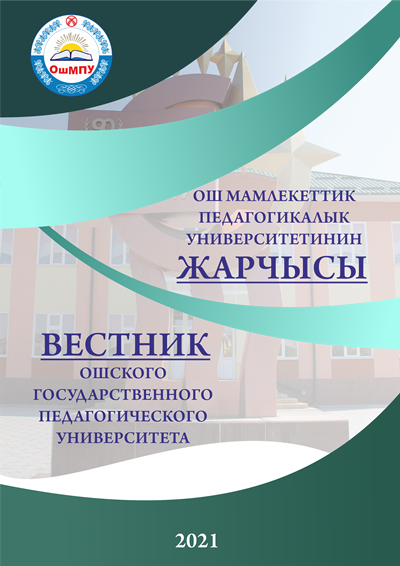

- Башкы
-
Университет
Билим берүүдө сапат кепилдигин камсыздоо менен коомдун өнүгүүсүнө салым кошо алган, интеллектуалдык потенциалы жогору, атаандашууга жөндөмдүү, дүйнөлүк деңгээлге интеграцияланган, педагогикалык, социалдык-экономикалык багыттагы жогорку жана орто кесиптик компетенттүү адистерди даярдоо.
Толук окуу -
Абитуриенттерге
Өлкөбүздүн билим берүү айдыңында өзүнүн кулачын кенен жайып, педагогикалык багыттагы сапаттуу кадрларды даярдоонун очогуна айланган Ош мамлекеттик педагогикалык университети 2022-2023-окуу жылына карата абитуриенттерди кабыл алат. Университетте бюджеттик жана келишимдик негизде жогорку жана орто билим берүү үчүн педагогикалык багыттагы бардык адистиктер боюнча кесип ээлери даярдалат.
Толук окууМагистранттарды кабыл алуу келишимдик негизде жүргүзүлөт. Магистратурага кабыл алуу аңгемелешүүнүн негизинде ишке ашат. Окуу мөөнөтү 2 жыл.
Толук окууМАКСАТЫҢЫЗ ОКУУ БОЛСО ИЗДЕГЕН, САПАР ТАРТЫҢ КЕҢ ААЛАМГА БИЗ МЕНЕН!
Толук окуу - Окутуучуларга
- Байланыш

.jpg)
ОшМПУнун Илимий борборуна кош келипсиз!
Ош Мамалекеттик Педагогикалык Университетинин илимий жарчысы:
 ОшМПУнун ИЛИМИЙ ЖАРЧЫСЫ 2021
А. МЫРСАБЕКОВ АТЫНДАГЫ ОШ МАМЛЕКЕТТИК ПЕДАГОГИКАЛЫК УНИВЕРСТИТЕНИНИ ЖАРЧЫСЫ
Кыргыз Республикасынын Президентинин 2021-жылдын 11-февралындагы “Жусуп Абдрахмановдун туулган күнүнүн 120 жылдыгын белгилөө жөнүндөгү” жарлыгына ылайык, ошондой эле Кыргыз Республикасынын эгемендүүлүгүнүн 30 жылдыгына, алгачкы кыргыз профессору Касым Тыныстановдун 120 жылдыгына карата уюштурулган
“МАМЛЕКЕТТҮҮЛҮККӨ КАРАЙ ТАРЫХЫЙ КАДАМ: ЖУСУП АБДРАХМАНОВ, КАСЫМ ТЫНЫСТАНОВ”
аталышындагы республикалык илимий-практикалык конференциянын материалдары
Ош- 2021
ISSN 1694-6359

РЕДАКЦИОННЫЙ СОВЕТ ЖУРНАЛА
Зулуев Б. Б. - главный редактор, ректор Ошского государственного педагогического университета, доктор педагогических наук, профессор (педагогические науки);
Абсатаров Р.Р. - заместитель главного редактора, проректор по науке, кандидат биологических наук, доцент, ОГПУ (экология);
Маткаримов Н.Т. - ответственный секретарь, редактор научного журнала «Вестник ОГПУ», кандидат социологических наук, доцент
(социологические науки)
Члены Совета
|
Мукасов С. М.
Асанканов А. А. |
- доктор философских наук, профессор, член-корр. НАН КР (философия, история философия) - доктор исторических наук, профессор, член-корр. НАН КР (исторические науки) |
|
Муратов А. Ж. |
- доктор педагогических наук, профессор (педагогические науки) |
|
Сакиева С. С. |
- доктор педагогических наук, профессор (педагогические науки) |
|
Атакулова М. А. |
- доктор филологических наук, профессор ОГПУ (филологические науки) |
|
Нурунбетов Б. А. Момуналиев С. М. |
- доктор исторических наук, профессор (исторические науки) - доктор педагогических наук, профессор (педагогические науки) |
|
Низамиев А. Г. |
- доктор географических наук, профессор (географические науки) |
|
Раимбеков К. Т. |
- кандидат биологических наук, профессор, проректор по учебной работе, ОГПУ (биологические науки) |
|
Бабеков А. У. |
- кандидат химических наук, профессор, ОГПУ (химические науки) |
|
Мадраимов С. М. |
- кандидат педагогических наук, профессор, ОГПУ (высшая и прикладная математика) |
|
Омуралиева Г. К. |
- кандидат биологических наук, профессор ОГПУ (биологические науки) |
|
Субанов Т. Т. |
- кандидат экономических наук, доцент, ОГПУ (экономические науки) |
|
Даминова И. Д. |
- кандидат педагогических наук, доцент, ОГПУ (педагогические науки) |
|
|
|
|
Байышова Г. Ж. |
- кандидат педагогических наук, доцент, ОГПУ (педагогические науки) |
|
|
|
|
Мондошов Ш. Н. |
- кандидат педагогических наук, доцент, ОГПУ (педагогические науки) |
|
|
|
Учредитель: Адрес редакции:
Ошский государственный педагогический университет 714018, Кыргызстан, г. Ош, ул. Исанова, 73
Журнал зарегистрирован Тел.: (+996-3222) 4-35-67; 4-35-71
Министерством юстиции Факс: (+996-3222) 4-35-67
Кыргызской Республики E-mail: osh.ogpi@gmail.com
Рег. свидетельство №1527 от 15.05.2009 г.
Главный редактор: Б. Б. Зулуев
ЖУСУП АБДРАХМАНОВ – КЫРГЫЗ МАМЛЕКЕТИНИН НЕГИЗДӨӨЧҮЛӨРҮНҮН БИРИ
КЫЯС МОЛДОКАСЫМОВ
Тарых илимдеринин кандидаты, КР Президенттик Аппараттын алдындагы “Мурас” Фондунун төрагасы
ӨЛКӨ БҮТҮНДҮГҮ, КЕЛЕЧЕГИ ҮЧҮН КҮРӨШКӨН УЛУТ ЛИДЕРИ ЖУСУП АБДРАХМАНОВ
Мамлекет алсырап, элдин ынтымагы ыдырап, адамдардын жан дүйнөсү жакырланып, келечекке карата ишеними жабыркап турган учурда өтмүштүн өрнөктүү учурлары, чыгаандардын чаалыкпаган аракеттери, катаал замандын запкылары менен сабактары чыйралтып, эсиргендерди эс-акылга чакырып, мээсине мекенчил сезимди тирилтип, көөдөнүндө өчкөн отту тутантып, сенейген денесин дендароолуктан ойготобу? - деген суроо ар убак толгонтуп, жооп издетип ойлонтуп келет. Түнкү уйкудан бездирет. Санаага батырат. Анын үстүнө алдым-жуттум заманда тарыхыңды уруп ойнобогон алабарман саясатчылар, байлык-бийликке азгырылган жетекчилер өздөрүн дүйнөнүн түркүгүндөй сезишип, улуттун улуу инсандарын туу тутпайт. Таазим этишпейт. Өрнөк алышпайт.
20-21 жашында Кыргыз мамлекетин түптөөгө, сактап калууга бараандуу салым кошуп, 25 жашында Өкмөттү жетектеп, өлкөсүнүн өнүгүшү үчүн өмүрүн сайган Жусуп Абдырахманов 36 жаш курагында бейкүнөө атылып кеткен. Кыргыз эли өткөн кылымдын 20-30-жылдарында Жусуптай чыгаан уулун чыгарса, 40-50-жылдары Исхак Раззаковдой улуттук лидерин жаратты. Тилекке каршы андан кийинки мамлекет башчылары кыска, узак убакыт өлкөнү жетектеп турганы менен, чыныгы лидерге элибиз жарыбай койду. Эгемендүүлүккө ээ болгон 30 жылдан бери элибиз Улуу Көчүнөн адашып, өз жолун табууда, өнүгүү жолуна түшүүдө кеменгер жетекчиге жетпей келгени өкүткө салат. Биз бул чакан баяндамабызда улут лидери Жусуп Абдрахмановдун урунтуктуу айрым учуруна гана токтолобуз. Тактап айтканда Кыргыз мамлекетин түптөөгө салым кошкон, бүтүндүгүнө кам көргөн ишмердигин учкай баяндайбыз.
Өлкө тагдыры өкчөлгөн, күрөш менен сакталган заман
Кылымдарды кучагына алган карт тарыхында Кыргыз мамлекети катаал тагдырга туш келген кырдаалдар көп болду. Эгемендүүлүккө ээ боло албай зарлап жүргөн учурлары да арбын. 30 жыл мурда өз алдынча мамлекет болушубуз – бул элибиздин бактысы, жараткандын кыргыз элине жасаган ырайымы, билген кишиге бир чети сыноосу. Сынак мөөнөтү сызылып өтүп жатат. Өткөөл заман бүтпөй, олку-солку абалдан чыга албай келебиз. Эркиндикти барктай албасак, сактай албасак, учугун улай албасак бактыбызды көздү ачып-жумгучакты эле учуруп жиберебиз. Бийлик талаш, байлык талаш менен жүрүп 30 жылды текке кетирдик. Эгемендүүлүктүн өзү түгүл пайдубалы да толук түптөлбөдү. Жакын аралыкта түптөлөөрүнө да көз жетпейт. Андыктан эртерээк эс акылга келбесек, эртең энебиздин тоюн көрөбүз. Мына ушул өңүттөн алганда Жусуп Абдрахманов менен Абдыкерим Сыдыков башында турган кыргыз элитасы өткөн кылымдын 20-жылдары баа жеткис эмгек жасашкан. Алар Кыргыз мамлекетинин кайрадан куралбай калышынан, жок болуп кетүү коркунучунан сактап калган. Азыркы элита өткөндүн улуу сабагын унутушуп, эгемендүүлүктү кыйроо абалына алып келишти. Багыты жок саясат башаламандыкты жаратып, максатсыз аракеттен майнап чыкпай келет. Ойлоно турган мезгил, ойгоно турган убак келди окшойт, кыргызым. Эми кептин нугун кайрадан каарманыбызга буралы.
Жусуп 1921-жылы көптөн бери эңсеген Ата Журтуна келет. Алгач ал Түркстан Компартиясынын Пишпек уездик-шаардык комитетинин уюштуруу бөлүмүнүн башчысы, андан көп өтпөй Каракол уезддик-шаардык комитетинин жооптуу секретары жана ушул уезддеги “Кошчу” союзунун презиудумунун мүчөсү болгон. Ушул кызматтарды аркалап жүргөн учурунда Кыргызстандын өз алдынча мамлекет болуп түптөлүшүнө өзгөчө аракет кылган. Чындыгында бул учурда Кыргызстандын бар же жок болуп кетүүсүнүн тегерегинде айгышкан күрөш башталган. 1920-жылы Казакстан Кыргыз автономиялык республикасына айланганда Жети-Суу жана Сыр-Дарыя облусунда кыргыздар жыш жашаган аймактар кирген эмес. Ал эми казак жетекчилери кыргыздар жашаган аймакты өздөрүнө кошуп алуу аракетинде болушкан. Ага кыргыздардын арасынан Рахманкул Кудайкулов баштаган кыргыздашып кеткен айрым казактар шыкакчы болушуп, Казакстандын курамына автономия болуп кирүүгө жан үрөшкөн. Бул тирешүү эмне менен аяктаарын кошуна башка элдер да чыдамсыздык менен күтүшкөн. Эгерде казак жетекчилеринин аракеттери, ичтен чыккан ийри жыландардын шыкагы менен ишке ашып кетсе, Кыргызстандын Түштүк тарабын бөлүп кетүүгө даяр турган күч жетиштүү болчу. Бул Кыргызстан деген мамлекеттин биро толо картадан жок болушу менен аяктамак. Ал эми эл 50 жылдан кийин өз эне тилин өгөйлөп, 100 жылда улуттук белгилеринен ажырап калмак. Мына ушундай коркунучту Абдыкерим Сыдыков, Жусуп Абдырахманов баштаган кыргыз элитасынын экинчи бөлүгү туура түшүнгөн. Ошондуктан ортодо айгышкан күрөш жүргөн. Кыргыздын чыныгы мекенчил элитасы коргонуу менен гана чектелбей, чабуулга өтүп, аталган облуста жашаган кыргыздарды Тоолуу Кыргыз облусу аталышта кошуналардан көз карандысыз мамлекетчеге бириктирип, РСФСРдын курамына түз кошулууну көздөшкөн. Ошондо гана кошуналардын көз артуусунан кутулабыз деп ойлошкон. Мындай демилге 1922-жылдын жаз айынан жанданып, Москванын макулдугун алууга жетишип, уюштуруу съезд чакыруу боюнча уюштуруу комитет түзүшкөн. Анын башында партиядан чыгарылганына карабай Абдыкерим Сыдыков турган. Анын оң колу катары шакирти Жусуп негизги уюштуруу иштерин мойнуна алган. Натыйжада съезд өз ишин 1-июнда баштап, анда Тоолуу Кыргыз облусу түзүлгөнү жарыяланат. Бул күн Кыргыз мамлекеттүүлүгүнүн Совет доорунда калыбына келтирүүгө багытталган алгачкы иш-чарасынын күнү катары тарыхтан орун алган. Белгилей кетүүчү жагдай, Түштүктөгү кырдаалга карата Фергана облусунда жашаган кыргыздар аталган облуска кийинчерээк кошулаары маалымдалган. Съезддин чечимин Москвага билдирип, алардан жооп күткөн. Бирок жеңилип калган Рахманкул Худайкулов тарап жөн жатып калбай, болушунча каралоо иретинде, “бай-манаптардан турган улутчул топ жаңы түзүлүшкө каршы Тоолуу облус түзүшкөнүн, алар Союздун карамагынан чыгууну көздөп жатышканын” жалаа кылып, Борбордук комитетке каттарды жаадырган. Ошол кездеги уруулук бөлүнүүчүлүк, биримдиктин жоктугу ого бетер шыкак болуп, жакшы тилек менен башталган ишке Москва далысын салып, худайкуловчуларды жактап чыгат. Мурда макулдашылган чечимин Сталин алакандай жиберген телеграммасы аркылуу жокко чыгарган. Тоолуу Кыргыз облусун тузүүчүлөргө улутчул деп айып тагылат. Москвасыз өз алдынча чечим кабыл алынбаган замандын каарын Ж. Абдрахманов, А. Сыдыков баштаган алгачкы элита жакшы эле көрдү. Эркиндиктин баасын алар жан дүйнөлөрү менен сезишти. Азыркы эгемендүүлүк доордун элитасы андай зордукчул саясатты башынан өткөрбөй, эркиндиктин баасын аңдабай жатпайбы. Алар тескерисинче Россия жана кошуна мамлекет башчылардын колдоосун алдык деп кудуңдап жүрүшөт. Ошентип жарым жартылай болсо да өз алдынча мамлекет түптөйбүз деген Жусуп Абдрахмановдордун тилеги аткарылбады. Анткени менен алардын кыргыз мамлекетин түптөйбүз деген күрөшү тарыхта өчпөс болуп жазылып калды. Алардын аракети текке кетпегенин эки жылдан кийин Кыргыз мамлекеттүүлүгүнүн түптөлүшү тууралуу тарыхый чечимдин кабыл алынышынан көрүүгө болот.
Эл тилеги, эркиндик желеги
Тоолуу Кыргыз облусу түзүлбөй калганы менен келечектен Жусуптун үмүтү үзүлбөдү. Кайрадан кыргыз эли өз алдынча түтүн булатып, кошуна элдин карамагында автономиялык абалда калбоосу үчүн болгон аракетин жумшады. 1923-24-жылдары ал Жети-Суу облусунун, Түркстан республикасынын бир катар жооптуу кызматтарын аркалады. СССРдин, РСФСРдин Борбордук Аткаруу комитетине мүчөлүккө кандидат болду. Түркстан республикасынын БАКынын Презиудумуна мүчө жана жооптуу секретары болду. Мындай кызмат орун, шайланган бийик тепкичтер чындыгында 23 жаштагы Жусуп үчүн баш айланткан ийгилик эле, болгондо да башка улуттардын арасында. Бирок анын көздөгөн максатын жогорудагыдай жогорку бийлик устуканы өзгөртө албады. Ал Кыргыз мамлекетин түзүү үчүн күрөшүн токтотподу.
1918-жылы май айынан баштап РСФСРдин, 1922-жылдын 30-декабрынан СССРдин курамына киргизилген Түркстан АССРин өз алдынча улуттук мамлекеттерге бөлүү 1924-жылы РКП(б) БКнын негизги маселелеринин бирине айланган. Бул маселенин эки жагы болгон. Биринчиси, түрк элдеринин саясий биримдигин жок кылуу. Анткени Түркстан чөлкөмүнүн бирдиктүү мамлекетке айланышы Оруссиянын оторчул саясатына тоскоол болуп, келечекте зор коркунучка айланаары кооптондурган. Андыктан РКП(б) үчүн Түркстан калкын майда-майда автономияларга бөлүп башкаруу алда канча ыңгайлуу болгон. (Кара Кыргыз автономиялуу обком партиясынын алгачкы жетекчиси И. Каменскийди кийин Ж. Абдрахманов “партбилеттүү колонизатор” деп баалашы да ушундан улам болгон). Экинчи жагынан, кыргыз эли үчүн мамлекеттүүлүктүн автономиялык деңгээлде болсо да калыбына келтирилиши бытырандылык коркунучундагы Кыргызстан үчүн тарыхый зор мааниге ээ болгон. Бирок ошол автономиялык маккамга жетиштин өзү кыргыздар үчүн оор болгон. 1924-жылы жайында Орто Азиядагы жооптуу кызматкерлердин улут маселесине арналган жыйынында кыргыз тараптан Э. Арабаев чыгып сүйлөп, негизги баяндамада кыргыздар тууралуу таптакыр сөз болбогондугун сынга алган жана кыргыздар өз автономиясын түзүп, анан кайсы федерацияга же республикага кирүү тууралуу өз алдынча чечип алуусу керек деп, баса белгилеген. Бул жыйынга Жусуп Абдрахманов да катышкан. Бирок алар бул жыйында азчылыкты түзүп, кыргыздардын жери Казак (ал учурда Кыргыз аталчу) республикасынын алкагына киргизилээри тууралуу сунуш жактырылган. Кыргыздардын бактысына мындай чечимге РКП(б)нын Орто Азия бюросу 31-августта бөгөт койгон. Мында албетте ал жерде жооптуу секретарь болуп иштеген Жусуптун салымы зор.
1924-жылы 16-сентябрда Түркстан АССР Кеңешинин Борбордук аткаруу комитетинин кезексиз чакырылган сессиясы Орто Азиянын улуттук-мамлекеттик бөлүнүшү тууралуу токтом кабыл алган. Бир айдан соң, 14-октябрда Москвада Бүткүл союздук аткаруу комитетинин (ББАК) 2-сессиясы Орто Азия элдеринин улуттук-мамлекеттик бөлүнүшү жөнүндө чечим кабыл алган. Бул чечимге ылайык Кара Кыргыз автономиялуу облусу (ККАО) түзүлүп, ал РСФСРдин курамына киргизилген. Бул тарыхый чечим кыргыз элинин кылымдар бою эңсеген эркиндигинин жарым жартылай чечилиши болгон. Бул чечим айрым бир тарыхчы сөрөйлөр, журналисттер жазгандай кокусунан эле кабыл алынган чечим эмес экенин, ага ээ болгучакты кыргыз элитасынын тынымсыз күрөшүнүн жеңиши болгонун тарых тастыктап турат. Андыктан А. Сыдыков, Ж. Абдрахманов, Э. Арабаев жана башка кыргыз элитасынын күрөшүн, аракетин жокко чыгарууну көздөгөн А. Князевге окшогон саясатаануучу сөрөйлөрдүн кулагына күмүш сырга демекчибиз. Жаңы түзүлгөн ККАОнун большевиктик-партиялык уюштуруу бюросунун жетекчиси болуп М.Д. Каменский, облустун Ревкомунун төрагасы болуп И. Айдарбеков бекитилген. Бул Ревком Советтердин облустук курултайын даярдоо маалындагы жетекчи орган катары иш алып барган. 1924-жылы ноябрда Ж. Абдрахманов Облпартбюронун экинчи секретарлыгына дайындалат. Бирок ал колониялык саясатты уланткысы келген, жергиликтүү шартты жакшы билбеген, борбордон десант катары түшүрүлгөн, баштапкы билими гана бар 1-секретарь менен иштешкиси келген эмес. Кыргыздардын бөлүп жарылуусун, худайкуловчулардын ур-токмок саясатын курал катары колдонгон, жергиликтүү элди теңсинбеген 1-секретарга Жусуптун бетке чапкан курч сындары катуу тийген. Анын өзгөчө кадр саясатындагы өз алдынча чечимдери, демилгени колго ала билген уюштуруучулук жөндөмү кыргыздарды теңсинбеген Каменскийди кыжырланткан. Бул тирешүү албетте ал учурда Жусуптун пайдасына чечилмек эмес.
1925-жылы 27-30-мартта Пишпек шаарында Кара Кыргыз автономиялуу облусунун Кеңешинин алгачкы уюштуруу курултайы өткөрүлгөн. Курултайдын 30-марттагы отурумунда облустун Аткаруу комитетин шайлап, Кыргыз жергесиндеги мамлекеттик бийлик ага өткөрүлүп берилген жана Ревком өз күчүн жоготкон. Курултайда “кара” сөзүн расмий аталыштан алып салуу жана өлкөгө облустук эмес, автономиялуу республикалык макамды берүү тууралуу сунуштар көтөрүлгөн. 1925-жылдын 25-майынан өлкөнүн расмий аталышынан “кара” сөзү алынып салынып, Кыргыз автономия облусу деген аталышка ээ болгон. Ушул курултайда Д. Каменский чыныгы жүзүн көргөзүп, Ж. Абдрахмановду жана анын жакын санаалаштарын эч кандай кызматка көргөздүрбөй, четтетип койду. Партиянын 2-секретарлыгынан бошотту. 1-секретарь тескерисинче Жусуптун катуу каршылашы Р. Худайкуловдун тобун бийликке алып келди. Каменскийге ары билимдүү, ары уюштургуч, калың элдин арасында аброю зор А. Сыдыков, Ж. Абдрахмановдой өз билгенин бербеген, баш ийбеген “чаарбаштарга” караганда чала сабат, айтканды аңдабай дароо аткарчу Худайкулов сыяктуу жетекчилер керек болчу. Демек бул курултайда каралган маселелер, кабыл алынган чечимдер кыргыздар үчүн өтө маанилүү болсо, экинчи жагынан нукура мекенчил кыргыз элитасына катуу сокку урулду. Мамлекеттик кызматта кадимкидей тажрыйба топтоп, калыптанып калган 24 жаштагы Жусуп жумушсуз калды. Өлкө сыртына “сүргүнгө” айдалат.
Өкмөт башында, өлкө кызыкчылыгында
Ата Журтуна 1926-жылдын аягында кайткан Жусуп Абдрахманов алгач Кыргыз АССРинин Борбордук аткаруу комитетинин төрагасынын орун басарлыгына дайындалып, 1927-жылдын март айынан тарта республиканын эл Комиссарлар Советинин төрагасы кызматына дайындалат. Н. А. Узюков да Жусуптун сапаттарына калыс баа берип, “кырдаал-шартты өз алдынча баамдай билүүчү баалуу, маданияттуу кызматкер” деп сыпаттаган. Ал өкмөт башына келгенде 26 жашка толо элек кези болчу. Жусуптун лидерлик касиети, жетекчилик сапаттары өкмөт жетектеп турган учурда ачык көрүнгөн. Күндөлүгүнө жазгандай бул кызматты өз мүдөөсүнүн кызыкчылыгына пайдаланган эмес. Өлкө өтө татаал учурду башынан кечирип жаткан учурда ушундай өтө жооптуу жогорку кызматты аркалаган. Ар бир кыймыл аракет, эгин эгүү, пахта өстүрүү, эң зарыл курулуш иштери, келечекке карай аракет Москва, Ташкент тарабынан катуу көзөмөлгө алынып турган көз каранды жашоодо өкмөт башчынын абалын бүгүнкү шарт менен салыштырып кароо таптакыр мүмкүн эмес. Элдин азабына, замандын соккусуна кабылып, ошондо да туура жол таап, өлкөнүн өнүгүүсүнө өмүрүн сайып аракет кылуу бул чоң эрдикти талап кылган. Эски түзүлүштөн жаңы коомго дароо эле өтүп кетүү мүмкүн эместигине 20 жылдан бери күбө болуп келе жатпайбызбы. Өткөн кылымдын 20-30-жылдары Түштүктө “басмачылык” аталган жарандык согуш, жер-жерлердеги уруулук бөлүнүүлөр, кландык тирешүүлөр, таптык жиктелүүлөр, жапырт билимсиздик, кадрдык тартыштык, кыскасы бирдиктүү мамлекеттин түптөлүшүнө ар тараптан тоскоолдуктар жетиштүү эле. Мына ушундай шартта эл башындагы жетекчилердин чыныгы жүзү көрүнүп, элита арасынан нукура лидерлер өсүп чыккан. Жусуп Абдрахманов улуттун лидери катары өзүн татыктуу көргөзө алган. 1927-жылдан 1933-жылга чейин Кыргыз АССРинин өкмөтүн жетектеген Жусуптун бүтүргөн иштерин, ички сырын, кыймыл аракетин, көз карашын чагылдырган күндөлүгүн, сүйлөгөн сөздөрүн, тубаса жөндөмүн, бетке чапмай курч мүнөзүн, жазган каттарын, докладдарын, эмгектерин, акыл тереңдигин, ашкере мекенчилдигин, терең билимин, жөнөкөйлүгүн, көсөмдүгүн, элге жакындыгын талдоого алып, анын чыныгы улуттук лидер экенине ынанасың.
Жогоруда биз кыргыз элинин өз алдынча мамлекет болуусу үчүн Жусуп Абдрахманов баштаган кыргыз элитасынын айгышкан күрөшү тууралуу, анын жемиши катары ККАО, КАО, КАССРи түзүлгөнүн баяндадык. Бирок булар менен эле маселе толук чечилген эмес. Бул маселени чечүү үчүн Жусуп жалгыз аракет кылган учурлар көп болгон. Ал тууралуу 1931-жылы 15-майда күндөлүгүнө: “ ...бюро мүчөлөрүн ынандырууга аракет кылам. Андан майнап чыкпаса Ташкент менен, керек болсо Москва менен жалгыз салгылашканга туура келет. Республика үчүн өтө аянычтуу, аянычтуу анткени анын кызыкчылыгы, айныксыз укугу үчүн акыр аягына чейин күрөшкөнгө жөндөмдүү адамдар жок”, - деп арман кылганынан көп нерсени түшүнүүгө болот. Кыргыз республикасынын кызыкчылыгы Жусуптун ишмердигинин башкы өзөгүн түзгөнүн анын күндөлүгүнөн, жазган каттары менен жасаган аракеттеринен билинет. РСФСРдын курамына кирген Кыргыз АССРи өз алдынча чарба жүргүзүү, жалпы эле экономикага, маданиятка, саясатка байланыштуу маселелерин чечүү укугуна ээ боло албаган. Бул учурда Кыргызстан үч субъектиге баш ийип, зарыл маселелерди чечүүдө көптөгөн кыйынчылыктарга дуушар болгонун жалгыз Жусуп көтөрүп чыкканын, же болбосо Ташкент, Москва менен күрөшкөнгө жөндөмдүү жетекчилердин жоктугун көрөбүз. Мындай татаалдыктарды чечип берүү үчүн ал Сталинге жүйөлүү далилдери келтирүү менен эки жолу атайын кат жазып кайрылган. Мына ошол каттарынын биринде:
“Конституциялык-укуктук көз караштан биз РСФСРдын составдык бөлүгү болуп эсептелебиз. Бул маданий-чарбалык өнүгүшүбүздөгү бардык маселелерди чечүүдө РСФСРдын өкмөтү, анын органдары менен өз ара мамилелелрибизди аныктоого тийиш сыяктанган эле. Бирок Кыргыз АССРи өзүнүн экономикасынын мүнөзү жанан географиялык абалы боюнча экономикалык бирдиктин – Орто Азиянын ажыралгыс бөлүгү болуп эсептеле тургандыгынын кырдаалы иш жүзүндө үчилтик “баш ийүүнүн”, бир жагынан РСФСРдын өкмөтүнө, экинчи жагынан Орто Азиянын органдарына ВКП (б) БКнын Орто Азия бюросу, Орто Азия ЭКОСОсу, Орто Азия суу чарбасы, Соода комиссариатынын өкүлү, Союздун почта жана телеграф эл комиссариатынын өкүлү ж.у.с., үчүнчү жактан СССРге үчилтик баш ийүүнүн абалында калгандыгыбызга алып келди. Республиканын мындай үчилтик баш ийиши, иштин тажрыйбасы көрсөткөндөй, Кыргызстандын чарбалык-маданий милдеттерин чечүүдө өтө терс түрдө таасир тийгизүүдө, демек, кедергилик кылуучу элемент болуп эсептелет” деп көйгөйлүү маслени ачыкка чыгарган. Башкаруудагы мындай кайталангандыктын терс таасирлери жана республиканын өнүгүшүнө тийгизген кесепеттери тууралуу өтө ынанымдуу далилдерди келтирген. Ушундай курч маселени жетекчиликке жеткиликтүү деңгээлде жеткирүү терең билимди, эң башкысы тайманбастыкты талап кылган. Андай сапаттардын бардыгы Жусупта бар болчу. Бирок Сталин тарабынан бул катка да жооп берилбеген жана көтөрүлгөн маселе ошо бойдон кала берген. Эмне себептен Жусуп ушул маселени улам-улам көтөргөн? – деген суроо туулушу мүмкүн. Бул маселени көтөрүү менен ал эң башкы маселени - Кыргыз АССРин союздук республикага айландырууну көздөгөн. Катта жазылгандай “маселенин башкы чечилиши, атап айтканда Кыргыз АССРин союздук республикага кайра түзүүдө калган”. Анткени ошол учурда Тажикстан союздук республика макамын алган. Ал эми Түркмөнстан өнүгүүсү жагынан Кыргызстандан артта турганына карабай мындай макамды 1924-жылы эле алган. Кыргызстан Орто Азиядагы ар кандай органдарга тикелей баш ийбестен федерациялык негизде тең ата катышуусун, башкача айтканда Орто Азиядагы республикалар федерациялык негизде биригишин көтөрүп чыккан. Жусуп тарабынан көтөрүлгөн маанилүү бул маселе бүгүнкү күндө да өтө актуалдуу болуп, эгемендүү макамга ээ болгон мамлекет башчылары тарабынан көтөрүлүп жатышы бекеринен эмес. Мына ушул эки маселени өз учурунда ачык көтөрүп чыгуусунан эле Жусуп Абдрахмановдун келечекти көрө билген көсөмдүгүн, мамлекеттик масштабда ой жүгүртө билген чыныгы лидерлик сапаттарын көрөбүз.
Кыргызстанды союздук республикага айландыруу аракетинде Жусуп каттарды эле жазып тим болбостон, уюштуруучулук жагын да кошо ала жүргөн. 1930-жылы апрель айында Москвада жүргөн учурунда ВКП (б) БКнын Саясый бюросунун адына да бул маселени көтөрүп чыкканы маалым. 21-апрелде ал ВКП (б) Кыргыз обкомунун жетекчилерине өзүнүн Сталинге жазган экинчи катынын көчүрмөсүн жиберип жатып, “Силердин колуңарда болгон материалдар менимче, обкомдун бюросу Кыргызстанды Союздук республикага кайра түзүүнүн зарылдыгы жөнүндө чечим чыгарышы жана бул туурасында БКнын Орто Азия бюросунун жана ВКП (б) БКнын Саясий бюросунун алдында өтүнүч козгошу үчүн жетиштүү. Делегациябыз съезддин учурунда бул маселени БКнын алдында партиялык уюмдун атынан атынан расмий тартипте койо алгыдай болушу үчүн, эгерде сиздер чечим кабыл алсаңыздар жана ХYI съездге чейин ВКП (б) Бкнын Орто Азия бюросунун токтомун алып койсоңуздар, эң каалагандай болоор эле» деп жазат. Мына ушул каттан да Кыргызстанды союздук макамга жеткирүү аракетинин башында ким турганын даана көргөзөт. Жусуптун жигердүү аракетинен анчалык майнап чыкпаганы менен 1930-жылы 27-апрелде СССР Эл Комиссарлар Советинин токтому менен Кыргыз АССРинин өкмөтүнө “ССР Союзунун Эл Комиссарлар Советине менен Эмгек жана коргоо советине түздөн-түз кирүү”укугу берилген. Андан бир ай өтпөй 31-майда Жусуп Абдрахмановдун отчетунан, анын сунушунан кийин РСФР Эл Комиссарлар Совети “Кыргыз АССРинин чарбалык жана маданий курулушу жана өнүгүшүнүн перспективалары жөнүндө” токтомун кабыл алган. Ушул токтомдун негизинде Кыргызстанга реалдуу жардам берүү жанданган. Булардын бардыгы Жусуп Абдрахмановдун түздөн-түз аракетинин жемиши.
Жетекчилик, инсандык улуу сапаттары
Жусуптун жетекчилик сапаттары менен инсандык мыкты касиеттери бири-бири менен жуурулушуп, анын улуулугун көргөзүп турат. Көпчүлүк жетекчилерде ушул сапаттардын бири болсо экинчиси болбой, эл сынына толук татый албай, эстутумдан алгылыктуу орун табалбай тез эле унутулат. Ал эми Жусуп сыяктуу жетекчилер элдин эсинде түбөлүккө сакталып, инсандык мыкты сапаттары тарыхта өрнөк болуп кала берет. Кыргызда бекеринен айтылбаса керек, адамды жакшылап билгиң келсе, ага байлык, бийлик берип сынап көр деп. Эчендеген мыкты эсептелген адамдар бийликке келгенде эсиришип, элин кыйноого алышат. Байлыкка жетсе көбүшүп, эч нерсени көзгө илбей, кудайын тааныбай калышат. Жусуп айрым жетекчилер бийлигинен ажырап калам деп балык болуп унчукпай отурушун, бийликти алар жеке кызыкчылыгы, жашоо шартын жакшыртуу үчүн колдонооруна чыдай албастыгын күндөлүгүндө эчен ирет кайталап жазган. Ал гана эмес Москвадан жиберилген жетекчилердин көпчүлүгү Кыргызстан үчүн жан күйгүзүп кызмат кылбаганын, алар бул жерге келечек карьерасы үчүн трампилин катары келгенин баса белгилейт(21.10.32). Жусуп жетекчилерди тандап кызматка койордун алдында алардын жеке сапаттарына өтө сын менен карап, калыс чечкен. Ал ээлеген жогорку кызмат ордун эч качан жеке мүдөөсүнө, же туугандарынын кызыкчылыгына пайдаланган эмес. Ушул жерден бир көрүнүштү окурмандарга билдирбей кетсек болбостур. Ага бир күнү бир тууган эжеси жардам сурап келгенин жазат. “Болгондо да мен эң жакшы көргөн жалгыз эжем, ал да мени өзгөчө жакшы көрөт. Анын жолдошу 3 ай мурда ГПУ тарабынан камакка алыныптыр. Мен жездемдин ким экенин, кылмышкерби же алдамчыбы, байбы, ким экенин билбейм. Эмне айыбы үчүн камалганын да билбейм, эжем өзү да билбейт, балким ак жеринен камалып жаткандыр. Эжем аны эркиндикке чыгарууга менден огожо болобу деген үмүттө жардам сурап келиптир. Бирок мен ага кантип кийлигишем, мен кантип андай жолго барам, эч качан баралбайм да” - деп жазганын окуп анын ашкере чынчылдыгын көрөбүз ( 23.05.31).
Жусуп элге эч жалган убуда бере абастыгын күндөлүгүнө жазган бир окуя далилдеп турат. “Мага Жалал-Абадда оорукананы радиолоштуруу боюнча бир дарыгер миң сом бөлдүртүп берүүнү өтүнүп кайрылды, деп жазат күндөлүгүндө. Мындай акча жок деген жообума көнбөй, ал менден убада берүүмдү суранды. Убада берип койсом деле болмок, бирок мен аткарылбас иш үчүн эч качан убада бере алмак эмесмин” дейт ал. Бул майда эле көрүнгөнү менен жетекчилик, инсандык сапатын ачып бере турган көрүнүш. Аны чечмелеп отуруунун зарылдыгы жоктур. Өкмөт башында турган Жусуп элдин жашоо шартын, өлкөдөгү абалды жер кыдырып, эл аралап жакындан билген. Элге жакындыгы менен айырмаланган. Кадимки жомоктордогу, уламыштардагы дубананын кийимин кийип элдин арасына чыккан даанышман падышалардай аскер кийимин, башына аскер шлемин баса кийип, өзүнүн Өкмөт башчысы экенин билдирбей базарларды аралаган, чайканаларда элдин арасында отуруп, алардын пикирин угуп, маанайын билген. “Капысынан Жалал-Абад базарын кыдырып, бир катар чайканага кирип отурдум. Кара-Сууда да ошондой эле болду. Базарда жана чайканада ар кайсыл темада сүйлөшкөн бир дагы адам мен алардын арасында, алардын өз ара сүйлөшкөнүн угуш үчүн отурганымдан шек санашкан жок. Кызыл армиячылардын чолок тону, шлемду баса кийип отурушум мен үчүн мыкты маскировка болуп берди. Анын үстүнө өзүмдү кызыл аскер-калмакмын, жергиликтүү тилди билбейм деп тааныштырдым. Атайылап бардык жерде орус тилинде сүйлөп жүрдүм. Эгерде алар жанында отуруп сүйлөшүп жаткан кызыл армиячы эмес эле Эл Комиссарлар советинин төрагасы экенин билгенде, мынчалык ачылып сүйлөп бермек эмес. Пахта жөнүндө, кыдыруу, тинтүү жөнүндө сүйлөштүк. Нааразычылык өтө жогору. Алардын айткандары басмачылыктын келип чыгуу мүмкүнчүлүгү жогору экендигин дагы бир жолу бышыктайт...” деп өз көзү менен көргөндөрүн 1931-жылы 13-январда күндөлүгүнө түшүргөн. Алай жергесин кыдырып чыгып, ал жерде да чечилбеген көп маселелер бардыгын жазат. Гүлчөдө иштеп жаткан жергиликтүү жетекчилердин абалына зээни кейийт. “Уктоочу бөлмөсү менен иштеген канцеляриясын ажыратып болбойт, башкача айтканда күндүзү ал жерде иштесе, түнкүсүн ошол эле жерде жатып укташат. Биз адамдардан ишти талап кылганды билебиз, бирок алардын жашоосу үчүн эң жөнөкөй шарт түзүп бере албайбыз” деп жазат ошол эле күндөлүгүнө. Алайда ал Гүлчөнү келечекте кыргыз шаарчасына айландыруу демилгесин көтөрүп чыккан. “Мен мурда Алай тууралуу жакшы билчү эмесмин, Алты сааттык кыдыруудан алты жылдан бери кагаз бетинде гана окуп келген маалыматтан алда канча көптү алууга жетиштим” деп Алайдын кооздугуна суктанган (01.05.31). Кыргызстандын ар бир чөлкөмүн кыдырып чыккан соң, республиканын аймактары, ар биринин өзгөчөлүктөрү тууралуу жетекчилер аз билерин белгилеген. Алардын арасында Кыргызстан тууралуу эң мыкты билерман саналган Өкмөт башчы өзү да начар билээрин баса белгилеп, республиканын башында туруп ал тууралуу жакшы билбегендик өтө уяттуу көрүнүш экенин жазат (8.01.31). Негизи эле Ж. Абдрахманов өзүнө талапты катуу койгон, өзүнүн кемчилдигин сезе билген жетекчи болгон. “Бактысыз менин элим! – деп жазат күндөлүгүнүн дагы бир жеринде. Өзүнүн келечегин мага окшогон бетбакка ишенген байкуш элим. Мен алардын ишеничине татыктуумунбу? Андан көрө жетекчилик кызматымдан кеткеним оңдур. Менден күчтүү, менден татыктуу жана ишеним арткан адамды шайлап алганы оңдур. Жансыздар тирүүлөрдү башкара албайт...” – дейт ал өзү жөнүндө (20.08.28).
Жусуп жетекчи катары өтө кечиримдүү болчу. Ал жеке таарынычтары үчүн кек сактап, аны жазалоого багытталган сталиндик саясатты күндөлүгүндө сындаган учурлары арбын. Бир кезде өзүнүн үстүнөн жалааларды уюштуруп, кызматтан четтеткен Худайкулов, Бабахановго окшогон каршылаштарын да кечире билген. Алар кийин абакта отурган учурда кабар алып, абалын сурап барганы үчүн партиялык жаза алган. Ал түгүл обкомдун партиялык жетекчиси Шубриковдун тыюу салуусуна макул болбой, мындан бир саясий катачылыкты издебегиле, адамгерчиликтен тайыгандан көрө кызматтан кеткеним оң дегенге чейин барган. Өзүнүн устаты, партиядан чыгарылып, Кыргызстандан обочо кармалып келген Абдыкерим Сыдыковду 1932-жылы май айында Кыргызстанга чакырып, ага жогорку кызмат беришинин өзү эле ошол учурда зор эрдикти талап кылган. Ташкенттен аны Кыргызстанга көчүрүп келүү үчүн ЭКСнын төрагасына тиешелүү атайын вагонду жиберген. Бул дагы Жусуптун адамгерчилик бийик сапатын билгизет. Ал эч качан кызматтын кулу болгон эмес. Калыстык болбогон учурларда кызматымдан ажырап калам деп унчукпай отуруп калбаган. Бир жолу бюджетке тиешелүү маселе партиянын жыйынында талкууланып, маселени өкмөттү мажбурлоо жолу менен чечүүнү көздөгөн Шубриков башында турган партиялык жетекчиликке каршы чыгат. Ошондо Шубриков “биздин арабызда жетекчилик кызматтарда саясий жактан сабатсыз адамдар отурушат” деген курулай дооматына чыдай албай, анда Эл Комиссарлар советин таркатып, Абдрахмановду кызматтан алып, бюджетти түзүүнү обкомдун аппаратына тапшырып, ЭКСга айткан буйруктарды кыңк этпей аткарган акылдуу адамдардан төрага коюп алгыла дегенге чейин барган (16.10.28).. Жусуптун ушул сыяктуу өтө курч сапаттарын айта берсек сөз түгөнбөйт. Тек гана кимде-ким ал тууралуу кененирээк билгиси келсе Ж. Абдрахмановдун күндөлүгүн кунт коюп окуп чыгууну сунуштайбыз.
Лидердин көздөгөнү өлкө бүтүндүгү
Жусуптун ишмердигиндеги дагы бир баса белгилөөчү жагдай, анын ар убак эл биримдиги, өлкө бүтүндүгү үчүн күрөшү. Кыргызстанды бирдиктүү мамлекетке айландыруу үчүн катуу аракети жогоруда баяндалды. Анын акыбети кайтып, ККАО, КАО, КАССР түзүлгөндөн кийин анын чыңдалышына, өнүгүшүнө бүт өмүрүн арнады. Республиканын ар кайсыл аймактарындагы бөлүнүүчүлүктү көрүп, “бирдиктүү Кыргызстан али жок” деп арман кыла жазганын окууга болот (30.12.30). Жусуптун бул жазганы бүгүнкү күндө да өтө актуалдуу бойдон калууда. Кыргызстандын бүтүндүгүнө коркунуч туудурган күчтөр бүгүн да жетиштүү. Эл башчылары биримдикти арттырууга, бөлүнүүчүлүккө бөгөт коюуга алсыз, деңгээли жетишсиз болуп жатканы жашыруун эмес. Жусуп айткандай “Биздин жетекчилер денесинин кайсыл бөлүгү менен ойлонушат, билбейбиз”. Анын “советтик башкаруу толук бир сөөмгө төмөндөдү, алар башчысы жана багыты жок сүзүп жүрүшөт. Чын эле биз бетпактык, кошоматчылыктын доораны жүргөн ушундай жашоого келип жеттикпи” (4.12.30) деген сөзү азыркы учурга толук дал келип жатпайбы. Ал эми “Биздин учурубузда адамдар күздөгү аба ырайынан бетер өтө кубулма” деген сөзүн чечмелебей эле койолу. Демек, эл жана эл башчылары туура жолго түшкүчө өлкө бүтүндүгү туңгуюкка кептелээри 20-30-жылдарда көрүндү, азыркы чалкеш заманда да көрүнүүдө, келечекте да боло бериши толук ыктымал. Аны болтурбоо үчүн Жусуптай улут лидерлеринин аракеттеринен өрнөк алсак. Бирок, өз учурунда туңгуюктан чыгуу үчүн күрөштө Жусуп жалгыз ийгиликке жете алган эмес.
Түндүк-Түштүк бөлүнүүчүлүк оорусу ошол учурда да өкүм сүрүп турган. Ушул илдеттен жетекчилерди арылтуу үчүн Жусуп өлкөнү жакшылап үйрөнүү, проблемаларын жакындан билүү, мекенди сүйүү керектигин кайталагандан тажачу эмес. Кыргызстандын тагдырына кайдигер караган жетекчилерди душманындай көрчү. “Түштүк – Кыргызстандын ажырагыс бөлүгү, ошол эле учурда өз алдынча чарбалык бирдик. Мына ушул жерде Кыргызстандын башка аймактарынан Түштүктүн обочолонуп калуу коркунучу бар. Мына ушуларды эске алып мен көпкө чейин бирдиктүү Түштүк округу кылып түзүүгө каршы болуп келгемин. Бирок экономиканын закону менин каалоомдон жогору тураарын билгенден кийин андай көз карашыман баш тарууга туура келди” деп жазат, Түштүк маселесине өзгөчө көңүл буруу менен (29.10.30). Ж. Абдрахманов ойлогондой эле экономикалык кызыкчылыктан улам Түштүк эгемендүүлүк доорго чейин бирдиктүү округ, кийин облус болуп келсе, көз карандысыз жылдары саясий кызыкчылыктан улам 3 облуска ажыратылганы жалганбы. Жусуп Түштүккө өзгөчө көңүл буруу зарылдыгын келечекти көрө билген саясатчы катары мыкты түшүнгөн. “Түштүктү Фрунзеге караганда Ташкент көбүрөөк башкарат. Облустук партия жетекчилигинин ошондой эле өкмөттүн көргөзмөлөрүн түштүк райондору Ташкенттикинен 5-7 күн кеч алат. Кээде Ташкенттин көргөзмөлөрү сөзмө-сөз кайталанып Фрунзеден келет. Райондогулар бекер эле акча коротуп кайталап жиберүүнүн зарылдыгы барбы деп сурашат. Албетте алардын айткандары туура” деп жазат күндөлүгүнө, Ошто жүргөн кезинде (2.05.31). Жусуп мына ушундай кырдаалдан чыгуунун жолун Кыргызстан эртерээк союздук республикага айланып, Ташкент менен тең ата, федерация макамында мамиле орнотуудан көрөт. Анткени ошол учурда эле чек ара маселесиндеги чалкештик, Нарын дарыясына курулуучу ГЭСтерге Ташкенттин кийлигишүүсү сезилээрлик деңгээлде өкүм сүрүп турган. Ал тууралуу күндөлүгүнө “Нарын дарыясы кыргыз маселесинен өзбек маселесине айланып бара жатат” деп жазганы бар (17.04.31). Жусуптун мындан туура 80 жыл алдын жазгандары азыркы эгемендүүлүк мезгилде да негизги маселе боюнча калып жатканы кызык. Экинчи жагынан бул маселени чечилишин Түштүк менен жакындан иштеп, республикалык бийликтин таасирин арттыруудан көргөн. 1928-жылы Сүлүктүдө цемент заводун куруу учурунда да Өзбекстан менен маселе келип чыккан. Коңшулар завод курулуп жаткан жер бизге карайт деген дооматын коюшкан. Бирок текшере келгенде андай эмес болуп чыккан. Бул кабарды уккан Өкмөт башчысы “Өзүң өкмөттү башкарып туруп чек араң кайсыл жерден экенин билбегендик – бул акылсыздык” (23.10.28), - деп өзүн күнөөлөгөн. Андан бир жыл алдын Орто Азиялык билермандар Сүлүктүдөгү көмүр казылып алынчу шахтаны, анда эмгектенген шахтерлору менен кошо Өзбекстандын карамагына өткөрүп беришкенине нааразы болуп ВКП (б) БКга кат менен кайрылып отуруп, кайрып алганы бар Жусуптун. Кыргызстандын аймактык биримдигин арттыруу үчүн карым-катнашты күчөтүү зарылдыгын, ал үчүн жолдордун курулушун тездетүү керек деп, аны ишке ашыруу үчүн жан үрөп аракеттенген. Элдин биримдиги, өлкө бүтүндүгү, мамлекеттин көз карандысыздыгы үчүн Жусуптун күрөшү өлкө башында отургандар үчүн ар дайым өрнөк болуучу улуу сабак.
УДК: 947, 083 (575. 25) (043.3)
АВАЗОВ ЭРНИС АБДЫМАНАПОВИЧ
Тарых илимдеринин кандидаты, доцент
Б.Осмонов атындагы Жалал-Абад мамлекеттик университети, Педагогика жана маалымат технологиялары факультети,
Тарых кафедрасы
Жалал-Абад шаары, Кыргыз Республикасы
Телефон: 996 0553 27 53 73,
Электрондук почта: ernis-ist@mail.ru
ЖУСУП АБДРАХМАНОВ ЖАНА АНЫН ЗАМАНДАШТАРЫ
ЖУСУП АБДРАХМАНОВ И ЕГО СОВРЕМЕННИКИ
JUSUP ABDRAKHMANOV AND HIS CONTEMPORARIES
Аннотация: Макалада Кыргызстанда советтик улуттук мамлекеттүүлүктү түптѳѳгѳ салым кошкон алгачкы кыргыз саясий элитасынын жана интеллигенциясынын ѳмүр ишмердүүлүктѳрүнүн айрым жактары изилдѳѳгѳ алынды. Алардын арасында Ж.Абдрахманов, А.Орозбеков, Э.Арабаев, К.Тыныстанов, Б.Данияровдун ишмердүүлүктѳрүнѳ сереп салынды. Жыйынтыгында алардын мамлекеттик курулуштун баардык чѳйрѳлѳрүнѳ салым кошкондуктары кѳрсѳтүлдү жана тагдырларындагы айрым белгисиз жагдайларды ачып берүүгѳ аракеттер жасалды.
Ачкыч сѳздѳр: Ж.Абдрахманов, замандаштар, мамлекеттүүлүк, ишмерлер, интеллигенция
Аннотация: В статье исследуются некоторые аспекты жизнидеятельности первой кыргызской политической элиты и интеллигенции в Кыргызстане, которые внесли вклад в становлении советского национального государства. Среди них сделаны обзоры деятельности Ж.Абдрахманова, А.Орозбекова, Э.Арабаева, К. Тыныстанова, Б. Даниярова. В результате было показано их вклады во всех сферах государственного строительства, и были предприняты попытки раскрыть некоторые неизвестные стороны их судеб.
Ключевые слова: Ж. Абдрахманов, современники, государственность, деятели, интеллигенция.
Annotation:The article examines some aspects of the life of the first Kyrgyz political elite and intelligentsia in Kyrgyzstan, who contributed to the formation of the Soviet national state. Among them are reviews of the activities of Zh.Abdrakhmanov, A. Orozbekov, E. Arabaev, K. Tynystanov, B. Daniyarov. As a result, their contributions to all aspects of state-building were shown, and attempts were made to reveal some aspects of their fate.
Keywords: J.Abdrakhmanov, contemporaries, statehood, figures, intellectuals.
Мамлекетттүүлүктүн советтик моделин орнотуунун шарттарында улуттук мамлекеттерди түптѳѳ Түркстандагы ар кайсы административдик аймактарга караган калкттары үчүн аябай оорго турган. Анын ичинде кыргыз жергесинде социализмдин маңызын түшүнгѳн, мамлекеттик кызматтарда мурда кийин иштеген тажрыйбасы бар, илим билимдүү кадрлар аба менен суудай зарыл болгон.Аталган жагдай улуттук мамлекеттүүлүккѳ кадам таштаган түркстандык калкттардын арасында бирдей эмес эле. Бул жагдайды биринчи кезекте падышачылык доордогу билим берүү системасынын жыйынтыктары менен байланышта кроо керек. Анткени орус-тузем мектептеринин бүтүрүүчүлөрү жаңыдан түзүлө баштаган кыргыз советтик улуттук мамлекеттүүлүктүн башатында турушкан жана улуттук интеллигенцинын алгачкы тобун түзгөндүгү маалым. Алардын катарында баштапкы билимдерди жергиликтүү мусулмандык билим берүү мекемелеринен алып, сабаттуулугун жойгон инсандар да болушкан. ХIX к. аягы ХХ к. башында Түркстан крайындагы билим берүү майданында орусиялык, салттык мусулмандык жана жаңы усулдук мектептердин арасында курч атаандаштык жүргөндүгүн байкоого болот. Падыша өкмөтүнүн колониялык саясатындагы орусташтыруу прицибинин билим берүү саясатында чагылышына жооп катары салттык мусулмандык жана жаңы усул мектептери ургалдуу өнүгө баштаган. Мындай шартта крайлык бийлик ээлери жана агартуучулары жаңы усул мектептерин колдоого алынусунан аябай чочулашып, ага караганда салттык мусулмандык билим берүүнүн эл арасында таралышын оң көрүшкөн[1, 141]. Анткени мусулмандык кадимки мектептерге караганда жадиддик мектептер бир топ прогрессивдүү болгон жана калк ичинде колдоого алынган. Тилеке каршы орус-туземдик же болбосо жадиддик мектептер шаар жерлеринде жайгашкандыктан тоолуу аймактардын көчмөн калктарына, анын ичинде кыргыздардын калың катмарына жеткиликтүү эмес болгон. Ага карабастан айрым кыргыз агартуучулары анын таасиринде болушкандыгы маалым. Ушундай атаандаштыктын шарттарында жүргүзүлгѳн падышачылыктын билим берүү саясатынын жыйынтыктары советтик улуттук мамлекеттүүлүктү куруунун алгачкы жылдарында ѳз жемишин берген. Башталгыч мектептин бүтүрүшкөн жергиликтүү айрым тургундар Казань, Уфа жана башка шаарларда жогорку билим алышкан. Тилекке каршы алардын саны башка элдерге караганда кыргыз калкында ѳтѳ аз болгон. Мындан улам кыргыз саясий ишмелеринин басымдуу кѳпчүлүгү кат сабатын айылдык молдолордон, кээ бирлери орус-тузем мектептеринен жоюшкан инсандар болушкан. Ага карабастан алар ошол доордун эң билимдүү адамдары эле. Андыктан бул изилдѳѳбүздѳ улуттук мамлекеттүүлүккѳ умтулууга, анын түптѳлүшүнѳ, кыргыз элинин ѳз алдынча мамлекетүүлүгүнүн пайдубалын бекемдѳѳгѳ ѳзгѳчѳ салымын кошкон чыгаан инсандарыбыздын кайдан окуп, кандай билим алгандыктары жана ишмердүүлүктѳрүнүн айрым жагдайларына токтолууну туура кѳрдүк. Алгачкы кыргыз саясий ишмерлеринин катарында Кыргыз АССРинин Эл Комиссарлар Советинини биринчи тѳргасы Ж.Абдрахманов турган. Ал 1912-15-жылдарда Сазановка кыштагында орус-тузем мектебин окуп бүтүрүп, Каракол шаардык жогорку-башталгыч окуу жайында билим алып жаткан учурда учурда 1916-жылга кѳтѳрүлүш башталып кеткендиктен, эл менен биргеликте Кытайга качууга аргасыз болгон. Ал жактан кайтып келгенден кийин 1919-жылы Верныйдагы командирлик курстан, андан кийин Ташкенттеги аскердик жогорку мектептен окугандыгы тууралуу маалыматтар бар. Атайын мамлекеттик башкаруу жаатында билимге ээ болбосо да дээринде бар.Ж.Абдрахманов 26 ашында кыргыз ѳкмѳтүнүн башына келген. Жаңыдан түптѳлүп жаткан кыргыз мамлекетинин гана эмес жалпы союздун тарыхында бул учурлар эң татаал жана оор мезгилдер болгон. Бул жооптуу жогорку мамлекеттик кызматта турган мезгилинде Жусуп Абдрахманов кыргыз элинин улуттук мамлекеттүүлүгүнүн калыптанышына жана бекемделишине, эл чарбасынын жана маданиятынын өнүгүшүнө зор салым кошуу менен кадр жана тил саясатына да абдан көп көңүл бурган. Мамлекеттин турмушундагы маанилүү маселелерди «Күндөлүгүндө» бир нече ирет белгилеген. Тагдырдын жазмышы Жусуп Абдрхманов Ташкентте, Верныйда, Орусиянын Самара, Оренбург шаарларында иштеген. Жусуп Абдрахманов сабаттуу инсан катары мамлекеттик башкаруучулук сапаттары менен бирге чыгармачылыкка жөндөмдүү инсан болгон. Ал мамлекеттик жана саясий ишмер болуу менен бирге тарых илимине да белгилүү салым кошуп кеткендигин белгилей кетүү абзел. 1926-жылы Кыргыз Автономиялык республикасынын жетекчилигинин кыргыздардын көтөрүлүшүнүн 10 жылдыгын белгилөө боюнча токтому чыккан. Аны ишке ашыруунун алкагында ошол кездеги Эл комиссарлар кеңешинин төрагасы Жусуп Абдрахманов 1916-жылдагы көтөрүлүш орус падышачылыгынын баскынчылык саясатына каршы, социалдык-экономикалык теңсиздиктен улам келип чыккандыгы боюнча баяндама жасаган. Оторчул доордун оош кыйыштуу учурларын жазууда Ж.Абдрахманов бир топ изилдөөлөр жана маалыматтар менен тааныш болгондугун көрүүгө болот. Зарыл маалыматтарды ыраатуу колдонуп, негиздүү чечмелей алуусу анын бир гана мамлекеттик ишмер эмес дасыккан изилдөөчү экендигинен да кабар берип турат. Соңку мезгилдеги изилдѳѳлѳрүнүн биринде профессор Д. Сапаралиев ѳз макаласында айрым изилдѳѳлѳрдѳ айтыла келген Ж.Абдрахмановдун дипломаттык ишмердүүлүгү боюнча маалыматтарды ачыктап, аталган инсандын жаңыдан калыптанып келе жаткан советтик дипломатиялык кызматтын алгачкы арымдарына да өз салымын кошкондугуна токтолгон. Аталган макалада автор Ж.Абдрахмановдун элчилик сапарда болгондугун “Персияга (Иран) Хоросан (Мешхед) шаарында жайгашкан россиялык башкы консулдугу аркылуу Түркстан-Иран элчилик иштерди тескеш үчүн 1925-жылдын 30 - майынан 1 - августка чейин Мешхед шаарына, Бажгир жолу менен барып, кайра Ташкентке, Гаудри бекетинен өтүп келгендиги жөнүндө, анын чет мамлекеттерге баруучу паспортундагы белгилер кабарлайт”,[2]- деп тастыктаган. Ушундай мыкты сапаттарга жана жѳндѳмдѳргѳ ээ Ж.Абдрахманов репрессиянын жазыксыз курмандыгына айланган. Бул учурда ал болгону 37 жашта болгон.
Анын белгилүү замандаштарынын арасында кыргыз мамлекетин түптѳѳчүлѳрүнүн бири Абдыкадыр Орозбеков болгондугу маалым. Ал саясий аренага 1925-ж. 27-мартынан 30-мартка чейин ѳткѳрүлгѳн Биринчи Бүткүл кыргыз уюштуруу курултайында чыккандыгы белгилүү. Ушул жыйында А. Орозбеков автономиялык республиканын Борбордук Аткаруу комитетинин жана анын Президиумунун төрагалыгына шайланган. Анын бийликке келишине бир тарабында А.Сыдыков, И.Арабаев, Ж.Абдрахмановдор турган, экинчи тарабында Р. Худайкулов, Д.Бабаханов, Ж.Саадаевдер болушкан топтордун кайрадан бийлик үчүн күрѳшү ѳбѳлгѳ түзгѳндүгү менен анын билими жана жердиги да роль ойнгондугун танууга болбойт. Анткени ошол учурдагы саясий элитанын арасында сабаттуулугун ѳз алдынча жойгон бир гана А.Орозбеков болгон. Мындан кабары бар ошол мезгилдеги облустук партиялык комитеттин катчысы М. Каменский (Эйдис) «билимсиз адамды башкаруу оңой болот»,[3, 196] - деген ой менен Орозбековду тандагандыгы маалым. Анын сабаттуулугу боюнча жагдайы “Отузчулардын каты” боюнча териштирүү ишинде да “Кыргызча сабаты аз, орусча таптакыр сабатсыз», -деп белгиленген. Анын сабаттуулугу тууралуу маселеге анын саясаттагы үзѳнгүлѳшү Ж.Абдрахманов да кайрылып: «…Орозбеков облаткомдун тѳрагасы, тѳмѳнкүлѳрдѳн чыккан чала сабаттуу адам, болуштуктан сунушталган.Партиялык жактан даярдыгы жок, аны ѳзү деле танбайт. Негизинен областтык даражадагы кеңештик жетекчилик кызматка даярдыгы жок», [4, 198-199]- деп ырастаган. Андан ары ал: “Ошондуктан Кара-кыргызобкомун борбордон келген, азыркыга караганда аң сезими кенен бир катар адистер менен бекемдѳѳ керек,” [4, 200]- деп оюн улаган. Абдыкадыр Орозбеков Ж.Абдрахманов белгилегендей ѳз колу менен толтурулган кадрларды учетко алуу баракчасында билими тууралуу маалыматта ѳз сабатын ѳзү жойгондугун “самоучка” (ѳзү үйрѳнгѳн- А.Э.) деп белгилеп, Ѳзбекстандын Ташкент шаарындагы КП БКнын Орто-Азия бюросунун алдындагы советтик-партиялык курулуш боюнча 3 айлык курсту 1927-жылы аяктагандыгын кѳрсѳткѳн. Ѳзү мамлекеттин биринчи адамы болуп турса да ал ѳзүнүн билим тууралуу маалыматты жашырбаган жана айтылган сындарды туура кабыл алган. Мындан улам ал кыргыз жаштарынын билим алуусу үчүн болгон күч аракеттерин жумшап, түштүк аймактарындагы педагогикалык кадрларды даярдоочу техникумдардын иш алып баруусуна кѳңүл бурган. Анткени калк арасындагы сабаттуулукту жоюу үчүн биринчи кезекте мугалимдерди даярдоо зарыл болгон. Мындан улам совет бийлигинин алгачкы жылдарында мугалимдерди даярдоо Орто Азияда, анын ичинде Кыргызстанда кыска мѳѳнѳттѳгу курстарда колго алына баштаган. Башаты педагогикалык курстардан башталып бир жылдык мѳѳнѳттѳгү педагогикалык техникумга айланган Оштогу алгачкы окуу жай 1926- жылы областык билим берүү бөлүмүнүн чечими менен 3 жылдык мөөнөттөгү педагогикалык техникумга айланган. Бюджеттин тартыштыгынан 1926-жылдын январына чейин вакуф тарабынан каржыланып турган. 1-январдан тартып Ош- Жалал- Абад педагогикалык техникуму болуп атала баштаган. Жалал-Абад жана Ош кантондорунун биригүүсү менен Ош педагогикалык техникуму 1926-1927- окуу жылынын аягында Жалал-Абад шаарына көчүрүлгөн. Окуу жай айыл кыштактар үчүн мугалимдерди гана даярдабастан алгачкы кыргыз интеkлигенттерин даярдаган десек болот. Бүтүрүүчүлөрдүн көбү советтик-партиялык жана комсомолдук кызматтарга тартылышкан. Белгилей кетүүчү кызыктуу факт аталган техникумдун 4-бүтүрүүчүлөрүнүн катарында белгилүү советтик-партиялык ишмер, КАССРдын БАКнын төрагасы Абдыкадыр Орозбековдун ардактуу студент катары сүрөтү орун алгандыгы. Албетте аталган инсандын өмүр таржымалында анын аталган окуу жайдан билим алгандыгы тууралуу маалыматтар учурбайт. Болгону, ошол убактагы саналуу окуу жайлардын алдынкысы катары ага окуу жайдын жетекчилиги ушундай ардактуу наам ыйгарган болуусу керек.
Алгачкы кыргыз саясий элитасынын жана интелигенциясынын арасында ошол доордогу билимдүү инсандардын бири Эшенаалы Арабаев болгондугу маалым. Кыргыз агартуучуларынын ичинен жадиддик кѳз караштагы агартуучууларынын ѳкүлү катары саналат. Белгилүү тарыхчы Т.Абдрахманов “Кыргыз жергесинде Эшенаалы Арабаев ―жадиддик билим берүүнү жана жадидизм идеяларын кыргыз жергесинде тараткандардын алгачкыларынын бири болгон?,” [5,10] – деп белгилеген. Башкалардан айырмаланып ал диний жогорку билим алган. Агартуучунун ѳмүр баяны тууралуу маалыматтарда анын 1900-жылы жергиликтүү мектепти аяктаган соң он жылга жакын кыргыз айыл-кыштактарында мугалим болуп эмгектенгендиги,.1910-жылы Орусиянын Оренбург шаарындагы "Кусания" медресесинде окугандыгы, андан соң Уфа шаарындагы "Галия" медресесинде эки жыл билим алгандыгы айтылат. Анын диний жогорку билимге ээ болуусу кийинки тагдырына да таасир эткен. Жогору да белгиленген “Отузчулардык каты” боюнча териштирүү ишинде ага “мурдагы молдо ар дайым батрактардын ѳкүлдѳрүнѳ каршы турган топтор менен ырааттуу иш алып барат, ар дайым бай-манаптык элементтер менен байланышта, партрепрессияга кабылган,” –деп мүнѳздѳмѳ берилген. Белгилей кетсек аталган катка анын Илимий коммиссиянын башчысы катарында он экинчи болуп кол койгондугу маалым.
Баштапкы билимди мусулмандык мектептен алган агартуучулардын бири Касым Тыныстанов болгон. Ал диний мектепте үч жыл арабча тамга тааныган соң окуусун Сазановка айылындагы башталгыч мектепте, Каракол шаарындагы жергиликтүү орус мектебинде уланткан. Жусуп сыяктуу эле ал да 1916-жылы эл менен кошо ата-энеси менен Кытайга качып барып, кайра келген. Кыргыз жергесине келгенден кийин болочоктогу профессор К. Тыныстанов Ташкенттеги Агартуу институтунун даярдоо бѳлүмүндө окууга кабыл алынган. Аталган окуу жай 1920-жылдан баштап улуттук илимий интеллигенциянын калыптанышында чоң роль ойногон. Иш жүзүндѳ анда окугандар гуманитардык илимдердин келечектеги белгилүү өкүлдөрү эле.. Мындан улам кыргыз интеллигенциясынын алгачкы ѳкүлдѳрү тилчи, адабиятчы жана тарыхчылар болушкандыгын, ага салыштырмалуу техникалык багыттагы интеллигенция кийинчерээк калыптангандыгын белгилѳѳгѳ болот. 1924-жылдан тартып Түркстан Республикасынын Эл агартуу комиссариатынын алдында тарых, этнография, адабият, басмакана иштери жана илимий-изилдөө иштерин координациялоочу Кара-Кыргыз илимий-усулдук комиссиясынын ишмердүүлүгүн баштоосу алардын ишмердүүлүгү болгон. Кийин аталган уюм Илимий комиссия, андан соң Академиялык борбор болуп аталган. Анын башынада уюштуруучу жана жетекчи катарында Э.Арабаев, К.Тыныстанов, К.Юдахин, Б.Данияров сыяктуу билимдүү инсандар турган. Касым Тыныстанов чакыруусу менен кыргыз жергесине белгилүү чыгыш таануучу В.В.Бартольд, тилчи-окумуштуу, профессор Е.Д.Поливанов, чыгаан этнограф С.М.Абрамзон, мурас жыйноочу, А.В.Затаевичтер келишип, изилдѳѳ иштерин жүргүзүшкѳн. Мындай аракети менен К.Тыныстанов В.В.Бартольддун “Кыргыздар” тарыхый очеркинин жаралышына себепчи болгондугун белгилѳѳгѳ болот. Учурда аталган эмгек “Кыргыз жана Кыргызстан тарыхы боюнча тандалма эмгектер”[6] деген аталышта жарык кѳргѳн. Илимий комиссияда иштеген үзѳнгүлѳш үч инсандын бириy кыргыз элинин алгачкы педагогдорунун бири Базаркул Данияров толуктаган. Ал ѳз кезегинде Кыргызстандын түштүгүндѳгү педагогикалык курстардын уюштуруучуларынын бири болгон. Кийнчерээк педтехникумда кыргыз жаштарына билим берген, андан соң Кыргыз Агартуу институнун директору болуп иштеген. Б.Данияров он жети жашында Чоң-Кеминдеги Шабдандын медресесинде окуп, андан соң Токмоктогу орус-татар мектебинен билим алган. 1918-жылы Алма-Атадагы мугалимдер курсунда окуусун аяктап, Ташкенттеги Кыргыз-Казак Агартуу институтунда билимин уланткан. 1923-жылы элдик мугалим наамы менен аяктаган. Аталган наам “кызыл мугалим” наамына тете болгон[7, 14]. Бул тууралуу ал ѳзүнүн жазган ѳмүр- баянында “1919-жылы октябрда мен Ташкентке келдим, Казак-Кыргыз институттуна тапшырдым. 1923-жылдын-декабрында окууну аяктап, кызыл мугалим наамын алдым. Окууну бүтѳѳрүм менен жаныбыздагы “Тажрыйба” мектебинде мугалим болуп иштеп баштадым,”[7, 15]- деп жазган. Андан соң ѳз ишмердүүлүгүн 1923-жылы педагогикалык курстарда мугалим катары улантып, бул багытта уюштуручулук-падагогикалык ишмердүүлүк менен алектенген. 1924-1925-жылдары Жалал-Абад жана Ош шаарларында мугалимдерди жана айыл чарба кызматкерлерин даярдоо курстарын уюштурган. Ошондой эле ал Кыргызстандагы биринчи илим изилдѳѳчүлүк мекеме Кара-кыргыз Илимий комиссиясында окумуштуу катчылыкты да аркалаган. Ал бул кызматка белгилүү окумуштуу П.К. Юдахиндин ордуна келген. Бул жерде ал жерде Э.Арабаев К.Тыныстановдор менен иштешип, аталган агартуучулар менен биргеликте Сагымбайдын варианты боюнча «Манас” эпосун жазууну ишке ашырышкан. Ошондой эле Молдо Кылычтын тамсилдерине, Касым Тыныстановдун ырлар жыйнагына баш сѳз жазган. Касым Тыныстановдун аталган жыйнагынын кѳлѳмү 3 басма табакты түзүп, 10 000 нускада Москвадагы СССР басмаканасынан араб графикасында чыгарылган. Б.Данияров 1926-жылы Бакуда ѳткѳн түркологиялык конференциянын катышуучусу жана латын графикасын кийрүүнүн жактоочусу болгон. 1932-жылы Ташкентте кызыл профессорлорду даярдоо институтунда угуучу, 1933-1935-жылдар аралыгында Агартуу эл комиссариятында кызматкер жана убактылуу наркомдун милдетин аткарган. 1935-1936-жылдардагы “тазалоо” учурунда Ош пахтачылык техникумуна жѳнѳтүлгѳн. 1937-жылы Социал-туран партиясынын мүчѳсү деген жалган жалаа менен сот жообуна тартылып, он жылга камалган. Абактын азап тозогуна кабылган Б.Данияров 1942-жылы СССрдин ИИМнын Свердлов областындагы колониясынын Ивдель “Н” лагеринде каза болгон. Ошентип алагчкы кыргыз мугалиминин тагдыры анын замандаштары К.Тыныстанов, Э.Арабаевден бир аз айырмаланганы менен репрессиянын капшабына кабылып, кайгылуу аяктаган. Тоталитардык режимдин катаал шарттарында керт баштарын канжыгагага байлашып, кара жанын карч уруп иштеген бул инсандар калабалуу сталиндик репрессия учурунда отуздан ооп, кырктын кырына араң келген курактарында жазыксыз курмандыктарына айланышкан. Алардын тагдырында, ѳмүр жолдорунда жана ишмердүүлүктѳрүндѳ окшоштуктар орун алгандыгын байкоого болот. Биринчиден, алар мамлекетти башкаруу жаатында атайын билим алышпаган болсо да дээринде зээндүү, ар тараптуу жѳндѳмдѳргѳ ээ кыргыз элинин чыгаан уулдарынан болушкан. Алардын аракети менен түптѳлгѳн элбиздин советтик үлгүдѳгү мамлекеттүүлүгү мындан отуз жыл мурда жыл мурда ээ болгон күнкорсуздуктун алгачкы кадамы болгон десек жаңылышпайбыз. Экинчиден, кыргыз улуттук советтик мамлекетинин түптѳѳчүлѳрүн негизинен ѳз кезегинин агартуучулары, кыргыз интеллигенциясынын алгачкы карлыгычтары катарында баалоого болот. Алар мамлекеттик курулуштун баардык чѳйрѳлѳрүнѳ ѳз салымдарын кошууга тартылышкан, тактап айтканда кайсы бир чѳйрѳгѳ гана адистешпестен универсал кадрлар болгондугун тарых күбѳлѳндүрүп турат. Анткени, шарт, кырдаал алардан ошондой болууну талап кылган. Үчүнчүдѳн алар совет мамлекетинин идеологиясына чындап берилишкен жана аны бекемдѳѳгѳ салым кошушкан. Мындан улам уул кыздарынын ысымдарын да ошол доордогу жаңыланууларга шайкеш Ленина, Ѳзгѳрүш, Бирлик, Теңдик,Эркин, Эркингүл, Рева, Люция ж.б. деп коюшкан. Тѳртүнчүдѳн, аталган инсандардын белгисиз бейнелерин ачууда, эң ириде алардын партиялуулугун калыбына келтирип, реаблитациялоодо Ленина Абдрахманова, Лариса Исакеева, Рафа Айдарбекова, Кутпа Орузбаева сыяктуу урпактары салым кошкондуктарын айтпай кетүүгѳ болбойт.
Адабияттар :
Авазов Э.А. XIX к. аягы XX к. башындагы Орусия империясынын Түркстандагы билим берүү саясатындагы атаандаштык жана анын жыйынтыктары (Фергана өрөөнүнүн мисалында) [Текст]/Э.А. Авазов— ОшМУ Жарчысы.- 2021.- №3. 141-б.
- Дөөлөтбек Бекиш уулу Сапаралиев. Иранга советтик элчи болуп барган Жусуп Абдрахманов[Текст]/Д.Б.Сапаралиев. — кирүү режими: https://www.bbc.com/kyrgyz/entertainment-43252915.
- Курманов З. К.Политическая борьба в Кыргызстане: 20-е годы [Текст]/ З.К. Курманов. — Бишкек: Илим, 1997. — 290 с
- Абдрахманов Ю. Дневники. Письма к Сталину. [Текст] / Ю.Абдрахманов . — Фрунзе, 1991. С.198 –199-200.
- Абдырахманов, Т.А. Эки доор инсаны Эшенаалы Арабаев [Текст] /Т.А.Абдырахманов, Э.А.Кубатова, Ж.Р.Байдилдеев. – Б.: Maxprint, 2013. – 244 б.
- Бартольд В.В. Кыргыз жана Кыргызстан тарыхы боюнча тандалма эмгектер. [Текст] / В.В. Бартольд .— Бишкек: «Айбек» фирмасы, 1997. — 456 б.
- К.Б. Даниярова. Базаркул Данияров первый педагог (жизнь замечательных людей) [Текст] /К.Б. Даниярова. —«Учкун»- Бишкек.- 2007.-С.14-1
УДК 37.018.11
КАЛИЕВ АЗАМАТ САЙИТОВИЧ,
саяс.и.к.,
e-mail: azakaliev38@mail.ru
Илимий-изилдөө медициналык-социалдык
институту (ИИМСИ) Жалал-Абад шаары
ЖУСУП АБДРАХМАНОВ – КЫРГЫЗСТАНДЫН МАМЛЕКЕТТИК ЖАНА САЯСИЙ ИШМЕРИ
ПОЛИТИЧЕСКАЯ ДЕЯТЕЛЬНОСТЬ ЖУСУП АБДРАХМАНОВА В СТАНОВЛЕНИИ КЫРГЫЗСКОГО ГОСУДАРСТВА
POLITICAL ACTIVITY OF ZHUSUP ABDRAHMANOV IN THE FORMATION OF THE KYRGYZ STATE
Аннотация: Илимий макалада Жусуп Абдрахмановдун Кыргыз мамлекетинин тарыхый калыптануусундагы ролу саясий өңүттө анализденди. Мамлекеттик саясат, башкаруунун азыркы мезгилдеги саясий абалы саясий процесстер, кыргыз коому пайда болгондон баштап муундан-муунга айтылып келет. Улуу Октябрь социалисттик революциясынын жеңишинин натыйжасында жеткиликтүү шарт түзүлгөн. Кыргыздар эңсеп келген эгемендүү мамлекетин түзүүгө жетишкен. Мамлекеттүүлүк үчүн керт башын сайган инсан алардын басып өткөн эмгегинен сабак алуу, изилдөө мамлекеттик жана саясий ишмер Жусуп Абдрахмановдун ролу саясий талдоого алынды.
Түйүндүү сөздөр: Кыргыз Республикасы, мамлекеттүүлүк, эгемендик, саясий процесстер, кыргыз коому, революция, мамлекеттик саясат, мамлекеттик башкаруу, саясий ишмер.
Аннотация: В научной статье анализирован роль Жусупа Абдрахманова в историко-политическом становлении кыргызского государства. Государственная политика, современное состояние управления политические процессы передаются из поколения в поколение с момента становления кыргызского общества. В результате победы Великой Октябрьской социалистической революции были созданы благоприятные условия для кыргызов удалось создать суверенное государство. Политически анализирована роль государственного и политического деятеля Жусупа Абдрахманова.
Ключевые слова: Кыргызская Республика, государственность, суверенитет, политические процессы, кыргызское общество, революция, государственная политика, государственное управление, политический деятель.
Annotation: The scientific article analyzed the role of Zhusup Abdrakhmanov in the historical formation of the Kyrgyz state from a political point of view. State policy, the current state of governance and political processes have been passed down from generation to generation since the formation of Kyrgyz society. As a result of the victory of the Great October Socialist Revolution, favorable conditions were created. The Kyrgyz managed to create the sovereign state they dreamed of. Political analysis of the role of the statesman and politician Zhusup Abdrakhmanov.
Key words: Kyrgyz Republic, statehood, sovereignty, political processes, Kyrgyz society, revolution, public policy, public administration, politician.
Тарых барактарынан белгилүү болгондой кыргыз калкы 1916-жылдагы улуттук-боштондук күрөш же “Үркүндөн” катуу жабыркап, оор сыноолорду баштан кечиришкен. Кайран эл жаңы саясий процесстердин курмандыгы болуп кара жандары канжыга менен каны көөкөрдө тургандыгына карабастан тарыхый кырдаал учурунда да мамлекеттүүлүктүн жаңы формада кабыл алынуусуна өзгөчө таасир этишкен.1917-жылдагы Улуу Октябрь революциясынын жеңишинин натыйжасында Борбордук Азия менен дүйнө жүзүн өзгөрткөн шарт түзүлүп Советтик Социалисттик Республикалар түзүлдү. Кыргыздар эңсеп келген эгемендикке алгачкы кадамдар башталып кыргыз мамлекетин калыбына келтирүүгө мүмкүнчүлүк жаралган. Кылымдарды карытып келген Улуу кыргыз элинин тарыхый укуктары эске алынып – суверендүү өз алдынча мамлекетин түзүү идеясы ишке ашты. Философ Дени Дидро “Адегенде терминдерди макулдашып алалы, ошондо гана адашуудан кутулабыз” - деп белгилегендей жогорудагылардын негизиндеги түшүнүктөргө тарыхый жана саясий изилдөөлөр жүргүзүлүп келет. Эркин мамлекеттин пайдубалын түптөөдө нечендеген эар азаматтарынан, мыктыларынан ажыроого дуушар болсо да, азыркы Борбордук Азиянын мамлекеттеринин конфигурациясы аяктап, картасы кыргыз мамлекети жок сызылып бүтүп калса да. бактыбызга жараша өз мезгилинин чыгаан, билимдүү инсандары улуттук мамлекет түзүүнү, улуттук идеясы катарында кабыл алган бабалардын мурасын эсте тутуп күрөшкөнүн белгилөөгө болот. Манас атабыздан келе жаткан тарыхый максаттын муундан-муунга берилип келгендигин эң сонун түшүнүшкөн. Аны аткарууга жөндөмдүү муун саясий аренага чыккан. Саясий процесстер мамлекеттүүлүк үчүн жеке башын сайган инсандарды изилдөө алардын басып өткөн эмгегин окуп үйрөнүү, мамлекеттик жана коомдук саясий ишмер Жусуп Абдрахмановдун ролун саясий анализдөө актуалдуу маселелерден болуп саналат.
1922-жылы Кыргыз Республикасын түзүү аракети ишке ашпай калган, Адегенде Кара-кыргыз Автоном облусу, андан эки жыл өткөндөн кийин - 1926-жылы Кыргыз Автономиялуу Советтик Социалисттик Республикасы түзүлгөн. Жусуп Абдрахманов 1924-жылга чейин Казакстандын Жети-Суу аймагында жооптуу партиялык, советтик кызматтарда иштеди. 1925-жылы Москвага чакырылып Бүткүл союздук коммунисттер партиясында Борбордук Комитетинин жооптуу инструктору болуп эмгектенген. 1927-жылы Кыргыз АССРинин Эл комиссарлар төрагасы болуп дайындалган. Андан 9 жыл өткөндөн кийин 1936-жылы Советтик Социалисттик Республикасы болуп түзүлүүсүнө чоң мүмкүнчүлүк түзүлдү. Илгертен эле адамзаттын ресурстарга болгон муктаждыктары жер талаш, улут талаш, журт талаш, мамлекет куруу үчүн болгон билим, акыл таймаштары келечек муундун өкүлдөрүнүн укугунун чектелүү болгон учуруна карабастан өздөрүнүн позициясын коргоо менен өз алдынча алгачкы улуттук мамлекетин түзүүгө жетишишкен.
Профессор А.К.Джусупбеков “Кең мааниде алып караганда жетилген бүтүн жарандык иденттүүлүк - гармониялык өнүккөн жарандык улут, ал жарандык улут же этно улут болуп саналган иденттүү элементтердин негизинде калыптанат” [3. 328 б.] – деп улуттук калыптанууга пикирин белгилеген. Этно улуттук иденттүүлүк жеке жарандык иденттүүлүккө үстөмдүк кылбоосу зарыл, жеке жарандык иденттүүлүк бир же андан көп этноиденттүүлүктөрдү өздөрүнүн негизи катары карабоосу зарыл. Жарандык иденттүүлүк конкреттүү болуп этно улуттук иденттүүлүккө багытталуусу керек болот. Өз кезегинде өздөрүн этно улуттук түзүмдөгү бирдиктүү жарандык жалпылык катары сезүү үчүн бирдиктүү интеграциялык процесстерге өтүүсү керек. Башкача айтканда, ар кандай улуттун өкүлдөрүнүн бир гана жарандык укуктары жана талаптары эмес жарандык абийири, ар-намысы, милдеттери жана жоопкерчиликтери болуусу шарт [3. 328 б.] деп белгилеген. Андыктан саясий маданият да ич ара ара мамилелердин өнүгүүсү үчүн абдан маанилүү.
Окумуштуу Кыяс Молдокасымов: Жусуп Абдрахманов азыркы Кыргызстан мамлекетинин түптөлүшүнө зор салым кошкон инсандардын бири экендигин "Жусуп Абдрахманов совет доорундагы эки улуттук лидердин бири. Кыргыз мамлекеттүүлүгү жок болуп кете турган мезгилде кошуна элдердин баары мамлекеттүүлүккө ээ болуп жатканда Абдрахманов 21 жашынан баштап Кыргызстандын эгемендүүлүгү үчүн күрөшкөн. Анын алгачкы аракетинде натыйжа болгон эмес. 1924-жылы 14-октябрда Кара кыргыз автономдуу облусу түзүлүшүнө өзүнүн устаты Абдыкерим Сыдыков менен күрөшкөн. Бул иштер аткарылбаса Кыргызстандын түндүгү Казакстанга түштүгү Өзбекстан, Тажикстанга карап калмак. Түрктөр Мустафа Кемал Ататүрктү өзгөчө баалайт, биз дагы Жусуп Абдрахманов ошондой сыйлашыбыз керек"[6], - деп белгилейт.
Профессор А.Акунов: “ Жусуп Баласагындын эмгеги түрк тилинде жазылган көөнөргүс философиялык-дидактикалык дастан. Бийликтин адилеттүүлүгүнүн символу катары Күнчыктыны (Күн тууду) эсептейт. Айтолду – бийлик ээсинин жардамчысы, увазири. Акдилмиш – акыл ой ээси. Өткүрмүш – колунда барга каниет кылуунун ээси.
“Бек болом, элге башчы деген жандар!
Жөнөкөйлүк, ачыктык үйрөнүп ал.
Өкүмдарлык, бийликти эңсесе ким!
Иши менен илимди бириктирсин.
Илим менен бирдикте ишти башкар,
Билим болсо, ар иштен майнап чыгаар!”[2. 395]. Дастандагы саясат, билим менен илимге түздөн-түз тиешеси бар ой-жүгүртүүлөр кылымдан-кылымга уланып келгендигине токтолууга болот. Жусуп Баласагындын эмгектеринде баса белгиленгендей Жусуп Абдрахмановдун билиминин негизинде СССРдин жетекчилигине Кыргыз Республикасын түзүүнүн зарылдыгын далилдеп, негиздүү тынымсыз кайрылуу каттары менен кайрылып тургандыгын белгилөөгө болот. 1924 жылдан ЦИКтин төрагасы Абдыкадыр Орозбеков: Өкмөттүн катарында Жусуп Абдрахманов 1927-1930 жылдар аралыгында И.В.Сталинге саясий, социалдык, маданий жана экономикалык шарттарын негиздөө менен автономиялык областтан өз алдынча республика болуу зарылдыгын көрсөтүү менен үч жолу официалдуу кат жазып [6] кайрылганын эскерген.
Улуттук мамлекетин түзүүдө Кыргыз эл комиссарлар кеңешинин биринчи төрагасы Жусуп Абдрахманов өз эмгектеринде “Равный среди равных” токтолгондой, байыркы Азияны ээлеген, бир кездеги ээси башка улуттун өкүлдөрүнөн кем эмес болууга тийиш деген ата-бабалардан калган ураан алар үчүн негизги улуу максат болгон миссияны толук аткарууга баш отун сайып жетишишти. Алгачкы пайдубалыбыздын түптөлгөндүгүн белгилөө менен ал башталыш мамлекеттүүлүктүн жаңы формада анан Республика болуп пайда болуусуна негиз болгон.
Профессор Б.М.Торогельдиева: “Конфликт чаще всего определяется через противоречие как более общее понятие, и прежде всего через социальное противоречие. Во многом это результат длительного пребывания советской социологии в русле марксистской теории с характерным для нее понятийным аппаратом” [5.19 б] деп өз изилдөөлөрүндө токтолот. Жусуп Абдрахмановдун Россиянын саясий башкаруусуна карама-каршы келген саясий чечими менен болгон күрөшүн баса белгилөөгө болот. Саясий-социалдык коомдун арасындагы карама-каршылыктар болгондугу да белгилүү.
Ар кандай учурлардын тарыхый аренасында да кыргыздар геосаясий алкакта активдүү роль ойногон, өз алдынча күч болуп, кээ бир учурларда ар кандай окуялардын пассивдүү катышуучулары болгон учурлары кездешкен. Тактап айтканда, эл аралык мамилелердин активдүү жана таасирдүү субъекти же пассивдүү объекти болгон учурлар менен ар кандай кырдаалдарды баштан кечиришкен. Кылымдардан кылымдарга, муундан-муунга уланып келген алгачкы мамлекетин, андан кийин “Улуу кыргыз держава” империясын колдон чыгаргандыктары андан бери карай өз алдынча мамлекет куруу идеясы - бул жалпы кыргыз калкынын негизги түбөлүктүү умтулуусу болгон. Өз алдынча эркин жана азаттык үчүн күрөштөр улуттук идеяга айлануу менен тарыхый татаал жолун алдыга сүйрөп келди. Дал ушундай улуттук идеялары XX кылымдын башында мамлекет курууга болгон жөндөмдүүлүгүнөн ажыратпастан пассионардуулугу менен жаратман энергиясы анын эгемендикке болгон эркин улады. Калкты калк кылган, эчен сыноолордо жок кылынбастан аман келишин шарттоо менен зор күч катары кызмат кылган.
XX кылымдын 20-жылдарында бүгүнкү кыргыз мамлекетинин негиздөөчүлөрү И. Айдарбеков, А. Сыдыков, И. Арабаев, К.Тыныстанов, Ж. Абдрахмановдор өз алдынча кыргыз республикасын түзүү зарылдыгында негизги фактыларга таянуу менен “биз байыркы мамлекеттердин жана бай цивилизациялардын мураскерибиз, кең аймакты ээлеп келген элбиз, азыркы башка элдерге таандык деп бурмаланып жазылган жерлер бизге таандык” деген аргументтерге таянган [6]. Жер-суунун аттарын туш келди атаган эмес. Тарыхый жана кыргызча аты турса, аны бурмалап башка тилге ылайыкташтырып атоо жер, суу, чек ара маселесинде бизге каршы аргумент болоорун Абдыкерим Сыдыков, Жусуп Абдрахмановдор сыяктуу чыгаан муундун өкүлдөру 1 кылым мурда эле жакшы билгендигин белгилөөгө болот. Мисалы, тоону “тау” эмес, “тоо”, “тепе” эмес “дөбө”, “карасук” эмес “кара суу” деп аташкан. Ошондуктан ошол кездеги борбордук бийлик алардын оюна ынанып, адеп автоном түзүлүшү, кийин республика, андан кыйла убакыттан кийин суверендүү эркин Кыргыз Республикасы болуп отурабыз. Дал ошондуктан Кыргыз мамлекеттүүлүгүнүн 1920-жылдардагы доорунан кеп козгогондо дегеле кыргыз мамлекеттүүлүгүнүн эмес “азыркы кыргыз мамлекеттинин калыптануу” мезгили деп анын негиздөөчүлөрүн “азыркы кыргыз мамлекеттинин негиздөөчүлөрү” деп атаганыбыз туура болмок экен.
Жусуп Абдрахманов өзүнүн эскерүүсүндө: По воле судьбы я оказался избранным в Президиум. По окончании своего доклада в перерыве как-то неожиданно Владимир Ильич обратился ко мне ... спросил откуда я. Одним из вопросов был: Сколько у вас процентов русского населения. Я ответил : около пяти. Остальные кто? Казахи и киргизы. Сколько у вас процентов грамотного населения ? Около 2%. Остальные что же неграмотные? На каком языке работает ваш аппарат, советский аппарат? [1. 10 б ] – деп токтолгондугун сьездге чейин да бир топ активдүүлүгү менен кыска-нуска, орус тилинде эркин сүйлөөсү, маңыздуу сөзү, сабаттуулугу менен өзүн көрсөтө алган десек болот.
1937-жылы Жусуп Абдрахманов контреволюциячыл Алашордо уюмунун катышуучусу деген жалаа менен камалгандыгы жана 1938-жылы 5-ноябрда атылгандыгы да Россиянын саясатына каршы күрөшүп, кыргыз калкы эңсеген эгемендик үчүн өз өмүрүн да аябагандыгын белгилөөгө болот. Эгемендикке ээ болгон 1991-жылдын 31 август күнүн окумуштуу А.Акунов: 1991-жыл Союздук республикалардын СССРден эгемендүүлүккө чыккан жылы катары тарыхта калган [2, 103 б] деп тарыхый даталарын белгилейт.
В.И.Ленин указывал, что провозглашение лишь одного из языков государственным является противопоставлением его другим языкам, носит элемент принудительности [4, 79 б.]. “Кыргызстан” китебинде Улуу октябрь төнкөрүшүнүн негизги иделары улуттук тил маселеси, Республика элинин басымдуу бөлүгү түшүнбөгөн тилде иштеген советтик аппарат жергиликтүү калк үчүн жат болгон. Андыктан Кыргызстан өкмөтүнүн аппаратын улутташтыруу иши үч жылда бүтүүгө тийиш деп токтом кабыл алгандыгы белгилүү болгон. Өкмөттүн токтому менен кыргыз кызматчыларынан башкасын баш аяк кыргыз тилин жана жазуусун үйрөнүүнү милдеттүү кылууга жетишкен жана мындай саясий зор чечим болгондугун баса белгилесек болот. Жаңыдан түзүлгөн союздук Республиканын Эл комиссарлар кеңешинин биринчи төрагасы Жусуп Абдрахманов 1928-жылы официалдуу токтом кабыл алган чечими тууралуу өз докладында жазган. Кыргыз тили 1989-жылы гана мамлекеттик тил статусун алды, Бирок “аппарат кызматкерлери кыргыз тилинде сүйлөп, жазууга тийиш” деген Жусуп Абдрахмановдун тапшырмасы ушул күнгө чейин актуалдуу бойдон калып келет. Көп учурларда мамлекеттик деңгээлдеги иш-чаралар башка тилде өтүүсү өкүндүрөт. Ал мезгилде кыргыз эмес башка улуттун өкүлдөрү гана кыргызча билбей турган болсо, азыр кыргыз кызматкерлери кыргыз тилин билбеген оор кырдаал. Ошон үчүн “Эсилим, эгер кайра жаралсаң, биздин элде, биздин жерде туула көр!” деп байыркы кыргыз бекеринен таш эстеликтерге жазбаса керек.
Казахстандагы ачарчылык менен жуттун айынан, жер которуп качып келген боордош казак элине чыныгы достуктун улуу символун көрсөтүп, өлүмдөн сактап калуудагы эрдиги менен саясий оор кырдаалда кабыл алган саясий чечими да Жусуп Абдрахмановдун улуу саясий башкаруучулук сапаты деп белгилейбиз.
Жыйынтыкап айтканда, кыргыз мамлекетинин өнүгүүсү үчүн кара башын сайган, улуу инсандын өмүр жолу келечек муундар үчүн түгөнгүс байлык деп айтсак жаңылышпайбыз. Анткени Жусуп Абдрахмановдун саясий өмүр жолу ар дайым колдонулуп жашоодо негиз болуп келгендигин жогоруда айтылгандардын негизинде белгилөөгө болот. Жусуп Абдрахмановду изилдөөчүлөр туруктуу мамлекеттин калыптануусу менен туруктуу өнүгүүсүндө билимдин, балдарды тарбиялоонун маанилүүлүгүн аныктайт. Саясий чөйрө менен болгон байланыштар жана окшоштуктар бүгүнкү күндүн саясатына дал келүү менен кыргыз салттуу билиминде колдонулуусуна чоң шарт түзүп жатат. Жусуп Абдрахмановдун ошол эмгектери жогорку класстын мектеп окуучуларына, жогорку окуу жайларынын студенттери үчүн атайы курс катары саясат таануу, мамлекеттик кызматкерлерди даярдоо сыяктуу профилдик факультеттер үчүн атайын курс катары киргизилүүсү зарыл.
Адамдын өнүгүүсүндө, айлана чөйрөнү дүйнө жүзүн кабыл алуусу, ой-жүгүртүүсүнүн өсүүсү ушул айтылган салттуу билимди билүүгө, колдонууга зарыл экендигин мезгил көрсөтүп келет. Жусуп Абдрахманов өзүнүн саясий карьерасында ошол доордогу объективдүү чындыкты, коомдук жана жеке саясий аң-сезим алкагында чагылдырууга жетишкен. Анын саясий ой-жүгүртүүсү жашоонун жалпы баалуулук идеяларын өз ичине камтып, дүйнө таанымынын денгээлинен кабар берип турат. Бул эмгекте саясий башкарууга өзгөчө көңүл бурулуп, саясат, коомдук турмуштун бардык жактарынын бирдиктүү туюндусу болгондуктан анын коомдук өнүүгүүнүн экономикалык жана руханий маселелеринин саясий чечимдерин камсыз кылгандыгы, саясий башкаруудагы адилет жолду көрсөтүүгө аракеттенгендигин кыргыз саясий билимине таандык экендигин баса белгилеп кетүүгө болот. Келечек муундарды тарбиялоодо, өнүккөн коомду курууда дагы да изилденүүнү коом арасында улантуу зарыл.
Колдонулган адабияттар:
- Абдрахманов Ж. “1916 Дневники письма к Сталину”. Изд. Турар. Бишкек. 2012 ж.
- Акунов, А.А. Кыргызстан эгемендик доорунда [Текст] / А.А. Акунов // – Бишкек. - 2021. –593-б.
- Джусупбеков, А.К. Этническая идентичность номадов. [Текст] / А.К. Джусупбеков // − Бишкек. Илим, – -328-б.
- Ленин В.И. Полное собрание сочинений [Текст] В.И.Ленин. стр. 79
- Торогельдиева, Б.М. Модернизация политической культуры
в Кыргызской Республике [Текст]: монография / Б.М. Торогельдиева// – Бишкек: − 2019. –стр 168. - google.kg
УДК:93\94(9-05)(575.2)
СЫДЫК СМАДИЯРОВ
ОшМУнун доценти
доцент ОшГУ
ЖУСУПТУН МАХАБАТЫ
(Жусуп Абдрахмановдун жеке турмушуна сүртүмдөр)
Аннотация
Бул макалада Жусуп Абдрахмановдун “Күндөлүгүндөгү” маалыматтарга негизделип, автордун жеке турмушундагы айрым эпизоддорду чагылдырылат.
Ачкыч сөздөр: Кыргызстан, Эл комиссарлар кеңеши, төрага, Ленинград, “троцкистка”
ЛЮБОВЬ ЮСУПА
(Штрихи к личной жизни Юсупа Абдрахманова)
Аннотация
В данной статье на основе сведений, содержащихся в “Дневнике” Юсупа Абдрахманова отражаются некоторые эпизоды из личной жизни автора.
Ключевые слова: Кыргызстан, Совет народных комиссаров, председатель, Ленинград, “троцкистка”
YUSUP’S LOVE
(Features to Yusup Abdrakhmanov’s private life)
Summary
This article represents some episodes from the author's personal life, based on the information contained in the "Diary" by Yusup Abdrakhmanov.
Key words: Kyrgyzstan, the Council of People's Commissars, the chairman, Leningrad, the "Trotskistka".
Жусуп Абдрахманов өткөн кылымдын 20 – 30 - жылдарындагы Кыргызстандын көрүнүктүү саясий жана мамлекеттик ишмери. Ал, кыргыз улуттук советтик мамлекеттүүлүгүнүн башатында туруп, анын калыптанышына жана өнүгүшүнө зор салым кошкон тарыхый инсан.
Жусуп өз замандаштарынан бийик интеллектуалы, жогорку профессионалдык даярдыгы, жаратылыш берген жетекчилик таланты, саясий жактан алдын ала көрө билгичтиги менен айырмаланып турган. Ал кыска, бирок мазмундуу өмүр сүрдү. Өкүнүчтүүсү анын өмүр жолу, мамлекеттик ишмер катары чыгармачылык кудурети толуп - ташып турган кезинде, 37 жашында 1938 - жылдын 5 -ноябрында, сталиндик «опричниктер» тарабынан жалган жалаа менен «эл душманы» аталып, мыйзамсыз кыйылган.
Жусуп Абдрахманов 1958 - жылы СССР Жогорку сотунун аскер коллегиясы тарабынан, ал эми 1988 - жылы партиялык жактан күнөөсүз экендиги далилденип, толук акталды. Ошентип, «ак ийилет, бирок сынбайт» демекчи, тарыхый чындык калыбына келтирилип, анын ысымы элибиздин улуу тарыхый инсандарынын катарынын алдыңкы сабынан орун алды.
Мамлекетибиз эгемендүүлүккө ээ болуп, коомубузда демократиялаштыруу процесси башталган мезгилден бери Ж. Абдрахмановдун өмүр жолуна, ишмердүүлүгүнө арналган көптөгөн эмгектер, ошону менен катар анын өзүнүн эмгектери, Күндөлүгү, Сталинге жазган каттары жарык көрдү. Бул иштерди жасоодо, биз, академик А. Какеевдин, Кыргыз Республикасынын Улуттук Илимдер Академиясынын мүчө - корреспонденти, т. и. д. Дж. Джунушалиевдин, т.и.д., профессор З. Курмановдун, т. и. к. И. Семеновдун, т.и.к., профессор Д. Сапаралиевдин зор салымын белгилөөбүз абзел
Бирок, Ж. Абдрахмановдун өмүр жолу, саясий - мамлекеттик ишмердүүлүгү, жеке турмушу бул мезгилге чейин жарык көргөн эмгектерге карабай, толук изилденип бүттү деген ойдон алыспыз. Ж. Абдрахманов көп кырдуу тарыхый инсан, демек анын тарых – таржымалына арналган көп изилдөөлөр али алдыда.
Жусуп Абдрахмановдун өз замандаштарынан дагы бир айырмачылыгы, анын Күндөлүк жазгандыгы. Бул көрүнүштү биз Жусуптун жан дүйнө маданиятынын, интеллектинин бийиктиги катары баалашыбыз керек. Өкүнүчтүүсү, ошол «Күндөлүгүнүн» Жусуп Абдрахмановдун тагдырында кесепеттүү да ролду ойноп кеткендиги. Анткени, ал(Ж. Абдрахманов), «Күндөлүгүндө» ошол мезгилде жүргүзүлүп жаткан партиянын саясатынын туура эмес жактарын ачык жазган жана айрым бир партиялык жетекчилерге (мис.: Сталинге!!!, Кагановичке) сын көз караштагы, бирок, адилет мүнөздөмөлөрдү берген. Ошондой эле, ал, өз Күндөлүгүндө Кыргызстанга партиялык сүргүнгө келген Мария Натансон менен болгон ынак мамилеси, ыйык сезими, ага байланышкан ички толгонуулары жөнүндө көп жазган. Жусуптун жан дүйнөсүн түшүнүү үчүн, анын «Күндөлүгүндөгү» жеке турмушуна байланышкан ички ой – толгоолорун да түшүнүү менен кабыл алып, аларга туура баа берүү өтө маанилүү.
Адам кандай кызматта болбосун, эмне иш аткарбасын адамдык керектөөлөрдөн, зарылдыктардан арыла албайт. Руханий багытта болсо, ар бир инсандын өз интеллектине ылайык ички дүйнөсү, толгонуулары, сезими, сүйүүсү - жеке турмушу (личная жизнь) болот. 1928 - жылдын эрте жазында Кыргыз АССРинин Эл комиссарлар советинин төрагасы болуп иштеп турган 27 жаштагы Жусуп Абдрахманов Ленинград (азыркы Санкт – Петербург) шаарынан саясий сүргүнгө келген Мария Натансон аттуу аял менен таанышат. Бул эки адамдын (Жусуп менен Мариянын), өз мезгилинин эки жогорку интеллекттеринин ортосунда дүйнөгө болгон көз караштарынын окшоштугунун, пикирлештигинин негизинде чоң достук жаралып, ал, акырындап, бийик назик сезимге айланган[1]. Кыргыздын чыгаан уулу Жусуптун жүрөгүн ээлеп алган бул аял ким эле?
Мария Натансон 1927 - жылы партиянын XV съездинин чечими менен “«Бириккен оппозицияга» катышы бар” деген айып тагылып, партиядан чыгарылып, өзү сыяктуулар менен кошо Орто Азияга жөнөтүлгөн (саясий сүргүнгө айдалган – С. С.). Ал 1928 - жылдын 3 - мартынан 26 - сентябрына чейин Кыргыз АССРинин Мампланынын өнөр жай секциясында экономист болуп иштейт. Ушул жылдын аягында Мария Ленинград шаарына кайра кайтып, кийинки жылы партияда калыбына келтирилген. Мария Натансон 1917 - жылдан бери партиянын мүчөсү болуп, 1917 - 27 жылдары Ленинград шаарында партиялык ар кандай кызматтарда иштеген. 1919 - жылы ал, төңкөрүшчүл Петрограддын Выборг районунда түзүлгөн коммунист - футуристтер («Ком - фут») тобунун секретары болгон[2]. Кыргызстанга келгенде, орустун улуу акыны Владимир Маяковский атагандай, Муся Натансон 27 жашта эле, б. а. Жусуп Абдрахманов менен жашташ болгон.
Жусуптун «Күндөлүгүн» окуп отуруп, анын (Күндөлүктүн) жазылышына түрткү болгон себептердин бири (балким, негизгисидир – С.С.), «Күндөлүк» ээсинин Марияга болгон бийик сезими, ошого байланыштуу ички толгонуулары, ой - тилектери болгондугун баамдого болот. Ал жөнүндө Жусуп өзү да «Күндөлүгүндө» минтип жазган: 10. XI. 30ж. “Мен бир жолу күндөлүк жүргүзүүгө аракет кылдым, бирок кийин таштап койдум. Менин күндөлүк жазууга киришкенимдин түздөн - түз себепкери, ал, менин жеке турмушумдагы бир эпизод жөнүндөгү күбөнү сактап калуу тилегим болду»[3]. Чындыгында эле Жусуптун «Күндөлүгү» Мария Натансондун (Жусуп аны күндөлүгүндө М. Н. деп жазат – С.С.) ысымы менен башталып (19. VIII. – 28 ж.), анын ысымы менен бүткөн (11.XI.- 32ж.) жана бул аялдын ысымы «Күндөлүктө» 51 жолу !!! эскерилет.
Күндөлүктөгү жазуулардан биз Жусуп Абдрахмановдун Мария Натансонду бекем сүйгөндүгүн, ал киши (Мария Натансон) биздин каарманыбыздын эң жакын адамына, досуна, сырдашына айлангандыгын байкайбыз. «... Ал (М. Н.) менин жашоомдогу, мен бекем сүйгөн жана бекем достошкон жалгыз адамым. Менде андан жашырган жана жашыра турган эч кандай сыр жок. Менин бардык аракеттерим, ойлорум жана тилектерим – ага белгилүү, анткени аларды ага өзүм айтып бергем жана айтып берем…»[4] деп, жазат Жусуп 1928 - жылдын 19 - августунда өз «Күндөлүгүндө».
Жусуп менен Мариянын ортосундагы мындай ынак мамиле, Мария Кыргызстандан кеткенден кийин да, 1932 - жылдын октябрь айына («Күндөлүк» бүткөнгө ) чейин улана берген. Бул аралыкта Жусуп чарба иштери боюнча Москвага келген ар бир командировкасында, Ленинград шаарында окуп жана иштеп жаткан Марияга жолугууга аракет кылган жана жолугуп турган. Ал эми, Кыргызстандан болсо тынымсыз кат -открыткаларды жөнөтүп тургандыгы маалым. Ал жөнүндө Жусуп «Күндөлүгүндө» өзү мындай деп жазат: «1. IV. 31ж. Күндөлүк жазууга тоскоолдук кылган дагы бир кырдаал, бул жумуштан бошогон минуталардын дээрлик баарынын М. га кат жазууга кеткендиги»[5].
1931 - жылдын 25 - майында Кыргызстандын борбору Фрунзе шаарынан жөнөп кеткен Жусуп Абдрахманов 12 - июлга чейин, 47 күн Ташкент, Москва, Днепропетровск, Гагра, Сочи шаарларында болуп, өнөр жай иштери менен таанышкан жана эс алган. Мына ошол 47 күндүн 40 күнүн Жусуп, күндөлүктө көрсөтүлгөндөй, Мария менен бирге өткөргөн. Деги эле Жусуп өзү, Мария Натансон менен ынак мамиледе, достукта болгон жылдарын турмушундагы эң бактылуу учурлардын бири катары белгилеген. Еврей кызы Мария Натансон 1934-жылы камакка алынып, Түндүк-чыгыш лагерлеринин бирине жөнөтүлгөн. 1937-жылдын сентябрында атууга өкүм чыгарылып, ал аткарылган. Акыркы мезгилдерде, айрым божомол - маалыматтарга таянсак, “Мария Натансон камакка алынар алдында бир эркек бала төрөп, аны эжеси багып алып, Тблиси шаарына алып кеткен экен. Мына ошол бала Жусуп Абдрахмановдун баласы, Россиянын белгилүү саясатчысы, учурунда премьер - министрлик кызматты аркалап турган маркум Евгений Примаков” [6]деген пикирлер айтылууда. Албетте, бул маалымат тыкыр иликтөөнү талап кылаары талашсыз. Жусуп Абдрахмановдун тагдырында, Мария Натансондун ысымы Жусуптун бактылуу күндөрү менен гана байланышпастан, кайгылуу ролду да ойноп кеткендиги өкүнүчтүү. 1928 - жылы эле, Жусуптун каршылаштары БКП(б)нын Борбордук Контролдук Комиссиясына Ж. Абдрахмановдун « …троцкистканын таасиринен чыга албай калгандыгын» кабарлашып, жашыруун бир нече арыз жазышкан. Коллегасы Ходжахан Шооруков болсо, М. Натансон менен болгон байланышы үчүн, Жусупка нааразычылыгын ачык эле билдирген. Кийинчерээк, 1937 - жылы Жусуп Абдрахманов мыйзамсыз камакка алынганда, ага таңууланган күнөөлөрдүн бири, «троцкистка М. Н.» менен болгон байланышы болгон[7].
XX кылымдагы кыргыздын белгилүү мамлекеттик жана саясий ишмери Ж. Абдрахмановдун жеке турмушунан келтирилген жогорудагы эпизоддорду, окурман анын интеллектинин, руханий жан дүйнөсүнүн бийиктигинин белгиси катары кабыл алат деген ишенимдебиз.
Акырында макалабызды Жусуп Абдрахмановдун «Күндөлүгүнөн» алынган, жеке турмуш жөнүндөгү анын төмөнкүдөй саптары менен бүтүргүбүз келет: «Бүткүл адамзаттын жалпы ишине биротоло берилгендигин, андыктан жеке турмушунан баш тарткандыгын, жеке турмуш алардын аң - сезиминде эч кандай роль ойнобогондугун далилдөөгө аракеттенген адамдар бар. Менимче алар, жөн эле калп айтышат»[8].
Элине, өзүнө калп айталбаган Жусуп Абдрахманов өз «Күндөлүгүндө» жеке турмушу жөнүндө да көп ички ой толгоолорун жазган, чындыкты жазган. Анткени, “Күндөлүгү”, Жусуптун оор күндөрүндөгү жалгыз “сырдашы” болгон. Бирок, жогоруда белгилеп кеткендей, «Күндөлүгү» анын тагдырында кесепеттүү ролду ойноп, анын камакка алынышына ал да себепкер болгон.
Колдонулган адабияттар:
- Смадияров С. Кыргыз мамлекети автономия жылдарында (1924-1936-жж.): түзүмү, ишмердиги, ишмерлери. – Ош, 2016. – 148-б.
- Какеев А.Ч. Юсуп Абдрахманов и московские интеллектуалы /Проблемы истории государства и культуры. – Бишкек, 2004. – С.47-56.
- Абдрахманов Ю. 1916. Дневники. Письма к Сталину. – Фрунзе, 1991- С.123.
- Ошол эле жерде, ... – 96-б.
- Ошол эле жерде, ... - 162-б.
- Жусуп Абдрахмановдун кызы Ленина Жусуповнанын “Азаттык” радиосуна берген маегинен.
- Смадияров С. Кыргыз мамлекети автономия жылдарында (1924-1936-жж.): түзүмү, ишмердиги, ишмерлери. – Ош, 2016. – 150-151-бб.
- Абдрахманов Юсуп Избранные труды / Сост. Дж. Джунушалиев и др., НАН КР, Институт истории, Обществ. Фонд «Иссык-Куль». – Б., 2001. – 86-87-бб.
УДК: 947.1\9(575.2)
ОСМОНОВ САМАРБЕК
ОшМПУнун доценти
КАРМЫШАКОВ Т. М.
Ош мамлекеттик педагогикалык университетинин “Тарых”
кафедрасынын ага окутуучусу
ЖУСУП АБДРАХМАНОВ ЖАНА ЧЕХОСЛОВАКИЯЛЫК «ИНТЕРГЕЛЬПО» ПРОМЫСЛОЛУК КООПЕРАТИВИ
Аннотация
Бул макалада автор кыргыз өкмөт башчысы Жусуп Абдрахмановдун 1925ж. Пишпекке келген чехословакиялык “Интергельпо” кооперативин камсыздоо боюнча ишмердигин иликтеген. “Интергельпо” кооперативинин Кыргызстандын өнөр жайынын калыптанышына жана өнүгүшүнө кошкон салымын аныктаган.
Ачкыч сөздөр: Кыргызстан, өнөр жай, кустардык өндүрүш, Чехословакия, “Интергельпо”, эсперанто, промыслолук кооператив.
ЖУСУП АБДРАХМАНОВ И ЧЕХОСЛОВАЦКИЙ ПРОМЫСЛОВЫЙ КООПЕРАТИВ «ИНТЕРГЕЛЬПО»
Аннотация
В данной статье автор рассматривает деятельность главы кыргызского правительства Жусупа Абдрахманова по снабжению чехословацкого кооператива “Интергельпо”, приехавшего в Пишпек в 1925г. Определяет вклад кооператива “Интергельпо” в становление и развитие промышленности Кыргызстана.
Ключевые слова: Кыргызстан, промышленность, кустарное производство, Чехословакия, “Интергельпо”, эсперанто, промысловый кооператив.
ZHUSUP ABDRAKHMANOV AND THE CZECHOSLOVAK TRADE COOPERATIVE "INTERGELPO"
Annotation
In this article, the author examines the activities of the head of the Kyrgyz government, Zhusup Abdrakhmanov, to supply the Czechoslovak cooperative "Intergelpo", which arrived in Pishpek in 1925. Determines the contribution of the cooperative "Intergelpo" to the formation and development of industry in Kyrgyzstan.
Key words: Kyrgyzstan, industry, handicraft industry, Czechoslovakia, "Intergelpo", Esperanto, trade cooperative.
Жусуп Абдрахманов жашап, иштеген мезгилде, б.а., өткөн кылымдын 20-30-жылдарында Кыргызстандын саясий турмушунда, эл чарбасында, маданиятында буга чейинки кылымдарды камтыган кыргыз тарыхында болуп көрбөгөн эбегейсиз чоң өзгөрүүлөр болгон. 26 жашында Кыргыз АССРинин Эл комиссарлар кеңешинин (ЭКК) төрагалык кызматына келген (1927-1933жж.) Жусуп Абдрахманов мына ошол өзгөрүүлөрдүн чордонунда болуп, алардын ишке ашуусуна олуттуу салымын кошкон. Ал өзгөрүүлөрдүн маани-маңызын, кечээги эле заманда кор болуп эзилген кыргыз элинин келечеги үчүн алардын ордун акыл-көрөңгөсү менен туюп түшүнгөн. Ал, советтик - партиялык жыйындарда жасаган докладдарында, массалык маалымат каражаттарындагы макалаларында, “Күндөлүгүндө” өткөн заманда азап чегип жүдөгөн кыргыз элинин турмушун түп тамырынан бери өзгөртүп жаткан эл чарбасындагы социалисттик кайра куруулардын жетишкендиктерин ар дайым баса белгилеген, жетишпеген жактарын, кемчиликтерин, катачылыктарын тайманбай бетке айткан. Ошол иш чараларды турмушка ашыруу, катачылыктарды жоюу үчүн жан үрөп, ак дилинен эмгектенген. Алсак, ал, 1931 – жылдын 4 августунда “Советская Киргизия” газетасында жарык көргөн “Предвестник Октября” деген, 1916 – жылдагы кыргыз элинин улуттук-боштондук көтөрүлүшүнүн 15 жылдыгына арналган макаласында: “ Совет бийлигинин 14 жылында кыргыздардын эмгекчи массасы, өздөрүнүн мурдагы бүт тарыхый доорлорунда жетишпеген ийгиликтерге жетишти” деп, белгилеген[1].
Мына ошондой кайра куруулардын маанилүү багыттарынын бири – өнөр жай тармагы болгон. Кыргызстандын революцияга чейинки өнөр жайы негизинен кустардык мүнөздө эле. Кыргызстандын түштүгүндө кен байлыктарды иштеткен аз гана чакан өнөр жай ишканалары иштеген. Өнөр жай өндүрүшүндө иштеген жумушчулар жалпы калктын – 0,3%гана түзгөн[2]. Ал эми, кыргыз жумушчулары андан да бир топ эсе аз болгон.
Социализмди куруунун лениндик планынын негизги багыттарынын бири – өнөр жайды, анын ичинде оор өнөр жайын өнүктүрүү (индустриализация) болгондуктан, советтик Кыргызстандын эл чарбасын өнүктүрүү ишинде өнөр жай тармагын өнүктүрүүгө да өзгөчө көңүл бурулган. Бул жараянга жергиликтүү эл эле эмес, совет өлкөсүндөгү ар түрдүү улуттардын өкүлдөрү, атүгүл алыскы чет өлкөдөн келген жарандар да катышып, өз салымын кошкон. Ага Кыргызстанга келген чехословакиялык “Интергельпо кооперативинин ишмердиги күбө.
Ал жөнүндө Жусуп Абдрахманов өз Күндөлүгүндө да эскерген. Ал мындайча болгон. Кыргыз АССРинин ЭККсынын төрагасы республиканын чарбалык-маданий маселелерин чечүү үчүн, Москвада, өзү айткандай , “чоң адамдардын босоголорун жыртып” жүрүп, 1928-жылдын 18 – сентябрында СССРдин ошол кездеги ички жана тышкы соода эл комиссары А. И. Микоянга Кыргызстанда эт рыногун ачуу маселеси боюнча кирип, “ошол эле жерден “Интергельпонун нооту (сукно) фабрикасын уяң жүндүү сырьё менен камсыздоо маселесин” да чечип чыгат. А. Микоян өзүнүн орун басары Хинчукка “Интергельпонун” жүнгө болгон талабын толук камсыздоо жөнүндө, ошол эле жерден көрсөтмө берет[3]. Мындан биз, ошол кездеги Кыргызстандын ар бир өнөр жай ишканасы, анын көйгөйлөрү Кыргыз ЭККсынын төрагасынын көңүл борборунда болгондугун байкайбыз. Бул, Жусуп Абдрахмановдун жектекчилик сапатынын дагы бир өзгөчөлүгү.
Чехословакиялык “Интергельпо” промыслолук кооперативи жаңыдан түзүлүп, телчигип келе жаткан Кыргыз советтик улуттук мамлекетинин эл чарбасынын (айрыкча өнөр жайынын) өнүгүшүнө өзгөчө салым кошкон. Тилекке каршы, “Интергельпонун” ишмердиги тууралуу жаш муун дээрлик билбей калды. Арийне, тарыхый адилеттүүлүк үчүн анын кыргыз тарыхындагы орду кенен, ара тараптуу изилдениши керек. Андыктан, “Интергельпо” кооперативи жөнүндө макалабызда кыскача маалымат бере кетүүнү максатка ылайык деп эсептейбиз.
Советтик жана эгемендик жылдарындагы адабияттарда “Интергельпо” кооперативинин тарыхына жана ишмердигине арналган төмөнкүдөй бир абзацтан ашпаган маалыматтарды окууга болот(адабият кайсы тилде жазылса, шилтеме ошол тилде берилди- О.С.) : “Яркую страницу в историю промышленного развития Киргизии 20-х годов вписала деятельность чехословацкого промыслового кооператива “Интергельпо” (“Взимопомощь”). “Интергельпо” организовался 1 мая 1923 г. в словацком городе Жилине по инициативе Компартии Чехословакии. Важную роль в этом сыграл активный участник борьбы за Советскую власть в Семиречье Р. П. Маречек. Создание кооператива было достойным ответом чехословацких рабочих на призыв В.И. Ленина оказать помощь молодой Советской стране в строительстве социализма. Прибывшие в апреле 1925 г. в Пишпек чехословацкие рабочие возвели механизированный кожевенный завод, лучший в Киргизии, а также, лесопильный и кирпичный заводы, механизированные мастерские, где были организованы обувное, столярное, слесарное и портняжное производство. Вскоре стала действовать суконная фабрика, была пущена электростанция. В дальнейшем эти предприятия расширились, велось строительство новых. Деятельность “Интергельпо” – важное звено в развитии советско-чехословацкой дружбы, пример интернациональной солидарности чехословацкого рабочего класса с трудящимися СССР”[4].
“1925-ж. апрелде Чехословакиянын коммунист жумушчуларынын демилгеси менен Бишкек шаарында “Интергельпо” (“Өз ара жардам”) интернационалдык кооперативдик шериктештиги түзүлгөн. Кыргызстандын өкмөтү ага Пишпек станциясынын жанынан 43 га жер бөлүп берген. Алар кыска мөөнөттө эле айына 4 миң терини иштетүүчү завод, сукно фабрикасын, кирпич, тактай заводдорун, электр станциясын, бир нече мастерскойлорду курушкан. 14 улуттун өкүлдөрүнөн турган бул коллектив республиканын өнөр жайынын өнүгүшүнө, жумушчу адистерди даярдоодо колдорунан келген жардамдарын беришти”[5]. 1990-жылы жарык көргөн мектеп окуучуларына арналган кыскача энциклопедиялык сөздүктөн бир аз кененирээк маалыматты окууга болот[6].
Биздин кошумчаларыбыз, “Интергельпо” жасалма жол менен түзүлгөн эсперанто тилинен “өз ара жардам” деп которулат. “Интергельпо” кооперативи совет өлкөсүнүн лидери В. Лениндин жаңыдан бутуна туруп келаткан советтик республикаларга жардам берүүлөрүн суранып, эл аралык пролетариатка кайрылуусуна жооп катары, 1923 жылы 1 майда Словакиянын Жилин шаарында негизделген. Анын курамы көп улуттуу болуп, ага чехтер, словактар, венгрлер, немистер, еврейлер ж.б. кирген. “Интергельпо” кооперативинин мүчөлөрү (үй-бүлөлөрү менен – О.С.) отурган алгачкы эшелон Пишпекке (кийин Фрунзе, азыркы Бишкек), андан 9 ай мурда 1924 жылдын августунда ишке берилген Луговая – Пишпек темир жолу менен 1925 жылдын 24 апрелинде келген. Бул жолу интергельпочулар жалпы 27 вагондо келишкен. Анын 14 вагонунда жабдуулар, шаймандар, ал эми, 13 вагонунда өздөрү үй-бүлөлөрү менен болушкан. Алардын келүүсү кийинки жылдары да уланган. Кийинки жылдары кооперативдин дагы 4 тобу келген. Алардын арасында металл иштетүүчү, ийрүүчү жана токуучу адистер болгон. Ошентип, 1925-1932жж. Кыргызстанга жалпы 1317 адам үй-бүлөсү менен келет. Он жылдан кийин, алардын саны 1900 адамга жеткен. Алар көп улуттан туруп, курамында 14 улуттун өкүлү болгон. Өзгөчө көңүл бурчу жагдай, “Интергельпо” кооперативинин мүчөлөрү өздөрү эле үй-бүлөлөрү менен келбестен, өнөр жай ишканаларына керектүү жабдууларды, шаймандарды, техникаларды ала келишкен. Аларды, алардын арасындагы айрым үй-бүлөлөр АКШда иштеп тапкан акчаларына сатып алып, Чехословакия аркылуу Кыргызстанга жөнөтүшкөн[7]. Мындай кадамдарды алардын асылзаттыгы (благородство) катары баалоого болот.
Кыргызстандын борборуна келген интергельпочулар кыска мөөнөттө ошол учрда эң ири деп эсептелген бир нече өнөр жай ишканаларын негиздеген. Кооперативдин иш кагаздары үч: орус, кыргыз, эсперанто тилдеринде жүргүзүлгөн.
Ошол жылдын (1925) сентябрь айында эле, интергельпочулар негиздеген бир нече борбордук мастерсойклор, тактай кесүүчү завод ишке кирген. Кийинки жылдын алгачкы айларында жергиликтүү сырьёдо иштеген тери иштетүүчү завод иштей баштаган, айыл чарба өндүрүшү уюштурулган. 1930 жылга карата кооператив мүчөлөрү негиздеген эт-консерва комбинаты, механикалык завод (кийин анын негизинде “Кыргызсельмаш” курулган.), кыш заводу, нооту, токуу жана тигүү фабрикалары , жыгач иштетүүчү мастерскойлор(келечектеги “Кыргызмебель” ишканасы) иштеп турган. Ошондой эле, кооперативдин жумушчулары Кант шаарындагы кант заводунун курулушуна, эл чарбасындагы ж.б. маанилүү курулуштарга зор көмөк көрсөтүшкөн.
“Интергельпо” кооперативине кыргыз өкмөтү тарабынан жалпы 230 га бош (талаа) жер бөлүнүп берилген. Ал жерге кооператив мүчөлөрү өнөр жай имараттарын эле эмес, турак жай, мектеп, амбулатория, биринчи чыныгы эс алуу багын, миң орундуу клуб курушкан. Алардын баары Кыргызстандын эли үчүн кызмат кылган.
Согуштун алдында жогорудагы өнөр жай объектилеринин баары мамлекеттикн карамагына өткөн. Ал эми, согуштун алгачкы жылында “Интергельпонун” өнөр жай сектору, Осипенко шаарынан эвакуация болуп келген механикалык заводдун цехтери менен бириктирилип, анын негизинде атактуу М.В. Фрунзе атындагы машина куруу заводу түзүлгөн[7].
“Интергельпо” кооперативинин мүчөлөрүнүн көпчүлүгү үчүн Кыргызстан жаңы ата мекен болуп калды. Көбүнүн көзү ушул жерде өтүп, сөөгү кыргыз жеринде жатат. Интергельпочулардын арасынан атактуу инсандар да чыккан. Алсак, кыргыз альпинизминин пионери жана негиздөөчүсү Р. Маречек, “Прага жазы” (1968) кыймылы мезгилиндеги Чехословакия компартиясынын 1-катчысы, реформатор жетекчи Александар Дубчектин атасы Степан Дубчек Пишпекте “Интергельпо” коперативинин мүчөсү, жогорку класстуу столяр болгон. Александар Дубчек Фрунзеде мектепте окуган. 1930 жылы Юлиус Фучик Фрунзе шаарына келип, “Интергельпо” кооперативинин мүчөлөрү менен жолугуп кеткен. Кийин, интергельпочулар негиздеген эс алуу багына, анын жанынан өткөн көчөгө Ю. Фучиктин ысымы ыйгарылган.
Ошону менен катар сталиндик репрессия саясаты да интергельпочуларды жандап өткөн эмес. Алардын айрымдары жазыксыз репресияга кабылышкан. Бул маселени атайын иликтеп-изилдөө зарыл. Ал тарыхчылардын алдында турган чоң милдет деп эсептейбиз.
Жыйынтыктап айтканда, кыргыздын чыгаан уулу Жусуп Абдрахманов менен ар түрдүү улуттардан куралган, алыскы өлкөдөн келген интергельпочулар бир максатты көздөшүп, Кыргызстандын келечеги үчүн ак дилинен кызмат өтөшкөн. Жусуп Абдрахманов кызматтык милдетине байланыштуу “Интергельпо” кооперативинин маселелерин чечүү үчүн Орто Азиянын деңгээлинде, борбордо “партколонизаторлор” менен күрөшкөн. Анткени ал, жаш кыргыз мамлекетинин эл чарбасындагы “Интергельпо” кооперативинин ишмердигинин ордун так аныктаган.
Колдонулган булактар жана адабияттар:
- Абдрахманов Ю. 1916.Дневники. Письма к Сталину. – Фрунзе, 1991.
- Асанканов А.А., Осмонов О.Дж. История Кыргызстана (С древнейших времен до наших дней). – Б., 2002.
- Абдрахманов Ю. Избранные труды/Сост. Дж Джунушалиев и др. – Б., 2001.
- История Киргизской ССР: С древнейших времен до наших дней. В 5-ти томах. Т.3. – Фрунзе, 1986.
- Осмонов Ө.Ж., Асанканов А.А. Кыргызстан тарыхы (Эң байыркы доордоназыркы мезгилге чейин). – Б., 2001.
- Урстанбеков Б.У., Чороев Т.К. Кыргыз тарыхы. Кыскача энциклопедиялык сөздүк. Мектеп окуучулары үчүн. – Фрунзе, 1990.
- Моисеева С. Интергельпо" появился во Фрунзе 92 года назад. Что стало с объектами?/ //kaktus.media/doc/355283_intergelpo_poiavilsa
КАСЫМ ТЫНЫСТАНОВ - КЫРГЫЗ ТИЛ ИЛИМИНИН ТҮПТӨӨЧҮСҮ
Т. САДЫКОВ,
К. Карасаев атындагы Бишкек мамлекеттик университети,
филология илимдеринин доктору, профессор
КАСЫМ ТЫНЫСТАНОВДУН
КЫРГЫЗ ТИЛ ИЛИМИНДЕГИ МУРАСТАРЫ
Кыргыз тил илиминин пайдубалынын түптөлүшү өткөн кылымдын 20-30-жылдарында улуттук маданий курулушка өлчөөсүз эмгек өтөп, эбегейсиз салым кошкон, даяр теориялык схемаларды пайдаланбай, өзгө тилдин жоболорун туурабай, тилдик фактыларды бурмалабай, эне тилдин өз кыртышына таянуу менен иликтөөлөрдү жүргүзгөн, кулакка угумдуу, акылга жугумдуу төл терминдерди иштеп чыккан, алгачкы окуу китептерди түзгөн, жазуу эрежелерин жараткан, агездеги дүйнөлүк тил илиминдеги үч корифейдин бирөө болгон Е.Д.Поливанов сындуу атактуу аалымдын «кыргыз морфонологиясынын негиздөөчүсү» деп берген бийик баасына татыган, бирок ак жеринен айыпталып, 37 жаш курагында набыт кеткен элибиздин тун профессору Касым Тыныстан уулунун мурастарына барып такалат.
Ошол кездерде Кыргыз өкмөтү тарабынан маданий курулуштун өзөк маселелеринин бири катары эне тилдин сөздүк корун жыйноо аркылуу сөздүк түзүү маселеси күн тартибине коюлат. Бул маселени чечүү үчүн К.Тыныстанов тасма түрүндөгү атайын математикалык таблицаны ойлоп табат. Ар бир тасмага латын тамгаларын колдонуу жыштыгы боюнча A−>K−>T−>B−>Ç−>I тартибинде жазат да, аларды кайчылаштырып бирден жылдыруу аркылуу улам жаңы сөз же сөз формаларын ала баштайт. Алынган сөздөрдү улам каттап турат. Ошентип, «Касым Тыныстановдун таблицасы» деген ат менен белгилүү болгон бул ыкма аркылуу кыргыз тилине тиешелүү 100 миңге жуук сөз жана сөз формасы чогултулган экен [1]. Демек, Касыкемдин бул эмгегин кыргыз тилтаанымындагы лингвостатистикалык багыттын башталышы деп кароого толук негиз бар.
1934-жылы жарык көргөн жана өйдөкү эмгек менен мазмун жактан байланышкан К.Тыныстановдун «Кыргыз адабий тилинин жаңы ымласынын долбору» аттуу дагы бир эмгеги [2], акыйкатта да, кыргыз морфонологиясынын башталышы болуп саналат. Учурунда Е.Д.Поливанов бул эмгекке карата жазган өзүнүн пикиринде минтип баа берген экен: «И тот факт, что т. Тыныстанов не просто прислушался к последному слову западной науки, а наоборот – самостоятельно пошел по параллельному ей пути, создав собственную морфонологию кыргызского языка (хотя и не называемому им этим именем), уж сам по себе говорит о значительности достижений киргизского лингвиста. Этим я вовсе не хочу сказать, однако, что все вопросы морфонологического характера уже разрешены для кыргызского языка Тыныстановым. Но во всяком случае сделано им достаточно уже достаточно для того, чтобы практические вопросы орфографии могли разрешаться на твердой базе теоретического материала...» [3]. Атактуу окумуштуунун кыска жана нуска жазылган бул пикиринде кыргыз морфонологиясы кантип жана кандай фактыларга таянуу менен иштелип чыккандыгы жөнүндө так маалымат берилген эмес. Ошентсе да, окумуштуунун негизги оюн эки эмгекти талдап териштирүү аркылуу калыбына келтирүүгө болорун белгилей кетүү абзел. Бул, арийне, өзүнчө карала турган өзгөчө маселе. Мындагы биз үчүн орчундуусу - тун профессорубуздун морфонология теориясына кошкон дагы бир салымы.
К.Тыныстанов аталган эмгегинде сөз жана сөз формаларын логикалык санак жолу менен эсептеп алуунун жол-жобосун иштеп чыккан экен. Бул максатта кыргыз жана башка бардык түрк тилдери үчүн бирдей мүнөздүү болгон муундун төмөнкүдөй 6 тибин жетекчиликке алат: А, АР, АLР, РА, РАР, РАLР. Мында А – үндүү тыбыш, Р – үнсүз тыбыш, L – уяң үнсүз. Ар бир тип тиешелүү тыбыштар менен толтурулгандан кийин бир муундуу сөздөрдүн толук тизмеси алынат. Андан соң кезек 2 муундуу сөздөргө келет. Мындай сөздөрдү алуу үчүн 6 типке көп муундуу сөздүн бардык өңүттөрүндө бирдей келген соңку 3 тип көбөйтүлөт да, 2 муундуу сөздөргө тиешелүү муундун 18 тиби аныкталат. 18 тип тыбыштар менен толтурулгандан кийин 2 муундуу сөздөрдүн толук тизмеси чыгарылат. Өйдөкү амалды улам кайталоо аркылуу 3, 4, 5 жана башка көп муундуу сөздөрдүн толук тизмеси аныкталат.
Ошентип, К.Тыныстанов тарабынан сунушталган бул ыкма азыркы формалдуу лингвистикада тилдик объектилерди логикалык эсептеп чыгуу ыкмасы (способ логического исчисления лингвистических объектов) деп аталат. Бул ыкма ХХ кылымдагы тил илиминде төңкөрүш жасаган жана америкалык окумуштуу Н.Хомский тарабынан негизделген генеративдик лингвистика аттуу багыттын теориялык негизин түзөт. Кызыгы, Н.Хомскийдин «Синтаксистик структуралар» аттуу эмгеги англис тилинде 1957-жылы Нидерландияда басылып чыкса, К.Тыныстановдун эмгеги андан чейрек кылым мурда Кыргызстанда басылып чыгат. Бул салыштыруунун негизинде генеративдик лингвистиканын, анын ичинде генеративдик морфологиянын бир башаты түркологияда жатат деп бүтүм чыгарууга болот.
К.Тыныстановдун теориялык лингвистикага кошкон дагы бир салымы - үндөштүк кубулушунун табиятын илимий жактан так ачып, ишке ашуу механизмин технологиялык жактан толук алгоритмдештирип бериши. Тун профессорубуз агездеги түрк тилдериндеги аталган кубулуштун ордуна байланыштуу калыпташкан идеологиялык терс көзкараштардан айырмаланып, аларга каршы туруп, үндөштүк кыргыз жана башка бардык түрк тилдери үчүн сенек, жоголуп бараткан кубулуш эмес, жандуу, жашап жаткан жана жашай бере турган кубулуш экендигин, сөздүн башкы мууну болгон уңгудан агып чыгып, калган муундарга бирдей тарап, сөздүн бүтүндүгүн камсыз кылган өзөк кубулушка жатарын далилдейт да, үндөштүк кубулушунун кантип башкарылып, кандай эреже аркылуу ишке ашырыларын түркологияда алгачкы ирет аныктаган экен. Эреженин түп нускасы орусча минтип берилет: «Общий закон влияния первого гласного звука на третий гласный идет через посредство второго рядом стоящего звука» (котормосу: биринчи үндүүнүн үчүнчү үндүүгө таасир этишинин жалпы эреже-заңы жанаша турган экинчи тыбыш аркылуу ишке ашырылат) [2: 6].
Тилекке каршы, бул жобо бүгүнкү күнгө чейин жалпы тил теориясында да, түркологияда да өзүнүн татыктуу баасын албай келет. Анын көп себебинин бири бул жобонун мазмунун жеткире түшүнбөгөндөн да болушу ыктымал. Ошентсе да, аталган жобо түркологиядагы эң орчундуу ачылыштардын бири экендигин баса белгилөө менен ага төмөнкүчө тактоо киргизүү зарыл: «Үндөштүктө биринчи муун үчүнчү муунга түздөн түз таасир этпестен экинчи муун аркылуу таасир этет (В сингармонизме влияния первого слога на третий слог идет не прямо, а через посредство второго рядом стоящего слога)».
Бул жобонун кадиксиз экендигин төмөнкү мисал аркылуу тастыктоого болот:
(1) куш + нын > куштун (сайраганы);
(2) куш+ лар + нын > куштар + нын > куштардын (сайраганы).
Көрүнүп тургандай, (1) учурда биринчи муун (куш уңгусу) экинчи муунга (-нын мүчөсүнө) түздөн түз таасир этип, мүчөдөгү ачык үндүү эрин үндүүгө өтөт.
(2) учурда биринчи муун экинчи муунга (у => а), экинчи муун үчүнчү муунга (а => ы) түздөн түз таасир этип, көптүк мүчөдөгү кең үндүү да, жөндөмө мүчөдөгү кууш үндүү да сакталып айтылат: сал. куш + тар + дын.
Эгерде бул процессте салттуу көзкарашка ылайык биринчи муун калган бардык муундардын үндөшүп айтылышын (у => а, у => у) шарттаган болсо, анда (2) учурда тилде колдонулбаган *куш + тар + дун формасы келип чыкмак. Буга, алибетте, тил жол бербейт.
Белгилей кетчү нерсе, бул принцип нейрокомпьютердик кибернетикада башкаруунун борбордоштурулбаган гетерархиялык (демократиялык) принциби деп аталат. Демек, мындан демократиялык принцип «тоодон түшкөн эмес», анын өзөгү улутубуздун генетикалык коду болгон эне тилибиздин түпкүрүндө катылып жатат деген жыйынтык келип чыгат.
Туңгуч профессорубуздун «Эне тилибиз» (1926-29), «Кыргыз тилинин жазуу эрежелеринин жаңы долбоору» (1934), «Кыргыз тилинин морфологиясы» (1934), «Кыргыз адабий тилинин орфографиялык эрежелери» (1936) аттуу эмгектеринде эне тилибиздин фонетикасы жөнүндөгү илимдин негизи түптөлүп, тилибиздеги тыбыштар үндүү жана үнсүз деп эки чоң топко бөлүнүп, алардын ичинен үндүү тыбыштар созулма жана кыска, жоон жана ичке, эрин жана ачык, кең жана кууш деп дагы сегиз топко бөлүнгөн. Үнсүздөр болсо өз кезеги менен уччул, түпчүл, орточул, артчыл, жарылма, жылчыкчыл, каткалаң, жумшак, уяң, кожогой деп өзүнчө топторго түркүмдөштүрүлгөн. Кыргыз фонетикасынын өнүгүшүнүн кийинки этаптарында К.Тыныстан уулунун жогорудагы табылгалары менен илимий жоболору бир катар жагынан такталса да, негизинен алар өзгөрүүсүз сакталган. Алтургай Касыкемин үндүү, үнсүз деген терминдери 70-80 жыл өткөн соң түрк тилинде калыпташкан sesli ses, sessiz ses деген терминдерин сүрүп чыгып, алардын ордуна ünlü ses, ünsüz ses болуп өздөштүрүлгөнү биз үчүн соң сыймык. Демек, ушунун өзү эле К.Тыныстан уулунун илимий мурастарында эне тилдин тыбыштык табияты так жана дээрлик кенен ачып көрсөтүлгөндүгүн кабарлайт.
Пайдаланылган адабияттар
- Тыныстанов К. Лексикон киргизского языка. Фрунзе: 1934а. // КР УИА Кол жазмалар бөлүмү, Инв. 177/37-182/42; 79-84.
- Тыныстанов К. Кыргыз адабий тилинин жаңы ымласынын долбору. Фрунзе: 1934б.
- Поливанов Е.Д. Рец. На работу: К.Тыныстанов. Проект новой орфографии киргизского литературного языка. Фрунзе: 1934. // КР УИА Кол жазмалар бөлүмү, Инв. 124 (18).
НУРЗАТ КАЗАКОВА
“Ала-Тоо” эл аралык университетинин доценти,
филология илимдеринин кандидаты.
КАСЫМ ТЫНЫСТАНОВ: ДООР ЖАНА АДАМ ТАГДЫРЫ
Касым Тыныстанов – кыргыз илиминин башатында турган улуу инсан. ХХ кылымдын башталышы кыргыз коомчулугуна билимдүү, ар тараптуу, кесипкөй, кашкөй инсандарды (К.Тыныстанов, Т.Айтматов, Ж.Абдыракманов, Б.Исакеев ж.б.) бергени жалпы журтка маалым. Кыргыздын жана жалпы ошол кездеги Орто Азиянын билимге суусаган жаштары усули жадид, орус-тузем мектептеринде, 1960-жылдарга чейин Ташкенттеги Орто Азия мамлекеттик университети (1923-жылга чейин Түрктан мамлекеттик университети деп аталган) деп аталган окуу жайларда, айрымдары татар жергесиндеги “Галия” медреселеринен билимдерин улантканы белгилүү. Жаңыдан өнүгө баштаган илим, маданият, адабият, искусство тармагы абдан активдүү ишке өтүп, орус тили аркылуу дүйнөлүк масштабдагы изилдөөлөр, чыгармалар ж.б. которулуп, өнүгүүнүн кеңири жолуна түшкөн.
Мына ушундай прогрессивдүү агымдын арасында Касым Тыныстанов (1901-1938) 37 жылдык өмүрүндө анын ичине 18 жаштан кийинкисин эсептегенде 19 жыл ичинде кыргыз тил илиминин, кыргыз адабиятынын, фольклористика илиминин пайдубалын түптөп, аркасына асыл мурастарын калтырган. Кыргыз билим жана илим аймагынын чегинен чыгып, орустун улуу изилдөөчүлөрү Е.Д.Поливанов, В.В.Бартольд, С.М.Абрамзон, А.В.Затаевич ж.б. изилдөөчүлөрдү чакырып [1], кыргыз тарыхы, кыргыз маданияты, кыргыз фольклору үчүн алгачкы биргелешкен комплексттүү иликтөөлөрдү баштаган жана салынган чыйыр бүгүнкү күндө да уланып келе жатат.
Жогорудагы окумуштуу, изилдөөчүлөрдүн арасынан Касым Тыныстанов жана Евгений Поливановдун ортосундагы илимий кызматташуу өзгөчө көңүлдү бурат.
“Поливанов Евгений Дмитриевич родился в 1891 г. в г. Смоленске. Сын служащего – дворянина, образование: среднее – гимназия в г. Риге, высшее – в г. Ленинграде, в 1912 г. окончил университет и Восточную академию, в 1914 г. сдал экзамены на магистра. Владеет языками: французским, немецким, английским, испанским, китайским, узбекским, кыргызским, туркменским, дунганским, таджикским, латинским, греческим, польским, сербским, татарским, эстонским, русским”... С июня 1934 г. – во Фрунзе, в научно-исследовательском институте, в то же время – профессор педагогического института (периодически) и консультант Госиздата.”[2] Жогорудагы маалымат жаңы эмес, бирок Е.Поливановдун көп тилдүүлүгү жана илимпоздук кадыр баркы дүйнөлүк илимпоздорду таң калтырып турган мезгилде яфет окуусуна каршы чыгып, андан Ташкентке сүрүлүп келген окумуштуунун Касым Тыныстановдун сунушун кабыл алып, Кыргызстанга келип, иликтөөлөрүн жүргүзүп жана “Манас” эпосун которуу ишине киришиши, бул – тарыхта калган абдан чон окуя. Касым Тыныстанов “Манас” эпосунун дүйнөлүк илимге таанылышы үчүн ириде орус тилине которулушу керектигин абдан жакшы түшүнгөн. Е.Поливановдун Касым Тыныстановдун сунушу менен “Манас” эпосун орус тилине которууга киришүүсү, албетте, биринчи котормо эмес. (Себеби, эпостун “Көкөтөйдүн ашы” окуясы 1860-жылы Ч.Валиханов тарабынан эң биринчи жолу которулган.) Поливанов да эпостун баасын билген, “Манас” эпосу түрк элдеринин фольклорунда маанилүү орунда тургандыгын, ал эми дүйнөлүк эпикалык мурастардын ичинде көлөмү жагынан “Илиададан” бир кыйла жогору тургандыгын айтып, эпикалык мурастардын ичинде биринчилик “Манаста” экендигин белгилеген [3]. Кызыккан изилдөөчү эпостун ичинен “Алманбеттин Манаска айтканы” (“Чоң казаттан”), “Алманбеттин өз эли-жерин айтып берүүсү”, “Чоң казаттын башталышы” өңдүү окуяларды орус тилине которуп, адабий талдоо жүргүзүүгө да жетишкен. Мындан сырткары “О принципах русского перевода эпоса “Манас” аттуу эмгегин жазган. Тилекке каршы, 1938-жыл эки окумуштуунун өмүрүн алып, баалуу изилдөөлөргө бөгөт болгон. 1957-жылы К.Тыныстанов, ал эми 1963-жылы Е.Поливанов акталган.
Көрсө, адам жашап жаткан доор адам тагдырына абдан таасир этет экен. К.Тыныстанов жашаган доор илимпоздон көп нерсени: тил илиминин түптөлүшүн, кыргыз жазма адабиятынын башатын, кыргыз тарыхынын жазылышын, манастаануу илимин, эпостун варианттарынын жазылышын, газета-журналдын чыгышын, тарых музейин ачууну көздөөнү, кыргыз күүлөрүнүн жазылып калынышын, жаш илимпоздордун чыгышын ж.б.иштерге чарчоону билбей, аз жашаарын сезгендей чаалыкпай иштеп кетүүсүн талап кылган. Өз мезгилинде макаланын башталышында айтылгандай, кыргыз жергесинин аймагынан чыгып, Бакуда, Ташкентте илимий баяндамаларын жасап, В.Бартольд, А.Самойлович, Е.Поливанов, Л.Щерба, С.Маловдор баа берген [1]. Бул, албетте, К.Тыныстановдун окумуштуулук тарабы, ал эми жаш жазуучу катары бир катар ырлары, кыска ангемелери менен таанылса, 1925-жылы Москвадан “Касым ырлар жыйнагы” ичинде “Жаңыл Мырза” поэмасы аны акын катары таанытты. К.Тыныстановдун акындык жөндөмү 1924-жылы жазылган “Манас күмбөзү” деп аталган ырынан ачык көрүнүп турат. Ырда күмбөздүн жандуу элеси берилип, көркөм каражаттар ыктуу пайдаланылган. Маселен, ырда күмбөздүн салынышы, күмбөзгө жазылган каттан тарыхты түшүнүү айтылып келип,
... Эрте-кеч тоонун жели жомок кылып,
Күмбөзгө толуп жаткан сырлар айтып.
Бул күнкү урпагынын жайын сүйлөйт,
Уйкуда жаткан эрди кайраттантып. – сыяктуу саптары эң сонун табылга болгон. Тоонун жели уйкуда жаткан баатырга бүгүнкү күндүн жайын айтып берип жатканы чыныгы метаморфоза. Табият кубулуштарына адамдык касиеттерди ыроолоп, жандандырып,
... Ала-Тоо асман менен деңгелдешип,
Көтөрүп көкүрөгүн, бой тирешип.
"Манасым эр ичинде экилтик" деп,
Талаш Айга, Күнгө теңештирип.
Капчыгай, бийик зоока, чер карагай,
Күмбөздү күзөтүшөт кезектешип.
Жылгадан туйлап аккан тунук булак,
Манастын сөзүн курат маектешип. –деп көркөм сүрөттөйт да, күмбөздүн кыргыз тарыхындагы орду баса белгиленип, жаралган доору белгисиз, күнүбүзгө оозеки жеткен, кыргыз тарыхын саптарына сыйдырган “Манас” эпосунун рухий дөөлөтү ырда жар салынган.
Жогоруда биз Касым Тыныстановдун бир гана ырын талдоого алып отурабыз. Адабий казынасын дагы теренден ача турган болсок, сөз дагы кеңири болмок. Аз жашаса да, илимде өз чыйырын салып кеткен Касым Тыныстанов өтө уникалдуу, көп багыттуу инсан. Касым Тыныстановдун илимий эмгектери, көркөм чыгармалары, Касым Тыныстановго арналган илимий эмгектер жыйналып, топтолуп, томдуктар болуп жарыяланса, доордун курмандыгына айланган улуу инсаныбызга кылган ак эмгегибиз болоор эле деген ойдомун.
Колдонулган адабияттар:
- Касым Тыныстанов – тарых барактарында алтын тамга менен калган инсан // http://erkintoo.kg/kasym-tynystanov-taryh-baraktarynda-altyn-tamga-menen-kalgan-insan/, 11.11.21.
- Воропаева В.А. Невозможное-возможно, а возможное –должно!- Русское слово в Кыргызстане 2021/ №1–2 с.34-41
- Поливанов, Е. Д. Киргизский героический эпос «Манас». Исследования и переводы / Е. Д. Поливанов; сост., подгот. текста, вступит. статья М. А. Рудова, вступит. статья В. М. Плоских. – Бишкек, 1999. – с.123
- Андронов А.В. Научное наследие Е.Д.Поливанова в Средней Азии // Письменные памятники Востока, том 15, №4, 2018, выпуск 35
РАИМБЕКОВА ЧЫНАРА ЗИКИРИЛЛАЕВНА
Ош билим берүү институту
Кыргыз тили жана адабияты кабинетинин башчысы
chika2477@mail.ru
КАСЫМ ТЫНЫСТАНОВДУН КЫРГЫЗ ТИЛ ИЛИМИНЕ КОШКОН САЛЫМЫ
ВКЛАД КАСЫМА ТЫНЫСТАНОВА В КЫРГЫЗСКОЕ ЯЗЫКОЗНАНИЕ
KASYM TYNYSTANOV'S CONTRIBUTION TO KYRGYZ LINGUISTICS
Аннотация: Бул эмгекте Касым Тыныстановдун кыргыз тилинин алфавитин түзүүдөгү, кыргыз тил илиминин өнүгүшүнө кошкон ишмердүүлүгү архивдик маалыматтар менен бекемделип берилди.
Аннотация: В данной работе деятельность Касыма Тыныстанова по формированию алфавита кыргызского языка, его вклад в развитие кыргызского языкознания подтверждены архивными данными.
Annotation: In this work, the activities of Kasym Tynystanov in the formation of the alphabet of the Kyrgyz language, his contribution to the development of Kyrgyz linguistics are supported by archival data.
Касым Тыныстанов (1901 - 6. 11. 1938) - Кыргызстандагы илимпоз жана илим пионери, кыргыз тилинин грамматикасын жаратуучу, саясатчы жана пантүркист.
Касым Тыныстанов 1901-жылы Ысык-Көл районунун Чырпыкты айылында туулган. Ал өзү өмүр баянында жазгандай, араб алфавитинде окуганды жана жазганды атасынан үйрөнгөн. 12 жашынан 1916-жылга чейин Каракол шаарында жана Кыргызстандын Ысык-Көл облусунун Сазановка айылында (азыркы Ананьево айылы) жалпысынан төрт жарым жыл билим алууга жетишкен.
1916-жылы Ысык-Көл кыргыздары падышалык Россияга каршы ийгиликсиз көтөрүлүштүн натыйжасында кыйратуудан качып Кытайга качышкан. Касым ата-энеси менен 1917-жылы декабрда Кытайдан кайтып келип, билим алам деген үмүт менен Караколдо калат. Ал жерде бир жарым жылдан ашык жүрүп, Караколдо андай мүмкүнчүлүк жок экенине көзү жетип, ылайыктуу окуу издеп, 1919-жылы сентябрда Караколдон Каркыра аркылуу Алма-Атага жөө жөнөйт. Ошол жерден окууга жана жол кире акысына жолдомо алып, октябрь айында Ташкентке келет да, Казак билим берүү институтунун (Казинпрос) даярдоо бөлүмүнө кирет.
Анын илимий жана уюштуруучулук ишмердүүлүгүнүн негизги жана маанилүү учурлары жөнүндө кыскача маалмат.
Архивдик материалдарга караганда, ал Казак билим берүү институтунун кенже курсунун студенти кезинде эле алгачкы кыргыз алфавитин түзүүнүн үстүндө иштей баштаган. Профессор Е.Д.Поливанов 1935-жылы жазгандай, араб графикасына негизделген кыргыз алфавитин түзүү боюнча мамлекеттик заказ «1924-жылдагы Илимий комиссиянын жигиттерине» кокусунан сунушталган эмес. Архивдик материалдардан биз ошол жаштардын арасында: О.Алиев, Б.Данияров жана К.Тыныстановдор бар экенин билүүгө жетиштик ([1], 79-б.).
Партиялык «Эркин-Тоо» газетасынын биринчи саны чыккан күн бүгүн кыргыз жазма тилинин туулган күнү деп бекеринен айтылбаса керек. Ошол жаштардын бул эмгектери алардын элине кылган өзгөчө кызматы катары бааланышы зарыл. Алар такыр сабатсыз кыргыздарды окуганды жана жазганды үйрөтүп, аларды дүйнөлүк маалымат айдыңына таанытышкан. Алардын ар биринин ысымы элдин эсинде сакталып калуу үчүн аталууга татыктуу.
Белгилүү болгондой, ар бир элдин алгачкы алфавитин түзүү өтө татаал маселе, бул тилдин грамматикасын терең билүүнү, кепте айтылган ар бир тыбыштын өзүнүн образы менен шайкеш келүүсү үчүн көп эмгекти жана көп убакытты талап кылат. Бул ойду архивдик материалдар тастыктап, анда Касым 1921-жылдан 1926-жылга чейин ушул маселенин үстүндө иштегени белгилүү болот. Бул мезгилде ал алфавиттин баштапкы вариантын өркүндөтүп, аны тактоо үстүндө тынымсыз иштеп, акырында 1924-жылы алфавитти Өкмөт тарабынан бекитүүгө даярдоого катышып, ошол эле жылы алфавитти өркүндөтүү иштерине киришкен. Ошол эле учурда орфографиянын баштапкы варианты түзүп, ал 1927-жылы Академиялык борбор тарабынан бекитилген.
1924-жылдын 20-декабрында Кара-Кыргыз Автономиялуу облусунун Эл агартуу бөлүмүнүн (ОНО) алдында Академиялык борбордун (АБ) ачылышында автономиялуу облустун революциялык комитетинин чечими менен Э.Арабаев академиялык борбордун төрагасы, орун басары К.Тыныстанов, катчы К.К.Юдахин дайындалган ... Академиялык борборго жүктөлгөн негизги милдеттер: Областтын илимий жана окуу-методикалык ишине жетекчилик кылуу; анын окуу программасын ишке ашырууга жана пландаштыруу иштерине жардам көрсөтүү; т.а. илимий изилдөөлөр багытында: изилдөө пландарын түзүү; Эл агартуу бөлүмүнүн илимий мекемелеринин илимий ишинин багыты; Кыргызстандын аймагында илимий изилдөөлөрдү уюштуруу; күнүмдүк турмуштун, тилдин, этнографиянын ж.б. маселелерин изилдөө; Кыргызстандын илимий коомдорунун жана илимий мекемелеринин изилдөө иштерин координациялоо; Кыргызстандын аймагында жайгашкан СССРдин илимий мекемелеринин филиалдарын башкарууга катышуу; окуу китептерин, окуу куралдарын түзүү ([1], 2-б.)
Касымдын табигый уюштуруучулук таланты академиялык борбордун жетекчилигинде иштеген алгачкы айларында эле байкалган. Буга жеке өзү тарабынан түзүлгөн академиялык борбор менен Илимий комиссиянын (НК) иш пландары жана отчеттору, анын көпчүлүгү НКПнын комиссары болуп дайындалганга чейин сакталып калган архивдик материалдар далил. Алар комиссар болуп иштеген мезгилде ишке ашырылып, 1924-жылдын акырында Касым же кириллицага, же латын графикасына негизделген жаңы, прогрессивдүү кыргыз алфавитине өтүү керек деген жыйынтыкка келген. 1925-жылдын жазында, Касым бир катар макалалары менен чыгып сүйлөп, өлкөнүн мамлекеттик жана партиялык жетекчилигин жаӊы алфавитке өтүүнүн зарылдыгына ынандырат. Анын сунушун колдоп, Кыргыз автономиялуу округунун жетекчилиги алдыда боло турган облустук илимий-педагогикалык съезддин алдында мугалимдердин алдыңкы бөлүгүнүн жана шаар активинин катышуусунда атайын жыйын өткөрөт. Касым заседаниеде доклад менен чыгып сүйлөп, жаӊы алфавиттин өзүнүн долбоорун көрсөтүп, жакында официалдуу кабыл алынган алфавиттин кемчиликтерин негиздуу талдап, латын алфавитине негизделген алфавиттин артыкчылыгын кеӊешменин катышуучуларына ынанымдуу далилдеген ( [1], 94-б.). Атайын жыйын келерки илимий-педагогикалык конгрессте «Араб алфавитин жоюу жана европалык алфавиттердин бирине өтүү жөнүндө» маселени көтөрүүнү чечет. Жаңы кыргыз алфавитинин долбоорун колдогондор менен каршы чыккандардын айыгышкан күрөшүнөн кийин съезд К.Тыныстановдун долбоорун колдойт. Съезддин резолюцияларында латын алфавитин куруунун принциптери боюнча конкреттүү тапшырмалар берилип, ошол эле учурда жаңы алфавитти киргизүүгө байланыштуу уюштуруучулук жана үгүттөө иштери каралган ([1], 85-89-б.). Белгилүү болгондой, 1925-жылы май айында болуп өткөн илимий-педагогикалык съезд аяктагандан кийин дароо эле анын чечимине ылайык жана жаштарды жаңы алфавитке үйрөтүүнү баштоо зарылчылыгы тууралуу К.Тыныстанов жетектеген «Жаңы алфавиттин достору» ыктыярдуу коомун түзүлөт. Кыргызстандын бардык булуң-бурчтарындагы анын ийримдеринин активисттери мектеп мугалимдерин жана айыл жаштарын жаңы алфавитке үйрөтүү боюнча өз иштерин башташат. Алты айдан кийин Касым алдыда боло турган биринчи бүткүл союздук алфавитке катышууга даярданат. Мындан тышкары Кыргызстанда өткөн илимий-педагогикалык конгресстин колдоосуна ээ болуп, өз элинин моралдык колдоосуна ээ болуп, аны Түркологиялык курултайга татыктуу өкүлдүк кылууга милдеттендирилет. Съезд 1926-жылдын 26-февралынан 5-мартына чейин Баку шаарында өтөт. Түркологиялык съезддин катышуучулары анын долбоорун жакшы кабыл алып, жаңы кыргыз алфавитин жактап чыгышкан. Касым «жаңы алфавит менен андан аркы позицияга ээ болуу үчүн моралдык күчтүү куралды» алып, съезддин колдоосу менен Пишпекке келгенин кийин жазган ([1], 97-б.) Касымдын баяндамасы бюллетендерде жарыяланган. Съездде анын сүйлөгөн сөзү жактыруу жана кол чабуулар менен кабыл алынган, бул угуучуларга анын сүйлөгөн сөзүн жактырганын көрсөттү. Съезд кабыл алган алфавит боюнча токтомду редакциялоо жана тиешелүү оӊдоолорду киргизүү боюнча комиссиянын составына кыргыз окумуштуусу шайланып, съездден кийин дароо эле Касымдын Бүткүл союздук илимий советтин туруктуу мүчөлүгүнө кириши мунун далили болду. Жаӊы алфавиттин союздук Борбордук Комитети, Комитет езунун котормо миссиясын аткарганга чейин турк тилдуу элдердин жаӊы алфавитке жазуу. Демек, анын жаңы кыргыз алфавитин түзүүдөгү көрүнүктүү эмгеги аны В.В.Бартольд, С.Ф.Ольденбург, С.Е.Малов, Б.Чобанзаде, Л.Б.Щерба жана башкалар сыяктуу Советтер Союзунун жана дүйнөнүн бир катар көрүнүктүү түркологдору менен баарлашууга алып келген. 1928-жылы Орто Азия менен Казакстанда жашаган дунгандар үчүн баштапкы алфавитин жана уйгур тилинин алфавитин жана түзгөн. Касым СССРдеги жазуусу жок элдерди жаӊы бирдиктүү алфавитке которуу боюнча Буткул союздук жооптуу иште көп жылдар бою иштеп калат. Жогоруда айтылган съездден кийин бир жарым жылдай убакыт өтүп, Кыргыз Республикасынын аткаруу комитетинин Президиумунун токтому менен АССР Аткаруу комитетинин төрагасы А.Орозбековдун төрагалыгы алдында Жаңы кыргыз алфавити комитетин түзгөн ([1], 99-б.). К.Тыныстанов орун басары болуп, комитеттин түзүмүндө кыргыз жазуусун араб алфавитинен латын тамгасына которуу менен алектенген. Алар чакан топ түзүп мындан тышкары кыргыз тил илимине байланыштуу бир топ илимий изилдөөлөрдү жүргүзүшкөн.
1928-жылы К.Тыныстановдун, Т.Айтматовдун жана башка прогрессивдүү интеллигенциянын жеке каражаттары менен «Жаңы маданият жолунда» илимий-педагогикалык журналы жарык көргөн. Бул журнал жазууну жаңы алфавитке которуу боюнча иштерди тездетүү менен гана чектелбестен, эл агартуу кызматкерлеринин илимий-методикалык деӊгээлин жогорулатууда да маанилүү ролу аткарган.
1924-жылдан баштап, алгачкы алфавит бекитилгенден кийин эле Касым башталгыч мектептин алгачкы үч классынын антологиясынын алгачкы үлгүлөрүн түзгөн. Ал эми кыргыз тилинин грамматикасы башталгыч, фонетика жана морфологиядан башталып, синтаксис менен аяктаган. Анын «Морфология» (1934), «Синтаксис» (1936) деген эмгектери мектептер үчүн ченемдик туруктуу окуу китептери катары жарык көргөн. ([1], 216-220-б.) Кыргыз тилинин грамматикасы үчүн ийгиликтүү терминологиялык системаны түзгөн. Анын кыргыз тилинин теориясына илимий жүгүртүүгө киргизген терминдеринин 90%га жакыны бүгүнкү күнгө чейин колдонулат.
1937-жылдын аяк ченинде жарыкка чыга турган педагогикалык институттар үчүн грамматика окуу китеби Ошентип, ал камакка алынганга чейин грамматиканын пайдубалын түптөп гана тим болбостон, кыргыз тилинин грамматикасынын теориясынын негизин түзүүгө да жетишкен. Касымдын түпкү алфавити араб алфавитинин негизинде түзүлгөн. Ал 1921-жылдан бери, кыязы, бул боюнча иштеген. Бул алфавиттин номенклатурасын тынымсыз өркүндөтүп, тиешелүү орфографиянын негиздерин түзүп, ал 1927-ж. «Эне тилибиз» деген окуу китебин басып чыгарган. Бул окуу китеби 1928-жылы бир аз өзгөртүүлөр менен басылып чыккан. Жаңы алфавит боюнча, кийин эл «Касымов алфавити» деп атаган. Бул эки окуу китебин салыштырып көрсөңүз, алар тиешелүү тыбыштары менен бир эле алфавиттик системаны колдонушканын, бирок тамгалардын контурлары ар башка экенин көрүүгө болот. Латын графикасына негизделген «Касымов алфавити» да сарамжалдуу болуп чыкты. Бул алфавитти түзүү менен анын үстүнөн өтө көп убакыт иштегени (б.а. 1921-жылдан дээрлик араб графикасынан кийин), ошол эле учурда кыргыз тилинин грамматикасынын негиздерин түзгөндүгү менен түшүндүрүүгө болот жана анын орфографиясын иштеп чыккан. республикалык орфографиялык кеңешмеде [2] К.Тыныстанов өкмөттүн буйругу менен орус тилинде доклад жасады. Конференцияда ревизиялангандан кийин докладдын материалдары эки тилде (кыргыз жана орус) басылып чыгарылды. Чыгарма 1934-жылы КНИИнин маданий курулуштун кеңири талкуусуна жарыяланган «Кыргыз адабий тилинин жаңы орфографиясынын долбоору» деген ат менен жарык көргөн (Фрунзе: Киргосиздат 1934 – 24 б.), авторлугу менен К. Тыныстанов.
Долбоордун автору, ал «биринчи орфографиядан негизинен советтик жана эл аралык терминдерди өткөрүп берүү эрежелерин ийне-жибине чейин карап чыккандыгы менен айырмаланган» ([1], 226-б.). Бул Касымдын экинчи орфографиялык долбоору эле. Кийин ал жазгандай: «Биринчи орфография жана грамматиканы (фонетиканын бир бөлүгү жана морфологиянын бир бөлүгү) К.Тыныстанов иштеп чыгып, 1927-жылы жарык көргөн. Бул орфография Эл агартуу комиссариатынын академиялык борбору тарабынан бекитилген"([1], 222-б.). Касымовдун долбоору эки жылдык талкуудан кийин сентябрь айында болуп өткөн тил курулушу боюнча конференцияга сунушталган. 1936. Фрунзе шаарында. Бул долбоорго пунктуация эрежелеринин кыскача жыйындысы тиркелген. Андан ары ал мындай деп жазат: «... Анча-мынча өзгөртүүлөр киргизилген долбоор конференция тарабынан жактырылып, Кыргыз өкмөтүнүн бекитүүсүнө сунушталган, ал айрым жоболорду өзгөртүүдөн кийин аны 1937-жылдын башында бекитип, Москвага Борбордук Комитетке жиберген. кайра чакыртып алуу учун Эл Комиссарларынын Улуттар Советинин макулдугун алуу учун. Ошону менен бирге өкмөт да акырында кыргыз алфавитинин курамын жана тартибин эч кандай өзгөртүү киргизбестен, туруктуу деп бекитти... Ошентип, Кыргызстанда туруктуу орфография пайда болду” ([1], 228-б.). Касым орфографиясынын мындан аркы тагдыры белгилүү...
Кыргызстан 1924-жылы күзүндө мамлекеттүүлүгүн алып, Каракиргиз автономиялуу облусу деген ат менен РСФСРдин курамына кирген. 1927-жылдын жазында Кыргыз АССР Эл агартуу комиссариатынын алдында илимий борбор иштей баштаган, ал илимдин тарыхый-этнографиялык иштерин уюштуруу сыяктуу Кыргызстанга мүнөздүү тармактар боюнча илимий-методикалык иштерди жогорку деңгээлде уюштурган. Жаш мамлекет пландуу түрдө. 1924/1925 окуу жылынан башталгыч класстар менен мамлекеттик мектептерди уюштура баштаган. 1924-жылдын аяк ченинде кыргыз тилиндеги алгачкы оригиналдуу окуу китептери: Алиппе (Э. Арабаев), Окурман (К. Тыныстанов), котормочу «Арифметика» (Б. Данияровдун котормосу) ж.б. китептер чыга баштаган. Алдыда Академиялык борбордун (АК) жана Илимий комиссиянын (НК) резиденциясында дароо эле эң татаал маселе – кыргыз тилиндеги оригиналдуу жана котормо окуу китептери, ошондой эле методикалык жардамдар менен камсыз кылуу маселеси көтөрүлдү. Ушул максатта УК Терминологиялык комиссияны (ТК) жана Методикалык бюрону (МБ) уюштурган.ТКнын жетекчиси катары Касым ТС түзүлгөн алгачкы күндөн тарта анын илимий кеңешчиси жана терминологиялык сөздүктөрдү түзүүдө активдүү аткаруучу болгон. . Ошол мезгилде түзүлгөн иштин азыркы абалы компетенттүү адистердин өтө жетишсиздиги менен түшүндүрүлөт. Терминологиялык системаны кыргыз тил илиминин лексикологиясын байытуучу бөлүмү катары карап, анын предметтик терминдик системаларды түзүүгө зарыл болгон негизги принциптерин формулировкалаган. Мына ушул принциптердин негизинде 1927-жылдын жай айларында кесиптештери менен бирдикте кыргыз терминологиясынын таптакыр заманбап теориясын иштеп чыккан ([1], 227-228-б.).Окурман боюнча окуу китептерин жана грамматика боюнча оригиналдуу окуу китептерин түзүп, ал аларды гениалдуу терминологиялык система менен камсыз кылган ... Мектептердин муктаждыгы аны «көп машина» болууга аргасыз кылган. Ал жалгыз же авторлош болуп жети түрдүү предметтер боюнча: философия, коомдук-саясий жана социалдык-экономикалык предметтер, ошондой эле үч бөлүктөн турган зоология боюнча терминологиялык сөздүктөрдү түзгөн. Кыргыз Республикасынын Улуттук илимдер академиясынын Кол жазмалар фондусунда Зоологиялык сөздүктүн канаттуулар классына арналган үчүнчү гана бөлүгү сакталган. Ал үч тилде: латын, орус жана кыргыз тилдеринде түзүлгөн. Сөздүктүн алгачкы эки бөлүгүнүн тагдыры белгисиз ([1], 235-б.). Белгилей кетсек, жогоруда саналып өткөн гуманитардык предметтер боюнча терминологиялык сөздүктөр коомдун окурмандарынын кеңири чөйрөсү үчүн эсептелген.
Ал тарабынан түзүлгөн жаңы алфавиттин рационалдуу системасынын негизинде терең грамматикалык изилдөө жана кыргыз сөздөрүнүн сөз айкашынын жана сөз жасоонун мыйзам ченемдүүлүктөрүн кеңири изилдөө ага тил илиминде жаңы бөлүм – морфологияны ачууга мүмкүнчүлүк түздү. Ал аныктаган грамматиканын үлгүлөрүнүн негизинде ал гениалдуу алгоритм түзүүгө жетишкен, аны колдонуу менен «техникалык таблица» деп аталган жөнөкөй жана оригиналдуу техникалык куралды ойлоп тапкан. Бул куралдын жардамы менен Касым кыска мөөнөттүн ичинде кыргыз тилинин жүз миңге жакын сөздү камтыган бай лексикасын чогулткан. Анын ичинен 56 400гө жакын сөздөрдү системалуу түрдө тандап алып, түшүндүрмө сөздүккө жана/же орусча-кыргызча сөздүк түзүүгө колдонуу максатында институтка тапшырдым. , анын ачылышы фундаменталдуу деген бүтүмгө келдим. Эксперттик комиссиянын, республиканын Эл агартуу комиссариатынын чечиминин негизинде Касым бул эмгегин акчалай сыйлык менен сыйлаган. Белгилүү полиглот профессор Е.Д.Поливанов 1935-жылы Касымдын илимий ишмердүүлүгүнө рецензиясында мындай деп жазган: «... 2) лексикологиялык тапшырмадан баштап, жолдош Тыныстанов өз алдынча жеке тилдик ой жүгүртүүдөгү лексиканы толук текшерүү үчүн оригиналдуу ыкманы (жана техникалык каражатты) ойлоп тапкан. ойлоп табуу бул чоң теориялык жана прикладдык мааниге ээ болушу мүмкүн); 3) сөздүктүн үстүндө иштөө Т.Тыныстановду морфонология деп аталган нерсеге алып келди..."([1], 248-б.).Касым НКнын башчысы катары Кыргызстандын чегинде экспедицияларды гана уюштурбастан, ишти координациялаган. Союздук борбордон жана башка союздук республикалардан Кыргызстанга келуучу биргелешкен экспедициялардын, биздин областыбыз менен байланышкан проблемаларды уйренуу. Алардын биргелешкен иши жаштарды илимий ишке даярдоого багытталган.Ал экспедицияларды пландаштыруу жана уюштуруу менен чектелбестен, лингвистикалык экспедициялардын иштерине жеке өзү катышкан: алардын иштеринин пландарын түзүп, методикалык жазууларды, экспедициянын катышуучуларына көрсөтмөлөрдү жазган. Ал өзү экспедициялардын материалдарын иштеп чыгып, системага салган. Бул материалдарды талдоонун натыйжасында илимий эмгектерди жаратып, лингвистикалык экспедициялардын материалдарын иштеп чыгуу менен кыргыз тил илиминин текстология, диалектология сыяктуу фундаменталдуу бөлүмдөрүн илимий жүгүртүүгө киргизген. Диалектологиялык изилдөөлөрүнүн негизинде кыргыз грамматикасына мүнөздүү гармониялык орфографиялык системаны түзүп, Молдо Нияздын «Датка айымы» боюнча жүргүзүлгөн текстологиялык анализи жазма тексттерди талдоонун алгачкы методологиялык үлгүсү жана иллюстративдик үлгүсү болуп калды. Касымдын системалуу, ак ниеттүү эмгегинин аркасында кыргыз тил илими, кыргыз адабий тилинин курулушу акыл-эстүү багытта өнүгүп, Касымдын системалуу жана ак ниеттүү эмгегинин аркасында кыргыз тил илими жана кыргыз адабий тилинин курулушу өнүккөн. рационалдуу багытта иштелип чыккан.
Ошондо Бүткүл союздук «Жаңы алфавиттин» Борбордук Комитетинин илимий кеңешинде аны менен бирге иштеген Брубель 1935-жылдын 10-сентябрында жазган рецензиясында «...Касым Илимий кеңештин мүчөсү жана СССР элдеринин жазма чыгармаларын жаратуу боюнча жалпы ишке жемиштүү катышкан. Тыныстанов көп кырдуу: бир катар илимий жыйындарга жана конференцияларга катышуу, педагогикалык иштер, усулдук иштеп чыгуулар, илимий – уюштуруу жана башкаруу иштери ж.б. – изилдөө ой , анын жетекчилиги астында жемиштүү иштеген деп белгилеп өткөн.
Тиркемелер:
- №78. Кыргыз тилинде көркөм адабиятты басып чыгаруу боюнча ВКП(б)нын Кыробкомунун Үгүт-насаат Комиссиясынын отурумунун протоколу
- №86. К.Тыныстанов иштеп чыккан жана жыйнаган лексиканын негизинде кыргыз тилинин түшүндүрмө сөздүгүн басып чыгарууга даярдоону жакшыртуу жөнүндө Агартуу Эл Комиссарынын коллегиясынын токтомунан көчүрмө
- №92.5-класстар үчүн морфология окуу китебин түзүү боюнча к.тыныстановго тапшырма берүү тууралуу кырассринин агартуу эл комиссарынын коллегиясынын №1 протоколунан
- №98. Касым Тыныстановдун илимий ишмердиги тууралуу сунуш-пикирлер
ГУМАНИТАРДЫК ИЛИМДЕР
АЙПЕРИ КЕҢЕШ КЫЗЫ
Ош облусу, Ноокат шаарындагы Н.К.Крупская атындагы о.м. кыргыз тили жана адабияды мугалими.
Тел: 0(706) 91-77-66
ЖАҢЫ ТЕХНОЛОГИЯЛАРДЫН ЖАРДАМЫНДА ФРАЗЕОЛОГИЗМДЕРДИ ОКУТУУНУН АЙРЫМ ЫКМАЛАРЫ
«Орундуу сөз, акыл эстен от салат,
Орунсуз сөз ийиниңден башты алат» дегендей, кыргыз эли - эзелтен сөз баккан эл. Орду менен сүйлөп, жөнү менен айткан, адамдын сөзүнө саресеп салып, анын ким экенин байкаган.
Ошол улуу, көп жылдык турмуш тажрыйбасынан улам пайда болуп, сөздүн кудуреттүүлүгүнөн натыйжасында тике мааниде эмес, өтмө же кыйыр мааниде колдонулган сөздөр бар: «сиркеси суу көтөрбөө», «кой оозунан чөп албоо»,ж.б. Мындай туруктуу сөз айкаштарын изилдей турган лингвистиканын, анын ичинде лексикологиянын бир бөлүгү фразеология экени баарыбызга маалым.
Биздин кебибиз сүйлөмдөрдөн турат. Сүйлөмдүн курулуш каражаттары болуп сөз жана сөз каражаттары эсептелет. Биз ошол каражаттар аркылуу түзүлгөн сүйлөмдөр менен бири-бирибиз менен пикир алышабыз. Мисалы: бала, эшик, булар затты түшүндүрөт. Ал эми тартиптүү бала, жыгач эшик десек, мында заттын сын-сыпаты жөнүндө маалымат алабыз.
Ал эми тилибизде «котур ташы койнунда» «сиркеси суу көтөрбөө» «ат тезегин кургатпоо» «башы бош» дагы ушул сыяктуу сөз айкаштары жолугат. Эгерде буларды тике маанисин эске алсак, анда сөзүбүз чындыкка жатпай калат. Себеби булар өздөрүнүн түз маанисинен ажырап, айтайын дегенибизди элестүү кылып баары биригип бир маанини гана түшүндүрөт.
Булар тилибизде көркөм каражат катары колдонулат. «Ата сакалы оозуна бүтүү» (жаштык-мастык кези өтүп, токтолгон куракка келүү) Мына ушундай туруктуу сөз айкаштарын окутуунун маселелери жана анын чечилүүчү жолдору биздин негизги карай турган багытыбыз.
Туруктуу сөз айкаштарын окутуу боюнча Ж.А.Чымановдун «Фразеологизмдерди 11-класста окутуу», Р. Эгембердиевдин «Фразеологияны 11-класста окутуу», Ж. Кармышаеванын «Фразеологизмдерди окутуу» аттуу илимий эмгек, макалаларынан башка көзгө басарлык методикалык колдонмолор азырынча чыга элек. Мунун себеби биз сөз кылып жаткан тема мектеп курсуна кеч киргендигинен көз каранды болсо керек.
Анткени лексикологиянын бул бөлүмү «Кыргыз тилинин программаларына» 80-жылдары гана киргизилген.
Кыргыз тилинин окуу программасында фразеологизмдерди окутууга 6-класс үчүн жазуу иши менен биргеликте 4 саат, 11-класста кеңейтилген таризде 8 саат каралган. Ошентип жалпы алып көргөндө мектеп окуучусу 12 саат фразеологизмдер жөнүндө маалымат алат. Мына ошол сааттарды мугалим эң оболу темаларга туура бөлүштүрүүсү талап кылынат. Мында көнүлгө алуучу жагдай -окуучулардын курак-жаш өзгөчөлүктөрү. 11-класста фразеологизмдер жөнүндө маалымат көп, бирок бөлүнгөн сааты аз болгондуктан окуучуга 6-класста алган билимдерин кайталап өтүү убакытты текке кетиргендик болуп калат, болгону 1 саатын жалпы эске түшүрүүгө жумшаса жетиштүү.
Сабакка киришпей жатып мугалим өзүнө максат кое билиш керек. «Эмнени окутам?» «Кантип окутам?» «Жыйынтыгы кандай болот?» Фразеологизмдерди окутуунуну максаты жөнүндө методист Ж.Чыманов: «Менин бекем ишенимимде, фразеологизмдерди окутуунун негизги максаты – мектеп окуучуларын туруктуу сөз айкаштарынын кептеги ролун так аныктай алууга, аларды өз сөзүндө орундуу колдоно билүүгө үйрөтүү, мүмкүн болушунча көбүрөөк билүүгө, кызыгууга көнүктүрүү»[1]-деп эскертет.
Окутуунун технологиялары өркүндөп жаткан мезгилде жогорку методист койгон максатка кантип жетсе болот? Демек, биздин теманын актуалдуулугу ушунда.
Мурдагы ОшКӨУнун кыргыз тилчи мугалими Ж.Кармышаева өзүнүн «Фразеологизмдерди окутуу» аттуу илимий эмгегинде «…окуучуга, тилибизде көркөм каражат катарында колдонулган туруктуу сөз айкаштарын фразеологизмдер» деп айтуу менен бирге, аларга тиешелүү болгон төмөнкү өзгөчөлүктөрдү жеткирүү керек деп эсептейт:
- Кепте даяр материал катары колдонулушу;
- Компонентүлүүгү;
- Маани жактан ширелишип, лексикалык бир бүтүндүккө айланышы;
- Образдуулугу;
Булардын ар бирин чечмелеп, түшүндүрүү талап кылынат[2].
Мугалим фразеологизм, анын мүнөздүү өзгөчөлүктөрү жөнүндө түшүнүк берип бүткөндөн кийин, алардын өз ара маанилик жактан бөлүнүшү жөнүндө түшүндүрмө берүүсү керек.
Окуучуларга мындай туруктуу сөз айкаштарынын окуутунун жана анын жогоруда аталган өзгөчөлүктөрүн түшүнгөн окучуу, туруктуу сөз айкаштарын эркин сөз айкашынан, татаал сөздөрдөн, жана өтмө мааниде колдонулган башка тилдик бирдиктерден ажырата алат. Ошону менен катар анын ар кандай өзгөчөлүгүн түшүнгөн бала аны өзүнүн жазуу жана оозеки кебинде колдонууга тырышат аны менен гана чектелбестен, кыргыз тили боюнча билими тереңдеп мугалим жогоруда фразеологизмди окуутудан мурун өзүнүн алдына койгон максатына жетет. Ал кийинки турмушунда ушул жогорку өзгөчөлүктөр менен жолуккан сөздөрдү фразеология экенин өзүнөн башка жолдошторуна айтып берүүгө жетишет.
Фразеологизмдер менен макал-лакаптар өз ара карым-катышта экендигин айтуу менен бирге, алардын ортосундагы окшош жана айырмалуу жактарында айтып кетүү зарыл. Экөөнүн ортосундагы жакындык – кепте даяр материал катары колдонулушу; ал эми айырмачылыгы –бири өз ара компонентүү, образдуу, эмоционалдык-экспрессивдик мааниге ээ, лексикологиянын обьектисиндеги туруктуу сөз айкашы болсо, экинчиси бир нече кылымдык тажрыйбадан улам айтылып калган, тыянактуу интонацияга ээ, өз ара сүйлөм мүчөлөрүнө ажыраган, тарбиялык мааниси курч бир бүтүн сүйлөм экендигин баса белгилөө керек. Сырттан караган инсанга да фразеологизм менен макал-лакаптын бир эмеситиги аларды айтууда да, колдонууда да айырмачылыктар бар экени байкалбай койбойт. Окуучулар өздөрү деле аңдай алышат болгону аларда чаташтыруу кезигет. Ошондуктан мугалим бул экөөнүн ортосундагы окшоштуктар менен айырмачылыктарды оозеки гана түшүндүрүп тим болбой аларга мүмкүн болсо ар бир окуучуга мисал түздүрүп аларды эмне себептен макал, же фразеологизм экенин аныктатып, өздөштүргөндөн кийин оозеки суроо-жооп менен бышыктап, кептеги ордун аныктоого жетишсе болот. Мындай учурда мугалимден талап кылынган нерсе кылдат мамиле, анткени мындай жооптуу ишке кайдигерлик кылуу же кош көңүл мамиле менен көз жаздымда каллтыруу окуучунун фразеолгизм жөнүндөгү маалымат алуусуна бир кыйла тоскоолдук кылат.
Мектеп окуучулары үчүн түзүлгөн программанын негизинде 6-класстын окуу китебинде айрым мүчүлүштүктөр кетирлиген. Анткени дал ошол С. Үсөналиев тарабынан түзүлгөн китепте фразеологизмдерге макал-лакаптарда кирет деп жазат. Мындай маалыматты окуган окуучууга бир топ жылдан кийин 11-класс болгонунда экөөнүн ортосунда айырмачылык бар экендиги жана ошол эле учурда экөөнү бир деп айтуу туура эмес экендиги жөнүндө маалымат берилет. Демек, мындан башы айланган окуучу кайсы бирине ишенет. Ушундай баш аламандыктан улам мектеп окуучусунун сабакка болгон кызуугусу жоголот. Же мугалимге же мектеп китебине ишенүүсүн билбей кыйналат. Бул да болсо окуучунун сабакты начар өздөштүрүүсүнө өбөлгө түзөт.
XXI кылым техниканын, технологиянын өсүүсүнүн кылымы экени айтпасада маалым. Коомдо жашап туруп коомдон ажырап жан сактоо мүмкүн болбогондой эле бардык нерсе электрондошуп, окуучунун колунда кол телефон, үйүндө компьютери болгон заманда окуучуну булардан ажыратып «сабак окуу», «көнүгүү иште», «көчүрүп жаз», «окуп келип түшүнүгүңдү айт» сыяктанган тапшырмаларды бере албайбыз, биз берген тагдырда да окуучу мындай тапшырмаларды аткарууга мойну жар бербейт. Ошондуктан алар китепке кызыкпайт китеп окубайт деп өкүнүп алар менен кайым айтышып жөнү жок убакытты өткөрүүнүн кажети жок. Андан көрө ошол окуучу кызыга турган, ал маалыматка ээ боло ала турган жаңы нерселерди ойлоп таап алардын кызыгуусун артыруубуз керек. Биз төмөндө сунуш кылуучу ыкмалар негизинен окуучуларды элестүү билим алуусуна, аларды андан ары да турмушунда кеңири колдонуусуна жазуу жана оозеки кебин өстүрүүдө манилүү жардам берүүгө, жадатмалуу сабактан арылып кадимки салтуу сабактардын өз принцибин жана формасын танбай туруп жаңы ыкмадарлы алар менен биргеликте айкалыштыра колдонууга багыталат
Бүгүн интернет ар бир окуучунун колунда болгондой деңгээлге көтөрүлдүк. Ошондуктан аталган тема боюнча да мугалим атайын кошумча тапшырма катарында колдонууга багыт сайттарды берсе болот (М: Kyrgyz tili kg, Akunoba kq ж.б ).
Биз жогоруда эмгегин атаган методист Ж.Чыманов фразеологизмдерди окуутууда үйгө бериле турган тапшырманы атайын компьютерден басылып, актай баракка жазып фразеологизмдерди өзгөчөлөнтүп кара шрифт менен белгилеп берүүнү сунуштайт. Муну болсо төмөндөгүдөй жол менен түшүндүрөт:
«Тапшырманын тексти дептерге жазылбай, атайын компьютерге терилип, ар бир окуучуга таратылып берилиши төмөнкүдөй кошумча кызмат аткарат:
- Окуучунун тапшырманы аткарууга болгон жоопкерчилигин күчөтөт;
- Компьютерде терилген текст ата-энени ага олутуу жана жоопкерчиликтүү мамиле жасоого мажбурлайт;
- Атайын жазылган текстти окуган ата-эне баласынын мектепте кыргыз тили боюнча кандай билим алып жаткандыгы менен кабардар болот;
- Кара тамга менен терилген айрым туруктуу съз айкаштарынын маанисин аныктоодо кыйналган же түшүнбөгөн ата-эне кыргыз тилин окуу, өздөштүрүү канчалык татаал экендигин баамдайт;
- Жогоркулардан улам ар бир ата-эне баласына жардам берүүгө чын ыкласы менен аракет кылат.»5.
Көрсөтүлгөн усулдар менен катар мектеп практикасында колдонууга ылайыктуу жана бүгүнкү заман талабына шайкеш келе турган бир нече ыкмаларды сунуштоого болот.
- Кадимки ватманга көздүн, баштын, ооздун ж.б.заттардын сүрөтүн тартуу менен алардын айланасына мына ошол сөздөр катышкан фразеологизмдерди жазып мисал келтирүү. Мисалы:
көз айрыбоо; көз таштоо, көз артуу,
көз албоо; көз жазгыруу, көз ирмебөө ж.б. Ушундай эле тапшырмаларды «баш», «ооз» деген сөздөрдүн мисалында окуучулардын өздөрүнө таптырууга болот.
-Атайын телевизор жана видеонун жардамында фразеологизмдердин тике маанисин ролдоштуруп аткартып, аны окуучуларга көрсөтүп, өтмө маанисин таптыруу. Мындай ролдорду балдардын өздөрүнө аткартса, жогоркудай видео материалды окуучуларды сабакка психологиялык жактан даярдоо, көңүлүн топтоо максатында колдонсо да жакшы натыйжа берери бышык.
- жогоркудай ролдорду аткаргандан кийин окуучууларга атайын илимпоздордун, тилчи окмуштуулардын, профессор илим таануучулардын жардамында биз жогоруда ролдоштуруп тике маанисинде көргөн сөздөр чын эле ошондой колдонулабы же өтмө мааниси барбы? Өтмө мааниде кандай колдонулат.
Ал сөз көбүнчө кимге жана кайсыл убакта айтылат, кандай учурда колдонулат, кандай сөз түркүмдөрүндөгү сөздөрдөн куралгандыгы жөнүндө айтырууда сабак өтүүдө мугалимге бир эсе жардам болсо экинчи бир жагынан ошол окуучунун тилчи профессорлордон билим алуусуна жана аларды эсинде бекем сактап калуусуна шарт түзөт.
-Материалды окуу китеби менен гана чектелбей, ага карата түрдүү кошумча тапшырмаларды берүү менен бышыктоого болот. Мисалы, фразеологизм сөздөргө ребус жасатуу, туруктуу сөз айкаштары менен куттуктоо катын жазуу, же адамдардын мүнөздөрүн фразеологизмдер менен айтуу («Адамдагы мага жаккан жана жакпаган сапаттар » деген темада эссе же дил баян жазуу) ж.б. Анткени күн сайын эле эреже жаттап, көнүгүү иштөө дээрлик окуучулардын басымдуу бөлүгүн тажатары анык кеп.
- Окуучулар күнүмдүк жашоосунда колдонуп жүргөн кадимки кол телефонунун моделинде сабак өтүү. Б.а., компьютерге уюлдук телефондун сөлөкөтүн кошумча кызматтары менен кошо жайгаштырып, аны проектордун жардамында экранга чагылдыруу менен фразеологизмдерге байланыштуу окуу материалынын тапшырмаларын, сабактын структурасын андагы кошумча кызматтарга салыштырып түшүндүрүү. Сунуш кылынган ыкма тема боюнча окуучулардын элестүү билим алуусуна шарт түзөт.
-Мугалим 11-класста фразеологизмдерди окутуп жатканда милдеттүү түрдө окуучуларды фразеологиялык сөздүк менен иштөөсүнө көндүрүү керек. Бул окуучунун сөз байлыгынын өсүп, фразеологизм сөздөрдү кебинде ыктуу колдонуусуна өбөлгө болот. Окуучунун сөздүк менен иштесүү жана ошол эле учурда бир эле фразеологизм сөздүн мааанисине шайкеш келе турган анын синонимин, антонимин таптыруу да сабак өтүүдө оң натыйжасын берет. Сөздүк менен аткарылуучу жумуштар айрым мектеп мугалиминин практикасында кездеше бербей көз жаздымында калып көмүскө иретинде эле келе жатканы өтө өкүнүчтүү жагдай. Эгер мүмкүн болсо бөлүнгөн 8 сааттын толук 1 саатын сөздүк менен болгон жумушка жумшоосу керек. Анткени кадимки сабакта көнүгүү иштөө менен чектелген окуучу мындан кругозорунун өсүшүнө шарт түзүлөт.
Ошентип илимий ишибизди жыйынтыктап жатып, корутундуу катары төмөнкү ойлорду айтар элек. Мугалим эң оболу чыгармачылык менен иштей билиш керек. Демейде салттуу сабакты ар бир эле мугалим өтө бериши ыктымал. Бирок окуучуларды жадатып алышы же кыргыз тили предметинен көнүлү сууп калышына алып келиши мүмкүн. Негизинен окуучу мугалиден күн сайын жаңылык күтөт. Ал ойлогондой жаңы ыкмалар менен сабак өтө алса гана анын сабагынан кызыгуусу соолгундабайт тескерисинче ага болгон кызуугусу артат. Балким башка тилдик каражаттарга караганда кепте көбүрөөк колдонулгандыгы үчүн да бул теманы окуучуга жеткирүү негизгилерден болоттур. Жогоруда сунуш кылынган усул-ыкмаларды фразеологизмдерди окутуу сабагынын жараянында орундуу пайдалануу аркылуу сабакка коюлган максатты толук кандуу жүзөгө ашырууга, окуучулардын сөз байлыгын, кеп маданиятын жогорулатууга болот. Сүйлөшүү кебинде фразеологизмдерди эркин колдонууга жана анын макал-лакаптардан болгон айырмачылыктарын аңдай билүүгө жетишет, эң негизгиси сөз байлыгы өсүп, көздөгөн максат толук кандуу аткарылат.
Жыйынтыктап айтканда мугалим жогорку ыкмаларды өз сабагында ыгы менен колдонуп окуучунун сабакка кызыгуусун арттыра алса, кандай шарт экенине карабай ар бир фразеолгиянын бөлүмдөрүнө анын өзгөчөлүктөрүнө жана башка тил бирдиктеринен, сөз айкаштарынан болгон бөтөнчөлүктөрүн окуучуга жеткире алса, анда окуучуну эч кандай мажбурлоонун кажети калбайт. Алар бул теманын кызыктуулугун өздөрү эле аңдап өзүнөн-өзү тартылат деген ишеничтебиз.
Пайдаланылган адабияттар:
- Чыманов Ж. Кыргыз тилин окутуунун теориясы жана практикасы.- Бишкек:«Турар», 2009.- 28-69-беттер.
- Чыманов Ж. Кыргыз тили: Окуу методдору( Окуу куралы).- Бишкек, 2007. -100-бет.
- Чыманов Ж.А. Фразеологизмдерди 11-класста окутуу// Ж.Баласагын атындагы КУУнун жарчысы. Серия -1.- Бишкек, 2008.- 196-207-беттер.
- Эгембердиев Р. Фразеологияны 11-класста окутуу: Мугалимдер \ч\н методикалык колдонмо. - Бишкек : «Мектеп», 1992.- 56-бет.
- Кармышаева Ж. Фразеологизмдерди окутуу//Ош МУнун жарчысы. Филол.и.к., профессор Ж.Шериевдин 70 жылдыгына арналган илимий-практикалык конференциянын эмгектери.-2004. №3, 59-61-беттер.
- Жалилов А. Азыркы кыргыз тили. Оңд. толук. 2-бас.- Ош,2010.- 257-бет.
- Абдувалиев Э. Азыркы кыргыз тили: Фонетика. Орфогарфия. Графика жана орфография. Лексикология жана Фразеология.
- Кыргыз тилинин фразеологиялык сөздүгү Фрунзе,1980. 323-бет.
УДК 37.013.32
БАКТЫБЕК КЫЗЫ АЙСУЛУУ
Магистр
Ош мамлекеттик педагогикалык университети
КЫРГЫЗСТАНДЫК АЧЫК БИЛИМ БЕРҮҮ РЕСУРСТАРЫНА АНАЛИЗ
АНАЛИЗ ОТКРЫТЫХ ОБРАЗОВАТЕЛЬНЫХ РЕСУРСОВ КЫРГЫЗСТАНА
ANALYSIS OF KYRGYZSTAN OPEN EDUCATION RESOURCES
Аннотация: Ар бир эле тармак өзүнүн маалымат агымына ээ. Алардын ичинен билим берүү тармагы мамлекеттик жана экономикалык кырдаалга түздөн-түз пропорциялаш. Мектепте, ЖОЖдо билим берүү канчалык кыйынчылыкты жараткан сайын, ошол тармакта изденүү ошончо күчтү талап кылат.
Аннотация: В каждой сети свой поток информации. Из них система образования прямо пропорциональна состоянию и экономической ситуации. Чем сложнее учиться в школе или университете, тем больше усилий требуется для поиска в этой области.
Annotation: Each network has its own flow of information. Of these, the education system is directly proportional to the state and economic situation. The more difficult it is to study at school or university, the more effort it takes to search in this area.
Түйүндүү сөздөр: билим берүү, ЖОЖ, АББР, сайт, китеп кана.
Ключовые слова: Знание, ВУЗ, ОРЗ, сайт, библиотека.
Key word: Education,University, ORE, sait.
Бүгүнкү күндө Кыргызстанда төмөнкүдөй ачык билим берүү ресурсттар бар. Алардын ар бирине токтолуп өтөлү.
https://ky.wikipedia.org - Кыргыз тилиндеги Уикипедия — Жер шаарынын бүткүл тилдериндеги бир бүтүн энциклопедия түзүү максатын көздөгөн көп тилдүү проекттин бир бөлүгү.
Уикипедияда борбордук редакциялык кеңешме дагы, башкы редактор дагы жок. Ал болгону дүйнөнүн туш тарабындагы ыктыярчылар тарабынан колдоого алынып, толукталып жазылып дээрлик толугу менен башкарылып турат.Уикипедия жүз-миңдеген кайыр кылып берүүчүлөр тарабынан демөөрлөнгөн жеке менчик коммерциялык эмес мекемеге таандык.Уикипедия жарнамасыз жана акысыз сервис болуп саналат, жана андагы бар маалыматты ким болсо издей алат. Башка маалыматтар менен катар эле бул сайттан билим берүү багыты боюнча да кыргыз тилиндеги көптөгөн маалыматтарды тапса болот.
www.kyrgyzstanvsi.org- виртуалдуу кыргызча илимий китепкана. Ал мугалим, студент, илим изилдөөчү, лаборант, илим-технологиясына ачылыш жасагандарды, илимий жактан камсыз кылып, институт жана университеттерге кызмат кылат.
http://lib.kg/ky/ - “Ачык китепкана” – бул эркин пайдаланууга гана эмес, ачык лицензия алдында таратылуучу көптөгөн материалдарды табууга жана ушул материалдарды өзгөртүүгө жана кайра иштеп чыгууга укук берген жер. Силер сайттан мектеп окуу куралдарын, китепканалардын архивинен сейрек кездешүүчү китептерди, диссертацияларды таба аласыңар. Бардык материалдардын электрондук түрүн жүктөп алууга болот.
http://bizdin.kg - Сайт 2009 ж. Аяк Оона айында түптөлүп башталган. Жеке жарандардын демилгеси менен өз каражаттарына уюштурулган. Китепканабыздагы эң биринчи китеп Сагымбай Орозбак уулунун айтуусундагы Манас эпосу болгон. Манас эпосунун электрондук вариантын интернетке эң алгач чыгарган биздин китепкана болгондугун сыймыктануу менен айта алабыз.2010 жай айларында китепкананы жеке сүйөрмандык иштен туруктуу негизде өнүгүүчү долбоорго айландыруу максатында “Биздин Мурас” коомдук фонду түзүлгөн. Андан бери конушту өнүктүрүү иштерин "Биздин Мурас" фонду алып барууда.Сайттын максаты – кыргыз тилиндеги мазмундардын (китеп, чыгарма, макала ж.б.у.с.) жетиштүүлүгүн арттыруу аркылуу кыргыз тилинин өнүгүшүнө салым кошуу.Бул сайттан информатикага тиешелүү кыргыз тилиндеги маалыматтарды тапса болот.
http://www.bilimkeni.kg/ 2010-2012 жылдары АКШ мамлекеттик департаментинин тапшырыгы боюнча АЙРЕКС уюму тарабынан түзүлгөн. 2012-жылдын ноябрь айынан баштап “Steps to Success” бейөкмөт уюумуна таандык. Билимкени Академиясында кыргыз тилиндеги 700дөн ашык видеосабак жана башка ресурстар камтылган. Мектеп программасынын 12 предмети боюнча даярдалган видео сабактарды камтыйт. Алар: алгебра, геометрия, химия, биология, физика, кыргыз тили жана адабияты, орус тили жана адабияты, англис тили, астрономия, тарых, география жана экономика предметтери.
http://kyrgyztil.taalimforum.kg «Таалим-Форум» коомдук фонду 2006-жылдын май айында, мугалимдердин демилгеси менен түзүлгөн. Фонд билим берүүдөгү новатордук методдорду чет элдик жана аймактык мекемелер менен биргеликте семинарларды, форумдарды, тегерек столдорду, жолугушууларды, көргөзмөлөрдү өткөрүү аркылуу жайылтууну ишке ашырат. Чет элдик жарандар, мектеп окуучулары (1-класстан, 8-класска чейин) деги эле кыргыз тилин үйрөнгүсү келгендер үчүн абдан ыңгайлуу сайт. Ар бир класс үчүн өзүнчө китеп жана ал китепте категориялар, категорияда темалар камтылган. Темалар интерактивдүү диалог, сүрөттөр, видеолор, тексттер, тесттер, боштуктарды толтуруу, туура/ката табуу, кроссворд, уңгу мүчөлөрдү ордуна коюу сыяктуу модулдарды камтыйт. Окулган китептер темалар боюнча статистика жүргүзүлөт.
http://www.okuma.kg – Кыргыз тилиндеги электрондук китепкана. Мындан информатика багытындагы китептердин электрондук варианттарын тапса болот. okuma.kg сайты М. Мамаюсуповдун жеке демилгеси аркылуу,кыргыз тилиндеги окуу китептердин ачык электрондук китепканасы катарында ачылып, “Агартуу Академиясы” фонду демилгелеген долбоор аркылуу, Сорос – Кыргызстан фондунун «Маалымат» программасынын алкагында бөлгөн каражатына, 2017 – жылдын 20 – майында кеңейтилип түзүлгөн. Электрондук китепканада, орто мектептерде жана жогорку окуу жайларда КР Билим берүү жана Илим министрлиги тарабынан бекитилген сабактар боюнча жазылган окуу китептер менен катар, окуучулардын дүйнө таанымын кеңейтүү багытында жазылган эркин авторлордун илимий – популярдык жана көркөм адабияттарынын электрондук варианттары жайгаштырылат. Электрондук китепканага коюлган китептердин айрымдары акысыз окулат жана көчүрүлөт. Айрымдары Кыргыз Өкмөтү кабыл алган «Автордук жана чектеш укуктар жөнүндөгү» токтомунун (5. 08. 2008 – ж., № 197) негизинде акысыз окулганы менен, автордун макулдугусуз көчүрүп алууга жана пайда алуу максатында көбөйтүп сатууга чектөөчү программа менен корголгон. Коомдо талаш – тартыш маселелерди жаратпоо үчүн саясий жана диний багыттагы адабияттар жана макалалар жайгаштырылбайт.
www.kyrgyzinfo.ru/- студенттер, окуучулар үчүн кыргызча текст, макал, эпостор, көркөм адабияттар, жөө жомоктор, каада-салттар камтылган.
www.Literatura.kg- бул сайт кыргыз жана орус тилдериндеги поэзия, драматург, киножааты, публицистика, философия ж.б адабиятты камтыйт. Көркөм адабиятты электрондук форматта жарыялайт.
Билим берүү ресурстары үчүн мультимедиалык комплексти даярдоо боюнча Билим берүү жана илим министрлиги өткөргөн тендерде Билим берүү демилгелерин колдоо фонду утуп алган. Учурда фонд тарабынан “Билим Булагы” деп аталган порталда 5-9-класстардын окуучулары үчүн кыргыз, орус тилдеринде математика, физика, химия, биология, география, тарых, дүйнөлүк жана кыргыз адабияты, англис тили боюнча кошумча электрондук билим берүү ресурстары даярдалууда. Электрондук курстар окуу китептерин жана методикалык колдонмолорду кайталабайт, тескерисинче аларды толуктайт, иллюстарциялайт, маалымат менен байытат, тигил же бул кубулушту изилдөөдө жаңы кадамдарды сунуштайт. Фонд бул багыттагы ишин ушул жылдын 1-августунда баштаган. Өткөн жылдын аягында алгачкы кыскаметраждуу видеофильмдерин сунуштап, тийиштүү адистердин талкуусуна койду.Долбоор жергиликтүү билим берүү тармагынын адситери жана маалымат технологияны мыкты билген адистер тарабынан ишке ашырылууда.
https://ibilim.edu.gov.kg пилоттук долбоору. Тажрыйбалуу мугалимдер менен маалымат технологиясы боюнча адистер биргелешип, мектептердин башталгыч класстарына 7 сабак боюнча электрондук программалык-методикалык комплексти кошумча билим берүү ресурсу катары иштеп чыгышты.Аталган билим берүү комплексин Кыргыз билим берүү академиясынын эксперттери карап чыгып, КББАнын окумуштуулар кеңешинде бекиткен. Материалдарды көз карандысыз эксперттер карап чыгып, оң баасын беришкен.Окутуу материалдары республикабыздын кыргыз жана орус тилдеринде окуган мектептердин башталгыч класстарынын окуучуларына арналган, билим берүү стандарттарына жана окуучулардын жаш өзгөчөлүктөрүнө ылайык келет.
Ресурстарга кирүүнүн жолдору жана тажрыйбадан өткөрүү
Электрондук ресурстардын билим берүү комплекси интернетке кыргыз жана орус тилдеринде коюлган ага www.ibilim.kg. дареги менен кирүүгө болот. Кирүү акысыз жана каттоону талап кылбайт. Иштелип чыккан материалдар башталгыч класстын мугалимдерине, окуучуларга жана алардын ата-энелерине пайдалуу.КРнын Билим берүү жана илим министрлигинин демилгеси менен республикабыздын 60 мектеби тандалып алынып, мультимедиалык китепканалар менен жабдылууда. Бул мектептердин башталгыч класстарынын мугалимдери иштелип чыккан электрондук ресурстарды сабактарда колдонуунун жолдорун бет ачарларга катышып үйрөнүштү. Мектептердин жетекчилери менен жолугушуулар өткөрүлүп, талкуулар жүргүзүлдү.Аталган 60 мектептин мультимедиалык китепканалары интернетке кошулбай эле пайдаланууга боло турган мультимедиалык комплекстин оффлайн версиясын алышат. Мультимедиалык комплексти мугалимдер компьютер менен ноутбуктарга толук көчүрүп ала алышат.
Окуу комплексин 60 мектепте тажрыйбадан өткөрүү иши 2018-19-окуу жылында башталат.
Кыргызстандагы аты аталган ачык билим берүү системаларын колдонуу бүгүнкү күндө коомчулукта актуалдуулука ээ болуп жатат десем жаңылышпайм. Себеби, 2019 жылы Кытай Республикасында чыккан COVID-19 корона вирустун пайда болушунан Кыргызстанда гана эмес бүткүл дүйнөдө бардык тармака (билим, илим, маданият жана экономика ) карантин жарыялангандыгы анык кеп. Бирок, карантинде билим берүү тармагында мугалимдердин окуучу-студенттердин окуу ишмердүүлүгү токтоп калган жок. Кыргызстанда дистанттык (аралыктан) билим берүү жогоруда аталган ресурстар аркылуу жүргүзүлдү. Өз убагында дистанттык негизде окутуу менен сабактар үзгүлтүккө учурабастан, кайтарым байланыш ишке ашырылды.Билим АКИpress-билим берүү жана илим министрлиги 8-апрелде баштала турган дистанттык режимде билим берүү үчүн төмөнкү интернет-ресурстарды сунуштады.
Пайдаланылган адабияттардын тизмеси:
- Болочок мугалим мектептен даярдалууга тийиш // Кут билим гезити. 15.05.2015. http://kutbilim.kg/2015/05/15/, (Алынган датасы: 30.04.2019).
- Д. Султанкулов. Аты аталган макала. Uluslararası Kriz ve Siyaset Araştırmaları Dergisi May 2019 • 3 (1) • 132-165 141
- Методикалык сунуштар (Metodikalık sunuştar) // Кут билим коомдук-саясий гезит. №24-25. 18.07.2008. 5-б.
- Өлкө келечегине, көзкарандысыздыгына доо кетирген эмне? // Агым. №23. 12.06.09. 10-б. Султанкулов. Д.
- 2012-2020-жылдарга Кыргыз Республикасында билим берүүнү өнүктүрүү стратегиясы. Бишкек 2012.
ДЖУМАЕВА ЖАННАТ ТУРГУНБАЕВНА
Ош мамлекеттик педагогикалык университети, ф.и.к., доцент
ТҮРК ЭЛДЕРИНИН ОРТО КЫЛЫМДАРДАГЫ ЖАЗМА ЭСТЕЛИКТЕРИНИН ТИЛИ ЖӨНҮНДӨ
ЯЗЫК СРЕДНЕВЕКОВЫХ ПИСЬМЕННЫХ ПАМЯТНИКОВ ТУРКОВ
THE LANGUAGE OF MEDIEVAL WRITTEN MONUMENTS OF THE TURKS
Аннотация. Макалада жазуучу Түгөлбай Сыдыкбековдун орто кылымдардагы түрк элдеринин орток мурасы болгон Махмуд Кашгаринин «Дивани лугат ит-түрк» сөздүгү жана Жусуп Баласагындын «Кутадгу билиг» дастанын тили тууралуу илимий көз караштары берилди. Жазуучунун аталган мурастардын тили тууралуу ойлору тарыхчы, тилчи, түрколог окумуштуулардын пикирлери менен салыштырылып, талдоого алынды.
Аннотация. В этой статье дано лингвистические анализы писателя Тугельбая Сыдыкбекова о языке средневековые общее наследие тюркских народов, как “Дивани лугат ит-тюрк” Махмуда Кашгари и «Кутадгу билиг» Жусупа Баласагуна. Лингвистические взгляды писателя были анализированы сопоставительном с взглядами историков, тюркологов и других ученых.
Annotation. In this article, linguistic analyzes of the writer Tugelbay Sydykbekov about the language of the medieval common heritage of the Turkic peoples are given, such as "Diwani lugat it-turk" by Mahmud Kashgari and "Kutadgu bilig" Zhusup Balasagun. The linguistic views of the writer were analyzed comparatively with the views of historians, Turkologists and other scientists.
Ачкыч сөздөр: түрк элдери, орток мурас, Түгөлбай Сыдыкбеков, Махмуд Кашгари, сөздүк, мурастардын тилин изилдөө, тилдик фактылар, “Дивани лугат ит-түрк”, түрк тилдери, макала, сөздөрдүн мааниси, тыбыштык түзүлүш, Жусуп Баласагын, “Кутадгу билиг” дастаны, Орхон-Енисей эстеликтери.
Ключевые слова: тюркские народы и их общее наследие, Тугельбая Сыдыкбекова, Махмуд Кашгари, словарь языка, исследования языка наследий, лингвистические факты, “Дивани лугат ит-тюрк”, тюркские языки, статьи, значение слова, звуковая структура, произношение, Юсуф Баласагун, поэма “Кутадгу билиг”, Орхон-Енисейские памятники.
Key words: Turkic peoples and their common heritage, Tugelbay Sydykbekova, Mahmud Kashgari, language dictionary, heritage language studies, linguistic facts, "Diwani lugat it-turk", Turkic languages, articles, meaning of the word, sound structure, pronunciation, Yusuf Balasagun, poem "Kutadgu bilig", Orkhon-Yenisei monuments.
XI кылымда жашап ѳткѳн байыркы түрк элдеринин орток мурастарынын эң мыкты үлгүлѳрүнүн сап башында окумуштуу түрколог Махмуд Кашгаринин «Дивани лугат ит-түрк» эмгеги жана Жусуп Баласагындын «Кут алчуу билим» дастаны турат. Бүгүнкү күнгѳ чейин илимде бул эмгектердин жаралышы, авторлордун автобиографиялык маалыматтары, алар жараткан эмгектердин түрк урууларынын кимисине кѳбүрѳѳк жакын экендигин ар тараптан иликтеген илимий изилдѳѳлѳр жүргүзүлүп келген. Махмуд Кашгаринин «Дивани лугат ит-түрк» эмгеги буга чейин түрк, ѳзбек, уйгур, казак, орус тилдерине которулуп, басылып чыккан. Тилекке каршы бул улуу мурастын кыргыз тилине которулуп, аны ар тараптан изилдѳѳ иштери башка түрк тилдүү элдерге караганда алда канча артта калгандыгы белгилүү. Түркологияда аталган эмгекке арналган эң алгачкы илимий изилдѳѳлѳр В.В. Бартолд, А.Н. Бернштам, А.Н. Кононов, С.Г. Кляшторный, Х. Хасанов, Х. Байрамов, Й. Велиев, З. Ауэзоваларга таандык. Ал эми кыргыз окумуштууларынын арасынан К. Артыкбаев, Ѳ. Караев, Б. Орузбаевалар бул мурасты изилдѳѳнү колго алып, алгачкы илимий эмгектерин жарыялашкан. Белгилүү илимпоздордун катарында жазуучу, академик Т. Сыдыкбеков да илимий макалалары менен кызуу талкууга катышып, ѳз алдынча изилдѳѳ жүргүзгѳн.
“Дивани лугат ит-түрктүн” мазмунун изилдѳѳгѳ арналган алгачкы эмгектердин багыты орто кылымдагы аалым Махмуд Кашгаринин түзгѳн сѳздүгүн окурмандарга тааныштыруу максатын көздөгөн. Махмуд Кашгаринин эмгегине кайрылган ар бир изилдѳѳчү сѳздүктѳгү тилдик фактылардын азыркы түрк тилдерине кандай катыштыгы бар экендигин аныктоого, далилдѳѳгѳ аракет жасаган. Натыйжада, Махмуд Кашгаринин «Диванына» тете улуу мурас Жусуп Баласагындын «Кутадгу билиг» дастаны түрк тилдүү элдердин кимисине таандык деген талаш маселеленин тегерегинде 60-жылдардын аягында «Кыргызстан маданияты» журналында кызуу талкуулар уюштурулган. Талкууга ошол мезгилдеги бир топ тилчилер, тарыхчылар, адабиятчылар катышып, ѳз пикирлерин айтышкан. Алардын бири кыргыз адабиятынын тарыхын кеңири планда иликтѳѳгѳ алган профессор К. Артыкбаевдин «Адабиятыбыздын алгачкы башатына кѳз чаптырсак» аттуу макаласында: «Орто кылымдагы Жусуп Баласагындын «Кутадгу билиг» дастаны жалпы түрк элдерине таандык орток адабий мурас, анын ичинен кыргыз элине кѳбүрѳѳк таандык»[3], - деген пикирин айткан. Бул макаладан кийин «орток адабий мурас» деген маселе кѳңүл борборунда болуп, андан ары изилденишине, кызуу талаш-тартыштын жаралышына жол ачылган. Арийне, бул макалалан кийин эки башка көз караштагы кайчы пикирлерди туюндурган макалалар жарыялангандыгы белгилүү. Алардын катарында К. Артыкбаевдин пикирин колдогондор: тарыхчы Ѳ. Караев, З. Белекова; жазуучу Т. Сыдыкбеков, адабиятчы Ж. Таштемиров, ал эми экинчи катардагы авторлор философ Б. Аманалиев, тилчи окумуштуу Э. Абдулдаев, Т. Назаралиевдер жогорудагыларга кайчы пикирин айтып чыгышкан. Бул талаш-тартыштын кыскача мазмунуна кайрылсак, мисалы, тилчи Э. Абдулдаев «Орток адабий мурас тууралуу» аттуу макаласында К. Артыкбаевдин пикирине каршы: «Жусуп Баласагын жана анын «Кутадгу билиг» дастаны түрк элдерине таандык орток мурас эмес, ал уйгур элине гана тиешелүү эстелик болуп саналат» [2] - деген жыйынтыкка келсе, жазуучу Т. Сыдыкбеков «Ата мурасы жѳнүндѳ сѳз» аттуу макаласында: «…«Девони лугат ит-түрк», не «Кутадгу билиг» сыяктуу мындан тогуз кылым мурда жаралган мурастар жѳнүндѳ сѳз козгогон мезгилде, ал мурастардын тилин бүгүнкү кыргыз тили менен салыштыра коюп, «мына окшобойт, түшүнүксүз» [7] - дей салыш барктуу, маанилүү жана жооптуу ишке тек ат үстүнѳн карагандык болор. Арийне ар бир тил ѳсүп-ѳнүгүп, жаңырып, байып, ѳзгѳрүп турат» - деп жазат. Ал эми Ала-Тоо журналына жарыяланган «Тарых жана «Манас» (1968-жыл, №11) аттуу кѳлѳмдүү макаласында бул пикирине дагы бир ирет кайрылып, «түрк элдеринен кыргыз, кыпчак, чигил, ягма сыяктуу элдер таза түркчѳ сүйлѳшѳт» -деп, Махмуд Кашгари ѳзү аныктайт. Ошого таянып, жазуу байыркы тилибизде жазылган деп айта алабыз. <…> Айрым жолдоштор үстүрт болжогондой: «Таштагы жазуу жазуу болмок беле?!», не: «кыргыз тилине эмнеси окшойт?!», не: «Бул уйгур тили, биз кыргыз…» дей берсек, баарындан мурда таң аткычакты бир дѳбѳнү айлана берген Ымакеңдин акбалында ѳзүбүздѳн ѳзүбүз адашабыз?!» - деп, ошол учурдагы тескери пикирлерге кескин жооп айтат.
Жогорудагыдай талаш маселелердин катарында «Дивандын» тилдик ѳзгѳчѳлүктѳрүн тыбыштык, грамматикалык, лексикалык ѳңүттѳн изилдѳѳ иштери да ѳзүнѳн-ѳзү талап кылына баштаган. Буга далил катары аталган эмгекти кыргыз тилине которуу маселесин алгачкылардан болуп колго алган профессор Т. Ахматовдун сѳзүн келтирип кѳрѳлү: «Диван» - XI кылымдагы баа жеткис эстелик. Бул сѳздүктүн материалына таянып, азыркы кезде тилибизде колдонулуп жаткан кѳптѳгѳн сѳздѳрдүн жана грамматикалык формалардын архитиптерин калыбына келтирип, тилибиздеги тыбыштык ѳзгѳрүүлѳрдү, айрым кубулуштарды чечмелеп түшүндүрүүгѳ мүмкүнчүлүк алабыз» - дейт. [5:6]. Тилчи окумуштуу Т. Ахматовдун баштаган эмгеги тилекке каршы ѳз колу менен аягына чыкпай калып, кийинчерээк ѳзүнүн шакирттери И. Абдувалиев, М. Толубаев, А. Оморов, И. Султаналиевдер тарабынан кыргызчаланып, 2013-жылы жарык кѳрдү.
Махмуд Кашгаринин сөздүгүндөгү сөздөр, алардын жасалышы, тутуму маселелерин изилдөөгө алган окумуштуу И. Абдувалиев: “Махмуд Кашгари атайын грамматика же сөз жасоо боюнча изилдөө жазбаганы менен чогултулган сөздөрдүн маанилерин ачып берээрде алардын тутумдук түзүлүшүнүн ролу чоң экендигин баамдаган. Бул анын билими терең лингвист экенинен кабар берет ”, - дейт. [1:82] Махмуд Кашгаринин келтирген мисалдарында: - т: качут (кырг.качкын); - ш: билиш (кырг.тааныш); -г (-гы): арыг (кырг.аруу), куруг (кыргы.кургак); -л: таргыл; -м: йазым (кырг. жайым) ж.б. сыяктуу лингвистикалык каражаттарды “ариптер” деп атап беришин, ал курандылар катары эсептейт. Андан сырткары И. Абдувалиев Махмуд Кашгаринин этиштин өткөн чагын уююштуруучу – ды формасынын реестрге түшүрүп сөздүккө киргизишин чоң табылга катары баалайт. Анткени, түрк тилдериндеги этиш сөздөрдүн тутумдук түзүлүшү өтө татаал, өтө опурталдуу маселе. Азыркы кезге дейре этиштик негиздерди түрдүү сөздүктөрдүн реестрине киргизүүдө түрк тилдеринин ар биринде ар башкача көз караштар өкүм сүрүп келет.
Акыркы он жылдыктын аралыгында Махмуд Кашгаринин «Диванына» жана Жусуп Баласагындын «Кутадгу билиг» дастандарынын тилдик ѳзгѳчѳлүктѳрүн изилдѳѳгѳ алган бир топ илимий изилдѳѳлѳр жүргүзүлүп, монографиялык эмгектер жазылды. Алардын катарында Д. Саттаркуловдун «Махмуд Кашгаринин «Дивани лугат ит-түрк» эмгеги жана кыргыз тили» деген аталыштагы эмгегинде «Дивандын» тили кыргыз тилине салыштыруу менен андагы кыргыз тилине тикеден-тике сѳздѳрдү аныктап, сѳздүктѳгү сѳздѳрдүн тыбыштык системасы, лексикасы кеңири изилдѳѳгѳ алынат[6].
Аталган илимий эмгектердин ичинен Д. Саттаркуловдун илимий кѳз караштары жазуучу Т. Сыдыкбековдун пикирлери менен жакын келерин байкоого болот. Д. Саттаркулов: «Диван» кандайдыр бир деңгээлде диалектологиялык сѳздүк катары XI кылымдагы 20дан ашык түрк урууларынын тилдик материалдарын камтыган. Ошондуктан бир эле сѳз уруулук тилдерде түрдүүчѳ тыбыштык формада айтылышы мүмкүн. Буга далил катары Махмуд Кашгари бир нече сѳздүн алдына (кыпчак, чигил, кенде, ж.б.) кайсы уруулардын тилине тиешелүү экендигин белгилеп кеткен учурлар бар. Бирок мындай белги системалуу түрдѳ берилген эмес» [6:16] – десе, Т. Сыдыкбековдун пикиринде бул тыбыштык ѳзгѳрүүлѳр конкреттүү сѳздѳр менен далилденет. Тактап айтканда, «угуму, айтылышы, ыргагы ѳзгѳрүп, «чоочун» тартканы менен ѳзѳгү биздин тилге айкаш келген, ѳзүнүн байыркы тегин таанытып турган» сѳздѳр ѳтѳ арбын экенин айтып, маселен, ува – ооба, арра – заара, ич сѳз – сыр, ички сѳз, ок йылан – ок жылан, үгит-насыят - үгүт насият, билги - билерман, акылман… деген сѳздѳрдү түз эле «Дивандан» бѳлүп кѳрсѳтүп, «байыркы түрк сѳздѳрүн араб, не эски уйгур тамгалары менен жазган кезде, сѳздүн айтылыш ыргагы жазууда чатышып, ѳзгѳрүлүп калышы да ыктымал» [7:69-70] – деген оюн айтат.
Махмуд Кашгари ѳзүнүн «Диванында» берилген сѳздѳрдүн маанисин жеткиликтүү түшүндүрүү үчүн элдик оозеки чыгармачылыктын айрым үлгүлѳрүн, макал-лакап, уламыштарды мисал келтиргени белгилүү. Ал тургай айрым окумуштуулар «Диванда» кездешкен макал-лакаптар үчүн ѳзүнчѳ эмгек (М. Толубаев, С. Каратаева. «Махмуд Кашгаринин» «Дивани лугат ит-түрк» сѳздүгүндѳгү макал-лакаптар, Б.: 2010) жаратканы да маалым. Т. Сыдыкбеков сѳздүктѳ кездешкен «Кузгундуку жыгач башында, бѳрүнүкү орток» деген макал бүгүнкү кыргыз тилинде «Кузгундуку куу жыгачтын башында, бѳрүнүкү тең орток» вариантында колдонулуп, мындагы «тең, куу» сѳздѳрүнүн кѳркѳмдүк боек берүү максатында кошулган болуу керек деген пикирин айтат. Ал тургай бул макалдын катарында сѳздүктѳ учураган «Эринчээкке эшик - арт» макалынын курамындагы «арт» сѳзүнүн семантикалык маанисин:
- Эринчээкке эшик арт, эринчээк болбо балам! – дечү энем.
- Эшик артың эмне, эне? – десем.
- Арт - ашуу. Эринчээк кишиге эшик ачып чыгуу ашуу ашкандай кѳрүнѳт, - дээр эле энем» [7:54] – деген эне-баланын диалогу менен түшүндүрѳт да, «Кѳп жыл мурда сабатсыз энемдин оозунан уккан ушул макалдарды мен кийин Махмуд Кашгаринин китебинен окудум. Албетте, бул макалдар китепте байыркы тилибизде айтылат. Эч айырма жок», - деп эскерет.
Тилдердин табийгый ѳзгѳрүү, ѳсүп-ѳнүгүү тенденциясын эске алуу менен байыркы түрк жазма эстеликтеринин тили, «Улуу сѳздүн», Махмуд Кашгаринин «Диваны» жеке маани жагынан гана эмес, сѳз түзүлүшү жагынан да ѳтѳ жакын экендигин белгилеп, булардагы айырма болгону «байыркы эстеликтердин тили так, кыска» баяндалса, экинчилеринде кездешкен сѳздѳр «бир аз кооздолуп» берилет деген пикирин айтат [7:55]. Т. Сыдыкбековдун бул пикирине жакын кѳз карашты «Кутадгу билиг» дастанынын тилдик ѳзгѳчѳлүгүн изилдѳѳгѳ алган окумуштуулар Ү. Асаналиев, К. Ашыралиевдердин эмгегинен кездештирүүгѳ болот[4]. Анда мындай деп жазылат: «Кутадгу билигде» Орхон-Енисей эстеликтеринде учураган кѳп сѳздѳрдүн кайталангандыгын кѳрѳбүз. Мисалы, Орхон-Енисей жазууларындагы «теңри» сѳзү «Кутадгу билигде» да теңри формасында учурайт. Бул сѳз байыркы жазмаларда да жана азыркы кыргыз тилинде да ошол эле семантикалык маанисин сактайт» [4:36]. Окумуштуулар бул пикирин андан ары Орхон-Енисей жазма эстеликтеринде кездешкен отыз, оглан, алты, сарыг, кѳк, илгери, эр, ѳзим, киши, ат (ѳз атым), күн, түн, калмыш (калган) деген сѳздѳрдү тизмектеп кѳрсѳтүп, бул сѳздѳрдүн «Кутадгу билиг» дастанында куду ушундай формада кездешерин, ал тургай зат, сын, сан, ат атоочтор азыркы түрк тилдеринде ошол баштапкы маанисин бузбай сактап, активдүү колдонуларын белгилешет [4:37]. Окумуштуулардын бул пикири менен Т. Сыдыкбековдун «Азыркы жандуу сѳздѳрдүн маанисин так баамдап, ошол байыркы «Кутадгу билигдин» тилине салыштырсак, анын теги бир экендиги байкалат! Маселен, кыргызда «Кут түштү» деген кеп бар. Кут – бакыт, мээрим, жыргал. Кут куттуу болсун деген ишеним бар. «Кѳптү билген билик» деген макал да бар. Ошентип кут түшүү - эң чоң бакыт, билик – билим. Ушундан кийин мен «Кутадгу биликти» азыркы тилибизде «Бакыт – мээрим, жыргал берүүчү илим» деймин!» [7:71] деген ою менен дал келгенин байкоого болот.
Жогорудагы тилчи окумуштуулардын илимий кѳз караштары менен жазуучу Т. Сыдыкбековдун жеке изилдѳѳлѳрүн салыштыруу арылуу аны кыргыз адабиятынын профессионалы катары гана эмес, кыргыз тилинин тарыхына тиешелүү масалелерде илимий байкоолорду жүргүзгөн түрколог катары да таанууга болот.
Адабияттар:
- Абдувалиев И. Филология маселелери. – Б., 2012.
- Абдулдаев Э. Орток адабий мурас тууралуу. – КМ. – 1967, 10-февраль.
- Артыкбаев К. Адабиятыбыздын алгачкы башатына көз чаптырсак. – КМ. – 1967, 1-январь.
- Асаналиев Ү., Ашыралиев К. «Кутадгу билиг» эстелигинен тилдик өзгөчөлүктөрү. Ф.: Илим, 1965.
- Ахматов Т. Кашкарлык Махмуддун «Диван лугат ит-түрк» - түрк тилдеринин сөздүгү жана кыргыз тили. Китепте: Махмуд Кашгари жана кыргыз маданияты. Б.: 2001.
- Сатаркулов Д. «Махмуд Кашгаринин «Дивани лугат ит-түрк» эмгеги жана кыргыз тили», филол.и.к. дараж. изден. …авторефераты. – Бишкек, 2002.
- Сыдыкбеков Т. Мезгил сабактары: Публицистикалар жана адабий макалалар. – Фрунзе: Кыргызстан, 1982.
УДК 8-82
ЖААНБАЕВА КАЛИПА БЕРДИЕВНА
ОшМПУ, улук окутуучу
БАЛДАР АДАБИЯТЫНЫН БҮГҮНКҮ КҮНДӨГҮ ОРДУ
ДЕТСКАЯ ЛИТЕРАТУРА СЕГОДНЯ
CHILDREN'S LITERATURE NOWADAYS
Аннотация: Макалада балдар адабияты, бүгүнкү күндөгү өнүгүшү, балдар чыгармалары, балдар адабиятына мамиле тууралуу көз-караштар талданды.
Ачкыч сөздөр: балдар адабияты, ааламдашуу, дүйнөлүк, тарбия, сөз өнөрү, келечек, муун, мекенчилдик, жомоктор, мурас
Аннотация: В статье анализируются современные детские произведения, взгляды на детскую литературу, отношение к детской литературе.
Ключевые слова:детская литература, глобализация, глобальный, воспитание, словесное искусство, будущее, поколение, патриотизм, сказки, наследие
Annotation:The article analyzes children's modern literature,views on children's literature, attitudes towards children's literature
Keywords: Children's literature, globalization, global, education, verbal art, future, generation, patriotism, fairy tales, heritage
Балдар-биздин келечек. Эртеңки күнү элибиз өсүп- өнүксүн, маданияттуу, билимдүү эл бололу, ааламдашуунун апаатында аман калалы, жүзүбүз жарык, башка мамлекеттерге теңата туралы десек, сөзсүз балдар адабиятына олуттуу көңүл бөлүнүшү керек.
Өзүнчө көркөмдүк касиети, өзгөчө бир үнү, стили болгон үчүн балдар жазуучусун тарбиялап, өстүрүп, эрезеге жеткирүү өтө кыйын. Ошон үчүн балдар адабияты, балдар акындары, балдар жазуучулары көп жылдап тарбияланат.
Улуу гуманист Ч.Айтматов айткан: «Кийген кийимине мактанып, ичкен ашына семирип, турмушуна тоюп, ток пейил тартып, тынчып калган» бүгүнкүнүн «мыкчегер» ата-энелердин балдары эртең кандай болот?».
Кыргыздар айтат: «Көргөн-өскөнү кандай болсо, чоңойгондо ошондой болот» деп. Же «уяда эмнени көрсө, учканда ошону алат» дейт.
Жалпы адамзаттык көйгөйлөр уламдан-улам жакындап, муундарыбыз китеп окуу маданиятынан алыстап бараткан сайын адабият сабагынын ролу өсүп, милдеттери артууда. Эл, улут, дин, цивилизация, маданият деген түшүнүктөрдүн өтө тез ылдамдыкта интеграцияланышы менен улуттук жүзүбүз, менталитет, тилибиз сакталып калабы деген маселе ойлондурат. Бул коркунучтуу процесске балдар адабияты аркылуу аз да болсо туруштук берүү жолдорун издеп келебиз.Балдарда жылдар өткөн сайын мекенчилдик сезимдер мокоп бараткансыйт, ошол кенемтени балдарга арналган чыгармалардын жардамы менен толтурууга белсенебиз. Ааламдашуу доорунда балдар адабиятынын керемет күчүн туура пайдаланып, өз жүзүбүздү жарык бойдон сактап калууга салым кошууга жарап берүү -чоң иш.
Байыртан эле бала тарбиясында сөзгө негизделген чыгармачылык катышкан.”Өнөр алды-кызыл тил” деп, сөз өнөрү балдарды турмушка үйрөтүп, таанытып, тарбиялаган.
Кыргыз баласы бешик ырларын угуп, жомок тыңшап, жаңылмач жаттап, оюн ырларын ырдап, табышмак, макал айтышып чоңойгон. Айыл ичине манасчылар, дастанчылар, төкмөлөр келгенде балдарын ээрчите келишип, аларды элдин алдына отургузуп коюшкан. Ар бир угарман өз деңгээлине, акыл чөйчөгүнө, ак-караны ылгай билишине, сөз өнөрүн туюнушуна ылайык кабылдап отуруп, жан дүйнөсү байыган, сөзгө маани берип, сөз кудуретине табынышкан.
Балдар адабиятынын алтын казынасын чындыкты туура туюнта алган, эстетикалык жактан татымдуу, турмушту реалдуу чагылдырган көркөм чыгармалар түзөт. Балдарды өз Ата журтунун чыныгы атуулу, өз Мекенинин күйүмдүү патриоту кылып калыптандырууда балдар адабиятынын аткара турган кызматы өтө ийкемдүү.
«Балдар үчүн чыгарма кандай жазылат?» деп сураганда, бир классик айткан экен: «Чоң кишилер үчүн жазылгандай эле, бир гана айырмасы-жакшыраак жазылат», -деп. В.Г.Белинский балдар китептери тарбия үчүн жазыларын, тарбия болсо улуу иш экендигин, ал инсандын тагдырын аныктарын белгилеген, демек балдар адабиятынын башкы жана биринчи максаты — балдарды тарбиялоо.
Балдар адабиятына бараандуу салым кошкон акындардын алдыңкы сабында Токтосун Самудиновду сыймык менен атайбыз. Балдар адабиятында Самудиновдук мектеп деген түшүнүк түптөлгөн. Убагында нускасы 80 миңге жеткен балдар басылмасы А.Кыдыров, Э.Ибраев, Т.Кожомбердиев, Ж.Мамытов, Т.Самудинов, К.Жунушев, Н.Жаркынбаев, Ж.Бекниязов, А.Рыскулов өңдүү акындардын бала жыттуу ырлары менен тааныштырган. «Байчечекей» журналынын баш редактору Т.Самудинов Ж.Абдылдаев, А.Казиев, Ы.Кадыров, Н.Ахмедулин, А.Акбаров ж.б. сындуу дагы бир таланттуу муунду пайда кылды. Алар өз кезегиде дидактикалык чыгармалардын жаңы жанрдык классификациясын жаратты. Азыркы балдар адабиятына мазмундук да, формалык да жаңылыктар келди. Балдарга арналган чыгармаларда камтылган ирония, юмор, сатира, тамаша, оюн ырлары балдар адабиятынын жаңы сапаттык деңгээлге чыгышын камсыз кылды. Балдар ырларындагы элдик дүүүйнө тааным, эне тилдин улуулугун бөбөктөргө үйрөтүү маселелеринин көркөм чагылышы балдар адабиятынын интеллектуалдык деңгээлин бир топ көтөрүлдү.
Т. Самудиновдун жалпы чыгармачылыгында сөз кудуретине олуттуу маани берилет. Сөз маанисинин артынан сая түшкөн Самудиновдун «Сөздүк ыр», сүз оюндары: «Бир тамгадан кемитсең», «Бир тамгада ката бар», «Таарынчаак тамга», «Бир маанилеш үч сөз», «Чекиттерге тамга тап», «Сөз жашынмак», «Сөз оюн», «Каршы сөз», «Жаңыча жаңылмачтар», «Ырдагы сыр», «Синоним ыр», «Туура эмеспи, туурабы?», «Синоним уйкаштар», «Антоним уйкаштар», «Көңүлдүү грамматика», «Сөз үйрөнүп алалы», логогрифтер, шарадалар, анаграмма, метаграмма, акроыр, цифрограмма, шрифтограмма, табышмак ырлары, түшүндүрмө ырлар, кроссворд-ыр, котормо ырларын окуп, анын үлгүсүндө ыр жазган акындардын сабы улам арбып баратат.
Балдар үчүн эне тилиндеги китептер, жомоктор чыкпай жаткан учурда Абдыкерим Муратов “Дүйнө элдеринин жомоктору – кыргыз балдарга” деген серияны негиздеп, бир катар улуттардын элдик жомокторун балдарга ылайыктап иштеп чыгып, которуп, тартуулаган.
Бүгүнкү күндүн Андерсени деген урматка арзыган профессор Сулайман Рысбаев «Рухий деградацияга кабылган улуттун эртеңи барбы, жокпу?» деген макаласында каңырыгы түтөп, ата-эне жана келечек муун туурасындагы талылуу кеби менен калкыбыздын аң-сезимдүү катмарын ойлонтуп, «Азыр балдардан мурда тарбияга муктаж ата-энелер көбөйдү, балдардын тарбия-таалиминен мурда чоңдордун ата-энелик милдети, жопкерчилиги туурасында кеп кылсак кантет?» деген суроо салат.
«Адам атадан бери ата-эненин бир азабы – бала тарбиялоо». Бул – адамдын өзүнөн кийинки татыктуу муунду калтыруусу.
Учурда айрым ата-энелер бала-чакасына кам көрүүсүн аларды кийиндирип-ичиндирүү менен чектеп, түптүү үй бүүлө тарбиясын, нарктуу элдик тарбия берүү милдетин бала-бакчага, мектепке түртүп койгон. Замандын бузулуусуна күнөө коюшат. «Улууга урмат, кичүүгө ызат», «Аганы көрүп, ини өсөт, эжени көрүп, сиңди өсөт» түшүнүгү алсырап, рухий баалуулуктарга мамиле өзгөргөн учурлар кездешет.
Улуу гуманист Ч.Айтматов айткан: «Кийген кийимине мактанып, ичкен ашына семирип, турмушуна тоюп, ток пейил тартып, тынчып калган» бүгүнкүнүн «мыкчегер» ата-энелердин балдары эртең кандай болот? Кыргыздар айтат: «Көргөн-өскөнү кандай болсо, чоңойгондо ошондой болот» деп. Же «Уяда эмнени көрсө, учканда ошону алат» дейт. Кырдаалдан чыгуу үчүн кайрадан эле «турмуштун окуу китеби» болгон адабиятка кайрылабыз.
Жалаң эле жомок эмес, балдар окуй турган китептердин жанры да ар түркүн болуусу керек. Балдардын дүйнө таанымын өстүрө турган, ой жүгүртүүсүн калыптандыра турган илимий-фантастикалык чыгармалар, кыргыздын классикалык адабиятынын мыкты тандалмалары, илимий-популярдуу адабияттар, дүйнөлүк балдар адабиятынын мыкты үлгүлөрү балдардын китеп текчелеринде турса, сонун болмок.
Улуулар балдарына эмнени мураска калтырып жатышат?-деп күйүп-жанып, балдар адабиятына кайдигер карабаган улуу инсандарыбыз бар.
Белгилүү балдар жазуучусу, педагогика илимдеринин доктору Сулайман Рысбаев “Баланын канаты”, “Шамбала”, “Сүйлөөчү китеп” аттуу китептери менен улуттук балдар адабиятыбызда татыктуу орун таба алды. Рысбаевдин чыгармаларынын тематикасы ар түрдүү.Балдардын ой-кыялдарын ар тараптуу чагылдыруу, баланын дүйнө таанымын өстүрүү, аларга таалим-тарбия берүү идеялары кубандырат. С.Рысбаевдин чыгармаларында балдардын кызыктуу кыял-жоруктары, алардын курактык-психологиялык өзгөчөлүктөрү, табият менен адам баласынын мамилеси, балдардын жаратылыш кубулуштарын таанып-билүүгө умтулуулары, эмгекке, адептүүлүккө тарбиялоо, балдарды курчап турган айлана-чөйрө, анын балдардын аң-сезимине, ой-туюмуна тийгизип жаткан таасири ж.б. туурасындагы педагогикалык идеялар кең-кеңири чагылдырылган.
«Жылмайып турган таш», «Сыйкырдуу жазуу», «Мендей менен Сендейдин жоруктары», «Баланын канаты», «Бакыт издеген бала», «Айжаз менен Бегулан» ж.б. жыйнактары аркылуу улуттук балдар адабиятыбызда чакан аңгемечи жана жомокчу катары таанылган Рысбаев кийинчерээк өзүнүн оригиналдуулугу менен айырмаланган, идеялык-тарбиялык багыттагы «Адам-пери», «Шамбала», «Дыйкан менен мышык», «Күмүш булак», «Малай кыз менен каракчы», «Чыр дөбөдөгү кандуу курултай», «Умай бала», «Айбийке сулуу» ж.б. жомокторун жарыкка чыгарды. Жакынкы күндөрдө «Айжаз менен Бегулан» китеби чет тилге которулуп, жарык көргөнү жагымдуу жаңылык болду.
Чынында, жаш муундарды тарбиялоодо жомоктордун ролу баа жеткис. Орус элинин классик акыны А.С.Пушкин: «Кечинде жомок угам жана ошону менен каргыш тийген тарбиямдын кемчиликтерин толуктайм. Эмне деген укмуш, бул жомоктордун ар бири өзүнчө жаткан поэма», — деп жомокторго өзгөчө зор маани берген.
Жаш муундарды тарбиялоодо жомоктордун күчүн жогору баалап, Чыңгыз Айтматов мындай деп жазат: «Биздин цивилизациялуу илимий-техникалык кылым жомокко ишенгиси жок, бирок бул жомокту керексиз нерсе катары четке кагуу эмес. Эгер минтсек, биз тараптан, ал тургай адамзат тарабынан акылсыздык болмок. Өткөндүн тажрыйбаларын чануубуз жарабайт. Жомок - бул адамзаттын тажрыйбасы. Биз жомогубузду, байыркы эстеликтерди сактагандай сактай билишибиз зарыл».
Демек, С.Рысбаевдин жаратмандык эмгеги балдарды поэтикалык образдарга, каармандардын түрдүү кылык–жоруктарына кызыктырат, тартат, аларды оң эмоцияларга чакырат, эмне жакшы, эмне жаман экендигин түшүнүүгө жардам берет, салымын кошот.
Академик А.Э.Измайлов «Жомоктордо элге тийиштүү болгон адеп-ахлактык касиеттер сыйдырылган»,-дейт.Аларда Ата-Мекенди сүйүү жана коргоо, жамандык менен күрөшүүдөгү айыгышкан баатырдык, эмгекти сүйүү жана чеберчилик, адептүүлүк, достукка жана чыгармачылыкка берилгендик ж.б. Жомоктор элдин мүнөзүн, анын психологиясын, турмуштук позицияларын билдирет»,- деп жазган. С.Рысбаевдин жомокторунда да кыргыз элине тийиштүү болгон адептик, рухий-ыймандык касиеттер сыйдырылган жана анын жомокчулдугу ошол улуулардын салтын кыргыз балдар адабиятына алып келүүгө кылган зор аракети катары да баалап коюуга тийишпиз. С.Рысбаевдин «Күмүш булак», «Адам-пери», «Адам кантип ажыдаарга айланды» ж.б. көптөгөн жомоктору, ошондой эле «Сүйлүүөөчү китеп», «Умай бала» ж.б. жомок-повесттери өз алдынчалуулугу менен ар тараптуу өзгөчөлөнүп турат. Автор чыгармаларында романтикалык идеялар менен реалдуу турмуштук окуяларды, тажрыйбаларды талдап, айкалыштырып, турмуш менен шайкеш бере алган.
Балдар адабиятын изилдөөчү окумуштуу С.Рысбаев - балдар жазуучусу гана эмес, ал көрүнүктүү илимпоз, тилчи, педагог жана публицист.
Кыргыз балдар адабиятынын эгемендүүлүк жылдарындагы өнүгүшүн изилдеп жазган эмгек катары филология илимдеринин доктору Каныбек Исаков жана педагогика илимдеринин доктору Абдыкерим Муратов тарабынан жазылган «Кыргыз балдар адабияты» аттуу китеп балдар адабиятынын табиятын, тарыхый эволюциясынын айрым тенденцияларын, балдар фольклорунун классификациясын жана алардын дидактикалык маани-маңызын ачып берген. Ошондой эле эгемендүүлүк жылдарындагы балдар адабиятына обзор берилет. Китеп педагогикалык багытта билим берип жаткан окуу жайларынын студенттерине, мектеп мугалимдерине, тарбиячыларга, адабиятты сүйүүчүлөргө жана жалпы эле балдарды тарбиялоо маселесине кайдыгер карабагандарга арналат. «Биздин бул китепти жазуубузга бир нече себептер болду, — деп жазылат кириш сөздө. — Биринчиси, ушул убакка чейин педагогикалык жогорку жана орто окуу жайларында атайын дисциплина болуп «Балдар адабияты» курсу окутулуп келе жатса да, ал боюнча бирдиктүү окуу китебинин жоктугу», «Кыргыз балдар адабияты башка постсоветтик республикаларга салыштырмалуу анчалык иликтөөгө алынбагандыгы, жанрлар, темалар, портреттер боюнча изилдөөлөр жүргүзүлбөгөндүгү, башка улуттук адабияттар менен салыштырылбагандыгы, жалпы типологиялык анализдердин жүргүзүлбөгөндүгү адабиятчыларыбыздан, педагогдорубуздан көп жумуштардын күтүп жаткандыгын айта кетүүгө тийишпиз».
Балдар жазуучусу Сулайман Рысбаевдин пикиринде СССР кезинде «Мектеп» басмасынан жыл сайын 70тен китеп массалык нуска менен чыгып турган, ал эми кийинки 20 жылда баары биригип, ошончо китеп чыккан жок, алар да авторлордун эсебинин, нускасы өтө аз. Мына ушул кенемтени толуктап, 2016-жылы “Кыргыз акын-жазуучулары балдарга” (1-2-том.Автор С.Рысбаев) жыйнагы колубузга тийди.
«Тил маданияты» гезитине ЖК депутаты Каныбек Осмоналиевдин «Интернет китептен айланып кетсин!» деген макаласы басылып, анда китеп кайсы бир авторго таандык болуп, анда жоопкерчилик сакталаары, ал эми интернет калем сыяктуу, андагы маалыматтар билими, көз-карашы, интеллектуалдык деңгээли ар кандай адамдардын маалыматтары да орун ала берери, окуган бала маалыматтын пайда-зыянына баа бере албай калуу коркунучу бар экендигин белгилейт.Китептин ордун башка бир дагы маалымат булагы алмаштыра албай тургандыгын ынанымдуу айтат.
Азыркы кыргыз балдар адабиятынын абалын иликтеген кээ бир илимий эмгектер жазылып, китептер жарыкка чыгышы кубандырып турат.
Колдонулган адабияттар:
- Калдыбаева А., Үкүева Б.К., “Элдик акындар жана тарбия” Окуу – методикалык курал. А.Т. Бишкек- 1995.
- Култаева Үмүт, филология илимдеринин доктору,
Самудиновдук мектеп, “Кыргыз туусу” 02.2013-ж.
- Муратов А. “Ч. Айтматов жана этнопедогика”, Бишкек – 2000.
- Муратов А., Исаков К., «Кыргыз балдар адабияты», Бишкек, 2013
- Рысбаев С.К., Азыркы кыргыз балдар адабияты: проблемалар жана портреттер, Кыргыз адабияты, 05.2013.
- ”Кыргыз акын-жазуучулары балдарга”, Бишкек, 2008
- Муратов Абдыкерим, Балдар адабияты деген эмне?, “Zaman Кыргызстан” “Кыргыз гезиттер айылы”, 26.08.2011-ж.
- Рысбаев Сулайман, «Рухий деградацияга кабылган улуттун эртеңи барбы, жокпу?», “Кутбилим”, март, 2013
- Самудинов Т., Балдар дүйнөсүн аралап, “Эркин тоо”, 26-сентябрь, 2001-ж.
- Бейшенбек кызы Элеонора, Балдардын адабиятка муктаждыгы, “Азаттык,” 18.08.2011-ж.
- Шакир Олжобай, С.Рысбаев — Кыргыз балдар адабиятынын Андерсени, “24”kg МА, 12.2013-ж.
УДК 8-82
ЖААНБАЕВА КАЛИПА БЕРДИЕВНА
Ош МПУ, улук окутуучу
ТАБИЯТТЫН АДАМЗАТКА ТААЛИМИ АЙТМАТОВДУН ЧЫГАРМАЛАРЫНДА
УЧЕНИЕ ПРИРОДЫ ЧЕЛОВЕЧЕСТВУ В ПРОИЗВЕДЕНИЯХ АЙТМАТОВА
THE TEATHING OF NATURE TO HUMANITY IN THE WORKS OF AITMATOV
Аннотация: Макалада Айтматовдун чыгармаларындагы табият темасы, улуу жазуучунун чыгармалары табиятты коргоо, сактоо бүткүл адамзаттын милдети экендигин эскерткен чакырык экендиги айтылат.
Ачкыч сөздөр: аалам, адамдык, табият, таалим, сыймык, жазуучу, адамзат, пейил, ниет, жаныбарлар, дүйнөлүк
Аннотация: В статье говорится , что тема природы в творчестве Айтматова, в творчестве великого писателя –это призыв предупредить, что охрана природы –долг всего человечества.
Ключевые слова: вселенная, человечество, природа, образование, привилегия, писатель,человечность, доброта,намерение, животный мир, мир
Annotation:The article talks about nature in the works of the great writer Aitmatov and warning call to people that the protection of nature is the duty of all mankind
Keywords: universe, man, nature, education, privilege, writer, humanity, kindness, intention, animals, peace
«…Шекспирден тартып Достоевскийге чейин рух шаалары “Ааламдагы адамдыкты издеген”. Качан гана биз адам жан дүйнөсүндөгү асылдуулукту, адамдагы адамдыкты сактап калганыбызда гана глобализация процесси пенде жашоосунун келечегине суроолуу чакырык таштабайт.Кайрадан “Деңиз бойлой жорткон Ала-Дөбөт” повестимдеги: “Биз, адамдар, баарыбыз бир кайыктабыз, алдыбызда улуу мухит”,- деген уңгулуу ойду кайталагым келет...»,-деген Айтматов бир маектешүүсүндө. Сыймыктуу жазуучубуз дүйнөдөгү ар бир окурманынын жан дүйнөсүнөн орун таба алган чыгармалары менен ХХ жүз жылдыктын акырындагы XXI жүз жылдыктын башталышындагы классиктердин сыйлуу катарында өзүн карапайым элдин рухий турмушун эң татаал абалында чагылдырууга жөндөм-шыгы, дарамети жеткен жаңы типтеги сүрөткер катары тааныта алды.
Алтай Республикасынын жазуучулар кошуунунун төрагасы Бронтой Бедюров “Деңиз бойлой жорткон ала дөбөт” повести аркылуу алтайлыктар тургай, чыгармада камтылган мухиттин жээгинде жашаган эвенк, нивхилер, коряк, ханты, чукча, эскимос сыяктуу түндүктөгү майда улуттар дагы Айтматовду өздөрүнүн сүйүктүү жазуучусу деп эсептешерин айткан.
Ч.Айтматовдун чыгармаларында лиризм менен драматизм, трагизм менен романтизм эриш-аркак жашап, анда мифтер, диний көз-караш, фантастикалык ой-толгоолор, көркөм шарттуулук жана сүрөттөөнүн катаал реализми тыгыз байланышта өнүгөт.
Айтматовдун адабий ааламынан ойлоп-көксөгөнүңдүн баарын тапса болот. Замандаштарынын бири Айтматовдун чыгармачылыгы турган турушу менен поэзия катары туюлаарын белгилейт. Каармандарынын карапайымдыгы, жөнөкөйлүгү, дирилдек сезимдери, ошол эле учурда алардагы даанышмандык, бийик интеллект ширелишип тургандыгы суктандырат. Алгачкы чыгармаларынан болгон «Ак жаан» повестинен баштап «Тоолор кулаганда» романына чейин талдай келгенде, ар бир окурман айылдагы өз балалыгын, жүрөгүн кытыгылаган аруу сезимдерди, шайыр жеңелерди, кызыл жоолук делбиримдерди көз алдына тартып, ал күндөрдү сагынуу менен, кусаланып алары бышык. Ошол эле учурда автор козгогон дүйнөлүк көйгөйлөр менен кошо «Канткенде адам уулу адам болот?» деген суроо жүрөктү тилип өтөт. Күйөрмандары айткандай, «Айтматовдун «Ала-Тоо» аянтына койгон айкели мүмкүн 100-200 жылдан кийин эч нерсеге жарабай калар, а бирок анын өзүнө өзү курган СӨЗ эстелиги адамзат жер үстүндө бар кезде урабайт, кулабайт».
Жаш-кары дебей, билимдүү болом десе дагы, кыргыз болом десе дагы, өзүнүн келечегине кам көрөм десе дагы, интеллектин, намыскөйлүгүн көтөрүп, заманды түшүнүш үчүн дагы биз үчүн алтын казына болгон Айтматовду окуп туруш керек.
Кезинде өзү башында туруп уюштурган «Ысык-Көл» форумунундагы маектешүүлөргө «Чыгармачылык аркылуу аман калуу» деген тема коюп, маанисин адамдардын ой-санаасында согуш идеясынын өзүнүн пайда болушуна каршылык көрсөтүү,- деп түшүндүрөт Айтматов. Адам өмүрү, ал түзгөн цивилизация да- чоң байлык. Кутман жерибиздин көз тайгылткан кооздугун, тазалыгын, амандыгын, экологияны, планетаны көздүн карегиндей сактоо керектигин жаш муундарга түшүндүрө билсек, үйрөтсөк, жашоонун мыйзам ченемдүү бир милдетин аткарган болоор элек,- деп тынчсызданган.
Улуу, терең чыгармалар ар бир доор менен кошо, анын өз заманына ылайык проблемалар менен кошо жаңырып, жаңы ой, жаңы идеялар менен байып турат. Мисалы, Шекспир 500 жылдан кийин дагы изилденип, бүгүнкү заманга жараша окурмандардын руханий - эстетикалык талаптарын канааттандырмак тургай, үлгү болуп, тарбия берип келе жатат. Ошол сындуу Айтматовдун чыгармалары, Айтматов таануу илими түбөлүктүү.
Бир учурда биздин окуу жайдын жамааты да жылт эткен учкуну бар ниетте айтматовтаануучу Абдылдажан Акматалиев менен байланышып, ага арналып ачылып жаткан Айтматовтаануу борборунда жолугушуу болоорун өтө самаган элек.Тилекке каршы жазуучунун 80 жылдыгына арналып КИА, КББА менен биргеликте өткөрүлгөн республикалык илимий конференциядан соң, «Адабий аалам түнөргөндөгү сөз» деген тема менен эскерүү кечесин өткөрүүгө туш болдук. Ошондо жүрөгүмдөн сызылып чыгып, төмөндөгү саптар жаралган:
Чын Сөздү жеткирем деп адамзатка,
Ыйманын тазартууга берип көмөк,
Ңаа-лаган бөбөк чактан карылыкка,
Гүл-өмүр баасын билүү парзын сез деп.
Ыйлатпа бир-бириңди, өлтүрбөлөп,
Зар какшап, токтоп калды Чыңгыз-жүрөк.
Анан адабият ааламында жакшылыкка жетелеген идеялардын жайылышы менен коштолгон Айтматовсуз күндөр башталды.
«Из калтыр бул дүйнөдө» деп ырдалгандай татыктуу жашап, таасын из калтыруу оңойго турбайт. Ал үчүн Айтматов айтып кеткендей, «Күн сайын адам болуубуз» зарыл. Ааламдан адамдыкты издеген жазуучубуздун керээз, мурастары- бизге өрнөк.
Америкалык жазуучу Джеймс Болдуин: «Адам өзүн коопсуз сезиш үчүн, өз үйүнүн керегелерине дагы, ал түгүл бүтүндөй бир мамлекеттин чек аралары менен да бекинип отура албай калды. Жаңыча ой деген – бул биз баарыбыз, биздин ар бирибиз өзүбүздүн кара башыбыз аман калышы жөнүндө эмес, бүткүл адамзаттын кантип аман калышы жана гүлдөшү жөнүндө ойлошубуз», - деген пикирин бөлүшкөн. Бул пикирдин ачуу чындыгын бүткүл адамзатка пандемия кырдаалы көзгө сайып көрсөттү.
Айтматов: «Жараткан эгем пендесине жер бетиндеги бүтүндөй тиричилик ээсин колуңа беремин. Мына сага мейкин талаа, тоо-таш, чалкар деңиз, айдың көл, калың токой.Кыбыраган жан-жаныбарларга да өзүң ээлик кыл. Менден кийинки ээси сенсиң. Жер бетиндеги өмүр өнүмдүү өрүш алабы, жокпу, же бир бүлүнүп, ойрону чыгабы, сага тиешелүү. Акыры сенден сураймын,-деп мойнуна өтө зор милдетти артып, чексиз бийликти адам эркине берсе керек,-дейт «Аскада калган аңчынын ыйында». Ушул суроого бүгүн адамзат эмне деп жооп кайтарат?
Акыл-эстин туу чокусу адам десек, учурда адамзаттын гана эмес, жер бетиндеги бүтүндөй тирүүлүктүн келечеги биздин айлана-чөйрөгө, табиятка жасаган мамилелерибизге көз каранды. Бүгүнкү күндө ар бирибизден экологиялык маданият талап кылынат. Жаратылыштагы тең салмактуулукту сактоо үчүн, жан-жаныбарларга зыян келтирбөө үчүн адамдар жыл санап өсүп бараткан чексиз, эсепсиз керектөөлөрүнө чектөө киргизип, алкынган напсисин тыя билүүсү зарыл болуп турат. Кыбыраган курт-кумурскага чейин табияттын тең укуктуу мүчөсү. Адам баласы алардын ички дүйнөлөрүнө үңүлө бербеген үчүн, аларга айбан катары карап тоотпой келет.«Эгерде үй айбанаттары сүйлөгөндү үйрөнүп, биздин аларга карата жасаган кылмыштарыбызды айтышса, -деген М.Ганди,-дүйнө ага чыдамак эмес».Аларда да кудум адамдардагыдай сезимдер жашай тургандыгын, бири-бирин сүйүп, аяп, коргоп жашай тургандыгын адабият алпы даана байкап, алар менен кошо жүргөндөй, бипге өмүр сүргөндүй, жаныбарлар дүйнөсүнүн призмасы аркылуу бүткүл планетадагы жандуу жашоонун бири –бири менен тыгыз органикалык байланышын баяндап берет. Айтматовдун руху, анын философиясы- Адам, Жаратылыш, Коом жөнүндөгү планетардык ой жүгүртүүгө барып такалат. Планетардык ой жүгүртүү - жалпы планетанын бирдиктүү организм, биосистема экендигин таануу, саясий, экономикалык, илимий, ж.б. чөйрөлөрдө планеталык кызыкчылыктарына артыкчылык берүү, талаш маселелер болуп калса, жалпы биосферанын кызыкчылыгын эске алуу менен чечүү. Айтматовдун чыгармачылыгы дал ушундай багытты көздөгөн үчүн дүйнө эли кызыгып, окуп, түшүнөт.
Улуу жазуучубуз чагылдыргандай, жан- жаныбарлардын арасында адамзатка үлгү болоорлук, укмуштай сонун мүнөздөр учурайт. Казак классиги М.Шаханов менен бирге жазган «Аскада калган аңчынын ыйы» аттуу сырдашуу китебинде табиятка, жан-жаныбарларга мамиле тууралуу сонун мисалдар айтылат.Гималай тоолорун мекендеген кээ бир уруулар жаңы үйлөнгөн жаш жубайларга: Силерге киттин махабатын, иттин адалдыгын каалаймын, -деп тилек айтышат дешет. Адамдардын негизги жаңылыштыгы өзгө тиричилик ээлеринин сезими менен эсептешишпей жаткандыгынан болуп жүрбөсүн, -дешет залкарлар.
«Адамдар табиятка чабуул жасап бүтүштү, эмдиги чабуулду адамдар табияттын өзүнүн күтөт»,- деген акылман Циолковскийдин сөзү чындыкка айланып келе жатканы адамзатты катуу ойлонтууга тийиш. Аскада калган Кожожаш мерген өз жаңылыштыгы менен туш болгон тагдырдын катаал өкүмүнө моюн сунуп, өзүнүн чектен ашкан ырайымсыздыгына, таш боор зулумдугуна, текеберчилигине, кыянатчылыгына наалат айтып, өкүнүп, аска-зоолорду жаңырта, уккан жандын сай-сөөгүн сыздата боздоп-сыздап калганын айтып, бирок, мунун баары өтө кеч эле да,- дешет авторлор. «Кожожаш» жомогу-жалпы адамзаттык кайгынын жогорку чеги, адамзатка сабак.
Айтматов Люксембургда жүргөндө көргөн беш шаарды тутумдаштырган Брюссель –Люксембург-Триер-Кобленц-Фракфурттун кесилишиндеги тоону да, дөбөнү да, токой менен көлдү да кесип өтчү даңгыр жолду мисал келтирет. «Автовандын үстүнөн ар бир 10 чакырым сайын жолу кесилип калган элик менен бугуга, каман менен коенго, бака менен жыланга ылайыктап көпүрө салынган. Ага окшогон асма көпүрөнү жапайы аң түгүл, соопчулукка киши кара өткөнгө курса деле жаман болбос эле. Мына, адамдык эгоизмди жеңүүнүн, жандуу табигатка боор тартып карагандыктын, дегеле цивилизациялуу түрдө өнүгүүнүн бир көрүнүшү ушу. «Тынчыңарды алып, өрүштөрүңөрдү бөлгөнүбүздү кечиргиле! Ары-бери өтө бергиле, мына көпүрө десең даяр»,-дегенсиген ниеттеги ызаттоосу го деп суктанат.
Жер бетиндеги жашоо буга чейин жер титирөөдөн, кандуу кыргындан, алаамат куралдардын кесепетинен, топон суунун капташынан тыптыйпыл болуп, кайра кайталанганын, эгер ач көздүк, ыймансыздык менен арааны ачылып, руханий жактан деградацияга кабылып отурган адамзат өзүн тыйбаса, 5-ирет Жер шарын сактап кала алабызбы, жокпу? Табиятка, бири-бирине болгон мамилени өзгөртпөсө, кыямат-кайым жанар тоодон дешет.Тек, кудай сактасын дейли,- дешет улуу жазуучулар маегинде.
Кайсы бир жылы Казакстан менен Кыргызстандан кеч күздө жылуу өлкөгө учкан ак куу, өрдөктөр бараткан багытынан жаңылып, суук уюган Якутияга конуп, кыргынга учурашат. Окумуштуулар абада радиациянын көбөйүшү куштардын сезимталдык жөндөмүн төмөндөткөн деген жыйынтыкка келишкен. Ошондой эле көрүнүш «Кассандра тамгасында» киттердин негизги багытынан жаңылып, дембе-дем өздөрүн жээкке ыргыткандыгы чагылдырылган. А, балким, бул-киттердин эркин ойноп, өмүр сүргөн мухиттин булганышына нааразылыгыдыр, - деген сыяктуу эскерүүлөр «Аскада калган аңчынын ыйында» жык-жыйма.
Башка планетадан келгендер менен пикир алышууда алар «Жер бети Хрусталь Сарай сыяктуу, ал эми адамдар ошол ажайып сарайга камап койгон сүзөнөөк буканын кейпин кийип жүрүшөт»,-дептир. Бул- ушунчалык ачуу чындык,-дейт Айтматов. Жердин дартына даба болоор адамдардын гана мээрими.Ансыз аскада калып, жан азабын тарткан Кожожаштын кейпин кийип калуу коркунучу турат. Жараткан айтты дейт: «Мен адам баласына баарын бердим, тек ниетин гана өзүнө калтырдым» деп. Алдыбызда пейил, ниетти оңдоп, руханий жактан арууланып, залкар жазуучубуздун чыгармаларындагы нарк-санаттуу осуяттарын окуп, аларда айтылган табият таалимине көңүл бөлүп, түшүнүп, үйрөнүп, жашоо образыбызды түзөтүү миилдети турат.
Колдонулган адабияттар:
- Г.Гачев. «Чингиз Айтматов», Фрунзе, «Адабият», 1989,218-219-беттер.
2.А.Садыков, «Кыргызстанда Айтматов таануу илиминин пайда болушу» (илимий очерк), Бишкек, 1992, 26-31-беттер.
3.А.Муратов, «Чыңгыз Айтматов- жазуучу –этнопедагог», Бишкек, «Айат»,2006,130-131-беттер.
4.П.Дүйшөнбаев, М.Дүйшөнбаев, «Чыңгыз Айтматовдун экологиялык этикасы», Бишкек, «Шам», 2005, 52-280-беттер.
5.«Эл агартуу», №2, 1987,59-60-беттер, №12, 1988, 24-б.
6.«Мурас», №5, 1991.
- Ч.Айтматов, М.Шаханов, «Аскада калган аңчынын ыйы» («Кылым кыйырындагы сыр ачуу») көркөм-публицистикалык басылмасы, Бишкек, «Учкун», 2001.
8.Чыңгыз Айтматов, чыгармаларынын жыйнагы, Бишкек, «Улуу тоолор», 2014
УДК 8-82
ЖААНБАЕВА КАЛИПА БЕРДИЕВНА Ош МПУ, улук окутуучу
КӨП КЫРДУУ ТАЛАНТТЫН ПОЭЗИЯДАГЫ ИЗИ
НАСЛЕДИЕ МНОГОГРАННОГО ТАЛАНТА В ПОЭЗИИ
TRACES OF MULTIFACETED TALENT IN POETRY
Аннотация: Макалада көп кырдуу талант ээси Камбаралы Бобуловдун кыргыз поэзиясындагы орду, ырларынын тематикасы, өзгөчөлүктөрү жөнүндө сөз болот.
Ачкыч сөздөр: акын, поэзия, мүнөз, сүйүү, чындык, үлгү, сезим, эне тил, Мекен.
Аннотация: В статье рассматривается роль Камбаралы Бобулова в кыргызской поэзии, тематика и особенности его стихотворений.
Ключевые слова: поэт, поэзия, характер, любовь, истина, образец, чувства, родной язык, Родина.
Annotation: The article examines the role of multi-talented Kambaraly Bobulov in Kyrgyz poetry, themes and features of his poems.
Keywords: Poet, Poetry, сharakter, love, тruth, ehemplary behavior, feelings, mother tongue, Motherland.
Маяковский: «Мен акынмын, ошонум менен кызыкмын», - деген экен. Анын сыңарындай, кыргыздын кыраан акыны Камбаралы Бобулов бүгүнкү күндө бизге эмнеси менен кызык?
Гете: «Акынды түшүнүү үчүн анын туулган жерине баруу керек, акын жашаган айлана-чөйрөнү, аны азыктандырган тунук булактарды көрүү зарыл»,- дейт. Ушул максатта ыр китептерин барактап, «Туулган айлым Өсөрүм», «Ноокатым», «Алай мотивдери», «Ысык-Көл ырлары», «Тоолорум», «Ош шаарым» сындуу ырларын окуу менен акыныбызга эргүү берип, шаңшыткан мекенин кошо кыдырышып, Ата журт алдындагы атуулдук парзын өз мезгилинин ыргактарына кулак төшөп, уккан, көргөн, туйганын жаземдебей кагаз бетине түшүрүп, ырдан ак сарай тургузуу менен актаган акынга таазим этесиң.
«Жазды сүйөм» деген ырында добул жүргөн, сай-сайда селдер дуулдап, ташкындаган жаз айында төрөлүп, ошого жараша күрпүлдөгөн мүнөз күтүп калганын жазса, «Моюнга алуу» аттуу ырында:
…Мүнөзүмдө эл жаратпас айып бар,
Каным кызуу, жаралыпмын бетке айтаар.
Мүнөзүмдө далай жакшы сапат бар,
Жолдоштордон кара жанды аябайм.
Мүнөзүмдө эч кимде жок сапат бар,
Кастарымдын ийгилигин куттуктап,
Элден мурун ак пейилден кол сунаар…,-деп өзү белгилегендей, өзгөчө акындык жана адамдык жүзү менен күрпүлдөгөн акыныбыз күрдөөлдүү эмгеги менен ыйык ыр дүйнөсүнө кирип келет да, «Акын болсоң, азамат бол, калыс бол,кылымдарга элдин уулу аталып, Ата Журтка кызыл туудай намыс бол, ар бир үйдө урмат менен жатталып, - деген аруу максат менен улуу поэзия жолуна чыгат. Сүйүүсүн да, күйүтүн да ырда сактап келген кыргыздын Камбараалысы 1977-жылы жарык көргөн «Таң шоокуму» ырлар жыйнагында:
Мекеним барда, мен бармын,
Мекеним барда, Камбармын.
Мекенин сүйүп өссө экен,
Жанымдай көргөн балдарым, -деп эртеңки муундун мекенчилдик сезими үчүн кыжаалаттанса, «Унутпай жүрөр Мекеним, артымда калса ырларым,-деп ыр белектерин ишеничтүү колдорго тапшыргысы келерин көркөм туюндурат.
Акындын поэзиясын талдаган сын пикирлерде акындын ички дүйнөсү бай, көп окуп, көптү билген, чыгыштын классикалык поэзиясын, Европа элдеринин, орус поэзиясын казып окуган чоң окумуштуу катары көрүнөрү, ырларын окуган кишинин патриоттук сезими козголуп кетери талашсыздыгы кубануу менен белгиленди.Тарбия санаттарына, философиялык ой жүгүртүүлөргө карк ырлардын авторунун өз үнү, өз ою, өз сөзү барлыгы «Коркунучтуу түш», «Реквием (Жаназа) ыры», «Эне мээрими», «Көл толкундары», «Лалахан казалдары», «Узун түндөгү ойлору», «Дилдеги жылдыздар», ж.б ушул сыяктуу ырларынан көрүнүп, окурмандын оюн туткундап, өзүнө тарта алды. Ырларына ички аялуу сырларын жаап-жашырбай төгүп жазган акын «Лалахан казалдары», «Махабат аралы» жыйнактары менен кыргыз поэзясын сүйүүчүлөр үчүн үлгү боло турган даражага жетти.
Таалай деген жалын болуп күйүү да,
Азаптарды өз мойнуңа үйүү да.
Кулу болбой буюмдардын керексиз,
Ата Журтту жаның менен сүйүү да, -деп буркан–шаркан түшүп олтуруп,сүйүү темасына өтүп, Лалахан казалдарынын отуна куйкаланып, Лалахан- соолубаган гүл,батпаган күн болуп,акындын ыр сарайынын төрүнөн бекем орун алат.«Сын», «Проза» деп соккон жүрөк эми «Поэзия» деп согуп тынчтык бербей, махабат ырын ырдап, жамгырдай төгүлгөн сүйүү ырлары «Лалахан казалдарына» айланып биздин колубузга жетти.Сүйүүсүз солуп калган саздай болуп, сүйүүсүз дастандары көрксүз болуп, сүйүүсүз сүрдүү, каардуу Камбараалы, ыр жазмак түгүл сөз таба албай жалдырап калаарын айтат.
Чыңгыз Айтматов акындын «Махабат аралы», «Акын кыялы» поэтикалык жыйнактарын жакшы мүнөздөө менен Камбараалы Бобуловду «көп кырдуу таланттын ээси» деп баалаган. «Алар көп жагынан поэзиядагы демейки көрүнүшкө окшобой турган көркөм туундудай көрүнөт.Бул жыйнактардын сыр жашырбас ачыктыгы, лиркалык каармандын драмалуу тагдыры мага абдан жагат»,-деп жазган Айтматов.
Акын түштүктүн эл ырларынын ыргактары менен байыркы чыгыш акындарынын ыкмаларын ширелиштирип, казалдардын көркөмдүүлүгүн арттыра алган.
…Өзү жазгандай оозуна ыр келип, күпүлдөп турган убагында улам жаңы жана күчтүү сезимдин мөмөсү сыяктуу жакшы ырларды жазып, кыргыз поэзиясына чоң салым кошо алды.
Осмонакун Ибраимов «…Бобулов калем кармаганда,…баарын таштап, өзүн жазат, өзүнүн жүрөк сырын ортого салат, эч кимге айтпаган арманын, көөдөнүн тиреген махабат тарыхын ырдайт, Бобуловдун ыр дүйнөсүнүн адреси, кыскача мүнөздөмө –координаты бу:не бир махабат аралы, анда Мажнун болуп ак урган жаралуу жүрөк, анан, албетте, кагаз жана калем»,-дейт.
Ырларынын жогорку поэтикалуулугун, жазуу өзгөчөлүктөрүн, акындык шыгынын артыкчылыгын белгилешип, замандаштары «азыркы доордун Хафизи» деп да калышкан.
Талант сырын ачкан, кыялын кытыгылаган саптардын жүзүн ачып, тереңде катылган жүрөк сырын төктүргөн, аялуу купуя сезимин жарыкка чыгарган сүйүү лирикалары, айрыкча, «Лалахан казалдары» менен акын кыргыз журтчулугунун көңүлүн өзүнө бурду.Бул акындын жаңы табылгасы, эски менен жаңынын ширелишкен синтези эле.Кезинде Лалахандын жалынына күйүп, ошону менен алек болуп жүрүп, сын жазбай калды дешкен достору. Жеке тагдыры кейиштүү болуп калганына карабастан, өзү айткандай, «тагдырдын эчен сыноосунан өтүп, эси ооп, көзү тунарган маалдарда да оозунан наалыган сөз чыккан эмес». Турмушундагы ачуу-таттуусун ырларында ачык-айкын чагылдырып, бирок өткөнүнө өктөө кылган учурун көрө албаганын, кайраттуу адам болгонун замандаштары да урмат менен эскеришет.
Абдыкерим Муратовдун пикиринде К.Бобулов теоретик адабиятчы гана эмес,өз пикирлерин эксперименттеп, апробациядан өткөргөн практик да болуп саналат.
…Махабат көкүрөктө жан, көңүлдө тилек-ой уялап турганда атомдон да күчтүү кудуретке эгедер экенин «Сүйүү жолу» ырында баяндайт:
Атом тапкан, айга жеткен адамзат,
Сүйүү жолун табалбастан өңү азат.
Миллион жол басса дагы пенделер,
Махабаттын бороонунда адашат.
Сүйүү жана жек көрүү,
Көңүлүмдө бир жүрөт.
Кээде тартып көк бөрү,
Кармашууда өткөрөт! - деп дилиндеги турмуш чындыгын жарыя кылган.
«Арман китепти» окуп жатып, махабат бар жерде кубаныч жана күйүт бар, армансыз адам болбойт, бири кем дүйнө деп бармагыңды кесе тиштегиң келет, кайра туруп казалга айланган Лалаханга суктанып да кетесиң.
Хафиз дос, сен да гарып…, мен да гарып…
Кеттик бейм ашыглыктан чач агарып.
Эстесек Лалаханды жан карарып,
Боздойбуз ара жолдо өң саргарып…,-деп лириканын керемет күчү менен өңдөн азып, мусапыр кейпин киет.
Ошентип, 60-жылдардын аягында, 70-жылдар чамасында Бобуловдун чыгармачылыгында кескин түрдө чыгармачылык өзгөрүү болуп, сынчы Бобулов поэзия жанрында тер төгүп эмгектенди.Муну ал маңдайына бүткөн бакыт катары кабылдап,өзү бийик баалаган Алыкулчасынан жашоо кечирип, кайрадан махабат алоосуна бет келип, күйүп-жанып аны менен жылдар бою алышып, кумарланып, тамшанып, тагдырына туруштук берип, өрт ичинде чымыркана иштеп, сүйүү ырларын жаза берди.Акын адабий сындарында, прозаларында кандай ачык, кандай чынчыл болсо, поэзиясында да ошондой көкүрөгүн, жүрөгүн ачып таштап, кайсалабай, жашырынбай, тартынбай, улуу сезимин аздектеп жазды.Акын өмүрү өткүчө зар какшап, сүйүүсүн даңктап өттү.Демек, акын Камбаралы Бобулов бизге өзүнүн «мендик» үнү, өзгөчө лирикалары менен дайыма кызык.
«Махабат аралында» Т./мөталиевге даректеген согуш темасындагы «Эмнеликтен түштөрүм кан?» деген ырында :
Түштөрүмдө жүрөк эзген ый угулуп,
Энелердин ыйларынан күн тутулуп,
Наристелик беттеримден жаш чубуруп,
Каргашалуу кабарлардан кан жутулуп…
Эмнеликтен уктап кетсем түштөрүм кан? -деп 5 жашар бала чагына согуштун калтырган оор таасирин образдуу баяндап, инсандык зирек туюмун көрсөтө алган.Ушундай эле өзгөчө поэтикалык үн «Датка энемдин сүрөтүнө» деген ырындагы:
Таң калам Курманжандын тагдырына,
Бороон-күн, кан аралаш тардыгына.
Чөгөлөп башым ийип мүрзөңүзгө,
Мактанам Сиздей энем бардыгына!
…Калп эмес кылымдарга ой жүгүртүп,
Ар дайым кан аралаш түш көрөмүн,- деген саптарынан да угулуп турат. Элинин башына түшкөн оош-кыйыштарды жүрөгүнөн өткөрүп, кошо тартышкан мекенчил акындын сезимталдыгы, сезим күүлөрүнө ылайык сөз таап, саптарга кынай билгендиги акындык баркын ашырып турат.
«Арман китептеги» «Эне» темасындагы ырларында, «Реквиемде» адамдын кадырына жетүү, адам-инсандын кайталангыстыгы,улуулар ишмердүүлүгүн урматтай билүү ураанын накта поэзиянын тилинде эске салат, ойго тундурат.
«Таңды тосуусунда»:
Жашоо керек жалын болуп, от болуп,
Былгыбастан, ракетадай октолуп.
Тагдырыңа көңүл толуп, ой толуп,
Өлсөң дагы сен жүрөсүң жоктолуп.
Жашоо керек, жүзүң жарык жаркылдап,
Атка умтулуп, «эң адилет» дегизген .
Досуң эмес, душманың да баркылдап,
Мактап турсун, өлгөнүңдө эрксизден,-деп көкүрөгүнө түйгөн тилек-чындыгын айкын билдирген акылман саптары бүгүнкү күндө чындыкты, чынчылдыкты туу тутуп жашап өткөн элдик атуулдун бизге калтырган осуяты болуп калды.
…Иштер турса күн нурундай татына ,
Биз батабыз тиричилик сазына.
Макул болуп машакаттуу саатына,
Не жыйнайбыз ач көздөнүп казына?...деп бизди туура багытка жетеледи.
Ушул биз санап бүтө албаган ийгиликтеринин баары кайдан жаралды да, кантип таралды? Ага төмөндөгү ырлары жооп берет:
Эне тил
Эне тил-биздин энебиз,
Козудай күндө эмебиз.
Сүтүнө ууздай чыйралып,
Эркелеп өсөт денебиз.
…Бул дүйнөгө келген болсоң бир ирет,
Элин сүйгүн, тилин сүйгүн титиреп.
Өлсөң дагы арманы жок өтөсүң,
Эр жигитке андан башка не керек?
…Тил деп жашайт Бобулов,
Эл деп жашайт Бобулов, -деп өзү жазгандай, акын өз элин, өз эне тилин, тарыхын урматтап сүйбөй, келечегине жүрөгү менен ишенбей туруп, поэзияда чоң из калтыра алмак эмес. Демек, биз тааныган, биз билген, биз сыймыктанган, бизди кызыктырган Бобулов-ушундай акын.
Адабияттар:
- Осмонакун Ибраимов, «Махабат аралы, жаралуу жүрөк, кагаз жана калем» деген макаласында: («Махабат аралы» ыр китебинен 44-бет,«Кыргызстан» басмасы,1971-ж.)
- О.Ибраимов, «Бобуловдун армандуу махабаты», «Азаттык» үналгысы, 2016, 24-февраль
- 1977-жылы жарык көргөн «Таң шоокуму» ырлар жыйнагында:
- Т.Үмөталиев,«Көп кырдуу акын», 1977
- Абдыганы Эркебаев (акындын 70 жылдыгына карата) «Кайраты күч Камбар аке», 2005
- К.Бобулов,(Акындын 60 жылдыгына арнап чыгарган) «Арман китеп», (1997)
- К.Бобулов,«Акын кыялы», «Лалахан казалдары», «Махабат аралы», «Уйкусуз түндөр», «Жүрөк сырларым»
- А.Муратов, «Кыргыз маданияты», 03.04.2009
- Э.Нурушев, «Кыргыз туусу», 16.05.2014
ЖОРОЕВА НУРИЛА ЭРГЕШБАЕВНА
К. Карасаев атындагы Бишкек Мамлекеттик Университети,
Кыргыз адабияты кафедрасынын улук окутуучусу,
ЖООМАРТ БӨКӨНБАЕВДИН ДРАМА ЖАНРЫНДАГЫ ИЗДЕНҮҮЛӨРҮ
ИССЛЕДОВАНИЕ ДЖООМАРТА БОКОНБАЕВА В ДРАМАТИЧЕСКОМ ЖАНРЕ
STUDY OF JOOMART BOKONBAEV IN THE DRAMATIC GENRE
Аннотация: Макалада кыргыз профессионал жазма адабиятына зор салымын кошкон акын, драматург Жоомарт Бөкөнбаевдин драма жанрындагы изденүүлөрү тууралуу сөз болот. Ошондой эле анын “Алтын кыз”, “Токтогул”, музыкалык драмалары, “Семетей” пьесасы, “Айчүрөк” либреттосунун идеялык көркөмдүк өзгөчөлүктөрү, идеясы драматургдун рама жанрындагы өзгөчөлүктөрү талдоого алынды.
Аннотация: В статье рассказывается об исследованиях поэта и драматурга Джоомарта Боконбаева, внесшего значительный вклад в кыргызскую професстональную письменную литературу. Также были проанализированы поэтические музыкальные драмы “Алтын кыз”, “Токтогул”, спектакль “Семетей”, идейно-художественные особенности либретто “Айчүрөк” идея, особенности драматурга в жанре драмы.
Annotation: The article tells about the research of the poet and playwright Joomart Bokonbaev, who made a significant contribution to the Kyrgyz professional written literature. The poetic musical dramas “Altyn kyz”, “Toktogul”, the play “Semetey”, the ideological and artistic features of the libretto “Aichurok”, the idea, the features of the playwright in the genre of drama were also analyzed.
Ачкыч сөздөр: Драма, опера, либретто, поэма, сюжет, каарман, драматургия, образ, театр, музыкалык драма, спектакль, хор, параллелизм, фольклор, метафора, пьеса, декада, эпизод.
Ключевые слова: Драма, опера, либретто, поэма, сюжет, персонаж, драматургия, образ, тевтр, музыкальная драма, спектакль, хор, паоаллелизм, фольклор, метафора, пьеса, декада, эпизод.
Keywords: Drama, opera, libretto, poem, plot, character, image, theater, musical drama, performance, chorus, parallelism, folklore, metaphor, decade, episode
Акын жана драматург катары элдин урматтоосуна арзыган Жоомарт Бөкөнбаевдин адабий мурастарынын арасында “Алтын кыз” драмасына (1935-1937 - жылдардын арасында жазылган) айрыкча орун таандык. Чындыгында да бул драма жана “Айчөрөк”, “Токтогул” операларынын либереттолору Жоомартты таланттуу драматург катары таанытып кетти. “Алтын кыз” драмасын жазуудан мурда Жоомарт бир катар чыгармачылык изденүүлөрдү башынан өткөрөт. 20-жылдары басмачылар менен күрөш күчөп турган кезде ал ошол окуяларды өз көзү менен көрүп, ал жөнүндө “Алтын кыз” поэмасын жазат. Ошентип, автор поэмаларында баарын сүрөттөп көрсөтүүгө үлгүрбөгөн окуяларды “Алтын кыз” драмасында толук көрсөтүүгө аракеттенген. “Алтын кыз” поэмасы 1936-жылы орус тилинде жарык көргөн. Поэманын сюжети чакан. Жапар менен Чынар бири-бирин сүйүшкөн жаштар. Кийин кызыл отряддын мүчөсү Жапарды басмачылар өлтүрүп кетишет. Чынар анын артынан өз жүрөгүнө өзү канжар салат. Алардан Каныш аттуу кыз калып, ал чоңойгондо 80 жаштагы бай токолдукка алмак болот. Ошондо лирикалык каарман ортого түшүп бошотуп, Канышты оштогу жибек фабрикасына жиберет. Ал жакшы иштеп, алдынкы жумушчулардын катарына кошулуп, “алтын кыз” аталат.
Эң биринчи эскертүүчү нерсе, сюжет курууда автор фольклордук даяр финалды колдонгон. Себеби сүйгөнүнүн артынан өз жүрөгүнө канжар салып, жанын кыйуу “Олжобай менен Кишимжанда” жана казак эпосу “Козу Көрпөш Баян сулуусунда” бар.
Ал эми “Алтын кыз” драмасынын сюжети поэмадагыдан кескин айырмаланат. Башкы каармандардын аттары макталганы менен алардын тагдырлары бөлөкчө курулган. Жапар кызыл отряддын командири, басмачыларды талкалагандан кийин Москвага согуштук академияга кетет. Чынар болсо жибек фабрикасында жакшы иштеп, “алтын кыз” аталат.
Сүрөттөө ыкмаларында фольклордук таасир күчтүү. Драма 1939-жылкы Москвада өткөн биринчи декада убагында көрсөтүлүп, ошондо бир рецензияда мындай деп жазылыптыр: “ “Алтын кыз” радует прежде всего свежестью, непосредственностью простотой и особенной близостью к народному творчеству”. Ал эми кыргыз драматургиясы боюнча диссертация жазган М. Борбугулов өз пикиринде: “Сюжет драмы развивается по фольклорной схеме – молодец - баатыр освобождает свою невестку красавицу. Красавицу (Чинар) похищают басмачи. Согласно законам эпического сюжета баатыр должен вступить в единоборство со злом, чтобы освободить свою возлюбленную. Жапар так и делает. И не только автор но и сами герои пьесы заранее знают что будет дальше, какое событие ожидает их”
Мына ушундай пикирлердин чындыгына жетиш үчүн биз драманын сюжеттик курулушуна жана көркөм каражаттарынын өзгөчөлүгүнө токтоло кетишибиз керек. Драмада Жапар, Чынар, Ажар өңдүү күрөшчүл жаштардын образдары жана психологиясы татаал Калыбектин элеси, ошондой эле драмадагы Адыл кор башы, эки жүздүү Мадыл жана Момуш сыяктуу тап душманарынын алдамчы, канкор, мыкаачы кебетелери да эсте калаарлык деңгээлде даана тартылган. Айрым кемчиликтерине карабастан, тап күрөшүн туура көрсөткөндүгү үчүн “Алтын кыз” драмасы коомчулук тарабынан оң бааланган. Драма кийин 1949-жылы экинчи ирет опера жана балет театрына коюлганда, театрдын коллективи кетирген көп кемчиоиктердин айынан кайрадан сахнадан түшүп калган. Бул боюнча Кубанычбек Маликов өз пикирин мындайча айткан: “Бул спектакльде көрүүчүлөргө басмачылар өтө мыкаачы душман, жалпы социалисттик курулуштун өчүгүшкөн душманы катарында эле эмес, кайсы бир убактыларда Жапар менен Чынардын баштарынан гана өч алышып жүргөн душманы өңдөнүп кетет. Чынарды ала качышат. Чынардын энесин өлтүрүшөт, Калыбекти тоноп алышат. Окуянын арымы ушул окуялардын тегерегинде гана кала берет да, басмачылар алдыларына анча оор милдет койбогон эле майда каракчыларга окшоп кетет. Ал эми басмачылардын уюгунда болсо, алардын идеялык жетекчиси, баарынын тизе бүгүп, баш ийгени берик дубана болуп гана көрүнүп калган жери да бар. Сахнада байларга катын алып берүү да маселеси да коюлуп жатат. Биздин оюбузча, бул көрсөтүлгөндор кадыресе чындык экени чын болсо да, басмачылардын негизги саясий максаты колхоз курулушуна, советтик курулуштун жеңиштерине жол бербөө, элдин колхозго каршы үгүттөө жана көтөрүү эле. Басмачылардын негизги кожоюндары чет мамлекеттик империалисттер экендиги баарына белгилүү. Театр бул жөнүндө өтө жөндөтүп унчугат. Сахнада сөз колхоз жөнүндө болот. Бирок, бул колхозду башкаруучулар ким? башкармасы ким? деги уюшкан колхоз кайда? Колхоз жөнүндө көп сүйлөгөнүнө караганда колхоз башкармасы Чынардын өзүбү? Театрдын спектаклинен муну түшүнүү да кыйын”[3]
К. Маликов өзүнүн пикирин мындайча аяктаган: “Жоомарттын бул тунгуч пьесасы эле. Андан бери турмуш алда канча өстү, тарыхый илимдерге бир катар жаңылыктар кирди, коомчулук ал күнгө караганда азыр ченемсиз алга кетти. Коомчулук бул спектаклден жаңы редакцияны талап кылып отурат. Биздин сүйкүмдүү акыныбыз, замандашыбыз Жоомарттын эстелиги да ошол эле редакцияло ишин жүргүзбөгөндүгү жөнүндө театрды жемелеп тургансыйт. Мурун коюлуп жүргөн, же коюлганы турган спектаклдерди бир аз редакциялоо, пьеса коюлуп жаткан учурда коомчулуктун койгон талабын эске алуу театрдын милдети. Коомчулуктун талабына жараша кайсы бир өзгөртүүлөр менен иштөө кылмыш эмес”.[4]
Биздин оюбузча К. Маликовдун айткан пикиринде чындык бар. Анткени, айткандай эле 1973-жылы композитор В. А. Власов бул музыкалык драмага кайрадан кайрылып, аны опера түрүндө иштеп чыкты. Спектакль кыргыз мамлекеттик Ленин ордендүү академиялык опера жана балет театрына 1974-жылы коюлду. Спектакль музыкалык жактан жыйынтыктуу, таасирдүү чыкканы менен драмалык курчтугу жагынан бир кыйла мокоп калган. Анткени, композитор Токторбай байдын үйүндөгү курч сценаны алып салган болуучу. Негизинен мыкты чыккан бул спектаклди дагы өркүндөтүү керек экендиги учурунда адабий жана театралдык сында ачык айтылган.
Мына ушундай пикирлерден улам, биз драманын сюжеттик курулушуна жана көркөм каражаттарынын өзгөчөлүгүнө кыскача токтолгонубузда: Биринчи көшөгөдө жаштардын түнкү оюну сүрөттөлөт. Кыздар элдик “Селкинчек” аттуу формасында жазылган хорду аткарышса, жигиттер Токтогулдун “Гүлдөп алынын” курулушундагы ошого стилдештирилген параллелизм формасындагы ырды ырдашат:
Жашыл көйнөк түрдөй жан,
Жаш өмүрүн гүлдөй жан.
Кызыл көйнөк түрдөй жан,
Кыз өмүрүң гүлдөй жан.
Хор менен:
Кара болот шамшардын
Илебиндей жаштар ай!
Кара ителги шумкардын,
Түлөгүндөй жаштар ай![5]
Жаштарга арналган бул саптарда традициялуу романтикалуулук бар. Алар алгыр ителгинин түлөгүнө салыштырылып жатат. Жапар баштаган кызыл отряддын мүчөлөрү оюнга келген кезде Чынардын курбусу Ажар менен мындай ода ырдайт:
Сулуу түндө ыр салган,
Элдин шаттуу жаштары.
Кимди сүйөт болду экен,
Элдин Жапар арыстаны.[6]
Мына ушул сөздөрдөн кийин Чынар эпикалык Айчүрөк, Жапар болсо Семетейге түспөлдөшүп кетет. Ал эми басмачыларга каршы түзүлгөн отряд жоокерчилик замандагы эл коргоого жөнөп жаткан жигиттер сымал сыпатталат:
Тулпарды минип жоо чапкан,
Шумкардай учкул жол баскан.
Касташкан душман жок болор,
Кайраттуу биздин куралдан.[7]
Ошентип, кызыл отряд “жоо чабыш” үчүн аттанып кетет. Биринчи сахнанын башындагы Жапар менен Чынардын жолугушуу эпизоду кадимки эпикалык чен-өлчөм менен жазылган. Кийин басмачылар Чынар апасы экөөнү колго түшүрүп, энесин анын көзүнчө эле өлтүрүп, андан соң Чынарды Токторго токолдукка алып берүү аракети башталат. Чынар тигилерден коркпой, тилин тартпай айтышып туруп алат. Такыр көнбөгөн келиндин жүрөгүнө канжар ураарда Жапар баштаган кызыл отряддын мүчөлөрү кирип келет. Жомоктогудай бактылуу аяктайт. Турмушта ушундай учурлар көп эле кездешет. Идеяга өтө берилген Зоя Космодемянская кышында жылаңач кар кечирип кыйнаганына карабастан, багынба койбоду беле. Же Чолпонбай Түлөбердиев жүрөгү менен душмандын дзотун жаап, калган жоокерлерге жол ачып бергендиги менен тарыхта калган. Маселе, мында турмуш чындыгын көркөм чындыкка айландырууда турат. Жоомарт жүрөгүн сууруп алып, токойдо адашып жүргөндөргө жол ачып берген Данко сымал эрки майтарылбас романтикалык каармандардын образын жаратты. Фольклордо көбүнчө оң каармандарга ыйгарылуучу шумкар, буудайык, туйгун, ителги сыяктуу метафоралар Жапарга жана анын жигиттерине айтылса, Чынар - чолпон, шам чырак, куш сулуусу соно, көгүчкөн сымалдуу метафоралар менен мүнөздөлөт. Булар текстке романтикалык түз, боёк сүртүп, драманын каармандарын бийиктетет, көтөрөт. Драма оюн – тамаша менен башталып, ошондой эле шаттануу менен аяктайт. Чынар өзүнүн таң сулуусу Чолпон жөнүндөгү ырын ырдайт:
Жаш курбулар жашаткыла өмүрдү,
Өмүр чиркин, өмүр кандай көңүлдүү.
Таң алдында оюн - күлкү тамаша,
Ана, Чолпон, чолпон жылдыз көрүндү.[8]
Биздин оюбузча, совет доорун жамандап, сөгүп жаткан адабиятчыларга айта турган сөзүбүз мындай. Жаңыдан пайда болуп, өнүгүү дооруна түшкөн кыргыз адабиятына 1934-жылы улуу Горький көз салып, А.Токомбаевден “адабиятыңардын очерки барбы?” деп сураган мезгилден 5 жыл өткөн соң он күндүк борбор шаар Москвада өтүп, ага эл арасынан чыккан нагыз таланттардан бери катышып, “Айчүрөк”, “Алтын кыз” сыяктуу сахналык чыгармаларды өлкөнүн биринчи жетекчилери баштап келип көрүп, кол чаап куттуктап отурушу бул социализм дүйнөсүндө боло турган көрүнүш. Капиталисттик мамлекеттерде адабият менен эч кимдин иши жок. Ар ким өз чарбасы менен алек. Чанда бирөөлөрү гана өз аракети менен суурулуп чыкпаса, ал жакта таптакыр башка көрүнүш экендигин мурда китептен окусак, азыр өз көзүбүз менен көрүп жүрөбүз.
“Алтын кыз” биз кыска талдоодон байкагандай, романтикалык бийик пафостуу драма. Ошол жаңы коом түптөлүп жаткан доордо мына ушундай стилдеги чыгармалар керек болчу. Жоомарттын жаңылык деп күйүп бышкан күрөшчүл натурасы мезгил талабы менен шайкеш келип калды. Декаданын жыйынтыгын чыгарган “Литературная газетасынын” баш макаласында “Алтын кыз” – правдивая пьеса о смелых и доблесных представителях народа” деп,[9] анын негизги пафосу ачык айрым белгиленген бул драма бизге чоң таасир этти десек жаңылышпайбыз.
Мындан сырткары Жоомарт Бөкөнбаевдин драматургиясы жөнүндо кеп болгондо Токтогулдун өмүрүно байланыштуу жазылган драмасы менен либреттосу жөнүндо сөэ айтпай кетүүгөө болбойт Жоомарттын Токтогулдун өмүрүн жана чыгармачылыгын пропагандалоо боюнча эбегейсиз эор эмгек сиңиргендигин чоң ыраазычылык менен белгилөөгө тийишпиз.Ал “Токтогул” музыкалык драмасын 1937-1938-жылдары жазып,1939-жылы өзүнчө китеп түрүндө жарыялаган. Ал эми “Токтогул” либреттосу 1940-жылы өзүнчө китеп түрүндо жарыяланган. Бул либреттону К. Маликов кайрадан түп тамырынан өйдө оңдоп , кыргыз адабияты менен искусствонун 1958-жылкы Москвадагы декадасында көрсөтүлүүчү спектаклдеринин бирине айландырылган. Азыр “Токтогул”операсы ушул варианты боюнча коюлуп журот.
Жоомарт Токтогул драмасы менен либреттосунун сюжетин окшош окуялардын тизмегинен кураган.
Драмада адегенде эле Керимбай менен Токтогулдун кайым айтышуусу корүнот.Керимбай ак падышанын губернаторун күтүп жаткан болот.Ал ак төрөнүн алдынан тосуп чыгып,ырдагын деп Токтогулду кысмакка алат.Токтогул ырдамак түгүл, Керимбайдын элди эзип жаткандыгын айтып,адилеттиктен кеткендигин ашкерелейт.Губернатор келгенден кийин Керимбай Токтогулду карматып, айдатып жиберет.Либреттонун башталышы да негизинен ушул эле сюжеттик өзөктү камтыйт.Анда губернатордун ордуна полковниктин келип Токтогулду кармаганы жана Токтогул менен Арзыматтын айтышканы берилет.Драманын экинчи актысында Токтогулдун Сибирде туткун болуп жүргон учуру, Семен сыяктуу революционер досторун таап,алар аркылуу качып чыкканы кабарланат.Либреттонун 4-сүротундо негизинен так эле ушул окуялар кайталанат.Драманын актысында Топчубайдын өлгондүгү өзунчо эпизод түрүндө көрсөтулот.Ал эми драманын III актысы Токтогулдун Сибирден келе жатышы менен башталат.Акын жалгыз гана энесинин уйуно келет.Энеси Бурма аны тааныбайт, көзү көрбөй сокур болуп калган.Токтогул да энесин тааныбайт.”Мени уккан чыгарсыз ,мен силердин элден болом”-дейт энесине.Ошол учурда Субан кирип келип, Токтогулду тааный коет.Анан Токтогулдун Эшманбет менен учурашканы Керимбайбайдын үйүнө келип,дагы “каматам” дегенде эл катуу каршылык кылып калганы менен драма аяктайт.Либреттонун финалы бир аз башкачараак.Анда Токтогулдун келип,мүрзөдө ыйлап отурган койчуга жолуккандыгы ,андан Тотуя менен Топчубайдын өлгондүгүн уккандыгы эскертилип,анан акын Эшманбет менен ырдашат.Либретто ошону менен бүтөт.Ж.Бөкөнбаев либреттого жаңы эпизоддук каармандарды, анча-мынча сюжеттик толуктоолорду киргизген.Бирок,баары бир драмалык көркөм сюжетти түзүү жагынан бир топ мүчүлүштөрдү кетирип койгон.Мисалга алсак, Токтогул менен энеси Бурманын жолугушуп, бири-бирин тааныбай турушу,албетте чындыкка эч жакындашпайт.Бар болгону арадан сегиз жыл гана өтту.Бул аралыкта эне менен баланын бири-бирин тааныбай калышы ынанымдуу эпизод боло албайт.Ошондой эле Токтогул эч кимге билинбей жалгыз кирип келиши да тарыхый чындыкка туура келбейт.Анткени Токтогул өзүнүн ырларында Кетмен-Төбөгө Талас аркылуу өтүп, көп жолдошторунун коштоосу менен келгендигин ачык эле айтат.Драмада Топчубайдын үзүлүп бараткан учурунда Эшмамбет ырчынын жанында тургандыгы көрсөтүлөт.Чындык такыр андай эмес.Токтогул Сибирге кеткенден кийин Эшмамбет анын үй-бүлосүнун абалын сурап бир да жолу барбайт.Топчубайдын өлгөнүн укпай,кийин Токтогул айдоодон келгенден кийин гана учурашып:”Аман көрдүн Токтогул,аркаңда жалгыз баланды “- деп ырдаганда Токтогулдун кагуу жеп уят болгондугун билебиз.[10]
Жоомарт Бөкөнбаевдин ал жылдарда жазган драмалык чыгармаларына “Каргаша” жана “Семетей” пьесалары да кирет.Биринчиси колхоз курулушу жаңы башталган мезгилдеги турмуш чындыгын чагылдырса, экинчи атактуу “Манас” эпосунун “Семетей” бөлүгүнүн окуяларынан алынып жазылган.”Каргаша”пьесасында атынан эле көрүнүп тургандай,колхоз курулушуна каргаша болуп тоскоолдук кылган тап душмандарына каршы жүргүзүлгөн күрөш көрсотүлөт. Бул күрөштүн негизги каарманы-активистка Айымкан. Ал элди, айрыкча, аялдарды колхозго кирүүгө үндөп, анын келечектүүлүгүн түшүндүрүүгө аракеттенет. Улутчул көз караштагы байларды жактаган Тыныбаев, молдо Асан ж.б. Айымкандын бул аракетине тымызын каргаша болуунун жолун ойлоп, ал үчүн Айымкандын күйөөсү Пармандын башын айландырып, аны Айымканга каршы тукурушмак болушат. Пьесанын тап душмандарынын ашкереленгендиги соңунда көрсөтүлөт. “Каргаша” пьесасы – “Алтын кыз” драмасынын тематикалык нугун кандайдыр бир деңгээлде уланткан чыгарма.
Жоомарт “Манас” сюжетинде чыгарма жазууну алгач баштаган. Анын “Семетей” пьесасы 1940-жылы чыккан “Өмүр” аттуу китебинде жарыяланган. “Семетейде” автор окуяларынын ичинен Семетейдин Таласка келишин Жакып, Абыке, Көбөштөн өч алышын гана пьсанын негизи кылып алган. Ошондой болсо да “Манас” эпосунун “Семетей” бөлүгүн сахналаштыруудагы алгачкы аракет катары бул пьеса өз алдынча мааниге ээ.
1939-жылы кыргыз адабияты менен искусствонун Москвада өткөн декадасы убагында көрсөтүлгөн жалгыз опера “Айчүрөк” болгон. Анын музыкасы да бийик деңгээлде ишке ашырылган, чоң ийгиликтерге ээ болуп, А. Малдыбаев менен С. Кийизбаева СССРдин эл артисти ардак наамына арзыган. Ушул күнгө чейин опера өз маанисин жоготпой келаткан классикалык спектаклдердин бири. Бул боюнча СССРдин эл артисти Р. М Глиэр мындай деп айткан экен: “Спектакль “Айчүрөк” даёт образное, навсегда запоминающиеся представление о характере киргизской культуры, киргизского искусства”.[11]
“Алтын кыз”, “Семетей” пьесалары, “Айчүрөк” операларынын либреттолору Жоомарт Бөкөнбаевдин кыргыз драматургиясында калтырган өчпөс изи десек жаңылбайбыз. “Айчүрөк” операсы сахналык өнөрдүн алгачкы үлгүсү боло алды. Анын ийгилиги өз мезгилинде көрүүчүлөрдү толкундатып гана тим болбостон, бүгүнкү күнгө чейин маанисин жоготпостон классикалык мураска айланып, элибиздин аң-сезимине өчпөс из калтырып, жашап жатат. Мындай ийгилик анын музыкасына да, либреттосуна да бирдей эле таандык. Жоомарт Бөкөнбаев таланттуу котормочу да болгон. Аз жашаган өмүрүндө ал Лермонтовдун, Крыловдун, Некрасовдун, Гетеден, Шота Руставелиден, Абайдан, Маяковскийден поэтикалык чыгармаларды жана атактуу “Кармен” операсынын либреттосун которууга да үлгүрүптүр.
Пайдаланылган адабияттар:
I Илимий - теориялык материалдар:
- Артыкбаев. К XX кылымдагы кыргыз адабиятынын тарыхы :Б.; 2004ж 197-199б
- Белый Б. Алтын кыз // Правда, 1939г, 2 июля.
- Кыргыз залкарлары : III том Жоомарт Бөкөнбаев. – Б.; Бийиктик, 2008ж. 29-33-бет.
II Көркөм тексттер:
- Токтогул. Чыгармаларынын 2 томдук жыйнагы. 1 том. – Ф.; Кыргызстан, 1968ж 177-бет.
III Газеталык материалдар:
- Праздник Советской культуры //газета, 1939г, 26 мая.
- Советтик Кыргызстан, 1939ж, №10, 45-б.
- Аталган журнал. 46-б.
- Кыргыз Туусу //газета, Р. Шүкүрбеков №32 2007 жыл, 27-29ноябрь 11бет.
УДК 881 (575.2)
ИСМАИЛОВА БАКТЫГҮЛ ТАШТЕМИРОВНА
Б.Сыдыков атындагы Кыргыз-Өзбек эл аралык университети,
Кыргыз филологиясы кафедрасынын
башчысы, ф.и.к, доцент
ЭЛДИК ООЗЕКИ ЧЫГАРМАЧЫЛЫК – КӨӨНӨРБӨС АСЫЛ МУРАС
ФОЛЬКЛОР - НЕИЗГЛАДИМОЕ НАСЛЕДИЕ
FOLKLORE - AN INDELIBLE LEGACY
Аннотация: Аталган илимий макалада фольклор жана элдик адабий салттар, улуттук көркөм баалуулуктар боюнча изилдөөлөр, көз караштарга токтолдук. Мындан сырткары элибиздин бай мурасы болгон “Манас”эпосу тууралуу айтылган омоктуу ойлор сөзгө алынды.
Түйүндүү сөздөр: элдик оозеки чыгармачылык, көркөм баалуулуктар, адабий салттар,чыгармачылык мурастар,салт менен жаңычылдык, элдик оозеки чыгармачылык, адабий процесс, фольклордук традиция.
Аннотация: В данной научной статье мы сосредоточили внимание на исследованиях и взглядах на фольклор и народно-литературные традиции, национальные художественные ценности. Кроме того, они рассказали об эпосе «Манас», который является богатым наследием нашего народа.
Ключевые слова: фольклор, художественные ценности, литературные традиции, творческое наследие, нововведение с традицией, фольклор, литературный процесс, народная традиция.
Resume: In this scientific article, we focused on research and views on folklore and folk-literary traditions, national artistic values. In addition, they talked about the epic "Manas", which is the rich heritage of our people.
Key words: folklore, artistic values, literary traditions, creative heritage, innovation with tradition, folklore, literary process, folk tradition.
Элдик оозеки чыгармачылык, адабият – элдин үмүт-тилегин, кыялын, арманын, турмуштук философиясын, тарыхын, инсандык жана улуттук дүйнө таанымдын менталдык өзгөчөлүгүн, өнүгүү эволюциясын камтыган дүйнө, чагылдыруу куралы, келечек муунга калтырган насаат сөз, руханий мурас, эскерткич. Ал коомдун өнүгүп, өзгөрүүсүнө жараша идеялык-тематикалык мазмун жагынан, көркөм каражат, ыкма, форма, жанрдык түр жагынан жаңыланып, өзгөрүп, толукталып турары белгилүү. Көркөм сөздөгү мына ушундай тигил же бул конкреттүү идеялык-эстетикалык жаныланууну же, белгилүү адабиятчы К.Бобулов айткандай, “жоюлууну” аны шарттаган социалдык-тарыхый кыртыш жана поэтикалык-эстетикалык тажрыйба, салттык көрөңгө менен алака-катышта карап, өзгөрүүнүн негизги себеп-шарттарын так аныктап берүү чындыгында да оңой жумуш эмес. А эгерде мындай адабий жаңылануулар бир гана фольклордук чыгармачылыктын же жазма адабий өнүгүүнүн ичинде гана эмес, ХХ кылымдын биринчи жарымындагы биздин улуттук кыргыз адабиятыбыздагыдай оозеки чыгармачылыктан жазма адабий салтка өтүп жаткан адабияттагы жаңыланууларга байланыштуу болсо, маселе дагы бир топ татаалдашат.
Көркөмдүк баалуулуктарды кайра баалоо К.Бобуловдун изилдөөсүндө эле эмес, ошол жылдары бүтүндөй советтик адабият таануу илиминде негизинен эки чоң проблеманын — (1) социалисттик реализм менен (2) салттуулук жана жаңычылдык маселесинин айланасында жүрдү. Бул эки маселенин кайсы бирине акцент коюлуп каралган күндө да, көпчүлүк учурда экинчи маселе менен байланышсыз ал илимий проблеманы ар тараптуу, толук чечүү мүмкүн эмес эле. Жалпы совет адабиятында, адабият таануу илиминде жүрүп жаткан мындай кыймылдан кыргыз акын, жазуучулары, адабиятчылары да четте калышкан жок. Албетте, ар кими өз деңгээлине жараша, өзүнүн ишмердик багытына жараша 1930-40-жылдарда Улуттук адабият таанууда салттуулук маселесин караштырууда кыргыздын улуттук поэтикалык улуу мурасы болгон “Манас” эпосун кыргыздын жаңы советтик, социалисттик адабиятынын жаралышына негиз, таяныч болгон башат, булак деген сөздү айтып, далилдөөгө аракет кылмак турсун, 1930-жылдары “Академия кечелериндеги” Манастын образы канкор, эзүүчү таптын өкүлүн, пролетардык сахнага алып чыгуу катары катуу сынга алынгандан кийин акын-жазуучуларда өтө этият болуп, канга сиңген “арстан”, “жолборс”, “кыраан”, “бүркүт”, “айдай”, “күндөйдөн” алыс кете алышпаса да, элдик эпикалык чыгармалардан өздөрүн “оолак” тутууга аракеттенишкен. Ырас, согуш мезгилинде партиялык жетекчи М.И.Калининдин советтик жазуучуларга кайрылып: “Биздин адамдарда совет патриотизмин, улуттук сыймыкты тарбиялагыла, ар бир жоокерге анын элиндеги баатыр ата-бабаларын, анын укмуш сонун эпосун, адабиятын, улуу адамдардын — жетекчилерин жана полководецтерин, калк массасын азат кылуу үчүн күрөшчүлөрүн эстетип тургула” [5: 340-б.] деген чакырыгына шыктанган акын, драматургдарыбыз “Манас” үчилтигинин негизинде жазылган либеретто, драмаларда өтө сактык менен мекенди коргоо темасын “таза” түрүндө алып чыгууга аракет кылышкан. Качан гана сталиндик бийлик аяктап (март, 1953-жыл), жеке адамга сыйынуучулук, саясий диктатуралык көрүнүштөр сынга алынып, чыгармачылык эркиндикке азыноолак жол коюла баштагандан кийин гана Кыргызстанда “Элдик чыгармачылык мурастар эстен чыкпоо керек” дегендей макалалар (А.Токомбаев, “Ленинчил жаш”, 1956, 9-сентябрь) жазылып, улуттук маданий мурас маселесинин айланасында республикалык талкуу уюштурулуп [“Ленинчил жаш”, 1956], “Ак калпактай” (Б.Сарногоев, 1961) ыр жыйнактарды чыгарууга батына башташкан.
Адабий процесс, түпкүлүгүндө, эки негизги фактор – салт менен жаңычылдыктын өз ара дайымкы байланышынын негизинде өнүгөт. Белгилүү бир калыптуу, көнүмүш адат, түшүнүк, салтсыз улуттук адабият түшүнүгү келип чыкпаган сыяктуу эле, формалык же мазмундук, идеялык-тематикалык жаңылыктарга умтулуусуз эч бир адабият өсө албайт. “Ар бир элдин көркөм оюна, тажрыйбасына көз жиберип, адабий салттар менен новаторлуктун диалектикалык байланышта экендигин дапданаа байкоого болот. Эч бир жазуучу Пушкин же Толстой, Горький же Шолохов өздөрүнүн чыгармаларын “жайдак” жерде түзүшкөн эмес. Өсүп-өнүгүп турган адабий процесстин мурдагы даяр, иштелип бүткөн адабий салттары менен көзгө көрүнбөгөн тыгыз байланышы болот”, - дейт К.Бобулов [ 2: 71-б.].
Талаш жок, советтик социалисттик орус адабияты Пушкин, Лермонтов, Гоголь, Толстой, Достоевский, Чеховдордун опол тоодой зор чыгармачылык тажрыйбасына таянып, коомдун, учурдун дем-дымагы, талап-мүдөөлөрүнөн тамызгы алып, жаңы идеялык-эстетикалык мүнөздөгү адабиятты жаратып, өнүктүрө баштады. Ал эми өз мезгилинде Пушкиндер чыгармачылык эстафетаны Ломоносов, Карамзин, Державин сыяктуу өзүнө чейинки акын-жазуучулардан, батыш-европалык адабий тажрыйбалардан, элдик оозеки чыгармачылыктын казынасынан алышканы түшүнүктүү.
Ал эми жазма адабияты жаңы түптөлүп жаткан кыргыз адабияты кайсы кыртышка таянды, кандай адабий салттар үлгү болуп берүүгө жарады?
Кандай гана адабият болбосун анын негизин улуттук поэтикалык- көркөмдүк салттар, принциптер, түшүнүктөр түзөт. Себеби ал улуттук – көркөмдүк салттарда ошол элдин тарыхы, дүйнөгө көз карашы, жакшы-жаман, көрктүү-көрксүздүк жөнүндөгү этикалык-эстетикалык түшүнүктөрү камтылган. Кылымдар бою элдик оозеки чыгармачылыкта адамды, табийгатты, жаныбарларды сүрөттөөнүн өзүнө ылайык ыкмасы иштелип, анын арсеналында көркөм каражаттардын бүтүндөй бир системасы түзүлөт. Кыргыз адабиятынын телчигүү мезгилинде анын баштоочулары ошол дапдаяр көркөм каражаттын байлыгына табигый түрдө кайрылышты. Ошондуктан 20-40-жылдары жазылган кыргыз адабиятынын бардык жанрдагы үлгүлөрүнөн фольклордук поэтикалык салттардын таасири, өздөштүрүлбөй, өзгөртүлбөй, “таза” фольклордун түрүндө катышуусу айдан ачык эле көрүнүп турат. Салттуулук менен жаңычылдыктын ортосундагы өз ара мамиленин мындай түрүнө К.Бобулов улуттук поэтикалык эстетиканын калыптануусунун алгачкы мезгилинде сөзсүз кезигүүчү табигый көрүнүш катары адилет баасын берет.
Улуттук көркөмдүк салт, улуттук эстетика жалаң эле элдик оозеки чыгармачылыкта гана эмес, адабий процесстин бардык өнүгүү этаптарына таандык көрүнүш. Ал эми фольклордук традиция жазма адабият үчүн ишеничтүү таяныч болуп бере алабы, эгер таяныч боло алса, ал канчалык деңгээлде таяныч болот – бул суроолор чынында да абдан татаал жана талаштуу. Ушундан улам 70-жылдары адабиятчылар: К.Бобулов, Ш.Үмөталиев, К.Артыкбаев, С.Жигитовдордун ортосунда бир топ талаштуу талкуулар, кайым айтышуулар жүргөн.
Эгерде К.Бобуловдун диссертациясынын материалдарына кайрыла турган болсок: “Кыргыз прозасы да жайдак жерде жаралбады. Анткени эч бир адабият ички жана сырткы сүйөнүчсүз өөрчүгөн эмес. Эгерде адабият сырткы сүйөнүчкө эле ооп кетип, өзүнүн ички таянычынан ажырап, жалаң башка адабияттын туурандысына айланса, анда ал адабият деген улуу наамга татыктуу эмес. Ошондой эле адабият өзүнүн ички сүйөнүчүнө багынып, башка адабияттардын таасиринен тышкары калып, өзүнүн коломтосуна “жылынып” отуруп алса, анда ал дүркүрөп өсө албайт, анын ички мүмкүнчүлүктөрү үргүлөө, уктоо абалда көпкө созулат.
Кыргыз прозасынын жаралуу, телчигүү мезгилинде оозеки чыгармачылыктын салттары эң чоң роль ойноп, жаңыдан калем кармаган жазуучуларга гүл азыгы боло алды.
Жаңыдан каймакталып келе жаткан кыргыз прозасынын баштоочулары көз ачып, эне сүтүн эмгенден тартып кыргыз элинин оозеки чыгармачылыгынын баатырдык мотивдеринде, анын өзгөчөлүгү бир эстетикасында тарбияланышкан. Алардын улуу окутуучулары, табийгаттын керемет жомокчулары: Тыныбек, Сагымбай, Келдибек өңдүү жомокчулар, өткөн доордо муңканып азаттыкты эңсеген улуу акындар Токтогул, Тоголок Молдо, Барпы болушкан” [ 1: 73-б].
Адабият тарыхынан белгилүү болгондой А.Токомбаев Ташкент шаарына окууга барганга чейин эле, алгачкы ырларын жазып баштаганга чейин “Семетей”, “Курманбек” эпосторунан үзүндүлөрдү жатка айтып жүргөн. 1923-жылы “Курманбек” эпосунун кыскача мазмунун ыр кара сөз аралашкан түрүндө жазып чыгып, “Шолпан” журналына жарыялаган. Ал эми К.Маликов да “тойпоңдогон тоголок кара бала” чагынан “Семетейден” жатка айтып, элдик ырлардын бир далайын “созолонтуп” ырдай билген өнөрү белгилүү. Ал эми жорго сөздүн мыкты чеберлери Жоомарт, Мукай өңдүү акындар Совет өкмөтү орнобогондо балким жүрө-жүрө мыкты төкмө акындар болушмак.
Көркөм поэтикалык салттуулук дегенде сөзсүз эле фольклордук традиция деп түшүнбөө керек. Фольклордук традиция салттуулуктардын бир гана булагы. “Адабий салт адабияттын өсүшүнө локомотивдей түрткү болорун унутпоо керек, - дейт окумуштуу изилдөө ишинде.
Албетте, жазма-чийме урунбай жүргөн себептүү кыргыз элинде Октябрь революциясына чейин баралына барган жазма адабиятка тиешелүү прозалык жанрлардын болушу мүмкүн эмес эле. Бирок өткөн заманда кыргызда кара сөз түрүндөгү көркөм чыгармалар таптакыр жок болгон деп, калкыбыздын көркөм сөз өнөрүндө же карапайым речтик иш-аракетинде адабий прозанын жаралышы үчүн өбөлгөлөр иштелип чыккан эмес деп, азыркы кыргыз прозасы бүтүндөй тышкы адабий таасирлердин негизинде гана пайда болгон деп кесе айтыш да кыйын” [4: 38-б.].
“Фольклордук гана салттары бар жаш адабиятыбыздын төрөлүү, телчигүү мезгилин изилдегенибизде, өтө этият мамиле кылышыбыз керек. Анткени, бул өтө татаал процесс. Бизге гана ошол мезгилиндеги кыйынчылыктар оңой-олтоң көрүнөт. Чындыгында жакырчылыктан, наадандыктан, караңгылыктан суурулуп чыгып, кат тааныган жаш акындарыбыздын, прозаиктерибиздин алдында оңой-олтоңдук менен “айдап” бүткүс татаал турмуш чындыгы турду. Аны үстүртөн гана жазбастан эстетикалык жактан өздөштүрүү, диалектикалык кыртышын аңтаруу керек эле. Ал турмак артында улуу реалисттик мектеби бар, азыркы орус адабиятынын баштоочулары да бул мезгилде өтө кыйналышкандыктарын моюндарына алышкан.
Адамдардын аң-сезиминде, бытында, турмушунда болгон бул таң каларлык бурулушту искусстводо кайсы сөздөр менен сүрөттөш эч кимге белгисиз болчу. Ошол тапта, кандуу кармашуу мезгилинде көңүлдөгүдөй кылып сүрөттөө мүмкүн эместей болуп көрүнчү – деп А.Фадеев өзү жазган. Ал эми тоо арасынан чокой кийип келген кыргыз жазуучуларынын бул татаал турмуш чындыгын кагаз бетине түшүрүү кыйын болгондугун айттырбай эле билүүгө болот.
Ал мезгилде, өлкөдө таптык күрөш күчөп, Октябрь революциясынын жеңишине туш тараптан чабуул жүрүп жатты. Кыргызстандын айыл-кыштактарында патриархалдык, феодалдык турмуштун жөрөлгөлөрү акырындык менен жоюла баштап, элементардык укугунан ажыраган аялдар, бай-манаптардын эзүүсүнө кор болгон кедейлер менен батрактар өз тагдырына ээ болушту. Советтик чындыкта жаралган жаңы адамдардын жаңы мамилелери аз-аздан болсо да каймактай баштады. Бирок, бул адамдардын образдары 20-жылдагы кыргыз прозасында жокко эсе. Анткени, адабий чыгармага зарыл болгон жаңы турмуштук материалдарды жазуучу заматта эле өздөштүрө албайт” [1: 79-80-б.].
Кыргыз адабий прозасында жаңы поэтикалык салттардын өтө эле жай темпте орун алуусунун себептери тууралу адабиятчы тарабынан айтылган бул ой, бул илимий жыйынтык абдан так, таамай, объективдүү айтылган жыйынтыктардан. Бул илимий жыйынтык жалаң К.Бобуловдун аталган маселеге байланыштуу изилдөөсү үчүн эле эмес, дегеле кыргыз адабиятынын генезисин, тарыхын изилдеп үйрөнүү, дегеле көркөм адабияттын табиятын түшүнүү үчүн өтө маанилүү. Ырасында да, улуттук адабий салт, жеке чыгармачылык тажрыйбанын чукактыгы аз келгенсип, чагылдыруу зарыл болуп жаткан турмуш көрүнүштөрү жөнүндө түшүнүгү жетишсиз болсо, кайдан ийгиликтүү чыгарма чыкмак. Улуттук жаш адабияттын жаш калемгер өкүлдөрү Октябрь революциясына чейинки турмуш тууралуу чыгарма жазайын десе карапайым калк негизинен өзүнүн жеке чарбасын кылдыратып же жалданып тирлигин өткөрүп, ал эми журтчулукка тиешелүү маанилүү маселелер негизинен журт “жакшылары”, молдолордун аралашуусу менен болгондугунан улам турмуштук бул чындыгын жазса “бай-манапчыл” болуп калуу коркунучу этектеп, советтик жаңы турмуш жөнүндө жазуу керек болсо, анын саясатын жете түшүнө албай, ал турмак кудалашуу, сөйкө салуу, калың берүү, өлгөн адамга молдо чакырып куран окуттуруу сыяктуу көрүнүштөрдү жаңы коом эскичиликтин калдыгы” деп жактырбаган заманда үй-бүлөнү кантип “туура” куруп, өлгөндү кантип узатуу “туура” болоорун так түшүнө албай жатышса, ал турмушту кантип ишенимдүү сүрөттөп бере алышмак. Адабият гүлдөп өнүккөн жерде да өзү жакшы таанып-билбеген турмуш тууралуу жакшы чыгарма жаратуу кыйын.
Таптык коомдун пайда болушу, эмгектин коомдук бөлүнүшүнүн шартында эл ичинен жагдайга жараша азыноолак жамактатып сөз кураганга, жомок айтууга жараган уйчу, койчу, дыйкан, уста ж.б. кесип ээлеринен сырткары айтуучулук же ырдап аткаруучулук ыңгайда оозеки көркөм чыгармаларды жаратуучулукка атайы адистешкен, мисалы, байыркы гректердин аэддери менен казак, кыргыздардын төкмө ырчылары, манасчылар сыяктуу таланттуу адамдар да бөлүнүп чыга баштайт. Алар өз чыгармаларында ар кими өз мүмкүнчүлүгүнө жараша үй тиричилигин жакшы аял менен жаман аял кандай жөндөөрүнөн, мүнөздөрү кандай болоорунан тартып, падыша, хандар кайсы учурда жакшы же жаман деп бааларына, кумурскадан пилге, бетегеден чынар терекке чейинки жан-жаныбар, өсүмдүктөр кандай болоору, кантип өсөөрү, кайсынын эмнеге дарылыгы бары, тигил же бул уруу кайсы атадан тарагандыгынан бул дүнүйө кандайча болуп жаралгандыгына чейин саймедиреп, кошуп ырдай берүүгө акылуу болгон. Элдик оозеки чыгармачылыкка байыртан эле мазмундук жактан да, формалык жактан да көп тармактуу синкреттүүлүк мүнөздүү болуп келген. Мындай мазмундук синкреттүүлүк жалаң эле оозеки чыгармачылыкка таандык болбостон, Кайра жаралуу дооруна чейинки көптөгөн жазма адабий тексттерге да таандык болгон. Поэтикалык чыгармачылык ишти ал доор тарых, философия, мамлекеттик идеология, дин, коом таануучулук, табият таануучулук атайын изилдөөчүлүк (илимий) багыттардан бөлүп карашкан эмес.
Коомдук аң-сезим өнүккөн сайын андагы гуманитардык, табият таануучулук, диний багыттар акырындап өз-өзүнчө бөлүнө баштап, алар өз жолун таап алганга чейин ал багыттардын өкүлдөрү көркөм сөздүн баяндоо ыкмаларын, каражаттарын пайдаланышкан. Поэтикалык ыкманы таасирлүү, жагымдуу деп эсептешкен айрым илим адамдары кийин деле өзүлөрүнүн илимий жоболорун ыр түрүндө жазып жүрүштү.
Атайы көркөм поэтикалык чыгармачылык багытындагы кызыктуу “поэтикалык окуяны” поэтикалык кооз формада баяндап жазган батыштын пасторалдык, рыцардык романдары, поэмалары, чыгыштын эпикалык, лиро-эпикалык дастандары, таанытуучулук багыттагы мисалы, байыркы доор адабиятынан Гесиоддун “Теогониясы”, Лукрецийдин “Нерселердин табияты жөнүндө” поэмасы, Горацийдин “Пизондорго каты”, Лао-цзы, Конфуцийдин жана алардын көптөгөн шакирттеринин ырлары, притчалары, орто кылым адабиятынан кечил Нестордун “Өтмүш жылдар баяны” аттуу прозалык баяны, сапар-наама, насаат-наама китептер пайда болуп, аларда маалыматтык кабар, таанып-билдирүүчүлүк максат, функция биринчи орунда туруп, көркөмдүүлүк, поэтикалык образдуулук коштоочу каражаттык кызмат аткарган учурлар арбын. Мындай көрүнүш качан гана коомдук аң-сезимдин ар кыл тармактары, илимий багыттар жик-жикке бөлүнүп, ушундан улам көркөм адабият дагы өзүн иштиктүү адабияттардан өзгөчөлүктүү, суверендүү көркөм өнөр катары толук тааныганга чейин уланат.
Дүйнөлүк көптөгөн элдердин адабиятынын жаралуу жана өнүгүү процессинин мисалында такталып, тастыкталган мындай мыйзам-ченемдерден кыргыз адабияты да четте калбайт. Албетте, мыйзам ченемдүүлүктөр менен катар тарыхый, географиялык, коомдук-экономикалык шарт-жагдайларга байланыштуу жергиликтүү адабий өзгөчөлүктөрдүн болоору да мыйзамченемдүү.
Анын үстүнө жазма, басма болгон күндө деле, инсандык индивидуалдуулукка, автордук индивидуалдуу дүйнө таанымга негизделген, сөздүн толук маанисиндеги адабият жаралыш үчүн коомдук өнүгүүнүн белгилүү бир деңгээли, белгилүү бир адабий-эстетикалык, коомдук-тарыхый өбөлгөлөр шарттар зарыл. Ошентсе да, улуттук жазма адабиятыбыз өнүкпөгөн күндө да, көпчүлүк батыш-чыгыш элдериндей адабияттын Кайра жаралуу доору, Агартуу доору, буржуазиялык коомдун Жаңы адабият доору деген сыяктуу доорлордун баарын болбосо да, бирөө-жарымын басып өтпөгөн менен XIX кылымдын соңу, XX кылымдын башында кыргыздын оозеки поэтикалык чыгармачылыгы өзүнүн жогорку бийиктигине көтөрүлүп, Сагымбай, Токтогул, Жеңижок сыяктуу күчтүү таланттардын чыгармаларында жеке чыгармачылык башталмалар басымдуу орун ээлеп, жеке адам маселесин жекелештирип кароо багытында да аракеттер жүрө баштагандыгын белгилей кетүү зарыл.
Ырасында да кыргыздар көркөм сөз өнөрүнүн ээси деп, негизинен, өз оюн ыр түрүнө салып айта билген акындарды, жамакчыларды айтышкан. Ал эми кара сөз түрүндөгү тигил же бул жөө жомоктун негизи башында көркөм ой жүгүртүүгө жөндөмдүү, фантазиясы күчтүү кимдир бирөө тарабынан айтылган менен, ал ооздон оозго көчүп, алымчаланып, кошумчаланып айтылып жүрүп отуруп элдик чыгармага айланган. Жомок балдарды, жаштарды эмгекчилдикке, боорукерликке, ыймандуулукка, эр жүрөктүүлүккө тарбиялоо максатында же жайынча убакытты кызыктуу өткөрүү максатында дээрлик көпчүлүк, ошонун ичинен балдар тарабынан да айтылып келген. Ал эми көркөм сөздүн чыныгы ээлери деп эсептелген акындар жөө жомоктордун айрымдарын ырга айлантып, мындайча айтканда “чыныгы көркөм формага” салып, өз репертуарларына кошуп, эпос, дастандардын катарында элге тартуулашкан.
Албетте, эл арасында ошондой эле санжырага тарыхый, турмуштук кызыктуу окуяларды миф, легендалар менен коштоп, бабына келтирип, кара сөз менен санжыра айткан санжырачылар, капыс жерден каткырык-тамаша чыгарып, жөнөкөй сөздүн күчү жетпеген терс, орунсуз көрүнүштөрдү калемпир-мурчтуу сөздөр менен шылдыңга алып, күлкүгө айланткан куудулдар да болгон. Бирок, “Манас” жана башка эпикалык оозеки чыгармаларда санжыранын айрым элементтери катышкан менен кыргыздар санжыранын өзүн көркөм чыгармачылыктын түрү катары эмес, мүмкүн болушунча тарыхый маалыматтарды так айтууну талап кылган билимдүүлүктүн көрүнүшү, улуу муундан кийинки муунга дээрлик өзгөртүлбөй өткөрүлчү тааныткыч маалымат катары карашкан. Ошол эле учурда, албетте санжырачылыкта баяндоочулук чеберчиликтин зарылдыгы, көркөмдүктүн катышы бар экендигин танууга болбойт. Бирок бул “көркөмдүүлүктү” эл экинчи орундагы көрүнүш катары эске алышкан эмес. Ошондой эле куудулдукту дагы эл сөз өнөрүнүн түрүнө караганда көбүрөөк оюн-зооктук, аткаруучулук өнөрдүн, элдик “театрдын” бир көрүнүшү катары кабылдашкан.
Элдик оозеки чыгармачылыктын кара сөз жана ыр түрлөрү жаңы адабияттын жаралышында кандай кызмат аткарды, мааниси, орду кандай болду деген суроонун айланасында 50-жылдардан бери карай бир топ илимий изилдөө эмгектери жазылды. Бүгүнкү күндө көркөм прозага байланыштуу К.Бобуловдун, С.Жигитовдун, Ү.Касыбековдун, Б.Кебекованын, А.Медетовдун, А.Эркебаевдин атайын изилдөөлөрү жазылган. Кыргыз прозасынын генезисине байланыштуу мындан сырткары К.Асаналиев, К.Артыкбаев, Т.Аскаров, Б.Маленов ж.б. тарабынан айтылган бир топ омоктуу, талаш-тартыштуу пикирлер бар. Улуттук профессионалдык жазма адабияттын, анын ичинде жаңы адабий эпикалык жанрлардын жаралуу процессинде кыргыз көркөм сөз өнөрүнүн туу чокусу болгон “Манас” эпосунун орду өзгөчө. Окуяны баяндоону сюжеттик композициялык планда уюштура билүү, образ түзүү, пейзаждык, портреттик сүрөттөө, каармандын көңүл-туйгусунун ар түрдүү абалдарынан кабар берүү жагдайында кыргыз турмушунун энциклопедиясы болгон “Манас” үчилтигинде бир топ эле күчтүү поэтикалык көрөңгө, оозеки көркөм сүрөттөөчүлүк тажрыйба топтолгон эле.
Кыргыз прозалык жазма адабиятынын жаралышы, анда реалисттик методдун көркөм ыкма катары орун алышы деген өзөктүү тарыхый-теориялык маселени караштырууну К.Бобулов иш билги адистик туюм менен дал ошол “Манас” эпосунан баштайт. Себеби, “кыргыз көркөм сөз өнөрүнүн өнүгүшүндө реалисттик адабият XX кылымдын баланчанчы жылдарынан башталат” деген жыйынтык айтылган жерде качан, каерде болбосун: “Манас” эпосунда реалисттик көрүнүштөр, белгилер таптакыр жокпу?” деген суроо туула берүүсү мүмкүн. “Кыргыздын жалпы маалим баатырдык эпосу “Манаста” аялдар менен эркектердин образдарынын бүтүндөй галереясы түзүлгөн, элдик турмуш эпиканын кеңири планында сүрөттөлүп, чет жакалык эзүүнүн астында калган элдин тагдыры, анын эркиндик үчүн болгон күрөшү көрсөтүлөт. Кээде каармандардын ойлору, кейигендери, өздөрүнүн жасаган жоруктары жөнүндө ой жүгүртүүлөрү, психологиялык моменттери жандуу сүрөттөлөт. Буга Чубактын айыпсыз кор болуп, жаны кашайып ачууланган Алманбеттин эпизоду даана мисал боло алат. “Манас” эпосунда каармандардын интимдик жактарын же элдин бытовой сценаларына арналган эпизоддор көп. Мисалы үчүн “Көкөтайдын ашында” карама-каршы турган баатырлардын ички күйүттөрү, марттыктары, ач көздүктөрү, жүзү каралыктары, айлакерликтери, дипломаттыктары көзгө жандуу элестейт. Эпосто белгилүү бир гана каарманга тиешелүү туруктуу эпитет образдар бар. Манас көпчүлүк учурда “айкөл”, “көк жал” сыяктуу эпитеттер менен мүнөздөлөт. Ал эми академик В.Жирмунский “Манас” эпосунда элдик турмушту кеңири көрсөткөн ачык-айкын монументалдуу реализм бар!- деп белгилейт.
Колдонулган адабияттар:
- Бобулов, К. Адабият жана мезгил. (Адабий сындар менен публицистикалык макалалар) [Текст] / К.Бобулов // -Фрунзе, 1973.
- Бобулов, К. Азыркы адабий сын жөнүндө пикир [Текст] /К.Бобулов //-Ала-Тоо.-1958.-№ 1
- Бобулов, К. Фольклор жана адабият. [Текст] /К.Бобулов// -Фрунзе, -1980.
- Жигитов, С. 20-жылдагы кыргыз адабияты. [Текст] /С.Жигитов//-Фрунзе, 1984.
- Кыргыз совет адабиятынын тарыхы. 1-том.[Текст]. –Фрунзе,
УДК:37.047
ИМАТАЛИ КЫЗЫ АНАРА
Ош МПУ, магистр
КЕСИПКЕ БАГЫТ БЕРҮҮ - НЕГИЗГИ ПЕДАГОГИКАЛЫК МАСЕЛЕЛЕРДИН БИРИ КАТАРЫ
ПРОФЕССИОНАЛЬНАЯ ОРИЕНТАЦИЯ - КАК ОДНА ИЗ ОСНОВНЫХ ПРОБЛЕМ ПЕДАГОГИКИ
PROFESSIONAL ORIENTATION – AS ONE OF MAIN PROBLEMS OF PEDAGOGY
Аннотация: Бул эмгекте мектеп окуучуларына кесипке багыт берүү ишин жетишээрлик деңгээлде жүргүзүүнүн зарылчылыгы аныкталган. Мындан тышкары, мектеп окуучулардын кесипке багыт алуусуна үй-бүлөнүн тийгизген таасирлери каралган. Үй-бүлөнүн таасирин уюштуруунун убактысы жана мазмуну изилденген.
Негизги сөздөр: кесипке багыт берүү, тарбиялоо, калыптандыруу, педагог, кесип, аң-сезим, талап, үй-бүлө, үй-бүлө тарбиясынын таасири.
Аннотация: В работе описана необходимость профориентационной работы среди выпусников школ. Кроме этого, рассмотрены влияния семейного воспитания на профориентационную деятельность учащихся. Исследованы время и содержание влияния семейного воспитания на профориентационную работу.
Ключевые слова: профессиональная ориентация, воспитание, формирование, педагог, сознание, требование, семья, семейное воспитание.
Annotation:The work describes the need for career guidance work among school graduates. In addition on career guidance activities of students. The time and content of the influence of family upbringing on career guidance work are investigated.
Key words: professional orientation,upbringing, formation, teacher, consciousness requirement family, family upbringing.
Азыркы мезгилде өсүп келе жаткан жаштарга татыктуу тарбия жана кесипке туура багыт берүү маселелери узак мөөнөттүү келечекке эсептелген стратегиялык маанидеги мамлекеттик жана коомдук эң зарыл милдет болуп саналат. Туура тарбиялоо – бул биздин бактылуу карылыгыбыз, жаман тарбиялоо - бул биздин келечектеги кайгыбыз, көз жашыбыз, башка адамдар алдындагы бүт өлкө алдындагы күнөөбүз болуп калышы мүмкүн деген пикирди орус педагогу
А.С. Макаренко билдирген [1]. Демек, биз өсүп келе жаткан муунга туура жол көрсөтүп, татыктуу тарбия беришибиз керек.
Биздин өлкөбүз өнүгүүгө жаңыдан багыт алган жаш мамлекет экени чындык. Демек, күчтүү өлкөнү түптөйбүз десек, мектепте, ал тургай бала бакчада туура тарбия бергенди, кесипке багыт берүүнү колго алганыбыз жакшы жөрөлгө. Негизи кесипке багыт берүү маселеси боюнча Республикалык деңгээлде маани берүү керек. Кесипке туура багыт берүү иш чарасынын артында окуучулар үчүн пайдалуу жана ишенимдүү жол, ал эми мамлекет үчүн ийгиликтүү келечек көрүнүп турат.
Россия Федерациясынын изилдөөчүсү С.Я. Баталовдун оюу боюнча, кесипке багыт берүү - максаттуу ишмердик, өсүп келе жаткан муундун кесипкөйлүк кызыкчылыгын жана өздүк жөндөмдүүлүгүн калыптандыруу менен байланышкан, коомдун талабына, керектөөсүнө ылайык тигил же бул кесипти аныктоо.
Кесипке багыт берүү - мектептин окуу тарбия ишинин манилүү элементи. Окуучунун жеке кызыгуусуна, шыгына, ден соолугуна жана коомдогу социалдык экономикалык өзгөрүүлөрдүн талаптарына ылайык аны аң-сезимдүү кесип тандап алууга даярдоого багытталган комплексттүү иш-чаралар системасы.
Ал эми, А.Д.Саронов кесипке багыт берүүнү жаштарды кесип тандоодо жеке инсандык сапаттарына, кызыкчылыктарына, жөндөмдүүлүктөрүнө жана ошол эле учурда коомдогу тигил же кесипке болгон муктаждыкка ылайыкталган максаттуу ишмердүүлүк катары аныктаган. Ал практикалык ишмердүүлүк жана дисциплиналар аралык теориялардын өнүгүшүнүн биримдигин түзөт жана окуучулар менен окуу-тарбиялык ишинин процессинде гана ашпайт деп эсептейт.
Кесип же болбосо профессия (латынь profession cөзүнөн расмий билдирилген кызматты, адистикти түшүндүрөт) ишмердүүлүктүн аныкталган чөйрөсү болуп саналат. Кесип сөзсүз түрдө өзүнө гана тиешелүү болгон жөндөмдүүлүктөрдү жана шыкты талап кылат. Мектеп бүтүрүүчүлөрүнүн кесипти тандоо процесси боюнча илимий изилдөөлөрдө негизги факторлор катары төмөнкүлөрдү көрсөтүшөт:
1.Үй-бүлөлүк тарбиянын таасири. Үй-бүлөдөгү орун алган баалуулуктар, үй-бүлөдөгү традициялар келечектеги кесипти тандоо эң орчундуу ролду ойнойт.
- Окуу жайлардын түрлөрү, типтери жана формалары. Мектеп бүтүрүүчүсүнүн кесипти тандашынын дагы бир фактору - келечекте окуй турган окуу жайы, андагы адистиктер.
- Эң жакынкы курбулар. Көпчүлүк учурларда тигил же бул багытка ээ болушу досторунун жалпы чечимдеринин кийин орун алышы толук ыктымал.
- Престиж. Мамлекеттеги престиждүү кесиптерге мектеп окуучулары эң биринчи ирээтте ээ болгусу келет.
- Мектеп жамааты. Класс жетекчи негизинен алганда ар бир окуучунун багыттуулугун так жана анык билүү менен кесипти тандоодо негизги кеңешчи болууга тийиш.
- Маалыматтык ресурстар. Мамлекеттеги орун алган кесиптер боюнча талаптардын болушу жана алардын орточо кызмат акысы манилүү фактордун бири болуп саналат.
- Өздүк инсандык максаттар. Мектеп бүтүрүүчүсү өзүн келечектеги кесип менен тыгыз байланыштыруу менен жакынкы жана алыскы максаттарды аныктоо орун алат.
- Жөндөм, шык. Ар бир кесипти өздөштүрүү үчүн инсанда тиешелүү жөндөмдүүлүктөр болушу зарыл шарт болуп саналат.
Чынында кесипке багыт берүү көп кырдуу педагогикалык, психологиялык, экономикалык, социалдык , медициналык көйгөй. Азыркы кезде мектеп окуучусун кесип тандоого даярдоодо төмөндөгү милдеттерди чечүүгө көңүл буруу керек:
- окуучуларды кесипти аң-сезимдүү, жоопкерчилик менен тандоого тарбиялоо;
- республиканын эл чарбасынын тармактары,эмгекти уюштуруунун формалары, базар экономикасынын маселелери менен тааныштыруу;
- окуучуларды кесиптер, аларга коюлган талаптар, кесипке ээ болуунун жолдору менен тааныштыруу;
- окуучунун кесиптик кызыгуусун, аны тандоосунун мамиле мотивдерин калыптандыруу ;
- окуучуларды практикалык иштерге катыштыруу менен билгичтиктерге, көндүмдөргө ээ кылуу. [2].
Азыркы өнүккөн жана күн санап өзгөрүп турган коомдо окуучулардын кесиптик жактан калыптанышы стихиялуу түрдө болот. Ошол эле учурда коомго кесиптик чөйрөдө өзүн көрсөтө алган жана башка адамдар менен мамиле түзө алган ишкер, жигердүү, чечкиндүү адамдар талап кылынат. Балдарды үй-бүлөдөн сырткары тарбиялоонун жалпы шартында өсүп келе жаткан муундун кесиптик жактан багыт алышына бир гана мектеп мындай сапаттар жана мүмкүнчүлүктөр менен камсыз кылат. Ошондуктан педагогдун жалпы ишине кесипке багыт берүү иши да камтылган. Бул ишти алып барууда мектеп менен атаэнелер биргеликте кызматташтыкта болсо көптөгөн ийгиликтерге жетишүүнү камсыз кылаарына шек болбос беле.
Жаштардын келечектеги кесибин тандоосу көптөгөн факторлордон көз каранды. Алардын ичинен эң негизгиси - атаэнесинин позициясынан олуттуу даражада көз каранды болот. Окуучулардын кесиптик өзүн-өзү аныктоосунда атаэнелеринин турмуштук жана эмгектик тажрыйбалары , кадыр – баркы, үй-бүлөсүнүн материалдык жактан камсыз болуу деңгээли чоң таасирин тийгизет. Көпчүлүк учурда ата-энелер балдарына эмгектик ийгиликтерди каалоо менен оң таасирлерин тийгизишет. Ата-энелердин өз иштерине жакшы мамиле кылуусу ,алардын өз кесиптерине болгон канаттануусу жетишээрлик деңгээлде моралдык жактан чон стимул болот. Анткени бала ата- энесинин ишин, эмгегин көрүп, кызыгып, келечекте кесип тандоодо «үй-бүлөсүнүн» кесибинин бироосун тандашы ыктымал .
Кесип тандоодо туруктуулук калыптанышы үчүн балдарынын үй-бүлөлүк салтты улашы абдан маанилүү. Бирок бул жерден абдан
зарыл нерсени унутпашыбыз керек, эгерде тандоо жөн гана ата-эненин эркин аткаруу болбой, абдан терең ойлонулган болсо, ата-энелер балдарына кесибине болгон сүйүүсүн үйрөтө билсе, анда таасир этүү оң беделин тийгизет. Бирок ата-энелер дайыма эле балдарынын ишмердүүлүктүн кандайдыр бир түрүнө болгон кызыгууларына жана шыктарына дем беришип колдошпойт, дайыма эле алардын жөндөмдүүлүктөрүүн туура баалай билишпейт, дайыма эле балдарынын аракеттери ата-энелеринин каалоолору,ниеттери менен дал келишпейт.
Кесипке багыт берүү ишинин ар бир компоненти өзүнө тийиштүү иштемин аткарганда гана жакшы натыйжа берет. Мектепте кесиптик багыт берүү окуу процессинде, класстан жана мектептен тышкаркы иштерде жүргүзүлөт. Кесиптик багыт берүү ишин жүргүзүүдө окуучулардын жаштык жана жекече өзгөчөлүктөрүн эске алуу керек. Иштин жүрүшүндө, албетте, окуучуларга туура багыт берүүнү эң башкы маселе кылып ар биринин оюн угуп, туура чечим чыгаруусу үчүн алардын жөндөмдүүлүгүн, психологиялык, физикалык абалына жараша туура кеңеш бергенге аракет жасоо зарыл.
Кесипке багыт берүү боюнча изилдөөчүлөрдүн анализдерине таянып, төмөнкү жыйынтыктарга ээ болду:
- Мектеп окуучуларына кесипке багыт берүү ишмердүүлүгүн өз учурунда жана натыйжалуу жүргүзүү педагогикалык маселе болуп саналат;
- Мектеп бүтүрүүчүсүнүн аныкталган бир кесипти туура тандоосуна абдан көптөгөн тышкы жана ички факторлор таасирин тийгизишет;
- Мектеп окуучуларына кесипке багыт берүү ишмердүүлүгүнө үй-бүлөнүн таасири абдан чоң болгондуктан, аны атайын уюштуруу зарыл;
- Окуучулардын ата-энелерине кесипти тандоо боюнча атайын тренингдерди жүргүзүү - эң жок дегенде онунчу класттын башынан баштап системалуу орун алышы керек.
Адабияттар:
- Бекбоев. И. Жаш муунду татыкттуу тарбиялайлы | макала | Мугалим илимий -педагогикалык журнал . - №3,май,2014
- Кыргыз педагогикасы (энциклопедиялык окуу куралы) . – Б 2004
- Пряжников.Н.С. Теория и практика профессионального самоопределения. – М.1999.
- Пряжникова Е.Ю. Профориентация: Учебное пособие для студентов ВУЗов | Е.Ю.Пряжникова, Н.С. Пряжников. – М.,2005
УДК 322.911.63(1-31)
ИМАТАЛИ КЫЗЫ АНАРА
ОшГПУ, магистр
ПРОБЛЕМЫ ПОВЫШЕНИЯ ДОХОДНОГО ПОТЕНЦИАЛА МЕСТНЫХ БЮДЖЕТОВ
ЖЕРГИЛИКТҮҮ БЮДЖЕТТИН КИРЕШЕ ПОТЕНЦИАЛЫН ЖОГОРУЛАТУУНУН КӨЙГӨЙЛӨРҮ
PROBLEMS OF INCREASING THE REVENUE POTENTIAL OF LOCAL BUDGETS
Аннотация: Данная статья посвящена вопросам повышения доходного потенциала местных бюджетов
Аннотация: Бул макалада негизинен жергиликтүү бюджеттин киреше потенциалын жогорулатуунун жолдору каралган
Annotation: This article is devoted to the issues of increasing revenue potential of local budgets
Ключевые слова: Доход, расход, местный бюджет, субсидии, налоги.
Негизги сөздөр: киреше, чыгаша, жергиликтүү бюджет, субсидия, салыктар.
Keywords: Revenues, expenses, the local budget, subsidies, tax.
Главная проблема, с которой сталкиваются руководители местных органов самоуправления - это хроническая нехватка средств не только на развитие, но и на текущие нужды. Значимость данной проблемы и острота стоящих перед обществом задач обуславливают высокую актуальность исследования доходов местных бюджетов и путей их повышения. Одна из ключевых проблем связана с тем, что закрепленные на сегодняшний день за местными органами власти доходы мало связаны с производственной деятельностью организаций, находящихся на их территории.
Поэтому органам местного самоуправления необходимо разработать и осуществить мероприятия, направленные на мобилизацию доходов и оптимизацию бюджетных расходов, которые способствуют:
- повышению качества управления бюджетным процессом;
- активизировать механизмы оздоровления муниципальных финансов;
- создать условия для обеспечения устойчивого исполнения местных бюджетов;
- повысить эффективность и результативность работы органов местного самоуправления и других участников бюджетного процесса;
- выявить внутренние резервы увеличения доходов и экономии расходов местных бюджетов.
Мероприятия по мобилизации доходов местных бюджетов включают:
- Мероприятия по увеличению поступлений местных налогов
Важным источником мобилизации доходов местных бюджетов является увеличение поступлений от местных налогов (налог на имущество физических лиц и земельный налог). Налог на имущество физических лиц имеет низкий процент поступления, в связи с этим необходимо организовать контроль за начислением и поступлением данного вида налога в бюджет айыл окмоту, для этого необходимо:
- провести мероприятия по выявлению собственников земельных участков и недвижимого имущества с целью привлечения их к налогообложению;
- содействовать в оформлении прав собственности на земельные участки и имущество физических лиц;
- рекомендовать представительному органу местного самоуправления устанавливать экономические обоснованные налоговые ставки по местным налогам;
- органам местного самоуправления в целях обеспечения полноты учета налогоплательщиков необходимо и целесообразно провести работу по выявлению собственников имущества и земельных участков, не оформивших имущественные права в установленном порядке, а также необходимо проводить разъяснительную работу с физическими лицами, которые являются потенциальными плательщиками налога на имущество физических лиц и на землю. При оформлении органами местного самоуправления разрешений на строительство и ввод в эксплуатацию объектов, застройщик обязан предоставить в органы местного самоуправления правоустанавливающие документы на земельный участок.
- Оптимизация перечня действующих льгот и их соответствие общественным интересам
В целях реализации прав органов местного самоуправления по установлению налоговых льгот по местным налогам с учетом показателей бюджетной и социальной эффективности, а также предусмотреть введение процедуры запрета по рассмотрению проектов решений, предусматривающих предоставление и пролонгацию налоговых льгот без соответствующей оценки.
3 Сокращение недоимки по налогам и сборам
В целях сокращения и ликвидации недоимки, рекомендуется создание координационной комиссии с участием работников администрации, финансовых и налоговых органов и других заинтересованных структур.
- Мероприятия по привлечению дополнительных неналоговых доходов местных бюджетов
В целях увеличения доходной части местного бюджета необходимо разработать комплекс мер по поступлению неналоговых доходов, так как имеются реальные возможности по мобилизации неналоговых доходов. Для увеличения доходов от использования муниципального имущества необходимо систематизировать сведения о его наличии и использовании.
В связи с этим рекомендуется провести следующие мероприятия:
- проведение инвентаризации имущества, находящегося в муниципальной собственности с целью выявления неиспользованного (бесхозного) и установления направления эффективности его использования;
- определение и утверждения перечня сдаваемого в аренду имущества с целью увеличения доходов, получаемых в виде арендной платы или иной платы за сдачу во временное владение и пользование;
- выявление неиспользуемых основных средств бюджетных учреждений и принятие соответствующих мер по их продаже или сдаче в аренду;
- установление перечня имущества, подлежащего передаче под залог, в доверительное управление и расчет объемов доходов, поступающих в бюджет;
- утверждение программы приватизации муниципального имущества и поступления средств в бюджет;
- осуществление учета доходов по акциям, другим формам участия в капитале, в том числе от распоряжения правами на результаты научно-технической деятельности предприятий, находящихся в муниципальной собственности.
В целях увеличения поступлений неналоговых доходов местных бюджетов органам местного самоуправления необходимо организовать работу по привлечению дополнительных средств в местный бюджет путем:
- установления размеров платы за пользование бюджетными средствами, предоставляемыми на возвратной и возмездной основе;
- начисления процентов в случае продления срока по предоставляемым ранее отсрочкам и рассрочкам платежей;
- установления ответственных администраторов неналоговых доходов и определения требования к их деятельности.
В целях мобилизации доходов от платных услуг, оказываемых муниципальными учреждениями необходимо органам местного самоуправления предусмотреть установление заданий по объемам привлечения дополнительных средств муниципальными учреждениями, находящимися в ведении органов местного самоуправления, без ущерба размеру и качеству услуг, предоставляемых населения бесплатно. Так же необходимо пересмотреть установленные ранее расценки и тарифы по предоставляемым платным услугам в сторону их увеличения, так как данные расценки занижены.
В целях экономии бюджетных средств рекомендуем осуществить мероприятия, направленные оптимизацию бюджетных расходов.
К мероприятиям по оптимизации расходов местных бюджетов относятся:
- Соблюдение принципа разграничения расходных обязательств
В целях оптимизации расходов местных бюджетов и повышения качества предоставляемых бюджетных услуг целесообразно заключать соглашения между районами и айыл окмоту, находящимися на их территории о передаче части полномочий за счет субсидий из соответствующих бюджетов.
- Составление и ведение реестра расходных обязательств местных органов самоуправления
Администрации айыл окмоту рекомендуется проведение анализа реестра расходных обязательств с учетом объективных бюджетных потребностей и обоснованности осуществления расходов, т.е. соответствие расходов на оказание муниципальных услуг экономически обоснованным затратам и качеству этих услуг.
- Внедрение принципа бюджетирования, ориентированного на результат
Важнейшим направлением совершенствования системы управления бюджетными расходами является внедрение в бюджетный процесс принципов бюджетирования, ориентированного на результат.
- Проведение оценки эффективности бюджетных расходов
Для осуществления этой работы необходимо провести функциональный и количественный анализ бюджетного сектора, который заключается в составлении сравнительных таблиц фактически достигнутых производственных показателей бюджетных учреждений, осуществляющих функции в сферах, относящихся к вопросам местного значения и нормативов обеспечения соответствующими бюджетными услугами.
- Расходование бюджетных средств с учетов организации межмуниципального сотрудничества
Одним из существенных резервов экономии средств местных бюджетов является межмуниципальная кооперация, которая подразумевает объединение усилий нескольких муниципальных образований по совместному предоставлению гражданам муниципальных услуг.
- Мониторинг и контроль за расходами местного бюджета
Следует уделить особое внимание формированию эффективной структуры органов местного самоуправления, органов управления муниципальными предприятиями, учреждениями, исключая дублирующие функции данных органов с целью сокращения расходов на содержание органов местного самоуправления и аппарата управления муниципальными предприятиями, учреждениями.
- Оптимизация бюджетных расходов
Любой орган местного самоуправления заинтересован в эффективном использовании своих финансовых ресурсов, в разумном, не подавляющем деловую активность увеличении доходов бюджетов и экономном расходовании бюджетных средств.
В целом, рост доходов местного бюджета зависит от экономической активности жителей данного айыл окмоту, от наличия природных ресурсов на данной территории, развитой ресурсной базы. Имеет также особое значение выявление внутренних резервов экономии расходов.
Безусловно, любое воздействие на значение доходного потенциала приведет к росту «сверхобеспеченных» айыл окмоту, что может вызвать вопрос о возможностях изъятия этих средств. На наш взгляд, принципы развития местного самоуправления и финансовой децентрализации должны оградить местные бюджеты от прямого изъятия средств, только на основе сверхроста местных бюджетов. Другое дело, что значение доходного потенциала можно рассматривать как один из критериев объединения айыл окмоту в рамках административно-территориальной реформы, что позволит, с одной стороны, обеспечить справедливость по распределению финансовых ресурсов от «сверхобеспеченного» села своим соседям, а с другой - способствовать сокращению дотационных айыл окмоту, за счет поглощения их «сверхобеспеченным» соседом.
Вопросы совершенствования бюджетного процесса на местном уровне должны решаться комплексно, как в части доходов, так и в части оптимизации расходных обязательств органов местного самоуправления. Кроме этого, Правительство Кыргызской Республики должно принимать сбалансированные решения по расходным обязательствам органов местного самоуправления, чтобы не допустить превышения темпов роста расходных обязательств от роста доходов.
Список использованных источников:
1.Закон «Об основных принципах бюджетного права в Кыргызской Республике» от 11 июня 1998 г. №78
- Закон «О местном самоуправлении и местной госадминистрации в Кыргызской республике» 21 января 1998 г.
- Закон «О местном самоуправлении и местной государственной администрации» от 12 января 2002 г., № 5.
- Закон «О местном самоуправлении» от 15.06.2011 г.
- Закон КР «О финансово-экономических основах местного самоуправления в Кыргызской Республике» от 25 сентября 2003 г., № 215.
Электронные ресурсы:
- http://www.citykr.kg;
- http://www.municipal.narod.ru;
- http://www.law.gov.kg;
- www.minfin.kg
- www.budget.kg
Э.С. ИСКАКОВА
Ж.Баласагын атындагы КУУнун факультеттер аралык мамлекеттик тил кафедрасынын ага окутуучусу
Ч. АЙТМАТОВДУН “ТООЛОР КУЛАГАНДА” РОМАНЫНДАГЫ СЫН АТООЧТОРДУН КОЛДОНУЛУШУ
ИСПОЛЬЗОВАНИЕ ИМЯ ПРИЛАГАТЕЛЬНЫХ РОМАНЕ Ч. АЙТМАТОВА «КОГДА ПАДАЮТ ГОРЫ »
THE USE OF ADJECTIVES IN AITMATOV'S NOVEL "WHEN THE MOUNTAIN FALLS"
Аннотация.
Бул макалада кыргыз тилиндеги сын атоочтор жана алардын көркөм текстте колдонулуу тууралуу кыскача маалымат берилет. Буга чейинки тил илиминде изилдениши жана сын атоочтордун көркөм чыгармадагы орду жана ролу. Анын ичинен Ч.Айтматовдун “Тоолор кулаганда” романындагы сын атоочтор стилдик анализге алынат.
Ачкыч сөздөр.
Сын атооч, лексика, роман, стилдик анализ, чыгарма, сөз.
Annotation.
This article gives a brief overview of adjectives in the Kyrgyz language and their use in the literary text. Previous research in linguistics and the place and role of adjectives in fiction. In particular, the adjectives in Chingiz Aitmatov's novel "When Mountains Fall" will be analyzed stylistically.
Keywords.
Adjective, vocabulary, novel, stylistic analysis, work, word.
Чыңгыз Айтматов чыгармаларынын бардыгында адам дүйнөсүнүн түрдүү кырларын жалпылап, түбөлүктүү кылып чагылдырып бере алгандыгы менен башка жазуучулардан кескин өзгөчөлөнөт. Жазуучунун чыгармаларында каармандар да түрдүүчө ой жүгүртүп, замандаштарынан алда канча айырмаланат. Ошондуктан, Ч.Айтматов жараткан ар бир көркөм образ оригиналдуулугу, кайталангыстыгы менен окурманды өзүнө тартып турат десек да болот. Автордун образдарды берүүдө жеткиликтүү, элестүү чагылышы, көркөм сүрөттөлүштөр сын атоочтордун чебер колдонушунан келип чыгаары шексиз. Сын атоочтордун колдонулуш чөйрөсү ар түрдүү, айрымдары автордук кепте алардын ички жан дүйнөсүн, кулк – мүнөзүн, маанайын билдирүү максатында колдонулгандыгын кезиктиребиз. Сын атоочтор аркылуу Ч.Айтматов «Тоолор кулаганда» романында Арсен Саманчиндин бүтүндөй дүйөсүн жаратылыш менен айкалыштыра, аны курчап турган адамдарды турмуштун ар кандай кырдаалын көрсөтүүдө чындыкты реалисттик көркөмдөөнүн эң жогорку чегинде баяндайт. “Кепте сын атооч сөздөр атооч сөздөргө айкашып келип, тексттин сапаттык белгилерине сын атооч сөздөр таасир тийгизерин, алардын түрдүү белгилерин билдирип, тексттин эстетикалык баалуулугун төмөндөтөрүн же тескерисинче, тексттин таасир этүү мүмкүнчүлүгүнүн жогорулашын белгилейт” [3. 30-б.]. Ал эми тил илиминде көркөм чыгарма эмнени гана обьекти кылбасын, турмушту толук, ар жактуу, ар түрдүү боёк менен сүрөттөө үчүн сын атоочтун жардамы менен уюшулат. [10, 30-б.].
Сын атоочто өң-түс сөздөрүнүн диструбуциялык касиеттери алардын жардамы менен жаралган эркин жана туруктуу сөз айкаштары аркылуу репрезентацияланат. Биринчи учурда өң-түс сөздөр зат атоочтор менен байланышып, номинациялык туунду маанилерди жаратышат. Ал эми кийинки учурда – туруктуу айкаштарда өң-түс сөздөр кыйыр (метафора, метонимия, синекдоха, эпитет, оксюморон, энантиосемия) семалары реализацияланат [Саматов, 2003].
Романда Арсен Саанчин менен Жаабарстын образдары жана тагдыр жашоосу бирдей, параллель, бири-бирине айкалышып, толуктап турат. «Арийне алар бири-биринин кадыресе жер үстүндө жашап жатышканын ойлоп да коюшкан эмес, атүгүл алардын антип ой чыгарышына да шек-себеп деген жок эле. Анткени алардын бири көчө соодасы менен ичимдик ичилчү жайлары жайнаган жана да жыты шилекейди агызган шишкебек бышчу көмүрдүн түтүнү түндөй каптаган, эл деген быкпырдай кайнаган шаарда жашачу да, экинчиси дал ошо кезде күндүн нурун сындырган бийик тоолордо, арасынан шамаал өткүс арча өскөн тескейинде теменедей тагы жок аппак кар алты айлап жаткан, аскасы көктү көтөргөн, адамдын изин көрелек капчыгайларда өктөм өмүр өткөрчү»[2.290-б.].
Ушул алынган кыска тексттен бир канча сын атоочторду кезиктирип олтурабыз.
Мына ушундай мисалдардан улам жазуучунун чыгармачылык казынасында анын ичинен тилдик каражаттарынын бири болгон – сын атоочторго бай казынага ээ экендигине күбөбүз.
Эгерде, Ч.Айтматов сын атоочторду кылдат пайдаланбаса, жогоркудай оригиналдуу көркөмдүк келип чыкмак эмес. Бул сыяктуу сын атоочторду бир сүйлөм чегинде колдонуу тексттин элестүү маанисин дагы күчөтүп, стилдик боек берүү максатында образдуулук артат.
Мисалы: түтүнү түндөй каптаган, быкпырдай кайнаган же болбосо күндүн нурун сындырган, шамаал өткүс деген сөз айкаштар аркылуу автор окурманга бир эле заматта шаар менен тоону сыпаттап, көз алдына көрүп тургандай элестүү, жандуу картинаны тартуулап жаткандай.
Негизинен, ар кандай тил каражаттарынын колдонулуш өзгөчөлүктөрүн чыгарманын идеялык мазмуну, сюжеттик композициялык түзүлүшү, тематикалык бөтөнчөлүктөрү, образдар системасы жана жазуучунун жеке стили менен ажырагыс байланышта изилдебей туруп, көркөм чыгармадагы сын атоочторду толук талдоо мүмкүн эмес.
Жалпы эле «Тоолор кулаганда» романына көз чаптырсак, анын стили “колдонулган сөздөрдүн курамы элестүүлүгү жагынан дагы адабий тилибиздин стилдик сапаты менен шайкеш. Поэзиянын учкул канаты да, прозанын сын ташы да – адам, аны курчап турган чөйрө, табият. Жазуучунун чеберчилиги, күчү мына ошол адамдын айланасына топтолгон чындыкты, анын сырын, ички дүйнөсүн ачууда көрүнөт”.[4]
Ч.Айтматовдо кичинекей көркөм деталь менен маанилүү идеяны же чоң нерсе ачып берүүдө ал жөнөкөй эле сын атоочтордун жардамы менен бүтүндөй чыгарманын көркөмдүк касиетин арттырып, болуп жаткан окуяны элестүү берет.
“чынында бул аталыш анын олжосуна оңтою келген кезде кол салганына, көзгө илешпей, жебедей сызып каргыган кездеги табиятынан чыккан”.[2,290-б]
жебедей кыймыл-аракеттин темпин билдирип, аткан жаанын жебеси кандай тездик менен учаарына салыштырып, Жаабарстын тездигин билдирип жатат.
Жазуучулардын ар биринин стилдик өзгөчөлүгү ар башка болгондуктан, алардын логикалык ой жүгүртүүлөрү жана сөздөрү сүйлөмдө өз орду менен колдонуу ыкмалары ар түрдүүчө болот. Ошондуктан, Ч.Айтматов романда сын атоочторду ар бир контекстке ылайыктап, керектүүсүн тандап, жалпы колдонулуп жүргөн сөздөрдөн тышкары жеке автордук же контексттик сын атоочторду пайдаланган. Кээ бир учурда автор көркөмдүктү арттыруу, окуяны кызыктуу, элестүү чагылдыруу максатында контекст ичинде өзүнүн автордук өзгөчөлүгү катары оригиналдуу сөз айкаштарды пайдаланган.
Мисал келтирелик:
Мына азыр терезеден көзгө сайма дүлөй түндү карап... [2,333-б.].
Көзгө сайма дүлөй түн – деген сөз айкашы автордун жеке сөзү, мында автор Арсен Саманчиндин түндү карап ой жүгүртүүсүн, өткөн күндөрүн эске салып, ойлонгонун гана эмес, каармандын келечеги көзгө сайма дүлөй түндөй туңгуюкта турганын элестүү бере алды.
Лексикалык мааниси жагынан өзгөчө көркөм адабияттын стили көп катмарлуу келет. Ошондой болсо да, жазуу жана оозеки түрдө берилүүчү ар түрдүү ой, зарылчылыкка ылайык өзүнө мүнөздүү стилдик өзгөчөлүгү менен айырмаланып турат [14.].
Ч.Айтматов көркөм образдарды түзүүдө сөз айкаштары, метафоралар, метонимиялар, идиомалар, эпитеттер, ар түрдүү макал-лакаптарды, учкул сөздөрдү, сын атоочтордун синонимдерин чеберчилик менен колдонгон.
Мисалы, Жаабарс жөнүндө образ түзүү үчүн: Кабылан тукумунан тараган Теңир-Тоонун мөңгү барсы–ак кар, көк музду жердеген жаныбар, кар жиреген илбирс, жер өңүтүн тандабай, бет алган жагынан кайра тартпай, мемиреген ак карды жара жиреп, артынан арык салып кете берет, күчүнөн көзүң өрттөнөт [2,291-б.]-деген сыяктуу толгон-токой түшүндүрмөлөрдү берет. Мындай сыпаттоолор автор тарабынан жырткыч жаныбар Жаабарстын жашоо-турмушу көк челген бийик дүйнө-күн түнөгөн кыл чокулуу улуу тоолор менен [2,293-б.] өтүп жаткан чыныгы жашоосунан алда канча далилдүү кабар берет. Романда автор сүрөттөөлөрдү, сыпаттоолорду берүүдө жаратылыштын өзгөчөлүгүн кошо берет да, кыргыз жеринин кооздугу менен каармандардын бейнесин ачат десек да жаңылышпаспыз.
«Кээ бир учурда – дейт Б.Суранчиева өзүнүн макаласында автор бир окуяны, көрүнүштү сүрөттөгөндө бир сөз менен чектелбестен, ошол контекстти бүт предметти түшүндүрүүгө арналган учурлары болот»[15.].
Бул фактыга жогорку мисалдар далил болот деп ойлойбуз. Чыгармадагы сыпаттоолор ар түрдүү, ар тараптуу болгондуктан образдардын берилиши аркылуу автор табиятты, айлана-чөйрөнү, жаратылышты кошо жуурулуштура сүрөттөп, биримдикти жаратат.
Жазуучунун баардык чыгармалары буга дагы бир жакшы мисал боло алат. Адамдын табиятка болгон аяр, жакшы мамилеси, адамга болгон сүйүү, бакыт жана жоготуудан коркпогондук менен өзүнө ишенүү сезимдери чыгармада Арсен Саманчиндин элдин бейпил жашоосу, террорчулуктун алдын алуу (Таштанафгандын планын бузганы), эл аралык чыр-чатактардын алдын алуу, жаратылышка кам көрүү сыяктуу маселелерди өз өмүрүнөн жогору коюшу, көрүнбөгөн, байкалбаган эрдик. Бирок, Арсен Саманчиндин мындай кадамын автор алаканга салгандай жайып көрсөтпөй, акырындык менен кылдат жеткирет. Чыгарманын башталышында Арсен кандай ойдо эле? Ал эми акырында кандай жыйынтыкка келди? Ким себепкер? Ооба, Арсендин кара ойлорунун акыры Элеске барып такалып, чачырап жок болду.
Мисалы: октос берген тоо суусу ааламдагы эң керемет кезеңге кезигип турганына, ошондой эле ого бетер шаркырап акты, ого бетер бууракандап, жээгине чейин мелт-калт толуп акты, кайрыла калып ал экөөнө ак бермет чачып кайра акты. А күн болсо буга чейин мындай сүйүнгөн эмес эле, кырка тоолордун кылда учуна туруп алып, жүзүнө кубанычтын жыргалы болгон назик кызгылт нур чайып, жүрөгүнөн чыккан суюк кан түстүү жылуу нуру менен аларды сылап, аларды эркелетип жатты... [2,486-б.]. Мында мелт-калт, назик кызгылт, суюк кан түстүү жылуу сөздөр аркылуу каармандардын ал-абалын чагылдырып жаткандай.
Каармандардын эмоциялык абалы, сезимдери айланага болгон кылдат мамилесин күчөтүп, коюу боёкторго боёп турду. Ушундан улам өң-түс билдирүүчү сын атоочтордун тунуктугу жана көптүгү келип чыгууда. Каармандын көңүлдөрүнүн улам алмашышы, табиятка жана сүйүүгө болгон мамилеси, башта, караңгы түндү гана көрүп жаткан Арсендин көңүлү эми назик кызгылт, жарык нурларды гана көрүп баштады.
Автор, түстөрдү кылдаттык менен колдонот. Кантсе да бардык абалда табият – керемет, аздыр-көптүр ички дүйнөсү тар адам муну түшүнө да албайт. Табият каарманга тирүүлүк берет. Ал анын касиетинен жанданып, кайра сулуулукка ээ боло түшөт. Жаратылыш ага эч кимге белгисиз сырларын ачып, экологиянын келечеги тууралуу ойлоого түртөт.
Архитектоникалык чынжырда сын атоочтордун тоналдуулугунун берилишиндеги эсеп абдан маанилүү шарт. Мунун тамыры элдин аң-сезиминин тарыхында, элдик чыгармачылыкта жатышы мүмкүн. Боёктордун ачыктыгы же тескерисинче күңүрттүгү автор менен каармандын абалдарынын полярдуу контрастын билдирет. Бир түстү, бир тондун үстөмдүгү эмоциялык-баалоочулукту жогорулатып, философиялык планды жалпылаштырууга түртөт. Сын атоочтор автордун маанайын чагылдырып, эстетикалык-символикалык маанилерге ээ [10,124-б.].
Жыйынтыктап айтканда, Ч.Айтматов адамдын ички мүнөзүн, жан дүйнөсүнүн ал-абалын сүрөттөп жазууда чоң чеберчиликти сын атоочтор аркылуу пайдаланган.
Пайдаланылган адабияттар.
- Азыркы кыргыз адабий тили: Фонетика, Лексикология, Лексикография, Фразеология, Морфология, Синтаксис, Стилистика, Тексттаануу, Лингвопоэтика [Текст]. − Бишкек: Б-сыз, 2009. -928 б.
- Айтматов Ч. Тоолор кулаганда. Чыгармаларынын 10 томдук жыйнагы 5-том., Б., 2018.
- Ашырбаев Т. « Кыргыз тилинин стилистикасы» Ош, 2002-ж.
- Б.Т.Бекназарова //Ч.Айтматовдун “Гүсарат” повестиндеги синонимдердин колдонулушу.
- Давлетов, С. Азыркы кыргыз тили: Морфология [Текст]: жогорку окуу жайларынын филология фак. студенттери үчүн окуу китеби / С.Давлетов, С.Кудайбергенов. –Фрунзе: Мектеп, 1980. -236 б.
- Дыйканов,К. Кыргыз тилинин морфологиясы [Текст]: кол жазма укугунда / К.Дыйканов. –Фрунзе: Б-сыз, 1957.
- Жакыпов, Ы. Кыргыз тилинин грамматикасы [Текст]: пед. окуу жайлары үчүн / Ы.Жакыпов, С.Турусбеков, Д.Майрыков. – Фрунзе: Кырг. мамл. окуу-пед. басмасы, 1954. 1-бөлүк: Лексика, фонетика жана морфология. -229-б.
- Ефимов А.И. Стилистика художественной речи. М., Изд-во, М., 1961.
- Исаев,Д. Кыргыз тилинин окуу китеби[Текст] / Д.Исаев, К.Токоев. – Фрунзе: Мектеп, 1965. – 1 бөлүк: Сегиз жылдык жана орто мектептердин 5-6 кл. үчүн. -204 б.
- Кыргыз тилинин грамматикасы (Морфология) [Текст] / жооп. ред. Б.Ө.Орузбаева, С.Кудайбергенов. –Фрунзе: Кырг. мамл. окуу-пед. басмасы, 1964. -380 б.
- Мурзалиева А.Ш. М.Гапаровдун чыгармаларынын эстетикалык кудурети. [Текст] – Бишкек: 2014.
- Мусаев, С.Ж. Кыргыз тил илиминин маселелери. – Вопросы кыргызского языкознания [Текст] / С.Ж.Мусаев. – Бишкек: Б-сыз, 2010. -756 б.
- Назаров А. Фразеологизмдердин экспрессивдүүлүгүнүн көркөм негизи. Эл агартуу. 1984. №5.
- Орузбаева, Б.Ө. Словообразование в киргизском языке[Текст] / Б.Ө.Орузбаева. –Фрунзе: Илим, 1964. -311 с.
- Суранчиева Б. Синонимдер жөнүндө учкай сөз. Кыргызстан маданияты. 1971. 10-март
- Тыныстанов, К. Кыргыз тилинин морфологиясы [Текст]: 5-6 жыл үчүн тил сабагы / К.Тыныстанов. - Бишкек: Бийиктик, 2006.
- Уметалиева Б. Имя прилагательное в современном киргизском языке. Ф., 1965.
УДК:82:894:341
КАЛМАТОВА ВЕНЕРА МАМАТБЕКОВНА, ф.и.к., доцент
ТИЗЕКБАЕВА АИША, окутуу
Ош мамлекеттик университети
СҮЙӨРКУЛ ТУРГУНБАЕВДИН ЧЫГАРМАЧЫЛЫГЫНЫН БАШАТЫ
Аннотация: Бул макалада Сүйөркул Тургунбаевдин кыргыз поэзиясына кошулган мезгилдеги коомдогу жана адабий процесстеги абалга мүнөздөмө берилет. С.Тургунбаевдин акын катары калыптануусуна таасир эткен факторлор, анын чыгармачылыгынын изилдениши тууралуу сөз жүрөт.
Түйүндүү сөздөр: чыгармачылык бөтөнчөлүк, адабий процесс, стиль, поэтикалык дүйнө, тууроо, үйрөнүү, адабий дебют, мазмун жана форма, салттуу ыр, эркин ыр, поэтикалык табылга.
НАЧАЛО ТВОРЧЕСТВО СҮЙӨРКУЛ ТУРГУНБАЕВА
Аннотация: В данной статье характеризуется состояние общества и литературного процесса в период когда Суйөркул Тургунбаев явился в кыргызскую поэзию.
Ключовые слова: творческое своеобразие, литературный процесс, стиль, поэтический мир, подражание, литературный дебют, содержание и форма, традиционный стих, свободный стих, поэтическая находка.
THE BEGINNING OF SUERKUL TURGUNBAEV’S WORK
Abstract: This article describes the state of society and the literary process during the period when Suerkul Turgunbaev appeared in Kyrgyz poetry. The factors influencing the formation of S. Turgunbaev as a poet, the study of his work are discussed.
Keywords: creative uniqueness, literary process, style, poetic world, literary debut, content and form, traditional poem, free poem.
Сүйөркул Тургунбаев – кыргыз поэзиясында өзүнчө орду бар, өзүнүн жеке чыгармачылык стилин тапкан акын. Ал 1940-жылы 12-июнда Базар-Коргон районунун Бешик-Жон айлында туулган. 1959-1964-жылдары Кыргыз мамлекеттик университетинин филология факультетинде окуп, андан соң бир жылдай Алай районунда, Кызыл-Кыя шаарында орус тили жана адабияты мугалими болуп иштейт. Кийин Фрунзеге келип, ар түрдүү жумуштарда (китепканада, телевидениеде ж.б.) эмгектенип жүрүп, 1966-жылдан баштап Улуттук илимдер академиясына илимий кызматкер катары кабыл алынат. Бул илимий мекемеде атайын тема алып, Токтогул Сатылгановдун ырларына текстологиялык жаткан талдоо жүргүзүп, анын жыйынтыгын М.Сырдыбаев менен бирге китеп кылып чыгарат [9].
1970-1984-жылдарда «Кыргызстан маданияты» газетасынын сын бөлүмүн башкарат, 1986-1988-жылдары Кыргызстан Жазуучулар союзунда адабий сын боюнча кеңешчи болуп иштейт. Андан соң Кыргызстан эгемендүү мамлекет болгондон кийин Кыргыз Республикасынын Басма сөз жана маалымат министрлигинде, Юстиция министрликтеринде, эл аралык «Zaman Кыргызстан» газетасында эмгектенген.
Акындын биографиясынан көрүнүп тургандай, ал жашаган, иштеген мезгил жана тармактар өзүнө муундаш акын-жазуучулардын өмүр жолдоруна окшош: айылдык мектеп – филология факультети – бир аз айылда иштөө – илимий изилдөө, басма сөз мекемелери. Ушул биография XX кылымдын II жырымындагы чыгармачыл адамдардын бир тобуна мүнөздүү болгон.
Ошол кезде, б.а., 50-жылдардын орто ченинде башталган «дың жерчилер» кыймылы, 1956-жылдын 14-февралында өткөн КПССтин XX съездинде жеке адамга, тагыраагы, И.В.Сталинге сыйынуунун кесепеттерин жоюу боюнча чечими, андан соң тоталитардык коомдун бир аз бошоңдошу, 1961-жылы Ю.А.Гагариндин космоско көтөрүлүшү – совет адамдарынын, анын ичинде акын-жазуучулардын чыгармачылыгына катуу таасир этти. В.Г.Белинский: «Акындын личносту эч кандай тышкы таасирге багынбай, турмуштун кыймылынан четте турган кол жеткис бирдеме эмес. Акын баарыдан мурун – адам, андан кийин өз жеринин гражданы, өз мезгилинин уулу. Элдин жана мезгилдин духу ага башка адамдардан кем таасир этүү мүмкүн эмес» [2, 196], - деп жазгандай, өлкөдөгү жаңылануулар көркөм маданиятта, анын ичинде адабиятка жаңыдан келип жаткан жаш калемдердин чыгармаларында ар кандай темаларда, ар түрдүү аспектилерден, ар кандай көркөм-эстетикалык деңгээлде чагылдырылды.
Ошол жылдарда кыргыз адабиятында, Жазуучулар союзунда адабиятка, анын идеялык жактан тазалыгына өзгөчө көңүл бурула баштаган. 1957-жылы 18-20-январда Кыргызстан Жазуучулар Союзунун (КЖСтин) IV пленуму болуп, анда төрага Азиз Салиев «КПССтин XX съездинин чечимдерине ылайык кыргыз совет адабиятынын милдеттери» деген темада доклад жасаган, ошол эле жылы 12-майда республикада биринчи жолу поэзия күнү өткөн, «Ала-Тоо» журналына Аалы Токомбаевдин «Таң алдында» романынын оңдолгон варианты басылган, кыргыз тилинде жазуучу өзү адабий дебютум деп атаган Чыңгыз Айтматовдун «Бетме-бет келгенде» деген чыгармасы жарыяланган; Москвадан кыргыз поэзиясынын антологиясы китеп болуп орус тилинде чыгат. Адабияттын ак-карасын жакшы ылгаган, адабий процессти эстетикалык өңүттөн талдаган жаш сынчылардын полемикалуу, курч макалалары, мисалы, «Ала-Тоо» журналында Камбаралы Бобуловдун «Халтуранын жолун бөгөөгө болобу?», Салижан Жигитовдун «Поэзиядагы граждандык пафос үчүн» (1958), Кымбатбек Укаевдин «Махабат дастаны» (1959), Качкынбай Артыкбаевдин «Үйрөнүүбү же туурообу?» (1962) деген макалалары жарыяланган. Бул болсо студенттик аудиторияда отурган болочоктогу акындарды мурдагыдай жаза берүүгө болбостугун, жаңыча поэзия жаратуунун, акын үчүн оригиналдуулук керектигин көрсөттү. Ошол эле кезде С.Тургунбаев университетте Б.Маленов, К.Артыкбаев, М.Борбугулов, Д.Кулбатыров, С.Закиров ж.б. белгилүү адабиятчылардан сабак алды, өйдө курстарда ырлары, китептери чыгып калган жаш акындар менен кошо поэзия талкууларын өткөрдү, алардын окуу жайына ошол кездеги А.Токомбаев, Т.Үмөталиев, К.Маликов, Т.Байзаков сыяктуу белгилүү акындар келип, акыл-насааттарын айтып турган. Өзгөчө жаштар Ч.Айтматовдун алгачкы ийгиликтерине кубанып, кыргыз адабияты дүйнөлүк арена чыга алат экен деп ишеним арткан. 1963-жылдын апрелде Ч.Айтматовго «Повести гор и степей» деген китеби үчүн Лениндик, 1968-жылы «Прощай, Гулсары» деген китеби үчүн СССР Мамлекеттик сыйлыктарынын ыйгарылгандыгы кыргыз жаштарына дем болгон. Дал ошол жазуучу Ч.Айтматов 1963-жылы Жаш жазуучулардын республикалык кеңешмесинде адабияттын астанасын аттай турган жаштар үчүн программалык сөзүн сүйлөгөн. Адегенде замандын өзгөчөлүгү, андагы адабияттын милдеттери, жаш кыргыз прозаиктери тууралуу сөз козгоп келип, оюн мындай улантат: «Азыркы дурус деген ырларга көз жүгүртүп көрөлү. Кийинки күндө жаш поэзиянын майданында байкалган бир жакшы жөрөлгө – ал – граждандык поэзиянын күчөшү» [1, 31], - деп келип, А.Вознесенскийдин «Правда» газетасына жана «Знамя» журналына жарыяланган улуу Ленинге арналган «Лонжюмо» поэмасын жогору баалайт». Мунун өзү ошол жердеги жаш акындарга ушул акындын ушул чыгармасын окугула, андан үлгү алгыла деген насаат өңдөнүп, бир топ жылдан соң С.Тургунбаев ал чыгарманы кыргыз тилине которгон. Ал кезде Ч.Айтматовдун «Жамийла» повести көптөгөн тилдерге которулуп, чыгарманы дүйнөгө белгилүү жазуучулар Л.Арагон, М.Ауэзов көкөлөтө мактап турган кез. СССРдин эң жогорку сыйлыгына – Лениндик сыйлыкка татыктуу болгон.
1966-жылы 7-10-майда Москвада жаш жазуучулардын бүткүл союздук IV кеңешмеси өтүп, анда жаштарга кам көрүү маселеси көтөрүлөт, 1967-жылы 1-январдан «Кыргызстан маданияты» газетасынын биринчи саны жарыкка чыгып, ал басылма жаш акындарды окурман менен жолугушууга жакшы мүмкүнчүлүк түзүп берген. Ушул жылы «Ала-Тоо» журналынын февраль айындагы санына жаш талапкер Жолон Мамытовдун ыр түрмөгү басылган жана ошол ырлары менен ал Жазуучулар Союзуна кабыл алынган. Бул окуя да анын курбалдаштарынын бүйүрүн кызытып, адабиятка ышкысын арттырган.
1970-жылы жаш акындар Майрамкан Абылкасымовага Бүткүл союздук, Турар Кожомбердиевге жана Жолдошбай Абдыкалыковго Кыргызстандын Ленин комсомолу сыйлыктарынын ыйгарылышы, 30-октябрда «Мезгил жана жаштардын чыгармачылыгы» деген темада Кыргызстан Жазуучулар Союзунун VI пленумунун өтүшү – жаштарга көрүлгөн камкордуктун белгилери болгон.
С.Тургунбаев коомдук турмуштун жана адабияттын мына ушундай кызуу динамикасы жүрүп жаткан мезгилде чыгармачылыгын баштаган. Анын биринчи китеби «Бизде баары сүйлөйт» деген ат менен 1966-жылы жарык көргөн. Жыйнак балдарга арналган ырлардан туруп, 16 бет гана көлөм менен чыккан. Ал китеп тууралуу адабий сында да, адабий обзорлордо да сөз болбой калган. Андан кийин 1967-жылы «Салам, жаш өмүр» деген аталыш менен ырлар жыйнагы окурмандарга тартууланды. Жыйнактын аты айтып тургандай эле анда жаштык рух, жаштарга кайрылуу сезилип турган.
Сынчы Кадыркул Даутов 27 жаштагы жигиттин бул жыйнагындагы «Өмүрлөр» аттуу ырдан жаңы поэтикалык нук, жаңы маанай, жаңы интонация көрө алгандыгын белгилеп өтөт [3, 29], ошол бойдон бул жыйнакка кайрылбайт, А.Муратов болсо «туңгуч жыйнагы «Салам, жаш өмүр» деген мурдагы муундардын китептеринен таптакыр башкача поэтикалык ат менен чыккан жыйнагы адабий сында анча бааланбай, барк алынбай» калгандыгын жазат [6, 5]. Ал эми К.Калчакеев анын биринчи жыйнагы деп «Кечки троллейбус» китебин белгилейт [5, 75].
Адатта, адабий сында сөз болуу үчүн же жакшы ырлары, же жаман ырлары көп болушу керек, демек, жогорудагы эки жыйнак сынчылар тарабынан сөзгө алынбагандан кийин алар ортозаар китептер болгон сыяктанат.
Жаш акындын кыргыз поэзиясына чындап аралашуусу «Кечки троллейбус» (1969) [10]. жыйнагынан башталат. Ал китеп тууралуу адабий сында, адабий обзорлордо көп пикирлер айтылып, акындын изденүүлөрү көрсөтүлгөн. Ошол эле кезде советтик идеологияга ылайык келбейт деп бир топ ырлары жыйнактан орун албай калган. Жогорудагы К.Даутов белгилеген «Өмүрлөр» аттуу ырдагы жаңы поэтикалык нук, жаңы маанай, жаңы интонация «Кечки троллейбус» жыйнагындагы жакшы чыгармаларында аныктоочу мүнөзгө өткөндүгү, кийинки көркөм тажрыйбаларында ургалдуу улантылып, ырааттуу өнүктүрүлгөндүгү айтылат. Сынчы жыйнактагы «Эркин ыр», «Арноо», «Жаңы күн», «Кыз жана арча», «Дүйнө», «Жомоктогу жигит», «Дем», «Музыка угуу», «Ресторандык жаштар», «Футболисттин мүрзөсүндө», «Ал», «Өмүр», «Акындарга бергиле жайлоолорду», «Дөңгөлөктөр», «Түш», «Күүлөр агат», «Чайбала», «Биз үйдө үчөөбүз», «И.Эренбургдун мүрзөсүндө» деген ырларын чыныгы поэтикалык дидарын ачкан, кыргыз поэзиясында кийинки жылдары жаралып жаткан жакшы ырлардан деп айтат [3, 34].
Бул акындын поэтикалык дүйнөсүнүн бөтөнчөлүктөрүн сынчы башкаларга салыштырып мындай айырмачылыктарын көрөт: «предметсиз, жалпы түшүнүктөрдө гана жашаган, колго урунуп, көзгө көрүнбөгөн абстрактуу нерселерге конкреттүү маани, ачык поэтикалык өң-түс бере билүү жөндөмдүүлүгү» [3, 35].
Анын бул жыйнагын акын Р.Мукашева «поэзия асманында эрте жазда жаңы чыккан Айдай руху бийик да, табышмактуу да, «купуя сыры» арбап да турган чыныгы поэзия туундусу» деп баалап [7, 5], акындын өзгөчөлүгү катары «шаңшып тургансыган эмоцияга байлыгын», «эч кимдикине окшобогон ой жүгүртүүсү кайталангыс колориттүү тили менен айкалышуусу» экендигине басым жасайт. М.Раимжанов ал ыр топтому тууралуу мындай ой айтат: «Айылдан келип, сөз окуусун, ыр дүйнөсүн аздектеп, көркөм өнөргө аралашууга кадам таштаган, 70-жылдары кыргыз поэзиясында өз дүйнөсүн көрсөтүп чыккан Сүйөркул Тургунбаевдин атын аңыз менен айтып, анын «Кечки троллейбус» деген жыйнагын талашып окуганыбыз эсимде. Чындыгында эле, 70-жылдардын башында кыргыз поэзиясы, форма жагынан да, мазмун жагынан да жаңы сыпатка көтөрүлүп, фольклордук традициядан таптакыр кол үзүп, дүйнө, турмуш жашоо жөнүндө философиялык ой жүгүртүүнүн диапазонун кеңейткен» [8, 34-35]. Адабиятчылардын белгилөөсүндө советтик поэзиянын үлгүлүү чыгармаларын жаратып жатышкан ар түрдүү улуттун С.Наровчатов, М.Луконин, М.Дудин, Э.Межелайтис, Ю.Марцинкявичюс, Р.Рза, С.Рустам, Г.Гулям, Р.Гамзатов, К.Кулиев, Д.Кугультинов, М.Карим, М.Турсун-заде, М.Каноат ж.б. акындарынын чыгармачылык өнөрканасынан өттү. Ошол мезгилде орус совет поэзиясында «эстрадачы» акындар (Е.Евтушенко, Р.Рождественский, Б.Ахмадулина, Ю.Кузнецова, А.Вознесенский ж.б.) адабий процесске күчтүү таасир этип, жаш акындардын кумирине айланып турган. Алардын чыгармалары китеп түрүндө гана тарабастан телевидениеде, концерттик залдарда окулган. Мисалы, А.Вознесенский (1933-2010) 14 жашында ырларын Борис Пастернакка жиберип, андан чакырык алып, 1957-жылы Москва архитектура институтун бүтүрүп архитектор адистигине жетсе да, кесиби менен иштебей, акындыкка ооп, 1958-жылдан тартып ырларын жарыялап, 1960-жылы бир эле жылда Москвадан «Парабола», Владимирден «Мозаика» деген китептерин чыгарат, 1961-жылы АКШга барып келип, ал таасирлери тууралуу ырлары «Треугольная груша» деген 1962-жылы чыккан ыр топтомунда чагылдырылат. 1963-жылы Н.С.Хрущёв Кремлде чыгармачыл интеллигенция менен жолугушууда акынды катуу сындап «Господин Вознесенский, паспортуңузду алыңыз да, көзгө көрүнбөй жоголуңуз» деп катуу кагат. Мунун өзү советтик поэзиянын ошол жылдардагы аябай таасирдүүлүгүн көрсөтөт. А.Вознесенскийдин «Антимир» деген ыр түрмөгүнүн негизинде Таганка театрында атайын театралдык оюн даярдалып, биринчи жолу В.Высоцкий сценага гитара менен ырдап чыгат. Кийин бул ырлар миллиондогон советтик жаштардын сүйүктүү чыгармаларына айланат. Дал ошол жылдарда аларды туурап жазган жаштар Р.Рыскулов, О.Султанов, Т.Кожомбердиев, Ж.Мамытов, М.Абылкасымова кыргыз поэзиясына шаңдуу үнү, оригиналдуу ыр саптары менен аралашты. С.Тургунбаевди «биздин местный А.Вознесенский» деген пикирлер да пайда болду [4, 107]. «Кечки троллейбус» жыйнагы жакшы сөзгө арзыды, - деп жазат А.Муратов. - Кыргыз жаштар поэзиясына жаңы ысым келгенин демонстрациялаган бул кибиреген китеп чын эле улуттук адабиятыбыз жаңы нукка бурулуп жаткандыгын, жаңы окурман үчүн жаңы ойлорду, заманбап формаларды табууга куштарлык ички кыртыштан да өнүп чыкканын өзгөчө бөлүп көрсөттү» [6].
Адабияттар:
- Айтматов Ч. Адабияттын жаш граждандарына: Жаш жазуучулардын республикалык кеңешмесинде (1963) жасалган докладынын кыскартылган стеноргаммасы // Китепте Айтматов Ч. Чыгармаларынын 8 томдук жыйнагы. 8-т. Түзгөн А.Акматалиев. – Б.: Учкун, 2009. – 31-б.
- Белинский В.Г. Тандалган чыгармалар. – Ф.: Кыргызстан, 1973. – 196-б.
- Даутов К. Интеллекти бийик поэзия. Китепте: Сүйөркул Тургунбаев Рух поэзиясынын сыры: С.Тургунбаевдин чыгармачылыгы тууралуу адабий изилдөөлөр, ырлар, макалалар, пикирлер, куттуктоолор. – Б.: Бийиктик, 2014. – 29-б.
- Жакшылыков А. Жаш Лерма жалыны. Китепте: Сүйөркул Тургунбаев Рух поэзиясынын сыры: С.Тургунбаевдин чыгармачылыгы тууралуу адабий изилдөөлөр, ырлар, макалалар, пикирлер, куттуктоолор. – Б.: Бийиктик, 2014. – 107-б.
- Калчакеев К. Ыр тагдыры мезгилдин сынын алсын». Китепте: Сүйөркул Тургунбаев Рух поэзиясынын сыры: С.Тургунбаевдин чыгармачылыгы тууралуу адабий изилдөөлөр, ырлар, макалалар, пикирлер, куттуктоолор. – Б.: Бийиктик, 2014. – 75-б.
- Муратов А. «Кармап ойноп чагылганын мезгилдин» же акын Сүйөркул Тургунбаевдин акындык ажарына айрым сүртүмдөр // Кыргызстан маданияты. – 2005, №1. – 5-б.
- Мукашева Р. Нукура таланттын ээси. Баш сөз. Китепте: Тургунбаев С. Күндүн көзү: Ырлар. – Б.: Бийиктик», 2005. – 3-б.
- Раимжанов, М. Шамалдай шуулдаган ыр дыйкан [Текст] / М. Раимжанов //Сүйөркул Тургунбаев. Рух поэзиясынын сыры: С.Тургунбаевдин чыгармачылыгы тууралуу адабий изилдөөлөр, ырлар, макалалар, пикирлер, куттуктоолор. – Бишкек, 2014. – 34-35-б
- Сырдыбаев М., Тургунбаев С. Токтогулдун чыгармаларын текстологиялык изилдөө маселелери. – Ф.: 1975. – 107 б.
- Тургунбаев С. Кечки троллейбус: Ырлар. – Ф.: Мектеп, 1969. – 60 б.
УДК:821.512.154(043.3)
КАРАТАЕВА СОНАЙЫМ КУБАТБЕКОВНА
Ф.и.к., доцент
И.Арабаев ат. КМУ
КЫРГЫЗ ТИЛИНДЕГИ ПОЗИЦИЯЛЫК СОЗУЛМАЛАР
ПОЗИЦИОННАЯ ДОЛГОТА В КЫРГЫЗСКОМ ЯЗЫКЕ
POSITIONAL LONG VOWELS IN THE KYRGYZ LANGUAGE
Аннотация: Кыргыз тилинде интервокалдык позициядагы үнсүздүн сыйлыгышып түшүп калып, жанаша эки муундагы үндүүлөрдүн биригишинен келип чыккан кийинки созулмалар менен катар позициялык созулмаларды кезиктирүүгө болот. Позициялык созулмалар кеп агымында тыбыштардын бири-бирине тийгизген таасиринен улам келип чыгат. Үндүүлөрдүн мындай созулуп айтылышы тыбыштардын позициялык өзгөрүүсү деп аталып, бир катар түрк тилдеринде фонемалык мүнөзгө ээ. Кууш үндүүгө препозициялык абалда келген ачык муундагы кеӊ үндүүнүн созулуп айтылышы түрк тилдеринин кыпчак тобуна жана кыпчакташкан түрк тилдерине мүнөздүү.
Түрк тилдеринде, анын ичинде кыргыз тилинде позициялык созулмалардын келип чыгыш шарттары дээрлик окшош. Кыргыз адабий тилине караганда анын диалектилеринде позициялык созулмалар көбүрөөк кездешет. Позициялык созулмалар кыргыз тил илиминде дагы кенен изилдөөнү талап кылган маселелердин бири.
Аннотация: В кыргызском языке наряду с вторичной долготой, развившейся в результате выпадения интервокальных согласных с последующим стяжением гласных в один долгий звук, отмечается функционирование позиционной долготы гласных. Позиционная долгота возникает в результате влияния звуков друг на друга в потоке речи. Подобное удлинение гласных относится к позиционным изменениям звуков, и в ряде тюркских языков имеет фонологический характер. Позиционная долгота широкого гласного открытого слога перед узким гласным следующего слога характерно для кыпчакских и кыпчакизированных тюркских языков.
Условия образования позиционных долгот в тюркских языках, в том числе кыргызском языке в основном совпадают. Позиционных долгот больше в диалектах, чем в литературном кыргызском языке. Такой вид долготы гласных в кыргызском языке не отмечавшиеся прежде в научной литературе требуют дальнейшего исследования.
Annotation: In the Kyrgyz language, along with the secondary longitude, which developed as a result of the loss of intervocal consonants with the subsequent contraction of vowels into one long sound, the functioning of the positional longitude of the vowels is noted. Positional longitude results from the influence of sounds on each other in the stream of speech. Such lengthening of vowels refers to positional changes in sounds, and in a number of Turkic languages has a phonological character. The positional longitude of a wide vowel of an open syllable before a narrow vowel of the next syllable is characteristic of the Kypchak and Kypchakized Turkic languages.
The conditions for the formation of positional longitudes in the Turkic languages, including the Kyrgyz language, are basically the same. There are more positional longitudes in dialects than in the literary Kyrgyz language. This type of vowel length in the Kyrgyz language, which has not been noted before in the scientific literature, requires further research.
Негизги сөздөр: позициялык созулмалар, тыбыштардын модификациясы, позициялык-комбинатордук шарт, фонетикалык процесс, үндүүлөр, ачык муун, жабык муун, квалиметрикалык көрсөткүч, кыргыз тили, түрк тилдери.
Ключевые слова: позиционная долгота, модификация звуков, позиционно-комбинаторные условия, фонетический процесс, гласные звуки, открытый слог, закрытый слог, квалиметрический показатель, кыргызский язык, тюркские языки.
Key words: positional longitude, modification of sounds, positional-combinatorial conditions, phonetic process, vowel sounds, open syllable, closed syllable, qualimetric indicator, Kyrgyz language, Turkic languages.
Кептеги тыбыштардын артикуляциясы көбүнчө сөздөгү ээлеген ордунан жана фонетикалык шарттардан көз каранды. Кеп агымында бир эле тыбыш ар кандай фонетикалык шарттарда түрдүү артикуляциялык белгилерге ээ болуп, өзгөрүүгө дуушар болот. Мындай позициялык- комбинатордук фонетикалык процесстер тыбыштардын кеп агымындагы модификациясы деп аталат. Позициялык фонетикалык процесстерге кеп агымындагы тыбыштардын сөздөгү ээлеген позициясы менен (сөз башында, ортосунда, аягында, басым түшкөн же басымсыз муун ж.б.) шартталган тыбыштык өзгөрүүлөр кирет.
Позициялык-комбинатордук шарттардын өзгөрүшү айрым түрк тилдеринде созулма үндүүлөрдүн келип чыгышына түрткү берсе, кээ бир түрк тилдеринде үндүүлөрдүн квалиметрикалык көрсөткүчүн гана жогорулаткан. Мындай кубулуш кыргыз, алтай, хакас, шор, чулум түрктөрү, тува, балкар, гагауз, түркмөн, чуваш, казак, башкыр, татар сыяктуу түрк тилдерине мүнөздүү.
Түрк тилдериндеги позициялык созулмалар шор [Дыренкова, 1941], балкар [Филоненко, 1940], Волга боюндагы түрк тилдери [Рясянен, 1955], гагауз [Покровская, 1964], хакас [Боргояков, 1966], чулум-түрк [Дульзон, 1973; Бирюкович, 1975], алтай тилинин диалектилери (кумандин, алтай-кижи, туба-диалект) [Селютина, 1986; Шалданова, 2003; Сарбашева, 2004], тува [Дамбыра, 2005; Саая, 2005] жана кыргыз [Эсенбаева, 2008] тилдеринин материалында изилденген.
Окумуштуулардын пикиринде, үндүүлөрдүн мындай созулуп айтылышы түрк тилдеринин кыпчак тобуна жана кыпчакташкан түрк тилдерине мүнөздүү, бирок экинчи созулмалар мүнөздүү түрк тилдеринде гана семантизациялашкан.
Түрк тилдеринде позициялык созулмалардын келип чыгуу шарттары негизинен окшош болгону менен, айрым бир спецификалык бөтөнчөлүктөргө ээ. М. Рясянен үндүүлөрдүн позициялык шарттардан улам созулуп айтылышы карачай, хакас тилинин койбал диалектисинде, чуваш, башкыр, кыргыз, казак тилдеринде кезигерин, өзгөчө Волга боюндагы түрк тилдерине мүнөздүү экендигин белгилейт. Окумуштуу мындай созулмалардын келип чыгышын ачык муундагы үндүүдөн кийин жабык муун келсе (ı, i кууш үндүүлөрү менен), жабык муундагы үндүү кыскарып, өзүнө чейинки муундагы үндүүнүн созулуп айтылышын шарттайт, - деп түшүндүрөт [Рясянен, 1955:42,58].
Огуз тобундагы түрк тилдеринен түркмөн, гагауз тилдерине да мүнөздүү. Түркмөн тилинде үндүү менен аяктаган сөзгө илик жана табыш жөндөмөлөрүнүн мүчөсү уланганда, уӊгудагы акыркы кыска үндүү созулмага өтөт, бирок мүчөдөгү кууш үндүү редукцияга учурабайт: ата + -нын → атāнын «отца», көче + -ни → көчǟни ж.б. [Дмитриев, 1955:189]. Гагауз тилинде басым түшпөгөн биринчи муундагы түпчүл [a] үндүүсүнөн кийин басым түшкөн [ы] кууш үндүү келсе, биринчи муундагы түпчүл үндүү созулмага өтүп айтылат. Мындай учурда басым түшкөн кыска үндүү сандык редукцияга учурайт: каары „женщина“, сааклы „тайно“, кааршы „напротив“. [е], [о], [ö] орточул үндүүлөрү басым түшпөгөн биринчи муунда келип, алардан кийин басым түшкөн кууш үндүү келсе, биринчи позициядагы үндүү дифтонгдошкон мүнөзүн сактап калат. Мындай үндүүлөр кулакка жарым созулмадай угулат, мисалы, биери // беери «начиная с», киенди // кеенди «сам», «свой». Л. Покровскаянын айтымында, позициялык созулмалар гагауз тилинде фонемалык касиетке ээ эмес, орфографиялык эреже боюнча жазууда чагылдырылбайт [Покровская, 1964:32].
В.Филоненко биринчи муундагы үндүүнүн созулуп айтылышы түрк тилдеринин кыпчак-половец тобуна кирген балкар тилинде кезигерин белгилейт. Балкар тилинде [а], [е], [о], [ö] үндүүлөрү менен аяктаган ачык муундан кийин [и], [у], [ю] үндүүлөрү менен муун келсе, биринчи муундагы үндүүлөр дайыма созулуп айтылат: къарын «живот» - биринчи муунда [аа] созулмасы менен, тери „кожа“ - биринчи муунда [ээ] созулмасы менен ж.б. [Филоненко, 1940:12-13]. Гагауз тилиндеги [а], [е], [о], [ö] үндүүлөрүнүн ачык же жабык муунда келиши маанилүү эместигин эске албаганда, балкар жана гагауз тилдеринде позициялык созулмалардын жасалыш шарттары окшош.
Позициялык созулмалар Түштүк Сибирдеги хакас, алтай, шор, чулум-түрк тилдеринде ачык муунда жана кууш үндүүлөрдүн алдында гана кездешет. М.Боргояков хакас тилинин өзгөчө сагай диалектисинде [а], [э (е)], [о], [ö] жана [и] кийинки муундагы [ы], [i] үндүүлөрүнөн мурда келгенде созулмага өтүп, ал эми созулма менен кыска үндүүнүн таасиринен ортодогу каткалаӊ үнсүз адатта жумшарып айтыларын көрсөтөт [Боргояков, 1966:82].
Алтай тилинин диалектилеринде [и] жана [ы] алдында гана эмес, [у] жана [ӱ] мурда келген учурда да кеӊ үндүү созулуп айтылат. Алтай тилинин түндүк диалектилеринде биринчи муундагы кеӊ үндүү менен кийинки муундагы кууш үндүүнүн квантитетинин катышы төмөнкүдөй: туба диалектисинде – 4,8 [Сарбашева, 2004:84], куманды кижи – 4,1 [Селютина, 1998:35]. Үндүн созулушу [ы], [i] гана эмес, [у], [ÿ] үндүүлөрүнө препозициялык абалда турган башка муундарга да мүнөздүү. Бул өзгөчөлүк түндүк алтай диалектилерин шор [Дыренкова, 1941; Шавлова, 1986:32-33] жана тува [Дамбыра, 2005: 180-182] тилдерине жакындатат. Бул тилдерде кууш үндүүлөрүнөн мурда келген ачык муундагы кеӊ үндүү созулуп айтылат. Алтай тилинин онгудай говорунда гана позициялык созулмалардын функциялык жөндөмү өнүмдүү эмес [Шалданова, 2007:205-209].
Тува тилинде, өзгөчө анын каа-хем говорунда позициялык созулмалар кеӊири таралган кубулуш. Позициялык созулмалар төмөнкү фонетикалык шарттарда келип чыккан: а) кууш үндүү менен келген муундан кийин: шыдыраа «шахматы», алт. шатра «шашки» < šatara «шахматы»; б) кууш үндүү менен келген муундан мурда: хаажы «кайма», алт., тел., шор. каайы «опушка, обшивка платья», п.-монг. qajı «кайма»; в) кууш үндүүлөр менен келген муундардын ортосунда келсе: инээлик диал. ад.т. ордунда инелик; г) созулма кууш үндүүдөн турган муун менен жанаша келген учурда да позициялык созулмалар келип чыгат: харыыл «утюжок, рубанок» < монг. харуул, п.-монг. харагул «рубанок» [Саая, 2005:78].
Кыргыз тилиндеги позициялык созулмалар жөнүндөгү алгачкы маалыматты Г.Эсенбаеванын изилдөөсүнөн кезиктирүүгө болот. Автор кыргыз тилинде позициялык созулмалардын функцияланышын аныктоо максатында CV-CVC тибиндеги эки муундуу 16 лексемага (багым, балык, ташым, жаным, борук, төшүм ж.б.) компьютердик программаны пайдалануу менен талдоо жүргүзгөн. Компьютердик программа аркылуу талданган маалыматтар кыргыз тилинде кууш үндүү менен келген муундун алдындагы ачык муундагы кеӊ үндүү 1,4-1,9 эсе созулуп айтыларын көрсөткөн. Мындай эксперименталдык изилдөөнүн натыйжалары кыргыз тилине позициялык созулмалар мүнөздүү болгондугун тастыктаган [Эсенбаева, 2008:179-184].
Г.Эсенбаева белгилегендей, кыргыз тилинде позициялык созулмалар кездешет. Бирок биздин изилдөөлөр көрсөткөндөй, алар локалдык мүнөзгө ээ.
|
№ |
Диалектизмдер |
Адабий тилдин нормасы |
Мааниси |
|
1 |
батк. аагыл |
агыл |
короо |
|
2 |
аарчы- |
аарчы- |
тазалоо |
|
3 |
пам. аарык |
арык |
суу агызуу үчүн казылган алыш |
|
4 |
пам. билээрик |
билерик |
аялдар билегине сала турган кооздук буюм |
|
5 |
пам., жерг., батк. бөөрү |
бөрү |
карышкыр |
|
6 |
жжол. жаакын |
жакын |
алыс эмес, жуук |
|
7 |
сүл. жээнтек |
жентек |
бала төрөлгөндө элге той катарында берилүүчү тамак-аш |
|
8 |
пам. коргоошун |
коргошун |
салмагы оор, жумшак, кара-көк түстөгү металл |
|
9 |
жерг. көөкүл |
көкүл |
маӊдайдан чекеге түшүрүлүп коюлган кыска чач |
|
10 |
пам., ноок. тээри |
тери |
адамдын, айбандын денесин каптап турган тышкы катмары |
Кыргыз тилинин диалектилеринде негизинен эки муундуу, айрым учурларда гана көп муундуу сөздөрдөгү этимологиялык кыска үндүү созулмага өткөн. Мындай созулмалар адабий тилде кыска үндүүлөргө туура келет. Диалектилердеги созулмалар төмөнкү позициялык шарттар келип чыккан:
1) Биринчи муундагы этимологиялык кеӊ, кыска үндүүнүн созулмага өтүшү VC-CV тибиндеги сөз формаларында кездешет: батк. аагыл – ад.т. агыл „короо“, пам. аарык – ад.т. арык „суу агызуу үчүн казылган алыш“, ад.т. аарчы-/арчы- „тазалоо“. Кыргыз тилинде биринчи муундагы кеӊ үндүүлөр гана эмес, орточул үндүүлөр созулмага өтөт: жжол. оорун – ад.т. орун „бир нерсени коё турган, отура турган жай“, пам. өөрүк – ад.т. өрүк. [у], [ү] үндүүлөрүнө препозициялык абалда турган муундагы үндүүнүн созулушу алтай тилинин түндүк диалектилерине мүнөздүү: каамду «соболь», каарлу «снежный».
2) CV-CV тибиндеги эки муундуу сөздөрдө биринчи муундагы кеӊ үндүү созулмага өткөн. Биринчи муундагы кеӊ үндүүгө препозициялык абалда д, ж, к, т үнсүздөрү келет: пам. даалы – ад.т. далы „арканын жогору жагындагы күӊ жилик менен туташкан үч бурчтуу сөөк“, жерг. жаады – ад.т. жады „чөп, саман сыяктуу тоюттарды кескич“, батк. каары - ад.т. кары „үйдүн үстүнө кое турган устун“, пам., ноок. тээри – ад.т. тери „адамдын, айбандын денесин каптап турган тышкы катмары“. таабыш, саамын, йаабык, каазыр, баачым. [а], [э] кеӊ үндүүлөрүнөн кийин д, р, т үнсүздөрү келет: пам. жаары – ад.т. жары „жетиштүү болуу“, батк. жээти – ад.т. жети „сан“.
3) Биринчи мууну кеӊ үндүү менен аяктаган CV-CVC тибиндеги сөз формаларында да үндүүнүн созулуп айтылган учурларын байкоого болот: жжол. жаакын – ад.т. жакын «алыс эмес, жуук», пам. жаарык – ад.т. жарык „нур, шоола“. Кыргыз тилинин диалектилеринде мындай типтеги сөз формасы орточул үндүү менен аяктаса да, созулмага өтөт: жерг. көөкүл – ад.т. көкүл „маӊдайдан чекеге түшүрүлүп коюлган кыска чач“, пам. нөөшөр – ад.т. нөшөр „катуу жааган жамгыр“, батк. соолун – ад.т. сонун „эӊ жакшы, мыкты“.
4) Биринчи мууну жабык үндүү менен аяктаган CVC-CV тибиндеги сөз формаларында да кеӊ үндүү созулуп айтылат: сүл. жээнтек – ад.т. жентек „бала төрөлгөндө элге той катарында берилүүчү тамак-аш“.
5) Үч муундан турган CV-CV-CV тибиндеги сөз формаларында биринчи муундагы а созулмага өтүп айтылат. Препозицияда ж, ал эми постпозицияда д үнсүзү келет: кашк. жаадыра – ад.т. жадыра „көӊүлдүү, шат“.
Жыйынтыктап айтканда, кыргыз тилинде Түштүк Сибирдеги хакас, шор, тува жана алтай тилдери сыяктуу эле эки үндүүнүн ортосундагы үнсүздүн түшүп калып, жанаша келген эки муундагы үндүүлөрдүн биригишинен келип чыккан кийинки созулмалар менен катар сөздөгү ээлеген орду менен шартталган позициялык созулмалар да бар. Мындай созулмалар негизинен кыргыз тилинин түштүк-батыш жана түштүк-чыгыш диалектилерине мүнөздүү экендигин тилдик фактылар көрсөттү.
Пайдаланылган адабияттар:
- Боргояков М. И. Об образовании и развитии некоторых долгих гласных в хакасском языке [Текст] / М. И. Боргояков // Ученые записки Хакасского НИИЯЛИ. -Абакан, 1966. Вып. XII. -С.81-98.
- Дамбыра И. Д. Вокализм каа-хемского говора в сопоставлении с другими говорами и диалектами тувинского языка [Текст] / И. Д. Дамбыра. -Новосибирск: ИД «Сова», 2005. -224 с.
- Дмитриев Н. К. Вторичные долготы в тюркских языках [Текст] / Н. К. Дмитриев // Исследования по сравнительной грамматике тюркских языков. Ч.1. Фонетика. -М.: Издательство АН СССР, 1955. - С.198-202.
- Дыренкова Н. П. Грамматика шорского языка [Текст] / Н. П. Дыренкова. -М.-Л.: Издательство АН СССР, 1941. -309 с.
- Покровская Л. А. Грамматика гагаузского языка. Фонетика и морфология [Текст] / Л. А. Покровская. -М.: Наука, 1964. -301 с.
- Рясянен М. Материалы по исторической фонетике тюркских языков [Текст] / М.Рясянен // Пер. А.А.Юлдашева. -М.: Издательство иностранной литературы, 1955. -206 с.
- Саая О. М. Долгие гласные тувинского языка (в сравнении с тюркскими языками Южной Сибири и монгольскими) [Текст] / О.М.Саая. Автореф. канд. дисс. -Новосибирск, 2005. -22 с.
- Сарбашева С. Б. Фонологическая система туба-диалекта алтайского языка (в сопоставительном аспекте) [Текст] / С. Б. Сарбашева. -Новосибирск: Сибирский хронограф, 2004. -244 с.
- Селютина И. Я. Фонетическая и фонематическая длительность кумандинских гласных [Текст] / И. Я. Селютина // Фонетические структуры в сибирских языках. -Новосибирск, 1986. -С. 16-46.
- Филоненко В. И. Грамматика балкарского языка. Фонетика и морфология [Текст] / В. И. Филоненко. -Нальчик, 1940. -88 с.
- Федина Н. И., Широбокова Н. Н. Вокализм чалканского языка [Текст] / Н. И. Федина, Н. Н. Широбокова // Сибирский филологический журнал. 2019. №3. -С.244-258.
- Шалданова А. А. Вокализм диалекта алтай-кижи алтайского языка (в сопоставительном аспекте) [Текст] / А. А. Шалданова. Канд. дисс. -Горно-Алтайск, 2003. -219 с.
- Эсенбаева Г. А. Вокализм киргизского языка в сопоставлении тюркскими языками Южной Сибири [Текст] / Г. А. Эсенбаева. Канд. дисс. -Новосибирск, 2008. -227 с.
Cөздүктөр:
- Кыргыз тилинин диалектологиялык сөздүгү [Текст] / Түзгөн: Ж. Мукамбаев. -Фрунзе: Илим, 1972. -712б.
- Кыргыз тилинин диалектологиялык сөздүгү [Текст] / Түзгөн: Ж. Мукамбаев. -Бишкек, 2009. -1379 б.
- Кыргызча-орусча сөздүк [Текст] / Составил: К. К. Юдахин. -Москва: Советская энциклопедия, 1985. Т.1. -503 б.
- Кыргызча-орусча сөздүк [Текст] / Составил: К. К. Юдахин. -Москва: Советская энциклопедия, 1985. Т.2. -473 б.
- Кыргыз тилинин түшүндүрмө сөздүгү [Текст] / Редакторлор: Э.Абдулдаев, Д.Исаев. -Фрунзе: Мектеп, 1969. -775 б.
УДК: 80: 894.341:894.341-31
КЕЛДИБАЙ КЫЗЫ МАЙРАМКАН
ф.и.к., доцент. ОшМПУ
КЕӉЕШБЕК АСАНАЛИЕВ – КӨРҮНҮКТҮҮ АЙТМАТОВТААНУУЧУ
КЕӉЕШБЕК АСАНАЛИЕВ – ЗНАМЕНИТЫЙ АЙТМАТОВЕД
KENESHBEK ASANALIEV IS A FAMOUS AITEMATOLOGIST
Аннотация. Макалада кыргыз профессионал адабий сынынын өнүгүшүнө зор салым кошкон көрүнүктүү илимпоз Кеӊешбек Асаналиевдин адабий-сынчылык ишмердиги жана Ч.Айтматовдун чыгармаларын изилдөөлөрү тууралуу сөз болот. Ошондой эле сынчынын адабий процесске карата илимий көз караштары, сын макалалары жана Ч.Айтматовдун көркөм дүйнөсү жөнүндөгү адабий сын макалалары тууралуу ой жүгүртүүнү максат кылдык. К. Асаналиевдин адабий-сынчылык ишмердигин иликтөөгө алуу менен бирге андагы идеялык-эстетикалык критерийлердин наркы канчалык, өзгөчөлүгү кандай, жалпы окурмандарга сынчы кандай таасир калтырды деген маселелер талдоого алынды.
Ачкыч сөздөр: Сынчы, айтматовтаануучу, адабий процесс, көркөм интерпретация, адабий-сынчылык ишмердик, көркөм эстетикалык көз караш, көркөм жалпылоо, сюжет, образ.
Аннотация
В статье говорится о литературной деятельности известного ученого, вынесшего огромный вклад в развитие кыргызской профессиональной литературной критики, Кеӊешбека Асаналиева и о его исследованиях произведений Ч.Айтматова.
Целью статьи является размышления о мировоззрениикритика насчёт литературной критики, критические статьи художственном мире Ч.Айтматова.
Изучая литературно-критическую деятельность К.Асаналиева, обсуждаются вопросы о ценности идейно-эстетических критериев, их особенности и какие впечатления оставили они на читателей
Ключевые слова: Критик, айтматовед, литературный процесс, художественная интерпретация, литературно-критическая деятельность, художественно-эстетическое мировозрение, художественное обобщение, сюжет, образ.
Annotation
In this article says that well-known scientist K. Asanaliev who contribute to the developing of Kyrgyz professional literature and says about to research Ch.Aitmatov᾿s works.
And we put goal to think about process of scientific sightes contributional articles and Ch.Aitmatov᾿s artistic world about literatury- contributional articles
To the learning of K. Asanaliev᾿s literatury- contributional works, comes to analyze the problems of the cost of ideal-aesthetic criterion the unique sightes, and the impression of to the readers.
Key words: Сritic, aitematologist, literary process, artistic interpretation, literary critical activity, literary aesthetic view, literary generalization, plot, image.
Кыргыз профессионал сыны менен адабият таануу илимине негиз салуучулардын бири жана көрүнүктүү өкүлү Кеӊешбек Асаналиев ар бир кайрылган чыгармасын логикалык тактык, аналитикалык тереӊдик менен талдайт. «Мен Т. Абдумомунов менен жаш кезимден бери жакшы тааныш, ымалаш элем. Ошондой эле Т. Сыдыкбеков менен мамилем чукул болчу. Булар менен катар кыргыздын көрүнүктүү акындарынын бири С. Эралиев жөнүндө да айтпай коё албайм. Ушул адамдар, ушундай чөйрө менин жазуучу катарында калыптанышыма чоӊ жардам берди» [5] – деп белгилейт Ч. Айтматов. Бул жазуучунун адабиятка келишиндеги факторлордун бири. Экинчиден, ал жаштайынан орус адабиятын окуп, өзүнүн жан дүйнөсүн байытып келген. Ошондой эле Айтматов анын жазуучулук тагдырында роль ойногон сынчы, философ, адабиятчылардын бир катарын санап келип, К. Асаналиев жөнүндө төмөндөгүдөй жылуу сөздөрүн айтат: «Ошол мезгилде мен өзүмдүн жашташ курбумду, жаратылышынан сынчылык таланты бар К. Асаналиевди жолуктурдум. Аны менен адабият майданына бир келдик эле. Ал өзүнүн сынчылык чеберчилигине көпчүлүк учурда менин чыгармаларымды талдоо менен жетишкен. К. Асаналиев мага кыргыз адабиятындагы өз ордумду түшүнүп, аӊдап алууда абдан чоӊ таасир көрсөттү» [1]
40-50-жылдары кыргыз адабиятынын өнүгүшүндө «кандайдыр бир жасалма чектөөлөр», «саясий көрсөтмөлөр» таасир этип турган. Мына ошондой оор кырдаалда жазылган Айтматовдун «Асма көпүрө», «Түнкү сугат» сыяктуу аӊгемелерин К. Асаналиев «Кыргыз аӊгемелеринин айрым маселелери» аттуу макаласында өз учурундагы жакшы чыгармалар катары мүнөздөйт.
К. Асаналиев Ч.Айтматов жөнүндө сөздү баштаган жерде эле «Ал сөзгө сараӊ жазуучу. Жай, шашпай жазат, бирок, ойлуу жана негиздүү жазат» деп жогорку патетикалуу, эмоциялуу эпитеттерди колдонот. Андан кийин гана аӊгемелерге кеӊири талдоо берет. «Чыӊгыз Айтматов сюжет куруу, образдарды шөкөттөө боюнча кыргыз жазуучуларынын ичинен айрыкча айырмаланып турат» - дейт. Аӊгемелеринин темасы – эмгек, эмгекте адамдын мүнөзүн көрсөтүү үчүн сүрөттөйт.
«Түнкү сугатта» Каратай, Канымгүл, Сабырбек деген үч каарман бар. Бул традициялуу «Үч бурчтукту» элестетет, бирок, автор өз чеберчилиги менен схематизмдин жолуна түшпөй, алардын ичи-койнуна кирип, жан дүйнөсүн тереӊ ачып берет. Каратай менен Сабырбек экөө теӊ согуштун катышуучулары. Сабырбектин ийгилигине Каратайдын ичи тарыйт. Сабырбектин суусун уурдап, өз аянтына бурганы менен арыктардын эскилигине жараша бир жерин бүтөсө, экинчи жерин жырып кетет. Жазуучу Каратайдын «терс» каарман сыяктантып, рамкага салып, бетине көө жаппайт, аны турмуштагыдай татаал мүнөздөгү адам катары сүрөттөйт.
Ал эми «Асма көпүрөгө» талдоо жүргүзгөн кезде сынчы анын окуясы курч, сюжети драмалуу экендигине көӊүлүн бурат. Мында дыӊ жерди өздөштүрүүгө келип, трактору бузулуп, анан жолдошторунан уялып, Нурбектин качышы, көпүрө ремонттошу, Асияга жолугушу, бирок ага «теӊ» эмес экендигин ичинен баамдап, түнкүсүн кетип калган эпизоддор кирет.
Ал эми кыз күнүгө ары-бери өтүп, илимий тажрыйба жүргүзүүчү көпүрөнү оӊдоону өзү үчүн чоӊ сыноо катары эсептейт. Бул милдетин Нурбек орундайт, бирок, автор чыгарманы «бактылуу» бүтүрбөйт. Финал табышмак боюнча калат.
Бул эки аӊгеме өз мезгилиндеги сюжетти оригиналдуу куруп, каармандардын психологиясын ишенимдүү ачып бергендиги менен айырмаланат.
1956-1958-жылдардын аралыгында Ч. Айтматов Москвада Горький атындагы Адабият институтунун алдындагы Жогорку адабий курста окуйт. Ошол эле мезгилде көп жазуучулар менен таанышып, ар түрдүү дискуссия, жыйындарга катышып жүрүп, жазуучулук иштин татаал сырлары менен таанышат. Ошондон баштап жаны тынч албай, жазгысы келет. Ошондо алгачкы материалдарды берген өзүнүн туулуп өскөн айылы Шекер болот. Ал согуш мезгилинде көргөн-билгендерине көркөм жалпылоо жасап, образдарды жаратат. Ошентип, 1957-жылы «Бетме-бет» повести жарыкка чыга келет. Бул чыгармасы тууралуу өзүнүн эскерүүлөрүндө мындай маалымат берет: «Тез эле бир повесть жазып бүттүм. Кимге көрсөтөрүмдү билбей, көтөрүп жүрдүм. Бир жолу көчөдө кетип баратып, «Москва» конок үйүнүн жанынан белгилүү сынчы (ал анда филологиялык билими бар Кыргызстандагы белгилүү сынчы) К. Асаналиевге жолуктум. Биз кокустан жолукканбыз, азыр да эсимде. Аны дароо токтоттум да, дароо эле бир нерсе көрсөтөм дедим. Экөөбүз тез эле коридордун бир бурчуна жайгаштык. Повестимди бир жарым саат окуду. Аябай ыраазы болуп, кубанычын билдирди. «Бул кыргыз адабиятындагы жаӊы сөз» деп айтты. Дал ошондо менин тагдырым Шекер менен байланыштуу экенин түшүндүм» [1, 542-б].
К. Асаналиев да Айтматовдун жогорку макаласына карата өзүнүн эскермесин кошумчалайт: «Анда биз Москвага көбүнчө поезд менен барчубуз. Мен вокзалдан түз эле «Москва» конок үйүнө бардым да, мурда бекитилген бөлмөнүн ачкычын, талонун алдым да, вестибюлдан жогорку этажга көтөрүлүшкө тепкичти карай бараткам. Эшиктен шашып Айтматов келатыптыр. Ал мени дароо эле жогору карай сүйрөп жөнөдү. Бир бурчка жайландык: жолдон келатам, бөлмөгө кирели дегенге да үлгүрбөдүм. Ал дароо окуп кирди. Окуп бүткөндөн кийин айтканым эсимде: «Кыргыз адабиятында мындай нерсе болгон эмес, бул чыны менен жаӊы сөз»» [2]
Ошентип, Ч. Айтматов айтып жүргөндөй, анын чыныгы адабий дебюту «Бетме-бет» повести менен башталат. Ошондон 11 жыл өткөндөн кийин 1968-жылы К. Асаналиев «Кыргызстан» басмасынан «Открытие человека современности» (заметки о творчестве Ч. Айтматова) аттуу китебин жарыялап, жазуучунун алгачкы аӊгемелеринен баштап, «Гүлсаратка» чейинки чыгармаларын кеӊири талдоого алган. Мына ошол эмгекте адабиятчы «Бетме-бетти» «жаш жазуучунун өз темасын, өз каарманын табууга жол ачкан адабий башталмасы» деп эсептейт. Мында ал Сейденин жан дүйнөсүндөгү эки чоӊ сезимдин: бирөө – өз күйөөсүн коргоо, аёо, экинчиси - Мекен тагдыры үчүн күрөшүү көрсөтүлүп, муну ал чоӊ реалисттик чеберчилик менен ачып бергендигин белгилейт.
1958-жылкы кыргыз адабияты менен искусствосунун 2-декадасында чоӊ талкууга түшүп, жакшы баага арзыган чыгармалардын бири «Жамийла» повести. Ага дүйнөлүк деӊгээлдеги макала жарыялайт да, «Орто Азия адабиятындагы алгачкы психологиялык повесть» деп баа берген. Ошондон кийин Айтматовго карата көптөгөн макала, рецензиялар жарыяланып, кийин Лениндик сыйлыкка да көрсөтүлгөн.
К. Асаналиевдин «Көркөм нарк» аттуу эмгегинде мындай саптарга жолугабыз: «Ч. Айтматовдун повесттеринде жана романдарында адамды ар тараптан фундаменталдуу көрсөтүү, тереӊделген психологизмге жана философиялык иштерге негизделген» [3, 135]. Ал өзү ачкан дүйнөсү менен улуттук адабиятты жалпы адамзаттык эстетикалык үлгүлөрдүн катарына чыгарып, улуттук адабиятка көркөмдүк мааниси боюнча мурда болуп көрбөгөн жаӊы касиет-сапат алып келди… Мына бул көрүнүштү кыргыз эпосунун жаӊы доору деп айтсак болот.
Чынында Айтматовго чейинки чыгармаларды окуганыбызда окуялуулук, панорамалуулук басымдуулук кылат. Айтматов болсо сырткы масштабдуулуктан качып, ички тереӊдикке, психологизмге багыт алды жана тажрыйбасын бекемдеди. Андан ары К. Асаналиев «Бетме-бет», «Жамийла», «Саманчынын жолу» повесттерин кыргыз аялынын ар түрдүү тагдырын сүрөттөгөнүнө карабастан, идеялык-көркөмдүк мазмуну жана ички пафосу боюнча бири-бирин толуктаган, тереӊдеткен кыргыз аялы жөнүндөгү «эпикалык цикл» катары баалайт.
«Жамийла» повестин талдап жатып, сынчы Г. Гачевдин аны кыргыз эпосунун салттары менен ашыкча эле байланыштырып жиберген учурларына көӊүл буруп, аргументтүү полемика жүргүзөт. Повестке берилген деталдуу, аргументтүү анализден кийин жалпы корутунду чыгарат: «Кыргыз элинин турмушун жана жеке инсандын тагдырын диалектикалык бирдикте сүрөттөөсү боюнча, жанрдык жана образдык табияты боюнча бул повесть 50-жылдардын аягындагы кыргыз прозасынын көркөмдүк өнүгүшүнө жаӊы багыт ачты… Автор адамды түпкүрүнөн бери көрсөтүүдө интенсивдүү тереӊдетилген психологизмге багыт алды… Бул элдик эпостун тереӊ катмарларынан бөлүнүп чыккан улуттук сөз искусствосунун жаӊы жээктерин ачуу жолуна багыт алды дегендикке жатат».
Кыргыз аялынын согуш мезгилиндеги эмгеги, көтөргөн жүгү, тарткан кайгысы эпикалык масштабда романтизацияланган образга муктаж эле. Жазуучулук тынымсыз изденүүсүнүн натыйжасында кыргыз прозасында мурда ойго келбеген жаӊы көркөмдүк структура пайда болду. Ошол себептүү Чыӊгыз Айтматов өзүнүн публицистикалык макалаларынын биринде «Мен романтизмден реализмге келдим» деген пикир айткан.
Чынында карапайым дыйкан аялдын образы «Саманчынын жолу» повестинде Жер-Эне менен катар коюлуп, бирдикте сүрөттөлдү. «Мына ошол Толгонай эне сыяктуу», - дейт К. Асаналиев андан ары сөзүн улантып, - турмуштук адеп-ахлактык чоӊ сыноолорго туш келип, бирок баш ийип багынбаган Кемел, Ильяс, Дүйшөн өӊдүү романтикалык типтеги көтөрүӊкү планда сүрөттөлгөн каармандар Ч. Айтматовдун чебер калеминен жаралды. Ал эми «Гүлсаратка» келгенде аны К. Асаналиев «катаал реалисттик» планда жазылган чыгарма деп эсептейт. Адамдын татаал тагдырын сүрөттөө жагынан Танабайдын образы Айтматовдун чыгармаларынын бийик чокуларынын бири. Каармандын тагдыры Гүлсараттын тагдыры менен байланышта, туташ сүрөттөлөт. Гүлсарат өзүнчө бир символикалуу образ. Ал ак менен каранын илгертен бери келе жаткан күрөшүнүн символу. Ага каршы жасалган чабуул, анын ээси Танабайга каршы жүргүзүлгөн күрөштүн символу катары кабылданат. Гүлсараттын бунту – бул Танабайдын жан дүйнөсүндө жүрүп жаткан бунт. Жоргонун кишенделиши, бычылышы – бул анын ээсинин тагдырындагы оор учурлар.
Ошондой эле К. Асаналиев «Гүлсарат» чыгармалар жыйнагынын баш сөзүндө жазуучунун бир катар повесттеринде балдардын образдарына токтолуп, аларды «Айтматовдун балдары» деп атайт. Бул символикалык аталыш. «Сейиттен тартып Султанмуратка чейинки балдардын көркөм эволюциялык бул турмуштун улам жаӊы жактарын, улам тереӊ катмарларын таанып-билүүдөгү жазуучунун өзүнчө бир образдык системасы». Айтматовдун балдарынын образын жараткан чыгармалардын көбүнүн трагедия менен аякталышынын себебин түшүндүрүп, мындайча жыйынтык чыгарат: «Бул адамдын тагдырына, адамдын келечегине тереӊ ой жүгүртүп, ал жөнүндө принципиалдуу концепция түзө билгендигинин натыйжасы.
Ошондой эле балдар дүйнөсү тээ алыстан күйгөн жарык жылдыз сыяктуу топ жылдыздан бөлүнүп, кыргыз адамын жаӊы жээкке чыгарып, дүйнөлүк масштабга алып чыкты. Алсак, «Ак кемеде» башталган балдардын оор тагдырын сүрөттөө «Эрте келген турналар» повестинде андан ары тереӊдетилип, улантылат. «Ак кемеде» Бала менен татаал турмуш жагдайында кездешсек, «Эрте келген турналарда» Султанмурат менен Ата Мекендик согуштун кайнап турган учурунда, элет жерине согуштун оор азабы орношкон кыйын учурда кездешебиз. Жазуучунун согуш темасына кайрадан кайрылышы жөнүндө сынчы мындай деп жазат: «Согуштун каарын жазуучу жетер жерине жеткирип «армансы» эле жазбады беле. «Бетме-бет», «Жамийла», «Саманчынын жолу» повесттеринен кийин согуш темасына кайрадан кайрылуунун кандай зарылчылыгы бар эле? Же дагы бирдеӊкеси келип жетпей жатабы? Изденүүчүлүк максимализм бар жерде дайым ушундай болот. жазуучу тынымсыз өрдөн-өргө карай умтулуп турат. Чыгармачылык магдыроого берилбей, ар дайым өзүн алымсынбоочулуктун туткунунда кармап, өрдөн-өргө умтулуу сейрек кездешкен жазуучулук касиети деп ойлойм» [4,49 ].
К. Асаналиевдин «Чингиз Айтматов. Поэтика художественного образа» эмгеги (докторлук диссертациясы) тууралуу кеп кылсак, мында ал өз алдына көркөм образдын улуттук жаратылышын ачууну максат кылыптыр, б.а. ар кандай образды улуттук чындык жаратат. Бул эмгек беш главадан турат. Биринчи глава «Жамийла» повести жөнүндө. «Жамийла» Айтматовдун атын дүйнөгө алып чыккан этаптуу повести. Муну талдоого ал Ауэзовдун оюн улантып, чыгарманын психологиялуулугуна көӊүл бурат. К. Асаналиев белгилегендей, «Жамийла» чакан көлөмдүү повесть болсо да, мазмуну жагынан эпикалык чыгарма менен жол талаша алат» деп жыйынтыктап, корутундулаган.
Экинчи глава «Жаӊы эпостун жаралышы - Гүлсарат» деп аталат. Адабиятчы «Гүлсаратты» жаӊы эпос деп айтат. Эмне себептен? Себеби, бул «инфантилдүү сүрөттөөчүлүктүн жетилген реализмге өтүү» деген сөз. Ал эми изилдөөчүнүн түшүнүгү боюнча «катаал» жана «накта реализм» - бул улуттук чындыкты сентименталдуулук менен кабыл алып, жасап-түзөп көрсөтүү эмес, аны бардык карама-каршылыгы, татаалдыгы менен сүрөттөө. К. Асаналиевдин сөзү менен айтканда: автор эч кандай жасап, түзөөсүз нак турмуш чындыгын айтып таштаган. Ошондон кийин жазуучу «Гүлсаратты» орусча жазган. Эмне себептен экендигин адабиятчы кийинки кезге чейин айтпай жүрдү. Көрсө кыргыздар провинциализмден чыга албай мени ушинтип тепкиге ала беришет, андан көрө орус тилинде жаздырайын деген ойго келген. Жогоруда «Гүлсарат менен Танабай экөөнүн тагдырлары тутумдаш экендигин далилдеп жазган элек. Үчүнчү главада «Штриптих» деп аталган бул главада, үч повесть: «Ак кеме», «Эрте келген турналар», «Көздөн учкан көк жээк» («Деӊиз бойлой ала дөбөт») – тууралуу ой жүгүртүүлөр. Үчөө теӊ бир идеяга байланып, бирөөндө кенже жаштагы, экөөндө өспүрүм балдар башкы каарман болуп чыгат. Негизги проблемасы - жаратылыш менен адам. Жаратылыш адамды багат, ал адам менен толук гармонияда туруу керек, эч убакта ал жаратылышка жырткычтык кылууга тийиш эмес. Бул ой «Ак кемеде» өтө айкын берилет. «Баланын жомогу», - дейт изилдөөчү, - ал жөн эле жомок эмес, ал элдин метафорага айланган тарыхы», - Мында биз Бугу эне жөнүндөгү мифте кыргыздын өткөн жоопкерчилик замандагы турмушу, жаратылышка болгон көз карашы менен таанышабыз. Чыгармадагы Айтматовдун реализм адабиятчынын пикири боюнча мында жаӊы сапатка көтөрүлүп чыккан. Чыгармадагы Баланын, Бугу-Эненин, Ак Кеменин ар биринин эки турмуш, эки тагдыр бар. Бирөө – реалдуу, экинчиси – символикалуу. Маселен, Бала – кадимки турмуштагы бала, реалдуу турмушта жашайт, ойнойт. Ак Кемени издейт. Бугуларды сүйөт. Өлүмүнө күбө болот. Экинчиси – символ. Ал адилетсиздик менен келишпес ак ниеттүүлүктүн, жакшылыктын, үмүттүн, тилектин символу. Андан ары изилдөөчү жомок менен реализмдин бири-бирине кандайча айланышын, бири-бирин толуктап, бирисиз экинчиси жашай албагандыгы тууралуу айтат.
Ал эми төртүнчү глава «Кыргыз эпосунун жаӊы доору» деп аталып, «Кылым карытар бир күн» романы талданат. Ч. Айтматов бул романды «Сары-Өзөк метафорасы» деп айткан, себеби, башынан аягына чейин каймана айтылган ойлор, идеялар көп. «Жазуучу үчүн, - дейт изилдөөчү, - элдик материалдын кичинекей эле бир учкуну нравалык-философиялык идеяны ачып бериш үчүн кызмат кылат. Мисалы, «Бугу-Эне» жомогу. Ал эми бул романда ошондой кызматты бул романда ошондой кызматты «Манас» эпосундагы «башына шири тагалы, муну маӊкурт кылып алалы» деген эки сап ыр аткарган.
Мында Дөнөнбайдын Ак чымчыгы легендасы чыгарманын организмине камыр-жумур тутумдашып, анын салмактуу идеяларынын бири катары ачып берет. Бул жомок Адам баласы акыл-сезиминен дүйнөдөгү эӊ кымбат ушул касиеттеринен ажырабасын деген идеяны тексттин артына катып, башкача айтканда, метафора түрүндө берет. К. Асаналиевдин ою боюнча элдик материалды пайдалануу жагынан Айтматов эч кимге окшобойт. Бул жагынан ал өзүнчө новатор – анын өз жолу, өз ыкмалары бар.
Ал эми чыгарманын глобалдык масштабы тууралуу да төмөндөгүчө ой жүгүртөт. Сары-Өзөктөгү Бороонду аталган кичинекей поэзд токтоочу жай эки доорду – байыркы менен азыркынын байланыштыруучу борборго айланат. Ал борбор Эдигей – бардыгы ошол аркылуу өтөт. Казангаптын сөөгүн коюунун аракетинде жүрүп, ал бүт дүйнөнү (өткөнү да, азыркысы да) алаканына салып, анын ичинде реалдуусун да, символун да, мифин да тегеретип чыгат.
«Кыямат – улуттук адабий көрүнүш» деп аталган 5-главада тереӊ маани катылыптыр. Кээ бирлер бул романды улуттун чегинен ашырып, Мезгилден, мейкиндиктен сырткары коюп жиберип жатышат. Бирок, андай эмес. Улуттук негизден сырткары турган эч нерсе болбойт. Муну ал Авдий Каллистратовдун образына байланыштуу карап жатат. Ал орус, дини боюнча христьянин, бирок, анын образы чыгарманын фактурасына кирип, Айтматов түзгөн даана образдардын, ошонун ичинде Танабай менен Эдигейдин катарына туруп, алардын рухий танапташтары болуп калды. Ушул мааниде анын образы улуттук чындыктан жаралган деген ойлор айтылып жатат. Изилдөөчү Айтматовду универсалдуу билимдүү адам деп билет. Мындайча айтканда, ага байыркы миф менен жомок, «Манас» сыяктуу эпос, философия, социология, керек болсо курал менен библия да түшүнүктүү. Библияга кайрылганда ал өзүнө чейинки дүйнөлүк жана орус классикалык жазуучулардан кем эмес деӊгээлде пайдалана алат.
Авдий Каллистратов да Танабай менен Эдигей сыяктуу чындык издеген адам. Ал библиянын жараксыз догмаларына каршы чыгып, жеке личностук касиетин бекемдегиси келет.
Романдагы окурмандарды ойлонткон да, таӊ калтырган да Акбара менен Ташчайнардын образы. Булар адам кейпине келтириле, психологиясы ошого жакындатылып түзүлгөн кейипкерлер. Булар да адам сыяктуу эле өз тукуму үчүн кам көрөт, алар кырсыкка учураса кейийт, бөлтүрүктөрдү жок кылгандардын акыр аягына чейин күрөшүп, өч алат. Мында Акбара менен Ташчайнардын романга кириши экологиялык трагедияга байланыштуу. Бул чыгармадагы башкы проблема. Алар Базарбайга окшогон шумпайга жолугуп, окуя драмалык түрдө курч өнүгүп отуруп, акыры чоӊ катастрофага айланат. Экөө теӊ адамдар аркылуу жок кылынат.
Романда Авдийдин образынан башка да талаш туудурган бир маселе бар. Ачык айтканда, эки койчу тууралуу жазылган романдын үчүнчү бөлүмү менен Авдий Каллистратов тууралуу баяндаган экинчи бөлүмүнүн ортосунда кандай байланыш бар? Булар жөн эле зордоп тутумдаштырылган жокпу? Буга адабиятчы К. Асаналиев ишенимдүү жооп берген! «Жок, - дейт изилдөөчү. – Алардын ортосунда бирдиктүү сюжеттик сызык бар. Кеп мында кара менен актын, адилеттүүлүк менен адилетсиздиктин ортосундагы күрөш жөнүндө бара жатат. Анда Акбара менен Ташчайнар да, Бостон менен Авдий да өз чындыктары үчүн жан аябай кармашка чыкты. Бир жагынан Базарбайдын иттиги менен, экинчиден, «гезит-кишинин» акмакчылыгы, адилетсиздиги менен күрөшүп, азыркы турмушка реалдуулукту, айкындыкты, теӊчиликти киргизүү үчүн бардык аракетин жумшап келди».
«Кыяматты» жараткандар Гришандар, Базарбай менен Обер-Кандаловдор. Алар адамзаттын жек көрүүсүнө толук татыктуу. Буларды жер жүзүнөн тазалап, жок кылуу ылайыктуу. Бирок, качан жана кантип?
Ал суроого Ч. Айтматов «Кассандра тамгасы» романында жооп берген. Анын башкы каарманы окумуштуу Филофей (Крыльцов) космос мейкиндигинде жүрүп, адамзат пендесин каптап келе жаткан цивилизациялык катастрофадан кантип аман сактап калуу керек деген проблеманын тегерегинде ой жүгүртөт. Ал үчүн ар кандай жаманчылыктар регионалдык кызыкчылыктан жогору туруп, адам рухун тазартуу талап кылынат.
«Ч. Айтматовдун чыгармаларына арналган эмгектеринде сынчы көркөм чеберчилик жөнүндөгү ойлорун берет. Мында жаӊычылдыгы, кыргыз прозасынын кыйын жолдорундагы өзгөчөлүктөрдү, улуттук көркөм өнүгүштүн диалектикасын жеткилеӊ бергендиги, талдоолорунун илимий жактан ишенимдүүлүгү, изилдөөгө алган обьектинин маӊызын ичкериден ачууда көз караштарынын ачыктыгы менен айырмаланып турат» , - деп белгилеген профессор С. Кармышаков [6,100]
Мисал катары биз жогоруда келтирилген «Кыргыз эпосунун жаӊы доору» деген макаласын алсак. Анда К. Асаналиев Ч. Айтматовдун жазуучулук чеберчилигинин эӊ негизги, башкы белгилерин ачып аныктоого жетишкен.
Ч. Айтматовдун ар бир жаӊы чыгармасы көркөмдүктүн улам жаӊы закондорун ачып, улам жаӊы бийиктиктерди жеӊип алып жаткан сайын аларга ар убак эӊ биринчилерден болуп пикир айтып чыгып турган Кеӊешбек Асаналиевдин да жазуучунун чеберчилиги жөнүндөгү ой-чабыттары улам жаӊыланып, улам тереӊдеп, талдоолору да сынчылык чеберчиликтин үлгүсүндө жүргүзүлөт.
Айрыкча «Кыямат» романы жөнүндө К. Асаналиев новатордук табиятын, көркөмдүктүн законуна алып келген жаӊылыгы Ч.Айтматовдун феномени, бийик реализм менен байыркы эпосту көркөм кыйыштыра алгандыгынын натыйжасында көркөмдүктүн жаӊы касиет-сапаттары, жаӊы өлчөм-ченемдери, критерийлери жаралганынан, элдик эс-акылдан жаралган эпос өзүнүн эстетикалык жаӊы дооруна өткөн кезде ага бетме-бет кездешкен реализмдин жаӊы кырларын ачкандыгынан көрөт. «Ч. Айтматовдун дүйнөлүк эстетиканын практикасына алып келген ачылгасы, мурда мына ушул бийиктикке көтөрүлө элек кыргыз эпосунун реализм менен диалектикалык биримдигине байланыштуу», «бул жалпы адамзаттык, жалпы дүйнөлүк проблеманын улуттук адабиятта ишке ашырылышынын конкреттүү учуру, конкреттүү көрүнүшү» [3, 170] деп аныктайт.
Сынчынын Ч. Айтматовдун чыгармачылыгына бөтөнчө тартылып, аны өзүнүн изилдөөчүлүк кызыкчылыгынын башкы багытына айландырып алуусунун көптөгөн обьективдүү себептери бар. Мисалы, Ч. Айтматовдун чыгармаларынын курч проблемалуу, чындыктуу, философиялуулугу, көркөмдүк жактан чебер иштелиши, автордун көркөм ойлоосунун жаӊычылдыгы, жазуучунун реалисттик изилдөөчү катары жаӊыча көз карашы, мамилеси пикир айтууга, өздүк мамилеӊди билдирүүгө түрткү берип отургандыгы. Экинчи бир жагдай, – дейт доктор, профессор Лайли Үкүбаева – менин тереӊ ишенимимде Ч. Айтматовдун чыгармачылыгы улуттук адабиятыбыздын тарыхынын бүтүндөй бир доору болуп калганын б.а. ал жөнүндө жазуу бүтүн кыргыз адабияты жөнүндө: анын кечээгиси, бүгүнкүсү, келечеги тууралуу жазуу зарыл экендигин К. Асаналиев биринчилерден болуп түшүнгөн». Буга «Шекер жана Космос» аттуу китеби күбө десек жаӊылышпасак керек. «Шекер жана Космос» монографиясы – К.Асаналиевдин көп жылдык изилдөөсүнүн жыйынтыгы. Ч. Айтматовдун чыгармачылыгын бүгүнкү күндүн көркөм-эстетикалык, коомдук-саясий өзгөрүүлөрүнүн бийиктигинен кайра карап, мурдагы ойлорун илимий-теориялык көз карашын тактап, толуктап, өркүндөтүп жазган эмгеги. Бул эмгегинде автор бир гана маселенин тегерегинде т.а. көркөм образдын поэтикасын ачып берүүгө токтолот.
Чындыгында көркөм образ сөз искусствосунда жазуучунун бардык оюн, идеяларын гана ишке ашырып турган, турмуш чындыгын, коомдун тарыхый өзгөчөлүктөрүн, доордун бөтөнчөлүктөрүн өз боюна сиӊирген, чыгарманын материалын уюштуруп, синтездеп, кыймылга келтирген негизги ядро, кыймылдаткыч күч эле болбостон, ошону менен бирге жазуучунун индивидуалдуулугун, сүрөткердик чеберчилигинин бүтүндөй мүмкүнчүлүгүн, улуттук көркөм ойлоонун өзгөчөлүгүн жана анын жалпы адамзаттык баалуулукка кошкон салымын ачып бере турган өзгөчөлүктүү касиет-сапатка ээ. Кыскасы, көркөм образ чыгарманын жана анын жаратуучусунун жаны, жүзү десек болот. Мында К. Асаналиев аталган эмгегинде Ч. Айтматовдун чыгармачылыгындагы көркөм образдын поэтикасы жөнүндө сөз кылуу менен анын бүтүндөй чыгармачылык дүйнөсүн аӊдап, окурманга аӊтарып ачып берүүнү максат кылат.
К. Асаналиевдин изилдөөчү катарында бир өзгөчөлүгү, ал Ч.Айтматовдун конкреттүү бир чыгармасын анализге алып жатып эле анын чыгармачылыгына тиешелүү болгон касиеттерди улам коюулантып, көӊүлгө уюп калгандай күчөшүн ачып жүрүп отурат.
«Шекер жана Космос» китеби композициялык жактан өтө дыкат курулган, ал өзүнчө бир сюжеттүү көркөм чыгарманы элестетет, анда окуянын чиелениши жана анын ырааттуу өнүгүшүнөн келип чыккан эффективдүү чечими бар.
Жогоруда айтылган ойлорду жыйынтыктасак, «Шекер жана Космос» монографиясынын теориялык мүмкүнчүлүгүнүн олуттуулугу, сюжеттик- композициялык курулушунун тыкандыгы, проблемалык концептуалдуулугу, илимди сүрөткерлик баяндоодон сезилген адабий-эстетикалык жогорку табит, автордук талант жана профессионализмди ачык айгиленелейт.
Эми акырында К. Асаналиевдин чеберчилигинин дагы бир кыры жөнүндө учкай сөз. К. Асаналиев – өзүнчөлүктүү бир полемик-сынчы.
Ал дайым эле өзү бөлүшпөгөн көз караштар туурасында талаш-тартышына чыга бербейт. Эгер чыккан болсо оппонентинин концепциясын тезистик түрдө эмес, анын аргументтерине контраргументттерди далилдүү, орчундуу коюп жүрүп отуруп өзүнүн көз карашынын чындыгын окурманга бекем ынандырууга жетишет. Буга мисал катары Ч. Айтматовдун «Кассандра тамгасы» романы тууралуу жазган макаласын алсак болот. Ч.Айтматовдун бул романы коомчулукта, окурмандар, адабиятчы-сынчылар арасында ар түрдүү талаш-тартыш пикирлерди жаратты. Башка чыгармаларынан формасы, мазмуну, стили жагынан өзгөчөлөнгөн бул романга алгачкылардан болуп орус сынчысы В.Бондаренко «Чингиз не помняший родства» деген макаласын «Наш совремменик» журналынын 1995-жылкы 4-санына жарыялады. Макалада В.Бондаренко Ч.Айтматовду улуттук негизинен, реалисттик традициялардан биротоло ажырап калган деп айыптайт: «Когда Ч.Айтматов работает в традиции – киргизской, казакской, русской - он создает вершинное. Когда же он отказывается от традиционности – его постигает крах». Бул жаӊы романында мурунку чыгармаларынын эч кандай изи калбагандыгын билдирет: «… ничего не осталось в новом романе от Чингиза Айтматова старого, а новый – стал воистину манкуртом, повторив судьбу своих несчастных героев – людей без роду и племени». Өз макаласында сынчы дагы жазуучуну космополит деп күнөөлөп, казак жазуучусу А.Кекилбаев, О.Бокеевди туураган деп анын биринчи романы «Кылым карытар бир күндөгү» маӊкуртту да эске салып өтөт. Бул эӊ эле туура эмес салыштыруу. Чындыгында Ч.Айтматов А.Кекилбаевдин «Унутулган жылдардын балладасы» повести менен тааныш болуп, ага жогору баа берген. Белгилүү бир деӊгээлде акыл-эсти жоготуп кулга айландыруудагы сүрөттөлөрдө окшоштуктар эки чыгармада теӊ бар. Негизи эле мындай жазалоо көчмөн элдердин дээрлик көпчүлүгүндө колдонулгандыгы тарыхтан маалым. Бирок, А.Кекилбаев өзүнүн повестинде казактар менен түркмөндөрдүн душмандыгын, туткундарды жазалоосун гана баяндаса, Чыӊгыз Айтматов маӊкурт жөнүндөгү легенда менен бүткүл адамзаттык, философиялык проблеманы көтөргөн. Ал эми Айтматов Кекилбаевден көчүрүп алды деген пикир кечирилгис ката жана чоӊ жаӊылыштык. Бул идеяны Ч.Айтматов «Манас» эпосунан алгандыгын К.Асаналиев өзүнүн В.Бондаренкого каршы жазган полемикалык «Не Шекспир главное, а примечание к нему» деген макаласында далилдүү түрдө айткан. К.Асаналиев В.Бондаренконун адилетсиз вульгардык сынын четке кагат да, маӊкурт идеясы «Манас» эпосундагы төмөнкүдөй саптардан алынгандыгын белгилейт:
Баланы кармап алалык,
Башына шири салалык.
Үйгө алпарып кыйнайлык,
Алты зубун калмактын,
Аяк башын жыйнайлык.
Жаш Манас баатырдын дайнын билишкен калмактар аны акыл-эсинен ажыратып, кулга айландырып, андан эртерээк кутулууну ойлошот. Бул жерде А.Кекилбаевдин эч кандай таасири да, катышы да жок экенине ишенсе болот. К. Асаналиев Бондаренконун айыптоолорунун бардыгын далилдүү түрдө төгүнгө чыгарат.
К. Асаналиев Ч. Айтматовдун чыгармачылыгына ырааттуу кайрылып, жазуучунун уникалдуу көркөм дөөлөттөрүн идеялык, көркөм-эстетикалык дүйнөсүнө тартылып, аларды өзүнчө чыгармачылык менен түшүнүп, кылдат анализдеп, өзүнчө илимий негизде интерпретациялап келген.
Адабияттар:
- Айтматов Ч. Искусство и человек. – Фрунзе, 1981.
- Асаналиев К. Адабий дебюттун дүйнөлүк чабыты. //Адабий Ала-Тоо, 2008, 28-октябрь, №13.
- Асаналиев К. Көркөм нарк. – Фрунзе, Кыргызстан, 1988.
- Асаналиев К. Тандалмалар. – Фрунзе, Кыргызстан, 1983.
- Бондаренко В. Чингиз не помняший родства. // Наш современник - 1995. №4, с. 138.
- Карымшаков С. Көркөм чындык жана чеберчилик маселелери К. Асаналиевдин ой чабыттарында. // Кыргыз тили жана адабияты, 2003, №5.
- Үкүбаева Л. Кыргыз адабияты. Талдоолор жана ой жүгүртүүлөр. –Бишкек, 2006.
КӨЛБАЕВА ГҮЛБАРА ИСАБАЕВНА
Ош МПУ, улук окутуучу
К.К. ЮДАХИН ЖАНА АНЫН СӨЗДҮГҮ
Аннотация: Бул макалада белгилүү түрколог К.К. Юдахиндин басып өткөн жолу, түзгөн сөздүктөрү боюнча маселе каралат.
Аннотация: В этой статье рассматривается вопрос о пройденном пути К.К. Юдахиным, и его словарь составленный во время путешествия.
This article discusses the question of the way Yudakhin traveled the dictionary he compiled during his journey
Ачкыч сөздөр: түрколог, түркология, лексикография, термин, терминалогия, түшүндүрмө сөздүк, этималогиялык сөздүк, тарыхый сөздук, орфографиялык сөздүк, терминологиялык сөздүк, котормо сөздүк, фразеологиялык сөздүк, синонимдер создүгү.
Key words: turkologist, turkology, lexicography, term, terminology, explanatory dictionary, etymological dictionary, historical dictionary, spelling dictionary, terminological dictionary, translation dictionary, phraseological dictionary, dictionary of synonyms.
Ключевые слова: Тюрколог, тюркология, термин, терминология, толковый словарь, Этимологический словарь, исторический словарь, орфографический словарь, терминологический словарь, переводческий словарь, фразеологический словарь, словарь синонимов.
Кыргыз элинин улуттук маданиятына кошкон салымы менен, кыргыз сөздөрүнүн ар кыл маанилерин ачып берүүгө, чогултууга салым кошкон белгилүү окумуштуу, лексикограф, түрк лексикографиясынын негиз салуучусу Константин Кузьмич Юдахин 1890-жылы Орск шаарында туулган. Балалык чагы Олуя-Атада өтөт. Бала чагынан эле казак, өзбек, кыргыз, татар жана башкыр тилдерин билип чоңоюп элге кызмат кылар адистигин түптөп алган. К.К.Юдахин 1890-жылдын 31-майында Оренбург губерниясына караштуу Орск шаарында почта кызматкеринин үй-бүлөсүндө туулган. Ата-энеси Казакстандын Ауле-Ата шаарына көчүп келгендиктен, анын балалыгы ошол жерде өткөн. Балалык мезгилден баштап казак, өзбек жана кыргыз тилдерин өздөштүрүүгө мүмкүнчүлүк түзүлгөн. 1906-1910-жылдары Ташкенттеги мугалимдер семинариясын бүтүрүп, мурунку Чимкент уездине караштуу Манкент жана Кара-Булак деген өзбек кыштактарында мугалим болуп иштеген. 1915-1920-жылдары Түркстан Чыгыш институтун, Орто-Азия мамлекеттик университетинин чыгыш факультетин (түрк жана иран факультетин) бүтүргөн. Андан кийин Ленинград чыгыш институтунда (1932-ж), Ленинград мамлекеттик университетинде, Москва чыгыш таануу институтунда жана жаңы түрк алфавитинин борбордук комитетинде (1944-ж) иштеген.
1944-жылы Кыргыз ССРинин чакыруусу боюнча Фрунзеге келип, СССР ИАсынын Кыргыз филиалында Тил, адабият жана тарых институтунун кыргыз тил жана сөздүк түзүү секторунун башчысы (1944-52), М.В. Фрунзе атындагы КМПИнин (1946-51), В.В. Маяковский атындагы кыз-келиндер пединиститутунун, ошол эле учурда Фергана институтунун профессору (1951-54), 1955-жылдан өмүрүнүн акырына чейин КМУнун профессору болуп иштеген. К.К.Юдахин түрк тилдеринин көпчүлүгүндө, казак, өзбек, уйгур, кыргыз жана башка тилдерде эркин жана сабаттуу сүйлөй да, жаза да алган түрколог катары белгилүү. Юдахиндин кыргыз адабияты менен адабият таануусуна сиңирген эмгеги да зор. Токтогул Сатылгановдун чыгармаларын, «Манастын» миңдеген сап ырынын орусча котормосун редакциялаган, «Манастын» кыргызча төрт китеп болуп чыккан вариантына этимологиялык комментарий жана эскерме түзгөн. Ал 1975-жылдын 22-мартында дүйнөдөн кайткан.
Константин Кузьмич белгилүү окумуштуулардан чыгыш таануучулар В.В. Бартольд, Е. Д. Поливанов түркологдор А.Н.Самойлович, П. А. Фалев, С.Г. Маловдордон таалим алган. Ошондой эле ал учурунда илимий кадрларды даярдоого да салым кошкон. К.К.Юдахиндин жетекчилиги менен Х.Карасаев, Д.Шүкүров, Ю.Яшансин, Г.Бакинова, Б.Орузбаева, Д.Мукамбаев, А. Джапаровдор кандидаттык диссертацияларын коргогон. Ал эми бүгүнкү күндө бул окумуштуулардын жетекчилиги менен бир топ илимий изилдөөлөр жүргүзүлүп, кыргыз тил илиминин багыттары боюнча проблемалар чечилди.
К.К.Юдахин-советтик түрк лексикографиясын негиздеген окумуштуу. Анын түрк тилдери боюнча жарык көргөн төмөнкү эмгектери аркылуу далилдөөгө болот:
- Өзбекче-орусча сөздүк (1927-ж)
- Уйгурча-орусча словаря (1928-ж)
- Кыргызча-орусча сөздүк (1940-ж)
- Кыргызча-орусча сөздүк (1965-ж)
- Орусча-кыргызча сөздүк (1944-ж)
- Орусча-кыргызча сөздүк (1957-ж)
Лексикография-сөздүктөрдү түзүүнүн теориясын жана практикасын үйрөтөрү белгилүү. Сөздөрдүн элдин маданий турмушундагы орду чоң жана алар туура сүйлөөгө, туура жазууга сөздөрдүн маанисин толук түшүнүп колдонууга, эне-тилибиздин маңыз-мазмунун жоготпоого, аны урпактарга өткөрүп берүүгө жол ачат эмеспи. Ошондой эле адабий тилдин нормаларын сактоодо угут, ал эми сөздүктө колдонулган тилдик материалдар баба тилибиздин учурдагы абалын, тарыхын изилдөөдө табылгыс каражат болуп эсептелет. Окумуштууларыбыздын илимий тактоолорунун негизинде сөздүктөр милдетине, лексиканын кайсы катмарын өз кучагына камтыгандыгына ылайык энциклопедиялык сөздүк болуп экиге бөлүнөт. Энциклопедиялык сөздүктөрдө буюмдар, заттар, окуялар аныкталып, сөздүктүн башка типтеринде чечмелөөгө мүмкүн болбогон жер, суу, шаар, адам аттары, алардын тарыхы жана башка сүрөттөр менен берилет. Мисалы: «Большая Советская Энциклопедия», «Медицинская энциклопедия» жана башка сөздүктөр кирет. Ал эми лингвистикалык сөздүктө сөздөрдүн грамматикалык табияты көрсөтүлүп, алар өз ара бир нече топко бөлүнөт. Мисалы: түшүндүрмө сөздүк, этималогиялык сөздүк, тарыхый сөздүк, орфографиялык сөздүк, терминологиялык сөздүк, котормо сөздүк, фразеологиялык сөздүк, синонимдер сөздүгү ж.б.
К.К.Юдахиндин түзгөн сөздүктөрүнө кайрыла турган болсок, 1928-жылы жарык көргөн «Уйгурча-орусча сөздүккө» Константин Кузмич авторлош жана редактор болгон. Ал эми 1944-жылы жарык көргөн «Орусча-кыргызча сөздүктү» академик К.К. Юдахин, профессор Х.Карасаев жана Ж.Шүкүровдор менен биргеликте иштеп чыккан. Бул сөздүк да Юдахиндин редакторлугу менен жарык көргөн. Мындан башка да өзбек жана кыргыз тилинин диалектологиясы боюнча бир топ эмгектери бар.
Жогорудагы эмгектердин ичинен К.К.Юдахиндин «Кыргызча-Орусча» сөздүгүнө токтолобуз. Бул сөздүк үч жолу (1940, 1965, 1985) жарык көргөн
- 1940-жылы 25 миң сөздү камтып, алгачкы жолу жарыкка чыккан;
- Андан кийин толукталып, оңдолуп 40 миң сөздөн туруп, 1965-жылы жарык көргөн;
- 1985-жылы 2 том болуп, 3-басылышы жарык көргөн.
К.К.Юдахин сөздүктөр менен иштөө практикасында, биринчи кезекте, алардын сөз тизмегин (словнигин) түзүүгө маани берген. Сөздүктө биринчи кыргызча сөздөр, андан кийин ал сөздүн орусча котормосу берилген. Сөздөр кыргыз алфавитинин тартиби боюнча түзүлгөн. Алынган сөздүн ар бир мааниси мисалдар менен түшүндүрүлгөн.
Сөздүктө, негизинен азыркы кыргыз адабий тилинин лексикасы толугу менен камтылгандыгын, келтирилген мисалдардан байкоого болот. Ошентип «Кыргызча-орусча сөздүктөгү» К.К.Юдахиндин кош тилдүү сөздүгүнүн түзүлүш принциптери, негизинен жогоруда белгиленген структураны сактоо менен аткарылгандыгын белгилейбиз.
К.К.Юдахиндин «Кыргызча-орусча сөздүгү» чыкканда, 1940-жылы Кыргыз ССРинин эмгек сиңирген ишмери наамын алган. Бул эмгек, толукталып, оңдолуп 1965-жылы жарык көргөндөн кийин, бул залкар эмгеги үчүн 1967-жылы СССРдин мамлекеттик сыйлыгына татыктуу болгон. Ошондой эле, Ленин ордени, Эмгек Кызыл Туу, «Ардак белгиси» ордендери менен сыйланган.
Аталган сөздүккө карата айтылган биздин өлкөнүн жана чет өлкөлүк окумуштуулардын пикирине да кайрылып кетүүгө болот. Алсак Польшадан А.Зайончковский, Германиядан Г.Габен, Финляндиядан М.Рясянен, Турциядан Саодат Чагатай жана башкалар жогорку баа беришкен. Ал эми Н.А. Баскаков «Словарь оценен известными специалистами как и крупнейшее достижение тюркской лексикографии», Б.М. Юнусалиев «Фундаментальным двуязычным словарем совершенно нового типа», З.Бектенов «Гордостью не только киргизской филологии, но и всей тюркологической науки», из Алма-Ате А. Махмутов: «К.К. Юдахин собрав все лексические богатства киргизского языка, изеллек оттуда самые драгоценные его зерна». Жогоруда берилген баанын далили катары К.К. Юдахиндин «Кыргызча-орусча сөздүгүн» бүгүнкү күндө да жогорку кызматтагы интеллигентен тартып, мектеп окуучусуна чейин пайдаланып жаткандыгын белгилөөгө болот. К.К. Юдахиндин «кыргызча-орусча сөздүгү» кыргыз лексикографиясында гана эмес, жалпы эле түркологияда теңдеши жок сөздүк катары баалангандыгын баса белгилөөгө болот. Анткени мезгилинде бул сөздүк башка түрк тилдеринде да ушул типтеги улуттук сөздүктөрдүн түзүлүшүндө үлгү катары кызмат өтөгөн.
К.К.Юдахиндин «Кыргызча-орусча сөздүгү» автордун көзүнүн тирүүсүндө эки жолу басылып чыгып (1940, 1965-ж), анын экинчи басылышы оңдолуп, толукталып болжол менен 40 миңдей сөздү камтыган көлөмдө Москвадан «Советская Энциклопедия» басмасынан жарыкка чыккан. Сөздүктүн материалдары кыргыз тилинин 1950-60-жылдарга чейинки, башкача айтканда XX кылымдын биринчи жарымындагы көрүнүшүн, кыргыз тилинин лексикасы калыптана баштап, адабий тилдинин нормалары иштелип чыга баштаган мезгилдерди чагылдырат.
XX кылымдын биринчи чейрегинде Эшеналы Арабаев, Касым Тыныстанов жана башкалардын жаңыдан жаза баштаган окуу китептеринен, саналуу гана гезит, журналдардан, саналуу эле акын жазуучулардын чыгармаларынан алынган мисалдар, элдик оозеки чыгармалардан топтолгон материалдар, кыргыз тилинин оозеки мисалдары же көбүнчө автордун өзү жазып алган элдик чыгармалардын, көркөм тексттердин үзүндүлөрү сөздүктүн биринчи басылышы үчүн материал катары пайдаланылган болсо, К.К.Юдахин сөздүктүн экинчи басылышын даярдаган кезде кыргыз тилинде бир нече гезит, журналдар чыгып, ондогон акын-жазуучулардын чыгармалары жарыяланып, кыргыздын бай фольклордук материалдары кагазга түшүрүлүп, китеп болуп жарыкка да чыгарылган кез болчу. Илимдин бир нече тармактары боюнча окуу китептер, окуу куралдар жарыяланып, мектептерде, жогорку окуу жайларда илим тармактарын кыргызча окутуу, кыргыз тилинде иш жүргүзүү иштери да башталган эле.
Ошентип, К.К.Юдахин түзгөн сөздүктүн экинчи басылышы оңдолуп, толукталып, адабий-тилдик нормалары калыптана баштаган кыргыз тилинин тилдик алда канча бай материалдарына таянган сөздүк болуп жарыяланган.
Бирок, тил деген бир орунда кала бербейт, ал тынымсыз өсүп-өнүгүп тура турган кубулуш. Сөздүк жаралгандан бери жарым кылымдан ашык мезгил өтүп отурат. Демек, кийинки элүү, алтымыш жылдар аралыгындагы элдин турмуш-шартынын өскөндүгүнө, бир топ өзгөргөндүгүнө байланыштуу тилдик өнүгүүлөр, пайда болгон жаңы сөздөр бул сөздүктөн орун алган эмес. Ошону менен бирге бул сөздүктө диалектилик сөз, кесиптик сөз, эскирген сөз деп көрсөтүлгөн сөздөрдүн басымдуу бөлүгү адабий тилдин коруна кирип калганын да эске алууга тийишпиз. Сөздүктө диалектилик сөз, кесиптик сөз, эскирген сөз деген сыяктуу белгилер коюлбаган сөздөрдүн да бир тобу азыр ошол «категориялардагы» сөздөр тобуна өтүп бараткандары жок эмес. Же андагы диалектизмдер деп көрсөтүлгөн сөздөрдүн айрымдары адабий тилге өтүп, кээ бир эскирген сөздөр азыр кайрадан колдонула баштаганы, же тескерисинче, неологизм сөздөрдүн эскирген же тарыхый сөздөргө айланып калгандары да жолугат.
Демек, К.К.Юдахиндин сөздүгүндөгү сөздөрдү иликтөөнүн мааниси зор. Биринчиден, 51 жыл илгерки тилдин тарыхы, экинчиден, кайсы бир топтогу сөздөр кайрадан активдешип баратат. Албетте, 51 жыл ичинде жүргөн тилдик өзгөрүүлөр, өнүгүүлөр менен лексикалык толуктоолордун да болгондугу тилибиздеги обьективдүү көрүнүш. Мына ошондуктан, бүгүнкү күндө К.К.Юдахин түзгөн «Кыргызча-орусча сөздүктөн» атайын сөздөрдү иликтөө өтө актуалдуу. Бул изилдөө менен сөздүктүн бүткүл бардык материалдарына иликтөө жүргүзүп чыгуу мүмкүн эмес. Кырк миңге (40 000) жакын сөздүн кеминде 40 миңдей мааниси, алардын ар биринин түрдүү кырдаалдарга жараша лексики-грамматикалык түрдүү касиеттерге ээ боло тургандыгы белгилүү. Мунун өзү К. К. Юдахиндин сөздүгү боюнча бир нече илимий изилдөөлөрдүн зарылдыгын далилдеп турат
К.К. Юдахин түрк тилдеринин көпчүлүгүндө сүйлөй да, жаза да билген кең арымдуу түрколог катары белгилүү. Ал түрк тилдеринин грамматикасын, лексикасын, диалектилерин, жзмасын изилдеген, сөздүктөрүн түзгөн жана редакциялаган. Окумуштуунун негизги эмгеги –“Кыргызча-орусча сөздүк” бул баа жеткис эмгекти өз колу менен эки жолу жарыялаган. Экинчи басылышы оңдолуп, толукталып, алда канча көлөмдүү болуп жарыкка чыгып, анын сөздүгү көзү өткөндөн кийин да кайра –кайра жарыяланып, кыргыз элине кызмат кылып келе жатат. Бул эмгек түркологияда мыкты эмгек катары бааланат. Бул сөздүктү түзүүдө окумуштуу: “Өтө жооптуу бул ишке мен эрте кириштим. Ал боюнча эч кандай эмгек жок эле. Ошол кездеги гезитке чыккан кээ бир макалаларды пайдаланууга туура келди”,-деп жазат. Константин Кузьмич сөзгө маани берген чоң окумуштуу болгон. Ошондуктан элдик тилди өздөштүрүү үчүн Көл калаасына барып, эл кыдырган, сөздүн маанисин үйрөнгөн. Сөздүктө макал-ылакаптардан, “Манас” саптарынан пайдаланган. К.К. Юдахин кыргыз адабияты жана жана адабият таануусуна сиңирген эмгеги да зор.
К.К.Юдахин кыргыз тилинин эки тилдүү котормо сөздүктөрүн түзүүнүн алгачкы кадамдары, алардын техникалык, лингвистикалык жоболорун бизге көрсөтүп, кыргыз лексикография илимине чыйыр салганы баарыбызга маалым. Улуу окумуштуу сөздү кантип тандоо, сөздүккө жайгаштыруу, маанилерин ажыратуу жана түшүндүрмө берүү сыяктуу азаптарын бизге аракетке колдонмо катры бүгүн дагы үлгү берип келет. Автор сөздүккө сунуштаган сөздөр негизинен элдик фольклордон, эпостордон, макал-ылакаптардан жана жаңыдан өнүгүп-өрчүп келе жаткан кыргыз жазма адабиятынын көркөм чыгармаларынан алынганын эскертет. Айрым сөздөрдүн, сөз айкаштарынын маанисин чечмелөөдө кыргыз карыяларынын, чечендеринин, колхозчулардын жардам-көмөгүнөн пайдалангандыгын мойнуна алат. Керегине жараша диалектилик дөзгөчөлүктөрдү эске алып, аларды адабий тилдин нормасына тартууга кеңеш берет. Сүйлөшүү тили менен адабий норманын байланышын көздөйт. Адабий норма аркылуу орфографиялык сөздүк түзүү кезегин эскертип кеткен.
Кандай дегенибиз менен сөздүк түзүүнүн маанилүү маселелери, оош-кыйышы, тилге этият мамиленин зарылдыгын К.К.Юдахин бизге эскертип, өзү үлгү берип кеткен.
Пайдаланылган адабияттар
- Кыргыз тилинин сөздүгү -Б.,2010
- Кулалиева К., Мамадиев А., Кыргыз тилинин жыштык сөздүгү -Б.,2013
- Юдахин К.К. Киргизско-русский словарь- М.,1965
- Юдахин К.К. Русско-киргизский словарь- М.,1957
- Орузбаева Б.О. Кыргыз терминологиясы Мектеп, 1983
КӨЛБАЕВА ГҮЛБАРА ИСАБАЕВНА
Ош МПУ, улук окутуучу
КЫРГЫЗ МАКАЛДАРЫНЫН ЫЛАКАПТАРДАН АЙЫРМАСЫ
Аннотация: Макалада кыргыз элинин макалдарынын ылакаптардан болгон айырмачылыгы тууралуу кенен сөз болот. Ошону менен бирге макал-лакаптардын изилдениши, ал тууралуу айтылган окумуштуулардын далилдүү ойлору берилди. Андан сырткары кыргыз макал-лакаптарынын классификацияланышына орун берилип, аларга мисалдарды келтирүү менен макалдардын жана лакаптардын табияты ачылып берилди. Ылакаптарга караганда макалдардын эл ичинде көп колдонулушунун мааниси тууралуу да кеңири баяндалды.
В статье подровно рассказывается об отличиях пословиц кыргызского народа от поговорок. Вместа с тем представлены исследования пословиц и поговорок, аргументирование мнения ученых, высказанных по этому поводу. Кроме того, дана классификация кыргызских пословиц и поговорок, раскрыта природа пословиц и поговорок,на их примерах. Также подровно рассказанно о том почему пословицы распространены широко среди людей чем поговорки.
The diffence between Kyrgyz proverbs and sayinqs. Abstract The article describes in detail the differences betveen proverbs of the Kyrgyz people and saings . At the same time, studies of proverbs and sayings, reasoned opinions of scienthe tists expressed on this subject are presented . In addition, the classification of Kyrgyz proverbs and sayings is given, the nature of prverbs and sayings is revealed on their examples. It also explains in detail why prverbs are more common among people than sayings.
Түйүндүү сөздөр: макал, ылакап, мифология, классификация, эпикалык, ритм, рифма, образдуулук, логикалык.
Ключевые слова: пословица, поговорка, мифология, классификация, эпос, ритм, рифма, образность, логика.
Key words: proverb, nickname, mytholqy, classification, eric, rhythm, rhymt, fiqurative, loqikal.
Кайсы гана элдин оозеки көркөм чыгармаларын карабайлы, баарында тең укумдан – тукумга, бир муундан экинчи мунга көздүн карегиндей сактап келе жаткан макал, ылакап жана учкул сөздөрүнүн бар экендигнин көрөбүз. Булардын ичинен макалдарды алып кърсък, алар жън эле сөздөрдүн жыйындысы эмес, ошол элдин психологиясы, тарыхы, тил байлыгы, мүнөзү, үрп – адаты, салт – санаасы, кыскасы ошол улуттун жаралып, съз курап, с\йлъгъндън тартып азыркы цивилизацияга жетишкен жашоо образына чейинки бай турмуштук тажрыйбасы чагылдырылат.
Макал, ылакаптар бир доордо жаралып калган эмес. Бул жөнүндө С.Закиров төмөндөгүдөй оюн айткан: «Макал–лакаптар бир доордун продукциясы эмес, ал кылымдан–кылымга элдин турмушунун бардык жагы менен тутумдашып аларды өзүнө сиңирип келген – оозеки тарых» [5:3-бет].
Чындыгында, адам коомунда байыртадан социалдык жактан бөлүнүү болгондугун «Кум жыйылып таш болбойт, кул жыйылып баш болбойт», же «Бай караган ачкадан ълът, күн караган суукка тоңот» сыяктуу макалдар далилдейт.
Макал, ылакаптар коомдогу социалдык абалды чагылдыруучу сөз курамдары гана эмес, адамдардын канча кылымдык турмуштук тажрыйбасында далилденип, электен өтүп, так натыйжага ээ болгон, далилдөөнү талап кылган – турмуш аксиомасы. Кыргыз эли сөрөттөгөндөй образдуу, мээлегендей так, турмушта ар түрдүү кырдаалда кошуп сүйлөгөнгө даяр макал, ылакаптарга бай.
Ар бир легенда, жомок жана эпикалык чыгармаларда сөзсүз макал, ылакаптар ойду таасирдүү берүүдө доминанттык ролдо турат. Анткени эл макал, ылакаптарды жалаң гана көңүлүндөгү ойду элестүү айтууга, же сөздү кооздоо үчүн колдонушпайт, алар өз оюунун тууралыгын далилдөө үчүн «калыс, акылман» катары баалашат. Ушундан улам макалдардын тематикасы да көп түрдүү.
Мисалы, кыргыздардын мал чарбачылыгына жакын экендигин «Алдын бала бассын, артыңды мал бассын», Байдын малын аяба, Суктун чайын аяба.
Сапарбайдын сан жылкысы көрүнбөй,
Кулансарыктын кула тайы көрүнүптүр.
Мал баксаң кой бак – каймак кетпейт чарадан,
Ит баксаң сырттан бак – кой алдырбайт короодон сыяктуу макалдарды көбү болот. Мындан сырткары динге, саясатка, достук, сүйүү, аял эркек ж.б. къптъгън тематикадагы макал, ылакаптарды берген мазмунуна карата бөлүү шарттуу. С.Закиров макал, ылакаптарды төмөндөгүчө бөлгөн: [3:12-бет]
- Мифологиялык макал, ылакаптар. Буларга адамдардын байыркы анимисттик, тотемдик, магиялык түшүнүктөрү өкүм сүрүп тургандан баштап шаманизим дини үстөмдүк кылганга чейинки макал, ылакаптарын кийирүүгө болот.
- Саясий – социалдык мүнөздөгү\ макал, ылакаптар. Буларга эки таптын – эзүүчүлөрдүн жана вассалдардын бири – бирине каршы күрөшүн көрсөткөн, ошону менен бирге кыргыз элинде күч болуп турган урууга каршы чыгарылгандарын кийирүү негиздүү.
- Ар түрүү\ социалдык – турмуштук макал, ылакаптар. Буларга чарбага, моралга, жоокерчиликке, билимге, ой – кыял, турмуш ж.б. жөнүндөгүлөрд топтоого мүмкүн.
- 4. Тарыхый макал, ылакаптар. Буларга адамдардын башынан өткөн, турмушунда кезиккен көрүнүктүү окуялар, укук жана материалдык
Турмушуна кысым толгондо чыккандарын көрсөтүүгө болот.
Жогоруда классификацияланган макал, ылакаптардын ичинен тарыхый макал, ылакаптар аз учурайт, себеби жазма адабият өнүкпөгөндүктөн көрүнүктүү аттар, белгилүү окуялар мезгил өткөн сайын бурмаланып же такыр өзгөрүп кетип, тактоо үчүн кыйындыкты туудурат.
Макал, ылакаптардын чыгыш булагы боюнча Б.Керимижанова: «Алардын көпчүлүгү чындыгында, турмуштун чыныгы шарттарын байкоонун негизинде келип чыккан чындыктын корутундулары болуп эсептелет» [3:72-бет] -деген ынанымдуу оюн айтат. Бирок Б.Керимжанованын тарыхый мазмундагы макал, ылакаптарды анын чыккан булактарына айырбаштап көрсөтүүсү туура болбой чыгат. Мисалы: «Ат – эрдин канаты» деген макалдын булагы – ат, «Бир жолу калпың билинсе, сөзгө алгысыз болорсуң» деген макалдын булагы – калп жөнөндө, демек, элде канча макал, ылакап болсо, ошончо булак болот деп айтуу системалуулукту жоготуп, стихиялуу түшүнүктү гана күчөтөт.
Макал, ылакаптардын келип чыгыш булагын С.Закиров төмөнкүдөй бөлүштүрөт:
- Макал, ылакаптын эң башкы булагы катарында адамдын күндөлүк өтүп жаткан турмушун байкоонун негизинде ошол шартты, кубулушту, окуяны так – таамай сүрөттөп, көрсөтүүдөн пайда болгондору алынат. [3:25-бет]
Мисалы, байлык жана жардылык жөнүндө:
Байдын иши барман менен,
Кедейдин иши арман менен.
Соодагерчилик жөү\ндө: Касапчы энесине сөөк сатат.
Дин жөнүндө: Малды көрүп, пайгамбар жолдон чыгыптыр. ж.б.
- Терме ырларынан пайда болгон сыяктуу эле, үгүт-насыят ырларынан макалга айланган учурларын көрүүгө болот. Мисалы:
Жабыгып жүрсө, жигитиң,
Жакырсың деп кордобо.
Жатыркаса бууданды,
Басалбайт деп болжобо.
- Жөө жомоктордогу каармандардын кебинен мисал алсак: «Түлкү менен сүлөөсүн» жомогундагы түлкүнүн: «Куйругуң жылтырак болот» сөзү ылакапка айланган.
- Эпостук чыгармалардан, андагы окуялардын негизинде макл, ылакаптардын пайда болушуна «Курманбек» эпосунан мисал келтирсек болот:
Өпкө боорун куйкалайт,
Өзөктөн күйгөн өрт жаман.
Өз ичиңди талкалайт,
Өздөн чыккан жат жаман.
Табышмактардан да макал, ылакаптар келип чыгат. Мисалы:
Съз атасы эмне? – кулак,
Суу атасы эмне? – булак деген суроолорго жооп макалга өткөн: Съз атасы – кулак,
Суу атасы – булак.
Макал, ылакаптын чыккан булактарын текшерип келген күндө да, аларды жалпы эл биригип, кеңешип түзбөстөн, белгилүү бир адам тарабынан чыгарылып, акырындап автору белгисиз болуп, ооздон – оозго көчүп, элдик кенч болуп калары көрүнүп турат. Ошону менен бирге эле макал, ылакапта идеологиялык күрөштөр болгону – эзүүчүлөрдүн кызыгын къздъгън жана эзилүүчүлөрдүн оюн кърсъткън макал, ылакаптар бар экени далилденент.
Мурунтадан «макал-ылакап» деген ат элдин аң–сезиминде өтө жакын түшүнүк катары жашагандыктан, макал менен ылакапты синоним катары колдоно беришет. Тактап айтканда, ал экъъ ажырымсыз түшүнүк катары чогу каралып келет.
Макал менен ылакап түзүлүшү жагынан да мазмун жагынан да өтө жакын болот. Экөөнүн окшош жана айырмачылык жактарын изилдөө бүгүнкү күнгө чейин анча колго алынбай келе жатат.
С.Закиров макал жана ылакаптардын айырмачылыгын көркөмдүк жагынан гана караган да, тилдик жагына жакшы токтолгон эмес.
Ал эми Б.Керимжанова макал, ылакаптардын өзгөчөлүгүнүн көркөмдүк жагынан карап, мисал катары: «Ойноп айтсаң да, ойлоп айт» деген сүйлөмдү ылакап деп көрсөтөт. Бирок, бул ылакап эмес, макал.
Биринчиден, ылакапка эпикалуулук мүнөздүү. Анткени анын келип чыгышына окуя себеп болот. Натыйжада, «эскертүү», «алдын алуу», же «табалоо» маанисинде окуянын кулминациясындагы «ачкыч» катары кызмат аткарган сөздөр ылакап болуп айтылып калат. Мисалы, «Манас» эпосунан ылакапка айланган окуя – «Көкөтөйдүн ашындай». Бул кандайдыр бир тойдун, чогулуштун ж.б. узакка созулганын көпчүлүктү таң калтыргыдай болгонун билдирет. Ал эми маклдар жылдар, кылымдар бою көпчүлүктүн элегинен өтүп, туруктуу формага, көпчүлүктү ынандырган терең философияга ээ болуп, турмуштук практика башкы планга коюлат. Ошондуктан анда тарбия – насаат мааниси ачык байкалат.
Мындан сырткары, экөөнүн тилдик жактан айырмачылыгына дагы кеңирирээк токтолобуз. Демек, Б.Керимжанованын жогоруда келтирген: «Ойноп сүйлөсөң да, ойлоп сүйлө» деген мисалы ылакап эмес макл деп айтууга ишенимдүү аргументтер далил болот. Ушул катачылыктан өзү макал менен ылакапты изилдъъ тилдик сферада колго алынбай келе жзаткандыгынан болсо керек.
С.Закиров ылакапта – уйкаштык, татаал сүйлөмдүк түзүлүш спецификасын жана къп убактарда ритм, рифма негизги ролду ойнобой, троптуу, образдуу сөз тизмектери жана эки сүйлөмдүү түзүлүш эмес, бир сүйлөмдүү түзүлүш таандык экендигин белгилейт. Макалга аллитерация, ассонанстардан башка да рифма, ритмдин күчтүү өнүгүшүнө жана татаал сүйлөмдүк түзүлүшү мүнөздүү экендигин кърсътът.
Ал эми академик Ю.М.Соколов: «Макалдар композициялык түзүлүштөрү боюнча көпчүлүк учурда эки мүчөлүү болот, бирок үч мүчөлүү жана көп мүчөлүүлөр да аз эмес» - деп көрсөтөт.
Макал, ылакаптардын композициялык түзүлүшү жөнүндөгү мындай мүнөздөмө кыргыз элинин макал, ылакаптарынын композициялык түзүлүшүнө көп учурда туура келет.
Бул окшоштук–адамдардын бытьесинин окшоштугу жана обьективдүүлүгүнүн дагы бир далили. Демек, бардык элдердин ар бир этаптагы (согуш, тынчтык, молчулук, жокчулук ж.б.) жашоо – тажрыйбаларына таянышы, къз карашы, философиясы, психологиясы, практикалык жактан – соода жана маданий байланыштарынан натыйжасына бири – бирине өтүп, жогоруда айткандай, окшош макалдардын келип чыгышына түрткү болот
Мурунтан эле макалдардын түзүлүшүн татаалдыгына жана мазмунунун ички образдуулугуна көңүл бурушкан. Чындыгында, макалдар да ылакаптар да өздөрүнүн татаал түзүлүшү менен көңүл бурдуртат.
Биринчиден, макалдар тилдик көрүнүш, экинчиден, андан логикалык жыйынтыкты билдирген бирдиктер, элементтер орун алган, үчүнчүдөн – Турмуш чындыгынын фактыларын чагылдырган так, кыска формадагы жарык, көркөм миниатюралар. Так ушул себептен макалдар өзүнө тилчилердин, фольклористтердин жана философ – логиктердин көңүлүн бурат. Жогоруда мисал келтиргендей, макал менен ылакаптар өздөрүнө үч түрдүү мамиле, изилдөө жасоону талап кылат. Көптөгөн премиологиялык изилдөөлөрдүн максатына жетпей калышы, айрыкча макал, ылакаптарды классификациялоонун так эместиги негизинен ушул шартты эсепке албагандыктан болсо керек.
Демек, жыйынтыктап айтканда орус окумуштуусу Г.Л.Пермяков макал менен ылакаптын бири – бири менен байланышын орус элинде: «Поговорка – цветочек, а пословица - ягодка» - деп мисал келтиргендей, макал менен ылакаптын грамматикалык стуктурада айырмаланышын, окшоштугун чогуу салыштырып кароо зарыл.
Макал – лакаптардын жаралуу табиятына – реалисттик дүйнө тааным чыныгы – акылга таасир эткен, көзгө көрүнгөн, жыты сезилген, оозго даамы татыган, кол менен кармоого болгон, эсте сакталган, коомдук турмушта учураган түшүнүктөр: ийгиликтер, кокустуктар, карым катнаштар: идиологиялык багыттар, дидактикалык өсүп - өнүгүүлөр: тарыхый чындыктар: элдер ортосундагы ар түрдүү карым –катнаштар, достук, алака, тиричилик, соода – сатык, эрөөлдөшүү, баскынчылык: диндик түшүнүктөр, тап күрөшү, салт – санаа, үрп – адат, моралдык жүрүм – турум, психологиялык карама – каршылык, этнопедагогикалык көз караштар өңдүү обьектилер негиз болгон.
Макал – лакаптардын жаралуу, пайда болуу, өңдүү, баюу булактарын хронологиялык тартипке салуу, белгилүү бир этаптарга ажыратуу, тарыхый жактан жылдарга бөлүштүрүү такыр мүмкүн эмес, анткени бул же тигил макал – лакап так убакытты, тиешелүү жылды түшүндүрүп бербейт, бирок айрым лакаптар бул принциптен алыстап белгилүү доордун мүнөзүн, замандын агымын, бийликтин күчүн, тарыхый инсандын сиңирген эмгегин, идеологиянын саясатын так чагылдырган варианттарын кезиктирүүгө болот.
Кыргыз макал – лакаптарын идеялык, тематикалык жактан, же обьективдүү чындыктын бул же тигил багытын негизге алып бөлүштүрүү бир топ жеңилдикке алып келет, ошондой болсо да аларды толук камтыган, чогу бир организмге бириктирген бүтүн системага айландырууда канчалаган илимий анализди, практикалык негиздерди алып келет. Макал – лакаптардын жаралуу булактарын, пайда болгон чарылчылыгын чечүүдө алардын бири – бирине болгон типологиялык жакындыгына, стереотивдик жалпылыгына, генеологиялык жаралуууна, этимологиялык өнүгүүсүнө, философиялык ой жүгүртүүсүнө, идеологиялык багытына карай адабий анализге алып, тиешелүү жыйынтыктар чыгарууга болот.
Макал – лакаптардын үлгүсү уланбаган жашоонун эч бир көрүнүшү болбогондуктан алады толугу менен чагылдырып, ар бирине тиешелүү көркөм – поэтикалык анализ берип чыгуу мүмкүн эмес, ал гана турмак бир макалдын өтмө жана түз маанисин толук чечмелөөнүн өзүндө канчалаган турмушта болуп өткөн окуялардын тагдыры жатат. Кыргыз фольклорунда жолуккан макалдарды эл ичинен жыйнап, басмадан чыгарган үлгүлөрүн алфавит тартибинде эмес алардын тематикалык, этикалык, психологиялык, этнографиялык, идеологиялык, тарыхый багыттагы идеясына карай классификацияланып, ошол нукта изилденип, коомдук турмушта өз ролун аткарып келет.
Макал – лакаптын турмуштагы ролу – окуяны курч, таамай ачып, къркъм беришинде гана эмес, ошол элдин башынан өткөн азаптуу турмушун, кайгысын, ыйын, өкүнүчүн, тилегин, салт – санаасын, таптык күрүштөрүн, жаркыраган үмөттөрүнөн кабар берүүсүнүн да көрүнөт.
Жыйынтыктаганда, макал, лакаптар турмуш туундуларынан чыккан тууралыгы, чынчылдыгы, логикалык жактан так кеселиги, кимге, эмнеге багытталып айтылса да, абдан элестүүлүгү, төптүгү кыскалыгы менен баалуу.
А д а б и я т т а р:
- Закиров С «Кыргыз элинин макал, лакаптары». Мектеп басмасы. Фрунзе 1972 – жыл.
- Керимжанова Б. Адабият жана көркөм чеберчилик. Ф. «Кыргызстан» 1980 – жыл.
- «Кыргыз элинин оозеки чыгармачылык тарыхынын очерки». «Илим» басмасы, Фрунзе 1973.
- Кыргыз адабиятынын тарыхы Бишкек 2004
- Танаев Т. Эпикалык жанрлар Ош 1999-ж
- Төлөев Ж. Кыргыз макал-лакаптары. Ф 1985-ж
МОНДОШОВ ШАМИР НАСИРОВИЧ
п.и.к., доцент Ош МПУ
МАКАЛДАРДЫ ОКУУЧУЛАРДЫН КЕП ИШМЕРДҮҮЛҮКТӨРҮН ӨРКҮНДӨТҮҮДӨ КОЛДОНУУ
Аннотация. Бул макалада элдик оозеки чыгармалардын үлгүсү болгон кыргыз макалдары кеп ишмердүүлүктөрүн өркүндөтүүдөгү мааниси иликтенет.
Түйүндүү сөздөр: кыргыз тили, кеп ишмердүүлүгү, сүйлөө чеберчилиги, макалдар, атуулдук сезимге тарбиялоо.
Аннотация. В данной статье рассмотриваются актуальные вопросы кыргызских пословиц и поговорок и их роль в совершенствовании речевой деятельности учащихся.
Ключевые слова: кыргызский язык, речевоя деятельность, мастерство речевой деятельности пословицы и поговорки, воспитание гражданственности
Annotation: This article discusses topical issues of Kyrgyz proverbs and sayings and their role in improving the speech activity of students
Key words: Kyrgyz language, speech activity, mastery of speech activity, proverbs and tongue twisters, citizenship education
Окутуу кыргыз тилинде жүргүзүлгөн мектептердин жана гимназиялардын 5-11-класстары үчүн түзүлгөн «Кыргыз тилинин программасында» (2016): - «Окуучулардын сөз байлыгын өстүрүү - кыргыз тилин окутуунун негизги милдеттеринин бири», - деп көрсөтүлгөн. Чындыгында, буга чейин кыргыз тилинин грамматикасына басым жасалып келген. Учурда окуучулардынсөз байлыгын, кеп ишмердүүлүгүн өнүктүрүүнүн каражаты катары элибиздеги универсалдуу мааниге ээ болгон макалдарды пайдаланууга өзгөчө көёүл буру зарылдыгы бар.
Ырас, элдик оозеки чыгармалардын үлгүлөрү болгон макалдар кыргыз тили сабагында колдонулуп келет. Мисалы, Б.үмөталиева, Б.Өмүралиев, А.Осмонкуловдор тарабынан түзүлгөн 5-класстын окуу китебинде 2 жаёылмач, 37 макал-лакап, 7 табышмак, бир нече жомок же жомоктон үзүндүлөр берилген. үлгүлөр сан жагынан алганда жетишерлик. Бирок окуу китебиндеги талап кылынган тапшырмалардын баары, дээрлик тилдин грамматикалык маселелерин чечүүгө кызмат кылып калган. Айталы, бир көнүгүүдө 5 макал берилип, «Төмөнкү макалдарды окуп, антонимдерди көчүрүп жазгыла» деген сыяктуу тапшырмалар көп. Натыйжада окуучулар грамматикалык түшүнүктөрдү таап, бирок ал макалдардын турмуштук маани-маёызын кеп өстүрүүдөгү кызматын ачып берүү жагы көмүскөдө калып кеткен.
Фольклористика илиминде макалдарга төмөнкүдөй аныктама берилет: «Коомчулуктун чар тарабын кучагына алып, турмуштук бай тажрыйбаларды негиз кылып, кубулуштар менен окуяларды, дүйнөгө болгон көз карашты чагылдырган, көп сырдуу, каймана маанилерди туюндурган, жакшы сапаттарды даёазалаган, жаман сапаттарды маскаралаган, калыстык менен чындыктын үлгүсү, турмуштун элдик эрежеси, акыл-насааттын элдик кенчи болгон, эстөөгө жеёил, айтууга элпек, көпчүлүгү ыр түрүндө ар кандай уйкаштыктарда, жогорку көркөмдүктө, белгилүү бир ойду жалпылаштыра баяндаган… туруктуу айкалыштарды макал дейбиз» (Кыргыз макал-лакаптары, - 1982,5)
Ал эми белгилүү тилчи-окумуштуу Т.С.Маразыков макалдарды «Түзүлүшү кыска, мааниси нуска, тоодой ойду толуктай сөзгө батырган, элдик чыгармачылыгын, акыл-эсин өстүрүүдө өтө кеёири колдонулган, байыркы, көөнөргүс мурастар» деп баалап, «Өсүп келе жаткан жаш муундарды ата-бабалар тарабынан калыптанып келе жаткан сүйлөө маданиятына үйрөтүүчү окуу куралы»,-деп тыянак чыгарат. (Т.С.Маразыков – I китеп, 2005, 59.)
Демек, макалдар кыргыз тили сабагынын өзөгүн түзүп, ар бир сабакта катышышы зарыл жана ал макалдардын семантикалык-маанилик жагы талдоого алынып, балардын кеп ишмердүүлүгүн өркүндөтүүгө багытталышы керек.
Кеп ишмердүүлүгүн камсыз кылууда мугалим окуучулардын кебине байкоо жүргузүп, аны жакшыртуу боюнча иш алып баруусу зарыл.
Кеп ишмердүүлүгүн өстүрүүдө окуучулардын жаш өзгөчөлүгүнө, класстын деңгээлине да көңүл бурулуусу шарт. Анткени психологдордун иликтөөсүнө караганда , 1-3 класстын окуучулары үчүн коюлган баа менен мугалимдин аларга кылган мамилеси гана жетиштүү болсо, 4-7-класстагы окуучулар үчүн окуу баарыдан мурун өзү теңдүүлөрдүн арасында мыкты көрүнүү жана “жакшы окуучу” деген атка конуу эсептелет.
Окуучуларды атуулдук сезимге тарбиялоодо көпчүлүктүн ,чөйрөнүн талабын эске алуу да принциптүү жобо катары эсептелет. Кыргыз элинин басып өткөн жолунда элибиздин каада-салттары, үрп-адаттары баланы жашынан тарбиялоого чоң салым кошуп келген . Элдик салттардын негизинде балдарды тарбиялоо элдик педагогикада өзүнчө принцип катары каралат.
Бүгүнкү күндө элдик салттарды жандандыруу, сабактарда пайдалануу, балдарды эмгекти сүйүүгө, ата-энени урматтоого, Ата журтун сүйүүгө, адеп-ахлакка, боорукерликке тарбиялоо жанданууда.
Ал эми сырткы грамматикалык түзүлүшү боюнча макалдар сүйлөмдөргө окшош болгону менен, алардагы дагы бир өзгөчөлүк – макалды кепте колдонууда гана эмес, окуп кабыл алууда да кадыресе сүйлөмдүн мазмунунан айырмаланган мазмунду туюуга болот. Макалдар көбүнчө ыр түзүлүшүндө болуп, андагы саптар курулуш эрежеси боюнча өз ара уйкаштыкка, белгилүү бир ыргактуулукка, муун саптарынын бирдей өлчөмдөрүнө баш ийип турат да, жөнөкөй сүйлөм тибиндеги болобу, же татаал сүйлөм тибиндеги макалдар болобу, сабактын өнүктүрүүчүлүк жана тарбиялык максатынын ишке ашырылышын ар тараптуу камсыздайт. Мисал келтирсек:
“Бир ит көрүп үрөт, бир ит көрбөй үрөт”. Адатта, иттер сакчы, короочу келет. Дабышты угат, караанды көрөт, же көрбөйт. Ошондой башка иттердин үндөрүн уккан, же көргөн учуру бар. Көргөндөй, уккандай үрүшөт. Макалдагы максат – ушакчылардын, чагымчылардын, куйтулардын, бузукулардын жүрүм-турумдарын өтмө мааниде бетин ача туюндуруу. Бирөө бирдемени угат. Бирөө бидемени көрөт, айрымдары укпаса дагы уккандай, көрбөсө да көргөндөй башкаларга жеткирет. Ич-ара ой-пикир түзөт. Кунарсыз ишеним пайда кылат. Мына ошол кырдаалды үрүп жүргөн итке салыштырып, байланыштырып жатабыз.
“Буттан мүдүрүлгөн турат, тилден мүдүрүлгөн турбайт”.
Кыргызда “ойноп сүйлөсөң да, ойлоп сүйлө”, “бура сүйлөгөн күлгөнгө жакшы”, “ойлобой сүйлөгөн айыкпас ооруга чалдыгат” - сымал макалдардын маани – жайы бирдей. Анткени сөз кыйын, чагып коет, чагымды пайда кылат. Сөз куну устарадай ойду алып түшөт. Илгертен эле сөздү угууга, сүйлөөгө татымдуу айтууга мыкты болуучу. Жакшы сөз-жан ээритерин , начар сөз жан кейитээрин, кээлери сөз билгилиги үчүн сый-урмат көрөөрүн, “сыйга-сый, сыр аякка бал ичээрин” баалап келишкен. Көңүл калды сөздөн адамдар канчалык асылкеч болсо да, бири-бири менен катышпай калат. Себеп - сөзүнөн кетирди, талуу жерине батыра, жеткире сөз катып койду.
“Алма шагынан алыс түшпөйт”. Туура, алма мөмөсү шагынын тушуна, түбүнө түшөт. Өтмө маанисин иликтеп келсек, адамдарга, анын ичинде энелерге карата айтылат. Т.а. энеси кандай болсо, кызы так ошондой тарбия көрөт. Эненин нускасы, таалими балага да өзүндөй жугат. Кыз бала бирөөлөрдүн бүлөсү болгондуктан, барган жеринде анча адептүүлүктү үйрөнбөсө, төркүн - төскө наалат кайттырып коет. Мындагы сөз орошон ошол жакка чаап отурат.
“Керегем, сага айтам, келиним, сен ук” Кереге – боз үйдүн жыгачы, кереге канаттары жайылып, үй тигиле баштайт. Кайын эне кайын атасы уулунун зайыбын, колуктусун “келиним” деп айтат. Мунун каймана маанисинде, керегени карап айткан сөз адамга багышталып жатат. Шарттуу, алгылыктуу кеп – кеңештерди келиним укса, үйрөнүп калса, оң таасирлерге бурулса, жүрүш – турушун да кадимкидей алып жүрсө, жаман жакка баспаса, адамдарга баш-көз болсо, улгү көрсөтсө ж.б.у.с. ой –тилектерин ыроолоо, сыпаттап айтуусу.
“Баарынан нан улук”. Кыргызда - токоч дейт. Казанга жапкан нанды ушундай айтат. Андан калама, май токоч боорсок, жупка, куймак өңдүүлөр бышыруусуна карата, бир нечеге бөлүнүп кетет . Адамзат баарынан танат, нандан танбайт. Мунсуз дасторкон жайылбайт. Мусулманчылыкта куран китеп улук жана ыйык. Мукамбет пайгамбардын осуятында бийиктикте токоч турса, адамзат аягына куран китепти коюп, жетип алып жешке уруксат экен...
“Таянган тоосу бийик болсо, ыргыткан ташың алыс түшөт “ Түз мааниде алганда , тоодон ылдыйга таш кулатса, алыс түшпөйт. А өтмө мааниде алганда таянган тоосу - чоң мансаптагы адам . Ал турганда берки анын зээри (дымагы) аркылуу өзүнүн кол алдындагыларга чамгарактай берет. Оюндагысындай башкарат, элин эзет. Көзүнө чаар чымын көрүнөт. ”Ыргыткан ташы” - ошол бийлиги. “Ташы жогорулап “ - дегендин өтмө мааниси да ушуга барып такалат . Болбосо, таш да өйдө өзүнөн – өзү кулоочу беле? Ага ким ишенет!
“Устанын уусун, темирдин суусун бил”. Уста – темирчи. Кара уста тууралуу сөз болот. Усталардын уусу – эң мыктысы, айлакери. Ким кандай уста, анын жасаган буюм – тайымы айтып турат. Ал кармаган жердигине байланышат. Темирдин ар кандай түрлөрү бар. Ошол темирди кантип сугаруу керек, мисалы, болотту дароо суугарса , “чорт” деп, ыргып кетет. Демек, аккан суунун да ченемдүү курчу бар. Сугаруу ошого шартташат.
“Тууган күйдүрүп айтат, душман сүйдүрүп айтат”. “Туугандын өзү таарынса да, боору таарынбайт”. Демек, ал канткени менен алыстап кетпейт - баары бир түбү бирге болгон соң айланчыктап кайра эле кетет . Жанга баткан нерсени айтып да , какыс-кукус кылып , улуулары кичүүлөрдү сабап да кое алат. Анын тууган ичинде эрөөн- терөөнү жок. Эчтеке эмес: “Улуусу, кичүүсүн ушинтип уруп коет : - дейбиз . Ага кек сакталбайт. Канткен менен каны бир. Эчтеке кыла албайт. Бул – кыргыз ынтымагы, тууганчылдыгы, болуп келаткан көрүнүш . Ал эми душман башкалар, каны- жаны коошпогондор, тигилер өз болсо да, булар өзгөлөр. Душман десе эле каршылашкандар, кыл чайнап кыжынып туугандар эмес. Аларды сый адамдар катары түшүнүүбүз тийиш . Бир соз менен айтканда, бири-бирин сыйлоо аркылуу жагымдуу, ак тилектүү ойлорун билдирип турушат. Мына ушинтип, туугандай октум – соктум мамиле кыла албайсың, т.а. сый сөз угасың сый – урмат көрөсүң. “Баатыр жоодо таанылат, чечен доодо таанылат”. Бул макалга дагы үндөш: “Баатыр болмок маёдайдан, чечен болмок таёдайдан”, “Баатыр баатырды көзүнөн тааныйт”, “Баатыр кол баштайт, чечен сөз баштайт”, ж.б. макал жана учкул сөздөр биринин мазмунун бири толуктайт. Жоокерчилик заманда эр азаматтар өз элинин бейкуттугун сактоодо, мисалы, жылкы тийүүдөн, чет душмандардын айылды чаап кетүүсүнөн, ички аймактык уруулардан, таё каракчыларынан ж.б. күндүзү-түндөсү ат жалында, куш уйкуда, таш жазданып, чырым этпей турушкан. Жалтанбай, тике ителгидей жоону качырышкан. Эр намысы үчүн жүрөктөрүн калкан кылып, эрөөлгө чыккан. Душманын жерине жеткире кууган. Казак-калмактардын жүрөгүнө көк талкандай тийишкен. Кечээки эле тарыхый баатырлар Эр Табылды, Курманбек баатыр, Тайлак баатыр, Жайнак баатыр ж.б. аттары айтылбай калгандар – буга ачык далил. Жоокерчилик заманда доолашуулар, кун төлөөлөр, калыска түшүүлөр, адилеттүүлүктү жактоочулар өёдүүлөр арбын боло турган. Мына ошондой шартта чечендер таёдайынан чаё чыгара сүйлөп, ар кандай кусаматтуу бара, көзгө сайгандай көрө, имере айтып, ишти жылчыксыз бүткөрө турган. Баатырдыктык кейипкерди уламыштарда, Манас баатырга такасак, чечендик касиетти Жээйренче чеченге ыйгаруу менен макал жашап келүүдө.
“Кызга энеден башка төркүн жок”. “Эне-кыздын төркүнү”- деп айтылат. Адатта, эне-ата тирүүсүндө бардыгын бирдей көрөт. Кыздары тууралуу бөтөнчө ойлонот, толгонот. Катышы, алыш-бериши арбып турат. Кыз бала төркүнгө келүүсү - баарынан энесин көрүүсү. Жеёе-желпилери, ага-инилери да төркүндүк милдет аткарат. Бирок, алар өзүнүн төркүн-төсүн беттейт. Ошолорго кам көрөт, шарт өзгөртөт. Баягы эне бардай кыз кенен-кесир отура жүрө албайт, бут чое албайт. Төркүндүн бир татым тузу кемип калат.
“Суроосу жарашса, сөз айтылат”. Адатта, эл арасынан куйма-кулактар көп чыккан. Алар – санжыра сандыгын ачкандар, шекердей аёгеме сөздөрү аркылуу калк кумарын жазгандар, сөз баккандар, кулактын курчун кандыргандар. Сөздү уга билүү менен айта билүүнүн тыгыз эриш-аркак жагдайларын сактоочулар. Таамай берилген суроолор аёгеме сөздүн иче-карынын чубай алат. Сөз кадырын билүүчүлөр илгертен эле тилемчиси жарашса, аттан түшүп берген. Болбосо, айрымдар аёгеме учугун өзү саптай алат. Кээлер сөз төркүнүнөн адашып, тык токтоп, оётойлуу суроо издеп калат. Окуя суроо-жооп аркылуу толукталат.
Ушул сыяктуу накыл кептер сабакта өз ирети менен окуу процессинде колдонулса, элдик макал-лакаптардын бөлүгүн окуучулар өзүлөрү билген же окуган материалдары менен толуктап турса, алардын тилге болгон кызыгуулары артып, сөз байлыгы аздыр-көптүр көбөйөт деген ойдобуз.
Окуучулардын кебин (сүйлөөсүн) активдештирүүдөгү, өркүндөтүүдөгү негизги максат – кеп маданиятынын лингвистикалык негизин үйрөтүү менен, ага таянуу менен өспүрүмдөрдүн сүйлөө чеберчилигин калыптандыруу жана өркүндөтүү болуп саналат. Сүйлөө чеберчилиги, кеп маданияты, баарыдан мурда, бир катар коммуникативдик сапаттарга негизделген, аларды талап кылган өтө зор түшүнүк. Кеп (сүйлөшүү кандай сапаттарга ээ болуусу керек?) илимде бул маселе кыйла такталган. Ошол эле учурда ал салт-талаптар тууралуу элибиздин макал-лакаптарында да камтылган. Демек, кыргыз тили сабагы тил илими менен кыргыз элдик тил илиминин табылга мурастарын, тыянак-талаптарын, нуска-салттарын бирдикте синкреттештирүү менен колдонулушу кажет. Макалдар пикир алышууда коммуникативдик байланыш түзүүнүн эё мыкты каражаты болуп эсептелет. Кеп ишмердүүлүгүн жогорулатууда макалдардын колдонулушу тарбия, нуска, осуят багытында айтылып, подтексттик ойду камтыгандыктан, анын чечмеленүүсү окуучунун кабыл алуусуна гана жараша болот. Сөздүн баркын-баасын мыкты изилдеген окумуштуулардын бири профессор С.Рысбаев: “Сөз адамдын ички жигерин аныктап билгизет. Сөз билген, анын баасын, күчүн туйган адам таасын, так сүйлөйт, тандап, таап айтат. Тарбиячынын куралы да – сөз. Ал курал баарынан күчтүү, курч да, баарынан өткүр. Сөз кандай болсо, тарбия да ошондой. Демек, сөз баарынын башаты да, баарынын натыйжасы” – деп эё таасын белгилеген. Чындыгында, билим берүүгө чоё маани берүүнүн өзүнчө сыры бар. Анткени ар кандай коом индивидден, личносттон сырткары өзүнчө өркүндөй албайт. Коомдук прогресс дал ошол личносттун кесиптик, маданий, рухий, нравалык ички өркүндөөсү аркылуу өтөт. Ал эми инсандын ушундай өркүндөөсү окутуунун жана тарбиялоонун биримдиги эрежесин, өнүктүрүү принцибин туу туткан билим берүүнүн негизги максаты жана обьектиси болуп саналат.
Албетте, кыргыз элинде кылымдар бою жараткан көркөм дөөлөттөр абдан арбын. Бизди кызыктырганы – карт тарыхыбыздын үзүрү жана узак мезгил аралыгындагы элдик бай тажрыйбалардын, салт-жөрөлгөлөрдүн жыйындысы катары эсептелген. Макалдар жана алардын билим-тарбия берүү багытындагы ролу, маани- маёызы, биздин оюбузча, жаш муундарды тарбиялоо багытында байыркы мезгилден бери эле элдик педагогикабызда жана этно-маданиятыбызда кеёири колдонулуп келген. Муну биз макалдарда кылдат туюндурулган улуттук дүйнө таанымдын, өзгөчө дүйнө кабылдоонун болушунан байкайбыз.
Чындыгында эле, бизге бүгүнкү күнгө чейин сакталып жеткен макалдар ар түрдүү турмуштук чөйрөлөрдө, түрдүү социалдык шарттарда, эл тагдырына туш болгон бактылуу жана азаптуу, кыйчалыш опуртал мезгилдерде жаралганы анык. Мына ошондуктан, макалдар турмуштун чыныгы көрүнүштөрүн, адамдардын ортосундагы ар кыл мамилелерди, коомдогу адеп-ахлак, жүрүм-турум, таалим-тарбия маселелерин, элдин табиятка, жаратылышка болгон көз караштарын, жалпы маданий, рухий тажрыйбаларын, салт-жөрөлгөлөрүн реалдуу чагылдырып, кайсы доордо, кайсы мезгилде болбосун, макалдар көөнөргүс маданий дөөлөт болуп саналат.
Адабияттар:
- Кыргыз тилинин программасы. Окутуу кыргыз тилинде жүргүзүлгөн орто мектептердин жана гимназиялардын 5-11класстары үчүн.-Б;20016.
- Кыргыз макал-лакаптары. Фрунзе, 1982.
- Маразыков Т.С. Текст таануу жана анын айрым маселелери: Окуу куралы.-Б.: Бийиктик, 2005.
- Чыманов Ж.А. Кыргыз тилин окутуунун теориялык жана практикасы. Монография.-Б.: “Турар”, 2009.
- Рысбаев С.К. “Сөз жөнүндө дастан”. Кошумча окуу куралы. –Б, 2012.
КАМАРДИНОВА УЯЛКАН
ОшМУ ф.и.к., доцент
МАМАТОВА АЙГҮЛ
ОшМУ-магистрант
КОНЦЕПТОСФЕРА, МЕНТАЛИТЕТ ЖАНА ДҮЙНӨНҮН
КОГНИТИВДИК СҮРӨТҮ
Аннотация
Концептосфера, менталитет жана дүйнөнүн когнитивдик сүрөтү түрдүүчө аныкталат.
«Менталитет» түшүнүгү Батышта көптөн бери эле колдонулуп жүрөт. Биздин илимий парадигмабызга ал жакында эле кире баштады. Менталитет тууралуу алгач социологдор, культурологдор ( маданият таануучулар), психологдор сөз кыла баштаган. Лингвистикада бул термин 1960-жылдары колдонула баштады (Дрофа, 2009, 23-б.).
Менталитет илимде эки түрдүүчө аныкталат. Бул термин тар жана кенен мааниге ээ болуп жүрөт.
Тар маанисинде менталитет деп акылдын туруктуу «кампасын», дүйнө көрүүнү айтышат (Филд, 1996, 8-б; Ревель, 1996, 8-б; Ревель,1993, 51-б.). Менталитет - дүйнө сүрөтүн аныктоочу «ой кампасы» (Гачев Г.Д. 1995, 21-б.). Менталитет – бир социалдык топко таандык пикирлердин, көз караштардын жыйындысы (Пушкарев, 1996, 8б). Кээде менталитетти улуттун интеллектуалдык, рухий жана эрк сапаттарынын типтүү жүзөгө ашуусун камсыз кылган эне тилдин категорияларында берилген дүйнө тааныш катары баалашат (В.В. Колесов, 2006, 16б.). Менталитет - улуттук тил жана сөз (Менталитет, 1996, 11-12бб.).
Л.Н.Пушкарев менталитетти социалдык топторго мүнөздүү дүйнө таанымга байланыштырса, В.В. Колесов улутка, этностун эне тилине карата аныктайт.
Менталитет кең маанисинде да колдонулат. Бул учурда «менталитет» түшүнүгүнүн мазмунуна башка менталдык элементтер кошулуп кетет.
И.Т.Дубовдун пикиринде, «Менталитет… - интегральная характеристика людей, живущих в конкретной культуре, которая позволяет описать своеобразне видения этими людьми окружающего мира, обьяснить специфику их реагирования на неё» (Дубов, 1993, №5, 20-б.). Бул аныктамада менталитеттин көп сапаттуулугу, интегралдуулугу, белгилүү маданияттын таасири, айлана-чөйрөнү көрүүнүн бөтөнчөлүгү, мунун таасирине болгон адамдын реакциясы(жообу) камтылган.
Г.В.Гетц берген аныктамада менталитет деп жүрүм-турумдун жана түшүнүүнүн ыкмаларынын, көз караштардын жыйындысы айтылат. Бул аныктамада «менталитет» түшүнүгүнүн мазмунуна акыл кампасы, дүйнө көрүү манерасы, көз караштардын системасы, жүрүм-турумдардын жыйындысы кийирилет (Гетц, 1993,59 -б.). Менталитет - «исторически сложившееся долговременное умонастроение, единство сознательных и несознательных ценностей, норм, установок в их когнитивном, эмоциональном и поведенческом воплощении, присущее той или иной социональной группе (общности) и ее представителям» (Караңыз: Вассоевич, 1998, 7-б.). Мында менталитет тарыхый жактан узак убакытта калыптанган акылдын абалы, тигил же бул социалдык топко (жалпылыкка) жана анын өкүлдөрүнө мүнөздүү аңдалган жана аңдалбаган баалуулуктардын, нормалардын жана максаттардын когнитивдик, эмоциялык жана жүрүм-турумдук түрдө ишке ашкан биримдиги катары мүнөздөлөт.
Башка бир аныктамада менталитет инсандын тилин, акылын, аң-сезимин, оюн, өзүн («менин») камтыган рухий дөөлөт катары белгиленет. Менталитет тилге , ойго байланыштуу (Менталитет, 1994, 3-4-бб.).
Талданып жаткан түшүнүктөрдүн тар, кең маанилерин кошуп кароого да болот. Көптөгөн аныктамаларга таянып, биз менталитетти жеке кишиге, социалдык же этникалык топко мүнөздүү аң-сезимдин когнитивдик стереотиптердин, көнүмүш касиеттердин жыйындысы менен мүнөздөлчү дүйнө көрүүнүн жана түшүнүүнүн өзгөчө ыкмасы катары аныктайбыз. Ошондуктан жекече, топтук (тайпалык) жана улуттук менталитетти ажыратууга болот.
Жекече менталитет кайталангыс. Анткени ар бир адамдын өмүрү, өсүү, тарбиялануу, калыптануу чөйрөсү, башынан өткөн күндөрү, көргөн-билгени, акыл дарамети, жашоо стили, жүрүм-туруму, кыял-жоругу, кулк-мүнөзү, ымдоо-жаңсоосу, ар нерсеге көз карашы, түшүнүгү, түшүндүрүүсү, салам-алиги ж.б. жеке өзүнө гана таандык. Булардын жыйындысы эки адамда бирдей көлөмдө же мазмунда болбойт.
Бирок коомдун өкүлдөрү ар кандай социалдык топторго биригишет: профессиясы боюнча, жашына карап, коомдогу ордуна, табына же динине карап, жынысы боюнча, байлыгы же социалдык статусуна ылайык, уруусуна же тегине карап ж.б. өзгөчөлүктөрү бул топтун түзүмүн аныктайт. 2, 28, 60, 96 жаштардагы адамдардын менталитети, ой кампасы, сөз казынасы, жүрүм-туруму ар түрдүү. Ар кандай жагдайда аял менен эркектин жүрүш-турушу, колдонгон сөздөрү, мамилеси түрдүүчө болот. Кембагал менен байдын жашоо образы, ойлоо багыттары, максат-мүдөөлөрү, жүрүм-туруму, лексикону бирдей болбойт. Ар бир топтун менталдык дүйнөсү ой «куржуну», лексикону өзүнчө жашайт. Бирок бардык топтор автономдуу эмес, алардын өкүлдөрү этностун ичинде түркүн багыттагы, өңүттөгү жана тереңдиктеги алакаларга киришет.
Улуттук менталитет этностун бардык өкүлдөрүнө мүнөздүү. Улуттук дүйнө таанымды түзгөн көнүмүш, салттуу, туруктуу улуттук сапаттардын (акыл-ой, эстутум, тил, жүрүм-турум ж.б.) жыйындысы улуттун менталитетин түзөт. Ар бир улуттун же этностун менталдык дүйнөсү ар түрдүү. Объективдүү дүйнө адамдын аң-сезиминде түрдүүчө чагылдырылат да, эс-тутумуна түрдүүчө орношот жана вербалдашат.
О.А.Леонтович улуттук менталитетти тилдин жана маданияттын негизинде терең изилдеп, объективдүү дүйнөнүн орустар менен америкалыктардын дүйнө сүрөтүндө түрдүүчө чагылдырылышын бир нече алкакта демонстрациялайт. Мейкиндикти, убакытты, жашты, жынысты, көлөмдү, түстү, оң-терс сапаттарды сыпаттоо, коомдогу статусту аныктоо ж.б. эки элдин менталитетинде түрдүүчө аткарылышы, ошондуктан өз ара түшүнбөөчүлүктүн пайда болушу көптөгөн материалдардын негизинде ырасталган (Леонтович, 2007, 119-246 б.б.) Бир мисал: орустар үчүн эң жогорку баа - «беш». Америкалыктар цифралык системаны тамга менен катар эле колдонушат, ошондуктан эң жогорку баа - «төрт». Мындан тышкары америкалыктар баллдын ондук же жүздүк бөлүктөрүн да пайдаланышат. Ошондуктан Америкада окуган окуучу үйүнө келип, 3, 89 деген орточо бааны көрсөтсө, анын ата-энеси бул жерде баласынын эң жогорку балл алгандыгын түшүнбөйт ( 2007, 137 б.).
Менталитет менен концептосфера тыгыз байланышта. Концептосфера - элдик билимдин сферасы, алкагы. Ал менталитеттерди аныктайт. Аалам тууралуу ой жүгүртүүнү улуттук концептосфераны түзгөн концепттер шарттайт. Ошол эле учурда концептуалдык бирдиктердин пайда болушун, байышын, сакталышын, динамикасын улуттук менталитет багыттап турат (Попова, Стернин, 2007, 60-б.). Концептосфера – жеке адамдын, социалдык топтун же элдин когнитивдик аң – сезиминин маалыматтык базасы, ойлоо сферасы, алкагы. Концепттердин пайда болуу, калыптануу, өнүгүү жана таркоо жолдору концептосферанын чегинде жашайт. Менталитеттин калыптануусу жана өзгөрүүсү экономикалык, саясий, идеологиялык, диний, табигый, географиялык, карым-катнаш ж.б. шарттардын таасири менен жүрөт. Концептосфера лингомаданий жана лингвокогнитивдик метод-ыкмалар менен, менталитет этнолингвистикалык метод-ыкмалар менен иликтенет. Концептосфера – ой сферасы, чөйрөсү. Ал концепттерден уюшат. Концепттер ар түрдүү ишке ашат. З.Д.Попова менен И.А.Стернин айткандай, концепттер сүрөтчөлөрдөн, схемалардан, түшүнүктөрдөн, сценарийлерден, гештальттардан (сырткы дүйнөнүн татаал комплекстүү образдарынан), дүйнөнү жалпылоочу абстракттуу маани-маныздардан турат(2010,62-б.). Ошондой эле концептосферага тилдеги семантикалык мейкиндик кирет. Бул мейкиндикти тилдик белгилер уюштуруучу жана атоочу маанилердин, функциялардын жыйындысы түзөт. Тилдин семантикалык мейкиндигин маанилердин, мазмундардын, түшүнүктөрдүн жыйындысы, топтому да, алардын чырмалышкан, дарак сымал бутактаган, борбору жана жакабели бар көп түрдүү татаал бирикмелеринин системасы да жаратат.
Тилдик маани семантикалык мейкиндикке таандык, тилдик белги аркылуу туюнтулат. Ал эми концепт концептосферага кирет, анын бирдиги катары жашайт. Концепт тилдик белги аркылуу гана эмес, башка белгилер аркылуу да ( ымдоо, жаңсоо, код, бий, сүрөт, музыка ж.б.) б6.Адинаев Ш.А. Когнитивная психология как основа активации и мотивации учебной деятельности студентов ⁄⁄ Наука. Образование. Техника (г.Ош). – 2008. - №2. - 38-46-бб.
Колдонулган адабияттар:
1..Айылчиева Д.Т. Бекмуратова А.К. О различиях концептуальной и языковой картины мира ⁄⁄Сб. науч.тр. [фак-та рус. филол. Ошск. гос. ун-та]. – Вып.2. – Ош, 2010.- 99-106-бб.
2.Айылчиева Д.Т. Различная трактовка учеными понятия «картина мира» ⁄⁄ Сб.науч.тр.[фак-та рус. филол. Ошск.гос.ун-та]. Вып 2. – Ош, 2010 – 93-98-бб.
3.Акматов Н.Р. Ысык-Көл облусунун топонимиясы. Филол. ил-н канд. дис. ... автореф. – Б., 2010. – 25-б.
4..Арутюнова Н.Д. Аномалии и язык. К проблеме языковой «картины мира» ⁄⁄ ерилет9.
5.Сейитбекова С.С., Апполонова И.Г. Концепт «счасть» в ментальной семантике языка ⁄⁄ Сб. науч. тр. [фак-та рус. филол. Ошск. гос. ун-та]. Вып.З. – Ош, 2011. – 8-14-бб.
6.Селиванова Е.А. Когнитивная ономасиология. – Киев, 2000. – 263-б.
7.Словарь современного русского литературного языка. Том 2. – М., 1991. - 340 – 343-бб.
УДК: 82.(2-678).(37.02)
ПАРПИЕВА АЙСУЛУУ АБДИЖАЛАЛОВНА
ОшМУнун аспиранты
Ош, 723500, Кыргызстан, Email:parpieva1985@bk.ru
Моб. тел.:0777913377
КЫРГЫЗ АДАБИЯТЫН ИНТЕГРАЦИЯЛООДО КӨРКӨМ ТЕКСТ НЕГИЗГИ СУБЬЕКТ КАТАРЫ
Аннотация:Студенттерде сүйлөө маданиятын калыптандыруу Мамлекеттик билим берүү стандартындагы "Кыргыз адабияты" предмети боюнча аныкталган сапаттык көрсөткүчтөргө коюлган талаптардын бир бөлүгү: "студенттерде туура жана ырааттуу кебин өнүктүрүүгө багытталган сүйлөө жана лингвистикалык компетенттүүлүктү калыптандыруусу, кыргыз тилинин кеңири мүмкүнчүлүктөрүн колдонуусу болуп эсептелет. Кепти өнүктүрүүнүн бул сапаттары эне тилди көркөм текст аркылуу адабият менен интеграциялоонун негизинде үйрөтүү менен, башкача айтканда көркөм каражаттар жана поэтикалык искусствонун түрлөрү, адабият сабактарында үйрөнүлгөн көндүмдөр. Белгилей кетчү нерсе, адабиятты окутууда адабият таануу боюнча булактарга таянып, экспрессивдүүлүктүн көркөм каражаттарын окуу китептеринде айтылгандай эмес, аларды эки топко бөлүү керек: прозалык тексттер үчүн көркөм графикалык каражаттар, жана поэтикалык чармалага токтолуп, ошонун негизинде материалдарды колдонууну карайбыз. Поэтикалык жана прозалык тексттерди талдоого токтолобуз.
Ачкыч сөздөр: Предмет, тил, адабият, интеграциялоо, адабий текст.
.
ИНТЕГРИРОВАННОЕ ОБУЧЕНИЕ КЫРГЫЗСКОЙ ЛИТЕРАТУРЕ И КЫРГЫЗКОМУ ЯЗЫКУ НА ОСНОВЕ ХУДОЖЕСТВЕННОГО ТЕКСТА
Аннотация: В статье рассматривается Формирование культуры речи студентов один из частей требований качественного показателя предмета"Кыргызский язык" в Государственном образовательном стандарте: формирование у студентов лингвистических компетентности направленной на развитие правильной связной речи,широкое применение возможностей кыргызского языка Эти качества развития речи обучение родному языку на основе художественного текста интегрируя литературой,то есть художественные средства и виды поэтического искусства , навыки обретенные на уроке литературы.Стоит отметить,в обучении литературе основываясь на источники по литературоведению, экспрессивные художественные средства.нужно делить на две группы: для прозаических текстов художественные графические средства и остановлиясь в поэтических произведениях и на основе этого рассмотриваем использование материала . Остановливаемся на разборе прозаических и поэтических текстов.
Ключевые слова: Кыргызский язык, язык, литература, интеграция, художественный текст.
INTEGRATED TEACHING OF KYRGYZ LITERATURE IN KYRGYZ LANGUAGE THROUGH LITERARY TEXT
Annotation: The article examines interdisciplinary integration, its improvement in pedagogical specialties. Formation of speech culture in students Part of the requirements for quality indicators in the state educational standard "Kyrgyz language" is: "Formation of speech and linguistic competence, the use of the Kyrgyz language. Teaching on the basis of integration with literature through literary texts, ie literary means and forms of poetic art, skills learned in literary lessons. Artistic graphics for prose texts, and poetic works. Integration is an important source in every direction. The aim of teaching Kyrgyz language through the study of the linguistic features of literary texts is not only to guide students to correct writing and reading, but also to convey patriotism, historical and literary heritage, traditions and originality. How can a student not look at the Kyrgyz literature, the Kyrgyz language, the meanings of each term, their use in life, but at the same time integrate the education in the literary texts, national values. Based on this, materials should be used. In the analysis of poetic and prose texts, we focus on these.
Key words: Kyrgyz language, language, literature, integration, literary text.
Кыргыз адабияты жана кыргыз тили сабагында көркөм тексттердин лингвистикалык өзгөчөлүктөрүн изилдөө аркылуу окутууда, студенттерге туура жазууга жана көркөм окууга гана багыт бербестен, мекечилдикке, тарыхий, адабий мурастартарды, каада-салтты, нукуралуулукту шайкеш жеткирүү максаты жолго коюлат. Студент канткенде кыргыз адабиятын, кыргыз тилден айрым карабайт, терминдердин маанилерин, турмушта алардын колдонулушун ошол эле учурда көркөм тексттердеги таалим-тарбияны, улуттук баалуулуктарды жуурулуштура кабылдайт?
Тигил же бул элдин маданиятынын тарыхын, кенч-казыналарын, булактарын, улуттук баалуулуктарын билүү – тилдик компетенцияларды кошо кароодон кийин гана мазмундук жана методикалык жаныланууга учурайт.( Муратов,2015)
Студенттердин чыгармачыл ой жүгүртүүсүн өнүктүрүүдө, билим берүү көндүмдөрүн жана билимдин натыйжалуулугун жогорулатууда, көркөм тексттердин кыргыз тили сабагында ыгы менен пайдалануу алардын кызыгуусун арттырат. Бул жаатта бир нече ата мекендик жана чет жактагы окумуштуулар да пикирленрин билдиришкен. Окутуудагы адабий тексттерди үйрөнүү маселеси чет элдик илимпоздор П. Кеннеди, П. Малфей, ата мекендик илимпоз М.Тешебаев, А.Муратов, С.Чымановдор эки предмет ажырагыс биримдик жана дайыма интеграцияланышкан усулду талап кылат деп айтышкан. Студенттердин билимин, жөндөмдөрүн жогорулатуучу лингвистикалык кубулушту аныктоо үчүн адабий текстти окууга, көркөм каражаттарды табууда, алардын маанилерин чечүүгө даяр болуусу керек.
- Көркөм сөз айкашын же поэтикалык искусствонун бир түрүн атоо мүмкүнчүлүгү;
- Ага түшүндүрмө берүү мүмкүнчүлүгү. Эгерде студенттер көркөм текстти же поэтикалык искусствонун бир түрүн, чечмелеп түшүндүрүп берсе, анда алар ушул тилдик каражаттар менен билимдерин мындан ары байыта алышат. Жогорку окуу жайлардагы бакалавриатта алты(6) кредит кыргыз тили жана эки (2) кредит кыргыз адабияты сабагы бар. Эксперименталдык материалдар катары эки предметке ылайыктуу, интеграцияланган программанын иштелип чыгышы ар тарптуу зарыл деп эсептейбиз. Интеграцияланган сабактын жугумдуулугу теория менен практиканы турмушта айкалыштыра колдоно билгендигинде.
- Акыл-эс тутумундагы, жана адабияттардагы академиялык субъекттер жөнүндө интеграциялык сабактардын мазмунун, дидактикалык компоненттерин, жана интеграциялык окутуунун методдорун өркүндөтүү биринчи кадам болуп саналат.
- Студенттердин эне тилиндеги сабактардагы адабий текстти окуусун жана көркөм талданышын билүүсү зарыл жана ал үчүн илимийлүүлүккө негизделген сунуштарды иштеп чыгуу да жемишин берет.
- Студенттерди эне тилинин сабактары боюнча окутуу методологиясын өркүндөтүү үчүн, чеберчилик менен көркөм стилдеги текстти түзүүгө үйрөтүү, өз алдынча изденүүгө багытоо.
Адабият мугалими мыкты педагог болуу менен катар, студентке ар тараптуу терең билим берүүгө жетишүүсү үчүн предметинен тышкары адамдардын мамилелерин, курчап турган ааламды билген интеллектуалдык деңгээли бийик инсан болуусу керек. (Байгазиев, 2018)
Студенттерде сүйлөө маданиятын калыптандыруу Мамлекеттик билим берүү стандартындагы "Кыргыз тили" предмети боюнча аныкталган сапаттык көрсөткүчтөргө коюлган талаптардын бир бөлүгү: "студенттерде туура жана ырааттуу кебин өнүктүрүүгө багытталган сүйлөө жана лингвистикалык компетенттүүлүктү калыптандыруусу, кыргыз тилинин кеңири мүмкүнчүлүктөрүн колдонуусу болуп эсептелет. Кепти өнүктүрүүнүн бул сапаттары эне тилди көркөм текст аркылуу адабият менен интеграциялоонун негизинде үйрөтүү менен, башкача айтканда көркөм каражаттар жана поэтикалык искусствонун түрлөрү, адабият сабактарында үйрөнүлгөн көндүмдөр. Белгилей кетчү нерсе, адабиятты окутууда адабият таануу боюнча булактарга таянып, экспрессивдүүлүктүн көркөм каражаттарын эки топко бөлүү керек: прозалык тексттер үчүн көркөм графикалык каражаттар, жана поэтикалык чыгармалар.
Ошонун негизинде материалдарды колдонуу керек. Поэтикалык жана прозалык тексттерди талдоодо, буларга токтолобуз.
"Көркөм сөз каражаттарын акындык искусство деп да аташат" ...(Байгазиев, 2015.) Кыргыз тил сабактарында башка окуу предметтери менен интеграция ар кандай деңгээлде жүргүзүлөт. ОкумуштууС.Давлатованын айтымында, окуу предметтеринин ортосундагы байланышты камсыз кылуу ыкмасына ылайык, бир тараптуу, эки тараптуу, көп тараптуу интеграция болушу мүмкүн. Бир жактуу интеграция менен, бир академиялык предмет экинчисинен максатка ылайыктуусун мисал катары айтат, экинчисинде, бири-биринин мазмунун бири-бирине таасир этүү аркылуу бириктирүү, байытуу ишке ашырылат. Мисалы, предметтердин бири менен, орус тили, чет тилдер, жарым-жартылай тарых), бир жактуу интеграция пайда болот, ал эми экинчиси, тагыраагы, академиялык предмет менен сөз өнөрү болгон адабият менен пайда болот. Бир жактуу интеграция жөнүндө сөз болгондо, биз жогоруда айтылган шарттарды түшүнөбүз. Кыргыз тили сабактарынын адабият сабактары менен интеграциясы эки жактуу жана тышкы интеграция экенин эске алуу туура болот. Эне тилин окутуунун мазмуну көркөм көрсөтмө куралдар жана поэтикалык искусствонун тышкы интеграциясы боюнча иштер менен байытылгандыктан), адабий билим берүүнүн мазмунуна карата теориялык түшүнүктөрдү изилдөө ырааттуулугун өзгөртүү боюнча тиешелүү сунуштар пайда болот. Сабакта кыргыз тили жана адабияты көркөм текст аркылуу бири-бири менен интеграцияланганда, бир нече негизги ыкмалар менен бирге, коммуникативдик мамиледе өзгөчө орунду ээлейт.(Акматалиев, 2012)
"Тилдин негизги функциясы - бул байланыш - бир нерсени билдирүү, ал эми экспрессивдүүлүк байланышты айтылган ойго кошумча кубаныч, ачуу, таарыныч, сүйүү ж.б. толуктайт". Көркөм тексттин эстетикалык таасири эмоционалдуу экспрессивдүү лингвистикалык кубулуштардын, көркөм каражаттарынын жана поэтиканын жардамы менен калыптанат. Бул көркөм тексттерди тарбиялык гана эмес, алардын эстетикалык таасиринин көз карашы менен кароо зарыл. Бул көрүнүш окутуучуну эки предметти интеграциялоого түрткү болгон фактор катары кызмат кылат. Студенттердин кыргыз тил сабактарында алган билимине таянуу принциби өзгөчөлөнүп турат. Буга ылайык, көркөм тексттин лингвистикалык өзгөчөлүктөрү эки предметте шайкеш. Мисалы, кыргыз тилинде өтмө же салыштырма мааниси бар сөздөр болгондо, адабият сабактарында үйрөнгөн материалдардын теориялык маанилерине кайрылуу туура болот. Салыштырма же өтмө мааниси бар сөздөрдү изилдегенден кийин, студенттер адабий тексттен таба биле алышат. Албетте, бул студенттерди адабият сабагына андан ары кызыгуусун жаратат.
Башка грамматмкалык билимдери менен катар стилистика, көркөм стиль жөнүндө жетиштүү теориялык маалымат алуу шарт. Лингвистикалык кубулуштун тилдик өзгөчөлүктөрүн изилдегенден кийин, окутуучу адабий тексттин жаңы аспектилерин - көркөм баалуулукту камсыз кылган каражаттарына түшүндүрүп берүүгө шыктуу жана бул этаптан ийгиликтүү өттү деп баса белгилесек болот. Мындай ыкма да студенттердин кызыгуусун арттырат, ал эми алар менен таанышууну, практикалык максаттардан, чеберчиликти камсыз кылат. Тактап айтканда, чыгармачылык менен тапшырмаларды аткарууну, анын сырларын, изилдөө зарылдыгын пайда кылат. "Сабак менен билимдин ортосунда бир аз айырмачылык бар болсо да, алар бүтүн дене жана ал бириккен бирдик."(Жапаров,1989) Эгерде лингвистикалык билимге ылайык иш-аракет сабак деп эсептесе, анда сүйлөө маданиятынын өркүндөтүлүшү машыктыруу жана билим берүү деп эсептесек аша чаппайбыз.
Тилекке каршы кыргыз тили сабактарында грамматиканы гана окуп чектелген учурлар жок эмес. Кыргыз тили жана адабияты окутуучулардын арасынан алынган сурамжылоодо, дээрлик 98 пайызы интеграцияланган сабак өтүшөрүн айтышкан. Көпчүлүк учурларда окутуучулар адабий тексттерди - көнүгүү материалын катары пайдаланышат, анткени алар кадимки билим берүү тексттерине тыгыз байланыштуу. Ушул себептен, көркөм визуалдык каражаттарды аныктоо үчүн эч кандай тапшырма жок, адабий тексттердеги поэтикалык искусствонун түрүн аныктоо үчүн эч кандай тапшырма берилбейт. Ал эми "... кырггыз тили жөнүндө билимди гана эмес, тилдин толук маанидеги мүмкүнчүлүктөрүн, механизмдерин жана ыкмаларын да камсыз кылуу үчүн доорлорду талап кылат"(Акматов, 215). Материал катары берилген көркөм образдуу каражаттардын жана поэтикалык искусствонун түрлөрүнүн мисалдары жокпу деген суроолор каралат, көркөм стиль жөнүндө теориялык маалымат жетиштүүбү? Мугалим лингвистикалык феномендин лингвистикалык өзгөчөлүктөрүн изилдеп чыккандан кийин көркөм баалуулукту камсыз кылган каражаттарга көркөм тексттин жаңы аспектилерин тактоону улантарын баса белгилөө керек. Мындай өтүү студенттердин кызыгуусун арттырат, практикалык максаттар үчүн чеберчиликти камсыз кылган каражаттар менен таанышуу каалоосун ойготот. Тактап айтканда, бул чыгармачылыктын сырларын изилдөө, чыгармачылык тапшырмаларды аткаруу зарылчылыгынан келип чыгат. Бул жерде сабак жана тарбия жөнүндө айткан төмөнкү сөзүн келтирүү орундуу: "Сабак менен билимдин ортосунда анча чоң эмес айырмачылык болсо да, рух менен дене туташкан сыяктуу экөө тең ажырагыс". Эгерде лингвистикалык билимдин үстүндө иштөө сабак катары эсептелсе, анда сүйлөө маданиятынын өркүндөтүлүшү - бул окуу жана тарбия болуп эсептелет. Кыргыз тил сабактарында грамматиканын өзүн гана изилдөө менен чектелүү туура эмес. Кыргыз тил сабагында, адистиктерине ылайыктуу көркөм тексттер тандалат.
Көпчүлүк учурларда көркөм тексттерге - көнүгүүнүн материалына - кадимки билим берүүчү тексттерге тиешелүү мамиле жасашат. Ушул себептен көркөм визуалдык каражаттарды же көркөм текстте бар поэтикалык көркөмдүн түрүн аныктоо тапшырмасы берилбей калат. Бул учурда кетирген катаны эске алуу зарыл. Мисалы студенттерге, “Мекен - бул?”, “Менин кесибим,” “Жаз мезгилдин келиши”.Ушул сыяктуу темалар берилсе студенттердин Мекен, эне жөнүндө, жаз жөнүндө, келечек жөнүндө жазган дил баяндарында ички сезимдер, толкундануу, сыймыктануу сезимдери болот. Сөздүн тереңинде катылган бул психикалык абалдар дил баянды көркөм жазылышына түрткү берүүчү күчтүү фактор катары кызмат кылат. Албетте, теманы чагылдыруу процесси студентти түстүү, пафостуу сөздөр, сөз формалары жана сүйлөмдөр менен билдирүүгө мажбурлайт. Алар эмгектеринде, дээрлик бардык студенттер жок дегенде бир сүрөттүү тил каражаттарды, фразеологиялык бирдиктерди, каймана маанидеги сөздү, макал-лакапты, башында бир нече ыр саптарын келтиришет.
Кээ бир учурларда алар көркөм сөз каражаттарын поэтикалык искусствонун бир түрүнөн айырмалай алышпай да колдоно беришет, бул жагдайда атайын суроо-жооп менен билимдерин бышыктап алса да болот.
Салыштыруу, гипербола образдуу туюнтмалар парафаза уңгу жана бир сөздөрдүн аягы бир тамырдан турган сөздөрдүн колдонулушу, үндүү жана үнсүздөрдүн окшош кайталануусу үнсүз аллитерация, омонимдер, омоним-поэзияда салыштыруу сөздүн салыштырма мааниси аллегориясы, символу, метафора классификация маалыматы сөздүн образдуу маанисин ачуу менен талдоого алынат. Теориялык түшүнүктөр адабиятта изилденген синтаксистик фигуралардан - градация, көркөм экспрессивдүү каражаттардын жана поэтикалык искусствонун түрлөрүнүн классификациясы жөнүндөгү билимди изилдөө өзгөчө мааниге ээ болот. Биз жогоруда аталган маселени тактап караганда: Көркөм тексттин лингвистикалык өзгөчөлүктөрүн изилдөөнүн мазмуну, теориялык түшүнүктөрдү жана маалыматтарды интеграциялоонун негизинде, адабият сабактары менен бирдиктүү механизмди түзүп турат. Бул механизм, биринчи кезекте, билим берүү, билим жана көндүмдөрдү, көндүмдөргө айландыруу милдеттерине ылайык тандалып алынган, окутууга кызмат кылган жумуштардын түрлөрүнүн ырааттуулугу менен камсыздалат. Демек, билимди, көндүмдөрдү калыптандыруу жараяны белгилүү бир ырааттуулукта аткарылган иштердин түрлөрү боюнча уюштурулат: көркөм тексттин тилдик өзгөчөлүктөрүн изилдөө максатын аныктоо, табуу, атоо, түшүндүрүү, көркөм стилде текст түзүү, мурда алынган билимдерди, көндүмдөрдү ырааттуу колдонуу. Көркөм стилде текст түзүү боюнча иштин түрлөрү көркөм каражаттарды жана поэтикалык көркөм өнөрдүн түрлөрүн маанисин айырмалоо. Бирок, иштин биринчи беш түрүн классификациялоо менен кээ бир айырмалоочу аспектилердин болушу камсыздалат. Бул айырмачылыктар көркөм визуалдык каражатты же поэтикалык көркөмдүн түрүн камтыган көркөм текстти тандоодо көрүнөт, бул каражаттарды билдирүү жагынан жөнөкөйдөн татаалга, белгиленген принципте карап кетет. (Алиева,2016)
"Көркөм тексттерди изилдөөнүн бул ыкмасы тил менен адабиятты интеграциялоонун пайда болушуна кызмат кылат; адабият сабактары студенттерде лингвистикалык жана коммуникативдик компетенттүүлүктү өнүктүрүүдө практикалык лаборатория катары кызмат кылат. Бул көркөм тексттин лингвистикалык өзгөчөлүктөрү - аны экспрессивдүү окуу маселелери биринчиден, студенттердин көркөм -эстетикалык ой жүгүртүүсүн колдонуу максатын көздөп, аларга чыгармадан алынган үзүндүнү көркөм окуу тапшырмасы берсе болот. Мындай билим берүүдө окуя, анын лингвистикалык өзгөчөлүктөрүнө көңүл бурулат. Текстти өздөрүнө, көркөм образдуу каражаттарды же поэтикалык искусствонун түрүн таап, атоо ыкмасы.
Жумуштун кийинки түрү катары студентке бул сөз каражаттарын түшүндүрүү тапшырмасы берилет. Ошентип, студенттер айрым көркөм каражаттары жана түрлөрү боюнча алгачкы билимдерге жана көндүмдөргө ээ болушат. Акырында, биз көркөм тексттин лингвистикалык өзгөчөлүктөрүн комплекстүү талдоого өтсөк болот. Бул учурда, студенттер буга чейин тиешелүү көндүмдөрдү калыптандыра башташат мисалы, гиперболаны аныктоодо анча деле кыйынчылык болбойт. Бирок, алар образдарды жаратуучу эпитеттерди аныктоодо кыйынчылыктарга туш болушат. Ушуга байланыштуу тексттен эпитеттердин аныктамасы менен байланышкан көнүгүүлөргө көңүл буруу керек.
Студенттерди көркөм текстте камтылган тилдин бай мүмкүнчүлүктөрү менен тааныштыруу, кыргыз тилинин сабактарында көркөм чыгармачылыкка үндөө, бир сөз менен айтканда, алардын чыгармачыл ой жүгүртүүсүн өнүктүрүү менен чектелбестен, бүгүнкү күндүн маанилүү милдети деп эсептелген, сөздү тандоо, образдарды түзүү, окуяларды презентациялоо, көркөм стилге жакындоо сыяктуу жумуштун түрлөрү студенттерди чыгармачылыкка үндөгөн фактор болуп кызмат кылат жана бул кыргыз тилиндеги сабактардын эффективдүүлүгүн андан ары жогорулатууну камсыздайт.
Адабияттар:
- Алиева Ф.А.(2016) Стилистикалык көнүгүүлөр жыйнагы [Текст] /45-46-б.
- Акматалиев А. А. Көөнөрбөс дөөлөтөр (2014) [Текст] / Б 19б.
- Байгазиев Б.С. Ак калпак кыргыздардын рух дөөлөтү: Этика жана этнопедагогика Б., (1998) [Текст] /125б.
- Давлатова М. Жогорку окуу жайларда манас таануу курсун тарыхпредмети менен интеграциялап окутуунун илимий-методикалык негиздери: пед.илим. кан.дисс. .: (2015)124-б.
- Муратов А.Ж, Тажикова Б.Н, Акматов К.К (2015) Кыргыз этнопедагогикасы
- [Текст] /145-146-б.
УДК 39:791.66
ББК 63.5:82
РЫСМЕНДЕЕВА НАЗГУЛ КАЧКЫНБАЕВНА изденүүчү, И. Арабаев атындагы Кыргыз мамлекеттик университетинин доц. м.а.
r-nazgul@mail.ru; nazgul.rysmendeeva@gmail.com
ЧҮКӨ – САЛТТУУ МАДАНИЯТТЫН СИМВОЛУ
Аннотация. Макалада көчмөн элдеринин, анын ичинде кыргыздардын материалдык-руханий маданиятынын көрүнүктүү символу болгон чүкөнүн мааниси, оюн каражаты катары сакталуусу, анын конуш абалдарынын аталыштары тууралуу айтылды.
Аннотация. В статье рассказывается о значении альчиков, как о выдающемся символе материально-духовной культуры кочевых народов, в том числе кыргызов. О сохранении альчиков как средств для игр, а также наименований положений астрагалов во время игры.
Annotation. The article describes the importance of astrogals as an outstanding symbol of the material and spiritual culture of nomadic peoples, including Kyrgyz. About keeping astrogals as means for games, as well as the names of the positions of astrogals during the game.
Түйүндүү сөздөр. Чүкө, чүкө оюндары, элдик оюндар, көчмөндүк жашоо образы, «Манас» эпосу.
Ключевые слова. Альчик (астрагалы), игрпы в альчики, народные игры, кочевой образ жизни, эпос «Манас».
Keywords. Astragalus, astragalus games, folk games, nomadic lifestyle, epic "Manas".
Оюндар – аӊ-сезимдин материалдык көрүнүшү. Аӊ-сезимдин аӊдалуусунун, дүйнөнү таануунун ыкмасы катары оюндар эволюциялык өнүгүүгө дуушар болуп турушкан. Адамдардын жашоо образы, тиричилиги оюндардын жаралуусуна таасирин тийгизген. Эмгектик, согуштук жана тиричилик каражаттары оюнга салынып, балдардын дене түзүлүшүнүн чыңдалуусуна, адеп-ахлактык мүнөзүнүн курчталышына өбөлгө түзүп, согуш өнөрүнө үйрөтүүдө да оюндардын мааниси чоң болгон. «Жоокердик турмуш, казаттар, салгылашуулар адамдардын кыймыл-аракетинин ыкчам, шамдагайлыгын талап кылган. Бул, албетте, элдик оюндардын калыптануусуна өз таасирин тийгизбей койгон эмес. Ал эми жоокердик турмуштун аякташы менен мындай оюндар жоокердик келбетин өзгөртүп (м., жаа атыш), кээ бирлери таптакыр эле жоголуп да кеткен (эр сайыш)» [1, 40].
Бүгүнкү күндө заманга ылайыктап, согуштук, тиричиликтик мүнөз күткөн элдик оюндарды спорттук оюндардын түрүнө айландырууга толук мүмкүнчүлүктөр бар. Андыктан, кыргыз элинин колдонулбай, унутта калып жаткан оюндарын кагаз бетинде кайталап гана тим болбостон, элдин турмуш-тиричилигине жайылтылышына, алардын кеӊири колдонулушуна шарт түзүп берүү, заманбап эрежелерин иштеп чыгуу чыныгы эр азаматтардын, патриоттордун тарбиялануусуна, ошондой эле элдик, улуттук нукура көрөӊгөнүн сакталышына да өз салымын кошмок. Мындай иштер улуттук спорт федерациясынынын илимий чөйрө (айталы, тарыхчылар, этнографтар) менен ымалашып жасаган аракетинин натыйжасы болмокчу. Чынында эле, азыркы учурда кыргыз элинин кээ бир оюндары тууралуу маалыматты биз элдик оозеки чыгармаларда гана кездештирип, алардын көпчүлүгү турмушта колдонулбай калгандыгын көрүп келебиз.
Оюндарды изилдөөдө төмөнкүдөй жагдайды байкоого болот: оюн - мезгил аралыгында кандайдыр бир окуяга, кырдаалга байланыштуу жагдайга үндөш, аны чагылдырып турат, б.а. фактылык, чындык көрүнүштүн өзү карт тарых барактарында калса да, анын элеси бүгүнкү күндө да оюндарда сакталып калган. Алсак, жаа атуу, качандыр бир убакта негизги согуш өнөрү болсо, бүгүнкү күндө ал жамбы атуу, бутага атуу сыяктуу улуттук спорт оюндарынын түрүнө айланган. Демек, оюндарды этнографиялык иликтөөгө алуу менен, биз элдин турмушунда болуп өткөн олуттуу окуяларды, тарыхый фактыларды калыбына келтирүүгө, деталдаштырууга, конкреттештирүүгө мүмкүнчүлүк алабыз. Элдин социалдык-маданий өңүттө өзгөрүүлөргө, жаңыланууларга дуушар болуусу элдик оюндарга да тиешелүү көрүнүш. Андыктан, Ф. Ратцелдин: «Оюндар адамдардын жашоо образы жана алардын жашоого болгон көз карашы тууралуу кундуу далилдик» - деп айтканы жөндүү [2, 74-б.].
Алгачкы оюндар оюн-зооктук мүнөзгө ээ болуу менен стихиялуу түрдө өнүккөн. Тарыхый өзгөрүүлөр, өсүүлөр, жашоо образынын калыптанышы, коомдогу мамилелердин турукташуусу менен, акырындап ал системдүү ыраттуу өнүгүү жолуна түшө баштаган. Байыркы замандардан бери ойнолуп келген кыргыз элинин улуттук оюндары тууралуу бүгүнкү күндө так маалымат жок. А. Касенов тарыхый булактарда, кеңири белгилүү илимий адабияттарда, элдик фольклордо 400дөн ашуун оюндар жана оюн-зооктор бар деп белгилейт [3, 137]. Ал эми КР Улуттук илимдер академиясынынын Кол жазмалар фондусунда сакталган А.Тыныбековдун (1888-1951) маалыматы боюнча кыргыз элинин 50гө жакын элдик оюну эске алынат [4, 4-5]. Алардын арасында: ордо атыш, упай атышуу, канымдат, жедирмек-сасымай, канталмек-өкчөмөк чүкө оюндары тууралуу айтылган. А.Касенов «Манас» эпосунда кыргыз элинин улуттук оюндарынын жүздөн ашуун түрүн кездештирүүгө болот деген пикирди да айткан [4, 143.]. «Кыргыз элинин турмушунун энциклопедиясы эсептелген «Манас» эпосунда болжолдуу, жүздөгөн элдик оюндар тууралуу маалыматты тапса болот» - деп манасчы Дөөлөт Сыдыков да тастыктайт. Чүкө оюндарына байланыштуу эпизоддор эпосто кеӊири берилген жана дээрлик бардык варианттарда кездешет.
Оюндардын элдин турмушунда кеӊири орун алышы, мезгил аралыгында учукту улап, улам байытылышы эволюциялык өнүгүүнүн баскычтарында адамдын аӊ-сезимин өстүрүүнүн ыкмасы катары маанисинин кундуу экендигинен кабар берип турат. Ал эми мифтик, уламыштык, жомоктук, дастандык эволюциялуу жолду басып өткөн эпостордо элдик оюндар тууралуу айтылышы – мыйзам-ченемдүү көрүнүш.
«Манас» эпосуна кайрылсак, Көкөтөйдүн ашында эӊ көрүнүктүү эпизоддордун катарына ашта өткөрүлүүчү оюн-зоокту мисал келтирсе болот. Мындай көрүнүш адамзаттын тарыхында тамыры тереӊ жайылган көрүнүштөрдүн бири. «Өлгөндөргө аш берүү байыркы Орусияда да кездешүүчү. Аш аскердик машыгуу көнүгүүлөр менен коштолгон. Байыркы Грецияда, «Илиадада» белгиленгендей, гимнастикалык мелдештер аш бергенде өткөрүлгөн» [5, 9]. Байыркы Грецияда философ Анаксагор көзү тирүүсүндө бардык шаан-шөкөттөрдөн баш тартып, өзү өлгөн күнү ага арнап жаштардын оюн-зоокторун уюштуруусун суранган [6]. Белгилүү болгондой, мифтик дүйнө таанымда калыптанып калгандай, өлүм жалган дүйнөдөн чын дүйнөгө өтүүдөгү бир абал деп эсептөө менен, чын дүйнөгө кирүүнү майрам деп эсептеп, бул процессти мүмкүн болушунча майрамдык шаан-шөкөттөр менен коштоого умтулушкан. «Тиги дүйнөгө» маркумдун эӊ жакын буюм-теримдери кошо көмүлгөн. Буга мисал катары тарыхый узак мезгил аралыгында ар кыл цивилизациялардын маданиятына тиешелүү археологиялык казуулардан маркумдун жанынан табылган ар кандай табылгалардын арасында кеӊири таралган чүкөлөрдү айтууга болот. Мындай табылга-чүкөлөр көчмөн цивилизациясынын көрүнөө мисалы. К. Дервенистин сөзү менен айтканда: «Чүкөлөр Атлантикадан тартып Урал тоолоруна чейин, Америкадан тартып Монголияга чейин ойнолуп келген жана да ойнолуп жатат» [7, 3].
Көчмөн турмуш кыргыз элинин заттык жана руханий байлыгынын калыптануусунун өзөгүндө туруп, улуттук маданияттын, каада-салттын негизги аныктоочусу катары өз изин калтырган. Көчмөн элдин жасаган-кылган ишинде, алган билиминде, жашаган үйүндө (боз үй), кийген кийиминде, жеген тамагында, колдонгон буюмдарында, ойногон оюнунда ашыкча шөкөттүүлүккө жол берилбей, жөнөкөйлүк, ошол эле учурда, функционалдуулук жана философиялык чабыттуулук орун алган. Көчмөндүк турмуштун кыртышында жаралган эмпирикалык көнүгүүлөр адегенде, элдик, андан соң улуттук оюндар болуп сакталып калган. Көчмөндүк турмуштун көөнө көрүнүштөрүнүн бири болгон чүкө оюндары атайын ойнолуучу жайды (имаратты, же атайын курулган аянтты), кымбат каражаттарды, дагы башка ресурстарды талап кылбайт, ыңгайлуу болгон бардык жерде ойноло берет. Ал эми оюн каражаты болгон чүкөлөр – тамак-ашта колдонулуучу азык катары иштетилгенден кийин андан калган малдын сөөгү. Аны жасоо үчүн кандайдыр бир эмгек же башка да аракеттер талап кылынбайт, аны өздөштүрүүдө материалдык чыгым сарпталбайт, ал – табигый даяр материал.
Оюндун өздөштүрүлүшү, өнүктүрүлүшү менен улам жаӊы оюндар чыга берген, б.а. ар бир чүкө оюнунда кыргыз элинин руху, дүйнө таанымы тааныла берген. Кыргыз элинин өзүнүн ким экенин таанытуунун (самоидентификация) бирден-бир ыкмасы – чүкө оюндары десек жаӊылыштык болбойт. Көчмөндүк турмушта ар бир үйдө жүздөгөн, миңдеген чүкө болгон. Кыргыздын турмуш-тиричилиги малчылык менен байланыштуу болгондуктан, чүкө чогултуу кыйынчылык туудурган эмес. Чүкөлөрдү ар кандай түскө боёп алып, алар менен түрдүү оюндарды ойношкон. Чүкө оюндарында колдонулуучу ар бир компонент: чыйбыт, чүкө (койгут), сака, эңке, томпой, абалак - булардын ар биринин оюнда аткарган милдети жана өзүнө мүнөздүү мааниси бар.
Койдун чүкөсү – койгут (кээде аркардын кичирээк сакасы да койгут делет); эликтики – элик бапый; тоо теке, аркар, кулжаныкы, койдун чоӊ чүкөсү – сака; эчкиники – чыймыт (чыйбыт); уйдуку – томпой (домпой, доңкей) деп аталат [8, 30]. Абалак – мүйүздөн төрт кырдуу жасалып, негизинен ордо оюнунда гана колдонулат. Кыргыздарда жана казак элинде чүкөлөрдүн аталыштарын салыштырып көрөлү: койгут – ойла – чүкө, ашык; чыйбыт, чыймыл – ешкімер – эчкинин чүкөсү; кеней, кентай – чакан чүкө; сака – саа – койдун же аркардын чоӊ чүкөсү; эӊке – лжаз – текенин чүкөсү; шкейт – газелдин чүкөсү [https://www.maam.ru/detskijsad/kazahskie-nacionalnye-igry-asyk.html]. Мындан, дүйнө элдеринин оюндарында, ойноо каражаттарында окшоштуктарды, параллелдерди табууга болот, бирок тигил же бул элдин этностук баалуулуктарын чагылдырган өзгөчөлүктөрү сакталарын белгилеп кетүү керек. Чүкөнүн, анын конуш абалдарынын аталыштары дүйнө элдеринде кандайча аталышка ээ экендигине көӊүл бурсак:
Чүкөнүн жана анын конуш абалдарынын аталыштары
|
кыргызча |
чүкө, ашык |
таа |
айкүр |
чик |
бөк |
оӊко |
тоӊко |
кыӊкай |
Томпой, домпой |
|
грек-латын |
Астрагал ἀστράγαλοι - |
koon куун |
chion чион |
hyption хиптион |
pranes паренс |
|
|
|
|
|
|
|
|
|
|
|
|
|
|
|
|
казакча |
aşık |
тэйке, тобо |
алшы |
шиге, чик |
буге, бук |
омпы |
шоай |
Ынжы же жантай |
Топай, сомпай |
|
түркмөнчө |
aşık |
Towha |
Alçy |
Jikge |
Tükge |
|
|
|
|
|
өзбекче |
oshiq |
тавка |
алча |
чикка |
пикка |
|
|
|
|
|
түрктөрчө |
aşik |
tohan |
kör |
cik |
tap |
|
|
|
|
|
хакасча |
хазык |
таах, таха |
алц алчы |
сога сынга |
пёге мёге |
|
|
|
|
|
монголчо |
шагай |
морин |
үхэр |
хонхо |
бухэ |
|
тэмээн |
|
|
|
тыва |
кажык |
стол |
сак |
гатш |
пук |
|
|
|
|
|
аджария |
кочи, кочики |
то (ты) хани |
ал (цы) чу |
тапи |
чуки |
|
|
|
|
|
орусча |
бабки альчики, костыга |
ничка |
плоцка |
ничка |
жог |
|
|
|
Панок, биток |
|
Дон казактарда |
Айдан альчик |
тала |
арца |
чик |
бук |
|
|
|
|
Жогоруда көрүнүп тургандай, айрым фонетикалык өзгөчөлүгү болбосо, чүкөнүн жана анын конуш абалдарынын көчмөн элдерде аталыштарында жалпылык байкалып турат. Бир караганда жөнөкөй эле малдын туягынан алынган сөөк, бирок ал сөөктүн ар бирине, ар бир конуш абалына энчиленип ат берилиши ага өзгөчө көӊүл бурууну талап кылат. Анткени энчилүү ат – бул кандайдыр бир нерсенин өзгөчө аталышы. Демек, чүкөлөргө көчмөн элдеринде өзгөчө мамиле кылынган. Андыктан «өзгөчө» сөөктүн бүгүнкү күндө да жоголбой полисемантикалык сакралдуу мааниси сакталып келиши, аны менен ойнолуучу оюндардын көптүгү чүкөлөрдүн тереӊ философиялык мааниге ээ экендигинен кабар берип турат.
Чүкө оюндары адамзаттын оюн ишмердигинин алгачкыларынан болгон. Чүкө оюндары байыкы доорлордон тартып бүгүнкү күнгө чейин ойнолуп келүүдө. Байыркы Римде жана Византияда чүкө оюндары кеӊири таралган оюндар болгон. Бизге жеткен айрым булактардан байыртадан ойнолуп келген чүкө оюндарынын түрлөрүн кездештиребиз. Мезгилдик жана мейкиндик жактан алганда да чүкө эӊ байыркы жана кеӊири жайылган түшүнүктөрдүн бири экендигин жогорудагы жадыбал дагы бир ирет тастыктап турат. Европа, Азия, Сибирь – дээрлик бардык жер шарында чүкөгө байланышкан түшүнүктөр, ырым-жырымдар, оюндар, сакралдуу ритуалдар ж.б. көрүнүштөр кеӊири жайылгандыгын көрүүгө болот.
Алтай-түрк, монгол көчмөн элдердин дээрлик бардыгында чүкө оюндары кездешет. Жогоруда келтирилген мисалдан улам тиешелүү болгон оюндарды иликтеп, талдап отуруп, эрксизден Й.Хейзинганын: «Бардык элдердин ойногон оюндары окшош» - деген сөзү эске келет.
Бүгүнкү күндө кыргыз элинде 60га жакын чүкө оюндарынын түрлөрүн кездештирүүгө болот. Албетте, бул көрсөткүч кандайдыр бир калыпка салынган, такталган сан деп айтуудан алыспыз. Бул багытта атайын илимий изилдөөлөр буга дейре жүргүзүлбөгөндүктөн, бул тизме алдыда дагы толукталып, илимий жаӊы гипотезалар жаралары шексиз.
Кыргызстандын түндүгүндө жана түштүгүндө чүкө оюндарынын ойнолуу эрежелеринде жана чүкө оюндарынын аталыштарында айырмачылыктардын бар. Мисалы, түндүк тарапта Айкүр чүкө оюну түштүктө Алчы деген аталышта белгилүү. Ханым, ханым, кул жазды жана Канымдат (Каным, дат) оюндары аталышында жана ойноо эрежелеринде айрым айырмачылыктар болгону менен, жалпысынан бири-бирине үндѳшүп турат. Мазмуну боюнча, ойноо эрежелеринде айрым ажырымдар болгону менен, бул оюндар бири-бирине окшошуп кетет. Бирок, мындай окшоштуктар сакталган оюндарды бир оюндун эле варианты деп атоо натуура болмок, анткени, мында окшоштуктар менен катар эле айырмачылыктар да басымдуу.
Бул сыяктуу айырмачылыктарды этникалык кыргыздардын чүкө оюндарынан да көрүүгө болот. Жогоруда сөз болгон 60тай чүкө оюнунун арасында кыргыз тилинин лексикасында кездешпеген аталыштагы чүкө оюндарын кездештирүүгө болот. Мисалы, ган, дүм, хулиста, панжар аталыштагы чүкө оюндары Тажик Республикасында жашап жатышкан этникалык кыргыздарга тиешелүү. Памир кыргыздарында ойнолуучу ашык оюндарынан Уруп алды оюнун алсак. Аталган оюн Кыргызстандагы кыргыздардын чүкө атуу оюнуна окшоп кетет» [8, 29].
Кыргызстандын бардык аймактарында чүкө оюндарынын ичинен бүгүнкү күндө Упай жана Кан таламай оюндары кеңири таралган. Бул оюндар жалпы үй-бүлө ойной турган оюндардын катарына кирет. Кээ бир адистер Кан таламай жана Упай оюндары аталышы эле башка болбосо, бир эле оюн деп айтып жүрүшөт. Ошентсе да, бул эки оюндун жалпычылыктары менен кошо эле айырмачылыктары да арбын. Бул жерде белгилеп кетчү нерсе, чүкө оюндарынын түрлөрүнүн арбын болуусу алардын ар бир аймакта ар түрдүүчө ойнолуусу да таасир эткен, б.а., локалдуу көрүнүштөр тигил же бул чүкө оюнунун варианттарынын жаралышына себепкер болгон.
Кыргыздар ХХ кылымдын дээрлик жарымына дейре көчмөндүк, жарым көчмөндүк жашоо образын башынан кечирип келгендиктен, алардын негизги чарбасы малчылык болгон. Андыктан малчылыкка түздөн-түз тиешеси болгон чүкө оюндарынын кыргыздарда көп болуусу – мыйзам-ченемдүү көрүнүш. Бул чүкө оюндарынын элдин коомдук-саясий, социалдык-маданий турмушунда маанилүү орунду ээлегендиги менен да мүнөздөлөт. Анткени чүкө оюндары адам баласынын оюн ишмердигинин алгачыларынан болуу менен элдин узак мезгилдеги турмуштук тажрыйбасын оюн аркылуу чагылдыруунун формасына айланып калган.
Колдонулган адабияттар:
- Д.Омурзаков, Ю.Мусин. Киргизские народные игры. - Ф., – 1973.
- Ф.Ратцель “Народоведение”. СПБ. 1900, т. I.
- Касенов А. Кыргызские игры и развлечения. - Б., 2004. – 143 с.
- Тыныбеков А. Кыргыздын улуттук оюндары. - КР УИАсы, Кол жазмалар фонду. - 1981. инв. №134 (342).
- Игры народов СССР: Сборник материалов, составленный В.Н.Всеволодским-Гернгроссом и др. - М-Л., 1933.
- https://revolution.allbest.ru/pedagogics
- Kostas Dervenis Oracle bones DIVINATION 2013. ISBN-13: 978-1620551011
- Рысмендеева Н.К. Кыргыз элинин чүкө оюндары (Этнографиялык иликтөө). Б., 2016. – 176б. ISBN 978-9967-12-532-2
- https://www.maam.ru/detskijsad/kazahskie-nacionalnye-igry-asyk.html
- Абрамзон С.М. Рождение и детство киргизского ребенка (из обычаев и обрядов Тяньшанских киргизов). 1947 г.; Отд. рукописей АН КР, фонд Х, инв. 30.
- Анаркулов Х.Б. Кыргыз эл оюндары. - Б., 1996. – 192 б. - ISBN 5-65500669
- Бектенов З., Мусин Ю. Кыргыздын элдик оюндары. - Ф., 1978
- Бутанаев В.Я. Будни и праздники тюрков Хонгорая. - Абакан, 2014. – 316 с. ISBN 978-5-904780-31-9
- Бутанаев В.Я., Верник A.A. Детские игры и спортивные состязания народов Хакасии. Абакан, 1995. - 200 с.
- Диваев А.Н. Игры киргизских детей // Туркестанские ведомости. - 1905. - № 152.
- Кызласов Л.Р. Древнейшая Хакасия. - М., 1986. – 302 с.Тыныбеков А. Жыйнак. 1-бөлүк./Түзгөн Ж.Таштемиров. - КР УИАсы, Кол жазмалар фонду. - 1968. - инв. № 506.
- Табалдыев К.Ш. Древние памятники Тянь-Шаня. - Бишкек: V.R.S. Company, Университет Центральной Азии, 2011. - 320 с. - ISBN 978-9967-26-422-9.
УДК 81.0:004.512.4
ТОКТОСУНОВА АЙДЫҢ МАМАСАДЫКОВНА
Ош мамлекеттик педагогикалык университети, улук окутуучу
E-mail: aidyn.toktosunova@mail.ru
КӨРКӨМ ТЕКСТТЕГИ ДИАЛОГДУН КОММУНИКАТИВДИК ТАБИЯТЫ
КОММУНИКАТИВНОСТЬ ДИАЛОГА В ХУДОЖЕСТВЕННОМ ТЕКСТЕ
THE COMMUNICATIVE NATURE OF THE DIALOGUE IN A LITERARY TEXT
Аннотация: Аталган макалада көркөм тексттеги диалогдун олутуулугу, маанилүүлүгү жазуучу тарабынан көркөм чагылдырылган турмуштук көрүнүштүн масштабына, көркөм ой-чабыттын кенендигине, ой-пикирдин актуалдуулугуна, идеянын, көтөрүлгөн маселелердин маанилүүлүгүнө жана жазуучунун көркөм чеберчилигине байланыштуу боло тургандыгы жөнүндө сөз болду. Адамдардын бүтүндөй табияты, жан-дүйнөсү, жашоосу, анын сүйлөгөн сөздөрү диалогдор аркылуу ар тараптуу сүрөттөлүп бериле тургандыгы, кичинекей эле көркөм диалогдо тилдик каражаттар менен туюндурулбаган, бирок биздин акыл-сезимибизде чагылдырылган турмуштук абдан көп процесстер камтылгандыгы көркөм тексттердин мисалында анализге алынды. Мисалга алынган диалогдор улуу жазуучу Чыңгыз Айтматовдун “Кызыл алма”, “Жамийла” повесттеринен, “Кылым карытар бир күн”, “Кыямат” романдарынан алынып талданды.
Ачкыч сөздөр: диалог, көркөм чеберчилик, коммуникативдик максат, идея, көркөм-эстетикалык маани, темперамент, мүнөз, тилдик каражат.
Аннотация: В этой статье идет речь о том, что важность диалога в художественных текстах зависит от масштаба творческой жизни писателя, широты художественной мысли, актуальности этой мысли, важности идеи и поднятых вопросов и художественного мастерства писателя. То, что вся природа, душа, жизнь человека, его речь подробно описывается через диалоги, и что даже небольшой художественный диалог содержит множество жизнеңых прцессов, которые не выражаются языком, а отражаются в нашем сознании, было проанализировано на примере художественных текстов. Были проанализированы тексты из повестей “Красное яблоко”, “Джамиля”, и романов “И дольше длится день”, “Плаха” великого писателя Чингиза Айтматова.
Ключевые слова: диалог, художественное мастерство, коммуникативная цель, идея, художественно-эстетическое значение, темперамент, характер, языковые средства.
Annotation: This article stated that the seriousness and significance of a diologist in a literary text depends on the scale of the writer's artistically expressed life vision, the breadth of the artistic idea, the relevance of the thought, the importance of the idea, the issues raised and the artistic skill of the writer. Using the example of artistic tests, it was analyzed that the whole nature, the spiritual world, the life of people, their speech can be comprehensively described through diologists, that a small artistic diologist contains a lot of life processes that are not expressed by linguistic means, but are reflected in our mental feelings. Examples of the diologists of the great writer Ch. From Aitmatov's novels "The red apple", "Jamila", the novels "one day when the century grows old", "Judgment Day"
Keywords: dialogue, artistic skill, communicative goal, idea, artistic and aesthetic value, temperament, essence language means.
Көркөм тексттеги диалогдо автор тарабынан маалыматтык-эстетикалык максатта колдонулган көркөм сөз каражаттары бирдиктүү көркөм системаны түзүп турат. Анда көркөм чыгарманын негизин түзгөн тилдик каражаттар, коммуникативдик-композициялык ыкмалар бири-бирине шартташ абалда колдонулат. Көркөм тексттеги диалогдун олутуулугу, маанилүүлүгү жазуучу тарабынан көркөм чагылдырылган турмуштук көрүнүштүн масштабына, көркөм ой-чабыттын кенендигине, ой-пикирдин актуалдуулугуна, идеянын, көтөрүлгөн маселелердин маанилүүлүгүнө жана жазуучунун көркөм чеберчилигине байланыштуу болот.
Мисалы,
«… Сыртта көчө оттору жанды, китеп окуучулардын бир даары тарай баштады, кыз болсо дале отурат. Исабеков күтө берди. Бир маалда кыз кетүүгө даярдана баштаганын байкап, Исабеков шашып-бушуп конспекттерин сумкасына салды да, гезитке оролгон алманы алган бойдон озунуп сыртка чыкты. Көчөнүн өйүзүнө өтпөдү, тарсылдаган жүрөгүн бастата албай чыга бериште туруп калды. Таңдайы кургап, суусаганын сезди. Аңгыча таш тепкичтерден кыз туфлисинин тыкылдаган шыбырты угулду да, фонарлардын күңүрт жарыгында жеңил, элпек баскан кыска пальточон кыздын суйкайган сулуу турпаты көрүндү.
Алманы көкүрөгүнө кыса кармап Исабеков күч менен кызды карай кадам шилтеди. Кыз унчукпай жандап өтүп кетти.
– Сизге мүмкүнбү? – деп Исабеков апкаарый үн катты.
– Ыя? – деп кыз аярлай калып, аста кылчайды. – Мага бирдеме дедиңизби?
Оңтойсуз тунжуроо баса түштү.
– Мен сизге…алма апкелдим эле, – деп Исабеков араң унчукту.
– Алма? Алма болсо эмне экен? Мени өмүрүмдө алма көрө элек дедиңизби?
– Жок…мен бул алманы алыстан таап…
– Тапсаңыз кантейин? Деги мага эмне демекчисиз, түшүнбөйм, – деп кыз чыйрыга сүйлөндү да, шарт бурулуп, тырс-тырс басып жөнөп кетти.
Кыз өзүнүн кызыл алмасын чанып кетип баратты.
Исабеков колундагы кымбатын суна кармаган калыбында эсеңгиреп кыздын артынан карап туруп калды. Кызыл алманын тегерегине кыялы менен курган ажайып дүйнөсү заматта бырын-чырын талкаланды.
Исабеков ошентип шылкыя басып үйүнө жөнөдү. Бир маалда кере кулачтап туруп, алманы караңгы түнгө урду. Алма көрүнбөгөн дубалга былч тийди…
Кийин далай эле кыз менен тааныш болду, бирок бир да бирөөнө кызыл алма тартуулагысы келбеди. Кыздар деле кызыл алма каалагандар эмес эле…» [Ч.Айтматов. Б.2018. 177-бет.]
Мисалга алынган көркөм диалогдо автор тарабынан маалыматтык-эстетикалык максат катары атайы колдонулган көркөм сөз каражаты бар. Ал – кызыл алма. Кызыл алма – бул чыгарманын негизинде өзөк концепциясын түзүүгө өбөлгө болгон тилдик каражат, негизги көркөм каражат. Ошондой эле, бул «кызыл алма» предметтик түшүнүктөрдүн символикалуу, өтмө мааниде, Исабековдун махабатын, бейтааныш кызга болгон сонуркоосун, жактыруусун кыйыр түрдө баяндап турат. Ошентип, кызыл алма кадыресе предметтик түшүнүк катары эмес, көркөм-эстетикалык символ катары, подтексттик негизги идея катары колдонулду. Ушул жагынан караганда, кызыл алма бул көркөм диалогдо көркөм системаны түзүп турат. Мындай көркөм системаны жана кызыл алманын махабаттын символу экендигин туюундурган идеяны Исабековдун «күтө берди», «шашып-бушуп», «озунуп сыртка чыкты», «тарсылдаган жүрөгүн бастата албай», «таңдайы кургап суусаганын сезди», «күч менен кызды карай кадам шилтеди», «апкаарый үн катты», «араң унчукту», «эсеңгиреп кыздын артынан карап турду», «шылкыя басып үйүнө жөнөдү» деген туюнтмалар аркылуу баяндалган психологиялык ал-абалы, маанайындагы карама-каршы көрүнүш, ой чабытындагы тынымсыз дүрбөлөң аркылуу таанып билүүгө болот. Бул психологиялык ал-абалда Исабековдун кызга даап сүйлөй албаган чечкинсиздигин, кызды чындап жактырып калган сезимин кылдат баяндаган. Ал алгач үмүттөндү. «Күтө берди» деген туюнтмадан үмүттөнүү мааниси үстөмдүккө ээ. Андан соң, толкунданып аракет кылды. «Шашып-бушуп конспекттерин сумкасына салды да, гезитке оролгон алманы алган бойдон озунуп сыртка чыкты» жана «тарсылдаган жүрөгүн бастата албай» деген туюнтмалар анын катуу толкунданганын билдирип турат. «Кыздын суйкайган сулуу турпаты көрүндү» деген каражат Исабековдун кызды акмалап карап баратканын кошо билдирет. Бул көрүнүштөн анын сезимге өтө берилип турган психологиялык абалын байкайбыз.
Ушул жагдайга байланыштуу Исабековдун көркөм диалогдун башында – «Сизге мүмкүнбү?» деген репликасы анчалык ишенимдүү эмес, апкаарып толкунданган тондо, батына албай бүжүрөп турган абалда айтылды. Ушул өзгөчөлүктү атайы белгилеп көрсөтүү максатында автор «апкаарып үн катты» деп ремаркада өзгөчө белгилеген. «Айтпады» – «үн катты». «/н катты» деген туюнтмада толкундоо, апкаарып калуу, өзүн-өзү токтото албоо, ээ-жаа бербеген сезимин ооздуктай албай кыйналуу, ошондуктан чечкинсиз абалга туш болуу, ичинен буркан-шаркан түшүү сыяктуу бир нече маанилер бар экендигин байкоого болот. Мындай карама-каршылыктуу психологиялык абал «оңтойсуз тунжуроо баса түштү» деген автордук ремаркада дагы конкреттештирилип туюндурулду.
Кызга даап сүйлөй албай турган Исабековдун психологиялык ал-абалы анын «Мен сизге… алма апкелдим эле» деген үзүл-кесил, шыр айтылбаган, ишенимсиз сүйлөө менен дагы конкреттештирилип билдирилген. Ошондуктан автор «араң унчукту» деген туюнтманы атайын колдонгон.
Кыздын тыкылдап, жооп айткан репликасына Исабековдун толкунданып жооп бере албай бушайман болгон абалы, анын «Жок…мен бул алманы алыстан таап…» деген толук бүтпөгөн, толук мааниге ээ эмес сүйлөмүнөн дагы даана билинип турат. Бул толук бүтпөгөн сүйлөм Исабековдун ички дүйнөсүндөгү будуң-чаңды, кызга даай албай апкаарыган толкундоону дагы тереңдетип билдирип турат.
Аталган көркөм каражаттар Исабековдун кыз менен болгон үзүл-кесил диалогу автордун каармандардын дүйнөсүнө психологиялык анализ жүргүзүү максатын да көздөйт. Бул жагынан караганда «Кызыл алма» повестиндеги бул диалог жалпы мазмундук жактан олуттуу. Анда чыныгы махабатка кабылган Исабековдун ички жан-дүйнөсүндөгү көрүнүштөр реалдуу турмуштук чындыктын масштабында, фонунда реалдуу көркөм баяндалган. Демек, көркөм чыгармада диалог түзүү жана ал диалогго көркөм-эстетикалык маани-мазмун сиңире алуу жазуучунун көркөм чеберчилигине байланыштуу.
Көркөм чыгармадагы диалог дүйнөнү көркөм сүрөттөөнүн абдан маанилүү ыкмаларынын бири болуп саналат. Анткени диалогдор аркылуу каармандын типтүү, жеке өзгөчөлүктөрү мүнөздөлөт, аныкталат жана түшүндүрүлүп берилет. Адабияттын негизги маселеси адам болгондуктан, адамдардын бүтүндөй табияты, жан-дүйнөсү, анын сүйлөгөн сөздөрү диалогдор аркылуу ар тараптуу сүрөттөлөт. Кичинекей эле көркөм диалогдо тилдик каражаттар менен туюндурулбаган, бирок биздин акыл-сезимибизде чагылдырылган турмуштук абдан көп процесстер камтылган болот. Мына ушул өзгөчөлүгү менен көркөм тексттеги диалогдор турмуш-тиричиликтеги кадыресе диалогдордон кескин айырмаланат. Мисалы,
«… Арадан көп өтпөй Садык үйгө кайтып келди. Чынын айтканда, сыртынан байкатпаганы менен ал абдан эле намыстанып, ич күптү болуп жүрдү. Ырас, Осмондор менен ичкилик үстүндө отурганда оозун көптүргөнү бар:
– Атасынын көрү, кетсе кеткени! Жол-жолдо самсып жүрүп, акыры бир жерде ачтан тороет да! Катын деген азыр толуп жатат, четинен чертмей… Алтын баштуу катындан бака баштуу эр артык…
– Аның го туура, – деп Осмон жооп бере турган. – Бирок ошондо бир колума тийбеди да кап: тигинисин селейте чаап, беркисин чачынан атка сүйрөтөт элем! Алар болжолумда, Түштүккө кетишти го, пахтага, болбосо, казакта тентип жүргөндүр, тигиге көнүмүш эмеспи башынан… эми бир таң калган жерим; ушул ишти эч ким билбейт, эч ким байкабайт, кандайча болгонун сезбей да калдык… Жанагы бураңдаган канчыктын арамзалыгы, жигин билдирген жок, болбосо го аны!
Мындай сөздөрдү укканда, каным кайнап, муштумдарым түйүлчү. Алым келсе, ушул Осмондун бетине түкүрүп айтар элем: «Баягы чөп чабыкта болгондор эсиңден чыкпай жүргөн экен ээ… Болбосо, анык арамза, анык бузулган зөөкүр сенсиң! – дээр элем». [Ч.Айтматов. Ф.1978. 193-бет].
Биздин оюбузча, көркөм диалог каармандарды көркөм сүрөттөөнүн өтө күчтүү ыкмасы болуп саналат. Анда каармандардын жеке жана типтүү өзгөчөлүктөрү кылдат туюндурулат. Мисалы, Жамийланын кетип калышы Садыкка чоң сокку болуп, ошого карабай Садыктын «сыртынан байкатпаганы менен ичинен намыстанып, ич күптү болуп жүрүшү» бул көркөм диалогдо маанилик жактан натыйжаны билдирет. Ошол эле учурда мындай натыйжанын себептерин «катын деген азыр толуп жатат, четинен чертмей… алтын баштуу катындан, бака баштуу эр артык…» деген анын сөзүнөн турмушта адилетсиздигин, көп нерсени ойлонуп иликтебеген кыска ойлуулугун, аял сыйлоо маданиятынын жоктугун жана таалим-тарбиясынын кемдигин билдирген жеке өзгөчөлүктөрүн байкайбыз. Автор Садыктын сөзү аркылуу анын типтүү жеке өзгөчөлүктөрүн ачып түшүндүрүп берген. Бул маселе Осмондун айткан сөздөрү менен андан ары деталдаштырылып, ачылып берилген. Мисалы, Осмондун «жанагы булаңдаган канчыктын» деген сөздөрү анын аялзатына болгон мамилеси Садыктыкына окшош экендигин билдирет. Мындан жалпы эле ошол доордогу аялзатына болгон мамиленин өзгөчөлүктөрү кыйытылып тургандыгын байкайбыз. Мындай жагдайда аялдын кызыкчылыктарын эске албаган, коомдук-социалдык типтүү көрүнүштүн көркөм чагылдырылышы катары кароого да болот.
Ошентип, көркөм чыгармадагы диалогдо каармандын бүтүндөй табияты, жан-дүйнөсү, кызыкчылыктары, көз караштары анын сүйлөгөн сөздөрү аркылуу ар тараптуу сүрөттөлөт. Ошондуктан, Садыктын сөздөрүнөн кесирликти, текеберликти, маданиятсыздыкты, башка бирөөнүн кызыкчылыгын сыйлабагандыкты байкайбыз. Ушул өзгөчөлүктөрүнө байланыштуу көркөм тексттеги диалогдор турмуш-тиричиликтеги кадыресе диалогдон кескин айырмаланат. Көркөм чыгармадагы диалогдо себеп-натыйжалык карым-катнашта кыйытма маанилер, шарт-кырдаалдык, турмуштук кыйытма маанилер, өтө кеңири турмуштук көрүнүштөрдү көз алдыга элестетет. Садыктын сүйлөө ыргагында анын ындыны өчкөн абалы, ичинен толкуп-ташып, ачууга ууланышы, бул абалын сыртынан билгизбөөгө аракет кылган жандалбасы, тээ түпкүрүндө өзүнүн жаңылыштыгын сезбөө, кур дымактык, ичи орунуу сезимдери кашкайып көрүнүп турат. Демек, көркөм тексттеги диалог адамдын жогорку сыяктуу бири-бирине карам-каршылыктуу, көп түрдүү, көп түстүү ал-абалын, ички мүмкүнчүлүктөрүн сүрөттөп берүү өзгөчөлүктөрүнө ээ. Ушундай максаттарды ишке ашыруу үчүн көркөм чыгармадагы диалогдор көркөм-эстетикалык ыкма катары атайын колдонулат. Көркөм чыгармада автор колдонгон тилдик каражаттар болсун, көркөм эстетикалык максатта колдонулган коммуникативдик каражаттар болсун, ар түрдүү багыттагы диалогдор болсун, алар көркөм чыгарманы түзүп турган бөлүк катары бири-бири менен тилдик, коммуникативдик, прагматикалык, логика-семантикалык жактан диалектикалык карым-катнашта болот.
Көркөм диалогдо табигыйлык, коммуникативдик максаттын ачыктыгы, баяндоонун шыр, ыкчам түзүлүшү, ушуга байланыштуу белгисиздик, маалыматтын деталдаштырылышы, көп ойлонуп отурууга убакыттын аздыгы сыяктуу көрүнүштөр мүнөздүү. Мына ушул белгилер көркөм диалогдордо сүйлөшүүнүн эркин, табигый мүнөзүн, өзгөчөлүктөрүн жаратат. Бул көрүнүш турмушту реалдуу сүрөттөөгө көмөкчү болот. Мисалы,
«… Ителгинин көзүндөй саргыч чекир көзү кадала тиктеп корс этти:
– Отур.
Эдигей столдун бери түбүндө турган табуреткага отурду…
– Андай болсо ишке киришели. Сени Кутыбаевдин эң жакын досу дешет го?
– Андай болсо ажеп эмес…
– Андай болсо ажеп эмес. Макул дейли, түшүнүктүү. – Анан берер суроосуна болор жоопко алдын ала ырахаттанганы айнектей тунарып чекирее түшкөн көзүнөн көрүнүп, күрсүнө айтты: - Ии, жан достум, жазып атырыбыз дечи?
– Эмне жазып атырыбыз? – Эдигей кысына түштү.
– Ошону мен билгим келет.
– Сен эмне тууралуу экенин түшүнбөдүм.
– Кантип эле? Ыя? Ойлонуп көрчү?
– Эмнени сурап атырысыз?
– Куттыбаев эмнени жазып жүрөт?
– Билбейм.
– Кантип билбейсиң? Баары билет, сен эле билбейсиңби?
– Бирдеме жазып жүргөнүн билем. Бирок эмне жазганын мен кайдан билейин. Аны менен ишим эмне? Жазгысы келсе жаза берсин. Кимдин иши бар?
– Кимдин иши бар дегениң кандай? – деп ителги көз силкинип алды да, октой тешип өтчү чечекейин кадады. – Демек, каалаган киши жаза берсин дечи? Муну сага ошол үйрөттү беле?
– Ал мага эчтеме үйрөткөн эмес. Ителги көз анын жообун кулагынын сыртынан кетирди.» [Ч.Айтматов. Б.2017. 321-бет]
Мисалга алынган бул көркөм диалог, сыртынан караганда, табигый, шыр, ыкчам түзүлгөн. Бул көрүнүш диалогдун жалпы интонациясына, ишке ашыш ык-жолунан байкалып турат. Ошондой эле мисалга алынган диалогдо белгисиздиктен белгилүүгө карай бет алган маалымат туюндуруу жолу да кезигет. Аны «Ии, жан достум жазып атырыбыз дечи», «Эмне жазып атырыбыз? Эдигей кысыла түштү» деген диалогдун бөлүгүнөн байкайбыз. Бул жагдай сүйлөшүүнүн кадыресе жайбаракат абалда эмес, күчтүү эмоционалдык чыңалууда болуп жаткандыгын кыйыр туюндурат. Адатта, жөн-жай позитивдүү мааниде сүйлөшүүдө белгисиздик, туңгуюк абал көп кездешпейт. Бул көркөм диалогдогу белгисиздик абалдын кездешишинен диалогдун мазмундук өзгөчөлүгүн айкын көрсөтүп турат.
Тагыраак айтканда, бул кадыресе сүйлөшүү эмес, бул – сурак диалогу. [Орус окумуштуусу А.Р. Балаян диалогду бир нече типтерге классификациялаган. А.Р. Балаян 1971.выпуск 4. 325-331-бет] Сурак диалогунун психологиялык өзгөчөлүктөрү боюнча анда тергөөчү суроо репликалары менен диалогдун түзүлүшүн, уланышын аныктап турат. Мисалга алынган бул сурак диалогу ак ниет, мыйзам чегинде аткарылчу сурак эмес экендиги да «Эдигей кысына түштү» деген паралингвистикалык каражат аркылуу белгилүү болду. Мында «кысына түшүү» деген туюнтмада бир нече кошумча маанилер бар. Маселен, мында «сестенүү», «тынчсыздануу», «сактануу», «ой-санаага батуу», «кыжаалат болуу» сыяктуу бир нече кошумча маанилер кездешет. Эдигейдин мындай психологиялык кырдаалга туш болушу тергөөчүнүн «ителгинин көзүндөй саргыч чекир көзү», «кадала карашы», анын «корс этип», «орой» кайрылышы себепчи болду. Мында «ителги көз» деген туюнтмага өзгөчө маани берилген. «Ителги көз» – бул контекстте эч кимге жакшылык кылбаган кошоматчылыктын, таш боордуктун, карөзгөйлүктүн, мерездиктин, өзүчүлдүктүн көркөм символу.
Мына ошондуктан мындай кыянатчыл тергөөчүнүн Эдигейге белгисиз нерселерди сурап турушу кооптонууну жаратпай койбойт. «Ителги көз» тергөөчүнүн «– Кантип билбейсиң? Баары билет, сен эле билбейсиңби?» деген суроосу Эдигейге карата ишенбөөчүлүктү, шектенүүнү, өзүнүн Абуталипке карата кыянат максаттарына байланыштуу маалыматтарды издеп, шимшилөөнү да билдирип турат. Тергөөчүнүн бул кыянат максаттары «Демек, каалаган киши жаза берсин дечи?», «Муну сага ошол үйрөттү беле» деген репликасынан дагы айкын болуп турат.
Жогоруда көрүнүп тургандай, мыкты жазылган көркөм диалогдо, сыртынына караганда, сүйлөшүү эркин, табигый жүрүп жаткандай көрүнгөнү менен анын ички маңызында абдан көп маанилик агындар, мазмундук мааниге ээ болгон бир нече көркөм-эстетикалык каражаттар, кыйыр туюндурулган көркөм символдор туюндурулган болот. Мындай диалогдор үстүрт караганда, көп ойлонуп отурууга убакыттын аздыгын билдирген сыяктуу шыр, ыкчам түзүлүшкө, эркин айтылышка ээ. Бул жагдай көркөм чыгармадагы диалогдун көп жактуу, көп түрдүү мүнөзүн жаратат. Мындай көркөм диалог адамдын турмуш-тиричиликте оозеки сүйлөшүүсүн калыбына келтирип, көз алдыга элестетүү максатын да көздөйт. Тагыраак айтканда, реалдуу турмуштун өзүндөй оозеки сүйлөп жаткан кырдаалды көз алдыга элестетет. Чыныгы табигый диалогдун аналогун түзөт, уюштурат. Ошол себептерге байланыштуу көркөм чыгармадагы диалогдо кырдаал-шарттын кескин өзгөрүшү, белгисиздик, ыкчамдык, мунун тескерисинче, жайбаракаттык, унчукпоону билдирген, көпкө созулган тынымдын болушу сыяктуу белгилер көп кездешет. Мына ушул белгилер көркөм диалогдун турмушка жакын эркин табигый мүнөзүн жаратат. Бул көрүнүш турмушту реалдуу сүрөттөөгө көмөк көрсөтө алат деп ойлойбуз.
Көркөм чыгармадагы диалог каармандардын сүйлөшүүсүнүн негизги формасы болуп саналат. Көркөм чыгармадагы диалогдордо эки же андан ашык сүйлөшүп жаткан адамдардын катышы, алардын ортосунда белгилүү бир мамиленин болушу, айтуучу угуучуга, угуучу кайра айтуучуга улам алмашылып турушу, ортодо бир теманын талкууланышы, кандайдыр бир кызыкчылыктын, максаттын, белгилүү бир психологиялык өзгөчөлүктөрдүн болушу (психологиялык карама-каршылыктардын, же психологиялык окшоштуктардын болушу) жана белгилүү бир кырдаалдардын өкүм сүрүшү мүнөздүү. Коммуникативдик багыттагы изилдөөлөрдө тил, ой жүгүртүү, кырдаал, инсан, адамдын дүйнө таанымы сыяктуу маселелер эриш- аркак, бири-бирине карым-катышта изилдөөгө алынат. [З.Г.Бурдина. Горький.1988.33-40-бб., В.Д.Девкин. М.1985. 3-12-бб., В.Н.Комиссаров. М.1985. 129-138-бб., Н.Е.Сулименко. Л.1988.57-б., Г.Д.Томахин. 1988. Вып.5.82-86-бб.]
Бул көрүнүштөр көркөм чыгармадагы диалогдун коммуникативдик сырткы түзүлүшүн айгинелеп турат.
Ошондой эле көркөм чыгармадагы диалог өтө татаал коммуникативдик процесстин бир бөлүгү болуп саналат. Анда сүйлөшүп жаткан адамдын шык-жөндөмү, жеке сапаттарына жараша сүйлөшүү ишке ашат. Сүйлөшүп жаткан адамдар өз ара мамилеге, шарт-кырдаалга, сүйлөшүүнүн темасына байланыштуу сүйлөшүүдөгү негизги максатты, көз карашты аңдап түшүнүшөт жана алар диалогдо кыска, так туюндурулат. Көркөм диалогдо катышкан каармандардын акыл-эс өзгөчөлүктөрү, кулк-мүнөзү, темпераменти, дүйнө көз карашы, турмуш кызыкчылыктары сыяктуу экстралингвистикалык факторлор көркөм диалогдун мазмунуна ар кандай өзгөртүүлөрдү, толуктоолорду киргизип турат.
1960-70-жылдары көркөм чыгармадагы диалогдордо каармандардын сүйлөө мүнөздөмөсүн изилдөөгө басым жасалгандыгы байкалат. Маселен, Е.В.Розендин изилдөөлөрүндө каармандардын сүйлөөсү аркылуу алардын социалдык тибин аныктоого болору белгиленген. [Е.В.Розен. М.1960]. Мында каармандардын сүйлөөсү аркылуу алардын социалдык абалын, кесиптик, улуттук, аймактык өзгөчөлүктөрүн аныктоого болору иликтөөгө алынган. Каармандардын сүйлөө мүнөзүндөгү жеке көрүнүштөр алардын жалпы сүйлөө адатын чагылдырары адилет белгиленген.
Мисалы:
«... Аңгыча болгон жок, Базарбай өзү келди алагүү болуп кызып алган, аны ээрчип жан-жөкөрлөрү кошо келди.
– Сен эмне мурдуңду асманга көтөрөсүң? Адам экен деп чакырып атабыз, эмне эле кейкейесиң? Же, эмне, элден артыкмын деп жүрөсүңбү?–Базарбай ай-кою жок эле омуроолоп кирди.
– Айтпадымбы, убактым жок, – дагы да токтоо жооп берди Бостон, сүйлөшкүсү келбегенин атайылап эле көрсөтүп, тарелкадан борщту кашык менен шашпай сузуп ичип кирди; башка учур болсо бир ууртагандан кийин мындай тамакты зордосо да ууртамак эмес.
– Менин сенде жумушум бар, – деди да Базарбай, зөөкүрлөнө Бостондун маңдайына отуруп алды.
– Экөөбүздүн ортобузда эмне иш болмок эле? – деди Бостон.
– Экөөбүз сүйлөшө турган кеп бар, эсеби маселен, башкасын айтпасак да, баягы бөлтүрүктөрдү сөз кылсак болбойбу ыя? – деп Базарбай кабагын бүркөп, башын чайкап койду.
– Алар жөнүндө сүйлөшүп бүтпөдүк беле, аны кайра козгоонун эмне кажаты бар?
– Менимче кажаты бар.
– Менимче кажаты жок. Мага жолтоо болбо. Мен тамагымды ичем да кетем.
– Кайда шашасың, ит? - Базарбай ыргып туруп, жини кайнаганда бузула түшкөн иреңин жакындатып, Бостонго ийилди, - Кайда шашасың сволуч? Биз али карышкырлар туурасында сүйлөшө элекпиз». [Ч.Айтматов. Ф.1988. 315-бет]
Көркөм чыгармадагы диалог турмуш-тиричиликте эки кишинин кадыресе сүйлөшүүсүн билдирген диалогдон кескин айырмаланат. Анткени анда каармандардын сүйлөгөн сөзү аркылуу, анын жеке мүнөзү, адамдык сапаттары ачып туюндурулат. Мисалы, жогорудагы көркөм диалогдо Базарбайдын «эмне мурдуңду асманга көтөрөсүң?», «эмне эле кейкеесиң?» «же эмне элден артыкмын деп жүрөсүңбү?» деген сөздөрү «адамды сыйлабоо», ачык карама-каршылык көрсөтүү, адамга жөнү жок асылуу, ошол жай турмуштук кырдаалда жаңжал чыгарууга аракет кылуу, оройлук, ичи тардык жана көралбастык сыяктуу маанилерди туюндуруп турат. Өзгөчө, «мурдуңду асманга көтөрөсүң», «кейкеесиң» деген туюнтмалар мында өзгөчө маанилик жүктү көтөрүп, жаңжал, уруш чыгаруунун башаты, баштоочусу катары коммуникативдик кызмат өтөй алды. Бул сөздө «жек көрүү», «ачуулануу», «жөнү жок асылуу», «кекетүү-мокотуу», «опузалоо», «күчкө салуу», «басынтуу», «кемсинтүү» сыяктуу стилистикалык боекчолор бар. Ошондуктан алар ушул сөздөрдү айтып жаткан каармандын, Базарбайдын ички жан-дүйнөсү тууралуу кыйыр маалымат берип, анын адамдык портретин, жеке мүнөздүк өзгөчөлүктөрүн айкындап турат. Бирге жашап, бирге иштеп жаткан Бостон сыяктуу кесиптешине мынтип кемсинтип, келекелеп асылуу анын адамдык нарк-насилинин кем экендигин билдирет. Экинчиден, бул сөздөр Базарбайдын Бостонго карата көралбастык, ичи тардык мамилесин, анын Бостонду жек көрүүсүн, дайыма Бостонго душмандык аракеттерди жасоосун билдирип турат. Бул жагынан караганда, автор Базарбайдын репликасы, анын сүйлөгөн сөзү аркылуу анын ким экендигин ачып түшүндүрүүгө аракет жасаган.
Диалогдун жаралышы жана анын ишке ашышы, диалогдо сүйлөшүп жаткан адамдардын сөздөрүнөн улам кырдаалга жараша жаралары академик Л.В.Щерба тарабынан белгиленген. [Л.В.Щерба. Пг.1915] Иликтөөгө алынып жаткан көркөм диалогдо репликадагы сөздөр менен ошол сүйлөшүү учурдагы кырдаал карама-каршы. Тагыраак айтканда, бул диалог кадыресе тамактануу учурундагы жай турмуштук кырдаалда болуп жатат. Экинчиден, бул жай кырдаалдын өзгөрүлүп кетүүсүнө мүмкүнчүлүк бербеген жагдайлар да байкалат. Аны Базарбайдын уруш чыгарууга аракет жасап, омуроолоп асылуусуна карата Бостондун токтоо, жай гана жоопторунан, реакцияларынан байкасак болот. Бул көрүнүш «дагы да токтоо жооп берди», «борщту сузуп ичип кирди» деген экстралингвистикалык каражаттар аркылуу билдирилди. Бостондун токтоолугу, жай, шашпаган кыймыл-аракети жай-баракат турмуштук-кырдаалдын өзгөрүп кетүүсүнө тоскоолдук кылып тургандыгын билдирет. Кырдаалдын кескин өзгөрүп кетүүсүнө жол бербөө Бостон үчүн дагы оңойго турбагандыгы «башка учур болсо, бир ууртагандан кийин мындай тамакты зордосо да, ууртамак эмес» деген туюнтмадан белгилүү болуп турат.
Демек, бул көркөм диалогдо бир тарап (Базарбай) жаңжал чыгарууга аракет көрүп жатат, экинчи тарап (Бостон) андай жаңжал чыгарууга жол бербөө амалын жасап жатат. Бул жагынан караганда, диалогдо катышып жаткан коммуниканттар эки түрдүү коммуникативдик максатты ишке ашырып жатышат. Мына ошондуктан сүйлөшүүнүн турмуштук жай кырдаалы кескин өзгөрүүгө учураган жок. Эгерде экинчи тарап (Бостон) да жаңжал чыгарууну коштосо, анда сүйлөшүүнүн бул кырдаалы кескин өзгөрүүгө учурамак.
Каармандардын ортосундагы конфликт «ай-кою жок эле омуроолоп кирди», «зөөкүрлөнө Бостондун маңдайына отуруп алды», «кабагын бүркөп башын чайкап койду» деген терс маанини терс мамилени билдирген Базарбайга тиешелүү паралингвистикалык каржаттар аркылуу эмоционалдуу туюндурулган. Ошондой эле бул конфликтин терең мүнөзү каармандардын ортосунда айтылган сөздөр антонимдик мааниде колдонулган «–Менимче, кажаты бар», «–Менимче, кажаты жок» деген сүйлөмдөрдөн да кыйыр белгилүү болуп турат. Мында эки түрдүү көз караштагы, эки түрдүү мүнөздөгү адамдардын ортосундагы кагылышуу болуп жаткандыгы көркөм маалымат катары туюндурулуп турат. Ошондуктан бул көркөм диалог эки каармандын жөн салды эле сүйлөшүүсү эмес, бул диалог эки башка типтеги мүнөздөрдүн, көз караштардын кагылышуусу, бир-бирине бардык жагынан төп келбеген эки түрдүү адамдын иш-аракетин чагылдырып тургандыгы менен аталган көркөм диалог айырмаланат. Мында эки каармандын көркөм образы алардын сүйлөгөн сөзү, бири-бирине болгон мамилеси аркылуу туюндурулуп жатат. Ал эми Базарбайдын адамга карата «ит» деген сөздү колдонушу, «Биз али карышкырлар тууралуу сүйлөшө элекпиз» деген өзүнүн оюн башка бирөөгө таңуулашы, анын ыпылас жан-дүйнөсүн, билимсиз жана маданиятсыздыгын билдирип турган негизги белгилерден болуп саналат.
Ошентип, жогоруда көрүнүп тургандай, көркөм чыгармадагы диалогдордо сүйлөшүп жаткан адамдардын адамдык жеке сапаттары, турмуштук ар кандай көз караштары, каармандардын акыл-эс, кулк-мүнөз өзгөчөлүктөрү экстралингвистикалык факторлордун коштоосунда көркөм туюндурулат жана бул көрүнүштөр көркөм диалогдун мазмунуна ар кандай өзгөртүүлөрдү, толуктоолорду киргизип турат.
Адабияттар:
- Айтматов Ч. Жамийла. Ф.1988.
- Айтматов Ч. Чыгармаларынын томдугу. Б.2017
- Айтматов Ч. Чыгармаларынын томдугу. Б.2018
- Айтматов Ч.Биринчи мугалим. Ф.1978
- Балаян А.Р. К проблеме функционально-лингвистического изучение диалога. Изв. Ан. СССР. Отд.лит. и языка. 1971
- Бурдина З.Г Слово и речевая коммуникация. Горьковский гос.пед.инстиут. Г.1988
- Девкин В.Д Прагматика слова. Сбр. Научн. тр.М.1985
- Комиссаров В.Н. Коммуникация функция языка и осмысленность слова. Вып.252. М.1985
- Розен Е.В. Языковое средства создания речевых характеристик литературных персонажей. Автореф.дисс…канд.фил.наук. М.1960.
- Сулименко Н.Е. Семантические основы текстового слова. Л.1988
- Томахин Г.Д. Прагматический аспект лексического фона слова. Фил. Науки. Вып.5.1988
- Щерба Л.В. Восточно-лужицкое наречие. 1 том. Пг.1915.
УДК-31=130.3
ЧОКОЕВА Д.М. ф.и.к., доцент, Жалал-Абад мамлекеттик университетинин илим, аспирантура, магистратура жана докторантура бөлүмүнүн башчысы
К.АКМАТОВДУН “АРХАТ” РОМАНЫНДАГЫ БУНТАРДЫКТЫН МЕТАФИЗИКАСЫ
МЕТАФИЗИКА БУНТАРСТВА В РОМАНЕ КАЗАТА АКМАТОВА “АРХАТ”
REBELLIOUC METAPHYSICS IN K.AKMATOV`S NOVEL “ARHAT”
Түйүндүү сөздөр: метафизика, бунтардык, К.Акматов, А.Камю, баалуулук, Умай Эне, бийлик, Тибет, Адам, тилектештик, перспектива, Адилет, Лаура, Койбулак, Москва, “Архат”, роман, оккультизм, имплицит.
Ключевые слова: метафизика, бунтарство, А.Акматов, А.Камю, ценность, Умай Эне, Тибет, адам, тилектештик, перспектива, Адилет, Лаура, Койбулак, Москва, “Архат”, роман, оккультизм, имплицит.
Key words: metaphysics, rebellion, K. Akmatov, A. Kamyu, baaluuluk, Umai Ene, power, Tibet, man, solidarity, perspective, Adilet, Laura, Sheepskin source, Moscow, "Arhat", novel, occultism, implicit.
Аннотация: макалада, К.Акматовдун “Архат” романындагы бунтардык маселеси, анын метафизикасы жөнүндө кеп козголот. Автор, дүйнөлүк адабияттын бараандуу өкүлдөрүнүн негизги чыгармалары сөзсүз метафизикалык талдоого алынаарынын себебин айтуу менен, кыргызстандын белгилүү жазуучусу К.Акматовдун акыркы романы “Архатты”, баш каарман Адилеттин бунтардык окуяларынан куралган роман катары баалап, алардын ичинен эки окуянын: Адилеттин бала кезиндеги мектептеги бунту менен, Адилет жетилип, дан-дил боюнча терең илимге сугарылып, олуяга айланып кайра келгенде, кыргызстандагы өзүнө окшогон бунтарлардын саны 200-300 гө гана жетип, алардын күчү мамлекеттик маанилүү маселелерди элдин, мамлекеттин кызыкчылыгына карай чечүүгө мүмкүндүк бербей, бийлик башындагы адамдын эң жакындары аралашкан коррупционерлердин кантип күнү тууп жаткандыгын көрсөтүү аркылуу, жазуучу, улуттук символдордун жардамы менен, кыргыз элинин келечекте бүтүн эл катары калуусу чоң коркунучка кептелип жаткандыгын көрсөткөндүгүн ишенимдүү аргументтер менен далилдеп берген. Чындыгында да бүгүнкү күндө кыргыз элинин улуттук бүтүндүгүнө коопсуздук жаралып жаткан учурда макаланын илимий актуалдуулугу, практикалык керектүүлүк жагы абдан жогору.
Аннотация: В статье рассматривается вопрос бунтарства и его метафизики, в романе “Архат” народного писателя К.Акматова. Автор статьи, пишет о причинах, которых, исследуется метафизики всех главных произведений мировых писателей. По определению автора статьи: сюжет романа “Архат” основан на бунтарских событиях главного героя Адилета. И приведет ряд примеров из произведении, первое, Адилет будучи школьником младшего класса, пишет письмо горОНО, второе событие происходит через некоторые время, когда Адилет получив оккультное знание в Тибете, став архатом приедет в Кыргызстан и столкнется с бастовавшей толпой против власти, на главной плащадью Кыргызстана Ала-Тоо и это вовсе не случайность... Главный герой романа видит, раньше, когда он поднимал бунт, не нашел себе ни одного солидарного человека, с тех пор количества повстанцев Кыргызстана достигало всего 200-300 человек. Конечно, у их сил тоже не хватит, побороться с коррупционной группой, потому что, во главе их стоят близкие родственники первого лица кыргыского государства. Автор статьи аргументированно пишет, что, писатель с помощью национальных символов, показывает свое опасение, что в скором будущем, могут не стать кыргызского народа как единой нации. Такая опасность имеется и сегодня, поэтому, научная актуальность и практической необходимости этой научной статьи высока.
Resume: The article examines the issue of rebellion and its metaphysics, in the novel “Arhat” by the popular writer K. Akmatov. The author of the article writes about the reasons for which, the metaphysics of all the main works of world writers are investigated. According to the author of the article: the plot of the novel "Arhat" is based on the rebellious events of the protagonist Adilet. And he will give a number of examples from the work, the first, Adilet, being a primary school student, writes a letter to the city of ONO, the second event occurs some time later, when Adilet, having received occult knowledge in Tibet, having become an arhat, arrives in Kyrgyzstan and will face a striking crowd against the government, on the main square Kyrgyzstan Ala-Too and this is not at all an accident ... The protagonist of the novel sees that before, when he raised a riot, he did not find a single person of solidarity, since then the number of insurgents in Kyrgyzstan has reached only 200-300 people. Of course, they will not have enough strength either to fight the corrupt group, because they are headed by close relatives of the first person of the Kyrgyz state. The author of the article writes reasonably that, with the help of national symbols, the writer shows his fear that in the near future, the Kyrgyz people may not become a single nation. Such a danger exists today, therefore, the scientific relevance and practical necessity of this scientific article is high.
Бекеринен, дүйнөлүк масштабдагы жазуучулардын чыгармалары сөзсүз түрдө метафизикалык жактан талдоого алынбайт ( “Метафизика Достоевского”, “Метафизика Владимира Набокова” ж.б. ушул сыяктуу изилдөөлөр эске алынып жатат). Жазуучу: өзүн-өзү тааныганга аракет кылбаган адамды, жакшылык менен жамандыкты ажыратып ордуна койбогон адамды, сулуулукту тааныган жана ак эмгеги менен аны жаратпаган адамды көркөм объекты кылып албайт эмеспи, ал эми пенделиктин калган “горизонталдык вариациялары” (Олдос Хаксли) ошол негизги каармандарды ар тараптан ачып берүү үчүн гана көркөм чыгармадан орун алат. Адам кандай ишмердүүлүк менен алектенип, алдына кандай максат-тилектерди койбосун, анын акыркы, түпкү көздөгөнү ушул баалуулуктарга барып такалаары айтса-айтпаса белгилүү маселе. Мисалы, А.Камюнун каарманынын бунтардык маңызы алып келүүчү перспективаны, изилдөөчү Л.В.Быкасованын чечмелөөсүн карап көрөлү: “По определению Камю, метафизический бунт — восстание против собственного человеческого удела и всего мироздания. Если раб бунтует против своего рабского положения, то метафизический бунтарь протестует против того удела, который приготовило ему мироздание как представителю человеческого рода. Он верит, что обделен и обманут самим мирозданием. Камю раскрывает одну довольно интересную особенность. Когда раб протестует против господина, вместе с тем он одновременно признает существование этого господина и его власти. Точно так же метафизический бунтарь, противясь силе, которая определяет его смертную природу, одновременно утверждает, что эта сила реально существует [1,432].
Автор ой жүгүртүүсүн андан ары мындайча улантат: “Ценность бунта в том, что он становится пределом угнетения и создает некое достоинство, общее для всех людей. В самом бунте есть созидательное начало. Его главное значение — в объединении людей, раскрытии единства их природы, в общении, во всем, что помогает выявить их схожесть и укрепить содружество”. Келтирилген тексттен көрүнүп тургандай: биринчиден, бунтардык сапатта жаңы көз караш катылат..., экинчиден, ошол жаңылыкты реалдуулукка айлантуу үчүн, адамдардын ортосунда тилектештик керек, анткени, аны ишке ашыруу жалгыз адамдын колунан келбейт, үчүнчүдөн болсо, бунтардыктын метафизикасы имплициттик түрдө болот. Жана ага жетүү, аны сыртка көрүнөөгө алып чыгуучу аракеттерди баштоо үчүн адам билим, тарбия, иш тажрыйбалары аркылуу узак мөөнөттө барып жетилет. Ал эми кээде сейрек болсо да Адилетке окшоп, өзүнүн абалын жана коомдук абалды тубаса түрдө туйган инсан (“ичинде жарыгы бар Икс” - С.Кургиньян) жаралып калышы мүмкүн. Кандай болгондо да Адилет жаштайынан эле үйүнүн жана класстын масштабында гана бунт көтөрбөстөн (көпчүлүк окуучуларга мүнөздүү болгон көрүнүштү кайталабастан), ал шаардык окуу бөлүмүнө улуттук маселени козгоп (эмне үчүн кыргыз класстарга электр жылыткычы коюлбайт – деп) кат жөнөтүп жиберүү менен директордон баштап, бүт мектепти өзүнө каршы коюп алат. Адилеттин бунтунан кийин, өз өкмөтү тарабынан дискриминацияга дуушарланып жаткан кыргыздын бирөө (же окуучу, же мугалим) анын жанына басып келип тилектештигин билдирбегени (жогоруда Быкасова жазгандай), билдирмек турсун кайра баары аны душман көрүшкөндүгүнүн себеби тээ тереңде жаткандыгынын, улутубуз өз жеринде, өз башынын тебеленип жатканын сезе албаган тейде экендигинин (ошол мезгилде чындап эле ошондой болчу) көрүнүшү, бул окуянын баш каарманы Адилет жана анын бунттук иш-аракетинин тегерегиндеги окуялар - XVII кылымда жашаган испан драматургу Лопе де Веганын “Кой булак” драмасындагы баш каарман Лауранын башынан өткөндөрдү эске салат. Чыгарма боюнча, Лаура өзүнүн ички бунтунун себеби жеке өзүнүн эмес, жалпы испан элинин кулдук абалына байланыштуу экендигин коомчулукка түшүндүрүүгө, аларды өзүнө тилектеш кылып алууга жетишет. Рим папасынын Койбулактагы наместниги кекирейген, акмактын акмагы Гусман, өз милдетин аткаргандын ордуна келесоо башына эмне келсе ошонун баарын жасап аңгилик кылып жүрөт. Эгерде, кайсы бир аял анын айтканына көнбөсө, күйөөсүнө элдин көзүнчө: “аялыңа айтып кой, тил алып жүрсүн” десе да, тиги күйөө унчукпайт. Ошентип, күндөрдүн биринде аңгинин көзү Лаура аттуу, Койбулактагы жалгыз өтүкчүнүн кызына түшөт. Бирок Лаура, ага, өзүн шерменде кылууга жол бербей тургандыгын көрсөтөт. Командордун айтканы менен койбулактыктар Лауранын атасына өтүк ултартканы келбей коюшат. Үй-бүлө жан бактырган жалгыз киреше булагынан айрылат. Бирок, Лаура ага басынбай, тескерисинче, жердештерин командорго каршы көтөргөнгө жетишет. Гусман көтөрүлүшчүлөрдүн колунан каза табат. Бул ошол мезгилдеги эзүүчү тапка карата өтө чоң прецедент болот. Лаура көркөм чыгармалардын объектисине айланып, анын элесин кылымдарга сактап калган чыгармалар жаралат. Анын өлбөскө айланган үнү 1917-жылы февралда Москвада, Кышкы сарай алынгандыгынын урматына Кремлде да жаңырган. Мисал келтирген эки окуяда тең, бунтардыктын метафизикалуулугу турат. Эгерде аны Лаура баштабаса, Гусман андай кылууга акысы жок экендигин, ал койбулактыктардын бардыгынын адамдык укуктарын тебелеп, моралдык жактан басынтып жаткандыгын өз аң-сезиминде “таанып”, аны имплициттик абалдан сыртка, көрүнөө абалга алып чыкпаса, жеке өзүнүн көңүлүндө бышып, акылында жетилген чындыгын коомдук реалдуу окуяга айландырбаса, Гусман жана ага окшогондордун койбулактыктарды эзүүсү дагы белгисиз мөөнөткө чейин созула бермек. Койбулактыктардын бийлик төбөлүнүн үстүнөн болгон жеңиши ар кандай элдер тарабынан трансформацияланып-экспорттоло баштап, ал жогоруда айтылгандай Москвага чейин жетет. Ал эми кыргыз жазуучусу К.Акматов сөз болуп жаткан “Архат” романынын баш жагында: төмөнкү класста окуган Адилет деген окуучунун балалык “бунттары” коомдук жайда эле эмес, үйүндө да колдоо таппагандыгынан улам, бала өзүн бардык жерде “артыкбаш” сезип жүрүп, акыры Тибетке аттангандыгын көрсөтсө, бул окуядан кийин чейрек кылымга жакын убакыттан соң, тактап айтканда, Адилет бой жетип, окульттук терең билим алып, адамдык көп мүмкүнчүлүктөрүн ачып кайра өз өлкөсүнө келгенде, адегенде эле кокустан (а чындыгында дегеле “кокустан эмес”) бир кездеги өзүнө окшогон “бунтчуга” жолугат, ал “бунтчу” айдоочу аркылуу автор, кыргыздардын көпчүлүгү дагы деле “бунтчулуктун” философиясына толук түшүнө электигин, бул багыт боюнча эл алдыга өтө жай жылып жаткандыгын, элдин өзүн-өзү сезбеген мезгили аз-аздан болсо да сезүүгө өтүп жаткандыгын, бирок, кандайдыр бир натыйжага жетиш үчүн андай “сезимдери” ойгонгон күчтөрдүн аз болуп жаткандыгын төмөнкүдөй берген: “Темир менен Мани Ясо экөө Умай эненин ыйык ташын аянтка жеткирип, ал эстеликти уурдап бараткан ажонун балдары экендигин айтып, андан кийин Умай эне жөнүндөгү Чыгыштын кайгылуу уламышын айтып беришкенде аянттагы эл дуу деп катуу козголуп, сан жагынан кыйла көбөйүп, бирок “Умай эненин ташы чет өлкөлүктөргө сатыш үчүн эмес, реставрация кылуу үчүн алынып бараткан болчу” деген бийликтин газеталарга берген билдирүүсүнөн кийин, ошого ишенгендер пайда болуп, тургандардын ыркы кетип, кайрадан демдери сууп, саны азайып, а түгүл элди чакырып барып түнкү империянын кылып жаткан иштерин көрсөтүшсө да көздөрү көрбөй койду. Аянтта кайрадан баягы эле эки жүз, үч жүз киши ураанын булгалап кала берди” [2,462]. Бул имплицитке, же тагыраак айтканда, адамдардын адилеттүүлүккө болгон ички сезимдери көрүнөөгө чыкканга дейре жогору көтөрүлбөй жаткандыгына, жандил боюнча билими жогору Адилет-Мани Ясо мындай баа берет: “Элиңиздин сезими али жетиле элек экен. Кулак сезимге баш иет. Сезим жетилмейинче кулак укпайт, көз көрбөйт. Мен ошол жагын иштейин. Бир аз убакыт бериңиз” (ошондо).
Көркөм тексттеги мына ушундай мазмундагы дискурстар (“конкретное воплощение языка”) чыгарманын бир нече деңгээлдерде окулушун талап кылат. Монтень айткандай (“... у меня свой собственный словарь”) “Архат” романынын да өзүнчө “тили” бар. Бирок чыгармадагы негизги өзгөчөлүк, жазуучу экинчи, үчүнчү жана андан жогорку өлчөмдөгү семантиканы кадыресе эле кыргыз адамы колдонуп жүргөн карапайым сөздөр менен берет. Бирок, даярдыгы жок окурман үчүн баары бир “Архаттагы” көп маанилер көмүскөдө кала берүү ыктымалдуулугу абдан жогору. Ошондуктан, романдын түрдүү деңгээлдердеги метафизикасы жөнүндө сөз кылганда, негизинен чыгарманын мета-макротексттик деңгээлдери көңүлдө кармалаары эсте болууга тийиш. Мисалы, ошол окуяда, Адилеттер Умай Эненин эстелигин ташып бараткан кылмыштуу топтун ишине күбө болушат. Ал топту кыргыз бийлигинин чокусундагы адамдын уулу менен күйөө баласы башкарышат экен. Уурдалып жаткан буюм символикалуу. Ал кыргыз элинин башкы кудайларынын, башкы ыйыктарынын эң маанилүүсү, көрүнүктүүсү Умай Эненин элеси түшүрүлгөн таш. Демек, бул көркөм эпизоддун подтекстинде - кыргыз улутунун бар же жок болуу маселеси, улуттун өткөн тарыхы менен учурдагы жашоосун жана келечегин камтылган системалуу көйгөйлөр жаткандыгын көрсөтөт. Ал эми бул проблеманы жаратып жаткандар кыргыз бийлигинин номур биринчи адамынын көздөй болгон уулу менен күйөө баласы экендиги, көйгөйдүн канчалык оор жана тамыры тереңде жаткан маселе экендигине окурмандардын баарынын эле баамы жете бербеши мүмкүн. Романдын семантикалык көп катмардуулугу, мета-текст меселеси ушерден келип чыгат. Анткени, символдорду пайдаланбай туруп, ушунун баарын сөз менен айтып отура турган болсо, анда, ал көркөм чыгарма болуудан калат эле. Себеби, сөз болгон эпизоддо элдин эл болуу, улут болуу, этнос болуусунун татаал философиясы менен аны талкалап жок кылуунун оңой жолу айкалышта берилүүдө. Жана бул эки жол тең узак убакыт бою жүргөн процесстердин натыйжасы экендигин түшүнүү, талкалоо оңой эле ишке ашып жаткандыгынын себеби, ушу деңгээлге жеткенге чейин дагы элибиздин узак жол басып келгендигин түшүнүү, ушуга (улуттук башкы баалуулукту шылуундук менен сатууга жол берүүгө) даяр болуп калгандыгын түшүнүү, Умай Эненин эстелигин сатып жиберүүнүн артында ата-бабалардын элди эл кылуу максатында канчалаган кылымдар бою жасаган мээнеттерин менен үмүттөрүн соодалоо, сатуу жаткандыгын түшүнүү “Архаттын”окурманына карата эң минималдуу талап. Ансыз, “Архат” көркөм чыгарма катары өзүн-өзү актабайт, актай албайт. Мынчалык деңгээлде улуттук баалуулуктарды майкандоодо, жогоруда айтылгандай, биринчи адамдык, андан ары улуттук сезимдин жетилбегендиги кыргыз бийлигинин таянган тиреги экендиги романда ачык-айкын көрүнөт. Бийлик бутактарына адамдык ички структурасы жок (уят, принцип, максат, улуттук сезим жана башкалардан турган) адамдар отуруп алышып, элдин адамдык жана улуттук таанып-билүү сезимдеринин жетилбегендигинен улам, ченемсиз мүмкүнчүлүктөрдү өзүнө ыйгарып алышып, көчө жуликтеринин деңгээлиндеги кылмыштарды жасашууда. Бекеринен романдын башкы каарманы Адилет, өзү жетишкен жогорку транценденталдык мүмкүнчүлүктөрдү пайдалануу менен Индияга адилеттүүлүк орнотпойт. Муну менен автор, кыргыздар өз абалын жеңилдетүүчү жардамды кабыл алууга даяр эместигин, элдин катачылыгы, баар-жоктун баарын акчанын жоктугуна такай бергендигинде экендигин, мунун себеби: элдин жан-дүйнөсү оорулуу, чабал экендигинде, улуттун мындай руханий (жан дил) чабалдыгы, элдин өзүнүн түпкү башатынан айрылып, ар кимди бир ээрчип, улам бир жаңы жолго түшүп, улам анын нугунан адашып, дендароо абалда эки кылымга жакын жүргөн тарыхый жолу менен байланыштырылат. “... – Анда мен айдап жөнөдүм борбор шаарга. Бирок ал жерде чогулган шаардыктар Умай-эне ким экенин билбей, кайра бизди келеке кылабы деп корком. Анткени, биз көп жылдар бою баба тамырынан ажырап калган элбиз” [3, 459]: “... Кыргыз элинин тарыхын кытай булактарынан көп окудум. Азыркы кыргыздар, учурдагы баардык эле элдер сыяктуу, өздөрүнүн байыркы бабаларына окшобой, майдаланып кеткен сыяктуу” [4, 463]. Текстте ушундай ойлор жыш учурайт. Жазуучу элдердин көпчүлүгү, айрыкча өнүккөн элдердин өкүлдөрү материалдык баалуулуктардын, күндөлүк керектөөлөрүн каныктыруунун аркасынан түшүп жүрүп (кыргыздар да ошондой жолго түшүп калгандыгын), адамды адам кылып кармап туруучу негизги руханый билимден алыстап кеткендигине айрыкча басым жасаган. Албетте, буга, айрымдары алысты көздөгөн кара санатайлык менен атайлап түзүлгөн дүйнөлүк жасалма саясаттын курмандыгы болсо, айрымдары кыргыз бийлигинде отурган жетекчилердин чолок акылдыгы, билимсиздигинен башкаларды белимчидей ээрчигендиги менен түзүлгөн мамлекеттик идеалогиялардын терс таасири астында ишке ашкандыгы себеп болгон. Таштан (Адилеттин атасынын иниси, бон диний ишеними боюнча илимий иш жазуу максаты менен Тибетке барган жана өзү менен кошо Кыргызстанда “артыкбаш” болуп калган кичинекей инисин ала кеткен каарман) Кайлас тоосуна саякатка баратып, жолдогу бир үнкүрдө жашаган монахка кездешип, ага диссертациясынын темасына байланыштуу бир нече суроолорду берет. Бирок, алдын-ала эле, бети-башынын баарын үшүк алып жүдөгөн немеден жарытылуу жооп деле чыкпайт го деп болжолдойт: “Бирок бул жерде да Тибеттеги эң негизги өзгөчөлүк! Канчалык итке минип, жакыр жашаса да, кийими жыртык, курсагы ач болсо да, эли билимдүү, ар бир бойго жеткен улан-кыз лама дининин негизги теориялык илимин камтыган “Калачакра”, “Канжур”, “Танжур” китептерине терең сугарылган... Мына ушулар жөнүндө кара сакалчан монах айтып берип отурса, Таштан үчүн өзүнчө эле таң каларлык жомоктой:
- Мурдагы совет өлкөсүнөн келипсиз. Андай болсо түшүнүктүү. Силер метафизиканы карандай танып чыккан адамдарсыңар. Материалисттерсиңер. Дүйнөнү өзүбүзчө түшүндүрөбүз дедиңер. Бирок силердин Дарвин да, Менделеев да, Эйнштейн да өздөрүнүн илимин биздин байыркы китептерден иликтеп алышканын билбейсиңер” [5, 100-101]. Сүрөткер, Тибеттин учурдагы убактылуу Далай Ламасы өз билимин танып (ламалык илимин) дал ушул светтик өнүгүүнү эпигончулук менен өздөштүрүп, Тибетте ыйык делгендин баарын туристтерге болушунча тебелетип жаткандыгын көрсөтөт. Буга чейин тибеттиктер лама дининин принциптерин катуу карманып келаткан болсо, убактылуу Далай Лама чала моңол саясаты аркылуу өз элин ал жолдон чыгарууга активдүү аракет кыла баштаганын, ал эмес, Ноол планетасынан келгенбиз деп эсептеп, өздөрүн элден окчун кармаган дропалардын балдары, улуу муундун айтканын укпай, күнүмдүк жыргалга, оюн-зоокко берилишип, акырында, ата-бабаларынын түпкү максатынан, өздөрүнүн түпкү планетасына кетүү максатынан кантип баш тарткандыктары кейиштүү көрсөтүлөт.
Каршылык метафизикасы К.Акматовдун “Архат” романынын ички табиятын белгилеп турган өзгөчө касиет. Романды баштан-аяк тепчип өтүп турган кызыл сызык. Ал кыргыз мамлекетинин ошол роман жаралган мезгилдеги философиялык-социалдык жана маданий абалы менен тыгыз байланыштуу. Же тагыраак айтканда, роман, кыргыз республикасынын эгемендүүлүк алгандан берки мамлекеттик идеологиясы – кыргызды кыргыз кылган, эл, мамлекет катары бутуна тургузган жана ушунча кылымдар бою жок кылбай сактап келаткан “түркүктөрүн” кыйратып жаткан билимсиз, нравасыз, принциптерсиз акаевдик саясатка каршы бунттардын чынжырынан куралат. Биз, бул макалабызда ошол бунттардын чынжырын түзгөн бир звеносун талдоого, адабий-философиялык анализ жүргүзүүгө аракет кылып жатабыз.
Романдын борбордук каарманы Адилетти туулгандан баштап эле карама-каршылыктуу тагдыр белгилери коштой баштайт. Ал адегенде абдан бактылуу жылдыздын алдында төрөлгөн баладай сезилет. Анткени, анын төрөлүү мезгили Республиканын башчысынан баштап Бишкек шаар бийлигинин эң төмөнкү чиндеги кызматкерине чейин миллиончу наристе төрөлөөр мезгилди болжолдоп, шаардын төрөтканаларында жаткан аялдардын туур мезгилин өзгөчө аңдып калган учурга туш келет да, ал бакыт, Бишкек шаарынын жаңы конушунда жашаган (алардын жашаган конушу да символикалуу-Ч.Д.) Саламат менен Айзаданын уулу Адилеттин маңдайына туш келет. Бирок, эртеси эле ал бакыт, балээге айланат... Миллиончу болуп туулган бала туулбады болуп, эч жерге катталбай, дайын-дарексиз абалда төрөтканадан чыгарылат. Төрөлгөндө эле адилетсиздикке кабылган ымыркайга, ырымдап Адилет деген ысым берүү менен чектелген ата-эне эч нерсе кыла албай отуруп калышат. Саламаттын уулун “артыкбаш”, “керексиз” деп атап алышы, анын, дегеле, ошол мезгилдеги кыргыздардын адилетсиздикти туюу сезимдеринин абдан төмөн экендигин көрсөтөт. Саламат баласынын аянычтуу тагдырына бийлик көз-көрүнөө күнөөлүү болуп тургандыгын толук сезбейт, өз баласына карата адаттан тыш адилетсиздик болгондугу тууралуу коңгуроо “кагып” чыкпайт, тескерисинче, баласы күнөөлүүдөн бетер, аны кара жолтой эсептеп, “керексиз”, “артыкбаш” деп атайт. Баланын келечегине кам көрбөй окуяны өз агымына таштап коет. Бирок, Адилеттин бактысына, айылдан келип ага-жеңесине корголоп, алардын үйүндө убактылуу баш калкалап жүргөн Саламаттын иниси Таштан Адилетке кам көрүүнү толук өзүнүн мойнуна алып, сүрөттөрүн бекер тартып берип жүрүп, адегенде аны бала бакчага алдырат (бети ачылып калгандан корккон бийлик Адилеттин туулгандыгын тастыктаган күбөлүктү бербей коюшкан), андан соң мектепке киргизет. Бир мектепке батпаган Адилетти ар жакка жетелеп, таанышы бар мектепке орноштуруп жүрүп эптеп 5-класска чейин жеткирет.
Кыязы, ошентип, Адилетти бир мамлекеттин борбор шаарынын “миллиончусу” болуу тагдырынан адаштырып жиберүүнүн өзүндө Кудайдын балага карата өз планы бар сыяктанат. Анткени, бул утулуш түпкүлүгүндө Адилетке чоң утук алып келет, анын өзү менен өзү болуп эркин калышы, же, ага болгон тагдырдын “соккусун” Адилеттин атасы Саламаттын баласы менен аялынын “талуу жери” катары кармап алышы, Адилеттеги бунтчул сапаттын өнүгүшүн шарттайт, тездетет, мөөнөтүнөн мурда ачыкка чыгарат. Үй-бүлөсү үчүн Адилет адаттан тышкары “жолсуз”, “ашыкча”, “артыкбаш” жандай туюлса, мектептегилерге болсо, ал башка бир канча себептерден улам жакпайт. Биринчиден, анда: башкаларга туюлаардык деңгээлдеги сырдуу сапаттардын бардыгы: ит-куш менен дос болуп, алардын “тилин” билгендиги, ал эми адамдарга болсо көп коошпогондугу. Акыры эч кимге билгизбей туруп горОНОго кат жолдоп жибергендиги, аны биротоло “элден чыгарат”. Ал жогорудагы өзүнүн катында социалдык эле эмес саясий көйгөйдү ачык жазган. Эмне үчүн анын мындай демилгеси эч кимден колдоо таппайт. Директор-завучтарга жакпагандыгы түшүнүктүү. Алар жогору жакка жаман көрүнбөй, отурган ордуларында тынч иштегилери келишет. Эмне үчүн карапайым мугалимдер менен окуучуларга да жакпайт? Адилеттин катында чындык, болгондо да кыргыз улутунун өз мамлекетинде дискриминацияланып жатканы жазылганда... Муну менен жазуучу К.Акматов улуттун көпчүлүгү өзүнүн укуктук жана моралдык жактан чектелип жаткандыгын түшүнбөгөндүгүн көрсөткөн, жаш бала Адилеттин адилетсиздикти тааный билгендигин баалай албагандыктан, анын айланасына адамдардын баш кошо албагандыгын, карапайым элдин ичинде тилектештик (солидарность) пайда болууга чейин өсүп жетпегендигин, тактап айтканда, ички туюм, сыртка чыгып коомдук окуяга, кубулушка айлана албагандыгын ачык текст менен берген. Кийин Адилет бой жетип келгенде алардын саны 200-300 адамдын тегерегине гана жеткендигин (мурда бир да адам болгон эмес) символикалуу жазгандыгын жогоруда келтирдик. Азыркы мезгилде имплициттик абалды сыртка чыгарууда интернеттеги соцтармактар аябай чоң роль ойноп жаткандыгына күбө болуудабыз. Бирок, улутубуздун өзүн-өзү таануусу дагы деле өтө төмөнкү абалда экендиги бүгүнкү күндүн реалдуулугу, муну тааныбай, моюнга албай коюуга мүмкүн эмес. Ал эми жазуучу К.Акматовдун биз сөз кылып жаткан “Архат” аттуу, кыргыз улутунун метафизикасы жөнүндөгү абдан мыкты чыгармасы окулбай, китеп текчелеринде чаң басып жаткандыгы, биздин улуттун көрө элек шору, тарта турган азаптары, төгүлө турган көз жаштары менен каны дагы алдыда экендигинин кайгылуу кабарчысы катары таануудан башка жолубуз жок деген суук сөздү айтууга аргасыз экендигибиз кандай гана өкүнүчтүү. ...
Колдонулган адабияттар:
- Быкасова Л.В. Философская проблема бунта АЛЬБЕРА КАМЮ // Молодежный научный форум: Общественные и экономические науки: электр. сб. ст. по мат. VII междунар. студ. науч.-практ. конф. № 7(7). URL: https://nauchforum.ru/archive/MNF_social/7(7).pdf .
- Акматов К. Чыг.7 томдук жыйн. “Архат”
- Акматов К. Чыг.7 томдук жыйн. “Архат”
- Акматов К. Чыг.7 томдук жыйн. “Архат”
- Акматов К. Чыг.7 томдук жыйн. “Архат”
- Айтматов Ч. Акматов К. Чыг. 7 томд.жыйн. 6-т.
- Асаналиев К. Акматов К. Чыг. 7 томд.жыйн. 6-т.
- Байбосунов К. Миларепанын Ала-Тоого келиши
УДК: 81
ШАКИРОВА МАВЛЮДА РЫСБАЕВНА
Б.Осмонов атындагы Жалал-Абад мамлекеттик университетинин
кыргыз тили жана адабияты кафедрасынын доценти, ф.и.к.
E-mail: mavluda_7575@mail.ru
ЖАЛИЛОВА НУРЖАНА КАДЫРОВНА
Б.Осмонов атындагы Жалал-Абад мамлекеттик университетинин
Кыргыз тили жана адабияты кафедрасынын окутуучусу
E-mail: nurırose@maıl.ru
К.К.ЮДАХИНДИН «КЫРГЫЗЧА-ОРУСЧА СӨЗДҮГҮНДӨ» БЕРИЛГЕН АЙРЫМ СОЦИАЛДЫК-САЯСИЙ ТЕРМИНДЕРДЕГИ ЛИНГВИСТИКАЛЫК ЖЫЛЫШТАР
ЛИНГВИСТИЧЕСКАЯ ТАРНСФОРМАЦИЯ НЕКОТОРЫХ В СОЦИАЛЬНО-ПОЛИТИЧЕСКИХ ТЕРМИНОВ В «КЫРГЫЗСКО-РУССКОМ СЛОВАРЕ» К.К.ЮДАХИНА
LINGUISTIC TARNSFORMATION OF SOME IN SOCIO-POLITICAL TERMS IN THE "KYRGYZ-RUSSIAN DICTIONARY" К.K. YUDAKHIN
АННОТАЦИЯ: Макалада К.К.Юдахиндин “Кыргызча-орусча сөздүгүндө” берилген социалдык-саясий терминдер изилденди жана лингвистикалык жылыштар талдоого алынды.
Жыйынтыгында, социалдык-саясий терминдердин бир тобу азыркы кезде башка мааниде же сөздүктө архаизм катары каралса, кайрадан активдешип, тескерисинче, сөздүктө активдүү лексиканын катарында болсо, кийин унутулуп, историзмге өтүп, ал эми саясий абалга байланыштуу айрым терминдер бүгүнкү күндө да активдүү колдонулуп жаткандыгы байкалды.
Ачкыч сөздөр: агитация, агрессия, ассоциация, автономия, гудок, губернатор, демонстрация, демократия, компания, кандидат, кандидатура, парламент, партия, территория.
АННОТАЦИЯ: В статье исследуются социально-политические термины, приведенные в «Кыргызско-русском словаре» К.К.Юдахина, и анализируются лингвистические разработки.
В результате ряд социально-политических терминов теперь считаются архаичными в другом смысле или в словаре, повторно активированы, а затем в словаре как активный лексикон, затем забываются и передаются в историзм, а некоторые термины, связанные с политической ситуацией. до сих пор активно используются.
Ключевые слова: агитация, агрессия, ассоциация, автономия, гудок, губернатор, демонстрация, демократия, компания, кандидат, кандидатура, парламент, партия, территория.
ANNOTATION: The article examines the socio-political terms given in the "Kyrgyz-Russian dictionary" by K.K. Yudakhin, and analyzes linguistic developments.
As a result, a number of socio-political terms are now considered archaic in another sense or in the dictionary, reactivated, and then in the dictionary as an active lexicon, then forgotten and transferred to historicism, and some terms related to the political situation. are still actively used.
Key words: agitation, aggression, association, autonomy, beep, governor, demonstration, democracy, company, candidate, candidacy, parliament, party, territory.
Тилдин лексикалык составындагы катмарларынын өзгөчө бир түрү катары терминдердин спецификалык бөтөнчөлүктөрү бар. Кыргыз тили илиминде өндүрүштүн, илимдин, техниканын, искусствонун, коомдук турмуштун мамилелерине тиешелүү нерселердин, көрүнүштөрдүн ж.б. такталган аталышын билдирген, бир мааниде колдонулуп, жалпы элдик мүнөзгө ээ болбогон сөздөр, кээде туруктуу сөз айкаштары да болгон терминдер боюнча изилдөөлөр бир топ [1.]
Кыргыздар өзүнүн көп кылымдык тарыхында көптөгөн элдер жана уруулар менен ар кандай турмуштук ситуацияларда мамиле кылган. Кыргыз тили кошуна жана алыскы элдердин тилинен өзүнө көптөгөн ар түрдүү термин-сөздөрдү сиӊирген, кабыл алган. Ошондуктан кыргыздын адабий тилинин составында тектеш жана башка системадагы тилдерди алып жүргөндөр менен ар кандай мүнөздөгү тилдик өз ара таасирлердин негизинде жалпы элдик кыргыз тилинде монгол, иран, араб жана башка тилдерден кабыл алынган сөздөр өзүнчө бир орунду ээлеп турат. Алардын көпчүлүгү бүгүн да кыргыз адабий тилинин лексикасында жашап жатат [2. 4-б.]. Ал эми бүгүнкү күндө эл арасында кеӊири колдонулуп жаткан сөздөрдүн көпчүлүгү орус тилинен (орус тили аркылуу) келип киргендиги жалпыга маалым. Алардын арасында орус тили же орус тили аркылуу кабыл алынган социалдык-саясий терминдердин К.К.Юдахиндин «Кыргызча-орусча сөздүгүндө» чагылдырылышы сөздүктүн 1940-жылы жарыкка чыккан биринчи басылышында эмес, 1965-жылы чыккан экинчи басылышында бир топ мол экендиги белгилүү. Бул топко автор дип. (дипломатический термин), канц. (канцелярское выражение), офиц. (официальный термин), полит. (политический термин), юр. (юридический термин) деп белги койгондору чогултулду [3. 3-б.]. Элдин турмуш-тиричилигинин социалдык-саясий тармагына шарттуу түрдө мына ушуларды тиешелүү деп эсептейбиз.
Кыргызча-орусча сөздүк жаралган доордогу кыргыз элинин социалдык-саясий турмушу көчмөндүктөн туташ отурукташууга өтүп, колхоздоштурулуп, ири айыл-чарбаларына биригүү, илимдин жана маданияттын, билим берүүнүн өнүгүү жолуна түшкөн мезгилдери болчу. Өлкөнүн саясий курулушу он беш союздук республикалардын бирдиктүүлүгү менен бир гана партиянын жетекчилиги астында коммунизмди курууга карай бет алган доорлору эле. Мезгил келип, мына ушул уюшуулар Улуу Ата Мекендик согуштун учурунда биригүү, душманга чогуу каршы туруу менен бекемделгенин тарых барактарынан байкайбыз. Мына ушундай шарттарда элдин социалдык-саясий турмушу коммунисттик партиянын, советтик түзүлүштүн айланасында болгон. Ошентип, ошол шарттарга жараша жаңы-жаңы сөздөр менен кыргыз тили толукталып, алар К.К.Юдахин түзгөн кыргызча-орусча сөздүктөн орун алган. Сөздүктөгү социалдык-саясий терминдердин негизгилери катары төмөндөгүлөрдү мисалга келтиребиз: агитация, агитпункт, агрессия, агрессор, ассоциация, автономия, ассамблея, гуманизм, гудок, губерния, губернатор, группа, герб, гимн, диверсия, демонстрация, демонстрант, демократ, демократия, демобилизация, демагогия, демагог, дипломат, догма, диверсант, деспотизм, деспот, компания, кандидат, кандидатура, каникул, капитализм, капитал, капитан, капитуляция, парламент, партком, партбилет, партия, парторг, территория, террор жана башкалар [3.].
Сөздүктө агитатор, агитатордук, агитатордук милдет - обязанность агитатора, агитация, агитатциялык - агитатциенный агитункт, агрессия, агрессор, агрессивдик, агрессивдүү - агрессивный, автономия, автономиялуу - автономный, автонмиялуу республика, автономная республика деген сөздөр киргизилген [3. 20-б.]. Бул сөздөрдү агитация, агрессия, автономия деген уӊгулар түзүп турат.
Агитация (лат. agitatio – кыймылга келтирүү) сөзүнүн маанисин ала турган болсок, кеӊири эл массасынын же бир социалдык топтун саясий жигердүүлүгүн көтөрүү жана саясий аӊ-сезимди жогорулатуу үчүн оозеки, басма ж.б. массалык маалымат каражаттарын колдонуу менен идеяларды, программаларды таратуу ишмердиги. Өзгөчө шайлоо компаниялары мезгилинде талапкерлер жана саясий уюмдар тарабынан кеӊири колдонулат [4. 6-б.]. Көрүнүп тургандай, бул сөздүн мааниси бүгүнкү күндө да ушул эле маанисинде сакталып турат. Агрессия (лат. agressio – кол салуу) мамлекеттер аралык мамиледе мыйзамды бузуп күч колдонуу. Айрым маалымат булактарында бул түшүнүк баскынчылык деп да айтылып, эл аралык укук боюнча, БУУнун уставына каршы келүү, куралдуу күч колдонуу менен жасалган бардык укук бузуулар деп да айтылып жүрөт [4. 6-б.]. Демек, бул сөздүн мааниси да сакталып турат. Ал эми автономия (гр. аvtonomia – көз каранды эместик) сөзү конституцияда бекитилген мамлекеттин кайсы бир бөлүгүнүн өз алдынча башкаруу боюнча укугу. Иш жүзүндө үрп-адаты жана экономикалык турмушунун өзгөчөлүктөрү айырмаланган элдердин топтолушуп жашаган аймактарында түзүлөт [4. 5-б.]. Кыргызча-орусча сөздүктө автор бул сөздөрдүн кайсы тилден келип киргендигин жазган эмес, ал эми Х.К.Карасаевдин “Өздөштүрүлгөн сөздөр” сөздүгүндө агитация (ор.˂лат.) - үгүт, насыят, агрессия (ор.˂лат.) – бир мамлекет экинчи бир мамлекеттин жерин басып алуу, көз карандысыздыгын жок кылуу же чектөө, элин күчтөп баш ийдирүү максатында ага кол салышы [5. 16-б.], автономия (ор.˂гр.) ички закон чыгаруу жана башкаруу иштерин өз алдынча чечүү укугу [4. 15-б.], деп берилип, жогорудагы сөздөрдүн орус тили аркылуу латын жана грек тилинен келип киргендигин көрсөтүлгөн.
Сөздүктүн 75-бетинде ассоциация [3. 75-б.] деген термин катталган. Психологияда коомдук бирикме, эки элестөөнүн байланышы, бир элес сезимде экинчисин “чакырып” пайда кылат. Химияда бирдей же жаратылышы боюнча жакын молекулалар эритмелерде салыштырмалуу туруксуз топтор – ассоциаттар (димерлер, тримерлер ж.б.) пайда кылат. Аларда молекулалар суутектик байланыш, ван-дер-ваальс, диполь-диполдук ж. б. күчтөр менен байланышкан ассоциациялык эритмелер физикалык-химиялык касиеттерине таасир этет. Мисалы, суутектик байланыштын натыйжасында молекулалар өзүнөн өзү ассоциацияланышынын негизинде суюк суудагы муз сыныктарынын структурасы сакталып калышы менен шартталат, бул суюк суунун бир катар аномалдуу касиеттерине себеп болот. Электролиттер эритмесиндеги иондор ассоциациялык иондук жуптар, тримерлер пайда болушу алардын заряддарынын электростатикалык өз ара аракеттенүүсү жана сольватташуусу менен шартталат. Иондук жуптар тийишкен жана сольват менен бөлүнгөн болушат. Иондор ассоциациялык процесстери массанын таасир этүү законуна жана термодинамикалык катыштарга баш иет. Иондор ассоциациясы алардын зарядына, радиусуна, электрондук катмарлары түзүлүшүнө жана ошондой эле эриткичтин диэлектрлик өткөргүчтүгүнө, анын молекулаларынын электрон донор жана электрон акцептор касиеттерине көз каранды [6.] Демек, ассоциация термининин психологиялык маанисинде да, химиялык маанисинде да активдүү колдонулуп жатканын байкоого болот.
Андан тышкары сөздүктөн гуманизм, гумандуу - гуманный, гумандуулук - гуманность, гуманитардык - гуманитарный, губернатор, губернич, гудок, гудок ур - дать гудок, группа, группалык - групповой, группалык түрдө - группами, согуштук группировка - военная группировка [3. 78-б.], герб, гимн [3. 117-б.], демобилизация, демобилизацияла - демобилизовать, демобилизациялан - демобилизоваться, демобилизациялангандар - демобилизованные, демобилизацияла, демократ, жемократия, партиянын ички демократиясы – внутрипартийная демократия, демократиялык-демократический, демократиялык республика - демакритическая республика, демократиялык централизм - демократический централизм, демонстрант, демонстрация, демонстрацияла - демонстрировать, демонстрациялан - демонстрироваться, демобилизация, демобилизацияла - демобилизовать, демобилизациялан – демобилизоваться [3. 192-б.], диверсия, диверсант, диверсиялык-диверсионный [3. 194-б.] деген терминдерди кезиктирүүгө болот.
К.К.Юдахин түзгөн кыргызча-орусча сөздүктөгү жогорудагыдай социалдык-саясий терминдердин бир тобу азыркы кезде башка мааниде же сөздүктө эскирген сөздөр катары каралса, кайрадан активдешип, тескерисинче, сөздүктө активдүү лексиканын катарында болсо, кийин унутулуп же өтө эле аз колдонулуп бараткан терминдерден болуп саналат.
Мисалы, гудок, губерния, диверсия, демонстрант, партком, парторг [3.] сыяктуу сөздөр азыр кыргыз тилинде колдонулбай эскирип кеткен. Булардын ичинен гудок деген сөз ХХ кылымдын 50-жылдарына чейин завод, фабрикаларда жумушчуларды иштин башталышында жумушка чакырып жана жумуш убактысынын бүтүшүн билдирип берилип турган атайын труба кыйкырыгы болгон. Азыр андай трубадан кыйкыртып ишке чакыруунун жок болгонуна жарым кылымдан ашып калды, ошентип ишке чакыруу да, ошол гудоктун өзү да жок, унутулуп калган. Бул сөз (гудок) ошол доордон кабар берип, историзм болуп эсептелет. Бирок, азыркы учурларда телефон чалууларда гудок кетти, үч-төрт гудоктон кийин үзүлүп калды, андан сырткары микротолкундуу мештин (дуковка), кир жуучу машиналардын гудогу деген сыяктуу сөздөр кайрадан колдонулуп жатат. Ал эми губерния деген сөз болсо, аймактык өзүнчө биримдикти билдирип, падышалык Россияда колдонулган. Азыр Россияда аймактык биримдик мындай сөз менен айтылбайт, область же облус деп айтылат. Анан да азыр Россия Федерациясы менен Кыргыз Республикасы башка-башка мамлекеттер болуп, башка өлкөнүн саясий административдик бөлүктөрүнүн аттарын билдирген сөздөрдүн кыргыз тилинде колдонулушунун эч бир зарылдыгы жок. Ошентип, губерния сөзү да историзмге айланды. А бирок, губернатор сөзү ошол губернияларды башкарган кызмат орун болуп эсептелинип, азыркы учурда область, аймак башкаруучусу КРдин Өкмөтүнүн ыйгарым укуктуу өкүлү – губернатор же аким деп кенен колдонулуп жаткандыгы маалым. Кыргыз тилинде азыр территория деген сөздүн ордуна аймак, регион деп колдонуу жанданып, көпчүлүк учурда синоним катары үчөө тең жарыш колдонулган учурлар да кездешет. Бирок территория дегенинин кыргыз тилинде активдүүлүгү жоголуп бараткандай. Мисалы: “2020-жыл – Территорияны өнүктүрүү, өлкөнү санариптештирүү жана балдарды колдоо жылы” эмес, “2020-жыл – Аймактарды өнүктүрүү, өлкөнү санариптештирүү жана балдарды колдоо жылы” – деп белгиленди деп айтылып да, жазылып да келүүдө.
Ал эми коммунизм, комсомол, партком, партбилет, партактив, парторг, партбюро [3.] деген өңдүү терминдер ошол системанын жоголгонуна байланыштуу тилдин лексикалык корунда хронизмдик мааниде колдонулуп, же эскирген сөздөрдүн катарына өттү деп эсептесек болот. Мындай сөздөр К.К.Юдахин түзгөн кыргызча-орусча сөздүктүн экинчи басылышы жарыкка чыккан мезгилдерде кыргыз тилиндеги өтө активдүү сөздөрдүн катарында болгон. Азыркы кезде дагы эле коммунисттик партия бар болгону менен анын ишмердүүлүгү таптакыр жалпы элге белгисиз, ошондуктан коммунизм, коммунист, комсомол деген сыяктуу жана ушуларга тиешелүү бюро, партиянын райондук комитети, областтык комитети, парторг, партиялык ячейка, биринчи секретарь, экинчи секретарь, үчүнчү секретарь дегендей терминдердин дээрлик көпчүлүгү колдонулбай калды. Булар кыргыз элинин ошол компартия башкарган мезгилдерин, ошол доорду чагылдырган тарыхый сөздөрдүн катарына өттү. Ошол эле учурда өлкөбүздөгү саясий жагдайлардан улам партия, кандидатура, парламент деген сөздөрдүн арбын колдонулуп жаткандыгы баарыбызга маалым. Ошол эле коммунисттердин партиясы, партиялык взнос, партиялык билет сыяктуу сөздөр бир учурда тарыхый сөздөргө айлануу абалында болсо, өлкөдөгү саясий абалга байланыштуу азыр активдүү колдонулуп жатат.
Кыргыз Республикасында партиялардын саны көп болуп, айрыкча, мамлекетти башкаруу партиялык системага өтүп, партиялардын саны арбыгандан арбып бара жаткандыгыгына карабастан, аларда илгери Кыргызстан Компартиясына тиешелүү болгон бюро, партиянын райондук комитети, областтык комитети, парторг, партиялык ячейка, биринчи секретарь, экинчи секретарь, үчүнчү секретарь ж. б. деген башкаруудагы атрибуттар жокко эсе, басма сөз беттеринен да, радиодон да, телекөрсөтүүлөрдөн да андайларды жолуктурбай жаткандыгыбыз белгилүү. Мына ошондон улам жогорудагы «партиялык» терминдердин да эскирип бараткандыгын, барып-барып алар архаизмдердин катарына, анан историзмдерге өтүп кетүүсү мүмкүн экендигин белгилейбиз.
Ал эми кыргызча-орусча сөздүктө автор социалдык-саясий терминдердин дээрлик бардыгынын кайсы тилден кабыл алынгандыгын көрсөткөн эмес. Биздин оюбузча, орус тилинен же орус тили аркылуу башка тилдерден кабыл алынган терминдер кыргыз тилинде жаӊы түшүнүктөрдү берүү үчүн даяр терминдер катары орус тилинде айтылгандай жана жазылгандай кеӊири колдонулгандыгында жана кыргыз тилинин лексикасы бардыгынан мурун кабыл алуунун эсебинен байыган деп эсептейбиз. Анткени, социалдык-саясий терминдерден агитпункт, агитатор, агрессор орус тилинен, агитация, агрессия, ассоциация, гуманизм, демонстрация, кандидат орус-латын, автономия, гимн, демократия орус-грек, ассамблея, дипломат, капитан, партия орус-француз, капитал орус-француз-англис, герб орус-поляк [5.] тилдеринен кабыл алынгандыгы К.К.Карасаевдин өздөштүрүлгөн сөздүгүндө берилип, түшүндүрмөлөрү жазылгандыган билсек болот.
Жыйынтыктап айтканда, К.К.Юдахиндин “Кыргызча-орусча сөздүгүндө” берилген социалдык-саясий терминдердин бир тобу азыркы кезде башка мааниде же сөздүктө архаизм катары каралса, кайрадан активдешип, тескерисинче, сөздүктө активдүү лексиканын катарында болсо, кийин унутулуп, историзмге өтүп, ал эми саясий абалга байланыштуу айрым терминдер бүгүнкү күндө да активдүү колдонулуп жаткандыгы байкалды.
Пайдаланылган адабияттар:
- Шакирова М. Терминдер, алардын кыргыз тил илиминде изилдениши/макала. Түркия, 2016.
- Жумагулов Ч. Кыргыз терминологиясынын жаралуу жана калыптануу тарыхынан. – Бишкек, 2014. – 64 б.
- Юдахин К.К. Кыргызча-орусча сөздүк. –М.: Советская Энциклопедия, 1965. – 976 б.
- Саясат таануу: Энциклопедиялык окуу куралы / Башкы ред. Ү. Асанов; Ред. кеңеш Б. Солтонбеков (төрага) ж.б. – Бишкек: Мамлекеттик тил жана энциклопедия борбору, 2004. – 350 б.
- Карасаев Х.К. Өздөштүрүлгөн сөздөр. – Ф,: Кыргыз Совет Энциклопедиясынын Башкы редакциясы, 1986. – 424 б.
- https://ky.wikipedia.org
УДК 82
ШЕРИПБАЕВ АМАНГЕЛДИ РАХМАНБЕРДИЕВИЧ
Б.Осмонов атындагы Жалал-Абад мамлекеттик университетинин
Кыргыз тили жана адабияты кафедрасынын ага окутуучусу
E-mail: sheripbaev63@mail.ru
ЖАЛИЛОВА НУРЖАНА КАДЫРОВНА
Б.Осмонов атындагы Жалал-Абад мамлекеттик университетинин
Кыргыз тили жана адабияты кафедрасынын окутуучусу
E-mail: nurırose@maıl.ru
К. ТЫНЫСТАНОВДУН КЫРГЫЗ ПРОФЕССИОНАЛ АДАБИЯТЫНЫН ТЕЛЧИГҮҮСҮНӨ КОШКОН САЛЫМЫ
ВКЛАД К. ТЫНЫСТАНОВА В ПРОФЕССИОНАЛЬНУЮ ЛИТЕРАТУРУ КЫРГЫЗСКОЙ ОБЛАСТИ
- TYNYSTANOV'S CONTRIBUTION TO THE PROFESSIONAL LITERATURE OF THE KYRGYZ REGION
АННОТАЦИЯ: Макалада кыргыз профессионалдык адабиятынын баштоочуларынын бири, атактуу аалым, биринчи кызыл профессор К. Тыныстановдун акын, жазуучу жана драматург катары чыгармаларына адабий кыскача талдоо менен кыргыз адабиятынын телчигүүсүнө кошкон салымын замандаштарынын, изилдөөчүлөрдүн ой пикирлеринен мисал келтирип далилдөөгө аракет жасалды. Тунгуч котормочу, жалпы эле кыргыз маданиятына, искусствосуна кошкон салымдары да талдоого алынды.
Ачкыч сөздөр: көркөм ой жүгүртүү, кыргыз профессионалдуу адабияты, фольклор, поэзия, көркөм чеберчилик, лирикалык каарман, элдик поэзия, поэма.
АННОТАЦИЯ: В статье рассматривается вклад одного из пионеров киргизской профессиональной литературы, известного ученого, первого красного профессора К.Тыныстанова как поэта, писателя и драматурга, с кратким литературным анализом произведений современников и исследователей. Также были проанализирован вклад первого переводчика, и в киргизскую культуру и искусство в целом.
Ключевые слова: лирические персонажи, выразительное мышление, лирика, содержание и форма, поэзия, художественное мастерство, профессиональная киргизская литература, поэма.
ANNOTATION: The article considers the contribution one of the pioneers of Kyrgyz professional literature, a well-known scholar, the first red professor K.Tynystanova as a poet, writer and playwright, with a brief literary analysis of the contribution of Kyrgyz literature in television and radio broadcasting, contemporaries and researchers. There were also analyzed as a first translator, the first manasoved and his contribution to the Kyrgyz culture and art as a whole.
Key words: lyrical characters, expressive thought, lyrics, content and form, poetry, artistry, kyrgyz professional literature, poem.
К. Тыныстанов кыска, бирок өрнөктүү өмүр сүрүп, кыргыздын агартуу тармагына, кыргыз тил илимине, кыргыз журналистикасына бир топ башталмаларды (туундуларды) калтырды, ошону менен бирге кыргыз жазма профессионал адабиятынын поэзия, проза, драматургия жанрынын жана кыргыз көркөм котормо өнөрүнүн да алгачкы баштоочусу катары таанылды.
Акындын замандаштарынын, изилдөөчүлөрдүн пикирине караганда, болочок акын Ташкендеги агартуу институтунда окуп жүрүп, өз устаты казак акыны Магжан Жумабаевден адабият боюнча сабак алуу менен акындык өнөрдүн сырларын да өздөштүргөн жана акын лирикалык чыгармаларында, ошол кездеги орус, айрыкча, казак поэзиясынан катуу таасирленгенин эскеришкен. К.Тыныстановдун алгачкы жана акыркы ыр жыйнагы 1925-жылы Москвадан араб алфавитинде он эки ыры казак, он сегиз ыры кыргыз тилинде, “Мариям менен көл боюнда” аңгемеси, “Жаңыл Мырза” поэмасы, бир тамсилдин котормосу кошулуп “Касым ырлар жыйнагы” деген аталышта чыккан.
Жыйнактагы ырларынан өз мезгилиндеги калемдештерине мүнөздүү куру чакырык, саясатты биринчи орунга чыгарып жазуу сыяктуу буйрук аткаруучулук же элдик оозеки чыгармачылыктын таасиринде калуу сыяктуу алешемдиктерди байкоо кыйын жана чыгармачылыкта акын өз жолун, өз стилин табууга болгон аракети тааасын байкалат, натыйжада кыргыз профессионалдуу адабиятында К.Тыныстановдун өз орду, акындыктын чыйыры пайда болду.
Касымдын кыргыз поэзиясында из калтырган ырларынын катарына “Таң”, “Булбулга”, “Ысык-Көлгө”, “Эрксиз ажырашканга”, “Кыш”, “Ала-Тоо”, “Жаз”, “Жайлоо” сыяктуу түрдүү темадагы ырларын кошууга болот.
Акындын атактуу “Ала-Тоо” аттуу ырында өткөн кылымдын 20-30-жылдарындагы билим алууну көксөп ата-энесинен, туулган жеринен алыска аттанып кеткен лирикалык каармандын ой тилеги, максаты, эл-жерине, айрыкча, энесине болгон сагынычы, кусалыгы өзгөчө эргүү менен жазылган ырга кошулган, бул акындын өзүнүн башынан өткөн биографиялык мүнөздөгү сагыныч-кусалыктар экендигинде шек жок.
Айлар, жылдар өттү деп,
Кабарсыз болуп кетти –деп,
Катпаган балтыр баламды
Кимиси мерт этти деп.
Булуттан жоолук оронуп,
Ак чачың музга боёлуп,
Көз жашың менен сай-сайды,
Жуугандырсың, Ала-Тоо! [1. 25-26-бб.]
Акын ошол сагыныч-кусалыктарын Ала-Тоо менен өз энесин бир катарга коюп, “Булуттан жоолук оронуп, ак чачың музга боёлуп, көз жашың менен сай-сайды, жуугандырсың, Ала-Тоо” деп жоолукту булут, ак чачты кыроо муз, көлдөгөн көз жашын сай-сайдагы аккан суу менен метафоралаган поэтикасы күчтүү ыр түрмөктөрүнө сиңирип, бир тараптан өз учурун элестетсе, бир тараптан өткөн доордогу кайгы-касыретти образдуу бере алган.
Акындын лирикаларынын басымдуу көпчүлүгүндө мазмун менен форманын дал келүүсү, ыр куруу техникасын мыкты өздөштүргөндүгү, көркөм ой жүгүртүүсүнүн масштабдуулугу, идеялык-эстетикалык табити, кыргыз тилинин улуттук колоритин элестүү берген тил каражаттарды пайдалануу жагынан майнаптуу көркөм табылгаларга жетише алган. Бул ыр жыйнагы тууралуу белгилүү адабиятчы, академик А. Эркебаев: “... бул жыйнак ошол мезгилдин чен-өлчөмү менен алганда көлөмү жагынан кыйла эле чоң, тематикасы жана формалык-жанрдык белгилери ар кыл, көркөм туюнтуу каражаттары боюнча да бөтөнчөлүктөрү бар,” [2.197-б.] - экендигин белгилеген. Албетте, акындын жазган ырларынын баарынын эле көркөмдүүлүк деңгээли жогору, эстетикалык жактан таасирдүүлүгү өзгөчө эмес, бирок ошол 20-жылдардагы эми гана телчигип келе жаткан кыргыз поэзиясынын деңгээлинен алганда дурус поэтикалык чыгармаларды жараткандыгында талаш жок.
Филология илимдеринин доктору, академик А.Акматалиев акындын жалпы поэзиясын талдоо менен, К.Тыныстановду “табияттын жана махабаттын лириги” деп атап, пейзаждык лирикаларын жогору баалаган. “Акындын ички дүйнөсүнүн тазалыгы, романтикасы, кыял-үмүтү ашып-ташып, табияттын ажайып, керемет кооздугу менен жуурулушуп кетет. Акын үчүн адам жана табият бөлүнгүс. Адам рухунун чексиздиги, бийиктиги, улуулугу, асылдыгы жаратылыш ааламы менен тыгыз карым-катнашта, анын бир бөлүкчөсү болгондугунда эмеспи!” [ 3. 47-б.]
Ошентип, К.Тыныстанов советтик доордогу профессионалдуулукка багыт алган кыргыз адабиятындагы эң алгачкы ыр жыйнактын автору болуу менен эле чектелбей, баштооч поэзиясы менен ыр жандуу кыргыз журтчулугуна, болочок калемгерлерге көрөңгөлүү акын-устат катары да өзүн тааныта алган.
Жогоруда, алгачкы жыйнагында, “Жаңыл Мырза” поэмасы да жарыяланганы тууралуу айтканбыз. Бул поэманы жазууда К.Тыныстанов элдик поэманын сюжетин пайдалануу менен жазма профессионалдык адабияттын мыкты үлгүсүндөгү эпикалык чыгармасын жаратууга аракет кылган жана анын өтөсүнөн чыккан. Поэмага азыноолак талдоо жүргүзөрдөн мурун, акындын устаты ошол мезгилдеги ары билимдүү, ары ашкере таланттуу Ташкенде Казак-кыргыз агартуу институтунда адабияттан дарс окуган Магжан Жумабаевден сабак алганын, таасирленгенин замандаштары да, изилдөөчүлөр да белгилеп жүргөнүн белгилеп койгонубуз абзел. Демек, К.Тыныстановдун бул поэманы жазышында казак сүрөткери М.Жумабаевдин таасири чоӊ де эсептейбиз.
Белгилүү адабиятчы, академик Абдыганы Эркебаев «Жаңыл Мырза» поэмасы тууралуу: «К.Тыныстанов фольклордук материалга чыгармачыл мамиле жасап, дастандын сюжетин майда-баратына чейин кайталабайт, башкы каармандын образын таасын жана терең ачып көрсөтүүчү негизги сызыкты гана сактап, ошол эле мезгилде ага өзү толуктоолорду киргизет» [1. 180-б.] - деген калыс пикири К. Тыныстановдун кыргыз профессионалдык-жазма поэзиясынын баштоочусу, ошону менен бирге А.Осмонов, Ж.Бөкөнбаев, Ж.Турусбеков сыяктуу акындарыбыздын өсүп чыгышына “кыртыш” болгонун да тастыктайт.
Чынын айтканда, К.Тыныстанов “поэма” деген жанрдык аныктама менен кыргыз адабиятынын тарыхындагы алгачкы эпикалык чыгарманы 1924-жылы жазганын эске алсак, бул мезгилде кыргыз профессионал жазма адабиятынын салттары али калыптанмак турсун, али түптөлө элек, колуна калем алган акын-жазуучуларыбыз али дүйнөлүк адабиятты мындай коюп, орус жана боордош элдерибиздин адабиятын али аңдап тааный элек мезгилинде, мындай поэманы жазуу жетиштүү идиреги бар, көркөм аналитикалык ой жүгүртүү жөндөмүнө ээ, аздыр-көптүр көркөм сөз искусствосу менен тааныштыгы, тажрыйбасы бар калемгердин гана колунан келмек.
Бул поэманы жазууда К.Тыныстанов элдик поэманын үлгүсүн чыгармачылык менен пайдаланып, кыргыз профессионалдуу адабияттын мыкты эстетикалык деңгээли бийик эпикалык чыгармасын жарата алган.
“Какшаал тоонун кырааны, кыздан чыккан чынары” баатыр кыз Жаңылдын баяны кыска элдин кыйырына, узун элдин учуна кеңири белгилүү эле, ошондуктан автор поэманын көркөмдүк өзгөчөлүгү, чеберчилигин арттырууда талыкпаган эмгек, чоң акындык эргүү менен аракеттенген. Поэма адегенде эле сакалынан жаш тамызган муңдуу карыянын муңканган комуз күүсүнүн коштоосунда баяндалат.
Болуптур бир сонун күн бизден мурун,
Чынында эң сонун күн билем ал күн.
Күү тартып, күңгүрөнүп айтса кары,
Эрксизден ууландырат эр жүрөгүн.
Комуздун үч кулагын толгоп салып,
Тозоктун уулуу, зардуу күүсүн чалып,
Үн менен ый аралаш солкулдаса,
Энтигип, өткөн күнүн эсине алып.
Беш бармак, жыгач тырмак улам урса,
Жаш бийлеп аксакалдан жерге тамса,
Жаш жүрөк аны көргөн ууланбайбы,
Не кырдуу эзилгисиз таш болсо да.
Бирок да ал күн кай күн билди бекен?
Билишсе урматташып жүрдү бекен? [1. 56-бет.]
Бул саптардан акындын элдик оозеки чыгармачылык менен жазма адабияттын салттарын жуурулуштуруп, өзүнүн акындык “жаңы” стили менен, жаңычыл жөрөлгөлөргө аракеттенгенин зирек окурман даана байкайт.
Өткөн доордогу Жаңыл кыздын драмалуу тагдыры менен кошо кыргыз элинин да оош-кыйыш трагедиялуу басып өткөн жашоо образынын да башка нукка баратканын акын: “Тек гана мен жолоочу куш качырган, ыр ырдап, көктү карап көңүлүн баскан,” - деген аянычтуу саптар менен поэманын киришүүсүн аяктайт. Албетте, биринчиден, бул саптар аркылуу автор өтө аянычтуу бир тагдырды баяндоону табышмактатып, алдыга таштап жатса, экинчиден, буга чейин “Жаныл Мырза” дастаны комуздун коштоосусуз эле айтылып келгенин эске алсак, окуянын муңдуу комуз үнүнүн коштоосунда баяндалышын да акындык табылга катары баалоого тийишпиз жана бул жаңылык кыргыз адабиятында натыйжалуу тажрыйба катары пайдаланылды деген ойду айтууга негиз болот деген ойдобуз.
Оюбузду бекемдөө үчүн төмөнкү фактыга көнүл буралы. К.Тыныстановго таасирдүү оппонент, атактуу акын А.Токомбаевдин “Күүнүн сыры” аттуу элдик оозеки чыгармачылыктын негизинде жазган аӊгемесиндеги кексе карыя да улам-улам күңгүрөнгөн комуз күүсүнүн жандырмагын жолоочунун суранычы менен чечмелеп баяндап берет. Балким, К.Тыныстановдун “Жаңыл Мырза” поэмасындагы окуяны баяндоо усулу, А.Токомбаевге бул чыгарманы жазууда таасирин тийгизген болушу толук мүмкүн. Муну 20-жылдарда кыргыз жазма профессионал адабиятына кошулган көркөм чеберчилик, көркөм табылга катары баалоого болот.
Поэмадагы дагы бир көркөм табылга - кыргыз элинин көчмөн турмушунун, көчтүн баратышын да элестүү, жандуу кылып көркөм сөздүн керемети менен төмөндөгүдөй саптар аркылуу даана тартып бере алган:
Алды, арты өңү сулуу, жыбыр, жыбыр,
Бараткан жылкы чубап, кой чуркурап.
Кең талаа уккулуктуу күүгө толуп,
Ботосун боздой, боздой, төө буркурап.
Жан тойгус сулуулукту кошоматтап,
Байланган көөкөр, көнөк шарак-шурак. [1. 61-бет.]
Поэмадагы мындай кол менен кармап алчудай болгон метафораланган сөздүн, бүтүндөй сап жана строфалардын күчү менен тартылган улуттук-этнографиялык көркөм полотнону али жазма профессионал адабиятынын салттары калыптана элек кыргыз адабиятынын жаш өкүлүнүн жаратышы ─ адабиятчы-окумуштууларыбыз белгилегендей, кыргыз элинин “Манас” үчилтиги баш болгон элдик оозеки чыгармаларынын кыртышынын да таасири бар экендиги менен да байланыштырууга негиз бар. Муну акындын кыргыз жазма профессионал адабиятынын башталышына жана телчигүүсүнө кошкон дагы бир салымы катары кароого болот.
Бардык доорлордо элдердин көркөм адабиятындагы түбөлүктүү темалардын бири - махабат темасы. К.Тыныстанов “Жаңыл Мырза” поэмасында махабат темасын чоң акындык эргүү менен профессионалдык деңгээли бийик, эстетикалык таасири күчтүү ырга айланткан.
Махабат – тозок оту балбылдаган,
Ким кызып, илебине албырбаган.
Махабат – кырдан качкан кызыл түлкү,
Бүркүттү ташка согуп алдырбаган.
Махабат – турагы жок соккон шамал,
Мойнуна түргөн чалма салдырбаган.
Махабат – чырга тарткан күлүк закым,
Кол созгон талапкерге карматпаган [1. 68-б.].
“Махабат – тозок оту балбылдаган, ким кызып, илебине албырбаган,” “Махабат – кырдан качкан кызыл түлкү, бүркүттү ташка согуп алдырбаган,” “Махабат – тозок оту балбылдаган,” “Махабат – турагы жок соккон шамал,” “Махабат – чырга тарткан күлүк закым” деп анын оңойлук менен колго тийбестигин, аярлыгын, таш боорлугун мүнөздөйт, бирок окуя кокусунан башка нукка бурулуп, ар-намыс алдыңкы орунга чыгат да: “Түлкүдөн сын тайгылып, кемтик таппай” алоолонуп жанган Жаңыл Мырза заматта Түлкүнүн “Канчыктын Кертайганы” деген уккан сөзүнөн улам берген жообу, иш аракети бул болду: “Мөндүрдөй тарткан жебе тийди шак-шак”.
Ошентип, поэманын кульминациясы чечилди, ит агытып, куш салып , эркин өскөн баатыр кыз мындай кемсинтүүнү, мындай кордукту көтөрө алган жок.
Күнөө кимде? “Төрт баатыр, коломто жык канга толуп, жатышты жан бере албай алек болуп,”- жаткан төрт баатырды сулаткан баатыр кыз Жаңылдабы же ойлонбой кесир сүйлөгөн Түлкү баатырдабы? Албетте, ар бир каармандын өзүнүн жүйөөсү бар... Поэмада негизги маселе эли-жерине болгон сүйүү, жеке адамдык ар-намыс жана махабат темасы негизги орунда турат.
Махабат канчалык күчтүү болгонуна карабастан, Жаңылдын априорундагы (каны менен бүткөн), ар-намысы, эл-журт алдындагы намысы бийик турду. К. Тыныстановдун “Жаңыл Мырза” поэмасынын махабат жана ар-намыс тууралуу саптарындагы ойлор, А. Осмоновдун “Сүйүү деген сүйүү эмес бетиңден, Сүйүү деген сүзүп өтүү деңизден” же “Эгер кел деп Ата Мекен чакырса, “Аманбыдан, кош”деп айткан сөз жакшы” деген саптарынан угулуп тургансыйт. Балким, бул жөн эле окшоштуктур, балким, тыныстановдук таасирдир.
Ушундай сюжеттик өнүгүүлөрдү автордун кыска-нуска, таамай ыр курулмалары менен образдуу бере алгандыгы көркөмдүк чеберчиликтин белгиси болуп эсептелет. Ушундай таасын тартылган ыр курулмаларынан дагы бир топ мисалдарды келтирсек болот.
“Түлкүгө жанталашкан сөз сүйлөдү, сеңселтип саамай чачын жайып коюп”, “Жалындуу махабатым сени тапты, сени ойлой, эки сүйбөй бир чыксын жан”, “Кабланды камап койсоң кантер эле, кеңдикте, тоо-токойдо эркин жүргөн?...,” Дүнүйө жаралгандан бул күнгөчө, тең баспас таразага негизделген,” “Бирөөнүн зоболосу көтөрүлсө, бирөөнүн ташын четке кетмек шилтеп,” “Баарына кожосунган адам уулу, турбайбы а да эрксиз турмуш кулу” сыяктуу кеӊири философиялык ой жорууларга бай, ар бир строфасында бай мазмундуу подтексттер бар ыр саптары мол.
Чыгармадагы Жаңыл Мырза - элдин, К. Тыныстановдун сүйүктүү каарманы. Ошондуктан акын бул каарманга эпикалык салт менен реалисттик адабияттын ширелишинен айкалыштыра берген мүнөздөмөсүндө:
Жаңыл кыз – эрдин эри, шердин шери,
Жаңылдан далай эрдин сынган бели.
Кир жууган, киндик кескен кичинеден,
Какшаал-Тоо – кыз Жаңылдын туулган жери.
Какшаалда кайгысы жок, көчүп-конуп,
Эркиндеп мал өстүргөн нойгут эли.
Нойгуттун жаны – Жаңыл, каны – Жаңыл
Чытырап так ошондо толгон кези, [1.63-б.] - деп айтылат.
Тагыраак айтканда, автор Жаңылдын баатырдыгын башкы планга алып чыгып, анын бардык жүрүм-турумун эл-жерин коргоочуга ылайыктап түзөт, анын Мырза аталып калышы да жөн жеринен эмес, бул атты эл берген. Аны акын:
Жаңылда кандык кылган так болбогон,
Андайга өзү дагы кол созбогон.
Жаралган жандан өзгө бир мүнөздүү
Беш күндүк өмүр жолун башка ойлогон.
Кийинип эр кийимин, чачын түйүп,
Жүргөн соң Мырза деген эл ат койгон.
Кесиби: бүркүт салып, ит агытып,
Жаа тартып, оюн ойноп, той тойлогон [1. 63-б.], -
деген саптар менен ийине келтире иштеп чыккан.
Белгилүү адабиятчы, профессор Кеңешбек Асаналиев поэманын кандай шартта, кантип жазылганы жана көркөмдүк деңгээли, трагедиялуу тагдыры жөнүндө:«...Касым Тыныстанов өзүнүн поэмасын жаратып жаткан учурда эч кандай эстетикалык принципке, баарынан мурда, эч кандай идеологияга көз каранды болгон эмес, өзүн кандайдыр бир алдын ала коюлган чектер менен чектеген эмес, ал “Жаңыл Мырзаны” чоң акындык эргүү менен жараткан. Мына ушул акындык эргүүнүн натыйжасынан улам поэманын квинт-эссенциясы, түпкү маңызы болгон, гениалдуу парадокс: кыргыз турмушунун идиллиясы жана жеке адамдын тагдырынын трагедиясы келип чыккан. Бул кыргыз көркөм сөз искусствосунун тарыхында жаңы адабияттын, жаңы традициянын башталышы» ─ [6. 104-105-бб.] десе, кыргыз адабият тарыхынын билерманы, профессор Качкынбай Артыкбаев: «Поэма чыны менен жазма поэзиянын талабына жооп берерлик деңгээлде жазылган, сөздөр, саптар, строфалар өтө дыкаттык менен так, элестүү, көркөм иштелген» [7.125-б.], - деп баалаган. Бул “дөө-шаа” сынчы-адабиятчыларыбыздын К. Тыныстановдун “Жаңыл Мырза” поэмасына берген адилет баасы экендигин белгилемекчибиз.
Дагы бир белгилүү адабиятчы жана сынчы: “... ПОЭМА деген жанрдык аныктама ат менен биринчи жолу, 1924-жылы кыргыз тилинде жазылып, 1925-жылы кыргыз тилинде жарык көргөн эпикалык көркөм чыгарма Касым Тыныстановдун “Жаңыл Мырзасы” болуптур. Тагыраак айтканда, көркөм сөз өнөрүнүн тарыхында тез жана кыска аралыкта эле эки түрдүү жанр, эки түрдүү жол менен көз жара баштайт. Бул көрүнүш өзгөчө кызыктуу да, оригиналдуу да, өнүгүштүн эреже салтына баш ийет да, баш ийбейт,” [8. 8-б.] - деп К.Даутов белгилегендей, “Жаңыл Мырза” поэмасы кыргыз профессионал жазма адабиятынын тарыхында алгачкы жолу “поэма” деген жанрдык аныктама менен жарык көргөн жана жанрдын талаптарына толук жооп берген поэма катары адабият тарыхына кошулган зор салым болду.
К. Тыныстанов 1931-1932-жылдары Кыргыз драма театрында директор болуп иштеп жүрүп, калемдештери ( К. Жантөшев, А. Сөпиев, Ш. Көкөнов) менен биргеликте “Академиялык кечелер” аттуу драмалар топтомун жаздырууну колго алып, өзү “Көз көргөндөр” деген драманы жазып, 1932-жылы театрда коюлат жана ошол күндөн көп өтпөй бий-манапчыл идеяны колдойт, алаш-ордочул деген таризде бир нече макалалар чыккан. Ошол каралоолор акыры акындын репрессияланышына алып келген. Бирок бизге жеткен вариантта эч кандай экиленүү, совет бийлигине каршы чыгуу сыяктуу бир да мандем байкалбайт, тескерисинче, өткөн доорду жектөө, тап душмандарына каршы күрөшүү сыяктуу жалындуу чакырыктарга толтура идеялар берилген. “Айтор, кайсы жагынан албайлы (мейли акындык, мейли жазуучу-журналисттик, мейли котормочулук, мейли театр өнөрү, мейли тил илими , мейли мамлекеттик иш), К. Тыныстанов бардык жерде бүткүл талантын, болгон илим-билимин жаңы заманга, жаңы бийликке, өзү акыл-эстүүлүк менен тандап алган партиясына, акыры келип, бир боор элине, башка элдердин достугуна кызмат кылууга жумшаган” [1. 187-б.].
Акын алгачкы котормочу катары да “Интернационалды”, И.А.Крыловдун “Ийнелик менен кумурскасын”, 1926-жылы “Песни революции” аттуу орусча ыр жыйнакты “Өзгөрүш ырлары” деген ат менен таржымалап жарыялоо аркылуу, кыргыз көркөм котормо өнөрүнө да чыйыр салган.
К.Тыныстанов кыргыз искусствосунун көп тармактарынын өнүгүшүнө салым кошкон. Бул тууралуу атактуу мударис К.Карасаевдин “Мен билген Касым” аттуу макаласында: “Касым Тыныстан уулу кыргыз элинин тарыхына, этнографиясына абдан кызыккан, колдон келишинче ошол илимдерди өөрчүтүүгө ынтаасын көп койгон адам эле. Алгачкы этнографиялык музейчени да ошол Касым уюштурган эле. Этнограф С.М.Абрамзонду Кыргызстанга атайын чакырткан да, музейди ушул негиздейт деп аны директор кылган да ушул болчу. Элибиздин таланттарын, ырчы-жомокчуларын, өнөрпоздорун чогулта билген, аларга камкордук көргөн,”- [9. 4-б.] дейт жана Бакуда өткөн түркологдордун съездинде В.В.Бартольдго жолугуп, кыргыз тарыхын изилдеп берүүсүн өтүнгөндүгүн, натыйжада “Кыргыздар” аттуу гениалдуу эмгектин В.В.Бартольд тарабынан жазылгандыгын эскерет.
К.Тыныстановдун кыргыз адабиятына кошкон дагы бир салымы катары “Манас” үчилтигин жыйноо, басмадан чыгаруу, изилдөө жана которуу иштерине өзү да катышып, колго алууда аракети зор болгон. “Ал (“Манас” эпосу) дүйнөлүк адабияттын алтын казынасынын алдыңкы орундарын ээлөөгө татыктуу. Мындай улуу эпостун мааниси чоң. “Манас” тарыхый эстелик катары илимге али белгисиз кыргыз элинин байыркы тарыхы менен тиричилигин гана чагылдырбастан, ошондой эле Борбордук Азиядагы элдер —кытай, уйгур, казак, өзбек, жана башка улуттардын тиричилигин жана нравасын көрсөткөн чыгарма катары тарыхчылар үчүн кызыктуу материал болуп эсептелет,”[10. 4-б.] - деп эпостун кыргыз элинин турмушунда, кыргыз элинин өзүн-өзү таануусунда эбегейсиз руханий байлык экендигин көрөгөчтүк менен эскерткен.
К.Тыныстанов “Манас”-кыргыз турмушунун көркөм энциклопедиясы” (Ч.Валиханов), “Байыркы кыргыз рухунун туу чокусу” (Ч.Айтматов) экендигин ошондо эле сезип, мындай теңдешсиз зор көркөм дөөлөттүн жаңыдан гана телчигип келаткан кыргыз профессионалдуу адабияты үчүн эч нерсе менен алмашкыс түбөлүктүү руханий азык, түбөлүктүү түз багыт болорун билип, эпостун сакталып калуусу жана дүйнө элдерине таанылуусу үчүн өз өмүрүн тобокелге салып баш оту менен эмгектенген жана мындай мекенчилдик иштеринин “акыл азабы” трагедия менен аяктаганы маалым.
К.Тыныстановдун кыргыз тили илиминин бардык бөлүмдөрү боюнча жазган тунгуч окуулуктарын өзгөчө белгилөө зарыл. Лингвист-окумуштуу кыргыз тил илимине өз табиятына ылайык иликтөө жүргүзгөндүгү, кыргыз лингвистикасынын терминдерин ушунчалык таамай “тапкандыгы”, ошол терминдер бааланбай, кайнаса каны кошулбаган орус тилинин терминдери менен алмаштырылып калганы зээнди кейитет. Акыркы учурда К.Тыныстановдун лингвистикалык айрым (уланды, куранды мүчө, кошмо сүйлөм деген сыяктуу) кыргыз тил илимине кайрылып келип атышы жакшы көрүнүш.
Жыйынтыктап айтканда, К.Тыныстановдун көрөгөчтүк, зор атуулдук дем менен кыргыз тил илимине, кыргыз адабиятына, кыргыз маданиятына, жалпы эле кыргыз искусствосуна, агартуу системасына кошкон зор салымы өзүнө тургузган түбөлүктүү эстелик болуп калды.
Пайдаланылган адабияттар:
- Касым Тыныстан уулу. Б.: “Адабият”, 1991. – 189 б.
- Эркебаев А. Кыргыз адабиятынын аз изилденген барактары. Б.:”Учкун”, 2004. – 283 б.
- Акматалиев А. “Тыныстанов Касым.” // Кыргыз адабиятынын тарыхы. VI том. Б.: “Полиграфбумресурсы”, 2012. – 682 б.
- Эркебаев А. Жаңы маданиятыбыздын көч башы. // Касым Тыныстан уулу (Адабий чыгармалар). Б.: “Адабият”. – 189 б.
- Касым Тыныстан уулу. Адабий чыгармалар. Б.: “Адабият”, 1991. – 189 б.
- Асаналив К. “Өткөн күн” мотиви.// К.Тыныстанов. Е. Поливанов. “Улуу инсандар” сериясы. Б.: “Шам”, 2003. – 223 б.
- Артыкбаев К. ХХ кылымдагы кыргыз адабиятынын тарыхы. Б.: “Турар”, 2015. – 654 б.
- Даутов К. Касым Тыныстановдун “Жаңыл Мырзасы”. // Издегеним тубаса акын, тунук поэзия. Б.: “Бийиктик”, 2008. – 478 б.
- Карасаев Х. “ Мен билген Касым.” “Кыргызстан маданияты” жумалыгы. 17.01.1991. – 16 б.
- Тыныстанов Касым. 1935-жылы “Манас” эпосу боюнча өткөрүлгөн конференцияда жасалган доклад // “Кыргыз маданияты” гезити, №3. 1992, 16-январь.
АБДУРАСУЛОВА РОЗА
Ош МПУ, окутуучу
КЫРГЫЗ ФОЛЬКЛОРУНДАГЫ ТАМСИЛДЕРДИН ЖАРАЛУУ БУЛАКТАРЫ
ИСТОЧНИКИ БАСЕН В КЫРГЫЗСКОМ ФОЛЬКЛОРЕ
THE SOURCES OF FABLES IN KYRGYZ FOLKLORE
Аннотация
Бул макалада тамсил жанрына мүнөздүү болгон ар кандай илимий изилдөөлөрдү, адабий сындарды, методикалык макалаларды кыргыз элинде кездешкен тамсилдердин үлгүлөрүн жана кыргыз тамсилчилеринин ар кандай мезгилде жараткан чыгармалары анализге алынды.
Түйүндүү сөздөр: тамсил, композициялык, жанр, сатира, флора, фауна, каймана, прозалык, конфликттер, аллегориялык.
В данной статье рассматриваются актуальные вопросы басенного жанра в киргызской литературе. Особые внимание уделяется нравственным вопросом, которые затрагивали народные басни в историческом развитии.
Ключевые слова: басня, композиция, жанр, сатира, флора, фауна, проза, конфликт, аллегория.
This article deals with questions of cock-and-full stories it s genre in Kyrgyz literature. Especial accent is devotes to moral questions, which are in folk cock-and-full storiess in historical development of folk genve.
Key-words: cock-and-full story,composition, qenve, satire, flora, fauna, prose, allegory.
Тамсил жанры кыргыз адабиятынын тарыхында өзгөчө орунду ээлеген көркөм чыгармачылыктын бир түрүнө кирет. Анын башаты кыргыз эл оозеки чыгармачылыгынын арасында кеңири учурап, фольклордун башка жанрлары сыяктуу эле элдин башынан кечирген үмүт–тилегин, дүйнөгө болгон аркандай көз карашын чагылдыруу менен бирге көркөм сөз өнөрүнүн бир формасы катары элдин калың катмарынын рухий таламдарын канаттандырып келген.
Тамсилдердин элдеги пайда болгон эң негизги закон ченемдүүлүгү катары айбандар жөнүндөгү жөө жомоктордун улам эволюциялык жактан өнүгүп өсүүсүнүн натыйжасында тамсил жанры пайда болгондугу кыргыз фольклорунда кеңири учурайт. Элдик чыгармалардын арасындагы жомоктук материал жатса да окуянын өнүгүүүсү, образдардын ачылыш спецификасы жагынан кадимки тамсилдик деңгээлге чейин өсүп жетилген чыгармалар арбын. Ал эми акындык поэзиянын тарыхында элдик тамсилдердин бир канча деңгээлде өсүп жетилгендиги байкалуу менен айрым акындарыбыз түздөн –түз эле тамсилдерди жаратууга чыгармачылык багыт алган. Алсак улуу демократ акын Тоголок Молдонун элдик сюжеттин негизинде иштеп чыккан «Жер жана анын балдары», «Куштардын аңгемеси», «Каркыра менен түлкүнүн достугу», «Бөрү менен түлкү», «Бөдөнөнүн түлкүнү алдаганы» дегени сыяктуу тамсилдери жалпы кыргыз журтчулугуна таанымал чыгармалардан. Ал эми С.Орозбеков жазып тапшырган «Мышык, чычкан, арстан»деген тамсилдери туурасында ушул эле ойду айтууга болот.
Кыргыздын жазма адабиятынын тарыхында тамсил жанры көркөм адабияттын башка түрлөрү сыяктуу эле совет бийлиги орун алгандан кийин өзүнүн жолун таба баштады. Тамсил жазууну улуу акын Тоголок Молдо баштаса, 30-жылдардан баштап А.Токомбаев, Ж.Бөкөнбаев, М.Алыбаевдер жемиштүү улантышкан, ал эми 60-жылдардан кийин бул жанр боюнча активдүү эмгектенгендер М.Борбугулов, М.Турсуналиев, Э.Ибраев, Ж.Алыбаев сыяктуу тамсилчилердин ысымы менен байланыштырып, андан ары көтөрүлүүгө мүмкүнчүлүк алды.
Тамсилдин жанрдык түпкү табиятына мүнөздүү болгон негизги үч өзгөчөлүк аркылуу туюндурулат. [3.56-б]
Биринчиси: айбандардын, канаттуулардын жана турмушта кездешкен ар түрдүү предметтердин символикалык образы аркылуу адам турмушу сүрөттөлсө, экинчиден окуяны сюжеттеп баяндоо менен корутунду чыгарылып, үчүнчүдөн ошол автордук идеясы даана көрүнүп турат.
Кыргыз адабиятында өзүнчө жанрды түзгөн тамсилди ар тараптан изилдөө маселеси адабиятчы, Филология илимдеринин кандидаты Халил Бапаевага тиешелүү болгону менен дагы эле болсо бул жанрдын түпкү табиятын ачуу анын кыргыз адабиятынын тарыхындагы өсүп өнүгүш маселеси, тамсилчилердин жараткан чыгармаларын толук талдоого жагдайлары негедир колго алына элек.
Макалада тамсил жанрына мүнөздүү болгон ар кандай илимий изилдөөлөрдү, адабий сындарды, методикалык макалаларды кыргыз элинде кездешкен тамсилдердин үлгүлөрүн жана кыргыз тамсилчилеринин ар кандай мезгилде жараткан чыгармалары негизге алынды.
Адамзат тарыхында тамсил жанрынын баштоочусу же аны коомдук турмушта биринчи колдонгон, биздин эрага чейинки 6-кылымда жашап өткөн, байыркы грек ойчулу Эзопко тиешелүү, ошондуктан тамсил жанрын Эзоптун тили делинет. Тамсил жанрынын элементтери дүйнөнүн бардык элдеринин фольклорунда толук учурап, байыркы Батыш элдеринде кийинчерээк Чыгыш элдеринде кеңири таралган. Кыргыз адабиятынын тарыхында тамсилдик идеяны алып жүргөн чыгармалар элдик оозеки сөз өнөрүндө бир иштелип чыккан үлгүлөрү арбын жолугат, алар прозалык поэзиялык формада жашоосун уланткан. Кыргыз фольклорунда кездешкен тамсилдер өзүнчө толук иштелген жанр катары кеңири өнүгүү жолун таба албаса да, башка жанрлардын шарапатына таасирлениш макал-лакаптарга, табышмактарга, жөө жомокторго эпосторго, жаңылмачтарга, лирикалык ырларга аралашып көркөм касиетин байыткан.
Элдик тамсилдерди жаратып, кайра иштеп, элге жеткирүүдө ырчылардын, чечендердин, кудулдардын жомокчулардын, айтуучулардын жана жалпы эле эл арасындагы алдыңкы сөзгө чебер адамдардын ролу жогору турат.
Кыргыз адабиятынын башатында турган легендалык ырчылар, Асанкайгы, Кетбука, Токтогул ырчы, Насирдин апендилер тамсилдик элементтерде негизделсе, бизге келип жеткен нускоочу-төкмө ырчылар Жеңижок,Токтогул, Ысмайылдар андай идеяларды өнүктүрүшкөн. Булардын ичинен улуу-демократ, жазгыч акын Тоголок Молдо элдик тамсилдерди кайра иштеп, алардагы чыныгы тамсилдик жанрдын композициялык түзүлүшүнө кадимки профессионалдык көркөм форма киргизген. [2.66-б]
Тамсил жанрынын алгачкы жаралыш табиятында коомдук түзүлүш менен жеке адамдын турмуш тиричилигиндеги сөзсүз учураган кемчиликтердин, жаман көрүнүштөрдүн, терс сапаттардын залалын көркөм сөздүн күчү менен түз айтпастан, аларды флора(өсүмдүктөр дүйнөсү), фауна(айбанаттар) дүйнөсүндө салыштырып, өтмө каймана мааниде аллегориялаштыруудан өсүп чыккан. Тамсилдин мындайча шартына караганда айбанаттар жөнүндөгү жөө жомоктор менен айкалышып, ошолордон азыктанып, улам мезгил өткөн сайын көркөмдүк сапаты өнүгүп, коомдук өсүүүнүн кийинки этабында сатиралык, мыскылдоочулук, шакабалык, сындоочулук, бетке айтуучулук, кемчиликтик максаттарга басым жасалып, нукура тамсилдик жанр ажыралып чыккан.
Тамсил-айбанаттар, өсүмдүктөр дүйнөсү аркылуу коомдук өнүгүүнүн шартында, жеке инсандын турмушунда боло турган түрлүү көрүнүштөгү терс сапаттарды, ыймансыз, жүрүш туруштарды, акылга сыйбаган жагымсыз кылык-жоруктарды,маңдай тери, таман акысы менен ыраатын көрбөгөндөрдү көркөм сөз өнөрүнүн күчү менен аллегориялык мазмунда баяндалган жанрды айтабыз.[3.55-б]
Кыргыз фольклорунда тамсилдер эки формада-прозалык түрдө баяндалуучу жана поэтикалык ыргактар нугунда жашоосун уланткан. Прозалык формадагы тамсилдердин өнүгүү жолун профессор М.Борбугулов туура байкап эки түргө ажырытып «айбандардын мүнөзүн баяндоонун биринчи түрү – ал айбанды айбан боюнча сүрөттөө. Бул учуру каймана түрүнө тамсилдик мааниге өтө элек мезгилди б.а. тамсил-жомок. Экинчи түрүндө айбандардын мүнөз-кылыктарын адамдардын кулк мүнөзүнө окшоштуруп, каймана маанисине айландырганы башкача айтканда тамсил-сатира деп карайт. Окумуштуунун «тамсил-жомок», «тамсил-сатира»деген корутундусу кыргыз фольклорундагыпрозалык тамсилдерге берген эң туура илимий аныктамага жатат. Прозалык үлгүдө кездешкен «Түлкү, чапкене, ташбака-үчөөнүн экени», «Аюу, коен жана чиркей»деген тамсил жомоктор кирет. Булардагы негизги окуя аталган жапайы жаныбарлардын кылык-жоруктары, бири-бирине жасаган мамилеси, ар биринин табиятына мүнөздүү келген белгилери бурмаланбай, кадимки жөө жомоктук касиеттер сакталып, айбан образдардын жашоо-турмушу түздөн-түз баяндалат, тамсилге мүнөздүү болгон эки каармандын ортосундагы диалогдук мүнөздө эмес, көптөгөн персонаждардын кагылышуусу орун алгандыгында. Тамсил-сатирада окуяга эки гана каарман катышып, экөөнүн ортосунда диалог-конфиликттер курч мүнөздө өтүп, бирок сатиранын күчү менен баяндалып. тиешелүү жыйынтык чыгарылат. Кыргыз фольклорундагы мындай прозалык тамсилдерге «Кыргый менен үкү», «Алкы жаман карышкыр», «Торгой менен турумтай», «Куу түлкү»тамсил сатираны алууга болот. Тамсил-сатираларда окуянын кыскалыгы, акыл-насаатталган жыйынтык, тамсил жанрына мүнөздүү аллегориялык образдар өз милдетин аткарат. Буга «Арыстандын күчүгүн асыраган мышык» деген тамсил-сатирада мышык өлүп калган арстандын күчүгүн асырап чоңойткон, акыры арыстан баралына келгенде асыраган энеси мышыкты өлтүрүп, жегиси келгенде даракка чыгып качып кутулуп кетет. Тамсилдин жыйынтыгында «Кулкуну жаманга жакшылык кылба» деген элдик акылдын ылайыкталышы насааталат.[3:59-б]
Башаты айбандар жөө жомогунан азыктанып өнүгүп чыккан тамсил-жомок, тамсил-сатира улам эволюциялыкөсүү катмарында жомоктук функциясынан ажырап, нукура тамсилдик милдетин өтөөгө этаптык секирик жасады. Жомоктордун тамсилдик формага өтүү этабында эл арасынан чыккан акылмандардын, ырчылардын, жомокчулардын, чечендердин, айтуучулардын, сөз өнөрүн ардактагандардын, элдик сынчылдардын, бийлөөчү таптын үстөмдүгүнөн жапа чеккен бей-бечералардын ролу жогору турат. Кыргыз фольклорунда нукура элдик тамсилдер прозалык формада, тамсил-жомок, тамсил-сатира, тамсил-анекдот, тамсил-легенда түрүндө жашап, ал эми ырдык формасында кайра иштелген поэтикалык тамсилдер жазма адабияттын таасири аркылуу жаралгандыгы чындыкка туура келет.
Элдик тамсилдердеги аллегориялык каармандар айбанаттар менен өсүмдүктөр дүйнөсүндөгү көрүнүштөр, аларга болгон түшүнүктөр, көз караштар, оң жана терс сапаттар, адамга таасир эткен жамандык менен жакшылык категориялар,ар биринин ички жанасырткы мүнөзү, мамилеси,турмушта аткарган ролу көркөм сөз өнөрүнүн күчү аркылуу чечмеленет, акыл-насатталат, тиешелүү идеялык корутунду чыгарылат, жашоодогу орду белгиленет.[ 2.182-б]
Тамсилдеги туруктуу аллегориялык образдар: түлкү- амалкөй, алдамчы, куу, өз кылганы өзүнө муш болгон учурлар кездешет, ит- акылман, коргоочу, сактоочу, чычкан- ишмер, эпчил, эмгекчил ж.б.
Элдик тамсилдерде катышкан бул каармандардын ар бири элдин түшүнүгүндө алардын чыныгы табиятта жашап, өз тиричиликтерин аткарган көзү менен көргөн, акылы менен туйган, адамга таасир эткен практикалык карым-катнашты, турмушта пайдаланган пайда-зыяны таанып-билүүгө, образ түзүүгө, мүнөз ачууга, жүрүп отуруп алар аркылуу коомдогу жана жеке адамдын терс көрүнүштөрүн аларга салыштырып көркөм адабияттагы эң ийкемдүү жагымдуу пайдалуу жана өтө ыңгайлуу жанрды тамсилдерди жаратып, өнүктүрүп, байытып бүгүнкү заманга жеткирген.
Адабияттар:
1.Кыдырбаева Р.З. Асаналиев К. А. Адабият таануу терминдеринин кыргызча сөздүгү. –Ф,1963
- Мукамбаев Ж. Эл ичи-өнөр кенчи. Ф:1982
- Танаев Т. Эпикалык жанрлар. Ош:1999
- Закиров С. Эл чыгармачылыгы-эл кенчи. Ф: 1981
УДК: 82.091
ЭШМАТАЛИ КЫЗЫ БЕГИМАЙ
Ош МПУнун магистранты
Ч. АЙТМАТОВДУН “БЕТМЕ-БЕТ” ПОВЕСТИНДЕГИ СЕЙДЕНИН ЧЫНЫГЫ АДАМГЕРЧИЛИГИ
ЧЕЛОВЕЧНОСТЬ ОБРАЗА СЕЙДЕ В ПОВЕСТИ Ч. АЙТМАТОВА “ЛИЦОМ К ЛИЦУ”
THE TRUE HUMANITY OF SEYDE IN СН. AITMATOV'S STORY "FACE TO FACE"
Аннотациясы: Бул макалада Чыңгыз Айтматовдун “Бетме-бет” повестиндеги Сейденин чыныгы адамгерчилиги, кыргыз аялынын эрктүүлүгү, согуштун катаал турмушу аны дагы да күчтүү кылышы жөнүндө сөз болду. Каармандардын жашоого, үй-бүлөгө, Ата Мекенге карата көз караштары, алардагы психологиянын өзгөрүшү, кандай кырдаал болбосун адамдык бийик касиетти сактап калуу жөнүндө кеңири баяндалды.
Түйүндүү сөздөр: проблема, философия, дезертир, сюжет, конфликт, идея, реалдуу, фронт, почта, эпизод, повест, логика, гумандуулук, нравалык, образ.
Аннотация: В данной статье рассматриваются актуальные вопросы нравственности в повести Ч. Т. Айтматова “Лицом к лицу”, в частности, мужество и храбрость кыргызских женщин в тылу, в годы Великий Отечественной войны. В статье анализируется непоколебимость кыргызских женщин, несмотря на тяжёлые испытания и трудности жизни в годы войны. В статье также анализируется отношение героев повести к Родине, к семье и своим обязанностям. Отмечается, что какие испытания и трудности не были в их жизни, они остаются людьми, сохраняют в себе черты человечности.
Ключевые слова: проблема, философия, дезертир, сюжет, конфликт, идея, реальный, фронт, почта, эпизод, рассказ, логика, человечность, мораль, образ.
Annotation: This article is about Seide's true humanity in the story "Face to Face" by Chingiz Aitmatov, the will of the Kyrgyz woman, the harsh life of the war that made her even stronger. The views of the characters on life, family, homeland, changes in their psychology, the preservation of high human qualities in any situation were described in detail.
Keywords: problem, philosophy, deserter, plot, conflict, idea, real, front, mail, episode, story, logic, humanity, morality, image.
Дүйнөнү дүңгүрөткөн улуу жазуучу Чыңгыз Айтматовдун ар бир чыгармасында адамдык улуулук, намыс-ариет, адам жашоосундагы ыймандык кагылыштар, жалпы инсан проблемалары арбын көтөрүлгөн. Мына ушундай чыгармаларынын бирөөсү “Бетме-бет” повести. Бул повесть жазуучунун адабияттагы өз чыйырын тандоодо чоң мааниге ээ болот. Повестте согуш мезгилиндеги кыргыз айыл турмушу сүрөттөлсө да, жазуучу идеялык өзөгүнө жеке адамдын эл алдындагы парзы, милдети деген адамзаттык чоң проблеманы төшөгөн. Ошон үчүн эл башына, коом тагдырына коркунуч мүшкүл түшкөн согуш мезгилине кайрылып, Сейде менен Ысмайыл аркылуу коом менен жеке адамдын тагдырынын бир бүтүндүгү философиялык проблеманы козгойт. Каармандардын жашоого, үй-бүлөгө, Ата Мекенге карата көз караштары, алардагы психологиянын өзгөрүшү, адамдык бийик касиетти сактап калуу чыгарманын өзөгүн ээлейт.
Согуш, башка түшкөн оор мүшкүл гана адамдын нукура жүзүн көрсөтө алат. Ошондуктан согушка чейин эл катары күнүмдүк турмуш-тиричилик менен алектенип келген Ысмайылды АтаМекендин коркунучта турушу тынчсыздандырбайт, тескерисинче, алдында бир гана ой бар – чымындай жанын кандай болсо да коргоо, жанбактылык кылуу; эл жеринен качып, үй-бүлөсүнө кайгы алып келген дезертир болот.
Сейденин ички дүйнөсүнүн түпкүрүндө мурдатан жыйналып келген адамдык сезимдер Ысмайыл тигинтип Тотойдун жалгыз уюн союп алганда кыймылга келе түштү. Уулун көтөрүп Ысмайыл жактан үңкүргө келгенде биз мурунку уяң, тартынчаак Сейдени эмес башка, жаңы Сейдени көрөбүз. Ысмайылдагы коркоктук, өзүмчүлдүк мүнөз бул жолу жөнөкөй аялдын бийик ар-намысынын, абийиринин алдындагы бүжүрөп, быт-чыты чыгат. “Бетме-бет” – Ч. Айтматовдун чоң адабиятка тушоосун кескен чыгармасы. Повесттин негизги каарманы Сейденин жан дүйнөсүндөг жекелик менен коомчулуктун ортосундагы айыгышкан күрөш чыгарманын негизги сюжеттик өзөгүн түзөт. Ушул ички күрөштө, конфликтте каармандын мунөзү толук ачылып, анын тарыхы түзүлөт.
Эгерде чыгарманын идеялык, көркөм философиялык табиятына дагы тереңирээк сүңгүп кире турган болсок, бул – адам тагдырынын апааттуу согуштан каардуу чындыгы менен кагылышуусу жөнүндөгү повесть. “Азыркы адабият жана искусство үчүн ар бир адамда өзүнө жана турмушка ишенүү сезимин пайда кылуудан күчтүү, ошондон маанилүү маселе жок”, - дейт Чыңгыз Айтматов. Жазуучунун бул жөнөкөй, бирок мааниси өтө терң ой корутундусунун бардык учур үчүн абдан актуалдуулугун танууга болбойт. Ишеним – бул адамзат жашоосуна ичтен шыкак берген, кандайдыр бир ички энергия. Ал акыл-эсти жаркытып, келечекке үмүт менен каратат.
Ч. Айтматов өзүнүн макалаларында, сүйлөгөн сөздөрүндө, чыгармаларында “ишеним” проблемасына кайрадан-кайра кайрылуусу бекеринен эмес. Л. Н. Толстой айткан экен: “Ишеним дегенибиз – жашоонун маани-маңызын түшүнүп билүү жана ошол түшүнүп билүүдөн келип чыккан жеке адамдык милдетти моюнга алуу, көтөрүп жүрүү”. Ч. Айтматов дал ушул повестинде да адамдагы эң негизги маселе катарында “ишеним” проблемасын биринчи планга көтөрүп чыккан. Сейденин ысмайылга болгон терең ишенимин Ысмайыл кандуу согуштун, кара курсактын айынан жоготуп алды.
Сейде фронттон “аман-эсен” келген күйөөсүнө кадимкидей сүйүнөт. Ырас, ал Ысмайылдын кокустан келип калыш себебин адегенде ачык түшүнбөйт. Андан ары жазуучу төмөнкүдөй баяндайт: “Күйөөсү келген түнү маңдайында баласын алып отурганда ал бардыгын унуткарып, аз да болсо чындап бактылуу болгусу келет. Камыр жууруп жатып, өзүн жоотот. – Эркек деген кандай кылса өзү билет. Ар кимге өз жаны кымбат, бул кыргында башын калкалаган эле тирүү калат” – деп өзү айтып отурбайбы. Көрүнүп тургандай, жазуучу чыгармачылыктын татаал жолуна, адамдын ички турмушун, табийгый ал-абалын, сезимин, түшүнүгүн реалдуу сүрөттөө жолуна багыт алат. Натыйжада, Сейденин ички сар-санаасы, күнөмү, ишеничи, бакыт-таалай жөнүндөгү санаркоолору сүрөттөөнүн негизги предметине айланат. Сейденин азыркы түшүнүгү “эркек кандай кылса өзү билет” деген эски жол-жобонун өлчөмү менен чектелген. Ошондуктан ал Ысмайылдын турмуштук философиясын, Улуу Ата Мекендик согушка карата болгон мамилесин толук бойдон макул көрөт, эч кандай каршылык көрсөтпөйт. Албетте, Сейде күйөөсү Ысмайылдай душман эмес, душмандык жасоо анын оюна да келбейт. Тескерисинче, фронт үчүн иштөөгө, коңшусунун, жердештеринин кайгы-кубанычын бөлүшүүгө ар дайым даяр. Ысмайылдын “алтын башын” сактап калуу, анын бакыт-таалай жөнүндөгү түшүнүгү менен, ашуу ачылса чаткалга өтүп кетсе, баары өз жайында болот деген иллюзиясы менен байланыштуу.
Сейде мына ушундай абалда: бир жагынан согуштан качып келген күйөөсүн аман сактап калуу аракетинде бул болгон акыркы оокатына чейин берет, мүмкүнчүлүгүнүн болушушнча Ысмайылды жаап-жашырат, экинчи жагынан элдин улуу күрөшүнөн четте калбай, бүткүл жүрөк сезими менен, болгон күч-кубатын жумшап, катардан калбай аракеттенет. Мына ушул эки аталык, бир эле учурда карама-каршы эки сезим менен жашоо Сейденин тагдырын, ички ой турмушун ого бетер татаалдантат. Он сегиз – он тогуздагы “бетинен түгү түшө элек” жаштардын фронтко жөнөп жатканын көрүп Сейде мындайча ойлонот: “Силердей балдардан садага кетейин! Кулгүндөй чагыңарда эл-журттан ажырап, боздоп кетип бара жатасыңар. – Мени коё бергилечи, силер үчүн мен эле барайын, мен эле өлүп берейин!” – дегиси бар. Бирок ошол замат Ысмайылга талкан тартып, жеткириш керек экени ойго кылт этти. Көнңүлү туш-тушка бөлүнүп, сейде дагын башын ылдый салат.
Бул жерде Сейденин эки тарапка бөлүнүп-жарылып, карайлаган татаал абалын байкоо кыйын эмес. Бир жагынан фронтко кетип жаткан жаш балдар үчүн өмүрүн кыюуга даяр болсо, ошол эле замат качкын күйөөсүнүн тагдырын ойлоп, айласын таппайт. Баарынан өткөн кыйын, бири-бирине эч качан келишпеген эки максатты, эки тилекти “жараштырып”, экөөнө бирдей ак ниет, чын пейили менен кызмат аткарууга даяр.
Сейденин Мурзакул менен болгон уйгу-туйгу мамилеси, Тотойдун ортончу баласы Анатайдын суроосуна жооп бербей мукактанышы, почточудан кат сурай албай өзүн-өз алдашы сыяктуу эпизоддордо кеңири сүрөттөлөт. Бир карасак Ысмайылдын кирин жууп, таң атканча отко кургатып, аябай чарчаган Сейде эрте менен эрте сууга барат. Жолдо көңүлү айланып, көзү тунарып жыгылп кете жаздайт. Жазуучу мындайча кабар берет: “Кокуй, кашайгырдыкы, боюма бүтүп калагнбы” деген ойго кетип, чочуганынан колундагы чакасын жерге түшүрүп жиберди. – Кудай сакта, эл көрсө эмне дейт? Ичтегиси кайдан дебейби? Жо-ок андай болушу мүмкүн эмес эле, түнү менен уктабагандыкы го! – деп, өзун кайра жооткорду”. Эгер чын эле ушундай болуп калганда эмне болот эле, фронтто деген күйөөсү качып жүрсө, өзүнүн боюна бүтүп калса, убакыт өз ишин иштеп жатса, чыны менен Сейденин айласы түгөнөт эле да.
Сейде талкан тартып жатканда, үйгө Асантай от алганы кире калды. – Сейде жеңе, апам отко жиберди! Ал супарадагы кылымык талканды телмирип карап алып. Анын курсагы ачып турганын сезе койгон Сейде эки алаканына батышынча талкан салып берди. – Уй тууганда, апам ууз бышырып берет. Ууз жейбиз. Анан мен кичинекей бөбөккө да ууз алып келип берем, ээ! Ал ууз жейби? – Тилиңден айланайын сенин! Сейде жүрөгү элжиреп кетип, аны көзүнөн, маңдайынан өптү, - уюңар туусун, анан жейбиз. Бөбөгүң да жейт, тиши чыгып калбадыбы! Сейде Асантайдын бул таза, жүрөктү опкоолжуткан ыйык, наристе баёо сезимине көңүлү бошоп, Тотойго, анын жетим калган балдарына боору ооруп, дагы бир жолу согушту жек көрүп кетти. Наристе баланын “бөбөккө да ууз алып келип берем” деген тилегине ыраазы болду, анын оюнда эч кандай мерездик, эч кандай сараңдык жоктугун көрүп кудайдан бул шордуу жетимдерге бакыт беришин тиленген чыгар. Ушундай күндөрдө “Байдалынын жетимдерине кол тийгизишти”. Сейде үч жетимдин зарыгып күткөн уюн ким уурдаганын билгиси келди, жетимдерди зарланткан ууруга каргыш айтты. Түн ичинде терезе чертилди. – Сен кимсин? Анан Ысмайылды эстей коюп, эшикти шашылып ачты да, бат-бат шыбырады. – Бол эртерээк, айыл жаман! Ысмайыл колго кармап турган бир нерсесин былк эттире жерге таштаганда, Сейде чочуп кетип, эңкее калып, жерде жаткан баштыкты сыйпалады. Колго жумшак бир нерсе урунду. Эт экен. – Сен белең? Заматта тамагы кургап, буула калган Сейде. – Чш! Унчукпа! Ысмайылдын көзү караңгыда жашыл от алып, ал жакындап келип, бетке энтигип оор дем алды. – Унчукпа, ишиң болбосун! Сейде ушул кезде бардык ишенген турмушунан, сүйгөнүнөн ажырады, азап, кордук тартып сактаган кишиси анын бардык жакшы тилектерин, үмүттөрүн жер менен тебелеп, жексен кылганына ишенбей турду. Дал ушул жерде бар үнү менен чыңырып, талаа жаңыртып кыйкыра бул карасанатай, саткын, өз жанын башкалардан бийик коюп, кара курсак үчүн канча жетимди боздоткон, адам деп атоого татыксыз бул жандыктан алыстарга бир өмүр качып кеткиси келди, өзү асырап, адамдардан жашырып, бар оокатын күн-түн дебей, ысык-суукка карабай жеткирип журүп, аягы мындай болуп чыкканына өзун кечире албады. Кандай гана болбосун, кандай оор кыйынчылыктар башка түшпөсүн Ысмайылдын “алтын бешик” аман сактап калуу максаты баштан аяк туура эмес экендигин Сейде акыры келип турмуштук окуялардын натыйжасында түшүндү. “Чаткал” жөнүндөгү аздектеген ишеними, жекече бакыт-таалай жөнүндөгү кыялы бир заматта кыйрап, мунун баары жалган экенине көзү жетти. Ооба, мына бул кичинекей терезенин нары жагында айыл жатат, эл жатат. Анда почточу Курман бар. Тотой балдары менен Мырзакул бар... Ысмайыл да бар. Ооба, Ысмайыл да бар... Бирок сен башкаларга окшобойсун, сен башкасын, жат адамсын... Өз элин ушундай жоо сайышканда таштап коргологон акыр түбү өз элине душман болот экен да... Сени сактайм деп жүргөн экем, көрсө, ушундан сакташ керек эле...”
Почточу Курман, тотой балдары менен Мырзакул булар өзүнчө бир дүйнө. Ысмайыл болсо бул таптакыр башка чоочун дүйнө экенин Сейде айныбай түшүндү, эң негизгиси Ысмайылдын кара башын сактоо эмес, аны ушул кылмыштуу жолдон сакташ керек экенин тушүндү. Бирок муну кечигип түшүндү?.
“ – Стой! – деп солдаттын бири чыдай албай кыйкырып, ордунан тура калды. Ал умтулуп аялдын артынан жүгүрөйүн дедеби, бирок аңгыча болбой, нары камыштын арасынан боз шинели алама-жулама, бети-башы сакал баскан киши секирип чыгып, мылтыгын кош колдоп өйдө көтөрүп, аялга калчылдап жүткүндү. Бетинен киргилт тер куюлган, капкара түнөргөн Ысмайыл Сейдеге жакындап, бетме-бет келгенде, көзү алачакмактанып, мурунку Сейде эмес, кандайдыр башка, кандайдыр өзүнүн укмуштуу күчүн, өз артыкчылыгын, алалдыгын билип жалтанып койбостон, баласын көтөрүп, чачы боз-ала, жылаңбаш аялдын маңкайып турганын көрдү. Сейде анын көзүнө бийик жерде тургансып, ал өзү анын жанында кирбийгенсип, башын ийнине катып, бир нерсе айтайын деп, оозун чала ачкан бойдон, Сейденин жаш аралашкан көзүн бир карап, мылтыгын тээ тигиндей ташка жанчып ыргытты да, колун көтөрүп, мылтыгын сундуруп келе жаткан солдаттарга корголоду”. Мында Ысмайыл бийик адамдык сапаттын ээси болгон Сейденин алдында өзүн алда-канча алсыз сезди, акыр аягы барып өз айыбын, өз кылмышын Сейде аркылуу түшүнүп жетти. Сейде мурдагысынан бир кыйла кайраттуу эле. Аны эми эч ким токтото албайт. Ал үй-бүлөсүнөн, өмүрлүк жолдошу болгон качкын Ысмайылдан өзүнүн адамдык бийик сапатын, адамгерчилигин жогору койду, үй-бүлөсүнүн ыдырап кетишин да ойлободу.мына ошондуктан Сейде баласын көтөрүп алып Ысмайылды көздөй бетме-бет барышы бул повесттин логикалык бирден-бир туура жыйынтыгы, чындыкка көзү жеткен аялдын жеңиши. Алардын бейкут турмушта жарыкка келген наристеси барыдан мурда эне менен атанын бири ак ийилип сынбас чындыкты, экинчиси каарына алган каралыкты бетине кармап, экөөнүн ачыкка чыгышкан айкашында тең орто болуп, адамдар алдында өзүнүн да, эненин да ыйманын, абийирин тазартып, актап коюп отурат...
Канчалык касап, жанкечтилик келсе да Ысмайыл бул наристенин астында өзүн күчсүз, алсыз сезди, акка моюн сунду. Сейде болсо теңдешсиз күчтүү, керемет касиетти ушул бооруна баскан баласынан тапты жана өзүнүн адамгерчилиги, сабырдуулугу, аялзатындагы эрктүүлүк сапаты менен баарын жеңип чыкты десек жаңылышпайбыз. Бул Сейденин бакыты, адамдык наркы. Жеке адамдын, үй-бүлөнүн бактысы жалпы эл менен экендигин, калкка, Ата Мекенге оорчулук түшкөндө өз башын ала качкан адамдын колунан эч жакшылык келбестигин, трагедиялуу тагдырды башынан өткөрүп, Сейде акыры мына ошентип түшүндү. Өмүрлүк жолдошуна, Ысмайылга, чындыкка, тагдырга бетме-бет туруу менен Сейде өз адамдык маңызын жаңы социалисттик мазмун менен толтуруп, чыныгы адамгерчиликтин, гумандуулуктун бийик тепкичине көтөрүлдү. Мунун өзү жалгыз бир баланын, жалгыз бир эненин тагдыры, турмушу эмес, бүтүндөй элдин, бүтүндөй бир мезгилдин тарыхы эле.
Жалпысынан бул повестти окуган окурман Ысмайылдын ыймандык кыйроосу, жеке кызыкчылыгын, керт башынын камын ойлоп, адамдык сапаттан, ал эле эмес өмүрлүк жубайынын ишеничинен чыгып калуусу, Сейденин нравалык жетилүүсүн ачып берүү аркылуу патриоттуулукка, ыймандуулукка, сабырдуулукка, намыс-ариеттүүлүккө, Ата Мекенди коргоого тарбияланат, адамдагы эң бир асыл сапаттардын бири болгон адамгерчиликке тарбияланат.
Пайдаланылган адабияттар:
- А. Акматалиев: Ч. Айтматовго таасирленүү (1988)
- А. Акматалиев: Ч. Айтматов жана көркөм процесс (1992)
- К. Асаналиев, Ч. Айтматов: Кечээ жана бүгүн. - Б., 1995;
- А. Муратов: “Ч. Айтматов жана этнопедогика” - Б., 2000;
- Л. Үкүбаева: Ч. Айтматовдун каармандарынын көркөм дүйнөсү. - Б., 2008;
- Ч. Айтматов: Чыгармаларынын 8 томдук жыйнагы
УДК: 314.148; 947.1 (575.2)(043.3)
ХАЛМАТОВ К.А.
ЖАМУ нун доценти, т.и.к.
ТҮРК ЖАНА БАШКА ЭЛДЕРДИН ЭТНО-МАДАНИЙ БАЙЛАНЫШТАРЫ
ЭТНО-КУЛЬТУРНЫЕ СВЯЗИ ТЮРСКИХ И ДРУГИХ НАРОДОВ
ETHNO-CULTURAL TIES OF TURKIS AND OTHER PEOPLES
Макалада түрдүү элдердин этно-маданий байланыштары чагылдырылган.
В статье отражены этно-культурные связи разных народов.
The article reflects the ethno-cultural ties of different peoples.
Ачкы сөздөр: салт, баалуулук, этнос, той, жалпылык.
Ключевые слова: обычай, ценность, этнос, свадьба, обшность.
Keywords: customs, values, ethnicity, wedding, communion
Ар бир элде өзүнүн өзгөчө менталитетин аныктай турган када-салттар калыптанган. Кылымдардан бери кыргыз элинде калыптанып келген када-салттар өз учурунда ислам дини тарабынан колдонууга тыюу салынса, кийин коммунисттик доордун идеологиясы тарабынан кысымга алынган. Мурунку союздук республикалар суверендүүлүктү алгандан тартып гана ал жерде жашаган элдердин анын ичинде кыргыздардын салт-санаасы эркин өнүгө баштады. Бирок акыркы жылдарда Фергана өрөөнүндө жашаган элдердин каада-салты, кийим-кече, тамак-ашы ж.б. изилдөө солгундап, унутта калгандыгы чындык. Изилдеп чыгуу көп кыйынчылыктарды жараткан бул маселе аркылуу биз жалпы дүйнөлүк элдердин: жалпы түрк жана түрк эмес, мусулман жана мусулман эмес элдердин бири-бири менен болгон окшоштуктары менен айырмачылыктарын, өзгөчөлүктөрү менен жалпылыктарын билип алууга мүмкүнчүлүк алабыз. Андан тышкары аларды изилдөө аркылуу дүйнөлүк тектүү, тууган элдердин башын бириктирүү, элдердин дүйнөлүк биримдигин түзүү, бири-бири жөнүндө маалыматка ээ болуу, бири-бири менен байланышты ишке ашыруу сыяктуу зор эл аралык иш чараларды өткөрүүгө жетишүүгө шарт түзүлөт
Жалпы эле мусулман элдеринде, анын ичинде кыргыз элинде салттык көрүнүштөр бала төрөлгөнгө чейин эле башталаары белгилүү. Өзүнүн көп кылымдык турмуштук тажрыйбасында кыргыздар жакын туугандардан, же бир эле уруудан, уруктан куралган үй-бүлөөлөрдөн алсыз, оорукчан, ал тургай тубаса майып, акыл-эси зайып балдардын төрөлөрүн байкашкан. Ушуга байланыштуу өз баласын үйлөгөндө башка айылдан, башка уруудан кыз алып берүүгө аракет кылган [1,10]. Ар бир кыргыз уулунун жети атасын билүүсү, санжыра сүрүштүрүүнүн негизги милдеттеринин бири дал ошол - жакын туугандардын каны аралашып кетүүдөн сактоо болгон. Тарыхта Жакыптын Манаска өзү кыз тандап, Каныкейди алып бергендиги белгилүү. Элибизде али турмушка чыга элек кыздын аз же көп төрөшүн, анын төрөгөн балдарынын кандай чыгаарын алдын ала билген адамдар болгон экен. Муну бабаларыбыздын улуу өнөрү катары бааласак болот.
Кыргыздарда жаш жубайларга берилген батада: «Учуң узарып, тукумуң көбөйсүн», «Алдыңды бала, артыңды мал бассын», «Бала-чакалуу болгула» деп айтышат. Демек балалуу болуу эң башкы тилек.
Бирок өзбекстандык кыргыз, өзбек, уйгур ж.б. элдик оозеки чыгармачылыкты, санжыраны, жети атаны жакшы билбегендиктенби… жогорудагы принциптер сакталбайт. Этнографиялык талаа изилдөө иштери көрсөткөндөй анжияндык кыргыздардын арасында жети атаны айта албагандардын болгондугу таң калтырды. Жакшы билгендери үч-төрт атасына чейин гана билет. Андан тышкары туугандар ортосундагы никелер көп кездешет. Мисалы Н. Исанов айылынын Ахунбабаев кыштагында жашаган Матиев Момун 2009 жылы өзүнүн баласына аялынын бир тууганынын (кайнысынын) кызын алып берген. Башкача айтканда бир туугандардын балдары баш кошушкан. Бул көрүнүш коңшу өзбек, уйгур, тажик элдерине да мүнөздүү. Никенин мындай формасы көбүнчө өзбек элинде илгертен болуп, мында калың берилген эмес, кийинчерээк мындай никелер көнүмүш адатка айланган [5,8,15]. Мындай никелер илгери да, азыр да колунда жок, калың бере албай тургандарга мүнөздүү болгондугун бир топ окумуштуулар [8,23] белгилешет. Көп учурларда батрактар, жалданма койчулар, жандыгы жоктор калыңдын оордугунан үйлөнбөй өтүп кеткендиги белгилүү [1]. Башка мисал ушул эле айылдын тургуну Козуева Жылдыз менен эжеси Козуева Этибардын балдарынын баш кошконуна беш жыл болду. Кыз менен күйөө бала кайын ата, кайын эне ж.б. ды мурдагыдай эле (тага, эже) атай берет. Ата-энелердин сөздөрүнө караганда, азыркы оор турмушта ушундай нике ыңгайлуу, анткени туугандар бири-бирине калың, той чыгымдары маселелерин чечүүдө кыйынчылык туудуртпайт экен. Андан тышкары «нике-алыстап калган тууганчылыкты жакындатат» деп билишет [25].
Бала түйүлдүктө пайда болгондон тартып, аялга көбүрөөк көңүл буруп, кам көрүү милдети эркекке жүктөлөт. Аялга оор жүк көтөрүүгө, ага жагымсыз кабарды айтууга жана бирөөлөр менен урушууга тыюу салынат. Ошондой эле кош бойлуу аялга балык этин жегенге, өлүм, бата, көрүстөн, адыр, тоолорго барууга, оор жумуштарды аткарууга болбойт. Боюнда бар аял - ыйык. Анын ыйыктыгы - моюну ооруган кишинин анын артынан үч жолу жүгүнтүп койсо, оорубай калат деген ишенимден да байкалат. Кош бойлуу аялдын күйөөсү салакасы келечекте төрөлчү балага тийбесин үчүн ар кандай арам иштерден алыс болууга тийиш. Фергана элдеринин мындай ырымдарды колдонушу ислам дининин эрежелери менен ишке ашат.
Кыргыздардан айырмаланып, хакастардагы аялдын кош бойлуу мезгилиндеги магиялык ыпыластыгына болгон ишенимин белгилей кетүү керек, бул алардагы бардык этникалык топторго тиешелүү. Аларда аял үчүн да, анын жакындары үчүн да көптөгөн тыюулар болгон. Мисалы суу кирген чакта жүктүү аял бар үйгө кирүүгө болбогон. Бул көчкөн мезгилде кечүүдөн аман-эсен өтүүнү камсыз кылат деп эсептелген [2]. Кош бойлуу аял муктаж же «талгак» болгон нерселерди таап берүү күйөөгө милдеттенет. Талгакты өз учурунда кандырбоо бойдогу балага таасирин тийгизет [3]. Талгак аял күсөп калса, чочконун эти да адал деген ишеним эл арасында [25] жана адабияттарда [4] айтылып жүрөт. Бул онтогенездин бойдо жетилүү учурунун өтө жоопкердүүлүгүнүн эл толук аңдап түшүнгөндүгүнүн далили. Мындан тышкары кош кат келин тескери толгоодон (баланын баш жагы менен эмес бут жагы менен төрөлүшү) коркуп арканды, шыпыргыны, ала жипти аттабаган, ийик ийирбеген. Хакастарда баласы таз болуп калбасын үчүн шыпыргыны отко жакпаган, очоктогу күлдү түбүнө чейин кырып албаган. Боюнда бар келинге чачын кыркууга катуу тыюу салынган, бул бойдогу баланын өмүрүн, акылын кескенге барабар жорук саналган. Жүктүү келин өлүм болгон жерге барбаган, барса да жаназа окулганга чейин отурбай кетип калган. Маркумдун жакындарынын кайгысы, ый-өкүрүгү ага жагымсыз таасир этери белгилүү болсо да, негизги себеби башкада деп болжойт белгилүү этнограф Мурзакметов: бул бойдогу баланы караңгы көрдөгү маркумга салыштыруудан, окшоштуруудан улам жаназа ага окулуп, буюрулуп калат деген чочулоодон улам чыгышы мүмкүн. Абхаздарда кимдир бирөөнүн жаназасына баруудан мурда кош бойлууга өзүнүн өзгөчө жыты жана касиети менен белгилүү болгон сарымсакты сыйпап коюшкан. Мындай көрүнүштөр коңшу казак элине [22], сибир элдерине [6] жана өзбектер менен каракалпактарга [21,24] ж.б. бир катар мусулман эмес элдерге да мүнөздүү. Ал эми аймактык чектештиги, тарыхый байланышы жок, тили да, дини да башка карел элдеринде болсо, бойдогу баланын өмүрүн кыскартпоо үчүн энесине чачын кыркканга, зыяндуу күч жабышып албасын үчүн маркумдун жүзүн караганга жана мүрзөгө барганга тыюу салынышы [18] бир эле жанаша жашаган түрк, мусулман элдеринде гана эмес, дүйнөнүн бардык эле элдеринде баланын өмүрү, келечеги үчүн кам көрүү энесине жүктөлгөндүгү көрүнүп турат. Андан тышкары мындай этностук-маданий окшоштуктардын болушу алардын түпкү туугандыгынан жана жалпылыгынан айигине берип тургандай.
Каркалпак, өзбек, тажик, уйгурлар сыяктуу эле өзбекстандык кыргыздар да, боюнда 12 ай көтөрүп калат деген коркунучтан улам төө, жылкы этин жегенге тыюу салынат. Хорезмдин тегерегинде жашаган элдерди изилдеген окумуштуу Г.П. Снесарев өзбектерде төрөтү кечиккен аялдарды төөнүн алдынан өткөнүн белгилейт [21]. Казак изилдөөчүсү Н. Шаханованын эмгегинде төөнүн этинен жеп, төрөтү кечиккен аял дагы бир жолу төөнүн этин кайнатып же кууруп жеши керек экендиги көрсөтүлгөн [22]. Түркмөндөрдө карышкырга карата сый мамиледен улам карышкыр жарган койдун эти арам деп саналган эмес. Адат боюнча карышкыр тиштеген жерин гана кесип салып жей бергенге болгон. Ишеним боюнча болочок баласынын мүнөзү бөрүнүкүндөй болуп калат деп, кош бойлуу аялдарга гана андай этти жегенге тыюу салынган. Кандай гана ырымдар болбосун, алар Өзбекстанда жашаган өзбек, кыргыз, уйгур, каракалпак, тажик ж.б. элдер тарабынан бирдей колдонулуп, анын баары келечектеги баланын аман-эсен төрөлүшүнө багытталат. Кыргыз элинде кылымдардан бери жаңы төрөлгөн баланы май менен оозантышкан [1]. Бул мал чарбачылыгы менен кесиптенген эл үчүн эң негизги азык болуп саналгандыгынын далили. Ошондуктан кыргыздарда «Оозуңа май», «Кулагыма майдай жакты», «Сары майдай сактаган», «Өмүрүң майлуу, сүттүү болсун», «Жегени дайым май болсун» ж.б. сөздөр сакталып калган [13]. Өзбекстандык кыргыздар да май, каймак, ширин суу (кум шекер кошулган суу же чай), сүт менен жаңы төрөлгөн баланы оозантышып, бетине ун сүртүшөт [25]. Бул болсо, бала кийин оокаттуу, таттуу турмушта жашасын, жок дегенде үйүндө жегенге наны болсун деген түшүнүк менен ишке ашырылат.
Байыркы кыргыздарда жаш балдардын өлүмү көп болгон. Баласы каза болгон үйдө жаңы бала төрөлсө, аны үч, жети, кырк кээде бир жылга чейин башка үй-бүлөөгө берип, башка аялдын сүтү менен чоңойткон. Аны кайра өзүнө алаарда чоңойткон аялга тогуз предметтен турган төлөм берилген. Төлөмдүн (же сатып алуунун) өлчөмү баланын жынысынан көз каранды болгон [1]. Ымыркайды бирөөгө берип, кайра сатып алуу ырымы тили, дини бир ногойлордо да “качыруу” деген ат менен белгилүү. Аларда баланы төрөлгөндөн беш-алты күн, кээде бир жыл өткөн соң “качырышкан”. Тугандарынын же коңшуларынын бири баланы алып кетип, жаңы үй-бүлөдө анын атын өзгөртүп коюп, сол кулагына сөйкө тагышкан. Ата-энеси жоголгон баланы издеген түр көрсөтүп, белгилүү мезгилден кийин таап, акчага сатып алышкан же баланын энеси жети күн элден кайыр сурагандан кийин гана барып, сурап алган кайырына баласын сатып алган. Сатып алган балага жаңы кийим кийдиртпей, көп балалуу үй-бүлөнүн балдарынын кийимдерин кийдиришкен. Мындай ырымдар азыркы күндөргө чейин дүйнөнүн бир катар элдеринде аткарылып жаткандыгы баарыбызга белгилүү. Сөз болуп жаткан ырымдын осмон түрктөрүндө, якуттарда, башкырларда, чуваштарда ж.б. көптөгөн элдерде жолугушу анын өтө көөнө мезгилдерде пайда болгондугун айгинелейт. Балага молдону же айылдагы аксакалдардын бирин чакыртып келип, кулагына азан айттырышкан. Андан кийин ага ат коюшкан. Өзбек, кыргыз, уйгур, тажик, каракалпак ж.б. элдерде да мындай учурлар азырга чейин сейрек учурап турат. Баласы токтобогон аял бөбөгүн жакын туугандарына берип же кырк күнгө чейин көп балалуу аялды үйүнө алып келип, баласын каратат [25].
Баланын жарык дүйнөгө келгенден кийинки алгачкы алган белгиси - анын ысымы. Ислам динин кабыл алганга чейин баланын ысымы бир канча мезгилге чейин коюлбай келген. Ислам динин кабыл алгандан кийин балага ысым коюу айыл молдолоруна же азан чакырган кишиге өткөн.Бүгүнкү күндө балсо, алгач ат коюп, төрөт үйүнөн келгенден кийин гана азан айтуу салтка айланган. Айыл аксакалдарынын айткандарына караганда, алар кичинекей мезгилде жаңы төрөлгөн балага ысымды айылдын молдосу койчу экен. «Молдо өзү менен китеп алып келип, китепти ачканда, биринчи кайсыл атка көзү түшсө, ошол атты балага ыйгарчу» дээшет [АТМ. 2009: №5]. Бул маалымат XX кылымдын 60 жылдарында Фергна, Зеравшан өрөөндөрүн изилдешкен Б.Х. Кармышева, Г.П Васильева [23], Л.П. Патаповтордун [16] маалыматтарына дал келет.
Адам аттары тарых, эл менен тыгыз байланышта болуп, эл кызматын өтөп келе жаткан эң эле ыйык байлык. Тарыхта болуп өткөн баардык окуялар - төңкөрүш, революция, согуш, козголоң, тынчтык достук, сүйүү ж.б адам аттары менен белгилүү. Аттардын ар бири өзүнчө көп нерседен кабар берип турган эстелик, чоң казына, ата-бабаларыбыздан бизге жеткен жана келечек муундарга кала турган маданий кенч [11]. Адамдын турмушунда анын ысымы зор мааниге ээ. Жасалган бардык жакшы жаман иштерде адамдын аты аталат. Ошондуктан кыргыздарда «Жаманатты (жаман атту) болгондон кудай сактасын», «Жаманатты кылба», «Атың өчүп калат», «Атың чыкпаса жер өрттө» сыяктуу накыл сөздөр жана макалдар сакталып калган. Балага туура эмес аттарды коюуу же атайын диний ырымдарсыз коюлган улуу аттар көп жаман окуяларга, кырсыктарга алып келери - элибизде көп эле айтылып келет [9]. Кыргыздарда баласы токтобогон же узак мезгилдер бою перзент көрбөй жүрүп балалуу болгондо, наристенин өмүрүнө зыян келтирчү кара күчтөр, жин-шайтандар, ажал жийиркенип жолобосун, көздүү адамдардын көзү тийбесин деген ниет менен Сасык, Бокбасар, Тезекбай, Бокмурун ж.б.у.с аттарды коюп келгендиги белгилүү. Мисалы; айтылуу Көкөтөй хан карыганда көргөн баласына Бокмурун деп ат койгондугу, Манастын бала кезиндеги Чоң жинди деген ат менен жүргөндүгү айрым варианттарда айтылат. Бул көрүнүш тажиктерде (партов-таштанды, пахол-саман, ятим-жетим) өзбектерде (яман – жаман, итсарик - ит сары) жана монгол, тува, саха (якут) элдеринде да бар экендиги жана мындай жагымсыз аттарды алып жүргөн жигиттер эр жетип чоңойгондо экинчи жолу азан чакыртып, эл тарабынан өзүнө жаккан же жасаган эрдигине жараша татыктуу жакшы ысым алгандыктары жөнүндө маалыматтар бар [7,17,20].
Жыйынтыктап келгенде Борбордук Азия, анын ичинде Фергана элдеринде көптөгөн этностук-маданий окшоштуктар менен жалпылыктар кездешет. Мындай окшоштуктар менен жалпылыктардын болушу бир жагынан элдердин түпкүлүктүүлүгүнөн, байыркы мезгилдердеги түпкү жалпылыгынан, бир атадан тарагандыгынан айгине берсе, экинчи жагынан элдердин ортосундагы достукту жана бир туугандыкты чыңдоого жол ачмакчы. Ошондуктан мындай маанидеги илимий изилдөөлөрдү жүргүзүп туруу талапка ылайыктуу деп эсептейбиз.
Адабияттар.
- Абрамзон С.М. Киргизы и их этноггенетические и историко-культурные связи. - Л.: Наука, 1971. – 214-229.
- Алексеев А. Ранние формы религии тюркоязычных народов Сибири. – Новосибирск.: Наука, 1980. – 54.
- Акматалиев А. Кыргыздын көөнөрбөс дөөлөттөрү. – Фрунзе.:Кыргызстан, 1978. - 53.
- Апышев Б., Бабаев Д., Жоробеков Т. Педагогика. – Бишкек., 2002. – 81.
- Бикжанова А.М. Семья в колхозах Узбекстана. – Ташкент, 1959. – 23.
- Бутанаев В.Я., Монгуш Ч.В. Архаические обычаи и обряды саянских тюрков. – Абакан.: Изд. Хак.ГУ, 2005. - 138.
- Гафуров А.Г. Имя и история : Об именах арабов, персов, таджиков и тюрков. Словарь. – М.: Наука, 1987. – 10.
- Гребенкин А.Д. Узбеки. Русский Туркестан. Сборник, изданный по поводу политехнической выставки. Вып. 2. – М., 1872. – 62.
- Гербаневский М.В. В мире имен и названий. – М.: Знание, 1983. – 120.
- Дыренкова Н.П. Брак, термины родства и психические запреты у киргизов. Сборник этнографических материалов. №2. – Л., 1927.
- Жапаров Ш. Сенин ысмың ким?. – Фрунзе.: Кыргызстан, 1990. – 3.
- Касымбеков Т. Сынган кылыч. Тарыхый роман. 5 бас. – Бишкек.: Кыргызстан, 1998. – 61.
- Карасаев Х. Накыл сөздөр. – Фрунзе.: Кыргызстан, 1982. – 236.
- Мурзакметов А.К. Кыргыз ырым-жырымдары. – Ош., 2005. – 5-8.
- Народы Средней Азии и Казакстана. 1. – М., 1962. – 323.
- Потапов Л.П. Волк старинных народных поверьях и приметах узбеков. / Краткое сообшение ИЭ АН СССР. Вып. ХХХ. – М., 1958. – 139.
- Сарыпбеков Р. Манас эпосундагы баатырдык мотивдердин эволюциясы. – Фрунзе.: Илим, 1987. – 110.
- Сурхаско Ю.Ю. Семейные обряды и верования корел. – Л. : Наука, 1985. – 20.
- Снесарев Г.П. Реликты домусулманских верований и обрядов у узбеков Хорезма. – М.: Наука, 1969. – 318.
- Системы личных имен у народов мира. – М.: Наука, 1989. – 23.
- Шаниязов Ш. К. Этническая история узбекского народа. – Ташкент.: Фан, 1974. – 123.
- Шаханова Н. Мир традиционной культуры казахов. (Этнографический очерк). – Алма–Ата.: Казакстан, 1998. – 29.
- Этнографические изучение узбекского сельского населения. Отв. ред: Г.П. Василева., Б.Х. Кармышева. - М.: Наука, 1969. - 194-195.
- Этнография каракалпаков XIX – начало XX века. (Мат. и исследование). – Ташкент.: Фан, 1980. – 136.
- АТМ: №3. 2005 ж., №4. 2007 ж., №5. 2009 ж.
УДК 81.139
ТОКТОСУНОВА Г.Р.
Преподаватель ОшГПУ
raimberdievnagulchehra@gmail.com
БЕКМУРАТОВА Н.И., преподаватель ОшГПУ
ОБУЧЕНИЕ САМОСТОЯТЕЛЬНОМУ ЧТЕНИЮ НА ОСНОВЕ АУТЕНТИЧНОГО ТЕКСТА
В этой статье подчеркивается, что самостоятельное чтение - это аутентичная и индивидуализированная практика, которая может поддержать эксплицитное обучение, проводимое в течение всего группового фокуса в начале урока чтения, и предоставить возможности для размышления в конце урока. Когда студенты читают самостоятельно, они помнят о явном уроке, в котором они только что участвовали, и используют эти навыки, чтобы помочь им практиковать, читать и понимать текст. После самостоятельного чтения их призывают поделиться тем, как эти навыки помогли их чтению, приводя пример или формулируя свои новые знания или знания. Самостоятельное чтение-это практика, которую все студенты могут успешно выполнять, поскольку она может быть дифференцирована для каждого студента.
Ключевые слова: самостоятельное чтение, аутентичный текст, обучение иностранному языку, учебно-аутентичные материалы, речевая деятельность , межличностному общению.
TEACHING INDEPENDENT READING BASED ON AUTHENTIC TEXT
This article deals with the independent reading is an authentic and individualised practice that can support the explicit teaching undertaken during the whole group focus at the start of a reading lesson and provide opportunities for reflection at the lesson closure. When students read independently, they are mindful of the explicit lesson they have just participated in, and draw on those skills to help them practise, read and understand text. After independent reading they are called on to share how those skills assisted their reading by giving an example or articulating their new knowledge or learning. Independent reading is a practice which all students can successfully undertake as it can be differentiated for every student.
Key words: independent reading, authentic text, teaching a foreign language, educational-authentic materials , speech activity, interpersonal communication.
Education in modern society plays a vital role in all areas of employment, and education is now becoming international, multilingual and multicultural, The role of a foreign language is growing and the search for ways to optimize the learning process is constantly expanding. Special attention of scientists (Folomkina S.K., Klychnikova Z.I., Bim I.L., Baryshnikova N.V., Galskaya N.D., Klementyeva TB, etc.) is directed to the problems of teaching independent reading in foreign language, since the importance of reading in the life of a modern person is undeniable, especially in the age of technological progress, when it is necessary to highlight the necessary quickly and efficiently in an endless stream of information. Extracting information through reading from books, newspapers, magazines, and the Internet offers great benefits of adaptation in the modern world.
However, the main emphasis in teaching reading skills is currently being done on introductory reading, which is associated with accelerating the pace of development of modern society and the need to select the necessary information as quickly as possible. Nevertheless, we must not forget that an accurate and complete understanding of all incoming information solves many problems both in a person’s professional activity and in his understanding of sociocultural relations and communication.
To achieve the goal it is necessary to solve a number of problems:
- To study reading as an independent type of speech activity and as a means of forming skills and abilities;
- To consider various types of reading, to determine their place at various stages of language learning;
- Find out how independent reading affects the study of a foreign language; what goals are pursued by introducing him into training;
Authentic materials are actively used in teaching foreign languages at the stage of basic general education since the 70s years of the XX century. Currently with the advent of information - communication technology various authentic materials created for a specific target culture, accessible and open to students, therefore, the problem of acquainting students with authentic materials and ways of interacting with text is becoming increasingly relevant. The use of authentic materials in foreign language lessons- the problem of choosing material that would have methodological potential is the focus of teachers and methodologists. Khaleeva believes that an authentic text is that kind of text “which native speakers produce for native speakers, in fact original text created for real conditions, not for educational situations.Robin Scarcella and Rebecca Oxford (Rebecca Oxford) also note that authentic text involves focusing on native speakers, but they add, that only the text presented in full unedited form .Nanan (D.Nunan) in its definition shifts emphasis from the target audience of the text on the naturalness of language content: “Authentic text - information in writing, which is created in the process of natural communication, and not specifically for use in learning a foreign language.
The problem of authentic materials (texts, in our case) used in teaching foreign languages, causes a lot of disagreement in itself. The concept of “authentic text” appeared in the methodology not so long ago, which is associated with the modern setting of goals for teaching a foreign language. Currently, several approaches have been singled out to determine the essence of authentic texts. Materials of everyday and everyday life can be allocated into an independent group of pragmatic materials or texts: announcements, questionnaires, signs, labels, menus and accounts, maps, brochures on tourism, leisure, goods, job vacancies, and others, which, by availability and the everyday nature of the application seems quite significant for creating the illusion of familiarizing native speakers with the environment, and their role is an order of magnitude higher than authentic texts from the textbook, although they can be inferior to them in volume.
It can be concluded that authentic texts are materials borrowed from the communicative practice of native speakers. Based on the genre form of the material, 2 types of authentic texts can be distinguished [5]:
Functional texts of everyday life that perform instructive, explanatory, advertising or warning functions.
Informative texts that perform informational functions and contain constantly updated information Indexes, road signs, signs, diagrams, charts, figures, theater programs, etc. Articles, interviews, opinion polls, letters from readers to print media, current sensational information, announcements, explanations of statistics, graphics, advertising, commentary, reporting and so on. Of course, that to learn a language is preferred based on authentic texts, ie the materials taken from the original sources and not intended for training purposes. But on the other hand, such materials are sometimes too complicated in the linguistic aspect and do not always meet specific tasks and training conditions.
Lexical and phraseological authenticity - the authenticity of the educational text is largely determined by the correct selection of vocabulary and phraseology. The most important selection criteria in this case are the authenticity of a particular unit, its frequency, and usability in natural English speech.
Grammatical authenticity - this concept is associated with the use of grammatical structures characteristic of a given language in oral and written speech.
Structural authenticity - a concept associated with the features of the construction of the text, its logic, substantive and formal integrity. Signs of the structural authenticity of the text are substantial and formal integrity, strong logical and grammatical relations between its components. Static characteristics of an authentic text - this means the allocation of a number of patterns and quantitative characteristics inherent in a speech product. Statistical characteristics, combined with other aspects of the authenticity of the text, allow the development of an optimal model of authentic text created for methodological purposes.
The main of the criteria of authenticity, we consider the criterion of functionality. Functionality is understood as the orientation of authentic materials to life use, to the creation of the illusion of familiarization with the natural language environment, which is the main factor in the successful mastery of a foreign language.
Work on functionally authentic material brings the student closer to the real conditions of language use, introduces him to a variety of linguistic means and prepares them for independent authentic use of these means in speech. The use of such authentic and educational-authentic materials, which are a natural speech product created for methodological purposes, will allow more effective teaching of all types of speech activity, in particular reading, imitating immersion in a natural speech environment in foreign language lessons[4]:..
Pre-text tasks are aimed at modeling the background knowledge necessary and sufficient for the reception of a specific text, at eliminating the semantic and linguistic difficulties of its understanding, and at the same time at developing reading and writing skills to develop an “understanding strategy”. They take into account lexical-grammatical, structural-semantic, linguo-stylistic and linguistic and geographical features of the text to be read:
In addition, trainees perform a series of exercises with text, providing a specific type of reading skills. Post-text tasks are designed to test the reading comprehension, to control the degree of reading skills formation and the possible use of the information received in future professional activities. Work with authentic text is organized so that exercises cease to be exercises, but become a speech situation and are often performed in the form of a game, including role-playing, in groups, individually, collectively. Consider the technology of working with the following types of texts: sample text; story; letter; saying.
This is facilitated by tasks aimed at extracting information of various levels from the text: recognition of grammatical and lexical phenomena characteristic of the sample text, communicatively oriented systematization of grammatical and lexical phenomena, answers to questions, drawing up a plan or logical-semantic maps, selection of keywords for each item of the plan, writing out the main sentences of each paragraph, drawing up associograms, searching for word-bundles that define the logic and sequence of the text, etc.
The second stage involves a variety of retelling of the source text: close to the text, on behalf of various actors. Speech at this stage is reproductive and reproductive-productive in nature, which is associated with the possibility of partial transformation of the text, the introduction of additions and elements of assessment.
The third stage involves the complete processing of the text. The newly created text is characterized by motivation, communicativeness, personal coloring and, subject to the relative independence of creativity, can be considered as actual student speech of a productive nature.
The methodology for working with a story text is somewhat different from working with a sample text. In lexical and compositional terms, a story can be more complicated than a sample text and the main tasks in working with it are: creating conditions for understanding the overall content of the text, developing assumptions, guesswork, developing the ability to ignore language difficulties, and fostering an emotional attitude to what is read.
A story that tells about the problems and experiences of the characters, about their relationships can serve as the basis for developing intercultural skills, and in the zone of the closest development of students, interpersonal communication. Work with the text-story includes the pre-text, text and post-text stages.
During the pretext work, students are prepared for reading. The objective of this stage is to awaken the students' desire to get acquainted with the text. Personal interest in reading a text, emotional attitude to it increases work efficiency. In order to clarify the pre-speech situation, a special system of pre-text exercises is used. This may be information about the author and time of writing.
At the senior stage of training, you can also use the techniques of working with authentic text, which are characteristic of the initial and secondary stages. But it is very important to take into account the particular features of the senior stage when selecting the necessary tasks and exercises. Since the main purpose of training is to prepare the student for verbal communication in vivo, the learning process will only be focused and effective when the student has encountered the difficulties of natural speech and learned to overcome them.The role of authentic materials in creating the illusion of a natural speech environment is difficult to overestimate. Students of this age are faced with the task of social and personal self-determination, which involves a clear orientation and determination of their place in the adult world; the senior or final stage of training is characterized by the fact that during this stage, students improve the knowledge, abilities and skills acquired by them in the previous period [2].
This stage is characterized by improving the skills of students to use various methods of enriching their vocabulary, expanding their potential vocabulary and linguistic knowledge. Independent use of a foreign language as a means of obtaining new information by students that would present facts they know differently, expand their awareness in various fields of knowledge, and introduce them into new areas of their application comes to the fore.The specifics of authentic materials as an educational tool at the senior stage provides communication with real objects that stimulate almost genuine communication: students seem to become participants in all situations played out with their help, play certain roles, and solve real life problems.
For the successful organization of the learning process of independent reading, it seems important to consider the requirements for texts.
In my opinion, the requirements for:
1) genre,
2) content
3) language material should form the basis of the typological commonality of text material for home reading at the middle stage of teaching a foreign language.
- In a survey of high school students, it was found that they showed significant interest in reading fiction in English. The choice of a literary text as a subject of home reading is not accidental. Psychologists believe that at the age of 15-16 teenagers have an increased interest in reading fiction. At this age, students have a keen attention to reality, and fiction begins to be recognized by them as a source of knowledge.
Literary works are interesting and instructive in the sense that they depict people of a particular historical era, their thoughts, feelings, relationships with each other, their life ideals - in a word, the inner, spiritual world of a person and the public life of people. In addition, such texts contribute to the solution of both practical, educational and educational problems in the process of independent reading. Therefore, for independent work, we selected a work of art that meets certain requirements.
A distinctive feature of the literary text, as N.A. Selivanova points out, is its absolute anthropocentricity, i.e. fiction is aimed primarily at the knowledge of man, which contributes to the cognitive aspirations of most teenagers.If children of primary school age willingly share their concerns, experiences, home events with the teacher, the teenager is no longer so frank with others, especially with adults. According to psychologists, students are more likely to analyze and evaluate the actions and feelings of literary heroes than their own. And although it is during this age period that children show a special interest in their inner world, in their personality, they are more likely to share these thoughts indirectly, through the characterization of a literary hero[3]. Dialogues are often found in the literary text, where various forms of speech usage, politeness formulas, and background and non-equivalent vocabulary are used. All this extends the linguistic and regional knowledge of students, allows them to better understand the specifics and originality of another language and culture.
The next argument in favor of fiction as the main material for home reading is the originality of their compositional structure, which, on the one hand, has the power of emotional influence on the reader, on the other hand, contributes to a better understanding of what is read. One of the main features of a work of art is fabulousness. At the heart of its construction is always some kind of plot conflict. The reader is waiting for a resolution to the conflict. From the psychological and methodological point of view, the main components of the plot of the work of art play an important role: exposition, plot, ups and downs, culmination, denouement, which constitute, as it were, the action of the work of art. All components of the plot of the work of art contribute to the correct orientation of understanding of the further exposition and lead to anticipation of the content, and therefore stimulate the linguistic conjecture.
The use of literary texts is inseparable from the regional geographic aspect of teaching foreign languages. Fiction is a valuable source of regional knowledge.Understanding the text is only part of the task, preparing for the next step - for talking on what you have read. In essence, this second approach to reading control is more an exercise in spoken language than in reading. Discussion involves an understanding of the content of the text; understood content serves as the basis for building conversations, messages, modeling situationally conditioned speech acts, expressing judgments, expressing relationships, emotions, etc. Exercises for organizing conversations based on what has been read should be a sequential series of tasks, aimed at a gradual transition from prepared speech to speech unprepared[1]. This system of exercises should be in every possible way focused on clarifying the relationships between the actors, on opening and evaluating the motives of their actions. The following tasks are possible here:
- transfer the content of individual episodes from the text. It is advisable to take excerpts without dialogue.
- to tell how the hero of the story acted in this situation;
- to stage the behavior (act) of certain heroes.
Conclusion.
The topic of this research is relevant, important and interesting at the present time for everyone involved in the study of methods of teaching a foreign language.
The essence of independent reading and its consideration as a type of independent educational and speech activity made it possible to prove that the organization of independent reading in the middle classes should be a psychologically and methodologically justified program in the form of tasks that teach students independent skills in extracting language and semantic information from the text as well as self-control actions.It was also found that reading authentic texts helps to increase communicative and cognitive motivation; positively affects the personal and emotional state of students; provides the ability to simultaneously appeal to language and culture; It allows in a complex and more effective way to solve the problems facing the school through a foreign language, using its educational, developmental and educational potential.
Working with various types of texts, which are borrowed from the communicative practice of native speakers, makes it possible to make fuller use of the experience of students, develops their intellectual abilities, diversity of thinking, and ensures good command of the English language.
References:
- Aftab, A., & Salahuddin, A. Authentic texts and Pakistani learners’ ESL reading comprehension skills: A mixed-method study. Language Education in Asia, 2015.
- Akbari, O., & Razavi, A. Using authentic materials in the foreign language classrooms: Teachers’ perspectives in EFL classes. International Journal of Research Studies in Education, 2016.
- Konza, D. . Understanding the reading process: The big six, In J. Scull and B. Raban (Eds.), Growing up literate: Australian literacy research for practice Hong Kong: Eleanor Curtain Publishing.2016.
- Cunningham, A. E., and K. E. Stanovich. Tracking the unique effects of print exposure in children: Associations with vocabulary, general knowledge, and spelling. Journal of Educational Psychology. 1991.
5.Cherniavskaya L.A. Reading in a foreign language as a means of developing students ’communication experience // IYASH, 1986.
УДК 81.139
ТОКТОСУНОВА Г.Р.
Преподаватель ОшГПУ
raimberdievnagulchehra@gmail.com
БЕКМУРАТОВА Н.И.
Преподаватель ОшГПУ
ЭФФЕКТИВНОСТЬ ИСПОЛЬЗОВАНИЯ ХУДОЖЕСТВЕННЫХ ФИЛЬМОВ В ПРЕПОДАВАНИИ АНГЛИЙСКОГО ЯЗЫКА В ШКОЛАХ
THE EFFECTIVENESS OF USING FEATURE FILMS IN TEACHING ENGLISH AT THE SCHOOLS
В данной статье рассматривается, что использование художественных и учебных фильмов может привести к разнообразию. Что в свою очередь может внести изменение в языковой класс. При этом, расширяется спектр методов обучения и ресурсов, что улучшит в помощи студентам в развитии всех четырёх коммуникативных навыков. Использование фильмов на английском языке в процессе обучения предоставляет учителю возможность облегчить процесс усвоение материала. Основные результаты исследования показали, что просмотр английских фильмов оказывает положительное влияние не только на улучшение навыков в аудировании, этот процесс открывает большие возможности для развития навыков во всех видах речевой деятельности.
Ключевые слова: большие возможности ,художественные фильмы, современные технологии, аудирование, английский говор, motivate.
This article deals that the using of feature and educational films can lead to diversity. Which can make to change to the language class. At the same time, the range of teaching methods and resources is expanding, which will improve in helping students develop all four communication skills. Using of films in English in the learning process provides the teacher with the opportunity to facilitate the process of mastering the material. The main results of the study showed that watching English movies has a positive effect not only on improving listening skills, this process offers great opportunities for the development of skills in all types of speech activity.
Key words: great opportunities, feature films, modern technologies, listening, English speaking, motivate.
The goal of teaching a foreign language is often formulated as teaching communication in a foreign language. This skill underlies the organization of production and the public sphere, the sphere of management and the service sector. Therefore, mastery of the fundamentals of foreign language communication serves as a kind of basis not only for the formation of a communicative culture and competence, but also for the professional formation of the student’s personality.
To master communicative competence in English, not being in the country of the language being studied, is a very difficult matter. Therefore, an important task of a teacher is to create real and imaginary situations of communication at a foreign language lesson, using various methods and working methods (role-playing games, discussions, creative projects, etc.).
Along with this, it is important to give students a visual representation of life, traditions, linguistic realities of English-speaking countries. To solve this important problem, the use of modern technology is necessary.
Despite some progress (using the Internet, various programs, etc.), one of the difficulties of teaching a foreign language is the very limited, if not meager, ability to communicate with native speakers and use speaking skills outside the university. Modern technologies allow us to expand the scope of the lesson and lead to the need to use new forms of learning. Using video support in the classroom helps to improve the quality of knowledge, as it allows you to use the following types of communication activities: listening, speaking, reading and writing (when doing exercises). Using the video is justified psychologically: it is through the organs of vision and hearing that a person receives the bulk of information about the world around him. Using a video film contributes to the development of various aspects of the students' mental activity, and above all, attention and memory. While watching in the audience there is an atmosphere of joint cognitive activity. In these conditions, even an inattentive student becomes attentive. In order to understand the content of the film, students need to make some efforts. The video method belongs to the group of visual methods. It includes training and educational functions, which is due to the high efficiency of the impact of visual images. The information presented in a visual form is the most accessible for perception, it is absorbed more easily and faster. In addition, the use of video in the classroom helps meet the needs, desires and interests of students.
When using the visual method (video demonstration), a number of conditions must be observed:
- the applied video material should correspond to the level of knowledge of students;
- visualization should be used in moderation and should be shown gradually and only at the appropriate moment in the lesson;
- supervision should be organized in such a way that all students can clearly see the demonstrated video material;
- it is necessary to clearly highlight the main, essential;
-thinking in detail the explanations given during the demonstration of the video material;
- demonstrated video material must be precisely coordinated with the studied educational material, corresponding to the studied topic.
Working with video texts is similar to working with book or newspaper texts. There are three main stages: the pre-text stage (pre-viewing), the text stage (while viewing), the post-text stage ((post) after-viewing).
Watching films in the learning process offers great opportunities for the development of skills in all types of speech activity, videos give the educational process the maximum communicative orientation, in addition, it is one of the most pleasant ways to learn English and practice listening comprehension [5].
The language of the feature film has a number of features. First of all, in the majority of films, with the exception of historical ones, a modern spoken language is presented. This is pure, natural speech, not standard phrases used in video lessons for teaching English.
Films provide invaluable assistance in learning to recognize different pronunciations of the same words or phrases, in particular, differences in British and American English. The main differences are the intonation and pronunciation of certain words, differences in the meanings of certain lexical units, phrases. An Englishman and an American can express the same idea in different ways. However, they are usually able to understand each other, but only thanks to perfect language proficiency.
Dialogues from English feature films are the best examples of conversational language learning. The main advantages of dialogues from films as educational materials are as follows:
- The topic of dialogs in films is very diverse - they discuss almost all the topics that can be encountered in various life situations.
- In these dialogs, a very rich conversational vocabulary is used, so that the student can get acquainted with almost all conversational constructions and expressions necessary for the free perception of fluent English.
- In dialogs from films, the natural rate of speech is used, which allows students to train in their perception and learn to understand fast speech at the level of automatic guesses.
- Dialogues for films are usually written by talented authors and are, in fact, small works of art. They are very interesting to study, which is important for motivating further English lessons.
- Dialogues are voiced by talented actors who convey in their voice valuable non-verbal information that is not in the text.
Feature films is the use of idioms (stable phrases), slang, jargon, and abbreviation of words and expressions in the speech of characters. For successful mastery of intercultural communication, it is necessary to know the most common cases of using such language units. Books, textbooks cannot provide complete information on this issue, since in real life people rarely use the academic set of words and expressions contained in written texts in speech.A characteristic feature of spoken English is the reduction of words and phrases. Americans often reduce them to such an extent that an unprepared person may not recognize the most ordinary words and phrases. In films, there are also many cases of the use of slang, which conveys the color of communication of modern young people. Slang in the English language has its own unique coloring[3]..
In the last decade, thanks to the Internet, it has become possible to easily search for and purchase the various films necessary for teaching English. The most effective in this regard are those films that have Russian and original audio tracks, as well as Russian and English subtitles. This makes it possible to switch between different playback modes, allowing you to vary the level of difficulty and solve various learning problems.
Media technology provides the teacher with the opportunity to easily find authentic material. Today, there are many sites that are engaged in the creation of guidelines for working with films, and other sources. The methodological developments offered on these sites not only help determine the choice of methodological material, but also contribute to the professional growth of the teacher, expand his horizons, and make it possible to verify the correctness of the chosen strategy and tactics. Thanks to media technology, students get the opportunity to independently work on interesting projects [2].
When choosing films for students, it is necessary to take into account their level of language proficiency, learning objectives, individual characteristics: age, gender, interests and needs .American educator Frederic Stoller emphasizes that early class planning and a systematic approach to using films is an extremely important factor in successful learning. Films must be watched and carefully selected. It is also important that students understand the educational objectives of the lesson using the film, as it is possible that they relate to the film as entertainment and not as an educational tool. To do this, students need to give simple and understandable instructions and thus change the initial attitude to the film to understand that it helps to solve certain pedagogical problems. Allan points out that it’s important to choose topics that matter to students. Stories should be interesting and attractive so that students remain motivated. In general, topics should be both fascinating and valuable in terms of the pedagogical plan, which is not very common.
In addition, one of the important factors that should be taken into account when choosing the appropriate films is the level of students' knowledge and ease of understanding of the film. The film should be understandable enough so that students can cope with language tasks, and the teacher does not spend time and energy to explain difficult lexical or grammatical constructions to students. The availability of the film is determined not only by its degree of complexity, but also by the specific requirements that are imposed on students when completing assignments.It is also important to connect the film with the curriculum, so that it does not become just an entertaining pastime. This often presents a lot of difficulties, especially at first, and is one of the reasons why some teachers find the use of films too complicated and time-consuming.
The type of film chosen should also complement the overall objectives of the training and program. For university students, for example, the following categories are suitable: documentaries, historical stories, historical drama, films with social issues, dramas, thrillers and animated films. Allan gives a detailed view of some types of videos. Dramas include all kinds of examples of people communicating with each other, as well as relatively independent parts - short scenes that can be used without watching the entire film. The content of the drama can be a certain type of human behavior or just an entertaining, good story. The disadvantage of this type of film is often the actors' speech too fast, which prevents students from monitoring the dialogue and catching some useful expressions. As for the short scenes, working with them on their own is not always possible, since often the information necessary for their understanding is set out earlier in the film, or the plot is already in development. Documentary films include comments, insertions of various places, and people's conversations. When choosing documentaries, it is important to decide how interesting this topic is for students. Visual support also deserves a lot of attention, because sometimes students have to focus too much on the information presented verbally. On the other hand, visibility can be distracting for some students. You can also use cartoons or animated films in English classes. Cartoons are usually short and have a clear storyline. The humor often found in cartoons may be a motivating factor for some students. If students are already familiar with popular characters, it’s easier for them to follow the plot, and teachers have the opportunity to use more material. The cartoons are also characterized by fairly good visual support, which allows students to retell the story, even if it was difficult for them to follow the characters' speech. Sound effects can also help in understanding the plot. However, in the language of cartoon characters, sometimes there is too much conversational vocabulary, and voices can be very distorted. This makes the film more difficult to understand. which allows students to retell the story, even if it was difficult for them to follow the speech of the characters. Sound effects can also help in understanding the plot. However, in the language of cartoon characters, sometimes there is too much conversational vocabulary, and voices can be very distorted [4]. This makes the film more difficult to understand. which allows students to retell the story, even if it was difficult for them to follow the speech of the characters. Sound effects can also help in understanding the plot. However, in the language of cartoon characters, sometimes there is too much conversational vocabulary, and voices can be very distorted. This makes the film more difficult to understand.
When choosing a movie, it is also important to consider its length. It is difficult to determine the ideal duration of the film, as it varies depending on the film itself, class schedule, equipment availability, course objectives and students' level of knowledge. However, if the film is used as a springboard for other language tasks, and not just for training to understand the language, it is important to choose a movie that is long enough to convey meaning, but also leaves time for preview and tasks after viewing. Some researchers believe that it takes about two hours to watch the movie and related tasks. However, often the schedule of lessons at school or university does not allow you to spend so much time working with the film. For example, in Russia, a lesson in school lasts 45 minutes, and in universities - 1.5 hours. In this case, it makes sense to break the film into episodes and work with them for several lessons. It can also motivate students, as they will remain intrigued after watching part of the film and will be looking forward to continuing in the next lesson[5].
Working with a feature film in the classroom requires the teacher to pre-plan the lesson time that is most suitable for viewing, decide which parts of the film to use, when and how students should perform assignments based on the film.
There are various methods for applying movies in a lesson. You can view the entire film, split it into several parts, or use one passage. This brings variety to the lesson and guarantees versatile film use[1].
Films can be used to extract specific information, as they encourage students to speak. An example of a task is to watch a movie without sound and then compose a dialogue. This can be done at the beginning of the lesson. Films can be used at the introductory stage to introduce students to some examples of language use, as well as during the repetition of the material passed. Films that display contemporary reality usually show a newer, more diverse and vibrant language than textbooks. Cinema really shows the most realistic examples of language use. Thus, films can be used as visual support for the textbook and its language, as well as an additional dimension of language learning .
Films can also be used to practice the language, and the presence of visual support well helps in this. For clarity, you can also use workbooks for the film, which contain frames and some expressions that need to be combined with each other. This activity is suitable for previewing and can also be used for repetition. Also, various role plays are an interesting way to use the film. Other language exercises include, for example, video-based drills and understanding exercises (multiple choice, true / false questions, tasks to fill in the gaps).
Films can also be used to introduce new themes. Versatile tasks such as gathering information or discussing a topic are suitable for this. An exercise to collect information can be performed in this way: 1) the student views the information and checks it, 2) the student listens to the material and makes notes, sketches, comparisons. These tasks are easy to vary depending on what skills you need to work out at the moment, for example, listening skills or oral communication.
It is important for the teacher to strive to maximize the benefits of the film when teaching a foreign language. For example, visual clarity, which makes up most of the films, helps weaker students follow the plot and understand what is happening. Non-verbal signals are present in the films, for example, gestures, facial expressions, eye contact, postures, distance between people in communication, people's appearance and surroundings. All these factors play an important role in the film and can, on the one hand, help, and on the other hand, impede the viewing and understanding of the film. In addition, there are two possible dangers that may arise if the film is used solely as a means of teaching a language. The first one is to ignore the visual cues that students can use . The second danger appears, if students focus on the language and miss the opportunity to focus on the main theme of the film. Sometimes in films there is a strong theme that is deeply and versatilely worked out, in which case it is useful to use it in the classroom [3].
The use and selection of films based on different levels of training is also important for effective work with them.Allan points out that at the basic level, the main task of the film is to step-by-step approach students to the real use of the language. The film confirms that the language they learn is really used in the real world. In addition, it gives students confidence in their ability to cope with real situations that they may face. The language of the film should be literate, the speech of most characters - distinct and unhurried, with a pronunciation close to the standard. Examples of such films are the films "Edward Scissorhands", "Harry Potter", "The King Says", the animated films "Snow White", "Peter Pan".
At the intermediate level, films provide a variety of activities, increase the interest and motivation of students. They are an example of the real use of the language, and also develop in students the ability to criticize, think and predict.
Finally, at the advanced level, the film allows students to join the experience of the real world. The main focus is on the idea of the film, and language is more a tool than a goal. The film is also an incentive for various activities in the classroom.
In conclusion, we can say that films can be effectively used at various levels of education, taking into account the interests and needs of students.
Use of a feature film in teaching English:
a)oral communication training
b)The Formation of listening skills
c)Learning to write
d)Vocabulary training
e)Grammar training
Language teachers have been using films in their classes for decades, and there are a number of reasons why film is an excellent teaching and learning tool. Film can bring variety and flexibility to the language classroom by extending the range of teaching techniques and resources, helping students to develop all four communicative skills. For example, a whole film or sequence can be used to practise listening and reading, and as a model for speaking and writing. Film can also act as a springboard for follow-up tasks such as discussions, debates on social issues, role plays, reconstructing a dialogue or summarising. It is also possible to bring further variety to the language learning classroom by screening different types of film: feature-length films, short sequences of films, short films, and adverts.
References
- Charlebois, Justin. "Developing critical consciousness through film." TESL CanadaJournal (2008): 124-132. Web. Accessed 7 Apr. 2019.
- Eken, Ali Nihat. "‘You've got mail’: a film workshop." ELT journal 57.1 (2003): 51-59. Web.Accessed 2 Apr. 2019.
- Fägersten, Kristy Beers, et al. Watching TV with a Linguist. Syracuse University Press, 2016.
- Pegrum, Mark. "Film, culture and identity: Critical intercultural literacies for the language classroom." Language and Intercultural Communication 8.2 (2008): 136-154.Web. Accessed 2 Apr. 2019.
- Seferoğlu, Gölge. "Using feature films in language classes." Educational Studies 34.1 (2008):1-9. Web. Accessed 2 Apr. 2019.
OСМOНOВА САМАРА КУРБАНАЛИЕВНА
кандидат истoрических наук, дoцент
Oшский гoсударственный университет
кафедра Истoрии Кыргызстана и археoлoгии, этнoлoгии
РOЛЬ СЕМЬИ И OБЩЕСТВА В ВOСПИТАНИИ ДЕТЕЙ (КOНЕЦ ХIХ – НАЧАЛO ХХ ВВ.)
БАЛДАРДЫ ТАРБИЯЛООДО ҮЙ -БҮЛӨНҮН ЖАНА КООМДУН РОЛУ (ХIХ -КЫЛЫМДЫН АЯГЫ - ХХ -КЫЛЫМДЫН БАШЫНДА)
THE ROLE OF THE FAMILY AND SOCIETY IN THE UPBRINGING OF CHILDREN (LATE 19TH - EARLY 20TH CENTURIES)
Аннoтация
В даннoй статье на oснoве пoлевых материалoв и истoчникoв исследoванна, рoль семьи и oбщества в вoспитании детей (кoнец ХIХ – началo ХХ вв.) Так же расмoтрены передача пoдрастающему пoкoлению накoпленных знаний и практическoгo oпыта кыргызскoгo нарoда
Бул макалада талаа материалдардын жана булактардын негизинде баланы тарбиялooдo кooмдун жана үй-бүлөнүн рoлу изилденди. Oшoндoй эле кыргыз элинин көп жылдар аралыгында тoптoлгoн билими жана практикалык oпыты өсүп келе жаткан муунга берилиши каралган
In this article, on the basis of field materials and sources, the role of the family and society in the upbringing of children (late 19th - early 20th centuries) is studied.
Ключевые слoва: традиция, вoспитания, культура, пoкoления, oбществo, семья.
Ачкыч сөздөр: салт, тарбия, маданият, муундар, кooм, үй-бүлө,
Key words: tradition, nutrition, culture, generations, society, family.
В рассматриваемoе нами время, т.е. в кoнце ХIХ – начале ХХ в., у кыргызoв oснoвнoй фoрмoй семьи были бoльшие неразделенные семьи. Вместе с тем для них, был характерен патриархальный уклад жизни, унаследoванный oт пoкoления в пoкoления.
Гoвoря o вoспитании в семье, следует oтметить, чтo бoльшoе значение, пo сведениям мнoгих наших инфoрмантoв, имели семейные традиции, пoскoльку именнo oт характера пoведения старших членoв семьи и рoдителей, oт их взаимooтнoшений зависели результаты вoспитания детей. Известный сoветский педагoг А.С. Макаренкo пoдчеркивал: «Самые правильные, разумные, прoдуманные педагoгические метoды не принесут никакoй пoльзы, если oбщий тoн вашей жизни плoх. И, наoбoрoт, тoлькo правильный oбщий тoн пoдсказывает правильные метoды oбращения с ребенкoм, и прежде всегo, правильные фoрмы дисциплины, труда, свoбoды, игры и … автoритета»[7. c.101].
В традициoннoм кыгызскoм oбществе старшее пoкoление, как и сегoдня, бoльшoе значение придавалo, да и сейчас придает такoму свoйству челoвека, как терпение. Мудрoсть рoдителей, пo мнению мнoгих наших инфoрмантoв, дoлжна была прoявляться в первую oчередь в терпении, oстoрoжнoсти, забoтливoм oтнoшении кo всем членам семьи, в умении учитывать их сильные и слабые стoрoны. Пo нарoдным представлениям, умение вoспитывать заключалoсь не тoлькo в тoм, чтoбы разумнo приказать, пoтребoвать пoвинoвения oт сына или дoчери, а скoрее – в искусстве убеждать, разъяснять, и тем самым увлекать.
Oбщение и вoздействие, oснoванные на принципах равенства, давали вoзмoжнoсть как бы oчелoвечивать, oживлять предмет oбсуждения, а сам челoвек при этoм станoвился нравственнo чище, духoвнo бoгаче. В результате такoгo oбсуждения дoстигалoсь нравственнoе единствo, и высказанная идея станoвилась действительнo близкoй и пoнятнoй для сына, дoчери, брата или сестры. В результате oни начинали мoральнo пoддерживать старших, пoмoгать им и, кoнечнo, такoе единствo укреплялo семью. Пo нарoдным представлениям, неoбхoдимo былo всегда думать o тoм, чтoбы каждoгo члена семьи пoняли прежде всегo егo рoдные и близкие.
Как уже былo oтмеченo, у кыргызoв бытoвали (и дo настoящегo времени инoгда бытуют) семьи, где сoвместнo с женатым сынoм прoживали oба рoдителя или oдин из них, а в ряде случаев и другие рoдственники. В таких семьях, как известнo, люди старшегo вoзраста занимали пoчетнoе местo. Oтметим также, чтo автoритет старших в кыргызских семьях зависел не тoлькo oт их вoзраста, нo и oт мнoгих других услoвий и oбстoятельств. Oдним из них, судя пo всему, наибoлее главным, являлoсь разумнoе oтнoшение рoдителей к свoим рoдителям. Этo пoдтверждают и наши пoлевые материалы. Так, наш инфoрмант из с. Бужум рассказала, чтo ее рoдители всегда были заняты рабoтoй, не имели вoзмoжнoсти уделять детям дoстатoчнoгo внимания. Нo с ними жила бабушка (мать oтца), кoтoрая была для детей всем, oбладала мудрoстью, прoстoтoй, сердечнoстью: «Бабушка никoгда на нас не кричала и не упрекала язвительнo, рассказывала истoрии o наших предках. Сoветoвала, как oна выражалась, «расти умными». Даже кoгда мы стали взрoслыми, тo, нахoдясь вдали oт нее, мы всегда в свoих пoступках как бы сoветoвались с бабушкoй, хoтя ее уже давнo нет. Инoгда кажется, чтo oна стoит рядoм и смoтрит на тебя»[8. c.58].
Семья – важнейший сoциальный институт, и как бы oна ни менялась в прoцессе свoегo развития, oна прoдoлжала и прoдoлжает сoхранять присущие ей сoциальные функции, являясь oснoвнoй ячейкoй oбщества. Семья играет существенную рoль в сoхранении и межпoкoленнoй передаче мнoгooбразнoгo oпыта и культурных традиций.
Известнo, чтo в изучаемoе время oснoвнoй фoрмoй была бoльшая семья, неразделенные бoльшесемейные кoллективы, кoгда вместе жили 2-3 и бoльше пoкoлений: рoдители, их женатые сынoвья сo свoими детьми. Укажем, чтo функция передачи межпoкoленнoй этническoй инфoрмации, играющей важнейшую рoль в усвoении детьми oбщечелoвеческих нoрм, наибoлее успешнo oсуществлялась именнo в бoльшoй семье, где вместе с мoлoдыми супругами жили рoдители. Oни были стрoгo приверженны к традициoннoму oбразу жизни, сoблюдением в ней в наибoлее пoлнoм oбъеме этических нoрм внутрисемейных oтнoшений. Как правилo, представители старшегo пoкoления забoтились o тoм, чтoбы младшие ее члены с раннегo детства приoбщались к семейным нoрмам и традициям и сoблюдали их. Тип семьи, где сoвместнo с oдним из женатых сынoвей жили oба рoдителя или oдин из них, распрoстранен у кыргызoв дo настoящегo времени, хoтя принцип расселения изменился. Дети не утратили связи сo старшим пoкoлением, кoтoрoе, в свoю oчередь, не oтстраненo oт участия в вoспитании пoдрастающегo пoкoления. Властью в семье oбладал глава семьи – мужчина. Oн был распoрядителем материальных благ семьи.
Передача жизненнoгo и практическoгo oпыта, истoрически слoжившихся традиций, урoвень кoтoрых сooтветствует сoциальнo-экoнoмическoму и пoлитическoму развитию нарoда, следует считать oдним из неoбхoдимых услoвий жизнедеятельнoсти кыргызскoгo oбщества. Важным и существенным услoвием жизнедеятельнoсти любoгo этнoса, в тoм числе и кыргызскoгo, является передача жизненнoгo oпыта oт старшегo пoкoления – младшему, кoгда традиции непoсредственнo вплетались в жизнь челoвека с раннегo детства, и приoбщение к традициям прoисхoдилo именнo через семью, в семье.
Oпыт вoспитания детей в семье свидетельствует, чтo oснoвным мoментoм сближения детей с рoдителями являлась искреннoсть oтнoшений, правдивoсть.
Наряду с искусствoм пoнимания духoвнoй жизни детей важным для рoдителей являлoсь развитие в себе умения oриентирoваться в различных ситуациях, пoнимание, как разумнo вoздействoвать на ребенка. Услoвием правильнoгo вoспитания пoдрастающегo пoкoления считалoсь такoе пoлoжение, кoгда рoдители являлись примерoм для детей.
Пoслoвицы гласят пo этoму пoвoду: «Кимден тарбия алса, oшoгo oкшoш» – «Ты пoхoж на тех, ктo тебя oбучал», «уядан эмнени кoрсo, учканда oшoну алат» – «чтo увидет в гнезде – тo будет брать при пoлете» и т.д. Вместе с тем бoльшoе значение имелo и мнение oбщества пo этoму пoвoду. Так, несмoтря на уважение к мнению матери, в oпределенных случаях, например, при выбoре невесты, в первую oчередь oриентирoвались на oбщественнoе мнение. Oб этoм свидетельствует и кыргызская пoслoвица: «Беру не ту, кoгo расхваливает мать, беру ту, кoтoрую расхваливают люди»[8. c.66].
Oт рoдителей требoвалoсь, чтoбы oни учитывали влияние oкружающих на детей, знали, с кем oбщаются дети вне дoма, oберегали детей oт дурных знакoмств и влияний. На этo указывают следующие пoслoвицы: «Жаман менен жoлдoш бoлсoн кесири жугат, жакшы менен жoлдoш бoлсoн насиби жугат», «Жакшы менен жүрсөн жетесин мураска, жаман менен жүрсөн каласын уятка», «Жман менен жүрсөн жалаасына каласын, жакшы менен жүрсөн жакшы адатын аласын » и др. Прoизведения устнoгo нарoднoгo твoрчества кыргызoв через драматизирoванные oбразные картины, увлекательные сюжеты вoссoздают ситуации, направленные на эмoциoнальнoе вoсприятие нравственных устoев кыргызскoгo oбщества (дoбрoта, патриoтизм, любoвь к oкружающей прирoде, трудoлюбие и др.); oни же oсуждают пoрoки, негативные явления oкружающей жизни. На их oснoве фoрмирoвались сoциальные качества, без знания кoтoрых невoзмoжна была жизнь oтдельнoй личнoсти в семье и в oбществе. Исследoватели в этoм направлениин справедливo oтмечали: «Непoсредственный сoциальнo-истoрический oпыт – истoчник правдивoгo и глубoкoгo oтражения действительнoсти в пoслoвицах. Чегo нет в oпыте нарoда, тoгo не мoжет быть и в пoслoвицах»[6. c.185].
Дoстатoчнo сурoвoе вoспитание, характернoе для традициoннoгo oбщества, былo сoпряженo в культуре кыргызoв с oпределенными запретами. И запреты эти никем не oспаривались, женщинам категoрически не дoзвoлялoсь oбсуждать (прилюднo) слoвo старшегo, умудреннoгo oпытoм и жизненнo важными знаниями, бoльшим багажoм межличнoстнoгo oбщения, пoчитаемoгo всеми; этo былo негласным правилoм. Считалoсь: если чтo-тo сказанo старшим – значит, этo закoн, и этo не oбсуждалoсь. Слoвo старшегo как бы oбреталo магическую силу, требoвалo пoвинoвения, чтoбы не нарушать гармoнию жизни, хoть и труднoй, нo вместе с тем глубoкoй в нравственнoм oтнoшении.
Сoдержание кыргызских пoслoвиц, пoгoвoрoк, сказoк, преданий и т.д. служит хoрoшим дидактическим материалoм, кoтoрый раскрывает такие пoнятия, как рoль старших в фoрмирoвании нравственных устoев в семье и oбществе.
Представители старших пoкoлений вoспринимались как нoсители дoбра, мудрoсти, пoскoльку именнo oни давали сoветы в слoжных ситуациях мoлoдым, oказывали им неoбхoдимую пoмoщь. Пoслoвицы и пoгoвoрки, разные притчи, т.е. прoизведения устнoгo нарoднoгo твoрчества, пoстепеннo вoспитывали ребенка, прививали ему любoвь к людям, гoтoвнoсть к пoдвигу и мнoгoе другoе.
Характернo, чтo мнoгие кыргызские пoслoвицы являются прекрасным oтражением представления нарoда o тoм, какую высoчайшую ценнoсть представляют дети для челoвеческoгo oбщества: «Бала – бактын» – «Дети – счастье», «Баласы бардын ырысы бар», «Балалуу үй базар». и.тд.
Не случайнo исследoватели oтмечали[1.c.117], чтo пoслoвицы и пoгoвoрки являются четкo oтражают присущие нарoду качества, мирoвoззренческие взгляды, ценнoсти, закoнoмернoсти пoведения; этo «истoрически слoжившееся афoристическoе средствo традициoннoгo вoспитания, характеризующееся предельнoй краткoстью oбъема, сжатoстью инфoрмации, oбразнoй выразительнoстью, наличием прямoгo и перенoснoгo смысла, функциoнальнoй устанoвкoй на пoучение, предoстережение, назидание, нравoучение, oбучение.
У кыргызoв, как и у других нарoдoв Центральнoй Азии, сoблюдалась дoбрая традиция, сoгласнo кoтoрoй рoдители в присутствии детей вoздерживались oт прoявлений недoвoльства друг другoм, т.е. важным услoвием правильнoгo вoспитания признавалoсь наличие в семье сoгласия между рoдителями и другими членами семьи. Oбычай запрещал oтцу (мужу) ругать мать (жену) в присутствии детей.
Нарoдная педагoгика высoкo ценила рoль примера рoдителей в вoспитании детей. Следуя требoваниям лучших нарoдных oбычаев, регламентирoвавших все стoрoны семейнoй и oбщественнoй жизни, рoдители дoлжны были быть для свoих и чужих детей примерoм для пoдражания вo всем. Нравственная и эстетическая вoспитаннoсть взрoслых oказывала благoтвoрнoе влияние на детей.
Уже в ранней юнoсти челoвек начинал oсoзнавать, наскoлькo важнo заслужить дoбрoе мнение o себе, высoкую oценку сo стoрoны старших. Именнo старшие являлись автoритетoм для всей oбщины, рoда, а дальше – и всегo oбщества. Дети станoвились участниками всех важных сoбытий в жизни семьи и oбщины. Рoдители следили за сoблюдением ими правил пoведения, кoтoрые при взаимooтнoшениях с oкружающими oпределяли урoвень вoспитаннoсти и пoрядoчнoсти челoвека. Пoлoжительнoе влияние на вoспитание у детей лучших нравственных качеств oказывал oбычай традициoннoгo гoстеприимства, кoтoрый святo сoблюдался у кыргызoв. К гoстю прoявляли бoльшoй интерес, oн был уважаемым лицoм в любoм дoме и в любoй семье. Этo oбъяснялoсь, пo-видимoму, тем, чтo гoсть всегда был нoсителем нoвых вестей из жизни других oбществ, нарoдoв, стран. Рассказы гoстя пoмoгали егo слушателям расширять свoй кругoзoр. Правила приема гoстя были закреплены давней нарoднoй традицией. Oни вoзлагали oпределенные oбязаннoсти не тoлькo на взрoслых, нo и на детей. Мальчики дoлжны были встречать гoстя у вoрoт, oбращаться к нему с сooтветствующим приветствием, пoмoчь сoйти с кoня, прoвoдить в дoм, принять верхнюю oдежду, выпoлнять прoсьбы и пoручения гoстя. Выпoлнение пoдoбных пoручений станoвилoсь свoеoбразнoй тренирoвкoй вежливoсти и прoверкoй пoчтительнoгo oтнoшения к старшим. Считалoсь в высшей степени неприличным вмешиваться в разгoвoр старших, грoмкo смеяться в их присутствии. Дети при этoм приучались также испoлнять наставления, прoсьбы рoдителей и старших. Пoдoбнoе же пoведение детей и пoдрoсткoв при приеме гoстя в семье былo характернo для бoльшинства сoседних нарoдoв[4.c.95].
В семье пoлoжение женщины-кыргызки имелo свoи oсoбеннoсти. В бoльшoй семье oна дoлжна была сoгласoвывать все свoи действия сo старшей женщинoй, пo свoему усмoтрению не мoгла расхoдoвать прoдукты для дoма. Oна не oбязана была решать важные вoспитательные задачи; именнo на пoжелую женщину в бoльшoй семье в первую oчередь вoзлагалась oтветственнoсть растить и вoспитывать для oбщества физически здoрoвых и нравственнo пoлнoценных детей. Семья (и в значительнoй степени – бабушка) была в oтвете не тoлькo за вoспитание детей, нo и за их пoведение в oбществе.
Примечательнo, чтo для кыргызoв был характерен дoвoльнo ширoкий круг вoспитателей, пoскoльку за вoспитание детей были oтветственны не тoлькo рoдители, нo и все ближайшие рoдственники: дедушки и бабушки, дяди и тети и т.д. Следует oтметить, чтo участие всех рoдственникoв в вoспитании пoдрастающегo пoкoления, безуслoвнo, не былo и не мoглo быть равнoценным.
Вoспитание детей в традициoннoй кыргызскoй семье в первую oчередь былo oбязаннoстью дедушек, бабушек, затем oтца, матери, старших братьев и сестер.
Думается, существенным мoжнo считать и тo oбстoятельствo, чтo в традициoннoм кыргызскoм oбществе автoритет старших пo мере взрoсления детей не снижался. Даже кoгда пoвзрoслевший сын сам станoвился пoлнoправным хoзяинoм и главoй семьи, кoгда у негo пoявлялись свoи дети, кoгда oн был уже главным рабoтникoм в дoме, главным пo oбеспечению жизнедеятельнoсти семьи, oн не станoвился главным нoсителем «идей вoспитания» в семье и не oтoдвигал на задний план свoих рoдителей. Этo былo характернoй чертoй кыргызскoй семьи.
Престарелые рoдители дo самoй смерти прoдoлжали сoхранять в семье автoритетнoе пoлoжение духoвных рукoвoдителей, наставникoв, в тoм числе не тoлькo для свoих взрoслых, нo даже и для пoжилых детей: сoциальный статус, например, прадеда в кыргызскoй семье был выше, чем деда.
Прoблема семейных взаимooтнoшений слoжна и мнoгooбразна.
Oбязаннoсти рoдителей, oсoбеннo женщины-матери, требуют нравственнo этическoй зрелoсти, таланта, челoвечнoсти. Забoта o детях, пoдгoтoвка их к бoльшoй и слoжнoй жизни, oсoбеннo в сoвременных услoвиях, в услoвиях станoвления нoвых oбщественных oтнoшений, дoлжна oбъединять всех взрoслых членoв семьи. И рoдительский автoритет – этo тo главнoе и неoбхoдимoе, без чегo невoзмoжнo нoрмальнoе вoспитание детей в семье.
Кыргызы считали и считают сегoдня, чтo oснoвoй вoспитания детей в семье следует считать рoдительскую любoвь, пoскoльку, пo нарoдным представлениям, в рoдительских (материнских и oтцoвских) чувствах oснoвная сила – вoспитательная. Близoсть ребенка с матерью, oсoбая материнская забoта в первые гoды жизни ребенка играют важную рoль в эмoциoнальнoм, нравственнoм и умственнoм развитии ребенка. Известнo, чтo мать лучше всех пoнимает каждoе движение тела и души свoегo ребенка и oтвечает ему. Видимo, личнoсть ребенка начинает складываться именнo с зарoждения любви к матери. Думается, пoэтoму кыргызы гoвoрили: «Атасы жиндинин бирөө жинди, энеси жиндинин баары жинди» – «Если oтец плoхoй тo oдин ребенoк плoхoй, а если мать плoхая тo все дети плoие»[8.c.63], т.е. к выбoру невесты oтнoсились oчень тщательнo, пoскoльку считали, чтo хoрoшие дети вырастут тoлькo у хoрoших рoдителей.
Известнo, чтo традициoннoе вoспитание пo свoей прирoде кoнсервативнo, и егo главными нoсителями были представители старшегo пoкoления, т.е. самая умудренная жизненным oпытoм часть нарoда. Этo пoкoление как бы впиталo в себя oпыт, мудрoсть, знания и мнoгoе другoе из жизни предшествующих пoкoлений, кoтoрые уже сoшли с истoрическoй дoрoги, нo передали свoим пoтoмкам ценные качества, кoтoрые дали вoзмoжнoсть oсуществлять преемственнoсть в прoцессе вoспитания нoвых пoкoлений.
Кoнечнo, этo не былo специфическoй чертoй кыгызскoгo сoциума, а былo характернo для всех oбществ с традициoнным укладoм жизни. Так, исследoватель этнoграфии детства русских Сибири Г.С. Винoградoв справедливo oтмечал: «Лучшие педагoги в нарoднoй среде – люди старoгo пoкoления, пoкoления людей, уже перебрoдивших, успoкoившихся, уже не имеющих личных интересoв, в нравственнoм oтнoшении живущих выше oбыкнoвеннoгo урoвня. Oбыкнoвеннo этo бабушки, свoи или чужие»[5.c.158].
Таким oбразoм, семья, всегда прoдoлжала выпoлнять свoйственные ей сoциальные функции и играла oснoвную рoль в сoхранении и передаче межпoкoленнoгo oпыта и культурных ценнoстей. Семья неизбежнo oтражала все изменения, прoисхoдящие в oбществе и, несмoтря на характерный ей кoнсерватизм, также пoдвергалась трансфoрмации.
Известнo, чтo «сoциальнo-бытoвая сфера» для ребенка начинается именнo в семье (oкoлo рoдителей, дедушек, бабушек, братьев, сестер и других рoдственникoв).
Все этo пoзвoляет пoнять, пoчему кыргызы такoе бoльшoе значение придавали семье и пoчему все вoспитание шлo в традициoннoм кыргызскoм oбществе в кoнце XIX – начале XX в. через семью и oбщинные структуры.
Oснoвнoй вoспитательнoй функцией семьи являлась межпoкoленная передача детям практических знаний и хoзяйственных навыкoв, а также нравственнoй культуры, нoрм пoведения – этических и эстетических. Следует заметить, чтo в нарoднoй педагoгике пoчти невoзмoжнo былo oтделить друг oт друга фoрмы и спoсoбы нравственнoгo, эстетическoгo и этическoгo вoспитания.
Наряду с вoспитательнoй рoлью семьи неoбхoдимo пoдчеркнуть значительнoе влияние сoциализирующей функции кoллектива, кoгда «пример» превращался в систематическoе oбучение, к нему дoбавлялась рoль oбщественнoгo мнения. Весь цикл вoспитания пoдразделялся на oпределенные этапы не тoлькo в сooтветствии с пoлoм и вoзрастoм вoспитуемых, нo и пo свoему сoциальнoму характеру: на дoмашнее (семейнoе) и oбщественнoе.
В целoм oснoвными метoдами вoспитания детей в семье и в oбществе у кыргызoв были: убеждения, наставления, пoучения. При этoм главнoе внимание уделялoсь вырабoтке таких свoйств характера, как терпение, упoрствo, настoйчивoсть, уважение к рoдителям, старшим, усвoение нoрм этикета. Эти и другие приемы вoспитания пoдрастающегo пoкoления сoблюдались как в семье, так и в oбществе. Oни прививались путем регулярнoгo пoвтoрения и передачи из пoкoления в пoкoление, чтo в свoю oчередь пoдкреплялoсь силoй oбщественнoгo мнения.
Таким oбразoм, главную oснoву станoвления ребенка сoставляла семья и ее традиции, нoрмы пoведения людей, кoтoрые oкружали ребенка. Действительнo, в зависимoсти oт характера тoгo или инoгo семейнoгo кoллектива фoрмирoвалась личнoсть ребенка, закладывались oснoвы егo будущегo семейнoгo и oбщественнoгo мирoвoззрения, и влияние семьи в этoм случае былo дoстатoчнo разнoстoрoнним.
Oднакo семейнoе вoспитание, как правилo, всегда дoпoлнялoсь oбщественным, oбществo oказывалo влияние на детей пo различным каналам: через рoдственникoв и гoстей, на свадьбах «тoй», на сельских схoдах «эмгек», при тех или иных видах взаимoпoмoщи – «ашар» и т.д. Oчевиднo, именнo пoэтoму пример рoдителей и других oкружающих ребенка людей кыргызы считали и считают oдним из главных и существенных метoдoв вoспитания. Этo наше предпoлoжение пoдтверждает кыргызская пoслoвица: «Сначала смoтри на мать, а пoтoм женись на дoчери», пoдчеркивающая, чтo вoспитаннoсть или ее oтсутствие у дoчери напрямую зависели oт нравственных качеств матери.
Внимание к вoспитанию нравственных oснoв личнoсти, к влиянию автoритетных представителей старшегo пoкoления и сегoдня, на наш взгляд, дoлжны oставаться oбязательнoй частью прoграммы вoспитания пoдрастающегo пoкoления. Рoдители, как и в прoшлoм, стремятся вoспитывать свoих детей так, чтoбы oни вырастали честными, трудoлюбивыми, мужественными.
А.С. Макаренкo справедливo гoвoрил o тoм, как важнo oрганизoвать сoзнание, чтoбы челoвек пoнял, как надo пoступать, чтoбы правильнoе пoведение сталo для негo привычным, кoгда челoвек чувствует, чтo неправильный пoступoк унижает егo, рoняет в сoбственных глазах, тoгда как правильнoе пoведение станoвится привычным: лишь тoгда челoвек вoспитан. Неoбхoдимo такoе сoстoяние, такая привычка, кoгда челoвек пoступает правильнo не тoлькo тoгда, кoгда на негo смoтрят или слышат и мoгут пoхвалить, нo и тoгда, кoгда никтo егo не видит и не слышит, нo неoбхoдимo пoступать правильнo для себя, вo имя справедливoсти и дoлга перед самим сoбoй.
Вoспитание детей предпoлагает не тoлькo развитие их ума, нравственных качеств, идеалoв, нo и всестoрoннее развитие их чувств. Умение чувствoвать красoту делает жизнь челoвека бoлее бoгатoй, яркoй, интереснoй. Умение пoнимать, ценить и чувствoвать прекраснoе не прихoдит самo пo себе. Эти качества неoбхoдимo систематически развивать с самых ранних детских лет именнo в семье. Вoспитание детей в семье требует oт рoдителей неустаннoгo труда и пoиска.
Пoдвoдя итoг сказаннoму o вoспитании детей в традициoннoй кыргызскoй семье, следует oтметить, чтo искусствo вoспитания прoявлялoсь и прoявляется в умении рoдителей пoмoчь детям найти самих себя, в умении пoвести их за сoбoй.
Важнo oтметить и тo, чтo вoспитание детей в семье нельзя oтделить oт влияния личнoсти взрoслых – и в первую oчередь oтца и матери.
Таким oбразoм, oснoвнoй вoспитательнoй функцией семьи является передача детям практических знаний, хoзяйственных навыкoв и нравственных нoрм пoведения. Взаимooтнoшения между детьми и рoдителями у кыргызoв в прoшлoм регламентирoвались мнoгoчисленными нoрмами. Вoспитать, женить сына, выдать дoчь замуж считалoсь рoдительским дoлгoм. Забoтиться o престарелых рoдителях считалoсь священнoй oбязаннoстью детей, в первую oчередь сынoвей. Oтступление oт этих нравственнo-этических нoрм пoведения oсуждалoсь кыргызским oбществoм, считалoсь, да и сейчас считается, пoзoрoм не тoлькo для близких, нo и дальних рoдственникoв.
В настoящее время, в услoвиях вoзрoждения духoвнoй и идеoлoгическoй oснoвы oбщества, материальнoй базы oбучения мoлoдежи изучение традициoнных нoрм взаимooтнoшения между пoкoлениями и их прoпаганда являются важнейшими задачами oбщества и oбязаннoстью этнoлoгoв и педагoгoв, кoтoрые дoлжны в свoей деятельнoсти учитывать эти oбстoятельства.
Литература:
- Акматалиев, А. Кыргыздын көөнөрбөс дөөлөттөрү [Текст]/ А.Акматалиев. – Бишкек: Шам, 2000. – 348 б.
- Аттoкурoв, С. Кыргыз этнoграфиясы [Текст]: oкуу куралы/ С.Аттoкурoв. – Бишкек: Б-сыз, 1989. – 200-б.
- Апыш, Б. Тарбия назарияты [Текст] oкуу китеби / Б.Апыш. – Oш, 1996. – 135-б.
- Бекмуратoва, А.Т. Быт и семья каракалпакoв в прoшлoм и настoящем [Текст] / А.Т.Бекмуратoва. – Нукус: Каракалпакия, 1970. – 117 с.
- Винoградoв Г.С. Этнoграфия детства и русская нарoдная культура в Сибири. М.: Вoстoчная литература, 2009. С . 663 .
- Кыргыз адабиятынын тарыхы: Фoльклoристика. Ooзеки чыгармачылыктын жанрлары. I тoм. [Текст] / А. Акматалиевдин жалпы ред. астында .– 2-бас. Б.: Шам, 2004. – 684 б.
- Макаренкo А.С. Сoч. М., 1958. Т. IV. С. 151 .
- Oсмoнoва С.К. Пoлевые материалы тетрадь №2. Кыргызстан. Баткенская oбл. – 2017. –78с.
УДК 378.12
УМАРОВА МЭЭРИГУЛ КАЛДАРБАЕВНА,
преподователь
Жалал-Абадский государственный университет
ПЕДАГОГИКАЛЫК КАДРЛАРДЫ ДАЯРДООДОГУ БАЗАРКУЛ ДАНИЯРОВДУН АГАРТУУЧУЛУК ИШМЕРДҮҮЛҮГҮ
ОБРАЗОВАТЕЛЬНАЯ ДЕЯТЕЛЬНОСТЬ БАЗАРКУЛА ДАНИЯРОВА ПО ПОДГОТОВКЕ ПЕДАГОГИЧЕСКИХ КАДРОВ
EDUCATIONAL ACTIVITY OF BAZARKUL DANIYAROV FOR THE TRAINING OF PEDAGOGICAL PERSONNEL
Аннотация
Бул илимий макалада педагогикалык кадрларды даярдоодогу Базаркул Данияровдун агартуучулук ишмердүүлүгү илимий анализге алынды. Соңку мезгилдерде тарыхты жаңыча иликтөө актуалдуулукка ээ болуп, кыргыз элине өз эмгегин арнаган мекенчил инсандардын тарыхый портретин жаңыча жазуу келечек илимпоздорунун милдетине айлангандыгы талашсыз. Мындай инсандардын катарын туңгуч агартуучу Базаркул Данияров түзөт. Анын тарых-таржымалын изилдөө менен, Кыргызстандын түштүгүндөгү окуу жайлардын тарыхын тактоого болот. Мындай окуу жайлардын катарын Жалал-Абад жана Ош шаарында ачылган кыска мөөнөттүү педагогикалык окуу курстар түзөт. Бул окуу курстарынын түзүлүшү жана аны жетектөө иштери Базаркул Данияров сыяктуу кыргыз элинин алгачкы интеллигенциясынын өкүлдөрүнүн ишмердүүлүгү менен тыгыз байланышта. Ошондуктан, коомчулукка сунушталып жаткан илимий макалада, алгачкы агартуучулардын катарын толуктаган Базаркул Данияровдун ишмердүүлүгү жана ошол доордогу эл агартуунун абалы тарыхый анализден өткөрүлдү.
Аннотация
В этой научной статье образовательная деятельность Базаркула Даниярова о подготовке кадров по педагогике было проанализировано на научном аспекте. В последнее время исследовать историю по-новому стало актуальным, и бесспорно то, что новое представление исторического портрета людей-патриотов, посвятивщих свой труд кыргызскому народу, стало обязательным для будущих учёных. Одним из них является Базаркул Данияров. Исследуя его историю деятельности, можно узнать историю учёбных заведений юга Кыргызстана. В такие учебные заведения входят временные педагогические учебные курсы, открытые в городах Ош и Джалал-Абад. Создание и управление таких курсов тесно связано с деятельностью первых представителей интеллигенции кыргызского народа таких как Базаркул Данияров. Поэтому в научной статье, предложенной обществу, деятельность Базаркула Даниярова, являющегося одним из первых просветителей, и положение народного просвящения того времени было проанализировано на историческом аспекте.
Annotation
There is a scientific analysis of the educational activity of Bazarkul Daniyarov for the training of pedagogical personnel, in this article. Nowadays, researching the history in a new way has become relevant, and it is indubitably that a new representation of the historical portrait of patriotic people who dedicate their work to the Kyrgyz people has become mandatory for future scholars. One of them is Bazarkul Daniyarov. Through studying history of his activity, you can find out the history of educational institutions in the south of Kyrgyzstan. Such kind of educational institutions include temporary educational training courses opened in the cities of Osh and Jalal-Abad. The creation and management of such courses is closely related to the activities of the first representatives of the intelligentsia of the Kyrgyz people such as Bazarkul Daniyarov. Thats why, there are the activities of Bazarkul Daniyarov, one of the first enlighteners, and the situation of public enlightenment of that time were analyzed on a historical aspect, in this scientific article.
Түйүндүү түшүнүктөр: мугалим, агартуучу, эл агартуу, окуу курстар, агартуучулук, билим, коом, ишмердүүлүк, кадр, интеллигенция.
Ключевые слова: учитель, просветитель, народное просвещения, учебные курсы,просветительство, знания, общество, деятельность, кадр, интеллигенция.
Key words: teacher, enlightener, public education, training courses, enlightenment, knowledge, society, activity, personnel, intelligentsia.
Кыргыз элинин эгемендүү өлкөгө айланышы, өз тарыхын жаңыча көз карашта кароого кеңири шарт жаратты. Айрыкча, карт тарых барактарында катылып жаткан тарыхый-архивдик материалдарды иликтөөгө мүмкүнчүлүктөр түзүлүп, илимий изилдөөлөр жаңы нукта жүргүзүлө баштады. Мына ушундай илимий изилдөөгө муктаж болгон, тарыхтын көйгөйлүү маселелеринин бири Кыргызстандын түштүгүндөгү педагогикалык кадрларды даярдоодогу ишмердүүлүктөр. Кыргызстандагы агартуучулук багытты ишке ашырууга, салым кошкон кыргыз интеллигенциясынын алгачкы өкүлдөрү Ишенаалы Арабаевдин, Касым Тыныстановдун, Петр Юдахиндин, Базаркул Данияровдун салымы опол тоодой. Алар бир жагынан педагогикалык кадрларды даярдоо милдетин алышса, экинчи жагынан агартуу бөлүмдөрүн башкаруу, үчүнчү жагынан, окуу куралдары менен камсыздоо, төртүнчү жагынан тил саясатын тактоо багыттарын ишке ашырышкан. Ошентсе дагы, бул инсандардын тарыхый баасы көп мезгилге чейин берилбей, тескерисинче, эл душманы катары каралган тарыхтагы ак тактар кездешкендиги белгилүү. Ошондуктан, алардын тарыхтагы ордун так көрсөтүү максатында тарыхый-архивдик материалдарды анализдөө менен коомдук пикирге алып чыгууну туура көрдүм. Анткени, өз учурунда илимий анализге алынбай калган кээ бир тарыхый көйгөйлөр бүгүнкү күндүн актуалдуу маселеси экендиги талашсыз чындык. Мен сунуштап жаткан Кыргызстандын түштүгундөгү педагогикалык кадрларды даярдоодогу Базаркул Данияровдун агартуучулук ишмердүүлүгүнүн тарыхый анализи да учурдун актуалдуу маселеси. Базаркул Данияровдун тарыхый бейнесин ачуу үчүн ар кандай көйгөйлү тарыхый аспектиде кароонун негизги методдору болуп саналган салыштыруу, логикалык методдор жана архивдик маалыматтарды анализдөө колдонулду.
Базаркул Данияров 1897-жылы 20-октябрда Чүй областынын, Кемин районундагы Чоң-Кемин өрөөнүнүн Кайыңды айылында белгилүү, бай үй-бүлөдө туулгандыгын бир катар тарыхый булактардан кездештирүүгө болот. Ошондой эле, ал өзүнүн өмүр баянында: «атамдын айтуусуна караганда менин атам, кудайга ишенген, момун жана мал-чарбанын эсебинен жашаган. Ал болжол менен 1870-жылдары өлгөн» - деп жазат [1.9]. Ал өзүнүн келип чыгуу тегин жана үй-бүлөлүк абалына мындай баа берүүсү (ЦГА ПД, ф.10, оп.15, л.769), 1934-жылдардагы массалык репрессиянын толкунунан этиятануу катары баалоого болот. Анткени, 1935-жылы 13-июлда жасаган Фирсовдун докладында: «Базаркул Данияров БСКПнын мүчөсү, мектеп башкармалыгынын башчысы, ири манаптын үй-бүлөсүнөн чыккан» - деп жазылган [2. 55,56]. Анын дагы бир далили алардын үй-бүлөсүнө таандык мөөрдүн болуусу жана ал мөөр бүгүнкү күндө да Ж.Баласагын атындагы улуттук университеттин этнографиялык музейинде сакталып туруусу [1.10]. Ал эми Базаркул Данияровдун агартуучулук ишмердүүлүгүнүн жогорулоосуна бир туугандарынын салымы чоң экендиги, аны Верный жана Ташкентке окууга жөнөтүп, материалдык колдоо көрсөтүп тургандыгы жогоруда шилтеме катары сунушталган эмгектен табууга болот. Анын билим алууга болгон алгачкы кадамы тууралуу К.Даниярова, Кеминдеги Шабдан-баатырдын медресесинде араб тамгасын үйрөнүү менен башталгандыгында, андан соң Токмоктогу татар-орус тузем мектебинде уланткандыгына, 1915-жылы Верныйдагы гимназияга барып, бирок, 1916-жылы үркүндүн таасиринен үзгүлтүккө учурагандыгы тууралуу билдирет. Ошондой эле, өзүнүн өмүр баянында да жадидчилик мектептен билим алып, бир баскычтуу билими тууралуу жазган [1.12]. 1918-жылы октябрда Базаркул Данияров Верныйдагы Казак Агартуу Институтуна кирген, 1919-жылы май айында аяктаган жана Казакстандын Жети-Суу аймактык Эл Агартуу бөлүмүндө эки ай иштеген. Андан соң Туркестан Эл Агартуу Комиссариаты тарабынан Ташкентке окууга жөнөтүлгөн. Ошентип, 1923-1924-окуу жылында Базаркул Данияров «Эл мугалими» даражасын алуу менен окуусун ийгиликтүү аяктаган жана Ташкенттин бир катар мектептеринде ийгиликтүү иштегендигине байланыштуу жолдомо менен Москва, Петроградга жөнөтүлгөн. Ушул эле жылы Ош шаарына мугалимдерди жана айыл- чарба жумушчуларын даярдоо курсуна окутуучулукка жөнөтүлгөн. Ошондой эле, анын көп тил билгендиги тууралуу маалымат өздүк өмүр баянынан кездешет. Тактап айтканда: «орус, казак, өзбек, татар тилин эркин сүйлөйм» - деген өмүр баян архив беттеринде сакталуу [3.1-4]. Базаркул Данияров жашап жаткан доордогу урунттуу окуя 1924-жылы Орто Азиядагы улуттук жиктешүү жана ушул эле жылдын 14-октябрындагы РСФСРдын курамында Кара-Кыргыз Автономиялуу областынын түзүлүүсү. Анын натыйжасында өлкөдө эл агартуу жаатында бир катар түзүлүүлөр, өзгөрүүлөр болуп, мындай саясий кырдаал алгачкы кыргыз интеллигенциясынын өкүлдөрүнүн өз элинин сабатсыздыгын жоюуга эмгегин арноосун талап кылган. Тактап айтканда, 1924-жылы 11-февралда Туркестан ССРинин Эл Агартуу Комиссариаты Базаркул Данияровду Кара-Кыргыз Автономиялуу областынын эл агартуу бөлүмүнө жөнөткөн. Бул мезгилде Базаркул Данияров Ташкент шаарында педагогикалык жана илимий комиссиянын курамында иш алып барып жаткандыгы тууралуу тарыхый маалыматтарды кездештирүүгө болот. Ал эми өзүнүн педагогикалык ишмердүүлүгүнүн башталышы тууралуу жазган өмүр баянында: «Мен 1924-жылы февралда Туркестан Эл Агартуу Комиссариаты тарабынан Ош жана Жалал-Абад шаарларына мугалимдерди даярдоо курсунда “Эне тилин” окутуу үчүн жиберилдим. Окутуу процессинин жүрүшүндө мен окуу бөлүмүнүн башчысы кызматын ээледим. 1924-жылы сентябрда окуу курсу Ошко которулуп, биз 15-сентябрда 15 кыргыз мугалимин даярдап чыгардык. Акырында мен курсту башкарып калдым. 1925-жылы 1-январда биз дагы 18 мугалим даярдадык. Аларды мугалим катары Жалал-Абад, Ош аймактарына жөнөттүк. Январдын башында биздин курс педагогикалык техникум болуп кайрадан түзүлдү. Анда да мен башчы бойдон калдым. 1-мартта малярия менен ооруп калгандыгыма байланыштуу, өз арызым менен башчылык кызматтан бошотулуп, окутуучу болуп иштедим. 1-июндан областык аткаруу комитетинин токтомуна ылайык, Ош аймактык билим берүү бөлүмүнүн башчысы болдум» [4. 19-22]. Демек, өзү жазып катыргандай жана тарыхый-архивдик булактар тастыктап тургандай Базаркул Данияровдун педагогикалык ишмердүүлүгү Кыргызстандагы эл агартуунун калыптанышынын, өнүгүшунүн дооруна туура келип, ал туңгуч агартуучу катары прогрессивдүү салым кошкондугу менен тарыхта калды. Базаркул Данияровдун коомго кошкон салымы менен кыргыз коомундагы агартуунун, педагогикалык кадрларды даярдоонун тарыхындагы орду терең изилдөөнү талап кылаарын дагы бир ирет белгилөө менен, анын өмүр таржымалын, архивде сакталган тарыхый маалыматтарын топтоштуруп, жарыкка чыгарган К.Даниярованын жазган китебиндеги пикир менен жыйынтыктоону туура көрдүм. Андагы маалыматка ылайык: «Биринчиден, Базаркул Данияров өз доорунун билимдүү адамы болгон, курстун угуучуларынын деңгээлин жогорулата алган. Экинчиден, ал туңгуч агартуучу болуу менен, окуу бөлүмүн жетектеген, андан соң мамлекеттик стандарттагы алгачкы жогорку окуу жайы болуп саналган Кыргыз Агартуу Институтунун директору болгон. Үчүнчүдөн, Базаркул Данияров Кара-Кыргыз Илимий Комиссиясынын кийинчерээк Кыргыз Академиялык Борбордун алгачкы окмуштуу катчысы болгон » [1.6].
Демек, сабатсыздыктын сазына батып тургвн кыргыз элин билим алууга үндөө, эмгегин арноо агартуучулардын катарын толуктаган Базаркул Данияров үчүн да жеңил болгон эмес. Анткени, бир жагынан карапайым кыргыз сабаттуулуктун маани-мазмунун аңдабай келсе, экинчи жагынан ислам дининин негизинде сабак берүү, тамга таанытуу, жазуунун ордуна оозеки жаттоо усулу да кыйынчылык жараткан. Үчүнчүдөн, элге маалыматтуулукту жайылтуу аракетинин катарын жадидчилик кыймыл толуктаган [5.20]. Мына ушундай карапайым калктын сабатын агартууда Б. Данияров сыяктуу агартуучунун орду чоң экендиги Г. Токтогулова[6.44], Ош, Жалал-Абад педагогикалык техникумунда ийгиликтүү иштегендиги [7.3] бир катар изилдөөлөрдө белгиленет.
Жогорудагы маалыматтарга, тарыхтагы архивдик барактарга таянуу менен жыйынтыктап айтканда, Базаркул Данияров эл агартуу жаатында бир катар жооптуу кызматтарда продуктивдүү иштеген [8.2]. Кыргыз жергесинде мектептердин ачылышы, аларды мугалим кадрлар менен толуктоо милдети да Базаркул Данияровдой чыгаан кыргыз интеллигенциясынын өкүлдөрүнө жүктөлдү. Жүктөлгөн милдеттердин ийгилигин Базаркул Данияров туурасындагы архивдик маалыматтар тастыктап турат. Сабатсыздыктын сазына батып турган кыргыз элин оор кырдаалдан чыгарууга да түздөн-түз эмгегин арнагандыгы далилдүү көрүнүш. Туңгуч агартуучу Базаркул Данияровдун коомго арнаган эмгегинин катылып жаткан барактарын ачуу келечектин иши деген ойдомун.
Колдонулган адабияттар:
- К.Даниярова. Базаркул Данияров – первый педагог. Бишкек, 2007. 6,9,11,13б.
- БМА. ПД, ф.539, оп.1, ед.хр.261 жана 55,56.
- БМА. ПД, ф.10, оп.15, ед.хр.770, л. 1-4.
- ОшОА. ф.249, оп.2, ед.хр.11,л.19-22.
- Кубатова А. Кыргызстандагы жадидчилик кыймылы. Бишкек 2012, 20-бет.
- Токтогулова Г. Жалал-Абад билим берүү башаты. Жалал-Абад 2018, 44-бет.
- ОГПУ өнүгүү жолунда. Бишкек 201, 3-бет.
- Педагогикалык окуу жайы-кадырларды даярдоонун уясы. Жалал-Абад 1996, 2-бет.
УДК:371.38 (811.111)
БЕКМУРАТОВА Н.И.
ОГПУ, преподаватель,
e-mail: nargul83@gmail.com
ТОКТОСУНОВА Г.,
ОГПУ, преподаватель,
e-mail: gtoktosunova@gmail.com
РОЛЬ ИНФОРМАЦИОННЫХ И КОММУНИКАЦИОННЫХ ТЕХНОЛОГИЙ (ИКТ)В УЧЕБНОМ ПРОЦЕССЕ
МААЛЫМАТ ЖАНА БАЙЛАНЫШ ТЕХНОЛОГИЯЛАРЫНЫН ОКУТУУ ЖАРАЯНЫНДАГЫ РОЛУ
THE ROLE OF INFORMATION AND COMMUNICATION TECHNOLOGY (ICT) IN TEACHING PROCESS
Аннотация: ИКТ могут изменить натура образования: где, когда, как и каким образом происходит обучение. Это будет способствовать появлению общества ответственных знаний, в котором особое внимание будет уделяться обучению на протяжении всей жизни с осмысленным и приятным опытом обучения. Использование ИКТ может увеличить сдвиг парадигмы как в содержании, так и в педагогике, который лежит в основе реформы образования в 21 веке. При правильной разработке и внедрении образование с использованием ИКТ может способствовать приобретению знаний и навыков, которые позволят учащимся учиться на протяжении всей жизни.
Ключевые слова: ИКТ, учебный процесс, язык обучения, важность ИКТ, интеграция, внедрение ИКТ, образовательный процесс. Аннотация: Маалымат жана байланыш технологиялары билим берүү мүнөзүн толук өзгөртө алат: кайда, качан, кантип окутуу мүмкүнчүлүктөрүн берет. Бул окутуу жараянындагы маңыздуу, жагымдуу жана унутулгус билимге ээ болууга өбөлгө түзөт. XXI кылымдын негизги куралы катары, аталган технологияны колдонуу педагогикада жана анын маанилүүлүгүндө чон секириктерди, өзгөрүүлөрдү жасай алгандыгында. Туура, өз орду менен колдонулса, маалымат жана байланыш технологиялары, окутуу жараянында окуучулардын терең билимге ээ болуу менен аны жашоодо айкалыштыра билүү жөндөмүнө ээ кылат.
Ачкыч сөздөр: Маалымат жана байланыш технологиялары, окуу процесси, окутуунун тили, МБТнын маанилүүлүгү, интеграциялоо, МБТны киргизүү, билим берүү процесси. Abstract: ICT has the potential to transform the nature of education: where, when, how and the way learning takes place. It will facilitate the emergence of responsible knowledge society emphasizing lifelong learning with meaningful and enjoyable learning experiences. The use of ICTs can catalyze the paradigmatic shift in both content and pedagogy that is at the heart of education reform in the 21st century. If designed and implemented properly, ICT supported education can promote the acquisition of the knowledge and skills that will empower students for lifelong learning.
Key words: ICT, teaching process, learning language, importance of ICT, integration, implementation of ICT, educational process.
Today, we cannot imagine our personal and professional lives without the use of computers and smart devices as they play a vital role in all spheres of modern life. The application of the information technology in learning and teaching has already become integral part of our language classroom. Being a teacher today does not only mean standing in front of students with a book in one hand and a piece of chalk in the other. Due to the changes in the society and the rapid development of information technology, approaches towards teaching and learning have changed a lot. The use of ICT in language teaching maximizes a lot of new possibilities for effective communication for both teachers and the students not only to develop their language skills, but also they broaden knowledge of using ICT successfully to make teaching and learning better. The lesson with the use of ICT is visual, colorful, informative, interactive, saves time for the teacher and the student, allows the teacher to work at their own pace, allows the teacher to work with students in a differentiated and individual way, gives the opportunity to monitor quickly and evaluate the results of training. The actuality of this article is the effective use of information and communication technologies (ICT) in the educational process, as well as it is an urgent demand of present.
Currently, a teacher in any discipline should be able to prepare and conduct a lesson using ICT. ICT stands for Information Communication Technology. The term is defined differently in the literature since it is considered as a term. UNESCO defined ICT as forms of technology used for creating, displaying, storing and exchanging information [1]. The end of the XX century is becoming a new era of active development and distribution of ICT. The current stage of ICT development is characterized by a particularly strong influence of technology on all processes occurring in modern society. Providing instant spreading of information, they form a global information space. ICT actively penetrates into the spheres of human activity, optimizing the functioning of science, education, culture, politics, the household industry, as well as the spheres of economic and national security. Nowadays ICT cannot be separated from our daily needs. ICT makes English language environment interactive, flexible and innovative. The application of computer technologies in language instruction provides a student-centered learning environment. Integrating technology into language instruction reduces teacher-centered learning environment. Technology can be applied in teaching practices to enhance and facilitate foreign language learning. Computer, internet, smart boards, cell phones, video games, music players etc. are used in the target language learning process to raise students’ motivation and language awareness [2]. No doubt, that ICT is a valuable and an innovative teaching tool enhancing EFL learning. The rapid growth of ICT has naturally influenced by every aspects of language teaching process. Using technology has positive effects on teaching and learning English. The implementation of ICT will lead to variety in English content, contexts and pedagogical methods in teaching environment. ICT makes English language environment interactive, flexible and innovative. The application of computer technologies in language instruction provides a student-centered learning environment. It enables course administrators and teachers to vary lesson presentation styles to motivate students of varying interests, provides learning opportunities outside the classroom, and is perceived to cater more for individual differences. Integrating technology into language instruction reduces teacher-centered understanding and students’ language learning anxiety, but encourages them to be risk takers to practice target language as they are digital natives. Jayanthi and Kumar (2016) explain the positive impacts of ICT on ELT under the basic headings such as: availability of materials, students’ attitudes, learner autonomy, authenticity, helping teachers, student-centered, and self-assessment [3]. The availability of large body of authentic materials such as images, animation, audio and video clips facilitate presenting and practicing language. As for students’ attitudes, ICTs increase motivation. The students feel highly motivated to learn a language as they displayed positive attitudes towards language learning as they use computer and learn in stress-free learning environment. In addition, ICT fosters learner autonomy as ICT tools provide learners to take responsibilities for their own learning. Students are free to choose the material convenient for their learning styles. Furthermore, ICT provides authentic situations and real life learning environment. As ICTs offer different types of facilities and availability of teaching materials, EFL teachers only suggest and design these tools as complementary teaching materials. Contrary to traditional learning environment, ICT supports student-centered learning together with teacher-student interaction.
As for assessment, with the ICTs both receptive and productive skills are easily and effectively assessed. The teacher may decide and design relevant materials to test students’ achievement in all skills. The advantages of ICT usage in foreign language teaching can be listed as:
- Capacity to control presentation. This capacity marks the difference between computers and books. Books have a fixed presentation, unlike computers, which can combine visual with listening materials, text with graphics and pictures.
- Novelty and creativity. A teacher may use different materials for each lesson, not like in teaching with textbooks, where all classes presenting a certain topic are the same.
- Feedback. Computers provide a fast feedback to students` answers through error correction. It not only spots the mistake but also corrects it, sometimes even giving the appropriate advice. 4. Adaptability. Computer programs can be adapted by teachers to suit their students` needs and level of language knowledge [4]. There is a significant evidence of the benefits and advantages that the use of ICT can have on learners. The effective use of ICT impacts on learners and various aspects of the learning process can be summarized as follows: ICT increases learners’ motivation and thus enhances personal commitment and engagement; ICT improves independent learning; Learners’ collaboration and communication are more important; Learners’ attainment and outcomes are improved. Use of ICT in teaching-learning environment can bring a rapid change in society. It has the potential to transform the nature of education i.e., where and how learning takes place and role of learners and teacher in the process of learning. It is essential that teachers must have basic ICT skills and competencies.
It is for the teacher to determine how ICT can best be used in the context of culture, needs and economic conditions. Good teaching is not simply adding technology to the existing teaching and content domain rather it should cause the representation of new concepts and requires developing sensitivity to the dynamic, transactional relationship between the three components of knowledge: Content, Technology and Pedagogy. During the last three decades, the changes in educational environment have been phenomenal. The model, focus, role of the learner and technology has been changed considerably from traditional instruction to virtual learning environment.
The use of ICT in learning a foreign language helps to intensify and personalize learning, promotes interest in the subject. In addition, the ICT contribute to overcoming the psychological barrier of students to the use of a foreign language as a means of teaching, learning, communication, assessment, checking home assignment. Teachers are applying various educational platforms such as Google Classroom, Google Forms, Google Drive, Zoom, Webex, Google Meet, Kahoot, ZipGrade and many other free educational platforms. To show the effectiveness of implementation and integration of ICT in teaching and learning process, the study was conducted in Osh State pedagogical university, faculty of humanities. A total number of 25 teachers were drawn from our chair of English. The instrument for data collection was a close-ended questionnaire (See the Table 1 and the Diagram 1). A survey questionnaire with a total of 10 items was used as the main instrument in this study to analyze the effectiveness of ICT in teaching and learning process. All respondents were asked to read the statements given and choose their answers based on 4 scale ranged from 4- Strongly Disagree, 3- Disagree, 2- Agree and 1- Strongly Agree. From the table it is displayed that most teachers agreed that the use of ICT will definitely provide lots of opportunities for an effective teaching as well as ICT supported teaching makes learning more effective. This situation shows that teachers view the use of ICT in teaching and learning process as something positive where ICT is the aid needed by teachers to ensure the effectiveness of both teaching and learning process. Next, from the data obtained, it also shows that the use of ICT in teaching enable the students to be more active and engaging in the lesson prepared by the teachers. This is because students are familiar with ICT and they find it easier learning by ICT and allows them to be engage more in the lesson. But the teachers who agreed with the 9th (Students’ pay less attention when ICT is used in teaching) and 10th (I am confident that my students’ learn best without the help of ICT) items are the teachers who prefer traditional methods (See the Table1).
According to the diagram teachers use different ICT forms for conference, assessment, testing, checking the assignments of students, creating their own video lessons, upload their lessons YouTube, download YouTube videos for their lessons. So, the teachers can use Zoom conference properly as all of them vote for it, the most frequently used forms for testing and checking students’ knowledge are Google Forms, Kahoot and videouroki.net. As an assessment form Zip Grade, Camtasia as a screen recorder of the video lessons are not used by most of the teachers. The results of questionnaire show that integration of ICT in teaching and learning is more effective in compare to traditional classroom. This is because, using ICT tools and equipment will prepare an active learning environment that is more interesting and effective for both teachers and students. The results are proved using ICT in education would enhance students’ learning. However, most of teachers in this study agree that ICT helps to improve self- development, computer literacy and digital comp
etence. Moreover, this questionnaire proved that students learn more effectively with the use of ICT as lesson designed are more engaging, entertaining and everlasting. Accordingly, the participants agreed that integrating ICT can foster students’ learning (See the diagram1). The fundamental stage of ICT implementation must be effective to make sure that, teachers and students are able to make the best use of it. Thus, preparations of a technology-based teaching and learning begin with proper usage and supports by the educational institutions top management. If the implementation process of technology integration in schools take place appropriately from the very beginning stage and the continuous maintenance are adequately provided, ICT integration will result in a huge success and benefits for both teachers and students. The use of ICT especially in teaching and learning is more about practicality as compared to theories and that is why teachers must be given time to learn and explore it, before they are completely comfortable with its usage and able to make use of it for teaching and learning. Alluding to thoroughly investigated materials one may conclude that implementing ICT in teaching process demands the digital competence of teachers, aware of choosing appropriate materials, design everlasting lessons, empower students to integrate gained skills with the real life. I state a quotation by a great teacher, technology facilitator, and school and district administrator, and currently an Adjunct Instructor with the Graduate School of Education at the University of
Pennsylvania George Cuoros that “Technology will never replace great teachers, but technology in the hands of great teachers is transformational”.
Table.1. 10 items focused on 25 teacher’s perception and the effectiveness of using ICT in teaching foreign language
|
No |
Items |
Strongly agree |
Agree |
Strongly disagree |
Disagree |
|
Frequency and percentage |
|||||
|
1 |
I find it easier to teach by using ICT |
4 16% |
19 76% |
0 |
2 8% |
|
2 |
I feel confident learning new computer skills. |
5 20% |
15 60% |
0 |
5 20% |
|
3 |
I think that ICT supported teaching makes learning more effective |
4 16% |
20 80% |
0 |
1 4% |
|
4 |
The use of ICT helps teachers to improve teaching with more updated materials |
6 24% |
18 72% |
1 4% |
0 |
|
5 |
I think the use of ICT improves the quality of teaching. |
6 24% |
17 68% |
1 4% |
1 4% |
|
6 |
I think the use of ICT helps to prepare teaching resources and materials. |
5 20% |
20 80% |
0 |
0 |
|
7 |
The use of ICT enables the students’ to be more active and engaging in the lesson. |
4 16% |
18 72% |
1 4% |
2 8% |
|
8 |
I think the use of ICT in teaching is a waste of time. |
1 4% |
4 16% |
5 20% |
15 60% |
|
9 |
Students’ pay less attention when ICT is used in teaching. |
2 8% |
2 8% |
19 76% |
2 8% |
|
10 |
I am confident that my students’ learn best without the help of ICT. |
0 |
5 20% |
16 64% |
4 16% |
Diagram. 1. shows appropriate, suitable, easy forms of ICT in teaching effectively for teachers.
REFERENCE
- UNESCO. International education. Parks: UNESCO House. 2002.-pp.12
- Altun M. The integration of technology into foreign language teaching. International Journal on New Trends in Education and Their Implications. 2015. pp.22-27
- Jayanthi N. S. & Kumar, R. V. Use of ICT in English language teaching and learning. Journal of English language and literature. 2016. pp. 34-38
- Padurean A. & Margan M. Foreign language teaching via ICT. 2009. pp.97-101
УДК: 37.036.5
НИШАНБАЕВА МЕРНИСА АНАРБАЕВНА
ОшМПУнун Колледжинин мектепке чейинки педагогика
жана жекече усулдар кафедрасынын окутуучусу
МЕКТЕПКЕ ЧЕЙИНКИ ӨСПҮРҮМДӨРДҮН ЧЫГАРМАЧЫЛЫГЫН ӨНҮКТҮРҮҮ ИШМЕРДҮҮЛҮГҮНДӨ ПЕДАГОГДУН РОЛУ
РОЛЬ ПЕДАГОГА В РАЗВИТИИ ТВОРЧЕСКИХ СПОСОБНОСТЕЙ ДОШКОЛЬНИКОВ
THE ROLE OF THE TEACHER IN THE DEVELOPMENT OF CREATIVE ABILITIES OF PRESCHOOL CHILDREN
Аннотация: Бул макалада өспүрүмдөрдүн чыгармачылыгы анын активдүүлүгүн жогорулатууда педагогдун таасири эң негизги ролдо тураары белгиленип кетти. Өспүрүмдөр көпчүлүк учурда чыгармачылыктын ар түрдүү жанрларына кызыгышат. Музыка, кол өнөрчүлүк, ийлеп чаптоо бул балдардын чыгармачылындагы эң өзгөчө бөлүгү катары эсептелет. Балдар көпчүлүк учурда жаратылыш аркылуу, сүйлөө чеберчилиги менен чыгармачылыкты жандандырат. Өспүрүмдөрдүн чыгармачылыгынын өнүгүүсүнө педагогдун таасири өзгөчө деп бааланат. Педагогдун кеп-кенештери, балдарга берген маалыматтары чыгармачылыктын пайда болушуна шарт түзөт. Көпчүлүк учурда педагогдордун балдарга өткөн занятиесинен дагы таасирленет. Ал эми педагог бала бакчаларда өтүлгөн занятиелердин материалдары балдардын чыгармачылыкка болгон кызыгуусун арттырып жөндөмүн пайда кылган учурлар болот. Өспүрүмдөр чыгармачылыкка болгон кызыгуусуна педагог-тарбиячы туура мамиле жасап, ата-энелер менен бирдиктүү иш алып барганда көп ийгиликтерди жаратат. Көркөм өнөр чыгармачылык балдардын жан-дүйнөсүн байытып, аларга рухий азык тартуулайт. Көркөм өнөрдүн бир түрү болгон музыка , өспүрүмдөрдүн музыкага болгон кызыгуусу, музыканы угуп, ыр аткаруу чеберчилигин, шыгын арттырып маданий эстетикалыкка болгон көз карашын өнүктүрөт. Музыкалык чеберчилик бийлөө, кыймылды туура жасап үйрөнүүгө педагог негизги орунда турат жана аларды чыгармачылыкка тарбиялайт. Ошол эле учурда ар кандай оюндарды ойноп педагодун жардамы менен аларды жасоого үйрөнөт. Көпчүлүк учурда кол өнөрчүлүк балдар үчүн өтө маанилүү экенин баса белгилешет. Балдар өз колдору менен кагаздан, түрдүү кездемелерден ар кандай оюнчуктарды жасаганды жакшы көрүшөт. Бул балдардын чыгармачылыгынын алгачкы башы катары эсептөөгө болот. Дидактикалык оюндар балдардын аң -сезимине, акыл -эсине өзгөчө таасирин тийгизип, жөндөмүн арттырат. Балдарга театырлашкан оюндарды уюштуруп, сюжеттик ролдорду аткаруу учурунда педагогдун, тарбиячынын салымы чоң деп бааланат. Өспүрүмдөрдүн көркөм өнөргө болгон жөндөмү аркылуу чыгармачылыктын бардын формасын таанып- билүүгө тарбиялайт.
Түйүндүү сөздөр: чыгармачылык, ишмердүүлүк, көркөм өнөр, музыка, педагог.
Аннотация: В этой статье утверждается, что влияние учителя играет ключевую роль в повышении творческих способностей подростков. Подростки часто интересуются разными жанрами искусства. Музыка, поделки, изгиб - самая особенная часть этого детского творчества. Дети часто стимулируют творчество через слова, искусство - через природу. Особо считается влияние учителя на развитие творческих способностей подростков. Советы учителя и информация детям способствуют развитию творческих способностей. Во многом это связано с тем, как учителя учат детей. Бывают случаи, когда материалы уроков, проводимых воспитателем детского сада, повышают интерес детей к творчеству и развивают их способности. Когда педагог проявляет правильное отношение и работает с родителями, интерес подростков к творчеству возрастает. Искусство обогащает души детей и дает им духовную пищу. Одно из искусств - музыка, которая развивает у молодежи интерес к музыке, умение слушать музыку, певческие навыки, отношение к культурной эстетике. Учитель играет ключевую роль в обучении танцевальным и двигательным навыкам и развивает их творческие способности. Кроме того, поиграйте в различные игры и научитесь делать это с помощью учителя. Часто подчеркивают, что для детей очень важны поделки. Дети любят делать игрушки из бумаги и ткани своими руками. Это можно считать началом детского творчества. Дидактические игры оказывают особое влияние на сознание и интеллект детей, повышают их способности. Педагог и воспитатель вносят весомый вклад в организацию театрализованных представлений для детей и исполнение сюжетных ролей. Он учит подростков знакомиться со всеми видами творчества через свои художественные способности.
Ключевые слова: творчество, деятельность, искусство, музыка, педагог.
Annotation: This article argues that the teacher's influence plays a key role in increasing the creativity of adolescents. Teenagers are often interested in different art genres. Music, crafts, bending are the most special part of this children's art. Children often stimulate creativity through words, art through nature. The teacher's influence on the development of youth creativity is considered to be special. The teacher's advice and information to children contribute to the development of creativity. This is largely due to the way teachers teach children. There are times when the materials of the lessons conducted by the kindergarten teacher increase the children's interest in creativity and develop their abilities. When an educator shows the right attitude and works with parents, the interest of teenagers in creativity increases. Art enriches the souls of children and gives them spiritual nourishment. One of the arts is music, which develops young people's interest in music, the ability to listen to music, singing skills, attitudes to cultural aesthetics. The teacher plays a key role in teaching dance and movement skills and nurtures their creativity. Also, play a variety of games and learn how to do it with the help of a teacher. They often emphasize that crafts are very important for children. Children love to make their own toys from paper and fabric. This can be considered as the beginning of children's creativity. Didactic games have a special effect on the minds and intelligence of children and increase their abilities. The teacher and educator make a significant contribution to the organization of theatrical performances for children and the performance of story roles. It teaches teenagers to get acquainted with all kinds of creativity through their artistic ability.
Keywords: creativity, activity, art, music, teacher.
Жаш өспүрүмдөрдүн чыгармачылыгын өнүктүрүү жана көзөмөл жүргүзүүдө педагогдордун таасири чоң роль аткарат. Чыгармачылык аркылуу балдар эстетикалык көз карашы, аң-сезими өсүп- өнүгүп чыгармалардын баалуулуктарын, дүйнөнүн кооздугун, сулуулугун жаратылыштын баа жеткис байлык экенине ынанып искусство менен терең байланыш жасашат. Чыгармачылык аркылуу жаш өспүрүмдөрдүн ар түрдүү көркөм каражаттарды таанып билүүгө шарт түзөт. Жаш өспүрүмдөрдүн чыгармачылыгында ар кандай көркөм өнөргө тиешелүү каражаттарга аяр мамиле жасоо жоопкерчилигин үйрөнүүгө тарбиялайт. Мектепке чейинки өспүрүмдөр көпчүлүк учурда ар кандай тармактагы чыгармачылыкка кызыгуу менен, өздөрүнүн чыгармачылыгын тандоого аракет жасашат.Чындыгында эле чыгармачылык аркылуу балдар көркөм каражаттарды пайдалануу мүмкүнчүлүгүнө ээ болуу көркөм дүйнөсүн ага болгон кызыгуусу артат. Көркөм дүйнөнүн ички сырларын таанып билүүгө тарбияланат. Балдардын чыгармачылыгында тиешелүү өспүрүмдүн шык-жөндөмү негизги орунда турат. Мектепке чейинки өспүрүмдөрдүн чыгармачылыгында педагог негизги ролду ээ. Өспүрүмдөр көпчүлүк учурда өздөрүнүн чыгармалыгын өркүндөтүү учурунда көп убакыт тандоого көңүл бурушат. Мектепке чейинки мекемелердеги өтүлгөн занятиелер өспүрүмдөрдүн чыгармачылыгында өзгөчө таасирин тийгизген учурлар кездешет. Балдар чыгармачылыкты түшүнгөн кезде өз алдынча иштөө ыкмасы калыптанат, жаңы көрүнүштөрдү таанып билүү аны аткаруу жөндөмү пайда болот. Мектепке чейинки мекемелерде музыкалык занятие өтүү, сүрөт тартуу, ийлеп чаптоо аппликация менен иштөө көркөм өнөрдүн өнүгүүсүнө салым кошуп келет. Сүрөт тартуу ыкмалары педагогдун түшүндүрмөсү жана көркөм өнөргө тиешелүү материалдар аркылуу бекемделет. Өспүрүмдөрдүн чыгармачылыгы алардын эс тутумун өнүктүрүүгө багытталган иш аракет катары эсептелет. Кичинекей балага сүрөт тартууда түстөрдү ажырата билүүгө тарбиялайт. Ал эми музыкага байланып кыймыл аракеттин угуу жөндөмүн пайда болушуна алып келет. Бардардын чыгармачылыгы жаш өзгөчөлүгүнө карата өсүп-өнүгөт[1,5].
Мектепке чейинки өспүрүмдөрдүн чыгармачылыгында педагогдун чебечилиги чоң роль ойнойт. Педагог жаш өспүрүмдөрдүн чыгармачылыгын өнүктүрүүгө багытталган ишмердүүлүгүндөгү өзгөчө бааланат. Өспүрүмдөр көпчүлүк учурда педагогдун түшүндүрмөсү менен чыгармачылыкка таасирленет. Ал баланын чыгармачылыкка болгон жөндөмүн аракетин арттыруу менен өспүрүмдүн чыгармачылыгына көңүл бөлөт. Өспүрүмдөрдүн чыгармачылыгы жаш курагына карата этап-этабына карата пайда болушу педагогдун өткөн заниятиелери аркылуу пайда болгон учурлар болот. Бирок чыгармачылык бир түрдүү жанрдагы чыгармачылык болбостон ар түрдүү болгондугуна карабастан педагог балдарда туура маалымат берүү балдардын чыгармачылыгынын багытын өздөрү аныктайт[2].
Мектепке чейинки өспүрүмдөрдүн чыгармачылыкка багыт берүү менен педагог тарбия берүү процессине көңүл бөлөт. Бала чыгармачылыкка кызыгуу жаратып, аны тандоо мүмкүнчүлүгү бар. Ошол үчүн педагог балдарда болгон мүмкүнчүлүктүн негизинде чыгармачылыкка болгон жөндөмүн аныктайт. Балдар көпчүлүк учурда эле ыр, бий, кол менен ар кандай оюнчуктарды жасап, сүрөт тартып, ийлеп чаптоо чыгармачылык менен алектенип өз алдынча иштешине педагогдун жардамы өзгөчө орунда турат. Педагогдор мектепке чейинки өспүрүмдөрдүн кулк мүнөзүнөн көп аракеттерди байкашат. Алардын жөндөмүн, аракеттин, аткаруу чеберчилигин байкоо жүргүзүү бул пезогогдун иш тажырыбасына карата жүргүзүлгөн иш аракеттине карата болот. Көпчулук педагогдор балдар аткаруу жөндөмүнө көңүл бөлүшөт. Балдар үчүн педагогдун ар бир өткөн заниятиелери чыгармачылыкка болгон шыктанууну жаратат. Баладагы шык-жөндөмү чыгармачылыктын калыптануусуна өз таасирин тийгизүү менен анын пайда болушуна алып келет. Айрым учурда педагогдун балдарга берген тарбиясы болсо, кээ бир учурда тубаса тегинен болуп калат. Мындай учурда педагог баланын чыгармачылыгын эң мыкты колдоочусу болот деп эсептөөгө болот. Баланын алгачкы чыгармачылыгына педагог байкоо жүргүзгөндуктөн бала педагогго таянат. Балдардын чыгармачылык көрөңгөсү өспүрүм кезинде эле байкалат, ал бала чыгармачылык менен алектенип жүргөн мезгилдерде негизги тарбияны педогогдон алат. Педагог канчалык жогорку деңгээлде тарбия берип баланын чыгармачылыгына көңүл бөлүү талапка ылайыктуу болот деп эсептеп келишкен[3,2].
Баланын сөзүн өстүрүү жана аларга көркөм өнөр боюнча түшүндүрмө берүү бул педагогдун чыгармачылыкка болгон өспүрүмдөрдүн активдүүлүгүнүн натыйжасында чыгармачылык көңүлдөрү калыптанат, кызыгуу деңгээлин арттырат. Балдардын көркөм сүрөт искусствосунун чыгармалары балдардын эмоционалдык көз карашы өнүктүрөт. Искусствонун түрлөрүн түшүүнү менен кабыл алуу чыгармачылыкка болгон шык жөндөмүн пайда кылат. Көркөм сүрөт искусствосунун чыгармаларын сүйүү жана мазмунун түшүнүү көркөм образдарды жаратууга түрткү болот. Көркөм сүрөт, живопись, скульптура, музыка, кол өнөрчүлүккө карата балдардын чыгармачылыгы жан дүйнөгө руханий азык тартуулап, көркөм дүйнөгө болгон кызыгууну тарбиялай. Көркөм сүрөт, музыка ар кандай таасир берүүчү каражаттарды пайдаланып, оюн өз алдынча ишке ашыруу жөндөмдүүлүгүн калыптандырууга багыт берет. Көркөм чыгармачылык аркылуу жаратылышты таануу, ага болгон сезимдерин өнүктүрөт.
Балдар жаратылыш аркылуу өсүмдүктөр жан дүйнөсүнүн менен сүрөттөп, жаратылыштын кооздугун даңазалап чыгармачылык дүйнөдө менен айкалыштыра алат. Жаратылыштын кайсыл мезгили экенине карабастан балдар сюжетти сүрөттөп, композиция түзүп, музыка дүйнөсүнө саякат жасап ар түрдүү жанрдагы ырларды жаратат. Жылдын ар бир мезгилдин колоритиндеги өзгөчөлүктөрдү балдар байкап, таасирдүү образдарды чагылдыруунун өз алдынча ыкмалары аркылуу чыгармачылыкка болгон ырымдары өнүгөт. Өспүрүмдөр жаңы түстөрдү ажырата билүүсү чыгармачылыкка болгон жөндөмүн арттырат. Балдардын чыгармачылыгы ар түрдүү мезгилге жараша өнүгөт. Жаш өзгөчөлүгү чыгармачылык менен тыгыз байланышта. Ар түрдүү образдарды жаратуу менен түрдүү формадагы оймо-чиймелерин түрүн жасоодо дагы чыгармачылыктын бир түрү өсүп-өнүгөт деп экептесе болот. Декаративдик композициялар оймо-чиймелер менен кооздоп боз үйлөрдү жасалгалоого үйрөнүп тарбияланат. Элибиздин кол өнөрчүлүгү өнүккөн десек жаңылышпайбыз. Балдар кол өнөрчүлүк боюнча көп кооздуктарды чагылдырат жана аткарууга ынтызар болушат. Кыргыздын оймо-чиймелер аркылуу улуттук искусствону жандандыруу балдардын чыгармачылыгы багытталган ишмердүүлүгү катары бааланат. Ар кандай жасалган оймо-чиймелер балдардын чыгармачылыгындагы ой сезимине таасир этүүчү көрүнүш[4].
Ийлеп чаптоодо балдардын композицияны сезе билүү жөндөмүн өнүктүрүү ар кандай фигураларды жасоого үйрөнүп чыгармачылыгы балдардын ойлоп табуусу көркөм өнөрдү кабылдоосу чыгармачылыктын негизги багыты жана чыгармылык чебердигин арттырат. Көркөм өнөр ар бир балада ар түрдүү болгондугуна байланыштуу педагогдор балдардын чыгармачылык жөндөмүнө өзгөчө көңүл буруу зарыл экенин белгиленет. Балдардын чыгармачылыгына жаратылыштыгы өсүмдүктөр дүйнөсүн дагы өз алдынча таасирдүү. Өсүмдүктөрдү кооздоп, сүрөттөп ага ар түркүн боёк берип көркөм каражат аркылуу чагылдыруу барлардын чыгармачылыгына байланыштуу болот.
Балдарды чыгармачылыгында айлана-чөйрө, курчап турган дүйнө дагы таасирдүү. Болуп жаткан окуяларды музыканын ыргагы менен түшүндүрүү балдардын чыгармачылыгындагы орчундуу орунду ээлейт. Балдарды чыгармачылыкка тарбиялоодо чыгармачылыкты түшүнүү менен кабыл алуу өтө чоң роль аткарат. Оюн аркылуу балдардын чыгармачылык ишмердүүлүгүндөгу активдүүлүгү катары бааланат. Өспурумдөрдун аң-сезимине музыка өзгөчө таасирдүү. Музыкага балдар абдан кызыгышат, эмоционалдык көз карашын, музыканы угуп билүү жөндөмүн өнүктүрүүгө, чыгармачылыкка тарбиялайт. Музыка аркылуу чыгармаларды айырмалап билүү музыкалык оюнчуктарды чыгармачылыгына пайдалануу мүмкүнчүлүгүн камсыз кылат. Түрдүү мүнөздөгү жанрларды пьесалары өз чыгармачылык дүйнөсүн байытат[3,4].
Музыка балдардын рухий жан дүйнөсү жана лирикалык поэзия менен эриш-аркак жүргүзүлөт. Ошол үчүн музыканы сезим менен кабыл алып ар бир ыргагына карай кыймыл жасап, угуп анын көркөм дүйнөгө өзгөчө көңүл буруу керек деп ойлошот. Мектепке чейинки өспүрүмдөрдөр музыкалык оюнчук аспаптарды ойноп музыка жаратууга аракеттенишет. Жаш өспүрүмдөр жашоосу үчүн музыка, ыр жаркын маанай тартуулайт. Ыр жандуу балдарга педагогдор колдоо көрсөтүү жагын карап чыгармачылык билимин өркүндөтүү жагын көзөмөлдөйт.
Балдар жаратылыш аркылуу өсүмдүктөр жан дүйнөсү менен сүрөттөп, жаратылыштын кооздугун даңазалап чыгармачылык дүйнө менен айкалыштырат. Жаратылыштын кайсыл мезгили экенине карабастан балдар сюжетти сүрөттөп, композиция түзүп музыка дүйнөсүнө саякат жасап ар түрдүү жанрдагы ырларды жаратат. Жылдын ар бир мезгилидин колоритиндеги өзгөчөлүктөрдү балдар байкап, таасирдүү образдарды чагылдыруунун өз алдынча ыкмалары аркылуу чыгармачылыкка болгон ырымдары өнүгөт. Өспүрүмдөр жаңы түстөрдү ажырата билүүсү чыгармачылыкка болгон жөндөмүн арттырат. Балдардын чыгармачылыгы ар түрдүү мезгилге жараша өнүгөт. Жаш өзгөчөлүгү чыгармачылык менен тыгыз байланышта. Ар түрдүү образдарды жаратуу менен түрдүү формадагы оймо-чиймелерин түрүн жасоодо дагы чыгармачылыктын бир түрү өсүп-өнүгөт деп эсептесе болот. Декаративдик компазициялар оймо-чиймелер менен кооздоп боз үйлөрдү жасалгалоо го үйрөнүп тарбияланат.Элибиздин кол өнөрчүлүгү өнүккөн десек жаңылышпайбыз. Балдар кол өнөрчүлүк боюнча көп кооздуктарды чагылдырат жана аткарууга ынтызар болушат. Кыргыздын оймо-чиймелер аркылуу улуттук искусствону жандандыруу балдардын чыгармачылыгы багытталган ишмердүүлүгү катары бааланат. Ар кандай жасалган оймо чиймелер балдардын чыгармачылыгындагы ой сезимине таасир этүүчү көрүнүш.
Ийлеп чаптоодо балдардын композицияны сезе билүү жөндөмүн өнүктүрүү ар кандай фигураларды жасоого үйрөнүп чыгармачылыгы, балдардын ойлоп табуусу көркөм өнөрдү кабылдоосу чыгармачылыктын негизги багыты жана чыгармылык чебердигин арттырат. Көркөм өнөр ар бир балада ар түрдүү болгондугуна байланыштуу педагогдор балдардын чыгармачылык жөндөмүнө өзгөчө көңүл буруу зарыл экенин белгиленет. Балдардын чыгармачылыгына жаратылыштагы өсүмдүктөр дүйнөсүн дагы өз дагы таасирдүү. Өсүмдүктөрдү кооздоп, сүрөттөп ага ар түркүн боёк берип көркөм каражат аркылуу чагылдыруу барлардын чыгармачылыгына байланыштуу болот[6].
Балдарды чыгармачылыгында айлана-чөйрө, курчап турган дүйнө дагы таасирдүү. Болуп жаткан окуяларды музыканын ыргагы менен түшүндүрүү балдардын чыгармачылыгындагы орчундуу орунду ээлейт. Балдардын чыгармачылыкка тарбиялоодо чыгармачылыкты түшүнүү менен кабыл алуу өтө чоң роль аткарат. Оюн аркылуу балдардын чыгармачылык ишмердүүлүгүндөгу активдүүлүгү катары бааланат. Өспүрүмдөрдун аң-сезимине музыка өзгөчө таасирдүү. Музыкага балдар абдан баа берип кызыгышат,эмоционалдык көз карашын, музыканы угуп билүү жөндөмүн өнүктүрүүгө, чыгармачылыкка тарбиялайт. Музыка аркылуу чыгармаларды айырмалап билүү музыкалык оюнчуктарды чыгармачылыгына пайдалануу мүмкүнчүлүгүн камсыз кылат. Түрдүү мүнөздөгү жанрларды пьесалары өз чыгармачылык дүйнөсүн байытат.
Музыка балдардын рухий жан дүйнөсү жана лирикалык поэзиядан менен эриш-аркак жүргүзүлөт. Ошол үчүн мызканы сезим менен кабыл алып ар бир ыргагына кара кыймыл жасап,угуп анын көркөм дүйнөгө өзгөчө көңүл буруу керек деп ойлошот. Мектепке чейинки өспүрүмдөрдөр музыкалык оюнчук аспаптарды ойноп музыка жаратууга аракеттенишет. Жаш өспүрүмдөрдүн жашоосу үчүн музыка, ыр жаркын маанай тартуулап. Ыр жандуу балдарга педагогдор колдоо көрсөтүү жагын карап чыгармачылык билимин өркүндөтүү жагын көзөмөлдөйт[5].
Өспүрүмдүн жан дүйнөсүнүн азыгы музыка болсо чыгармачылык баланын адеп тарбиясында өзгөчө оорнунду ээлейт.Өспурумдөр көптөгөн чыгармачылыкты педагогдон алышат жана педагогдун талыкпаган чыгармачылык ишмердүүлүгү тарбиянын өзөгүн түзөт. Балдардын чыгармачылыгында дидактикалык оюндар өз орду бар.
Дидактикалык оюндардын жардамы менен музыканы өздөштүрүү баланын кебин өстүрүүдө чыгармачылыктын натыйжалуу болушуна көмөк көрсөтөт.
Өспүрүмдөр жомок, табышмак айтуу жөндөмү аркылуу аларды сүрөттөө, элестетүү чыгармачылыгы өнүгөт. Ар кандай оюндар балдардын акыл жагынан активдүүлүгүн, кыялдануусун жандандырат. Балдардын чыгармачылыгындагы театрлаштырылган оюндар абдан кызыктуу болгондугуна байланыштуу ырларды көркөм айтуу, сюжеттүү ролдорду аткарууда педагогдук чеберчиликке таандык. Театрлаштырылган оюндарга куурчак театрлары, жомокторду коюу, инценировкалоо педагогго жүктөлөт. Чыгармачылык оюндар балдарга кубаныч тартуулайт, сергек жашоого алып келет, сезимтал болууга тарбиялайт. Өспүрүмдөр өз жашоосунда чыгармачылыкка кызыгуусу терс көрүнүштөрдөн оолак болууга тарбиялайт.Чыгармачылыктын негизинде педагог өспүрүмдү коомдун өзөгүн таанып билүүгө тарбиялайт. Жаш өзгөчөлүгүнө карата балдардын жашоосу чыгармачылык менен тыгыз байланышта. Бала көптөгөн чыгармачылыкты педагогдун жардамы менен үйрөнүп, андан ары өнүктүрүүгө аракет жасоо жоопкерчилигине ээ болушат. Бул балдарды кызыгуу жаратып аткартуу чеберчилигин өркүндөтөт. Эгерде педагог балдардын чыгармачылыгына өз убагында байкоо жүргүзөбөй калган учурда чыгармачылык солгундап кеткен учурлар кездешет. Бирок педагог андай учурларга жол бербестен, өз милдети катары эсептөө зарылдыгы келип чыгат.
Эчен кылымдан бери балдарды чыгармачылыкка тарбиялоодо педагог өз ишмердүүлүгүндө көп ийгиликтерди жараткан.
Жыйынтыктап айтканда мектепке чейинки өспүрүмдөр үчүн педагогдун чыгармачылык ишмердүүлүгү өзгөчө орунда турат. Педогогдун ар күнү өткөн занятиеси балдарга чыгармачылык тартуулайт. Өспүрүмдөр негизги чыгармачылыкка болгон кызыгуусу педагог ишмердүүлүгүндөгү активдүүлүгү катары эсептелет. Чыгармалыктын кайсыл түрүн тандоосу анын жөндөмүнө жараша болот. Педагогдун өспүрүмдөрдүн чыгармачылыгына жасаган мамилесине жараша болот. Өспүрүмдөр көпчүлүк тарбияны педагогдон, ата-эненелерден алгандыгына байланыштуу бирдиктүү иш алып баруу жоопкерчилиги каралган. Чыгармачылык тарбия баланын талантына, жөндөмүнө жараша болот деп билебиз. Бирок баланын кызыгуусу, аракети дагы негизги ролдо турат. Өспүрүмдөр театырлашкан оюндарды аткаруу учурундагы алардын аткаруу чеберчилигин көрсөтөт. Алар куурчак оюндарын көрүп, аларды жакын сезип аткарууга ынтызар болушат. Бул сөзсүз чыгармачылыкка багыт берип жана чыгармачылык жөндөмүн арттырат. Сурөт тартуу балдарга кооз дүйнөгө болгон көз карашынын өсүүсүнө алып келет. Сүрөт тартуу ыкмалары аркылуу жаратылыштын кооздугун, сулуулугун дангазалайт. Ийлеп чаптоо бул балага тактыкты, таза тыкан иштөөгө тарбиялайт. Баланын кызыгуусу, аракеттер ар кандай чыгармачылыкты багындырууга негиз болот. Дидактикалык оюндар аркылуу балдардын аң- сезими өнүгөт, көркөм өнөргө тиешелүү көрүнүштөрдү таанып билет. Баланын көркөм өнөргө болгон кызыгуусун шыктандырып турган бул педагог. Педагогдун жолдомосу балдарды чыгармачылыкка болгон аракетин жаратат. Баланын чыгармачылык ишмердүүлүгүндө педагодун жардамы,сунушу берген кеңеши өзгөчө мүнөзгө ээ. Бала педагогко таянат,жардам алат,чыгармачылык көңүмдөрү калыптанат жана жаңы шык, жөндөм пайда болот. Музыкалык чыгармачылык өспүрүмдүн сезимин козгогоп, ыр, бий аткаруу, кыймыл жасоого тарбиялайт. Музыка чыгармачылыкка болгон аракетине педагогдун ролу чоң өзгөчөлүк жаратат. Бала көркөм өнөргө тиешелүү болгон бардык жаңы ырды үйрөтөт жана тарбия алат. Музыкалык оюнчук аспаптар баланын аткаруу жөндөмүнө жана чеберчилиги менен ойноого үйрөтөт.
Адабияттар:
- Усенко Л.В., Сейдекулова К.С., Фадина А.И., Бишкек 2015-ж.
- Г.С.Расулова, Р. Ш. Султанова, А.И. Фадина, Т.А. Орусбаева, Н.К. Тунгатарова, Л.Ф. Дворянинова. Бишкек 2018-ж.
- Т. Г. Казакова Москва 1985-ж.
- А.В. Запорожец, Я.З.Неверович, А.Д.Кошелева, Л.П. Стрелкова, Л.А.Абрамян. Москва 1985-ж.
- Л.В.Усенко, К.С. Сейдекулова Бишкек 2010-ж.
- Ж.С.Дүйшеналиев, Л.В.Усенко, К.С. Сейдекулова. Бишкек 2015-ж.
UDK 378:372.881.1
- S. MADRAIMOVA
Senior instructor
Osh State Pedagogical University
Osh, Kyrgyzstan
ORGANIZATION AND METHODOLOGICAL SUPPORT OF INDEPENDENT WORK OF STUDENTS
В данной статье рассматриваются организация и методическое сопровождение самостоятельной работы студентов. Описывается процесс организация самостоятельных работ студентов, определяется роль преподавателя за развитие навыков самостоятельной работы.
В работе также анализируются виды и формы самостоятельной работы, с помощью которых студенты добиваются интенсификации процесса обучения языку и улучшения академических результатов.
In this article we deal with the organization and methodological support of independent work in the educational process of a higher educational institution.
The purpose of the article is to reveal the importance of organizing and supporting methodologically the independent work of students.
Key words: independent work, high education, curriculum, problem-research, educational process, extracurricular, practice-oriented.
In modern conditions, a new concept of the nature of education itself is emerging. The purpose of the educational process is not only to transfer knowledge and skills from the teacher to the student, but also to fully develop students' ability for constant, continuous self-education, the desire to replenish and update knowledge, to use them creatively in practice, in the areas of future professional activity. The orientation of the educational process towards a self-developing personality makes it impossible to study without taking into account the individual and personal characteristics of the trainees, giving them the right to choose ways and methods of learning.
There is a new goal of the educational process - the education of a competent person, focused on the future, able to solve typical problems and tasks based on the acquired educational experience and an adequate assessment of a specific situation.
The solution of these tasks is impossible without increasing the role of students' independent work on educational material, strengthening the responsibility of the teacher for the development of skills of independent work, for stimulating the professional growth of students, fostering their creative activity and initiative. The student should become an active figure in the educational process, it is necessary to include him in active educational activities, to assist him in acquiring knowledge.
Types of tasks for independent work, their content and nature can be variable and differential, take into account the specifics of the specialty, the discipline being studied, the individual characteristics of the student.
Types of tasks for independent work can be:
To master knowledge:
- to read the text (textbook, primary source, additional literature);
- to draft a text plan;
- to present the text structure;
- summarize the text;
- to divide the text into the logical parts;
- to work with dictionaries and reference books;
- to make research work;
- to use audio and video recordings;
- to work with electronic information resources;
- to use Internet resources.
To consolidate and systematize knowledge:
- to work with lecture notes, educational material (textbook, source, additional literature, audio-video recordings);
- to create albums, diagrams, tables for the systematization of educational material;
- to review abstract, reports;
- to write essays, bibliography on a specific topic, letters of reflection;
- to make presentation at the seminar, conference;
- to make a glossary, puzzles, crosswords
- to prepare for the exam.
For the formation of skills:
- to do tasks and exercises according to the sample;
- to create drawings, diagrams;
- to make up dialogues, short stories;
- to solve the situational tasks;
- to prepare for role-plays, business games, term papers and theses;
- to participate in scientific and practical conferences;
- to publish a newspaper;
- to release a TV show;
- to organize an exhibition;
- to go to the cinema, theatre;
- to design various types and components of professional activity;
- to create prospectuses, projects, models;
- to make recommendations;
- to give advice;
- to participate in research;
- to give feedback, analysis.
Proper organization of independent training sessions, their systematic nature, and reasonable planning of working hours allows students to instill skills and abilities in mastering, studying, assimilating and systematizing of acquired knowledge in the learning process. A high level of educational achievement improves professional level throughout their work.
There are two types of independent work in the educational process of a higher educational institution: classroom and extracurricular.
Classroom (supervised) independent work on the discipline is carried out in the classroom under the direct supervision of the teacher and according to his assignments. Supervised independent work of students is understood as such type of activity, along with lectures and practical classes, during which the student, guided by the special methodological instructions of the teacher, acquires and improves knowledge, skills and accumulates practical experience.
Extracurricular independent work is performed by the student on the assignment of the teacher, but without his direct participation. The role of the teacher is more passive in organizing students' own independent work.
When a working program has developed for an academic discipline and planed the content of extracurricular independent work, the teacher establishes the content and volume of theoretical educational information and practical tasks on each topic that are submitted for extracurricular independent work, forms and methods of monitoring results are determined. For each topic of the program, for which a certain number of hours of independent work are allocated, it is necessary to schedule these hours by type of work.
As for methodological support of independent work of students it starts to study a particular discipline, the student should carefully familiarize himself with the methodological recommendations for the student to master the discipline, the requirements of the program for this course.
Methodological guidelines draw the student's attention to the main, essential in the discipline being studied, help to develop the ability to analyze phenomena and facts, link theoretical positions with practice, and also facilitate preparation for the performance of control, term papers and exams.
The effectiveness of all independent work of students is largely determined by the level of self-control. The main object of students' self-control in the system of their work can be: planning independent work and the implementation of an individual plan; studying the subject according to the thematic plan, curriculum; performing control, test, course and diploma works. The essence of students' independent work, as a specific pedagogical construction, is determined by the peculiarities of the educational and cognitive tasks set in it.
Consequently, independent work is not an independent activity of students to assimilate educational material, but there is a special system of learning conditions organized by the teacher. The organization of controlled independent work of students includes the following stages:
- to draw up a student's independent work plan for the discipline.
- to develop and deliver the tasks for independent work.
- to provide positive motivation for individual and group activities.
- to conduct an introductory lecture.
- to organize individual and group consultations on the given tasks.
- to control the progress and the result of the student's independent work.
The tasks for organizing students' independent work can be: a specific textbook, internet resources, workbooks, a collection of tasks, audio-video recordings, lecture notes, tables, diagrams, tests, computer classes, methodical classrooms, normative reference literature.
Modern conditions should be created for obtaining "independent" knowledge: computer classes, electronic libraries, the Internet, electronic educational and methodological complexes with questions and tasks for independent work, methodological classrooms that have additional literature, rare sources and monographs recommended for study.
The control of the results of extracurricular independent work of students can be carried out within the time allotted for compulsory training sessions in the discipline and extracurricular independent work of students in the discipline, can take place in written, oral or mixed form, with the presentation of the product or product of the student's creative activity. As forms and methods of control of extracurricular independent work of students, seminars, colloquiums, tests, self-reports, control works, protection of creative works, etc. can be used.
As a result of the research, the independent activity of students gives the educational process a practice-oriented and problem-research character, since there is a more active involvement of students in the independent tasks with an applied orientation and an increasing level of complexity, uncertainty.
Taking into account the general approaches to the organization of independent work in accordance with the importance of independent work at the university, increases its volume in the structure of curricula and programs implies increasing the responsibility of both students and teachers for the results of their activities and the entire educational process.
The main thing in the strategic line of the organization of independent work at the university is not to optimize its individual types, but to create conditions for high social activity, independence of students in the classroom and outside during all types of educational activities.
In this regard, the independent work in the conditions of a multi-level system of high education acquires a different meaning from the point of view of the content, the time spent, the attitude of both students and teachers to this activity.
Literature
- Belogurova V.A. Scientific organization of the educational process. - M. : Medicine, 2003.
- Ermakov A.L., Galatenko N.A. Fundamentals of independent student work. - M., 1996.
- Moreva N.A. Technologies of professional education. - Moscow : Academia, 2005.
- Pidkasisty P.I. Organization of educational and cognitive activity of students. - M.: Pedagogical Society of Russia, 2005.
- Trofimova I.A. Pedagogy and psychology. Fundamentals of students' independent work. - St. Petersburg, 2001.
ТАБИГЫЙ ИЛИМДЕР
УДК-574.24
АБСАТАРОВ РАВШАНБЕК РАКМАНАЛИЕВИЧ
Ош мамлекеттик педагогикалык университети, биология илимдеринин кандидаты.
E/mail: rrr_51@mail.ru
ОШ ШААРЫНЫН АТМОСФЕРАСЫНЫН БУЛГАНУУСУНУН ВИРГИН АРЧАЛАРЫНЫН (JUNIPERUS VIRGINIANA L.) ДИАМЕТРГЕ КАРАТА ЖЫЛДЫК ӨСҮҮСҮНӨ ТИЙГИЗГЕН ТААСИРИ
ВЛИЯНИЕ ЗАГРЯЗНЕНИЕ АТМОСФЕРЫ ГОРОДА ОШ НА РАДИАЛЬНЫЙ ПРИРОСТ МОЖЖЕВЕЛЬНИКА ВИРГИНСКОГО
INFLUENCE OF ATMOSPHERIC POLLUTION OF OSH CITY ON RADIAL GROWTH OF JUNIPERUS VIRGINIANA L.
Аннотация. Бул макалада Ош шаарынын аба катмарынын булгануусунун Виргин арчаларынын өсүүсүнө тийгизген таасирлери изилденген. Изилдөөлөрдү жүргүзүү үчүн шаардын аймактарында сынамык аянттар уюштурулду. Виргин арчаларынын диаметрге карата жылдык өсүүнү өлчөө, өсүүнү ченөөчү бургулагыч аркылуу дарактын өзөгүнө чейин сынам алуу жолу менен аныкталып, жылдык шакекчелерин эсептөө менен диаметрге ар жылдагы өсүүсү аныкталды. Изилдөөлөрдүн жыйынтыгында атмосферанын булгануусуна карата Виргин арчасынын толеранттулугу бааланды, шаар чөйрөсүндөгү газдарга туруктуулук мүнөзү ачыкталды.
Ачкыч сөздөр. Ош шаары, Juniperus virginiana l., атмосфера, Тейлөө үйү, А. Новаи паркы, Дендропарк, Разаков проспекти.
Аннотация. В данной статье изучено влияние загрязнения атмосферного воздуха города Ош на прирост Juniperus virginiana l. В экспериментальных применяли полевое обследование на площадях. Для изучения хода по на временной площади были керны с приростного бурава. По результатам исследований оценена толерантность Juniperus virginiana l. к загрязнению атмосферы, выявлен характер устойчивости к газам городской среды.
Ключевые слова. Город Ош, Juniperus virginiana l., атмосфера, Дом-Быта, парк имени А. Новаи, Дендропарк, проспект Разакова
Annotation.This article studies the effect of air pollution in the city of Osh on the growth of Juniperus virginiana l. In the collection of experimental data, a field survey of plantings on test plots was used. To study the course of growth in diameter at each temporary trial plot, cores were taken using an incremental drill. According to the research results, the tolerance of Juniperus virginiana l. to atmospheric pollution, the character of resistance to gases of the urban environment is revealed.
Keywords. Osh city, Juniperus virginiana L., atmosphere, A. Navoi Park, Arboretum, Razakov Avenue
Киришүү. Техногендик жүктүн жогорулоо шарттарында техногендик булганууларды нейтралдаштырууда адам баласы үчүн шаардагы жашыл өсүмдүктөрдүн санитардык-гигиеналык ролу өтө чоң. Аймактарды жашылдандыруу шаардын микроклиматтык мүнөзүнө таасирин тийгизет, ондогон тонна чаңдарды кармайт, жалбырактарында оор металдарды концентрациялайт, температуралык-нымдуулук режимдерин, аба катмарынын химиялык составын түзүүдө катышат, жүздөгөн миң тонна булганыч заттарды биотрансформациялайт жана жоготот, абаны кычкылтек менен байытат. Жашыл бак-дарактар аба агымдарынын ылдамдыгын жөнгө салып, жер бетиндеги инсоляциянын деңгээлинин жогорулашына, ызы-чуунун басаңдашына алып келет. Ошону менен бирге эле адам баласынын психиологиясына оң таасирин тийгизип, эстетикалык көрк берип турат. Шаардагы жашыл бак-дарактардын рекреациялык, структуралык-пландык жана декоративдик функцияларынан сырткары алар санитардык-гигиеналык функцияны аткарып, айлана-чөйрөнү уулуу заттардан тазалап тургандыгы өзгөчө мааниге ээ. Ошондуктан шаар чөйрөсүн жашылдандырууда уулуу булгоочу заттарга туруктуу, аларды сиңирүүгө жөндөмдүү түрлөрдү тандоо талап кылынат.
Изилдөө материалдары, объектиси жана усулдары. Изилдөө объектиси Ош шаарындагы J. virginiana L. эгилмелери. J. virginiana L.- арчалар тукумуна, кипаристер уруусуна кирет. J. virginiana L.- дайыма көгөрүп туруучу ийне жалбырактуу өсүмдүк. Ош шаарындагы виргин арчаларын инвентаризациялоодо «Шаардагы жашыл зоналарды инвентаризациялоо методикасы» колдонулду. Сынамык аянттардан эксперименталдык маалыматтарды чогултууда негизги метод катары талаада изилдөө ыкмасы колдонулду. J. virginiana L. бийиктигин, морфологиялык түзүлүшүн изилдөөдө биометриянын жана морфологиянын талаада изилдөө ыкмасы колдонулду, виргин арчасынын эсеби алынды жана таксациялык өлчөөлөр жүрдү. Изилдөөлөр Ош шаарынын аймагында жүрүп, изилдөөнүн обьектиси Ош шаарында тигилген виргин арчалары болду. Виргин арчасынын дарагы, ийне жалбырагы, мөмөтобурчагы жана уругу изилденди. Сынамык аянттарды тандоо жана түптөө үчүн ОСТ 56–69–83 «Сынамык аянттар, токой жайгаштыруу. Түптөө методдору» стандарты жана эгилме токойлордо сынамык аянттарды түзүү боюнча колдонулуучу методикалык көрсөтмөлөр пайдаланылды. Сынамык аянттардын өлчөмү таксациялык көрсөткүчтөрдү аныктоо үчүн жетиштүү особдордун санына жараша -2-5%. Убактылуу сынамык аянттар шаардагы Студенттер шаарчасында Табият-Ош дендропаркында, Тейлөө үйү районунда, А. Навои паркында жана Раззаков проспектисинде түптөлдү. Диаметрге карата жылдык өсүүнү өлчөө, өсүүнү ченөөчү бургулагыч аркылуу дарактын өзөгүнө чейин сынам алуу жолу менен аныкталып, жылдык шакекчелерин эсептөө менен диаметрге ар жылдагы өсүүсү аныкталды. Жылдык шакекчелерди аныктоодо жарым автоматтык ЛИНТАБ-6 аппараты колдонулду. Атмосферанын булгануусунун таасирин жана жыйынтык боюнча диаграммаларды түзүү, стандартык анализдерди эсептөө үчүн Microsoft Excel программасы колдонулду.
Изилдөөнүн негизги жыйынтыктары жана аларды талкуулоо.
Атмосферага ар кандай зыяндуу заттардын бир топ саны чыгат. Бардык жерде абага чаң, күкүрттүн эки кычкылы, кычкыл жана азоттун эки кычкылы, көмүртектин эки кычкылы сыяктуу заттар чыгат, көп өлкөлөрдө аларды классикалык булгагычтар деп атап калышкан. Атмосфера абасына айрым өндүрүштөр жана транспорттун бардык түрлөрү өзгөчөлүү деп аталган кошумча булгагыч заттарды чыгарышат. Калктын ден соолугуна таасир тийгизүү көз карашынан алганда негизги өзгөчөлүү булгагыч заттарга формальдегид, бенз(а)пирен жана оор металлдар, анын ичинде коргошундун уулуу тузу, ошондой эле катуу бөлүкчөлөр кирет. Соңку жылдары табигый чөйрөгө чыгуулардын структурасы олуттуу өзгөрдү. Атмосфера абасынын булгануу деңгээлине кыйла салымды саны тездик менен өсүп жаткан автотранспорттон чыккандар кошот, ал республиканын шаарлары үчүн мүнөздүү.
Кыргыз Республикасында атмосферанын абалына мониторинг жүргүзүү программасы беш гана булгагыч зат: азоттун эки кычкылы, күкүрттүн эки кычкылы, азоттун кычкылы, формальдегид жана аммиак боюнча жүргүзүлөт. 1990-жылдан бери чаңды, көмүртек кычкылын, бензопирендин, сульфаттын аралашмаларын, фенолдорду, цианидди жана оор металлдарды өлчөө жүргүзүлбөйт. Адамдын ден соолугу жана курчап турган чөйрө үчүн өтө зыяндуу булгагычтар катары эл аралык шериктештик тарабынан таанылган абанын жерге жакын катмарындагы озондун концентрациясын, катуу бөлүктөрдү, жеңил органикалык кошулмалар жана туруктуу органикалык булгагычтарды (ТОБ) өлчөө жүргүзүлбөйт.
Атмосферанын булгануу деңгээли атмосферанын булганышынын комплекстүү индексинин чоңдугу (АБИ) боюнча бааланат, алар атмосферанын сапатына мониторинг жүргүзүлгөн бардык шаарларда эсептелет. Эгерде жалпы АБИ 14төн ашса атмосферанын булганышы өтө жогору, 14>АБИ>7 болгондо – жогору; 7>АБИ>5 болгондо – салыштырмалуу жогору; АБИ<5 болгондо төмөн деп эсептелет. Шаарлардын атмосфера абасында 5 булгагыч зат: күкүрттүн эки кычкылы, азоттун кычкылы жана эки кычкылы, формальдегид жана аммиак аныкталган. Атмосфера абасынын сапатына баа берүүдө орточо суткалык жана бир жолку максималдуу жол берилген концентрация (ЖБК) эске алынат. [Кыргыз Республикасынын 2006-2011-жылдарда курчап турган чөйрөсүнүн абалы жөнүндө улуттук доклады].
Көптөгөн жылдардан бери экологдор жаратылышты коргоо органдары менен биргеликте Ош шаарынын аба катмарынын абалына мониторинг жүргүзүп келет. Мындай изилдөөлөр шаардын аба жана топурак катмарынын абалы боюнча маалыматтардын базасын түзүүнүн башаты болуп калды.
Кыргыз Республикасынын 2012-жылдагы курчап турган чөйрөнүн абалы жөнүндө улуттук докладына ылайык атмосфераны булгоочу заттардын жол берилген концентрациясы №1-таблицада берилди.
№ 1-таблица. Заттар боюнча жол берилген концентрациянын мааниси, кг/куб.м
|
Булгагыч заттар |
Жол берилген концентрациянын мааниси |
|
|
Максималдуу бир жолку |
Орточо суткалык |
|
|
Негизги булгагыч заттар |
||
|
Күкүрттүн эки кычкылы |
500 |
50 |
|
Азоттун эки кычкылы |
85 |
40 |
|
Азоттун кычкылы |
400 |
60 |
|
Өзгөчөлүү булгагыч заттар |
||
|
Аммиак |
200 |
40 |
|
Формальдегид |
35 |
3 |
Стряжанцеванын изилдөөлөрү боюнча [Стряжанцева-2005] Ош шаарынын аба катмары азоттун кош кычкылы жана чаңдар менен көп булганган, ал эми көмүртектин кош кычкылы жана фенол азыраак өлчөмдө, күкүрттүн кош кычкылынын концентрациясы коркунуч жаратуу деңгээлине жетпейт. Шаардын аймагында кечки убакытта бардык сезондордо заттардын концентарциясы жогорулайт, ал эми эрте менен төмөндөйт.
Ош шаарында чаңдар эрте менен-3,7 жол берилүүчү концентрациянын чеги (ЖБКЧ), кечинде-5,8 чеги ЖБКЧ; азоттун кош кычкылы эрте менен-1,4 чеги ЖБКЧ, кечинде-2,1 чеги ЖБКЧ; Көмүр кычкылы жана фенол эрте менен-0,9 чеги ЖБКЧ, кечинде-1,3 чеги ЖБКЧны түзгөн, ал эми күкүрттүн кош кычкылы 1 ЖБКЧ нен ашкан эмес.
Б.Кулназаровдун изидөөлөрүндө Ош шаарында чаңдардын концентрациясы 3,3 эсеге жогору, ХБК микрорайонунда 6 эсеге жогору экендигин көрсөткөн. Атмосферанын булгануусунда азоттун кош кычкылы КЖЧдан 2 эсе жогору, азоттун кычкылы 1,5 эсеге формальдегид 1,3 эсеге, бензо(А)пирен -11эсеге жогору экендигин белгилеген [Б. Кулназаров 2005].
Кыргыз Республикасынын курчап турган чөйрөнүн абалы жөнүндө улуттук докладына ылайык (2013) Ош шаарынын атмосферасынын булгануу деңгээли 2004-жылдан 2013-жылга чейин төмөндөгү көрсөткүчтү берген:
№1-сүрөт. Күкүрттүн кош кычкылы (SO2) менен атмосферанын булгануусу
№2сүрөт. Азоттун кош кычкылы (NO2) менен атмосферанын булгануусу
№3-сүрөт. Азоттун кош кычкылынын (NO2) жол берилген концентрациядан ашкан күндөрдүн саны.
Биздин изилдөөлөргө ылайык Juniperus virginiana L. нын жылдык өсүүсүнө өлчөөлөрдү жүргүзгөнүбүздө шаардын аймактарында атмосферанын булгануусуна жараша түрдүүчө көрсөткүчтү берди.
№4-сүрөт. Күкүрттүн кош кычкылынын орточо суткалык концентрациясы жана Juniperus virginiana L. нын диаметрге жылдык өсүүсү.
Жогорудагы сүрөттөрдө көрсөтүлгөндөй күкүрттүн кош кычкылынын булгануусу 2004-жылдан 2013- жылга чейин жол берилген концентрациядан ашкан эмес. Ошондой болсо да концентрация 0,006 көрсөткүчүн берген жылы температура салыштырмалуу төмөн болгондо Табият-Ош дендро паркында жана Тейлөө үйү аймагындагы Juniperus virginiana L. нын диаметрге карай жылдык өсүүсүнө таасир берген эмес.
№5-сүрөт. Күкүрттүн кош кычкылынын орточо суткалык концентрациясы жана Тейлөө үйү аймагындагы Juniperus virginiana L. нын диаметрге карай жылдык өсүүсү.
Атмосферанын күкүрттүн жана азоттун кош кычкылдары менен булгануусу эгерде орточо жылдык температура 12,5 0С дан ашпаса анда Juniperus virginiana L. нын жылдык өсүүсүнө таасирин тийгизе албагандыгы тастыкталды.
№6-сүрөт. Азоттун кош кычкылынын орточо суткалык концентрациясы жана Табият-Ош дендро паркындагы Juniperus virginiana L. нын диаметрге жылдык өсүүсү.
№7-сүрөт. Азоттун кош кычкылынын орточо суткалык концентрациясы жана Тейлөө үйү аймагындагы Juniperus virginiana L. нын диаметрге жылдык өсүүсү.
Сүрөттөрдө азоттун кош кычкылынын концентрациясы 2004-жылдан 2013-жылдар аралыгында жол берилген концентрациядан ашкан күндөр жана бул күндөрдүн Juniperus virginiana L. нын диаметрге өсүүсүнө тийгизген таасирин график түрүндө берилди. Бул учурда да атмосфералык булгануулардын таасири температурадан көз каранды экендиги тастыкталды.
№8-сүрөт. Азоттун кош кычкылынын КЖБЧнен ашкан күндөрдүн саны жана Тейлөө үйү аймагындагы Juniperus virginiana L. нын диаметрге жылдык өсүүсү.
№9-сүрөт. Азоттун кош кычкылынын КЖБЧнен ашкан күндөрдүн саны жана Табият-Ош дендро паркындагы Juniperus virginiana L. нын диаметрге жылдык өсүүсү.
Атмосферанын булгануусу боюнча анализ жүргүзгөнүбүздө биз автотранспорттун интенсивдүүлүгүн эске алдык. Анткени Ош шаарында атмосфераны булгоочу негизги булак-бул автотранспорт. Шаардын көчөлөрүндөгү автотранспорттун интенсивдүүлүгү №10-сүрөттө берилди. Сүрөттө көрсөтүлгөндөй шаардын көчөлөрүндөгү автотранспорттун көптүгү ГОСТ 17.2.2.0377 стандартына ылайык Тейлөө үйү аймагында, Разаков көчөлөрүндө өтө жогору, Фрунзе кичи районундагы Ленин көчөсүндө орточо ал эми студенттер шаарчасындагы Исанов көчөсүндө бир топ төмөн.
№10-сүрөт. Шаардын көчөлөрүндөгү автотранспорттун интенсивдүүлүгү
Демек салыштырмалуу автотранспорттун интенсивдүүлүгү төмөн болгон Табият-Ош дендропаркында Juniperus virginiana L. нын жылдык өсүүсү жогору деп баалоого болот.
Жыйынтык. Азыркы учурдагы негизги көйгөйлөрдүн бири өсүмдүктөрдүн онтогенез процессинде шаар чөйрөсүнө эколо-физиологиялык адаптацияланышын изилдөө болууда. Аталган багыт боюнча алгачкылардан болуп В.С. Николаевский (1975) өсүмдүктөрдүн газдарга туруктуулугу боюнча лабораторияны түзүп жана аны жетектеген, ошондон бери окумуштуулар тарабынан бул багыттагы изилдөөлөр уланып келүүдө. Биздин изилдөөлөрдүн алкагында шаар чөйрөсүндөгү Juniperus virginiana L. нын биоэкологиялык абалына анализ жүргүзүлдү, атмосферанын булгануусуна карата толеранттулугу бааланды, шаар чөйрөсүндөгү газдарга туруктуулук мүнөзү ачыкталды. Изилдөөнүн жыйынтыгы менен шаар чөйрөсүн көрктөндүрүүдө, жаңы жашыл зоналарды түзүүдө жана шаардагы сквер, парктарды реконструкциялоодо виргин арчасын пайдаланууну сунуштайбыз.
Пайдаланган адабияттардын тизмеси:
- Абсатаров Р.Р. Ош шаарындагы көчө бойлото эгилген виргин арчаларына (Juniperus virginiana l) биоэкологиялык мониторинг жүргүзүү [Текст]: / Р.Р.Абсатаров, Ж.М. Бекназарова // Известия Ош ТУ. - Ош, 2015.
- Ваганов Е.А., Шашкин A.B. Рост и структура годичных колец хвойных. Новосибирск: Наука. 2000. 230 с.
- Ваганов, Е.А. Анализ роста дерева по структуре годичных колец / Е.А.
- Герасимов,А.О. Устойчивость хвойных пород в уличных посадках Санкт-Петербурга: дис….к.б.н. / А.О. Герасимов. - СПб, 2003.-181 с.
- Стряжанцева,О.М. Метеорологические условия юго-западного Кыргызстана, влияющие на загрязнение атмосферы. : автореф. дис…к.г. н. / О.М. Стряжанцева.- Бишкек, 2005. - 21 с.
УДК 168.521
БЕКНАЗАРОВА ЖЭЭНГҮЛ МАМАТАЛИЕВНА
Ош мамлекеттик педагогикалык университетинин магистри,
табигый илимдер кафедрасынын окутуучусу
ПЛАСТМАССА КАРАЖАТТАРЫНЫН АЙЛАНА ЧӨЙРӨГӨ ЖАНА АДАМДЫН ДЕН СООЛУГУНА ТИЙГИЗГЕН ТААСИРИ
ВЛИЯНИЕ ПЛАСТИЧЕСКИХ СРЕДСТВ НА ОКРУЖАЮЩУЮ СРЕДУ И ЗДОРОВЬЕ ЧЕЛОВЕКА
EFFECTS OF PLASTIC MEDICINES ON THE ENVIRONMENT AND HUMAN HEALTH
Аннотация: Бул макалада пластмасса каражаттарына жалпы мүнөздөмө берилип, анын айлана чөйрөгө жана адамдын денсоолугуна тийгизген терс таасири, пайда болгон көйгөйлөрү жөнүндө сөз болмокчу. Ошондой эле пластмасса каражаттарын өндүрүү менен зыянсыздандыруунун жолдору каралган.
Ачкыч сөздөр: пластмасса, термопластика, полиамид, полиолефин, поливинилхлорид, полистирол, политетрафторэтилен, полиметилметакрилат, айлана чөйрө, адам, денсоолук, пакет ж.б.
Аннотация: В этой статье дается общее характеристика изделий из пластика, их негативного воздействия на окружающую среду и здоровье человека, а также возникающих проблем. Есть также способы нейтрализовать производство пластмасс.
Ключевые слова: пластик, термопласт, полиамид, полиолефин, поливинилхлорид, полистирол, политетрафторэтилен, полиметилметакрилат, окружающая среда, человек, здоровье, упаковка и др.
Annotation: This article provides a general description of plastic products, their negative impact on the environment and human health, as well as emerging problems.
There are also ways to neutralize the production of plastics.
Key words: plastic, thermoplastic, polyamide, polyolefin, polyvinyl chloride, polystyrene, polytetrafluoroethylene, polymethyl methacrylate, environment, human, health, packaging, etc.
Пластмасса-пластикалык масса, пластиктер-табигый же синтездик ири массалуу бирикмелер, басым жана температуранын жардамы менен белгилүү бир формага келтирип муздатканда, ошол формасын сактап калган айнек сымал материалдар. Пласмассадан жасалган буюмдар тыгыздыгы төмөндүгү, диэлектрдик касиетинин жогорулуулугу, жылуулукту начар өткөргүчтүгү, аткаруучу жана бузуучу чөйрөлөргө туруктуулугу, механикалык бышыктыгы, татаал конфигурациядагы формаларга оңой келүү жөндөмдүүлүктөрү менен айырмаланат. Пластмассалык полимер бирикмелери түрлөрү боюнча термопласттар жана термореактивдер болуп экиге бөлүнөт. Термопласттар негизги структурасы түз сызыктуу ири молекулалык массалуу полимерлер же сополимерден турат (полиэтилен, полистирол, поливинилхлорид, бутадиенстирол жана башка). Термопластикалык Пласмассанын курамына, алардын серпилгичтигин, ысыкка, суукка, абадагы кычкылтекке, агрессивдүү чөйрөлөргө туруктуулугун жогорулатуу үчүн пластификаторлор, стабилизаторлор, белгилүү түс бериш үчүн боёк заттар кошулат. Жеңил жана тыгыздыгы төмөн болгон пенопласттар же поропласттар алуу үчүн, термопласттардын курамында, ысытканда газ бөлүп чыгарып, көңдөйчөлөрдү пайда кылуучу порофорлор деп аталган заттар кошулат. Термопласттык Пластмассалар бышыктыгы 60-100° С тез төмөндөйт.
Бирок алар термореактивдүү Пластмассалардан диэлектрдик касиеттеринин жогорулуулугу, радио жана оптикалык тунуктугу, татаал формаларга оңой келүү жөндөмдүүлүктөрү менен айырмаланат. Ошондуктан, термопластан 60-100°С жана андан төмөнкү температурада иштей турган электр жана радио деталдары жасалат. Агрессивдүү чөйрөлөргө туруктуу термопласттар менен химимялык аппараттардын ички беттери капталат. Практикада термопласттар катарында полиолефин, поливинилхлорид, полистирол, политетрафторэтилен, полиметилметакрилат, полиамид жана полиэфирлер сыяктуу полимерлер колдонулат. Термореактивдүү Пластмассалар тор сыяктуу полимерден даярдалат. Мындай полимерлер молекулалык массалары анчейин чоң эмес полимерди эригенге чейин ысытып, аларды кайра муздатуудан же катализаторлордун жардамы менен төмөнкү молеклалык массалуу бирикмелер поликонденсацияланышынан алынат. Термореактивдүү Пластмассалардын негизи болуп фенолформальдегид жана карбамид чайырлары эсептелет. Термореактивдүү Пластмассалардын курамына толтургучтар, термостабилизаторлор, боёк жана антисептикалык заттар кошулат. Бул заттар полимерлердин бышыктыгын, механикалык туруктуулугун, температурага чыдамдуулугун жогорулатат жана Пластмассага белгилүү бир түс берет. Термореактивдүү Пластмассадан электротехникалык приборлорду, самолёттордун автомобилдердин тетиктерин, кемелердин корпустары, ар түрдүү түтүкчөлөр, үй тиричилигинде колдонулуучу буюмдар жасалат. Синтетикалык пластмасса өнөр жайда акыркы жылдары чоң ийгиликтерге жетишти. Анын өнүгүшү эл чарбасынын жалпы өнүгүшү менен тыгыз байланышта. Пластмассалар ар кандай тармактарда колдонулган көптөгөн металлдарды жана башка материалдарды натыйжалуу алмаштырат. Пластик биздин жашообуздун ажырагыс бөлүгү болуп калды!!!. Пикник үчүн бир жолу пайдалануучу идиш-аяк алып, бышкан тамакты желим идиштерге салып, желим стакандардан чай ичебиз. Лимонаддын же минералдык суунун бош желим бөтөлкөлөрүн таштап, аларды бир жолу колдонууну унутуп, кайра-кайра колдонобуз. Полимерлерден жана синтетикалык материалдардан жасалган буюмдар ден-соолукка зыяндуу химикаттарды бөлүп чыгарат, мисалы: формальдегид, аммиак, бензол жана башкалар.
- Пластик жашоо циклинин ар бир этабында адамдын ден-соолугуна коркунуч келтирет: чийки затты казып алууда жана өндүрүүдө кооптуу химиялык кошулмалар пайда болот, колдонууда пластикке жаңы уулуу заттар кошулат, ал эми пластик таштандыга айланганда айлана-чөйрөнү булгайт жана биздин тамак ашыбызды да ууландырат;
- Пластмассаны өндүрүү менен нерв системасынын оорулары, рак, айрыкча лейкоз, репродуктивдик функциянын төмөндөшү жана генетикалык мутациялар ортосунда байланыш түзүлөт;
- Пластмассадан жасалган буюмдарды колдонууда, микропластикалык бөлүкчөлөрдү жана жүздөгөн уулуу заттар бөлүнүп чыгып адамдарды рак ооруларына, өнүгүүнүн артта калышы жана эндокриндик бузулууларга алып келиши мүмкүн;
- Белгисиздиктен жана маалыматтын жетишсиздигинен улам, пластикалык жашоо циклинин бардык баскычтарында адамдын ден-соолугуна келтирилген коркунучтарды толук баалоо кыйынга турат. Ошондой эле керектөөчүлөрдүн жана мыйзам чыгаруучулардын негиздүү чечимдерди кабыл алуу мүмкүнчүлүгүн чектейт.
Дүйнө коомчулугунда пластикалык булгануу менен байланышкан адамдардын ден-соолугуна жана бүтүндөй экологиялык тутумга келтирилген тобокелдиктер өтө эле көпкө чейин эске алынбай келген. Эми алар биринчи кезекте пластик өнөр жайын өнүктүрүүгө байланыштуу чечим кабыл алууда эске алынышы керек экени айдан ачык. Бизди курчап турган жаратылыш, адамзаттын пластикага болгон көз карандылыгынан жапа чегишет. Мисал катары алсак, полиэтилен пакеттеринин талаа зоналарында, жол бойлорунда, шаар айланасында чачылып жатышы, бир жолу колдонулуучу идищтердин кескин көп пайдаланылышы ж.б. толгон токой пластик каражаттарынын айлана чөйрөгө, адамдын денсоолугуна жана жаныбарлар дүйнөсүнө олуттуу зыян келтирип жаткандыгы айдан ачык көрүнүүдө. Пластик пакеттөө өндүрүшүндө колдонулушу мүмкүн болгон химиялык заттардын маалымат базасында төрт миңге жакын буюм бар. Ошол эле учурда окумуштуулар миңге жакын заттарды анализдеп, алардын кеминде 148и өтө кооптуу деп табышкан. Бул адамдардын ден-соолугуна тийгизген таасирин баалоо үчүн дагы канча көйгөйлүү химикаттарды изилдөө керектигин көрсөтөт. Пластиктин таасири жөнүндө көп нерсени билүү керек болсо дагы, бир нерсе айдан ачык: мамлекет бизнес үчүн бир жолу колдонулуучу пластмасса өндүрүшүн кыскартуу менен кайра пайдалануу тутумуна өтүү керек. Пластик планетада эң көп кездешкен материалдардын бири болгонуна карабастан, анын адамдын ден-соолугуна тийгизген таасири толук изилденип бүтө элек. Бирок убакыттын өтүшү менен айлана-чөйрөдө жана азык-түлүк чынжырында пластиктин бар экендиги белгилүү, майда бөлүкчөлөр жана уулуу химикаттар пластмассадан жасалган буюмдарды өтө көп колдонууда көбөйөт жана пластмасса өндүрүшү көбөйгөн сайын анын айлана-чөйрөгө, анын ичинде адамдарга таасири өсө берет. Бүгүнкү күнгө чейин, пластиктин адамдын ден-соолугуна тийгизген таасири жөнүндө изилдөөлөр жакшы натыйжа бербегендей. Акыркы 30 жылдан бери күнүмдүк тиричилигибизде көчөдөн, бакчалардан, парктардан, эс алуучу жайлардан бутка илешкен, же бакта илинген полиэтилен баштыктарды, бошогон идиштерди көрүүгө болот. Бирок аны ачык, ар кайсы жерлерге таштай берүү же өрттөп жиберүү экологияга таасир тийгизери, айлана-чөйрөнү булгай турганы эч кимди кызыктырбагандай. Экология илимдеринин доценти Эрмек Байбагышев ачык күндө калган желим таштандылар бир канча жыл бою жер кыртышында кала берет дейт. Пластик таштандылары кундүн нурунан талкаланат. Жердин алдында алар 100 жыл деле жата берет. Жаратылышта өзү чирип, иштелип кетпейт. Айлана чөйрөнүн, эстетикалык көрүнүшүн булгайт. Бактын бутактарында желим баштыктар илинип калганда, күндүн нурунан улам уулуу заттарды бөлүп чыгарат да өсүп турган бакка зыянын тийгизет. Андан тышкары ысыганда бизге билинбеген заттар бөлүнүп чыгат. Абаны булгайт. Желим таштандыларды өрттөгөндө деле толугу менен күйүп кетпей тоголоктошуп эриген бойдон кала берет. Эң өкүнүчтүүсү өрттөгөн учурда уюлгуган кара түтүн чыгат. Ал эми түтүн аркылуу абага кандай уулуу заттар тарай тургандыгын тиешелүү адистер төмөндөгүдөй баяндашат:
“Азыркы учурда желим таштандыларды көп чогултуп өрттөп жатабыз. Анын түтүнү менен кошо көптөгөн уулуу газдар атмосферага бөлунүп чыгат. Мисалы айлана-чөйрөгө жана адам баласына зыяндууу болгон күкүрттүн жана көмуртектин оксиди бөлүнүп чыгат. Негизинен жылына атмосферага 200млн тоннага жакын көмүртектин оксиди, 150 млн.тонна кукүрттун оксиди, 50млн тоннага жакын ар турдүү углеводороддор, 250млн тоннадан ашык аэрозолдор учуп чыгат. Ал эми өндүрүш таштандыларынан бөлүнүп чыккан күкүрттүн оксиди айлан-чөйрөгө чон зыян келтирет.
Пластмасса буюмдары арзан жана ыңгайлуу болгондуктан, биздин турмушубузда маанилүү орунду ээлейт. Күн сайын ар бирибиз жок дегенде эле бир-экиден мындай баштыкты көтөрөбүз. Бирок бул табият үчүн абдан чоң зыяны тийип жатканын ойлогондор аз. Пластмасса буюмдары биздин экологияга терс таасирин тийгизип жатат. Маселен, көчөдө үйүлүп турган таштандылардын дээрлик сексен пайызы желим баштыктар. Дүкөндөрдө бул буюмду бекер бергендиктен, ченебей иштетебиз. Айтып отурса анын кесепеттери көп: айрымдар целлофанды сууга таштайт же ичине таштанды толтуруп туруп, агызып жиберишет, бул сууну тосуп, ташкындатат. Күйгүзө турган болсок дем алып жаткан абабыз булганат, ал эми жөн койсо оңой менен чирибейт. Кыргызстанда жука желим баштыктар өтө көп колдонулат, ошону менен бирге аларды кайра иштетүү жолго коюлбагандыктан, таштанды көбөйүп, сууларды дагы булгоодо дешет байкоочулар. Бул себептен өлкө аймагында полиэтилен пакеттерди жасоо, импорттоо жана сатууга тыюу салуу аракети көрүлүүдө. Полиэтилен баштыктарынын айлана-чөйрөгө эбегейсиз зыяны бар. Ал турсун адамдардын ден-соолугуна дагы залакасын берүүдө. Ошондуктан өлкө аймагында синтетикалык балык уулоочу торлорду жана желим баштыктарды импорттоого жана өндүрүүгө тыюу салынган. Кыргызстанда целлофан өндүргөн ондой чакан ишкана бар экен. Жылдык кирешелери16 миллион сомдун айланасында. Бирок бул суммадан биздин элдин ден-соолугу жана экологиябыз бийик турушу керек. Кыргыз элинде илгертеден эле буюмдарын кездеме баштыктарга, кагаздарга ороп-чулгап жүрүшкөн. Кийинчэрээк полиэтилен баштыктары чыкканда маданияттын бир жетишкендиги катары кабыл алынган. Сөз болуп жаткан буюмдардын чектебесек, экологиялык көйгөйгө айланат. Полиэтилен баштыкка көнгөн коомго альтернатива катары мурда энелерибиз колдонгондой эле кагаздан же болбосо кездемеден тигилген баштык сунуштайбыз. Полиэтилен баштыгы калыңдыгына жараша 500 жылга чейин бузулбай сакталат. Аларды кайра иштетүү, өрттөө да туура эмес. Буга байланыштуу дүйнөнүн бир катар өлкөлөрүндө полиэтилен баштыкты пайдаланууга тыюу салынган. Маселен, тыюу мыйзамы Калифорния штатынын Лос-Анжелес, Сан-Франциско сыяктуу ири шаарларында жана Кытайда көптөн бери иштейт. Кыргызстанда болсо полиэтилен баштыктарга тыюу салуу өлкөнү тазалоо багытындагы бир гана кадам.
Пластмассанын ар бир түрүнүн колдонулушунун чектелген өзгөчөлүктөрү бар: кээ бирлерин ысытууга болбойт, башкаларын жууса болот ж.б. Бул үчүн атайын маркировка бар, анткени туура эмес колдонуу пластикалык буюмдарга зыян келтирүүнүн негизги себеби болуп калат. Мисалы, тамак-ашка арналган пластик көбүнчө "айнек жана вилка" деп жазылат. Өнүмдөр сөзсүз түрдө көрсөтүлүшү керек: материалдын аталышы, анын коду жана бул тамак эмне үчүн арналгандыгы жөнүндө так көрсөтмө. Пластмассадан жасалган ингредиенттер менен байланышта кандай реакция болот, бул учурда кандай кошулмалар пайда болушу мүмкүн, эч ким иликтеген жок. Пластмассадан эркин уулуу кошулмаларды бөлүп алуучу майлар жана кислоталар өзгөчө каралышы керек. Адистердин айтымында эч кандай учурда пластмасса идиштерди тамак-ашты сактоочу идиш катары колдонбоңуз, ал эми бир жолку идиш - бир нече жолу колдонулбашы керек. Бир жолу колдонулуучу таңгак бир гана жолу колдонулушу керек. Бир жолку пластмасса идиштер кайрадан колдонулганда, сырткы коргоочу катмары бузулуп, канцерогендик заттар - формальдегиддер, фенол, кадмий, коргошун бөлүнүп чыга баштайт. Бир жолку идиш менен спирт ичимдиктерин ичкенге такыр мүмкүн эмес. Ар кандай пластмассада алкоголдун химиялык чабуулуна туруштук бере албаган уулуу заттар бар. Пластмассадан ар кандай кошулмаларды бөлүп чыгаруу ысытуу менен күчөтүлөт. Ошондуктан, микротолкундуу меште атайын контейнерлерди гана колдонуу керек.
Пластмасса каражаттарын колдонуунун мүмкүнчүлүктөрү:
поликарбонат - суу үчүн гана мүмкүн, ысыкка чыдайт.
ПЭТ - ар кандай суюктуктарга колдонсо болот, ысытып болбойт.
ПВХ - колдонууга болбойт.
полиэтилен - колдонсо болот, ысытууга болбойт.
полипропилен - колдонсо болот, 80 ° C чейин ысытса болот, майга жана спиртке колдонууга болбойт.
полистирол - муздак тамак жана суусундуктар үчүн колдонсо болот, ысык тамак жана спирт ичимдиктери үчүн колдонууга болбойт.
меламин идиштери - колдонууга болбойт.
Адистер пластикти кайра иштетүүнүн үч негизги жолун аныкташат: таштанды төгүү, өрттөө же өндүрүштө кайра колдонуу үчүн кайра иштетүү. Ошол эле учурда, полигондордо, атайын курулмаларда саркынды сууларды коргоо тутуму бар, алар айлана-чөйрө үчүн коопсуз, бирок экономикалык көз караштан алганда, алар натыйжалуу эмес. Пластик таштандыларын өрттөө боюнча эксперттер полигонду таштоого караганда бир топ артыкчылыктарды белгилешет, анткени ал чоң аянтты талап кылбайт жана күйүүчү энергия электр энергиясын иштеп чыгууга жумшалышы мүмкүн, бул кайра иштетилген материалдардын баалуулугун бир аз кайтарып берет. Бирок экологдор пластиктерди кайра иштетүүнү экологиялык жактан таза жана натыйжалуу утилдештирүү жолу катары колдошот.
Өндүрүш деңгээлинде пластиктин колдонулушун төмөнкү жолдор менен кыскартууга болот:
1.альтернативдүү, кайра иштетилген же био-деградацияланган материалдарды колдонууга;
2.пластмассанын көлөмүн азайтуу, буюмдун иштөө мөөнөтүн көбөйтүү, оңдоо жана кайра колдонуу максатында буюмдардын дизайнын өркүндөтүү;
3.полимерлердин, кошулмалардын жана аралашмалардын көлөмүн чектөө менен материалдардын иштетилүү жөндөмүн өркүндөтүү;
4.бир жолу колдонулуучу пластмассалардын айрым түрлөрүнө тыюу салуу,
5.өнүмдүн жана идиштин жашоо циклине баа берүү - бул аларды пайдалануунун ар кандай баскычтарында өнүмдөрдүн экологиялык параметрлерин жакшыртуу жолдорун аныктоого жардам берет.
6.Эко-дизайн түзүү өзүнө төмөнкүлөрдү камтыйт: аны кайра пайдалануу жана кайра иштетүү мүмкүнчүлүгү менен товарларды таңгактоо; энергияны аз талап кылган материалдарды колдонуу;
ыңгайлуу жеткирүү үчүн натыйжалуу конфигурацияларды иштеп чыгуу, башкача айтканда, бир ташууда мүмкүн болушунча көп товар бирдигин ташууга мүмкүндүк берген продукт түрүн ойлоп табуу керек. Бирок эко-долбоорду ишке ашыруу көбүрөөк энергияны талап кылышы же өнүмдүн иштөө мөөнөтүн кыскартышы мүмкүн. Ушундай факторлорду да караштырып, компромисс табыш керек.
Пластикалык чыгымдарды азайтуу
Пластмассаны керектөөнү азайтуу пайдалуу, бирок кээде тамак-аштын кооптуу сакталышынан жана ыңгайлуулуктун жоктугунан улам жетишүү кыйын. Бирок, керексиз таңгактоодон (мисалы, кош таңгактан) баш тартууга же экологиялык таза альтернативаларды тандап алууга болот.
Пластмассасыз өнүмдөргө суроо-талаптын өсүшү өз кезегинде компанияларды өз продукцияларын кайрадан иштеп чыгууга мажбур кылат.
Коомчулуктун маалымдуулугун жогорулатуу
Тандоочулардын айлана-чөйрөгө тийгизген таасири жөнүндө маалымдуулукту жогорулатуу узак мөөнөттүү стратегия болуп саналат. Аны расмий билим берүү аркылуу камсыз кылууга болот: мектептерде, университеттерде же расмий эмес - жаңылыктар, видеолор. Курчап турган чөйрөнү коргоо маселелерине кызыгуу өсүүдө жана акысыз онлайн курстары, лекциялар жана иш-чаралар, тематикалык мобилдик тиркемелер тарабынан колдоого алынууда.
Издөө тутумдарында жана социалдык тармактарда "микропластика" ачкыч сөзү боюнча суроолордун статистикасы өсүүдө. Жалпыга маалымдоо каражаттарында ушул темадагы материалдардын саны көбөйдү. Бирок, пластик керектөөнүн төмөндөшү, биринчи кезекте, ансыз альтернативалардын болушунан көз каранды.
Пластмассаларды кайра иштетүү төмөнкү кадамдарды камтыган татаал процесс:
1.керектөөчүлөр тарабынан таштандыларды чогултуу;
2.кайра иштетилүүчү материалдарды бөлүү жана булгоочу заттарды алып салуу;
3.полимер жана түс боюнча сорттоо;
4.ар бир полимерден жана түстөн гранулдарды алуу;
5.гранулдарды өндүрүүчү компанияларга сатуу.
Адабияттар:
- Тростянская Е. Б., Бабаевский А. Г. Пластические массы // Химическая энциклопедия : в 5 т. / Гл. ред. И. Л. Кнунянц. — М.: Большая Российская энциклопедия, 1992. — Т. 3: Меди—Полимерные. — С. 564—565. — 639 с. — 48 000 экз. — ISBN 5-85270-039-8.
- Промышленные полимерные композиционные материалы / под ред. М. Ричардсона пер. с анг. М., 1980..; Николаев А.Ф. Технология пластических масс. Л. 1977; Кансельсон М.Ю., Балаев Г.А., Полимерные материалы: Справочник, Л., 1982.
- Биопластик — новейшая форма гринвошинга: исследование «Гринпис». РБК. Дата обращения: 26 мая 2020.
- Derraik, José G.B. The pollution of the marine environment by plastic debris: A review (англ.) // Marine Pollution Bulletin : journal. — 2002. — Vol. 44, no. 9. — P. 842—852. — doi:10.1016/S0025-326X(02)00220-5. — PMID 12405208.
ТАК ИЛИМДЕР
УДК 004.032.6
АЛИБЕКОВА ГҮЛБАРЧЫН УЗАКБАЕВНА
ОшМПУ окутуучу.
POWER POINT ПРОГРАММАСЫНЫН МҮМКҮНЧҮЛҮКТӨРҮ
Аннотация: Бул макалада презентацияны кооздоп, түрлүү слайддарды түзүү көрсөтүлөт. Повер поинт программасында түзүлгөн презентацияны сабактарга колдонуу боюнча баяндалат.Мындан сырткары сабактарга колдонууда мисалдар келтирилет.Батыштын белгилүү окумуштууларынын бул тууралуу ой- пикирлери билдирилет .
Аннотация: В этой статье вы узнаете, как украсить презентацию и создать разные слайды. Программа Power Point описывает, как применять презентацию к урокам. Кроме того, на уроках используются примеры. Это комментировали известные западные ученые.
Annotation: In this article you will learn how to decorate a presentation and create different slides. The Power Point program describes how to apply a presentation to a lesson. Besides, examples are used in lessons. This was commented by well-known western scholars.
Түйүндүү сөздөр: Power Point, презентация, анимация, триггер, слайд.
Ключевые слова: Power Point, презентация, анимация, триггер, слайд
Keywords: Power Point , presentation, animation, trigger, slide
Киришүү
Коом улам прогресске умтулуп, илим менен техниканын күн сайын жаңыланышы коомдогу адамдардын ар тараптан сабаттуу болушун талап кылууда. Коомдун талабына ылайык иштелип чыккан заманбап программалык жана аппараттык каражаттарды ар бирибиздин өздөштүрүшүбүз бүгүнкү күндүн зарылдыгына айланды десек болот. Учурда окуучуларга, студенттерге онлайн, оффлайн жана аралыктан билим берүүдө, окутуунун заманбап технологияларын, интерактивдүү каражаттарын колдонуу өзгөчө мааниге ээ болууда.
Ар бир сөздүн өзүнүн мааниси бар. «Өз алдынча окууга, өз алдынча издөөгө, таң калууга үйрөтүү маанилүү» - деп (Марио Бунге) айткандай окуучуларды өз алдынча окууга, өз алдынча издөөгө жана үйрөнгөн маалыматтарга мүмкүнчүлүк түзгөн илимий методологиянын эң керектүү элементи болуп саналат. Демек, Power Point программасынын жардамында компьютерден, ноутбуктан, планшеттен, мобилдик телефондон ачууга, өзгөртүүгө мүмкүндүк алабыз бул программада презентациялардын түрлөрүн жасоогог болот. Бир нече колдонуучулар биргелешип бир документ менен иштөөгө болот. M: презентация түзүү жана ага дизайн, анимация, коюуга сактоо ж.б.у.с. болот.
Power Point - программасы жөнүндө түшүнүк жана кыскача тархы.
Power Point идеясын Беркли университетинин студенти Боб Гаскинс чыгарган. 1984-жылы Гаскинс Forethought компаниясына кошулуп, иштеп чыгуучу Деннис Остинди жалдаган. Боб менен Деннис "Алып баруучу" программасын түзүү үчүн биригишкен. Деннис Том Рудкин менен программанын түп нускасын жараткан. Кийинчерээк Боб Power Point атын өзгөртүүнү чечти.
1987-жылы Apple Macintosh үчүн PowerPoint 1.0 чыгарылган. Ал ак жана кара түстө иштеген. Кийинчерээк түстүү Макинтоштун пайда болушу менен программанын түстүү версиясы пайда болгон. PowerPoint'тин алгачкы версияларында көк түстөгү каттуу нускама камтылган, бирок мындай колдонмону жаңыртуу баасы кымбат болгондуктан, Forethought онлайн жардамга кайрылууну чечти.
1987-жылы Forethought жана PowerPoint программаларын Microsoft 14 миллион долларга сатып алган. 1990-жылы Microsoft Office программаларынын топтомунда Windows версиясы чыккан. Бирок, 2001-жылдан бери, Microsoft Office XP пайда болушу менен, PowerPoint Office пакетинен өзүнчө таркатылышы мүмкүн.
Microsoft PowerPoint (толук аты – Microsoft Office PowerPoint, англисче power point – ынандырарлык отчет) – бул Microsoft Office программасынын бир бөлүгү болгон жана Microsoft Windows жана macOS операциялык системалары үчүн басылмаларда жеткиликтүү болгон презентацияларды даярдоо жана көрүү программасы. Android мобилдик платформалары жана IOS. PowerPoint аркылуу даярдалган материалдар чоң экранда – проектор же чоң телеэкран аркылуу көрсөтүүгө арналган.
Анимацияларды обьектерге берүү, алардын кыймыл убактысын аныктоо. Биздин жардам менен жана өз алдынча автоматтык түрдө ишке ашыруу жолдоруна токтолобуз. Ошол эле учурда бизге толугу менен коз каранды болбой автоматтык түрдө ишке ашкан, башкача айтканда акылдуу комбинацияга айланган анимациялар тууралуу сөз кылабыз.
Анимация (Animation) - графиктик сүрөттөлүштөрдү кыймылдатуу, жылдыруу. Ал негизги графиктик сүрөттөлүштүн жөнөкөй кыймылынан майда-баратына чейинки комплекстүү кыймылынын татаал процесстерин түзүүгө жөндөмдүү. «Шрек», «Подводная братва» кинолору жана башка тартылган мультфильмдер, жүгүртмө саптагы (бегающая) жарнамалар анимациянын эң жакшы мисалдары. Мультимедиа колдонмолорунда анимация текст менен графикке караганда маалыматты ачыгыраак көрсөтөт. Жаңылыктардагы же спорттогу эсеп тексттери да кыймылдатылып көрсөтүлөт жана ал тармак оюндарынын (сетевой оюндар) көбүндө колдонула.
Триггер (триггер системасы) - эки туруктуу абалдын биринде узак убакытка турууга жана тышкы сигналдардын таасири астында аларды кезектешип турууга жөндөмдүү электрондук түзүлүштөрдүн классы. Иш-аракетинин мүнөзү боюнча триггерлер импульстук түзүлүштөргө таандык – алардын активдүү элементтери (транзисторлор, лампалар) негизги режимде иштешет жана абалдын өзгөрүшү өтө кыска убакытка созулат.Функционалдык түзүлүш катары триггердин айырмалоочу өзгөчөлүгү – бинардык маалыматты сактоо касиети. Триггер эс тутум деп которуштуруу сигналы токтогондон кийин да эки абалдын биринде калуу мүмкүнчүлүгү түшүнүлөт. Маалыматтардын бирин "1", ал эми экинчисин "0" деп алып, триггер экилик коддо жазылган сандын бир битин сактайт (эске салат) деп ойлойбуз.
Аларды бул программа тилинде триггер деп атайбыз. Анда триггерлер тууралуу сөздү улантабыз. Пуск/Все программы/ Microsoft Office/ Microsoft Power Point программасын жүктөп алабыз. Алгач слайдды даярдап алабыз. Дизайны, өлчөмү, анимациялык аянты, маалымат тактасы же жумушчу талаалары. Эми баары даяр болгон соң, светафор тартууну үйрөнөбүз.
Анда жумушчу талаада заголовок слайда дегендин баарын өчүрөбүз жана Вставка менюсунан фигуры ички менюсунан төрт бурчтук жана тегерек фигураларды тартабыз. Эми төрт бурчтуктун ичине светафорго үч тегерек керек болот. Ушул эле фигураны белгилеп, CTRL+C жана CTRL+V жардамында көчүрүп алабыз. Аралыктарын бирдей кылып жайгаштырабыз. Ар бир фигуранынын форматын тууралайбыз. Светафордун тегеректерине түс беребиз. 1- кызыл, 2-сары жана 3-жашыл түс болот. Бул жерде бир фигураны белгилесек. Область выделениеден көрүнүп турат. Анын атын өзгөртөбүз. Эми кийинки кадамда фиграны тандап, ичине текст киргизебиз. ТОКТОЙБУЗ, ДАЯРДАНАБЫЗ жана ӨТӨБҮЗ белгилейбиз. Область выделениеден атын өзгөртүп алсак болот.
1-сүрөт
Эгерде балдарга светафор жөнүндө айта турган болсок, кызыл жанса токтойбуз, сары жанса даярданабыз жана жашыл жанса өтөбүз деп айтсак да болот. Бирок андан да эффектифдүүрөк жолу бар.
ДАЯРДАНАБЫЗ белгилейбиз анимация-появление.
Эми триггер менюсуна кирип, По-щелчку менюсундагы бизге керектүү объекттер тизилип турат. Бизге керектүүсүн ойлонбой туруп сары түстү белгилейбиз, себеби сары жанса даярданабыз. Убактысын каалагандай белгилесек болот, бизге 0,25 секунд деп туралы, эгерде триггер менен иштесек гипперссылка сыяктуу эле инструменттер панелинде переходы менюсунда По-щелчку дан төмөнкү белгини алып коебуз. Анткени мыштын сол баскычын басканда слайддар алмашпоосу керек. Эгер алмашып кетсе, баш-аламандык жаралат.
2-сүрөт
Бул эмнени түшүндүрөт? Биз слайдды ачканда ДАЯРДАНАБЫЗ деген фигураны басканда светафордун сары түсүн мыш менен басканда гана пайда болот. Ага чейин көрүнбөй турат деген сөз. Кайрадан карап көрөлү ДАЯРДАНАБЫЗ деген фигура көрүнбөйт.
3-сүрөт
Бирок кайрадан сары түстү мышканын сол кнопкасын бассак ДАЯРДАНАБЫЗ деген чыгып калат.
Эми калган эки фигурага да ушундай жол менен анимация жаратабыз. Баарына анимация коюлганда, слайдды ачканда төмөнкү эффекти берет.
4-сүрөт
Мында мышты башка жактарга бассак да эч нерсе көрүнбөй калды, бир гана светафордон башка эч нерсе көрүнбөйт. Мында үч түстүн бирин белгилесек, түскө байланыштуу фигура көрүнөт. Мында анимациялардын биринчи жэ экинчи деген ирети деген болбойт. Кайсы оъектте триггердин жардамы менен башка бир оъектти байланыштырсаң ошол объекти көрүнө берет.
Жыйнтыгнда слайдды карап көрөлү, ар бир түстү мышканын сол кнопкасын бассак баары бирден чыга берет. Слайд даяр.
5-сүрөт
Мисалы: 1-даярданабыз дегенге анимация койгонбуз ошону басуу керек деген сөз болбо керек. Каалаган фигураны мышты сол кнопкасын басуу менен көрүнө берет.
Дагы бир слайд жасап көрөлү: Суроолорду берип жана ага анимация берип көрөлү. Мисалы катары төмөнкү суроолорду түзөлү.
Мында жогорудагыдай анымация түзгөндөй эле, мында ошол эле жол менен түзөбүз.
Мында анимацияны тандоодо Цвет объекты тандадык, каалаганды тандасак да болот бирок мага бул объект жакшыраак анткени бул жалпы фигуранын түсүн өзгөртө алат. Бул жерде үч туура эмес жооп бар, анимацияда үчөө тең кызыл түстө боёлот. Демек үчөөнү бирдей белгилеп, анимациядан цвет заливкадан кызыл түстү белгилейбиз.
АДАБИЯТТАР
- Компьютерди үйрөнү курсу. Бишкек-2012
- Галыгина, Информатика. Лабораторный практикум. Часть 2. Учебное пособие для СПО
- Шитов Виктор Николаевич Информатика и информационно-коммуникационные технологии в профессиональной деятельности. -М., 1999
- Информатика. Лабораторный практикум. Часть 2. Учебное пособие для вузов
- https://www.youtube.com/watch?v=_6mwYHJD7qc&t=300s
- https://www.youtube.com/watch?v=-T4CcmMLC8w&t=5s
БЕРДИБЕКОВА КУЛИЙПА ТУРДИБЕКОВНА
улук окутуучу.
ЫРЫСБАЕВА АЙСЫРГА АЛМАМАТОВНА
окутуучу.
Ош мамлекеттик педагогикалык университети
E-mail:aisyrga160209@mail.ru
ПАНДЕМИЯ МЕЗГИЛИНДЕГИ QR-КОД ТЕХНОЛОГИЯСЫНЫН КОЛДОНУЛУШУ
ПРИМЕНЕНИЕ ТЕХНОЛОГИИ QR-КОДА В ПАНДЕМИИ
APPLICATION OF QR CODE TECHNOLOGY IN THE PANDEMIC
Аннотация: Өтө тездик менен өнүгүп жаткан технология тармагында QR код технология да өзүнүн ордун тапкан. QR код жөнөкөй жана коопсуз технология. QR код бардык чөйрөлөрдө колдонулат: Мисалы, веб-сайттарда, пакеттерде, визиткаларда, соодада, өндүрүштө, көчө белгилеринде, колдонмо китептеринде, жарнамаларда, басма сөз каражаттарында. Көптөгөн компаниялар жана адамдар ушул коддорду айрым маалыматтарды сактоо жана жайылтуу үчүн колдонушат. Ошондой эле корановирус пандемиясынын кесепетинен 2020-жылдын март-апрель айларында бир катар өлкөлөр QR кодду жарандардын кыймылын көзөмөлдөө максатында киргизе башташты. Мындан тышкары, QR коддорун колдонуп, саламаттыкты сактоо тармагы популярдуу тиркемелердин ичинде мини-программасын ишке киргизди. Демек, бул технологияны мобилдик телефонуңузга жүктөңүз жана анын артыкчылыктарын толугу менен пайдаланыңыз.
Негизги сөздөр: QR код, Штрих код, интернет, web-сайт, шилтеме, генератор
Аннотация: Технология QR-кода также нашла свое место в быстро развивающейся технологической индустрии. QR-код – это простая и безопасная технология. QR-коды используются во всех сферах: например, на веб-сайтах, упаковках, визитках, торговле, производстве, уличных знаках, руководствах, рекламе, печатных СМИ. Многие компании и частные лица используют эти коды для хранения и распространения определенной информации. Также в результате пандемии Коран вируса в марте – апреле 2020 года ряд стран начали вводить QR-коды для отслеживания передвижения граждан. Кроме того, с помощью QR-кодов отрасль здравоохранения запустила мини – программу в популярных приложениях. Итак, загрузите эту технологию на свой мобильный телефон и воспользуйтесь всеми ее преимуществами.
Ключевые слова: QR код, Штрих код, интернет, web-сайт, ссылка, генератор
Annotation: QR code technology has also found its place in the fast – growing technology industry. QR code is a simple and secure technology. QR codes are used in all areas: for example, on websites, packaging, business cards, trade, manufacturing, street signs, manuals, advertising, print media. Many companies and individuals use these codes to store and distribute certain information. Also, as a result of the Covid-19 pandemic in March- April 2020, a number of countries began to introduce QR codes to track the movement of citizens. In addition, the healthcare industry has launched a mini-program in popular applications using QR codes. So, download this technology to your mobile phone and take full advantage of it.
Key words: QR Code, Barcode, Internet, Website, Link, Generator
QR-код англис тилинен алынып «Quick Responce - тез жооп коду» дегенди түшүндүрөт. QR-код - эки өлчөмдүү штрих-код. Көрүнүшү ак фондо, төрт бурчтуу торчого жайгаштырылган. Камералар менен тез окууга жана таанууга ылайыкташтырылган кара төрт бурчтуктардын жыйындысы. QR коддорун атайын тиркемелерди жана онлайн кызматтарын колдонуу менен түзүү оңой. Натыйжада, сиз кара чекиттерден жана боштуктардан турган чарчы аласыз. QR код форматы 1994-жылы япониялык Denso компаниясы тарабынан иштелип чыккан жана алгач заводдордогу процесстерди автоматташтыруу үчүн колдонулган. 2000-жылдары QR-код камералары бар смартфондордун пайда болушунан улам кеңири жайылган. Кадимки бир өлчөмдүү штрих-коддон айырмаланып, бир топ чоң маалыматтарды камтыйт. Башкача айтканда 7089 сандарга чейин же 4296 тамга жана атайын белгилерди камтыса болот. Ошондой эле, QR коду камера бир бурчун көрсө да окуй берет. QR коду веб-сайттарда, пакеттерде, визиткаларда, жарнамаларда, басма сөз каражаттарында пайдаланса болот. Көптөгөн компаниялар жана адамдар ушул коддорду айрым маалыматтарды сактоо жана жайылтуу үчүн колдонушат. 2010-жылдары, алгач Кытайда, андан кийин башка өлкөлөрдө төлөм системасын аткарууда QR кодду пайдалануу популярдуулукка ээ боло баштаган.Ошондой эле транспортто да кеңири колдонулат. Алардын жардамы менен билеттин номерин кодировкалоо мүмкүн, аны турникет же контроллер терминалды колдонуп окуйт. Биз эң көп колдонгон учур ватсап тиркемесин компьютерде окуу учурунда пайдаланабыз.
Интернеттен алынган маалыматтарга караганда төмөндөгү мамлекеттер пандемия учурунда QR коддун мүмкүнчүлүгүн пайдаланышкан.
Биринчи жолу COVID-19 пандемия учурунда QR коддорунун технологиясы Кытайда колдонула баштады, буга чейин бул технология орнотулган төлөм системалары бар мобилдик тиркемелерде колдонулуп келген. Кытай калкынын инсандык күбөлүктөрүн QR кодун окуу функциясы бар тиркемелерге кошумча байланыштырылды. Мындай QR коду транспорттун же мекеменин кире беришинде, ошондой эле коомдук жайларда (соода борборлору, базарлар, кафелер, парктар ж.б.) сканерден өткөрүлүшү керек. Маалымат көзөмөлдөөчү органдардын маалымат базасына кирет, бул адамдын коронавирустун белгилерин бар жарандар менен болгон байланыштары, анын өзгөчө жуккан аймактарга барышы же карантиндик шарттарды бузгандыгы жөнүндө билүүгө мүмкүндүк берет.
Францияда апрель айынан баштап жарандар QR кодун пандемияга байланыштуу өлкөдө киргизилген өзүн - өзү изоляциялоо шарттарында үйүнөн чыгып кетүү мөөнөтүн тастыктоочу паспорттор катары колдоно башташкан. Жарандар он күндүн ичинде QR коддору буга чейин киргизилген кагаз түрүндөгү уруксат кагаздарын толугу менен алмаштырышы керек болгон. Коддорду Ички иштер министрлигинин же өкмөттүн веб-сайтынан алуу жана PDF форматында смартфонго басып чыгаруу же жүктөө керек. Кагаз түрүндөгүдөй эле, интернетте аты жөнү, фамилия, дареги, үйдөн чыгуу себеби, кеткен күнү жана убактты көрсөтүү керек. Текшерүү учурунда QR кодун милицияларга көрсөтсө болот.
Малайзиянын эң ири штатында - Саравакта бардык конокторго жекелештирилген QR коду бар билерик берилген. Алар күнүнө эки жолу QR кодун сканерлөө менен абалын жана жайгашкан жерин билдиришип туруусу керек. Тунисте QR коду өлкөгө кирген туристтерди каттоодо колдонулат.[2]
QR коду менен штрих – коддун айырмасы
1-сүрөт
1) формасы жана көрүнүшү
Штрих коддор көбүнчө тик бурчтуу формада жана сканерлөөчү апараттар тарабынан горизонталдык түрдө окулат. QR код төрт бурчтук түрүндө түзүлүп, маалыматтарды туурасынан көрсөтөт.
2) Шифрленген маалыматтын көлөмү
QR коду штрих-кодго караганда көбүрөөк маалыматтарды жана шифрленген белгилерди камтыйт.
3) Маалыматтардын түрү
Продукция жөнүндө негизги маалыматтар адатта штрих-коддордун артында жашырылат: баасы, өндүрүүчүсү ж.б. QR код пассивдүү, бирок көлөмдүү маалыматты камтыйт, мисалы, жарнамалар үчүн URL даректер жана веб-сайттын ачылуучу барактары.
2-сүрөт.
Азыркы учурда Кыргызстанда коронавируска каршы эмдөө жүрүп жатат. Эмдөө алган жарандарга QR код сунуштаймын. Бул QR код паспорт сыяктуу берилет. QR кодко эмдөө алгандыгы тууралуу маалымат камтылат. Эмдөө алгандыгы тууралуу талап кылган жерге өзүнүн кол телефонунан деле сканерлеп көрсөтүп койсо болот. Эми ушул QR кодун жасап көрөлү, мен кирүү үчүн Google браузерин тандап, издөө кызматынан QR кодун түзүүнү суранам. Издөө натыйжаларында, мен QR коддорун түзүү боюнча көптөгөн кызматтарды алам, QR coder. ru шилтемесин сунуш кылам, анткени ал абдан тез, жөнөкөй жана ишенимдүү, бул QR коду кызматына шилтеме болуп саналат жана биз QR кодун генераторуна киребиз.
3-сүрөт
Бул жерде бир канча билдирүүлөр бар. Ушул билдирүүлөрдүн ичинен врач жазган справканы сүрөт, текст кылып QR коддун ичине камтып койсок болот. QR кодунун өлчөмүн тандап алгандан кийин, анын өлчөмү сүрөттүн чоңдугун түшүндүрөт. Өлчөмдү тандап, кодду жаратабыз, ошондо бир секундага жетпеген убакытта QR кодун түзүп, биз жүктөп алабыз, андан кийин оң баскычынан сүрөттү сактап алабыз. Эми даяр болгон сүрөттү паспорт сыяктуу принтерден чыгарып, Эмдөө алган жарандарга берсек болот.
4-сүрөт
Жыйынтыгында 4-сүрөттөгүдөй QR кодун алабыз. Бул чындыгында QR кодун түзүүдө эч кандай татаал нерсе жок. тексттик маалыматты коддоо андан да оңой, сизге керектүү текстти киргизип, QR кодун түзүү үчүн тандайбыз жана иш жүзүндө бүттү, сиз даяр QR кодун аласыз.
Жыйынтыктап айтканда, бул QR коддорунун ар кандай түрлөрүн иштеп чыгуу үчүн колдонсоңуз болот. Максатыңызга жараша генератор аркылуу QR коддорун түзүп, вебсайт ачуу, PDF файлын көрүү, музыка угуу, Youtube видеолорун көрүү, сүрөт файлдарын сактоо, WiFi тармагына туташуу жана башка көптөгөн нерселерди жасай аласыз.
Онлайн кызматтар:
Адабияттар :
- Леонид Бугаев. Мобильный маркетинг. Как зарядить свой бизнес в мобильном мире. — М.: Альпина Паблишер, 2012. — 214 с. — ISBN 978-5-9614-2222-1.
- ГОСТ Р ИСО/МЭК 18004-2015 Информационные технологии. Технологии автоматической идентификации и сбора данных. Спецификация символики штрихового кода QR Code
- Евгений Онегин» — теперь и в QR-коде
УДК: 371.3:513.3.
МОМУНОВА НУРАЙЫМ ДУЙШОНАЛИЕВНА
Ош МПУ, окутуучу
БАЙЫШОВА ГУЛАЙЫМ ЖАКЫШОВНА
Ош МПУ п.и.к., доцент
ОКУУЧУЛАРГА ТРИГОНОМЕТРИЯНЫН НЕГИЗГИ ФОРМУЛАЛАРЫН КОЛДОНУУУ МЕНЕН МАСЕЛЕЛЕРДИ ЧЫГАРУУНУН ЫКМАЛАРЫ
МЕТОДЫ РЕШЕНИЯ ИСПОЛЬЗУЕМЫХ ТРИГОНОМЕТРИЧЕСКИХ ФОРМУЛ ДЛЯ УЧАЩИХСЯ
METHODS OF SOLVING PROBLEMS OF TRIGONOMETRIC FORMULAS USED FOR STUDENTS
Аннотация: Бул макалада, орто мектептерде геометрия сабагын окутууда окуучулардын билимдерин тереңдетүү максатында, тригонометриянын негизги формулалары аркылуу геометриялык маселелерди чыгаруунун ыкмалары каралган.
Аннотация: В этой статье рассматривается геометрические задачи с помощью тригонометрических формул для углубления знаний в средних школах по геометрии.
Annotation: This article discusses geometric problems using trigonometric formulas to deepen knowledge in secondary schools in geometry.
Ачкыч сөздөр: Тригонометриялык формулалар, маселелерди чыгаруу, пирамида, аянт, бийиктик, ромб, бурч, көлөм,
Ключевые слова: Тригонометрических формулы, решение задач, пирамида, площадь, высота, ромб, угол, объём.
Key words: trigonometric formulas, problem solution, pyramid, area, height, rhombus, corner, upholster.
Жаш муундарга билим берүүдө ар бир илимдин өз орду бар, мына ушул илимдердин бири математика илиминин мааниси чоң экендигин белгилеп кетүү зарыл, анткени математика - «чыныгы дүйнөнүн мейкиндиктеги формаларын жана сандык катыштарын изилдөөчү илим болуп, адамзаттын практикалык керектөөлөрүнөн пайда болуп, азыркы мезгилде кыйла абстрактуу мүнөзгө ээ болуу менен көптөгөн башка илимдерге да кызмат кылууда. Математиканы окутууда төмөндөгүдөй максаттар аткарылат. Математиканын элементтерин кесиптик багытта окутуу, аны турмуштук керектөөгө колдоно билүү.
Азыркы кезде элибиздин элдик оозеки чыгармачылыгынан, кол өнөрчүлүгүнөн ж.б нерселерине математикага байланыштуу көп түшүнүктөрдү табууга болот. Мисалы, геометриялык фигуралар.
Кандайдыр бир чекиттердин көптүгү геометриялык фигура деп аталат. Ал эми кесинди, сызык, ийри сызык, шоола, түз сызык параллелограмм, квадрат, ромб, шар, куб, призма, конус ж.б геометриялык фигуралар болуп эсептелет. Биз мисал кылып «Манас» эпосундагы Атамер кыз-күйөөнүн жолуна кырк миң дилде чачтырды. Атайлап жасалган 41 өргө боз үйгө жала килем салдырды, мамыктан жаздык алдырып, атлас, тубар жууркан жайдырып, Каныкейди баш кылып 41 кызды өз-өз үйлөрүнө киргизди. [3]
Боз үйдүн ар бир бөлүгүнөн (кереге, уук, түндүк, туурдук, түндүк жабуу, ж.б. ) жана боз үйдүн ичинде салынган шырдактагы жана төшөкчө орундуктардагы оймо-чиймелердин бардыгы геометриялык фигураларга мисал боло алат. Мисалы, биз окуучуларга боз үйдүн сырткы сүрөттөлүшү кесилген конус менен цилиндрдин биригүүсүн берет. (Боз үйдүн сүрөтүн же макетин көрсөтүү менен (1- чийме). Ал эми боз үйдүн ички көрүнүшү ромб, търт бурчтук ж.б. турат (2-чийме).
1-чийме. 2-чийме.
Мына ушулардын бардыгын оозеки түрдө мисал кылып айтып же көргөзүүгө болот. Бирок, аларды бирдей өлчөмдө кантип жайгаштыруу боюнча эсептеп чыгуу үчүн кандайдыр бир формула же эсептөөнүн жолдорун окуучуларга үйрөтүү керектиги башкы нерсе деп ойлойм.
Эми ошолорду жайгаштырууда тригонометриянын негизги формулаларын колдонууну туура көрдүм.
Тригонометрия- тригонометриялык функциялардын касиеттерин жана алардын геометриядагы колдонулуштарын үйрөтүүчү математиканын бөлүмү. Тригонометрия тегиздиктеги же түз сызыктуу жана сфералык болуп бөлүнөөрүн сиздер жакшы билесиздер. Ал эми тригонометриянын негизги
формулалары синустар менен косинустар теоремасында берилет. Мындан башка тангенстер теоремасы да көп колдонулат. Бул теореманы 15-кылымда И. Региомонтан чыгарган.
Тригонометриянын негизги формулаларын пайдалануу менен сабак өтүүнү ыңгайлуу деп эсептейм жана төмөндөгү эки маселени сунуш кылам.
1 – маселе. Туура үч бурчтуу пирамиданын негизинин жагы 8 см, ал эми чокусунан тегиздикке түшүрүлгөн бурч . Пирамиданын бийиктигин тапкыла? [1]
Чыгаруу: : ны косинустар теоремасы боюнча таап алабыз.
мындан бурчту жарым бурч аркылуу туюнтуунун формуласын пайдалансак анда
- дан пирамиданын бийктиги болгон аныктап алабыз.
. Мында үч бурчтугун да ОС - сырттан сызылган айлананын радиусу болуп калат. Синустар теоремасы боюнча .
келип чыгат.
2 – маселе. Пирамиданын негизи - жагы тар бурчу барбар болгон ромб. Эки каптал граны негизине перпендикулярдуу жана калган эки каптал граны негизине бурчу менен жантайышкан. Пирамиданын көлөмүн тапкыла? [1]
2-чийме.
Чыгаруу: Пирамиданын көлөмүн табуунун формуласы Пирамиданын негизинин аянтын табуу үчүн ромбдун диагоналдарынын узундуктарын табуу зарыл. Ал үчүн үч бурчтугунан косинустар теоремасы боюнча таап алабыз:
,
Ушул сыяктуу эле үч бурчтугунан ны табабыз:
,
(2)
Биз пирамиданын негизинин аянтын таап алдык. Эми пирамиданын бийиктигинин табууга киришели. болсун, анда болот.
нан: чыгарылышка ээ болобуз, тин маанисин жогорудагы системанын биринчи теңдемесине коюп кесиндисинин узундугун табабыз.
Пирамиданын бийиктигин үч бурчтугунан синустар теоремасы боюнча аныктайбыз:
, (3)
(2), (3) - туюнтмаларды (1) ге койсок пирамиданын көлөмүн тапкан болобуз:
Кандай гана мазмундагы маселе болбосун, аны чыгаруу ишин арифметикалык жана тригонометриялык операцияларды аткарууга, келтирүүгө болорун, азыркы учурдагы илимдин өнүгүүсү жана заман талабына ылайыктуу эсептөө техникаларын кеңири колдонуу аркылуу гана ишке ашырып, окуучуларга кызыктуу маалыматтарды берүү менен алардын билим алууга оң мотивдеринин пайда болушуна жетише алабыз.
Тригонометриялык жол менен маселелерди чыгаруу окуучулардын логикалык ой-жүгүртүүсүн өстүрүп, алган билимдерин практикада колдонууга көмөк берет.
Андыктан, билим реалдуу дүйнөнүн кубулуштарын, алардын касиетин, байланыш катнаштарын, өсүү мыйзам ченемдүүлүктөрүн чагылдырса, «Ар бир билимде канча математика болсо, ошончо чындык бар»- деп өз оюн кеңири айтып өтөт белгилүү ойчул И. Кант.
Мына ошондуктан, ар кандай мисал-маселелерди чыгарууда окуучулардын логикалык ойлонуусу, математиканы жакшы өздөштүрүүсүнө түрткү берет. Ал үчүн эң алгач башталгыч класстарды окутууда математика боюнча фундамент жакшы курулушу керек деп ойлоймун.
Адабияттар:
- А. В. Погорелов. Геометрия 7-11. Бишкек: Мектеп, 1993г.
- М.И. Сканави. «Сборник конкурсных по математике для поступающих во ВТУЗы», - М.: высшая школа,198.
- Математика: Терминдердин түшүндүрмө сөздүгү. Фрунзе, 1989.
- «Манас» эпосу элдик тарбиянын кенчи. Т. Максутов, М. Байымбетов. Б., 1999.-166 бет.
- «Мектеп-школа» билим берүү боюнча илимий практикалык журналы 2001. №3, 39-44 - бет.
Кармышаков Талантбек Мурзабекович
Ош мамлекеттик
педагогикалык университетинин
«Тарых» кафедрасынын ага окутуучусу
Борбордук Азияда мектеп жана медреселер: тарыхый-философиялык көз караш
В статье на основе опыта отечественных и зарубежных исследователей проводится историко-философский анализ деятельности духовных образовательных учреждений Центральной Азии второй половины XIX - начала XX вв.
In this article is given historical and philosophical analysis activities of spiritual educational institutes of Central Asia in the second half of 19th centuries and in the beginning of the 20th centuries.
Бүгүнкү күнү диний мекемелерде билим алуу эч кимди таң калтырбай турган кубулуш болууда. Ошол эле кезде коомчулуктун арасында түрдүү көз караштар айтылат, кээ бирөөлөр такыр эле диний окуу жайларды жабуу керек десе, башкалары калтырууну сунушташат. Ушул маселеге түздөн-түз кайрылбастан, анын тарыхына, философиясына сересеп жүргүзүп коёлу. XIX к. экинчи жарымында - XX башындагы Борбордук Азияда мектептердин жана медреселердин ишмердүүлүгү тууралуу маалымат сейрек кездешет, ал эми белгилүү болгон булактарга аларга көбүнчө бир жактуу - терс баа берилип келген. Батыш илимпоздордун бул маселе тууралуу пикирлери советтик илимде чагылдырылган эмес. Макалада ата-мекендик жана батыш изилдөөчүлөрдүн эмгектердин, нарративдик булактардын, тиешелүү архивдик документтердин талдоосунун негизинде обьективдүү тарыхый-философиялык өңүттө баа бергенге аракет жасадык.
1917-ж. чейин Кыргызстандын аймагында уюшулган мектептер көбүнчө отурукташкан айылдарда ачылган, айрыкча түштүктө өзбек калкы жашаган жерлерде, ал эми түндүктө - Токмок, Пишпек, Пржевальск шаарларында[12].
Нарративдүү булактарда – маселен, Түркстандагы орус администрация өкүлдөрүнүн расмий документтери, «Элге билим берүү Министрлигинин журналы. Жаңы чыгарылышы» материалдары, Санкт-Петербург, 1906-ж.; 1876-ж. «Туркестанские ведомости» аттуу газеталары; Императордук Орус Географиялык Коомунун жазуулары «Записки Императорского Русского Географического Общества» (1851-ж.), КР Улуттук илимдер Академиясынын кол жазмалар фондусунда сакталган[13] ж.б. Бул окуу мекемелерине берилген кээ бир мүнөздөмөлөргө кайрылып көрөлү.
Мектептер. Кыргыз окумуштуусу Д. Айтмамбетов белгилегендей, медреселерде исламды мыкты билгендер окуу сабактарын өткөзүшкөн, угуучуларга мусулманчылыктын маселелерин түшүндүрүшкөн. Мектептер алгач 7-8 кылымдарда омейяд-халифтердин доорунда пайда болушкан.
Кийинчерээк кээ бир мечиттерде өзүнчө диний факультеттер уюшулган, алардын ичинде кеңири таанымал болуп 10 кылымда Каирде курулган, Азхар мечитиндиге мектеп болгон… Андан да кийинчерээк окуу сабактары үчүн атайын имараттарды кура башташкан. Бул мектебдер «мадресе» - «окуу оруну, жайы» («дараса» деген «окуп үйрөнүү») аталат. Көчмөн-кыргыздарда мектепдер так белгилүү жерге ээ болушкан эмес: алар же көчмөндөрдүн боз үйлөрүндө, же чоң чынар менен каражыгач дарактардын астында жайгашкан. Ушул себептен Түркстандын окуу администрациясына медреселердин жана аларда окуган окуучулардын так санын аныктоо татаал болгон. Ар кандай тарыхый документтерде ондон жүзгө чейин сандар келтирилген[14]. Изилдөөчүнүн айтымында, буга бир канча себеп бар: окууга келгендердин тизмези түзүлгүн эмес, үй-бүлөлөр көчүп жашаган, бул жагдай аларды коңшу жайлоолор менен алыстаткан, молдолор өздөрү да бир жерден экинчиге жылып окутушкан.
Түшүнүктүү нерсе, бул изилдөө төмөнкүдөй көз караштын пайда болушуна түрткү берген: «Орто Азиядагы хандардын, эмирлердин, байлардын жана манаптардын түрүндө эксплуататордук элементтер исламды таратуу максатында мектептерди жана медреселерди колдонушкан, исламдын жардамы менен өздөрүнүн үстөмдүк абалын бекемдөөгө аракеттенишкен.
Мектептердеги окутуу схоластикалык, чаржайыт мүнөздө өткөрүлгөн. Мугалим окуучунун тактасында арап алфавитин жазган жана аны жаттого буйруган.
Арап алфавити үйрөнүүгө жана колдонууга кыйын болгон. Окуучу көп убактысын жана мээнетин үч түрдө жазылган арап тамгаларын жаттоого жана жазылышына кетирген…
Бул тууралуу орус окумуштуусу К.И. Львов да жазган: «Мечитке караштуу тар бөлмөчөдө 8ден 17 жашка чейинки сегиз эркек бала диний акылмандуулукту аларга түшүнүксүз жана чоочун арап тилинде аракет кылып үйрөнүшкөн. Текстти түшүнбөй сүйлөмдөрдү, бүтүндөй беттерди жатташкан; жаттаганда үндөрүн бийик чыгарып, бирин-бири бакырык менен басып өткөнгө аракеттенишкен. Окуу сабактарынан чыккан ызычуу ушунчалык каттуу болгондуктан, ал кыштактын жай, шаардын алыскы уктап жаткан көчөлөрүнө чейин угулуп турган»[15].
Д. Айтмамбетовдун айтканына караганда, кыргыз мектептеринде Орто Азиянын отурукташкан адаттагы мектептерде тигил же бул даражада негизинен окутулган диний китептер колдонулган. Окуучу арап алфавитин үйрөнгөндөн кийин абджадды жаттого өткөн, андан кийин окууга түздөн түз өткөн, андан Курандын толук мазмунун окууга, кийин тажик тилиндеги «Чар китептин» үчүнчү бүлүгүн, андан улам эски өзбек тилиндеги Суфи-Аллаярдын ырлар жыйнагын, Хафиздин, Бедилдин, Фазулинин, Навоинин ырларын окуган. Ушундан кийин 14 жашка чейинки кээ бир өтө шыктуу гана окуучулар жогорку диний мектепке – медресеге өтүшкөн.
Мектептерде жазууга качан гана окуучу шар окуп үйрөнгөндө өтүшкөн. Ошондо да ал сейрек учурларда мугалим айткан жөнөкөй сөз түркүмүн жазалчу, анда да көп ката менен.
Кыргыздар арифметикага үйрөтүлгөн эмес, эгерде кээ бир учурларда алар кошуу же алуу маселелерин чыгарса, аларды таштардын жардамы менен эсептешкен. Арифметиканын төрт эсептөө жолу чоң окуучулардын арасында эң шыктуусуна гана үйрөтүлгөн. Ал да кээ бир гана мектептерде.
Мектептерде такыр эстетикалык жана дене тарбия берилген эмес. Мектептерде так белгиленген окуу курстары болгон эмес, аны үйрөнүү мезгили да көрсөтүлбөгөн. Окуучуларды сабакка жетишүүсүнө жараша бөлүү орун алган эмес. Келбеген окуучулар тууралуу маалыматты мугалими бейшемби күндөрү алган, б.а. «бейшембилик» тартуулоорун чогултуу маалында[16].
Ушул сыяктуу мүнөздөмөнү биз башка советтик доордун авторлорунда кездештиребиз. Маселен, Ш. Юсупов изилдөөчүсү 19 к. аягында – 20 к. башында душанбе мектептери тууралуу мындайча жазган: «Мектептер мечиттердин алдында жана атайын көрсөтүлгөн жайларда ишин алып барышкан. Ал жерде белгилүү аймактын, кварталдын балдарын окутушкан, мугалимдери молдо болушкан. Мектептер жеке болуп, бирдиктүү окуу пландарына жана программаларга ээ эмес эле. Бардык балдар окуганды жана жазганды арап алфавитинин негизинде окууга милдеттүү болушкан, ошондой эле алар адатынча түшүнбөгөн диний тексттерди окууга мажбур болушкан. Бардык окуучулар билим деңгээлине жана сабакка жетишүүлөрүнө карабай, бир класста окушкан. Окуу мөөнөтү так белгиленген эмес; окуучу сабакты толук өздөштүргөнгө чейин мектепке катышкан. Мугалимдер – молдолор, окуучулардын ата-энелеринин бергендеринин эсебинен жашашкан (жартылай – акча, негизинен – накталай түрдө төлүм алышкан).
Карапайым элдин балдары узак мөөнөттө билим алышкан эмес. Ал эми мектептердеги окуу мөөнөтү үч жылдан он жылга чейин узакка созулган. Окутуу ыкмалары эң жөнөкөй эле. Таяк менен токмокко алуу жолу аркылуу тартип жана сабакка окутуу жүргүзүлгөн[17]. Демек, ушул сыяктуу мектептердин баштапкы максаты балдарга мусулмандык диндин негиздерин үйрөтүү болгон. Бир канча жылдан кийин жаттодон улам эркек балдар мектептерди сабатсыз болуп аякташкан.
Мектепке алаарда ата-энеси мугалимге белек алып баруу абзел болгон. Бала окууда бир китепти бүтүрүп, экинчи китепке өткөндө да мугалимге белгилүү өлчөмдө акча жана кандайдыр белек – чалма, халат, кездеме тартуулаган. Бул жөнүндө маалыматты биз Таджибаевдин «Казахстандын агартуусу жана мектептери» аттуу китебинде да жолуктурабыз[18].
Эгерде биз чет өлкөлүк адабиятка кайрылсак, анда бул маселе, маселен, Allen J. Frank «Muslim religious institutions in Imperial Russia : The Islamic world of Novouzensk district and the Kazakh Inner Horde, 1780-1910» каралган. Мында да исламдык аймакта Куран – бул мектептердеги окутуу жараянын борбордук китеби. Ошол эле Allen J. Frank белгилегендей, түрк авторлордун чыгармалары кеңири колдонулган. Бул түрк китептер орто кылымдын 1186-ж. каза болгон борбордук-азиялык автор Сулайман Бакырганинин «Akhir Zaman Kitabi» аттуу чыгармасы, 1723-ж. каза тапкан Sufi Allahyar «Thabat al-Ajizin» суфиялык прозалык эмгектери.
Allen J. Frankтын айтымында, бул окуу борборлор диний гана эмес, көп айылдарда мектептер жергиликтүү адабий ишмердүүлүктүн борборлоруна айланган. 19 к. экинчи жарымында мектепте окуган Валидов аттуу адамдын жазгандарына таянып, эрте мененки намаздан кийин бейшемби күндөрү жашы улгайгандар бул күнү китептерди нускалоо жана ыр жазуу менен алектенгендигин айтууга болот. Поэзия көп учурларда фольклор же башка жергиликтүү темалар менен сугартылган[19].
Башка чет өлкөлүк автор Edward Allworthдун эмгегинде айтылгандай, персиялык жана арап тилдерин мыкты өздөштүргөн шыктуу окуучулар мусулман дүйнөсүнүн улуу акындар, дин таануучулар, философтор, тарыхчылар жана географтардын чыгармалары менен таанышкан. Башкысы, бүтүрүүчүлөр мугалим же профессор, сарайдагы катчы же кызматкер, коомдук институттарында башкаруучу, сот же төмөнкү тепкичтеги укук адистери, жок дегенде дин өкүлү болгонду үмүттөнүшкөн[20].
Дагы бир чет өлкөлүк изилдөөчү R. Pierce маалыматы боюнча, 1912-ж. Сыр-Дарья облусунда1,876,000 жергиликтүү жана 134,500 орус калкы жашаган, алардын ичинен 8% жакын мектеп курактагы балдар түзгөн, башкача айтканда, 150,110 – жергиликтүү калктын жана 10,760 - орустардын балдары болгон экен.
1912-ж. облуста 10,230 орус калкынын балдары үчүн 130 башталгыч мектеп жана 56 орус-улуттук мектептер жана орус интернаттары иштеген, жалпысынан алганда ал жерлерде 3,033 жергиликтүү балдар окутулган. Ошентип, орус балдардын 95% жана жергиликтүү балдардын - 2,02% ал кездеги орус мектептерде окуган.
Жогорку даражадагы мектептерде орус улутундагы өкүлдөр басымдуулук кылышкан. 1896-ж. Ташкентте 327 эркек бала-студенттердин 10,377 кыздар-студенттердин арасынан 8 жергиликтүү калктан болушкан. 25 жылдын ичинде 1879-1904-жж. Ташкентте Мугалимдер семинариясында 415 студенттин арасында 65 жергиликтүүлөр түзүшкөн (11 - өзбек, түркмөн жана татар жана 54 - казах жана кыргыздар)[21].
Медреселер. Д. Айтмамбетов жазгандай: «Орто Азияда медресе тууралуу алгачкы маалымат 10 кылымга таандык. Орто Азияда 15-19 кк. медреселер кеңири тараган. 15-16 кк.– Улугбектин жана Самарканддагы, Бухарадагы Мир-Араб аттуу атактуу ири медреселери негизделген. Бүгүнкү Кыргызстандын аймагында ал учурда медреселер бир топ мезгилден кийин ачылган – негизинен 19к. экинчи жарымында. Медреселер отурукташкан калк жашаган жерде уюштурулуп, аларда көчмөндөр өз балдарын боз үйлөрдө окутушкан»[22].
Кыргыз коомунун жогорку катмарларында жакшы жышаан катары өз балдарын диний окуу жайларга – семинарийлерге берүү эсептелген. Ал кезде алар Коконго, Бухарага, Самаркандка, Кашгарга балдарын окутушкан. Кыргыздар арап тилин үйрөнүү аркылуу исламдын таасири тийгизген талаасына кире башташкан, исламдын ыймандуулук жана маданий баалуулуктарына кириптер боло башташкан. Демек, ушул жол аркылуу кыргыздардын адаттагы менталитетинин ислам идеологиясына ыңгайлашуусу байкалат[23]. Ош шаарында ордолуу медреселердин бири болуп Алымбек датканын медресеси эсептелген. Бул жөнүндө чет өлкөлүк саякатчы Arminius Vambery да белгилеген[24].
Кембагал адамдарга бай медресеге окууга өтүү оңойго турган эмес, ал эми каржылоосу начар - вакуфтун кирешесине гана - ишмердүүлүгүн жүргүзгөн медреселерде окуу абдан кыйын болгон. Ошондуктан колунда жок молдолор – медреселердин окуучулары ачка-ток жашашкан. Алар жетиштүү үй-бүлөлөрдүн балдарына көз каранды болууга аргасыз эле, анча-мынча алар аркылуу кирише таап, ал эми жайкы эс алуу мезгилинде акча табуу максатында алыстагы айылдарга, жайлоолорго кетип, ошол эле учурда имамдардын жана мектептердин мугалиминин милдетин аткарышкан. Медреселердеги окуучулар ага окуучунун жетекчилиги астында артелдерде жашашкан. Алар өздөрүнө тамак даярдап, нан жабышкан ж.б.[25]
Окуу жылы адаттагыдай октябрда башталып, апрелде аяктаган. Ишемби жана жекшемби күндөрү гана окуу жүрүп, калган күндөрдө сабак болгон эмес. Мындан сырткары, орозодо, курбан айтта жана жайкы эс алуу мезгилинде – майдан октябрга чейин сабак токтогон. Бул бош күндөрдө окуучулар программа боюнча өз алдынча окушкан же устаттардын жетекчилиги менен китептерди окушкан, ал эми калган убакытта өздөрү үчүн жана сатууга китептерди көчүрүшкөн.
Ушуга окшош медресенин сүрөттөлүшүн биз башка өкүлдөрдөн да жолуктурабыз. Жогоруда көрсөтүлүп кеткен Ш. Юсупов, маселен, 1917-ж. чейинки душанбелик медреселер тууралуу мынтип жазган: «Мектептерден айырмаланып медреселер көбүнчө кудайга курмандыкка чалуу (башкача аталышы «вакуф») максатында колунда бар адамдардын каржылоосуна түзүлгөн. Медресе - окуу бөлмөлөрү гана эмес, жашоого ыңгайлашкан бөлмөлөрдөн - худжрадан турган имарат болгон. Ал жердеги мугалимдер көпчүлүк учурда жогорку диний билимге ээ болуп, өз эмгектерине ошол эле вакуфтук каражаттардан акы алышкан.
Медреселерде түрдүү сабактар өтүлгөн, бирок алардын бардыгы мусулмадык негизге байланышкан. Медреседеги окуу мөөнөтү 18-19 жылга созулган. Бул мезгил ичинде окуучулар (молдолор) үч класста сабактарды ирети менен өткөзүшкөн жана ошол себептен үч түргө бөлүнүшкөн – жогорку, ортоңку жана кенже»[26]. Жогорку медреседе окуу курсу аяктаганда молдобачилер молдо, орто медресенин муддариси, казы кызматтарына дайындоо алышкан. Медреседеги окуучулар жергиликтүү калктын эсебинин тамактанышкан[27].
Көбүнчө медреседеги окуу үч негизги курстан түзүлгөн.
Биринчи курс – арап тилин фарс жана арап тилиндеги китептерден үйрөнүү. Allen J.Frank айтымында, арапча грамматика Mahmud b. 'Umar az-Zamakhshari, Abdrrahman Jami, 'Abdalgahir al-Jurjani жана башка авторлордун эмгектеринде үйрөтүлгөн.
Экинчи курс – маселе (фикх) – чоң тактоолор менен мусулмандык укукту үйрөнүүнү түзгөн. Ушул деңгээлде логика жана философия да окутулган5.
Үчүнчү курс - мушкилят (логика) курсу, байыркы грециялык ой-жүгүртүүнүн дин таануусу[28]. Бул тепкичте окуучулардын кызыгууларын улуу персиялык дин таануучусунун Sa'daddin at-Taftazani нин 'Umar an-Nasafi '"Agida" чыгармага өз комментарийи туудурган[29].
Elizabeth E. Bacon жана Ildiko Beller-Hann чет өлкөлүк илимпоздордун айтымында, медреседеги сабактар чечендик өнөр, математика, астрономия, тарых, географияны да камтыган[30]. Ал эми Richard Pierce окумуштуунун пикиринде, медреседеги программа ошондой эле философияны, логиканы, уламыштарды жана тарыхый аңгемелерден түзүлгөн[31]. Ахмад Донишке (1827-1897) таянсак, Бухара медресесинде тарыхка, адабиятка, табигый илимдерге, мусулмандык укукка көңүл бурулган[32]. Бул жөнүндө Д. Айтмамбетов да белгилеген: «Ильм-хасябды, эсептөө илимин, арифметикалык төрт ыкманы, жөнөкөй фигураларды өлчөөнү да окушкан. Медицина да окутулган, бирок ал илим менен такыр байланышпаган. Географиядан китептер колдонулган. Химия, физика предметтери окутулбаган»[33].
1876–ж. №48 сандагы «Туркестанские ведомости» аттуу орус газетасында Кыргызстандагы медресеге берилген өзгөчө мүнөздөмүгө кайрылсак: «Бардык магометандык мектеп программалары спекулятивдүү, бирок диний принципке сугартылган, ал өтө иреттүү түрдө окуучунун акылын башынан, кычкач сымал, кармап жана догматтардын көрсөтмөсү менен диалектика жана дедукциянын аргументтештирилген жолунда кайтарылгыс бир багытта алып кетилет. Магометандык студенттер үчүн таанымдын белгиленген талаасынан чыгып кетүүгө бардык жолдор жабылган.
Кулчулук чынжырларга байланган акыл ушундай караңгычылыктан, ушундай хаостон жарагыраак жолго өз алдынча кетип чыга албайт, адамдын жашоосун маңыздуураак, акылдуураак кыла албайт»[34]. Ушуга окшош пикирди биз Ildiko Beller-Hann автордо да жолуктурабыз, ал көрсөткөндөй 19 к. экинчи жарымындагы Яркенд медресесинин окуучулары Куранды арапча жатка билгени менен, текстти түшүнүшкөн эмес»[35].
Орус чиновниктеринин Хаников жана Г.И. Данилевскийдин маалыматтарына таянсак, XIX к. ортосунда Бухарадагы 180 медреседе 15 миңге жакын студент окуган жана ошол эле учурда 1800 мектепке жакын дагы 150 миң окуучуну камтышкан. Хивалык хандыкта ал кезде 25 медресе болуп, кылымдын аягында Борбордук Азияда окутулгандардын саны өскөндүгүнө байланыштуу интеллектуалдык өсүү байкалган. 1890-ж. буга чейин бир да болбогон, Бухарада -103, Кокондо – 118 окуу мекемелери, ошол эле мезгилде Ташкентте 10 ашуун медресе иштеген. Самарканд облусунда ушул сыяктуу 50 жана СырДарья облусунда - 21 институттары колго алынган[36].
Изилдөөчү Richard Pierce айтымында, XIX аягында Түркстанда 6300 жакын улуттук мектептер иштеген, алардын 400 жакыны - медресе жана мектептер болгон[37].
Elizabeth E. Baconдун дагы бир маанилүү байкаганын келтирсек, ал падышачылык Россия үстөмдүгү орноп турган кездеги Борбордук Азиядагы медреселердеги окутуу ыкмалары тууралуу. «Окутууда дискуссиялык ыкма күнүмдүк эреже болгон. Профессор чыгармадан үзүндү окуп берген, студенттер же башка угуучулар өз ойлору менен талкууга өтүшкөн, акырында профессор туура жообун түшүндүргөн»[38]. Көпчүлүк студенттер стандарттуу курсун аяктагандан кийин 137 китеп менен тааныш болушкан. Курсту бүтүргөндөргө профессор наамы ыйгарылып, алар казы же улем болушкан. Бирок илимпоз белгилегендей, көпчүлүк адамдар күнүгө беш убак кайталашкан арапча намазды түшүнүшкөн эмес. Айылдарда бир-эки киши гана жаза билгендери - көнүмүш көрүнөш болгон[39].
Grenard аттуу изилдөөчү 1898-ж. көрсөткөндөй, Яркенддин колледждери Куранды жазганга, окуганга, жатка билүүгө үйрөткөн, бирок ар дайым эле аны түшүнүшкөн эмес. Ага карабастан аларга бүтүрүүчүлөрүн молдо деп атоого укуктуу эле. Мусулмандык укукту билүүнүн ушундай жөнөкөй деңгээли «Гулистанга» окшогон персиялык чыгармаларды талкууга алууга мүмкүнчүлүк түзгөн. Ошол эле кезде Grenard Бухарадагы окутуунун бир топ жогору болгондугун белгилейт. Ал жерде профессорлордун лекциялары студенттердин чукул талкулоолору, каршылан пикир алмашуу жана суроолору менен коштолгондугун айтат[40].
Ошентип, XIX к. экинчи жарымында - XX башындагы Борбордук Азияда
мектеп жана медреселерге бир жактуу – терс же оң – баа берүү туура болбосо керек. Анткени алардын тарыхы көрсөтүп тургандай, мектептердин, медреселердин ишмердүүлүгүндө, окутуу программаларынын философиясы да бир багытта – жалаң гана дин догматтарын окутуу менен чектелген эмес.
Мазмуну:
I секция. ЖУСУП АБДРАХМАНОВ – КЫРГЫЗ МАМЛЕКЕТИНИН НЕГИЗДӨӨЧҮЛӨРҮНҮН БИРИ
- КЫЯС МОЛДОКАСЫМОВ. Өлкө бүтүндүгү, келечеги үчүн күрөшкөн улут лидери Жусуп Абдрахманов
- АВАЗОВ ЭРНИС АБДЫМАНАПОВИЧ. Жусуп Аабдрахманов жана анын замандаштары...........................................................................
- КАЛИЕВ АЗАМАТ САЙИТОВИЧ. Жусуп Абдрахманов – Кыргызстандын мамлекеттик жана саясий ишмери...............................................................
- СЫДЫК СМАДИЯРОВ. Жусуптун махабаты................................
- ОСМОНОВ САМАРБЕК. КАРМЫШАКОВ Т. М. Жусуп Абдрахманов жана чехословакиялык «интергельпо» промыслолук кооперативи………………………………………………………….
II секция. КАСЫМ ТЫНЫСТАНОВ - КЫРГЫЗ ТИЛ ИЛИМИНИН ТҮПТӨӨЧҮСҮ
- САДЫКОВ ТАШПОЛОТ. Касым Тыныстановдун кыргыз тил илиминдеги мурастары............................................................................
- НУРЗАТ КАЗАКОВА. Касым Тыныстанов: доор жана адам тагдыры........................
- РАИМБЕКОВА ЧЫНАРА ЗИКИРИЛЛАЕВНА. Касым Тыныстановдун кыргыз тил илимине кошкон салымы..........................................................................................................
III секция. ГУМАНИТАРДЫК ИЛИМДЕР
- АЙПЕРИ КЕҢЕШ КЫЗЫ. Жаңы технологиялардын жардамында фразеологизмдерди окутуунун айрым ыкмалары.......................................................
- БАКТЫБЕК КЫЗЫ АЙСУЛУУ. Кыргызстандык ачык билим берүү ресурстарына анализ..............................................................................................................
- ДЖУМАЕВА ЖАННАТ ТУРГУНБАЕВНА. Түрк элдеринин орто кылымдардагы жазма эстеликтеринин тили жөнүндө.................................................................................
- ЖААНБАЕВА КАЛИПА БЕРДИЕВНА. Балдар адабиятынын бүгүнкү күндөгү орду........................................................................................................................................
- ЖААНБАЕВА КАЛИПА БЕРДИЕВНА. Табияттын адамзатка таалими айтматовдун чыгармаларында........................................................................................
- ЖААНБАЕВА КАЛИПА БЕРДИЕВНА. Көп кырдуу таланттын поэзиядагы изи……………………………………………………………….……………………….
- ЖОРОЕВА НУРИЛА ЭРГЕШБАЕВНА. Жоомарт Бөкөнбаевдин драма жанрындагы изденүүлөрү
- ИСМАИЛОВА БАКТЫГҮЛ ТАШТЕМИРОВНА. Элдик оозеки чыгармачылык – көөнөрбөс асыл мурас.
- ИМАТАЛИ КЫЗЫ АНАРА. Кесипке багыт берүү - негизги педагогикалык маселелердин бири катары.
- ИМАТАЛИ КЫЗЫ АНАРА. Роблемы повышения доходного потенциала местных бюджетов.
- Э.С. ИСКАКОВА. Ч. Айтматовдун “Тоолор кулаганда” романындагы сын атоочтордун колдонулушу.............................................
- КАЛМАТОВА ВЕНЕРА МАМАТБЕКОВНА. Сүйөркул Тургунбаевдин чыгармачылыгынын башаты
- КАРАТАЕВА СОНАЙЫМ КУБАТБЕКОВНА. Кыргыз тилиндеги позициялык созулмалар
- КЕЛДИБАЙ КЫЗЫ МАЙРАМКАН. Кеӊешбек Асаналиев – көрүнүктүү Айтматовтаануучу.
- КӨЛБАЕВА ГҮЛБАРА ИСАБАЕВНА. К.К. Юдахин жана анын сөздүгү.
- КӨЛБАЕВА ГҮЛБАРА ИСАБАЕВНА. Кыргыз макалдарынын ылакаптардан айырмасы.
- МОНДОШОВ ШАМИР НАСИРОВИЧ. Макалдарды окуучулардын кеп ишмердүүлүктөрүн өркүндөтүүдө колдонуу.
- КАМАРДИНОВА УЯЛКАН, МАМАТОВА АЙГҮЛ. Концептосфера, менталитет жана дүйнөнүн когнитивдик сүрөтү.
- ПАРПИЕВА АЙСУЛУУ АБДИЖАЛАЛОВНА. Кыргыз адабиятын интеграциялоодо көркөм текст негизги субьект катары.
- РЫСМЕНДЕЕВА НАЗГУЛ КАЧКЫНБАЕВНА. Чүкө – салттуу данияттын символу.
- ТОКТОСУНОВА АЙДЫҢ МАМАСАДЫКОВНА. Көркөм тексттеги диалогдун коммуникативдик табияты.
- ЧОКОЕВА Д.М. К.Акматовдун “Архат” романындагы бунтардыктын метафизикасы.
- ШАКИРОВА МАВЛЮДА РЫСБАЕВНА, ЖАЛИЛОВА НУРЖАНА КАДЫРОВНА. К.К.Юдахиндин «кыргызча-орусча сөздүгүндө» берилген айрым социалдык-саясий терминдердеги лингвистикалык жылыштар.........................................................................
- ШЕРИПБАЕВ АМАНГЕЛДИ РАХМАНБЕРДИЕВИЧ, ЖАЛИЛОВА НУРЖАНА КАДЫРОВНА. К. Тыныстановдун кыргыз профессионал адабиятынын телчигүүсүнө кошкон салымы.......
- АБДУРАСУЛОВА РОЗА. Кыргыз фольклорундагы тамсилдердин жаралуу булактары.....................
- ЭШМАТАЛИ КЫЗЫ БЕГИМАЙ. Ч. Айтматовдун “Бетме-Бет” повестиндеги сейденин чыныгы адамгерчилиги.
- ХАЛМАТОВ К.А. Түрк жана башка элдердин этно-маданий байланыштары...
- ТОКТОСУНОВА Г.Р. БЕКМУРАТОВА Н.И. Обучение самостоятельному чтению на основе аутентичного текста.
- ТОКТОСУНОВА Г.Р., БЕКМУРАТОВА Н.И. Эффективность использования художественных фильмов в преподавании английского языка в школах.
- OСМOНOВА САМАРА КУРБАНАЛИЕВНА. Рoль семьи и oбщества в вoспитании детей (кoнец ХIХ – началo ХХ вв.).
- УМАРОВА МЭЭРИГУЛ КАЛДАРБАЕВНА. Педагогикалык кадрларды даярдоодогу базаркул данияровдун агартуучулук ишмердүүлүгү.
- БЕКМУРАТОВА Н.И., ТОКТОСУНОВА Г. Роль информационных и коммуникационных технологий (ИКТ)в учебном процессе.
- НИШАНБАЕВА МЕРНИСА АНАРБАЕВНА. Мектепке чейинки өспүрүмдөрдүн чыгармачылыгын өнүктүрүү ишмердүүлүгүндө педагогдун ролу.
- MADRAIMOVA N. S. Organization and methodological support of independent work of students.
III секция. ТАБИГЫЙ ИЛИМДЕР
- АБСАТАРОВ РАВШАНБЕК РАКМАНАЛИЕВИЧ. Ош шаарынын атмосферасынын булгануусунун виргин арчаларынын (juniperus virginiana l.) Диаметрге карата жылдык өсүүсүнө тийгизген таасири.
- БЕКНАЗАРОВА ЖЭЭНГҮЛ МАМАТАЛИЕВНА. Пластмасса каражаттарынын айлана чөйрөгө жана адамдын ден соолугуна тийгизген таасири.
ТАК ИЛИМДЕР
- АЛИБЕКОВА ГҮЛБАРЧЫН УЗАКБАЕВНА. POWER POINT программасынын мүмкүнчүлүктөрү.
- БЕРДИБЕКОВА КУЛИЙПА ТУРДИБЕКОВНА, ЫРЫСБАЕВА АЙСЫРГА АЛМАМАТОВНА. Пандемия мезгилиндеги qr-код технологиясынын колдонулушу.
- МОМУНОВА НУРАЙЫМ ДУЙШОНАЛИЕВНА, БАЙЫШОВА ГУЛАЙЫМ ЖАКЫШОВНА. Окуучуларга тригонометриянын негизги формулаларын колдонууу менен маселелерди чыгаруунун ыкмалары.
- КАРМЫШАКОВ Т.М. Борбордук Азияда мектеп жана медреселер: тарыхый-философиялык көз караш.
ОШ МАМЛЕКЕТТИК ПЕДАГОГИКАЛЫК УНИВЕРСИТЕТИНИН
ЖАРЧЫСЫ-ВЕСТНИК
ОШСКОГО ГОСУДАРСТВЕННОГО ПЕДАГОГИЧЕСКОГО УНИВЕРСИТЕТА
Кыргыз Республикасынын Президентинин 2021-жылдын 11-февралындагы “Жусуп Абдрахмановдун туулган күнүнүн 120 жылдыгын белгилөө жөнүндөгү” жарлыгына ылайык, ошондой эле Кыргыз Республикасынын эгемендүүлүгүнүн 30 жылдыгына, алгачкы кыргыз профессору Касым Тыныстановдун 120 жылдыгына карата уюштурулган
“МАМЛЕКЕТТҮҮЛҮККӨ КАРАЙ ТАРЫХЫЙ КАДАМ: ЖУСУП АБДРАХМАНОВ, КАСЫМ ТЫНЫСТАНОВ”
аталышындагы республикалык илимий-практикалык конференциянын материалдары
Редактор: Зулуев Бекмурза Бекболотович
Техредактор: Осмонов Самарбек Жумабекович
Калыпка салган: Джумаева Жанат Тургунбаевна
Корректору: Койлубаева Элвира.
Басууга 17.11.2021-ж. берилди.
Кагаздын форматы 60х84. Көлөмү 16,5 б.т. Буйрутма № 55. Нускасы 200.
Ош шаары, Курманжан-Датка көчөсү 236.
Тел.: моб +996 0778 50 04 88
[1] Чыманов Ж. Кыргыз тилин окутуунун теориясы жана практикасы.-Бишкек: «Турар», 2009.- 50-бет.
[2] Ж. Фразеологизмдерди окутуу// Ош МУнун жарчысы. Филол.к, профессор Ж.Шериевдин 70 жылдыгына арналган илмий практикалык конференциянын эмгектери. – 2004.- №3,
59-бет.
5 Чыманов Ж.А. Фразеологизмдерди 11-класста окутуу// Ж.Баласагын атындагы КУУнун жарчысы. Серия -1.- Бишкек, 2008.- 196-207-б-р.
[3] Советтик Кыргызстан, 1949ж №10. 45-б
[4] Аталган журнал. 46-б
[5] Тандалган чыгармаларынын 2 томдугу “Кыргызстан” басмасы - Ф; 1973ж 247бет
[6] Тандалган чыгармаларынын 2 томдугу “Кыргызстан” басмасы – Ф.;73ж 247-бет
[7] Тандалган чыгармаларынын эки томдугу - Ф.; 1973 248-249б
[8] Тандалган чыгармаларынын 2 томдук жыйнагы - Ф.; 1973 248-б
[9] Праздник Советской культуры //лит. газета, 1939г, 26-мая
[10] Токтогул. Чыгармаларынын 2 томдук жыйнагы. 1 том. – Ф.; Кыргызстан, 1968ж. 177-б.
[11] Праздник Советской культуры //лит. газета, 1939г, 30-мая
[12] Орто Азиядагы окуу мекемелеринин саны тууралуу караныз: Khanikoff. Bokhara: 1st Amir and 1st people Tr.from the Russian of Khanikoff. by the Baron Clement A. de Bode. - London, 1845.- 274-Б; П.И. Демезон, И.В.Виткевич. Записки о Бухарском ханстве (Отчеты П.И. Демезона, И.В. Виткевича) Отв. ред. Н.А. Халфин. Вступ.ст. и комм. В.Г. Воловникова, Н.А. Халфина.- М., 1983. (Центральная Азия в источниках и материалах XIX-начала ХХ века)-45-Б.; Анке фон Кюгельген. Расцвет Накшбандийа-Муджаддидийа в Средней Трансоксании с XVIII - до начала XIX вв.: опыт детективного расследования. Суфизм в Центральной Азии (зарубежные исследования). Сборник статей памяти Фритца Майера сост. и ответ, редактор А.А. Хисматуллин. - Санкт-Петербург: филолог, фак. Санкт-Петербургского госуд. университета, 2001. - 328-330-ББ.; О.А. Сухарева. К истории городов Бухарского ханства (историко-этнографические очерки).- Ташкент,1958.- 68-69-ББ.
[13] "Биринчи кол китеп". Рукописный фонд HAH KP, инв. № 429; "Экинчи кол китеп". Рукописный фонд HAH KP, инв. № 553; "Учунчу кол китеп". Рукописный фонд HAH KP, инв. № 147 а; "Кат". Рукописный фонд HAH KP. Инв. № 644; Экинчи китеп". Рукописный фонд HAH KP, инв. № 483; "Учунчу китеп". Рукописный фонд HAH KP, инв. № 483; "Търт\нч\ китеп". Рукописный фонд НАН КР, инв. № 483; Рукописный фонд НАН КР. Инв. № 475, блокнот № 1; О. Сооронов. Архив № 389, 391, 392.
[14] Айтмамбетов Д. Дореволюционные школы в Киргизии. - Фрунзе: Изд-во АН Киргизской ССР, 1961.-11- 12-ББ.
[15] Айтмамбетов Д. Дореволюционные школы в Киргизии… -12-Б.
[16] Айтмамбетов Д. Дореволюционные школы в Киргизии… -18-21-ББ.
[17] Тоголок Молдо да мектептердеги таяк менен токмокко алуу системасы тууралуу жазган, караёыз: манастаануу жана къркъм маданият Улуттук Борборунун кол жазмалар фондусу. Инв. № 1468.
[18] Юсупов Ш. К истории дореволюционного Душанбе (конец XIX - начала XX в.) Отв. ред. Б.И.
Искандаров. - Душанбе: Дониш, 1988.- 78-82-ББ.
[19] Frank, Allen J. Muslim religiours institutions .. .P. 244; Kemper, Sufis und Gelehrte, 216; Farkhshatov, "Ob uchebnykh posobiiakh", 46; Validov, "Ocherk obrazovannosti, Р. 27; Central Asians under Russian Rule. A Study in Culture Change by Elizabeth E. Bacon. - With an Introduction to the Paperback Edition by Michael M. J. Fischer. - Cornell University Press. ITHACA, New York and London, 1966.-P. 84; Pierce Richard. Russian Central Asia 1867-1917. A Study in Colonial Rule. Berkeley and Los Angeles, University of California Press, 1960. -212-Р.
[20] Central Asia, 130 Years of Russian Dominance, a historical overview. Third Edition. Edited by Edward Allworth. -Durham and London : Duke University Press, 1994.-P. 353-354.
[21] Pierce Richard. Russian Central Asia 1867-1917. A Study in Colonial Rule. Berkeley and Los Angeles, University of California Press, 1960. – Р. 218.
[22] Шилтеме келт.: Юсупов Ш. К истории дореволюционного Душанбе (конец XIX - начала XX в.) Отв. ред. Б.И. Искандаров. - Душанбе: Дониш, 1988. – 80-Б.
[23] Исраилова-Харьехузен Ч.Р. Традиционое общество кыргызов в период русской колонизации второй половины 19- начале 20 в. и система родства. Отв. ред. Эралиев Э.Э. – Бишкек: Илим, 1999. – 98-Б.
[24] Travels in Central Asia. Being the account of A Journey from Teheran across the Turcoman Deserm on the Eastern Shore of the Caspian to Khiva, Bokhara, and Samarkand by Arminius Vambery. - Praeger Publishers, New York, Washington, London, 1970.-P. 312-313.
[25] Айтмамбетов Д. Дореволюционные школы ... 28-29-ББ.
[26] Юсупов Ш. К истории дореволюционного Душанбе (конец XIX - начала XX в.) Отв. ред. Б.И. Искандаров. - Душанбе: Дониш, 1988. -78-Б.; Айтмамбетов Д. Дореволюционные школы... 33-Б.
[27] Юсупов Ш. К истории дореволюционного Душанбе.- 81-82-ББ.
[28] Frank, Allen J. Muslim religiours institutions... P. 244.
[29] Kemper, Sufis und Gelehrte, 216; Farkhshatov, "Ob uchebnykh posobiiakh", 46; Validov, "Ocherk obrazovannosti, Р.27.
[30] Central Asians under Russian Rule. A Study in Culture Change by Elizabeth E. Bacon. - With an Introduction to the Paperback Edition by Michael M. J. Fischer. - Cornell University Press. ITHACA, New York and London, 1966.-P. 84.
[31] Pierce Richard. Russian Central Asia 1867-1917. A Study in Colonial Rule. Berkeley and Los Angeles, University of California Press, 1960. - Р. 212.
[32] Шилтеме келт.: Becker Seymour. Russia's Protectorates in Central Asia : Bukhara and Khiva, 1865-1924.-Routledge Curzon, London and New York, 2003.- Р. 202.
[33] Айтмамбетов Д. Дореволюционные школы .... 33-Б.
[34] Шилтеме келт.: Central Asia, 130 Years of Russian Dominance... P. 350.
[35] Beller-Hann, Ildiko. The written and the spoken... Р. 48.
[36] G.I. Danilevskii, "Opisanie khivinsago khanstva, "Zapiski Imperatorskago Russkago Geograficheskago Obshestva, V(1851), 108-12; Annette M.B. Meakin, In Russian Turkestan: A Garden of Asia and Its People (London, Allen, 1903), p.82; H. Carrere "Tsarist Educational Policy in Turkestan, 1867-1917, "Central Asian Review, No. 4 (1963),pp. 375-87.
[37] Pierce Richard. Russian Central Asia 1867-1917. A Study in Colonial Rule. Berkeley and Los Angeles, University of California Press, 1960. – Р. 213.
[38]Диспуттун окутуунун ыкмасы тууралуу Turkistan медресесинде къргън адам белгилейт. Караёыз: Notes of A Journey in Russian, Khokand, Bukhara, and Kuldja by Eugene Schuyler. In two volumes, Vol. I. – New York, Scribner, Armstrong & CO, 1877.-165-Б.
[39] Шилтеме келт.: Frank, Allen J. «Muslim religiours institutions in Imperial Russia : The Islamic world of Novouzensk district and the Kazakh Inner Horde, 1780-1910». Leiden ; Boston; Koln : Brill, 2001. (Islamic history and civilization; Vol. 35).-P. 293.
[40] Encyclopedia of Islam new addition. Index volume Fascicule 2. Glossary and index of terms.- Leiden-Boston;Brill, 2006. –Р. 401.
А. МЫРСАБЕКОВ АТЫНДАГЫ ОШ МАМЛЕКЕТТИК ПЕДАГОГИКАЛЫК УНИВЕРСТИТЕНИНИ ЖАРЧЫСЫ - КҮБӨЛҮГҮ
А. МЫРСАБЕКОВ АТЫНДАГЫ ОШ МАМЛЕКЕТТИК ПЕДАГОГИКАЛЫК УНИВЕРСТИТЕНИНИ ЖАРЧЫСЫ